Cội Nguồn Khí Công Trung Hoa: Bí Mật Luyện Khí Công
Mục Lục & Mở Đầu Phần Một
Dưới đây là mục lục của sách, giữ nguyên cách đánh số của bản in để bạn tiện tra cứu và đối chiếu với các phần được nhắc tới trong nội dung.
| Phần / Chương / Tiểu mục |
|---|
| Lời Cảm Ơn |
| Về Tác Giả |
| Lời Tựa của Tiến sĩ Dương Tuấn Mẫn (Dr. Yang Jwing-Ming, Ph.D.) |
| Lời Tựa của Tiến sĩ Thomas G. Gutheil, M.D. |
| Lời Nói Đầu |
| PHẦN MỘT — DẪN NHẬP TỔNG QUÁT |
| Chương 1. Giới Thiệu |
| 1-1. Khúc Dạo Đầu |
| 1-2. Định Nghĩa Tổng Quát về Khí và Khí Công |
| 1-3. Về Cuốn Sách Này |
| Chương 2. Lịch Sử Khí Công |
| 2-1. Trước Nhà Hán (Trước 206 TCN) |
| 2-2. Từ Nhà Hán đến Đầu Nhà Lương (206 TCN – 502 SCN) |
| 2-3. Từ Nhà Lương đến Cuối Nhà Thanh (502 – 1911 SCN) |
| 2-4. Từ Cuối Nhà Thanh đến Hiện Nay (1911 SCN – nay) |
| Chương 3. Những Khái Niệm Cơ Bản về Khí Công |
| 3-1. Tam Bửu — Tinh, Khí và Thần (Jieng, Chi, Shen) |
| 3-2. Ý và Tâm (Yi và Hsin) |
| 3-3. Đan Điền (Dan Tien) |
| 3-4. Tam Hoa Tụ Đỉnh (San Hua Juh Ding) |
| 3-5. Ngũ Khí Triều Nguyên (Wuu Chi Cham Yuan) |
| Chương 4. Khí và Cơ Thể Con Người |
| 4-1. Về Khí |
| 4-2. Khí và Năng Lượng Điện Từ Sinh Học |
| 4-3. Một Số Giả Thuyết |
| 4-4. Điều Khiển Các Cổng Khí |
| Chương 5. Các Phân Loại Khí Công |
| 5-1. Khí Công và Tôn Giáo |
| 5-2. Các Phân Loại Khí Công |
| 1. Nho Gia Khí Công — Để Dưỡng Sinh |
| 2. Y Gia Khí Công — Để Trị Bệnh |
| 3. Võ Gia Khí Công — Để Chiến Đấu |
| 4. Đạo Gia Khí Công — Để Khai Ngộ hay Thành Phật |
| Chương 6. Lý Thuyết Khí Công |
| 6-1. Giới Thiệu |
| 6-2. Ngoại Đan (Wai Dan) |
| 6-3. Nội Đan (Nei Dan) |
| PHẦN HAI — NHỮNG CHÌA KHÓA TỔNG QUÁT ĐỂ LUYỆN KHÍ CÔNG |
| Chương 7. Những Khái Niệm Tổng Quát |
| 7-1. Giới Thiệu |
| 7-2. Xây Dựng Khí |
| 7-3. Cách Sử Dụng Ý và Khí |
| Chương 8. Điều Thân (Tyau Shenn) |
| 8-1. Giới Thiệu |
| 8-2. Lý Thuyết Thư Giãn |
| 8-3. Thực Hành Thư Giãn |
| 8-4. Bám Rễ, Định Tâm và Thăng Bằng |
| Chương 9. Điều Tức (Tyau Shyi) |
| 9-1. Hô Hấp và Sức Khỏe |
| 9-2. Điều Tức |
| 9-3. Các Phương Pháp Hô Hấp Khí Công Khác Nhau |
| 9-4. Những Chìa Khóa Tổng Quát để Điều Hòa Hô Hấp Bình Thường |
| 9-5. Sáu Giai Đoạn Điều Tức |
| Chương 10. Điều Tâm (Tyau Hsin) |
| 10-1. Giới Thiệu |
| 10-2. Tâm, Ý và Niệm (Hsin, Yi và Niann) |
| 10-3. Các Phương Pháp Ngăn Niệm (Niann) |
| 10-4. Ý và Khí |
| 10-5. Ý và Ngũ Tạng |
| 10-6. Tâm, Ý và Thần (Hsin, Yi và Shen) |
| Chương 11. Điều Tinh (Tyau Jieng) |
| 11-1. Giới Thiệu |
| 11-2. Củng Cố Thận |
| 11-3. Điều Tinh (Tyau Jieng) |
| Chương 12. Điều Khí (Tyau Chi) |
| 12-1. Giới Thiệu |
| 12-2. Khí Nào Cần Được Điều Hòa? |
| 12-3. Điều Khí (Tyau Chi) |
| Chương 13. Điều Thần (Tyau Shen) |
| 13-1. Giới Thiệu |
| 13-2. Điều Thần (Tyau Shen) |
| Chương 14. Những Điểm Quan Trọng trong Luyện Tập Khí Công |
| 14-1. Giới Thiệu |
| 14-2. Những Trải Nghiệm Thường Gặp ở Người Mới Học Khí Công |
| 14-3. Những Cảm Giác Thường Gặp trong Tĩnh Tọa |
| 14-4. Lệch Hướng và Cách Chỉnh Sửa |
| 14-5. Hai Mươi Bốn Quy Tắc Luyện Tập Khí Công |
| PHẦN BA — CÁC KINH MẠCH VÀ KỲ KINH |
| Chương 15. Những Khái Niệm Tổng Quát |
| Chương 16. Thập Nhị Chính Kinh |
| 16-1. Giới Thiệu |
| 16-2. Thập Nhị Chính Kinh |
| 16-3. Những Điểm Quan Trọng |
| Chương 17. Kỳ Kinh Bát Mạch |
| 17-1. Giới Thiệu |
| 17-2. Kỳ Kinh Bát Mạch |
| Lời Kết |
| Chương 18. Một Trăm Lẻ Một Câu Hỏi |
| Chương 19. Kết Luận |
| Thư Mục Tham Khảo |
| Phụ Lục B. Bản Dịch Các Thuật Ngữ Trung Hoa |
PHẦN MỘT — DẪN NHẬP TỔNG QUÁT
Dẫn Nhập
Trong bảy ngàn năm lịch sử của mình, người Trung Hoa đã trải qua mọi nỗi khổ đau và bất hạnh có thể có của kiếp người. Văn hóa Trung Hoa giống như một cụ già đã từng nhìn thấy và nếm trải hết thảy những mặt đau thương của đời sống con người. Ấy vậy mà qua chính những trải nghiệm ấy, cụ cũng tích lũy được một kho tàng tri thức to lớn. Văn hóa Trung Hoa, thể hiện qua văn chương và hội họa, được xếp vào hàng những thành tựu vĩ đại nhất của tinh thần nhân loại. Nó phản ánh niềm vui và nỗi buồn, khoái lạc và khổ đau, hòa bình và tranh chấp, sức sống, bệnh tật cùng cái chết của con người.
Trong bối cảnh văn hóa và lịch sử phức tạp ấy, người Trung Hoa từ lâu đã tìm kiếm những cách sống khỏe mạnh và hạnh phúc. Thế nhưng, khi họ tìm cách hoàn thiện bản thân và hướng đến sự nâng cao tinh thần, họ cũng có xu hướng tin rằng mọi việc xảy ra đều do số mệnh, đều được ông trời an bài sẵn. Bất chấp niềm tin định mệnh ấy, họ vẫn luôn tìm cách chống lại cái dường như là tất yếu của bệnh tật và cái chết.
Người Trung Hoa đã dành một phần lớn nỗ lực trí tuệ của mình cho việc tự học và tự tu dưỡng, với hy vọng thấu hiểu ý nghĩa của đời mình. Sự hướng nội, sự chiêm nghiệm và tìm kiếm tinh thần ấy đã trở thành một trong những cội rễ chính của tôn giáo và y học Trung Hoa. Khí (Chi), năng lượng bên trong cơ thể con người, đã được nghiên cứu hết sức cẩn thận. Khi người ta nhận thấy mối liên hệ giữa Khí trong cơ thể con người và Khí trong tự nhiên, họ bắt đầu hy vọng rằng chính Khí là phương tiện để con người thoát khỏi cái bẫy bệnh tật và cái chết. Qua bao năm tháng, nhiều tầng lớp khác nhau trong xã hội Trung Hoa đã học hỏi và nghiên cứu về Khí.
Trong số tất cả những người nghiên cứu, giới học giả và giới y sĩ có lịch sử lâu đời nhất, và họ đã đưa sự hiểu biết về Khí lên một tầm sâu sắc. Chính họ là những người học được các phương pháp giữ gìn sức khỏe và chữa lành bệnh tật. Y học Trung Hoa đã phát triển từ công trình nghiên cứu Khí của các thầy thuốc.
Khi Phật giáo Ấn Độ được du nhập vào Trung Quốc, nó đã ảnh hưởng sâu sắc đến văn hóa Trung Hoa. Đương nhiên, Khí Công Trung Hoa cũng chịu ảnh hưởng của các phép tu thiền Phật giáo. Đạo giáo ra đời từ sự pha trộn giữa Đạo giáo học thuật truyền thống và Phật giáo. Kể từ đó, Khí Công Phật giáo và Khí Công Đạo giáo được xem là một trong những thành tựu vĩ đại nhất của văn hóa Trung Hoa.
Đạo giáo và Phật giáo không chỉ mang đến cho người Trung Hoa một tâm trí tĩnh lặng, tinh thần, có thể cởi mở những bí ẩn của đời sống và vận mệnh con người, mà còn tạo nên một niềm hy vọng rằng sự phát triển của Khí Công có thể ban cho con người một cuộc sống khỏe mạnh, hạnh phúc khi còn sống, và một đời sống tinh thần vĩnh cửu sau khi chết. Nhìn từ bối cảnh lịch sử ấy, không khó để hiểu vì sao phần lớn văn hóa Trung Hoa trong hai ngàn năm qua, ngoài chiến tranh và có lẽ cả y học, đều dựa trên các tôn giáo Đạo giáo và Phật giáo, cùng khoa học tâm linh.
Việc nhấn mạnh vào đời sống tinh thần thay vì đời sống vật chất là một trong những khác biệt lớn giữa văn hóa phương Đông và phương Tây. Một ví dụ cho điều này là trong việc giữ gìn sức khỏe, khi phương Tây chú trọng nhiều hơn đến thể xác, còn phương Đông có xu hướng chữa trị cả sức khỏe tinh thần và tâm trí của con người.
Hầu hết người phương Tây tin rằng nếu bạn làm cho thể xác mình khỏe mạnh thì bạn cũng cải thiện được sức khỏe của mình. Họ nhấn mạnh đến việc luyện tập và rèn luyện thể xác, nhưng lại bỏ qua việc cân bằng năng lượng nội tại của cơ thể (Khí), vốn cũng liên quan đến cảm xúc và việc tu dưỡng sự tĩnh lặng tinh thần. Người Đạo gia gọi lối này là "Tsorng Wai Jiann Kung" (xây dựng sức mạnh từ bên ngoài) hay "Yeuan Hsin Jy Wai Kung Yunn Dong" (những bài tập ngoại công xa rời tâm trí, nghĩa là "những bài tập ngoại công không có sự tập trung hay chú ý của tâm trí").
Những người luyện tập nhiều và có thân thể khỏe mạnh bề ngoài không nhất thiết khỏe mạnh hay hạnh phúc hơn người bình thường. Để có được sức khỏe tốt thật sự, bạn phải có một thân thể khỏe mạnh, một tâm trí khỏe mạnh, và cả sự lưu thông Khí trôi chảy, cân bằng. Theo y học Trung Hoa, nhiều bệnh tật là do sự mất cân bằng trong tâm trí bạn. Chẳng hạn, lo lắng và căng thẳng có thể làm rối loạn dạ dày hoặc tổn hại lá lách của bạn (*1). Sợ hãi hay hoảng sợ có thể cản trở hoạt động bình thường của thận và bàng quang. Đó là bởi vì năng lượng nội tại của bạn (sự lưu thông Khí) gắn bó mật thiết với tâm trí bạn. Để thật sự khỏe mạnh, bạn phải có cả một thể xác khỏe mạnh lẫn một tâm trí tĩnh lặng và khỏe mạnh. Sức khỏe tốt thật sự vừa là bên ngoài vừa là bên trong.
Khi một người dấn thân vào việc thể hình, anh ta sẽ nhấn mạnh đến việc xây dựng các bắp thịt khỏe mạnh. Theo lý thuyết châm cứu và Khí Công, anh ta cũng sẽ tiếp thêm năng lượng cho cơ thể, kích thích tâm trí và làm tăng mức lưu thông Khí của mình. Nếu luyện tập đúng cách, anh ta sẽ tự nhiên đạt được sức khỏe thể xác. Tuy nhiên, nếu luyện tập quá nhiều, anh ta sẽ nạp quá nhiều năng lượng cho cơ thể, kích thích quá độ tâm trí và Khí. Điều này sẽ khiến thể xác anh ta trở nên quá Dương (tính cực). Theo triết học Trung Hoa, quá nhiều một thứ nào đó là Dương thái quá, còn quá ít là Âm thái quá, và cả hai thái cực đều không đáng mong muốn. Khi cơ thể bạn quá Dương hoặc quá Âm, các cơ quan nội tạng của bạn sẽ có xu hướng suy yếu và thoái hóa sớm hơn mức bình thường. Một người trông có vẻ khỏe mạnh, cường tráng bề ngoài có thể lại yếu ớt bên trong.
(*1). Khi y học Trung Hoa đề cập đến một cơ quan như lá lách, thận hay bàng quang, họ không nhất thiết chỉ vào cơ quan vật lý, mà là cả một hệ thống chức năng có liên quan đến cơ quan ấy.
Ngoài ra, khi một người tập thể hình lớn tuổi hơn, những sợi cơ bị căng thẳng quá độ của anh ta có thể mất đi tính đàn hồi và thoái hóa nhanh hơn những sợi cơ của người bình thường. Điều này khiến Khí bị ứ trệ trong các kinh mạch. Hiện tượng này rất được biết đến trong giới những người luyện võ ngoại gia lớn tuổi, ở đó nó được gọi là "Sann Kung," nghĩa là "sự tán khí." Mức độ luyện tập vừa phải sẽ chỉ sản sinh đủ Khí để kích thích các cơ quan và giúp chúng hoạt động bình thường và khỏe mạnh. Luyện tập quá độ cũng giống như hấp thụ quá nhiều ánh nắng, mà chúng ta nay biết là sẽ khiến các tế bào da của bạn thoái hóa nhanh hơn cả việc thiếu ánh nắng.
Những người luyện Khí Công tin rằng để đạt được sức khỏe chân thật, bạn không chỉ phải luyện ngoại công, mà còn phải "Tsorng Nei Jwu Ji" (xây dựng nền tảng từ bên trong), hay luyện "Shiang Hsin Jy Nei Kung Yunn Dong" (nghĩa đen là "hướng đến bài tập nội công của tâm trí," nghĩa là bài tập nội công có sự tập trung của tâm trí). Việc làm cho bản thân cường tráng cả bên trong lẫn bên ngoài cùng một lúc được gọi là "Shing Ming Shuang Shiou." Shing có nghĩa là những đặc tính tự nhiên, nhân cách, khí chất hay tâm tính. Nó được thể hiện ở bên trong. Ming là sinh mệnh, chỉ sự sống hay cái chết của thể xác. Shuang Shiou nghĩa là song tu. Vậy nên thành ngữ ấy có nghĩa là: nếu bạn mong đạt được sức khỏe chân thật, bạn phải tu dưỡng nhân cách của mình từ bên trong và làm cho thân thể mình cường tráng cả bên trong lẫn bên ngoài. Mặt bên trong được tiếp cận thông qua thiền định và các bài tập Khí Công.
Nhiều người tin rằng Khí Công chỉ là sản phẩm của Trung Quốc, Ấn Độ hay các nước phương Đông khác. Thực ra, việc tu dưỡng năng lượng nội tại cũng phổ biến ở thế giới phương Tây, thường là trong bối cảnh tôn giáo. Nhiều người đã có thể tìm thấy nền tảng và sức mạnh nội tại của mình qua việc thiền định hay cầu nguyện trong nhà thờ, đền miếu hay giáo đường của họ. Qua lòng thành kính và việc thực hành cầu nguyện, họ có thể xây dựng sự tập trung, lòng tin và ý chí của mình — tất cả đều là những điều kiện tiên quyết cho sức mạnh nội tại. Việc thực hành những phép tu như vậy cho phép năng lượng trong cơ thể trở nên cân bằng, mang lại sức khỏe và sức mạnh cho một số người, và thậm chí, trong một vài trường hợp, cả những năng lực dường như là siêu nhiên.
Chúa Giê-su được cho là đã làm nhiều phép lạ, nhưng ngài nói với các môn đồ rằng "Kẻ nào tin ta, thì những việc ta làm, kẻ ấy cũng sẽ làm, và còn làm những việc lớn hơn nữa" (Giăng 14:12). Tất cả các tôn giáo lớn của phương Tây đều có những nhánh hay giáo phái sử dụng những phép tu tương tự như các phép Khí Công phương Đông.
Tuy nhiên, cũng có những người không theo một niềm tin tôn giáo đặc biệt nào mà tự mình thiền định và, qua việc tích tụ và lưu thông Khí, đã phát triển được những năng lực ngoại cảm hay chữa bệnh. Đáng tiếc thay, trong thời xưa những người như vậy thường bị giết chết như phù thủy hay kẻ dị giáo, nên những người nhận thấy mình có năng lực ấy thường coi mình là loại dị thường hay tệ hơn nữa, và che giấu năng lực của mình. Những thái độ tiêu cực ấy chỉ khiến người ta không nghiên cứu và không hiểu được những năng lực như vậy.
Nhiều người ở Trung Quốc và Ấn Độ đã phát triển được những năng lực kỳ diệu qua việc luyện thiền của họ. May thay, những năng lực này được hiểu là kết quả của Khí Công, nên người ta được khuyến khích luyện tập và nghiên cứu về nó. Dù Khí Công đang trở thành một chủ đề ngày càng dễ được chấp nhận ở phương Tây, người Trung Hoa và Ấn Độ vẫn còn vượt xa trong bộ môn khoa học về tinh thần và thể chất nội tại này.
Từ năm 1973, châm cứu đã được người Mỹ, và thậm chí cả nhiều người trong giới y học, chấp nhận rộng rãi. Ngày càng nhiều người trở nên quen thuộc với khái niệm Khí. Những bộ môn liên quan đến Khí như Thái Cực Quyền và các bài tập Khí Công đang nhận được sự chú ý nhiều hơn bao giờ hết. Nhiều người đang học được rằng việc nghiên cứu Khí có thể rất ích lợi, và tôi tin chắc rằng trong hai mươi năm tới Khí Công sẽ trở thành một trong những lĩnh vực nghiên cứu nóng bỏng nhất.
1-2. Định Nghĩa Chung Về Khí và Khí Công
Trước khi định nghĩa Khí và Khí Công, bạn nên hiểu rằng cho đến nay vẫn chưa có một định nghĩa khoa học duy nhất nào về Khí được những người luyện Khí Công và giới y học Trung Hoa chấp nhận một cách phổ biến. Cách người ta định nghĩa Khí rất khác nhau, tùy thuộc vào nền tảng và kinh nghiệm cá nhân của mỗi người. Một số người cho rằng Khí là năng lượng điện, số khác tin rằng đó là năng lượng từ, và nhiều người khác nữa tin rằng Khí là nhiệt hay một loại năng lượng nào đó khác. Tuy nhiên, bất kỳ ai đã nghiên cứu cẩn thận nền tảng lịch sử của Khí sẽ không định nghĩa nó bằng bất kỳ một trong những định nghĩa hẹp hòi ấy.
Khí Công cũng vậy. Khí Công thường được nghĩ hẹp hòi rằng chỉ là những bài tập hay phép thiền có thể dùng để cải thiện sức khỏe hay chữa bệnh. Thế nhưng, thực ra phạm vi của Khí Công và quy mô nghiên cứu của nó rộng lớn hơn nhiều. Bạn nên hiểu điểm này để có thể nhìn nhận Khí và Khí Công một cách chính xác và cởi mở.
Trong phần này, chúng ta sẽ bàn về định nghĩa chung của Khí và Khí Công. Những thuật ngữ cụ thể liên quan đến Khí và Khí Công gắn bó trực tiếp với cơ thể con người sẽ được bàn đến sau, trong một phần riêng.
Định Nghĩa Chung Về Khí
Khí là năng lượng hay lực tự nhiên tràn đầy vũ trụ. Trời (bầu trời hay vũ trụ) có Thiên Khí (Tian Chi), được tạo nên từ những lực mà các thiên thể tác động lên trái đất, như ánh nắng, ánh trăng và ảnh hưởng của mặt trăng đối với thủy triều. Thời xưa, người Trung Hoa tin rằng chính Thiên Khí điều khiển thời tiết, khí hậu và các thảm họa thiên nhiên. Ở Trung Quốc, thời tiết vẫn còn được gọi là Thiên Khí (Tian Chi). Mọi trường năng lượng đều cố gắng giữ được sự cân bằng, nên mỗi khi Thiên Khí mất cân bằng, nó sẽ cố tự tái lập lại sự cân bằng. Khi ấy gió phải thổi, mưa phải rơi, thậm chí phải có lốc xoáy hay bão tố để Thiên Khí đạt đến một trạng thái cân bằng năng lượng mới.
Dưới Thiên Khí, vốn là quan trọng nhất trong ba loại, là Địa Khí. Nó chịu ảnh hưởng và sự điều khiển của Thiên Khí. Chẳng hạn, mưa quá nhiều sẽ khiến một con sông ngập lụt hay đổi dòng. Không có mưa, cây cối sẽ chết. Người Trung Hoa tin rằng Địa Khí được tạo nên từ những đường và những hoa văn năng lượng, cùng với từ trường của trái đất và sức nóng ẩn giấu dưới lòng đất. Những năng lượng này cũng phải cân bằng, nếu không sẽ xảy ra những thảm họa như động đất. Khi Khí của trái đất cân bằng, cây cối sẽ mọc lên và muôn loài sẽ sinh sôi.
Cuối cùng, bên trong Địa Khí, mỗi cá nhân con người, con vật và thực vật đều có trường Khí riêng của mình, và trường ấy luôn tìm cách cân bằng. Khi bất kỳ một sự vật riêng lẻ nào mất đi sự cân bằng Khí của nó, nó sẽ bệnh, chết và phân hủy. Mọi sự vật tự nhiên, kể cả con người, đều lớn lên bên trong và chịu ảnh hưởng của những chu kỳ tự nhiên của Thiên Khí và Địa Khí.
Nhân Khí thường được xem là một loại Khí riêng biệt, khác với Khí của trái đất, của thực vật và động vật. Lý do đơn giản là vì chúng ta là người, chúng ta đặc biệt quan tâm đến Nhân Khí và đã dành rất nhiều công sức để nghiên cứu nó.
Khí có thể được định nghĩa một cách chung quát là bất kỳ loại năng lượng nào có khả năng biểu lộ sức mạnh và uy lực. Năng lượng này có thể là điện, từ, nhiệt hay ánh sáng. Ở Trung Quốc, điện lực được gọi là "Diann Chi" (Khí điện), và nhiệt được gọi là "Reb Chi" (Khí nhiệt). Khi một người còn sống, năng lượng của cơ thể người ấy được gọi là "Ren Chi" (Khí người).
Khí cũng thường được dùng để diễn tả trạng thái năng lượng của một sự vật nào đó, nhất là những sinh vật. Như đã nói ở trên, thời tiết được gọi là "Tian Chi" (Khí trời) vì nó biểu thị trạng thái năng lượng của bầu trời. Khi một sự vật còn sống, nó có "Hwo Chi" (Khí sống), và khi nó đã chết, nó có "Syy Chi" (Khí chết) hay "Quy Chi" (Khí ma). Khi một người ngay thẳng và có sức mạnh tinh thần để làm điều thiện, người ấy được cho là có "Jeng Chi" (Khí chính thường hay Khí ngay thẳng). Trạng thái tinh thần hay nhuệ khí của một đội quân được gọi là "Chi Shyh" (trạng thái năng lượng).
Bạn có thể thấy rằng từ Khí có một định nghĩa rộng rãi và khái quát hơn nhiều so với điều mà hầu hết mọi người tưởng. Nó không chỉ chỉ năng lượng lưu thông trong cơ thể con người. Hơn nữa, từ "Khí" có thể đại diện cho chính năng lượng, mà cũng có thể được dùng để diễn tả cách thức hay trạng thái của năng lượng. Điều quan trọng là phải hiểu được điều này khi bạn luyện Khí Công, để tâm trí bạn không bị dẫn vào một sự hiểu biết hẹp hòi về Khí, vốn sẽ giới hạn sự hiểu biết và phát triển trong tương lai của bạn.
Định Nghĩa Chung Về Khí Công
Chúng ta đã giải thích rằng Khí là năng lượng, và rằng nó hiện diện trong trời, trong đất và trong mọi sinh vật. Ở Trung Quốc, từ "Kung" thường được dùng thay cho "Kung Fu," nghĩa là năng lượng và thời gian. Bất kỳ việc học hỏi hay rèn luyện nào đòi hỏi nhiều năng lượng và thời gian để học hay để hoàn thành đều được gọi là Kung Fu. Thuật ngữ này có thể áp dụng cho bất kỳ kỹ năng hay môn học đặc biệt nào miễn là nó đòi hỏi thời gian, năng lượng và sự kiên nhẫn. Do đó, ĐỊNH NGHĨA ĐÚNG CỦA KHÍ CÔNG LÀ BẤT KỲ VIỆC RÈN LUYỆN HAY HỌC HỎI NÀO LIÊN QUAN ĐẾN KHÍ, ĐÒI HỎI THỜI GIAN DÀI VÀ NHIỀU CÔNG SỨC.
Người Trung Hoa đã nghiên cứu Khí suốt hàng ngàn năm. Một phần thông tin về những hoa văn và chu kỳ của tự nhiên đã được ghi lại trong sách, một trong số đó là "I Ching" (Kinh Dịch; 1122 TCN). Khi Kinh Dịch được giới thiệu cho người Trung Hoa, họ tin rằng sức mạnh tự nhiên bao gồm Thiên (Trời), Địa (Đất) và Nhân (Người). Những điều này được gọi là "San Tsair" (Tam Tài — Ba Sức Mạnh Tự Nhiên) và được biểu hiện qua ba loại Khí: Thiên Khí, Địa Khí và Nhân Khí (Hình 1-1). Ba phương diện này của tự nhiên có những quy luật và chu kỳ xác định của chúng. Các quy luật không bao giờ thay đổi, và các chu kỳ lặp lại theo chu kỳ. Người Trung Hoa đã dùng sự hiểu biết về những nguyên lý tự nhiên ấy và Kinh Dịch để tính toán những biến đổi của Khí tự nhiên. Sự tính toán này được gọi là "Ba Kua" (Bát Quái). Từ Bát Quái mà phái sinh ra 64 quẻ. Do đó, Kinh Dịch có lẽ là cuốn sách đầu tiên dạy cho người Trung Hoa về Khí và những biến hóa của nó trong tự nhiên và trong con người. Mối quan hệ giữa Tam Tài và những biến hóa Khí của chúng về sau được bàn luận rộng rãi trong cuốn sách "Chi Huah Luenn" (Khí Hóa Luận — Thuyết về sự biến hóa của Khí).
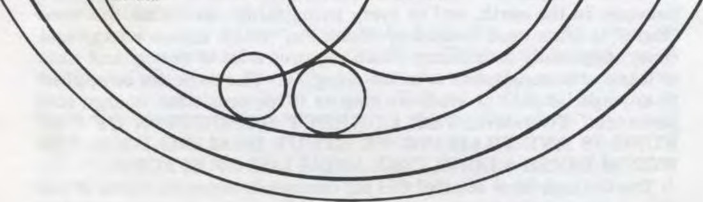
Tuy nhiên, việc thấu hiểu Thiên Khí là hết sức khó khăn, và điều này đặc biệt đúng vào thời xưa khi nền khoa học ấy vừa mới hình thành. Nhưng vì tự nhiên luôn lặp lại chính mình, kinh nghiệm tích lũy qua bao năm tháng đã khiến người ta có thể lần theo những quy luật tự nhiên. Hiểu được những quy luật và chu kỳ của "Tian Shyr" (thiên thời) sẽ giúp bạn hiểu được những biến đổi tự nhiên của các mùa, khí hậu, thời tiết, mưa, tuyết, hạn hán và mọi hiện tượng tự nhiên khác. Nếu quan sát cẩn thận, bạn sẽ có thể nhìn thấy nhiều quy luật và chu kỳ thường lệ ấy, do sự tái lập cân bằng của các trường Khí gây ra. Trong số các chu kỳ tự nhiên có những chu kỳ của ngày, tháng, năm, cũng như những chu kỳ mười hai năm và sáu mươi năm.
Địa Khí là một phần của Thiên Khí. Nếu bạn có thể hiểu được những quy luật và cấu trúc của trái đất, bạn sẽ có thể hiểu được núi sông hình thành thế nào, cây cối mọc lên ra sao, sông ngòi chảy thế nào, vùng đất nào thích hợp nhất cho một người nào đó, nên xây nhà ở đâu và quay về hướng nào để có một chỗ ở lành mạnh, cùng nhiều điều khác liên quan đến trái đất. Ở Trung Quốc ngày nay có những người được gọi là "Dih Lii Shy" (thầy địa lý) hay "Feng Shoei Shy" (thầy phong thủy), kiếm sống bằng nghề này. Thuật ngữ Feng Shoei được dùng phổ biến vì vị trí và tính chất của gió và nước trong một vùng đất là những yếu tố quan trọng nhất khi đánh giá một địa điểm. Những chuyên gia này dùng kho tàng tri thức địa lý phong thủy được tích lũy và Kinh Dịch để giúp người ta đưa ra những quyết định quan trọng như xây nhà ở đâu và như thế nào, chôn cất người chết ở đâu, và sắp xếp hay trang trí lại nhà cửa, văn phòng sao cho chúng trở thành những nơi tốt hơn để sống và làm việc. Nhiều người thậm chí còn tin rằng việc lập một cửa hàng hay cơ sở kinh doanh theo sự hướng dẫn của phong thủy có thể khiến nó phát đạt hơn.
Trong ba loại Khí, Nhân Khí có lẽ là loại được nghiên cứu kỹ lưỡng nhất. Việc nghiên cứu Nhân Khí bao trùm một số lượng lớn những chủ đề khác nhau. Người Trung Hoa tin rằng Nhân Khí chịu ảnh hưởng và sự điều khiển của Thiên Khí và Địa Khí, và rằng chính chúng quyết định vận mệnh của bạn. Do đó, nếu bạn hiểu được mối quan hệ giữa tự nhiên và con người, cùng với việc hiểu được những mối quan hệ giữa người với người (Ren Shyh), bạn sẽ có thể đoán trước được chiến tranh, vận mệnh của một quốc gia, hay những mong muốn, tâm tính và thậm chí cả tương lai của một con người. Những người hành nghề này được gọi là "Suann Ming Shy" (thầy tính số mệnh).
Tuy nhiên, thành tựu lớn nhất trong việc nghiên cứu Nhân Khí là ở phương diện sức khỏe và trường thọ. Vì Khí là nguồn sống, nếu bạn hiểu được cách Khí vận hành và biết cách điều chỉnh nó cho đúng, bạn hẳn sẽ có thể sống một cuộc đời dài lâu và khỏe mạnh. Hãy nhớ rằng bạn là một phần của tự nhiên, và bạn bị cuốn vào những chu kỳ của tự nhiên. Nếu bạn đi ngược lại chu kỳ tự nhiên ấy, bạn có thể sẽ bệnh, nên đi theo con đường của tự nhiên là vì lợi ích tốt nhất của chính bạn. Đây chính là ý nghĩa của "Đạo," có thể dịch là "Con Đường Tự Nhiên."
Nhiều phương diện khác nhau của Nhân Khí đã được nghiên cứu, bao gồm châm cứu, bấm huyệt, dùng thảo dược, thiền định và các bài tập Khí Công. Việc dùng châm cứu, bấm huyệt và thảo dược để điều chỉnh dòng chảy Nhân Khí đã trở thành cội rễ của y học Trung Hoa. Thiền định và những bài tập Khí Công vận động được người Trung Hoa dùng rộng rãi để cải thiện sức khỏe hoặc thậm chí để chữa trị một số bệnh tật. Thiền định và các bài tập Khí Công còn đóng một vai trò bổ sung, ở chỗ người Đạo gia và Phật gia dùng chúng trong hành trình tâm linh tìm cầu sự giác ngộ của mình.
Bạn có thể thấy rằng việc nghiên cứu bất kỳ phương diện nào của Khí, bao gồm Thiên Khí, Địa Khí và Nhân Khí, đều nên được gọi là Khí Công. Tuy nhiên, vì ngày nay thuật ngữ này thường chỉ được dùng để chỉ việc tu dưỡng Nhân Khí qua thiền định và các bài tập, nên chúng ta sẽ chỉ dùng nó theo nghĩa hẹp hơn ấy để tránh nhầm lẫn.
Trước khi kết thúc phần này, chúng ta muốn bàn thêm một điều nữa. Từ Nội Công thường được dùng, đặc biệt trong giới võ thuật Trung Hoa. "Nội" nghĩa là "bên trong" và "Công" nghĩa là "Kung Fu." Nội Công nghĩa là "Kung Fu nội tại," đối lập với Ngoại Công nghĩa là "Kung Fu bên ngoài." Nội Công là sự luyện tập võ thuật chuyên về nội công, tức là xây dựng Khí từ bên trong trước rồi sau đó phối hợp Khí với các kỹ thuật võ thuật. Những môn võ thuật Nội Công tiêu biểu của Trung Hoa là Thái Cực Quyền, Lục Hợp Bát Pháp, Bát Quái và Hình Ý. Trái với Nội Công, Ngoại Công nhấn mạnh đến việc phát triển các bắp thịt, kèm theo một mức tích tụ Khí nào đó trong tứ chi. Những môn võ thuật Ngoại Công tiêu biểu là: Đường Lang, Hổ, Ưng, Bạch Hạc, Long, v.v. Nhiều môn ngoại gia có nguồn gốc từ chùa Thiếu Lâm.
1-3. Về Cuốn Sách Này
Tôi hy vọng cuốn sách này sẽ đặt nền móng lý thuyết để những người luyện Khí Công có hứng thú có thể dùng trong việc luyện tập của mình. Mong rằng cuốn sách này có thể giải thích cho bạn cái Như Thế Nào, Tại Sao và Cái Gì của Khí Công, và giúp bạn tránh khỏi sự bối rối cùng những hướng dẫn sai lạc.
Viết một cuốn sách bao quát hơn bốn ngàn năm học hỏi và nghiên cứu là điều cực kỳ khó khăn, nhất là khi một phần lớn tri thức ấy đã được giữ kín cho đến hai mươi năm trở lại đây. Dù việc nghiên cứu Khí Công đã đạt đến tầm cao rất lớn, vẫn còn nhiều câu hỏi phải được trả lời nhờ vào công nghệ và tri thức liên ngành của ngày nay. Những tâm trí nhiệt huyết của thời đại này sẽ có rất nhiều cơ hội để nghiên cứu và quảng bá bộ môn này.
Một trong những mục đích chính của cuốn sách này là khơi dậy các học giả và giới y học phương Tây tham gia và nghiên cứu bộ môn khoa học vừa mới được tiết lộ này. Mong rằng những chuyên gia Khí Công khác cũng sẽ được khuyến khích chia sẻ tri thức của mình với công chúng. Tôi tin rằng trong một thời gian ngắn, Khí Công sẽ đạt đến những tầm cao mới và đầy hứng khởi ở thế giới phương Tây. Đó sẽ là một trong những thành tựu giao lưu văn hóa vĩ đại nhất kể từ khi phương Đông và phương Tây mở cửa cho nhau.
Hầu hết các tài liệu hiện có đều không được tổ chức một cách có hệ thống và không giải thích chủ đề ấy cho lắm. Khi tôi biên soạn chúng và cố gắng giải thích chúng một cách hợp lý và khoa học, tôi phải dùng sự phán đoán của riêng mình, và tôi phải giải thích chúng dựa trên nền tảng Khí Công cá nhân của mình cùng sự hiểu biết của tôi về các tài liệu ấy. Một người đơn độc không thể nào làm trọn vẹn một lĩnh vực mênh mông như thế này. Bạn được khuyến khích đặt câu hỏi về mọi điều được trình bày trong sách này, và luôn nhớ rằng nhiều kết luận là từ sự phán đoán của riêng tôi. Mục đích chính của cuốn sách này là dẫn bạn đến con đường học hỏi — nó không nhằm trở thành thẩm quyền tối hậu.
Khi đọc cuốn sách này, điều quan trọng là bạn phải giữ tâm trí cởi mở và buông bỏ những lối tư duy quen thuộc của mình. Khi chúng ta thấy mình trong một môi trường mới hay bắt đầu học một điều gì mới, bản tính con người là nhìn cái mới từ quan điểm của những gì mình đã học được. Đáng tiếc thay, điều này thường khiến chúng ta trở nên bảo thủ và hẹp hòi. Điều này thường thấy ở những du khách đến thăm một đất nước khác, nhưng lại đánh giá phong tục và cách hành xử của địa phương theo những chuẩn mực của nước mình. Điều này thường dẫn đến rất nhiều bối rối và hiểu lầm. Tuy nhiên, nếu bạn cố gắng hiểu người khác theo chính nền văn hóa và bối cảnh lịch sử của họ, bạn sẽ có cơ hội hiểu được cách hành xử của họ tốt hơn nhiều. Xin bạn hãy làm như vậy khi bắt đầu học bộ môn khoa học Khí Công này. Nếu bạn giữ tâm trí cởi mở và cố gắng hiểu nó theo bối cảnh lịch sử của nó, bạn sẽ thấy đây là một chủ đề hấp dẫn và đầy thách thức.
Đúng là rất khó để thoát khỏi truyền thống. Trong nhiều nền văn hóa cổ xưa, truyền thống phải được tuân theo tuyệt đối. Nếu ai chống lại truyền thống, người ấy bị coi là kẻ phản bội nền văn hóa. Tuy nhiên, cách tiếp cận đúng đắn đối với việc nghiên cứu và học hỏi là đặt câu hỏi với truyền thống và chứng minh những điểm sai lệch của nó bằng tư duy và công nghệ hiện đại. Điều này đặc biệt cần thiết đối với những nền khoa học cổ xưa đã được phát triển trước thế kỷ này. Việc nghiên cứu mới sẽ cho phép chúng ta chứng minh và xác lập tính chính xác của chúng. Bạn nên hiểu rằng đây không phải là một hình thức phản bội. Trách nhiệm của chúng ta là chứng minh chân lý và đưa sự thật ra ánh sáng.
Nhiều lý thuyết được truyền lại đều dựa trên nhiều năm kinh nghiệm. Dù bạn có sửa đổi một lý thuyết thế nào đi nữa, sự thật là nó vẫn là cội rễ của toàn bộ nền khoa học ấy. Do đó, cách tiếp cận đúng đắn đối với việc học hỏi và nghiên cứu là tôn trọng và tìm hiểu quá khứ. Từ sự tôn trọng và tìm hiểu ấy, bạn sẽ có thể tìm thấy cội rễ của toàn bộ nền khoa học. Nếu bạn quên đi cội rễ này, vốn đã mọc lên suốt hàng ngàn năm, thì bạn chỉ đang nghiên cứu những cành nhánh và hoa lá mà thôi.
Bạn nên đánh giá bộ môn khoa học nội tại này của Khí Công một cách hợp lý và khoa học. Dĩ nhiên, những từ "hợp lý" và "khoa học" không phải là những thuật ngữ tuyệt đối. Chúng tương đối so với nền khoa học và sự hiểu biết mà chúng ta đang có. Tuy nhiên, hãy nhớ rằng dù khoa học đã phát triển suốt hàng ngàn năm, chỉ trong khoảng một trăm năm trở lại đây nó mới đột ngột bùng nổ cả về bề rộng lẫn bề sâu của sự hiểu biết. Vì vậy chúng ta có thể chắc chắn rằng sự hiểu biết của chúng ta ngày nay vẫn còn đang ở thuở ấu thơ.
Có nhiều sự thật và hiện tượng mà khoa học ngày nay không thể giải thích được. Do đó, khi đọc bộ môn khoa học nội tại mới mẻ này, hãy hợp lý và khoa học, nhưng đừng bác bỏ những lời giải thích nằm ngoài điều mà bạn hiện coi là đúng. Điều được coi là đúng trong vài năm nữa có thể sẽ khá khác với điều chúng ta chấp nhận ngày nay.
Mọi nền khoa học đều phát triển từ những giả định thô sơ, rồi sau đó được chứng minh bằng những thực nghiệm cẩn thận. Những kết quả thu được từ các thực nghiệm cho phép chúng ta sửa đổi những giả định của mình và tạo ra những thực nghiệm mới để khảo sát những giả thuyết mới. Quá trình này giúp chúng ta phát triển một lý thuyết hoàn chỉnh, và xác định điều gì cần được nghiên cứu tiếp theo.
Việc luyện Khí Công cũng vậy. Nếu bạn nhìn nhận và nghiên cứu một cách cẩn thận, bạn sẽ thấy rằng dù nhiều lý thuyết liên quan đến Khí đã được chứng minh là chính xác và đã được dùng rộng rãi ở Trung Quốc, vẫn còn nhiều câu hỏi cần được trả lời.
Trong suốt quá trình học hỏi, bạn phải kiên nhẫn và bền bỉ. Ý chí mạnh mẽ, sự kiên nhẫn và sự bền bỉ là ba thành tố chính của thành công. Điều này đặc biệt đúng trong việc luyện Khí Công. Ý chí và trí tuệ của bạn phải có khả năng chi phối và chế ngự sự lười biếng trong cảm xúc của mình. Tôi tin rằng thành công của một người phụ thuộc vào thái độ của người ấy đối với cuộc sống và phẩm chất đạo đức của người ấy, chứ không phải vào trí tuệ và sự thông minh. Chúng ta đều biết những người thông thái, nhưng cuối cùng lại trở thành kẻ thất bại. Họ có thể thông minh, họ tiếp thu mọi thứ nhanh hơn người khác, nhưng họ chóng mất hứng thú. Nếu họ không bền bỉ, họ ngừng học hỏi và ngừng trưởng thành, và họ không bao giờ đạt được mục tiêu của mình. Họ không bao giờ nhận ra rằng thành công đòi hỏi những đức tính đạo đức, chứ không chỉ trí tuệ. Một người thật sự thông thái biết rằng mình phải phát triển những yêu cầu khác của thành công.
Ngoài ra, một người thật sự thông thái sẽ biết khi nào nên bắt đầu và khi nào nên dừng lại. Nhiều cơ hội thành công bị đánh mất bởi những người quá tự hào về trí thông minh của mình. Có một câu chuyện Trung Hoa về một nhóm người thi vẽ rắn. Một người hoàn thành bức vẽ con rắn của mình nhanh hơn tất cả những người khác. Anh ta rất tự hào về mình, và nghĩ "Mình nhanh đến mức có thể vẽ thêm bốn cái chân cho con rắn mà vẫn thắng!" Thế là anh ta vẽ thêm chân, nhưng khi vị giám khảo chọn người thắng cuộc, người thắng lại là người khác. Người đàn ông ấy rất bực bội, và hỏi vị giám khảo vì sao mình không thắng; dù sao thì anh ta đã hoàn thành trước mọi người khác. Vị giám khảo nói: "Anh đáng lẽ phải vẽ một con rắn. Vì rắn không có chân, nên thứ anh vẽ ra không phải là rắn." Vậy là, dù người ấy thông minh đến đâu, anh ta vẫn không đủ khôn ngoan để biết khi nào nên dừng lại.
Một người thật sự thông thái hiểu rằng thành công chân thật không chỉ phụ thuộc vào trí tuệ mà còn vào phẩm chất đạo đức của mình. Do đó, người ấy cũng sẽ tu dưỡng phẩm chất đạo đức và phát triển nhân cách tốt đẹp của mình. Khổng Tử nói: "Một người thật sự thông thái biết điều mình biết và cũng biết điều mình không biết." (*2) Quá thường xuyên, những người thông minh trở nên tự mãn với những thành tựu của mình và đánh mất lòng khiêm tốn. Họ cảm thấy mình biết đủ rồi, nên họ ngừng học hỏi và ngừng trưởng thành. Về lâu dài họ chỉ có thể thua thiệt. Hãy nhớ câu chuyện về rùa và thỏ. Nếu con thỏ không quá tự phụ và tự mãn, nó đã không thua cuộc đua.
Một khi bạn đã hiểu những gì được truyền lại cho mình, bạn nên sáng tạo. Dĩ nhiên, sự sáng tạo này phải nằm dưới một điều kiện: bạn phải hiểu con đường cũ một cách rõ ràng và thấu đáo. Chỉ sau khi bạn hiểu tri thức cũ đến một tầm sâu sắc, tâm trí bạn mới đủ tư cách để nghĩ "điều gì sẽ xảy ra nếu...". Khi ấy bạn sẽ có thể nảy ra những ý tưởng hay cho việc học hỏi và nghiên cứu tiếp theo. Nếu mọi người luyện Khí Công chỉ thực hành những cách cũ mà không bao giờ tìm kiếm những cách mới, thì bộ môn khoa học Khí Công sẽ ứ trệ ở mức độ hiện tại của nó. Trong trường hợp đó, chúng ta sẽ đánh mất ý nghĩa và thái độ chân thật đối với việc học hỏi.
Cuốn sách này cung cấp nền tảng tri thức và những bài luyện tập cần thiết để hiểu được những nghiên cứu Khí Công về sau.
Cuốn sách này gồm bốn phần chính. Phần thứ nhất sẽ tóm tắt ngắn gọn lịch sử Khí Công, giải thích những thuật ngữ Khí Công cần thiết và bàn về những phạm trù chính của Khí Công. Phần thứ hai sẽ bàn về lý thuyết và những chìa khóa chính của việc luyện Khí Công. Điều này sẽ giúp người mới học Khí Công bước vào cửa khu vườn Khí Công, và mang đến cho người luyện tập đã có kinh nghiệm một bản chỉ dẫn về các loại Khí Công khác nhau. Phần thứ ba sẽ xem xét các kinh mạch để giúp bạn hiểu hệ tuần hoàn Khí trong cơ thể con người. Cuối cùng, phần thứ tư sẽ kết luận phần thảo luận của cuốn sách này, và liệt kê một số trong nhiều câu hỏi mà tôi còn băn khoăn về Khí Công.
Lịch Sử Khí Công
Lịch sử Khí Công Trung Quốc có thể được chia đại khái thành bốn thời kỳ. Chúng ta biết rất ít về thời kỳ thứ nhất, được xem là bắt đầu từ khi cuốn “I Ching” (Kinh Dịch, Sách về Những Biến Đổi) ra đời vào khoảng trước năm 1122 trước Công nguyên, và kéo dài cho đến nhà Hán (206 trước Công nguyên), khi Phật giáo cùng các phương pháp thiền định của nó được du nhập từ Ấn Độ. Sự du nhập này đã đưa việc luyện tập Khí Công và thiền định bước vào thời kỳ thứ hai — thời kỳ Khí Công tôn giáo. Thời kỳ này kéo dài cho đến nhà Lương (502–557 sau Công nguyên), khi người ta phát hiện ra rằng Khí Công có thể được dùng cho mục đích võ thuật. Đó là khởi đầu của thời kỳ thứ ba — thời kỳ Khí Công võ thuật. Nhiều phái Khí Công võ thuật khác nhau đã được sáng tạo dựa trên các lý thuyết và nguyên tắc của Khí Công Phật giáo và Đạo giáo. Thời kỳ này kéo dài cho đến khi nhà Thanh bị lật đổ vào năm 1911, khi một kỷ nguyên mới bắt đầu, trong đó việc luyện tập Khí Công Trung Quốc được hòa trộn với các phương pháp Khí Công từ Ấn Độ, Nhật Bản và nhiều quốc gia khác.
2-1. Trước nhà Hán (Trước năm 206 trước Công nguyên)
“I Ching” (Kinh Dịch, Sách về Những Biến Đổi; 1122 trước Công nguyên) có lẽ là cuốn sách Trung Quốc đầu tiên liên quan đến Khí. Nó đưa ra khái niệm về ba năng lượng hay thế lực tự nhiên (Tam Tài – San Tsair): Thiên (Tian, Trời), Địa (Dih, Đất) và Nhân (Ren, Người). Nghiên cứu mối quan hệ giữa ba thế lực tự nhiên này là bước đầu tiên trong sự phát triển của Khí Công.
Vào năm 1766–1154 trước Công nguyên (nhà Thương), kinh đô của Trung Quốc nằm tại vùng ngày nay là An Dương thuộc tỉnh Hà Nam. Một cuộc khai quật khảo cổ tại đó, ở một khu mộ táng thời Hậu Thương có tên Ân Khư (Yin Shiu), đã phát hiện hơn 160.000 mảnh mai rùa và xương động vật được phủ đầy chữ viết. Lối chữ viết này, gọi là “Jea Guu Wen” (Giáp Cốt Văn), là bằng chứng sớm nhất về việc người Trung Quốc dùng chữ viết. Phần lớn thông tin được ghi chép mang tính tôn giáo. Không có đề cập nào đến châm cứu hay kiến thức y học nào khác, mặc dù trong sách Nội Kinh có ghi rằng vào thời trị vì của Hoàng Đế (2690–2590 trước Công nguyên), Biển Thạch (Bian Shyr, đá châm) đã được dùng để điều chỉnh sự lưu thông Khí của con người. Tuy nhiên, các nhà khảo cổ đã tìm thấy những viên đá tại khu khai quật mà họ tin là Biển Thạch (Hình 2-1).
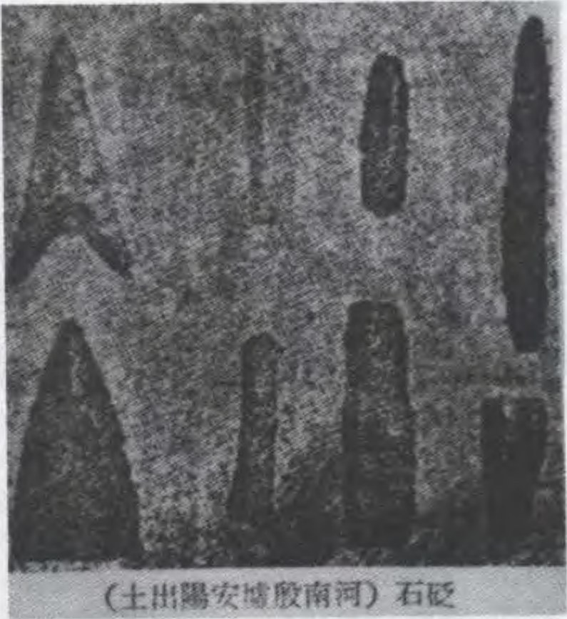
Dưới thời nhà Chu (1122–934 trước Công nguyên), Lão Tử (Li Erh) đã nhắc đến một số kỹ thuật hô hấp trong tác phẩm kinh điển của ông là “Tao Te Ching” (Đạo Đức Kinh, Kinh về Đức của Đạo). Ông nhấn mạnh rằng con đường đạt được sức khỏe là “chuyên chú vào Khí và đạt được sự mềm dịu” (Juan Chi Jyh Rou). Về sau, “Shyy Gi” (Sử Ký, Ghi chép Lịch sử) vào thời Xuân Thu và Chiến Quốc (770–221 trước Công nguyên) cũng mô tả những phương pháp luyện thở hoàn chỉnh hơn. Khoảng năm 300 trước Công nguyên, nhà triết học Đạo giáo Trang Tử đã mô tả mối quan hệ giữa sức khỏe và hơi thở trong cuốn sách “Nan Hwa Ching” (Nam Hoa Kinh) của ông. Sách viết: “Người xưa hô hấp thấu tận gót chân…” Đây không phải là một cách nói tu từ, mà xác nhận rằng một phương pháp hô hấp để lưu thông Khí đã được một số người theo Đạo giáo sử dụng vào thời điểm đó.
Dưới thời nhà Tần và nhà Hán (221 trước Công nguyên – 220 sau Công nguyên), có một số tài liệu y học trong văn học nhắc đến Khí Công, chẳng hạn như “Nan Ching” (Nan Kinh, Kinh về Các Bệnh Tật) của danh y Biển Thước, mô tả việc dùng hơi thở để tăng cường lưu thông Khí. “Gin Guey Yao Liueh” (Kim Quỹ Yếu Lược, Những Phương Thuốc từ Nhà Vàng) của Trương Trọng Cảnh bàn về việc dùng hơi thở và châm cứu để duy trì dòng Khí tốt. “Jou I Tsan Tbmg Chih” (Nghiên cứu So sánh về Kinh Dịch thời Chu triều) của Ngụy Bá Dương giải thích mối quan hệ giữa con người với các thế lực tự nhiên và Khí. Có thể thấy từ danh sách này rằng cho tới thời điểm đó, gần như tất cả các ấn phẩm về Khí Công đều do các học giả như Lão Tử và Trang Tử, hoặc các thầy thuốc như Biển Thước và Ngụy Bá Dương, viết ra.
Hãy kết lại bằng một vài điểm quan trọng về Khí Công trong thời kỳ này:
- Ngày nay các tài liệu lịch sử của thời kỳ này rất khan hiếm, và khó thu thập được thông tin chi tiết, đặc biệt là về việc luyện tập Khí Công.
- Có hai loại hình luyện tập Khí Công chính. Một loại được các học giả Nho giáo và Đạo giáo sử dụng, chủ yếu để duy trì sức khỏe của họ. Loại Khí Công kia dùng cho mục đích y học, sử dụng kim châm hoặc các bài tập để điều chỉnh Khí hoặc để chữa bệnh.
- Gần như không có màu sắc tôn giáo nào trong việc luyện tập.
- Toàn bộ việc luyện tập tập trung vào việc thuận theo con đường tự nhiên và cải thiện, duy trì sức khỏe. Việc chủ động chống lại các tác động của tự nhiên được coi là bất khả thi.
2-2. Từ nhà Hán đến đầu nhà Lương (206 trước Công nguyên – 502 sau Công nguyên)
Vì nhiều hoàng đế nhà Hán thông minh và sáng suốt, nhà Hán là một thời kỳ huy hoàng và thanh bình. Chính vào thời Đông Hán (khoảng năm 58 sau Công nguyên) mà Phật giáo được truyền vào Trung Quốc từ Ấn Độ. Hoàng đế nhà Hán trở thành một Phật tử thành tâm, và Phật giáo nhanh chóng lan rộng và trở nên rất phổ biến. Nhiều phương pháp thiền định và Khí Công của Phật giáo, vốn đã được thực hành ở Ấn Độ hàng ngàn năm, được hấp thụ vào văn hóa Trung Quốc. Các ngôi chùa Phật giáo truyền dạy nhiều phương pháp Khí Công, đặc biệt là phép tĩnh tọa thiền định của Thiền (Cham – Zen), điều đã đánh dấu một kỷ nguyên mới của Khí Công Trung Quốc. Phần lớn lý thuyết và phương pháp luyện tập Khí Công sâu xa hơn vốn đã được phát triển ở Ấn Độ đều được đưa vào Trung Quốc. Đáng tiếc thay, vì việc luyện tập nhắm đến việc đạt được quả vị Phật, các phương pháp luyện tập và lý thuyết ấy được ghi lại trong các kinh sách Phật giáo và được giữ bí mật. Suốt hàng trăm năm, việc luyện tập Khí Công tôn giáo không bao giờ được truyền dạy cho người thế tục. Chỉ đến thế kỷ này nó mới trở nên sẵn có cho quảng đại quần chúng.
Không lâu sau khi Phật giáo được truyền vào Trung Quốc, một người theo Đạo giáo tên là Trương Đạo Lăng đã kết hợp các nguyên tắc Đạo giáo truyền thống với Phật giáo và sáng lập một tôn giáo gọi là Đạo Giáo (Tao Jiaw). Nhiều phương pháp thiền định là sự kết hợp các nguyên tắc và phương pháp luyện tập của cả hai nguồn gốc.
Vì Tây Tạng có nhánh Phật giáo riêng với hệ thống luyện tập và các phương pháp đạt được quả vị Phật riêng, các Phật tử Tây Tạng cũng được mời đến Trung Quốc để thuyết pháp. Dần dà, các phương pháp của họ cũng được hấp thụ.
Chính trong thời kỳ này, những người luyện Khí Công Trung Quốc truyền thống cuối cùng đã có cơ hội so sánh nghệ thuật của mình với các phương pháp Khí Công tôn giáo du nhập chủ yếu từ Ấn Độ. Trong khi Khí Công học thuật và Khí Công y học quan tâm đến việc duy trì và cải thiện sức khỏe, thì Khí Công tôn giáo mới du nhập lại quan tâm đến nhiều điều hơn thế. Các tài liệu đương thời và các phái Khí Công cho thấy rõ rằng những người tu hành tôn giáo luyện Khí đến một tầng sâu hơn nhiều, làm việc với nhiều chức năng nội tại của cơ thể, và nỗ lực kiểm soát thân, tâm và thần của mình với mục tiêu thoát khỏi vòng luân hồi tái sinh.
Trong khi các phương pháp luyện tập Khí Công và thiền định được truyền lại bí mật trong các tu viện, thì các học giả và thầy thuốc truyền thống vẫn tiếp tục nghiên cứu Khí Công. Dưới thời nhà Tấn vào thế kỷ thứ 3 sau Công nguyên, một danh y tên là Hoa Đà đã dùng châm cứu để gây tê trong phẫu thuật. Đạo sĩ Cầm Tích (Jiun Chiaro) đã dùng các động tác của loài vật để sáng tạo Ngũ Cầm Hí (Wuu Chyn Shih, Năm Trò Chơi của Loài Vật), dạy người ta cách tăng cường lưu thông Khí thông qua những động tác cụ thể. Cũng trong thời kỳ này, một thầy thuốc tên là Cát Hồng (Ger Horng) đã đề cập đến việc dùng ý để dẫn dắt và tăng cường Khí trong cuốn sách Bão Phác Tử (Baw Poh Tzyy) của ông. Vào khoảng giai đoạn 420 đến 581 sau Công nguyên, Đào Hoằng Cảnh (Taur Horng-Jiing) đã biên soạn “Yeang Shenn Yan Ming Luh” (Dưỡng Sinh Diên Mệnh Lục, Ghi chép về Nuôi dưỡng Cơ thể và Kéo dài Tuổi thọ), trong đó trình bày nhiều kỹ thuật Khí Công.
Những đặc điểm của Khí Công trong thời kỳ này là:
- Có ba phái Khí Công tôn giáo đã ảnh hưởng và chi phối việc luyện tập Khí Công trong thời kỳ này. Đó là Phật giáo Ấn Độ, Phật giáo Tây Tạng và Đạo giáo.
- Gần như toàn bộ các phương pháp luyện tập Khí Công tôn giáo đều được giữ bí mật trong các tu viện.
- Việc luyện tập Khí Công tôn giáo nhằm thoát khỏi vòng luân hồi tái sinh.
- Tương đối mà nói, lý thuyết Khí Công tôn giáo sâu xa hơn lý thuyết của Khí Công phi tôn giáo, và việc luyện tập cũng khó hơn.
- Lý thuyết lưu thông Khí đã được hiểu rõ hơn vào thời điểm này, nên các bài Khí Công được tạo ra trong thời kỳ này có vẻ hiệu quả hơn các bài cũ.
2-3. Từ nhà Lương đến cuối nhà Thanh (502–1911 sau Công nguyên)
Dưới thời nhà Lương (502–557 sau Công nguyên), hoàng đế đã mời một nhà sư Phật giáo tên là Đạt Ma (Da Mo), người từng là một hoàng tử Ấn Độ, đến Trung Quốc thuyết giảng Phật pháp. Khi hoàng đế quyết định rằng mình không thích lý thuyết Phật giáo của Đạt Ma, nhà sư rút lui về Thiếu Lâm Tự. Khi Đạt Ma đến, ông thấy các tăng sĩ yếu ớt và bệnh tật, nên ông khép mình lại để suy ngẫm về vấn đề này. Khi xuất hiện sau chín năm ẩn cư, ông đã viết hai tác phẩm kinh điển: “Yi Gin Ching” (Dịch Cân Kinh, Kinh về Chuyển hóa Gân Cơ) và “Shii Soei Ching” (Tẩy Tủy Kinh, Kinh về Rửa Tủy). Dịch Cân Kinh dạy các tăng sĩ cách đạt được sức khỏe và chuyển hóa thân xác của họ từ yếu thành mạnh. Tẩy Tủy Kinh dạy các tăng sĩ cách dùng Khí để làm sạch tủy xương và củng cố máu cùng hệ miễn dịch, cũng như cách làm sinh động bộ não và đạt được giác ngộ. Vì Tẩy Tủy Kinh khó hiểu và khó thực hành hơn, các phương pháp luyện tập ấy được truyền lại bí mật cho chỉ một vài đệ tử rất ít trong mỗi thế hệ.
Sau khi các tăng sĩ luyện tập các bài tập Dịch Cân Kinh, họ nhận thấy rằng không chỉ sức khỏe được cải thiện mà sức mạnh của họ cũng tăng lên rất nhiều. Khi việc luyện tập này được tích hợp vào các bài quyền võ thuật, nó làm tăng hiệu quả của các kỹ thuật của họ. Ngoài việc luyện tập Khí Công võ thuật này, các tăng sĩ Thiếu Lâm còn sáng tạo ra năm phái Kung Fu mô phỏng theo cách chiến đấu của các loài vật khác nhau. Những loài vật được mô phỏng là hổ, báo, rồng, rắn và hạc.
Bên ngoài tu viện, sự phát triển của Khí Công vẫn tiếp diễn dưới thời nhà Tùy và nhà Đường (581–907 sau Công nguyên). Sào Nguyên Phương (Chaur Yuan-Fang) đã biên soạn “Ju Bing Yuan Hou Luenn” (Chư Bệnh Nguyên Hậu Luận, Luận thuyết về Nguồn gốc và Triệu chứng của các Bệnh khác nhau), một bộ bách khoa thực sự về các phương pháp Khí Công liệt kê 260 cách khác nhau để tăng cường dòng Khí. “Chian Gin Fang” (Thiên Kim Phương, Ngàn Phương Thuốc Vàng) của Tôn Tư Mạc mô tả phương pháp dẫn Khí, và cũng mô tả việc sử dụng Sáu Âm. Việc dùng Sáu Âm để điều hòa Khí trong các nội tạng đã được Phật tử và Đạo sĩ sử dụng từ lâu trước đó. Tôn Tư Mạc cũng giới thiệu một hệ thống xoa bóp gọi là 49 Kỹ thuật Xoa bóp của Lão Tử. “Wai Tai Mih Yao” (Ngoại Đài Bí Yếu, Bí mật Đặc biệt Quan trọng) của Vương Đào bàn về việc dùng hơi thở và liệu pháp thảo dược để chữa các rối loạn lưu thông Khí.
Dưới thời nhà Tống, nhà Kim và nhà Nguyên (960–1368 sau Công nguyên), “Yeang Sheng Jyue” (Dưỡng Sinh Quyết, Bí quyết Nuôi dưỡng Sự sống) của Trương An Đạo bàn về một số phương pháp luyện Khí Công. “Ru Men Shyh Shyh” (Nho Môn Sự Thân, Quan điểm của Nho gia) của Trương Tử Hòa mô tả việc dùng Khí Công để chữa các thương tích bên ngoài như vết cắt và bong gân. “Lan Shyh Mih Tsarng” (Lan Thất Bí Tàng, Thư viện Bí mật của Phòng Lan) của Lý Quốc mô tả việc dùng Khí Công và các phương thuốc thảo dược để chữa các rối loạn nội tại. “Ger Jyh Yu Luenn” (Cách Trí Dư Luận, Luận thuyết Bổ sung về Sự Nghiên cứu Hoàn chỉnh) của Chu Đan Khê đưa ra một giải thích lý thuyết cho việc dùng Khí Công trong chữa bệnh.
Dưới thời nhà Tống (960–1279 sau Công nguyên), không lâu sau khi Thiếu Lâm Tự bắt đầu dùng Khí Công trong việc luyện tập võ thuật, Trương Tam Phong được tin là người đã sáng tạo ra Thái Cực Quyền. Thái Cực theo một cách tiếp cận khác trong việc sử dụng Khí Công so với Thiếu Lâm. Trong khi Thiếu Lâm nhấn mạnh các bài tập Khí Công Ngoại Đan (Wai Dan, Đan Dược Bên ngoài), thì Thái Cực nhấn mạnh việc luyện tập Khí Công Nội Đan (Nei Dan, Đan Dược Bên trong). (Ngoại Đan và Nội Đan được mô tả trong Chương 6).
Năm 1026 sau Công nguyên, người đồng nhân nổi tiếng về châm cứu được thiết kế và chế tạo bởi Tiến sĩ Vương Duy Nhất (Wang Wei-Yi). Trước thời điểm này, tuy đã có nhiều ấn phẩm bàn về lý thuyết, nguyên tắc và kỹ thuật điều trị của châm cứu, nhưng giữa chúng có nhiều bất đồng và nhiều điểm chưa rõ ràng. Khi Tiến sĩ Vương chế tạo người đồng nhân của mình, ông cũng viết một cuốn sách tên là “Torng Ren Yu Shillh Jen Jeou Twu” (Đồng Nhân Du Huyệt Châm Cứu Đồ, Minh họa về Châm cứu và Cứu ngải trên Người Đồng nhân). Ông giải thích mối quan hệ giữa 12 tạng phủ và 12 kinh mạch Khí, làm sáng tỏ nhiều điểm còn nhầm lẫn, và lần đầu tiên hệ thống hóa một cách có hệ thống lý thuyết và nguyên tắc châm cứu.
Năm 1034 sau Công nguyên, Tiến sĩ Vương dùng châm cứu để chữa khỏi bệnh cho hoàng đế Nhân Tông. Với sự ủng hộ của hoàng đế, châm cứu hưng thịnh. Để khuyến khích việc nghiên cứu y học châm cứu, hoàng đế đã xây một ngôi đền thờ Biển Thước, người đã viết Nan Kinh, và tôn thờ ông như tổ sư của châm cứu. Kỹ thuật châm cứu phát triển đến mức ngay cả người Kim ở phương Bắc cũng yêu cầu được cung cấp người đồng nhân và các kỹ thuật châm cứu khác như một điều kiện cho hòa bình. Trong khoảng từ năm 1102 đến 1106 sau Công nguyên, Tiến sĩ Vương đã mổ xác các tù nhân và bổ sung thêm thông tin vào Nan Kinh. Công trình của ông đã đóng góp rất lớn cho sự tiến bộ của Khí Công và y học Trung Quốc bằng cách đưa ra một ý niệm rõ ràng và có hệ thống về sự lưu thông của Khí trong cơ thể con người.
Về sau, dưới thời Nam Tống (1127–1279 sau Công nguyên), Nguyên soái Nhạc Phi được ghi công là người đã sáng tạo ra một số bài tập Khí Công nội công và võ thuật. Người ta nói rằng ông đã sáng tạo Bát Đoạn Cẩm để cải thiện sức khỏe của binh lính mình. Ông cũng được biết đến là người sáng tạo ra phái nội gia Hình Ý. Ngoài ra, các võ sĩ của phái Ưng cũng cho rằng Nhạc Phi là người sáng tạo ra phái của họ.
Từ đó cho đến cuối nhà Thanh (1911 sau Công nguyên), nhiều phái Khí Công khác được thành lập. Những phái nổi tiếng bao gồm Hổ Bộ Công (Fwu Bub Kung, Kung Bước Hổ), Thập Nhị Trang (Shyr Er Juang, Mười Hai Tư thế) và Khất Cái Công (Jiaw Huah Kung, Kung của Người Ăn Xin). Cũng trong thời kỳ này, nhiều tài liệu liên quan đến Khí Công được xuất bản, chẳng hạn như “Bao Shenn Mih Yao” (Bảo Thân Bí Yếu, Văn bản Bí mật Quan trọng về Bảo vệ Cơ thể) của Tào Nguyên Bá, mô tả các phương pháp Khí Công động và tĩnh; và “Yeang Sheng Fu Yeu” (Dưỡng Sinh Phù Yếu, Giới thiệu Vắn tắt về Nuôi dưỡng Cơ thể) của Trần Nhất Như, bàn về ba báu vật: Tinh (Jieng, tinh chất), Khí (Chi, năng lượng nội tại) và Thần (Shen, tinh thần). Ngoài ra, “Yi Fang Jyi Jieh” (Y Phương Tập Giải, Giới thiệu Toàn diện về Các Phương thuốc Y học) của Uông Phỏng An đã xem xét và tóm tắt các tài liệu đã xuất bản trước đó; và “Nei Kung Twu Shwo” (Nội Công Đồ Thuyết, Giải thích có Minh họa về Nội Công) của Vương Tổ Nguyên đã trình bày Mười Hai Đoạn Cẩm và giải thích ý tưởng kết hợp cả Khí Công động và tĩnh.
Vào cuối nhà Minh (khoảng năm 1640 sau Công nguyên), một phái Khí Công võ thuật, Hỏa Long Công (Huoo Long Kung, Kung Rồng Lửa), được các võ sĩ phái Thái Dương sáng tạo. Phái võ thuật nội gia nổi tiếng Bát Quái Chưởng (Ba Kua Chang, Lòng bàn tay Bát Quái) được tin là do Đổng Hải Xuyên sáng tạo vào cuối nhà Thanh (1644–1911 sau Công nguyên). Phái này hiện đang ngày càng phổ biến trên khắp thế giới.
Dưới thời nhà Thanh, thiền định và kỹ thuật võ thuật Tây Tạng lần đầu tiên trở nên phổ biến rộng rãi ở Trung Quốc. Điều này là nhờ sự khuyến khích và quan tâm của các hoàng đế Mãn Châu trong hoàng cung, cũng như của những người có địa vị cao khác trong xã hội.
Những đặc điểm của Khí Công trong thời kỳ này là:
- Khí Công được chuyển thể vào võ thuật, và các phái Khí Công võ thuật được sáng tạo.
- Lý thuyết lưu thông Khí và châm cứu đạt đến đỉnh cao. Nhiều tài liệu về Khí Công y học được xuất bản hơn so với các loại bài tập Khí Công khác.
- Việc luyện tập Khí Công tôn giáo vẫn được giữ bí mật.
- Các bài tập Khí Công đã trở nên phổ biến hơn trong xã hội Trung Quốc.
2-4. Từ cuối nhà Thanh đến nay
Trước năm 1911 sau Công nguyên, xã hội Trung Quốc vẫn còn rất bảo thủ và cổ hủ. Mặc dù trong một trăm năm trước đó Trung Quốc đã mở rộng tiếp xúc với thế giới bên ngoài, nhưng thế giới bên ngoài ít có ảnh hưởng ngoài các vùng ven biển. Với việc nhà Thanh bị lật đổ vào năm 1911 và sự thành lập Trung Hoa Dân Quốc, quốc gia này bắt đầu thay đổi chưa từng thấy. Kể từ đó, việc luyện tập Khí Công đã bước vào một kỷ nguyên mới. Nhờ sự dễ dàng trong giao tiếp của thế giới hiện đại, văn hóa phương Tây đang có ảnh hưởng lớn đến phương Đông. Nhiều người Trung Quốc đã mở rộng tâm trí và thay đổi những quan niệm truyền thống của mình, đặc biệt là ở Đài Loan và Hồng Kông. Nhiều phái Khí Công khác nhau nay được truyền dạy một cách công khai, và nhiều tài liệu trước đây vốn bí mật đã được xuất bản. Các phương tiện truyền thông hiện đại đã mở ra cho Khí Công một đối tượng rộng lớn hơn nhiều so với bao giờ hết, và người ta nay có cơ hội học hỏi và hiểu biết nhiều phái khác nhau. Ngoài ra, con người nay có thể so sánh Khí Công Trung Quốc với những nghệ thuật tương tự từ các quốc gia khác như Ấn Độ, Nhật Bản, Hàn Quốc và Trung Đông.
Tôi tin rằng trong tương lai gần, Khí Công sẽ được coi là lĩnh vực nghiên cứu hấp dẫn và đầy thách thức nhất. Nó là một ngành khoa học cổ xưa đang chờ được khảo cứu với sự giúp đỡ của các công nghệ mới hiện đang được phát triển với tốc độ gần như bùng nổ. Bất cứ điều gì chúng ta có thể làm để đẩy nhanh nghiên cứu này sẽ giúp ích rất nhiều cho nhân loại trong việc hiểu biết và hoàn thiện chính mình.
Khái Niệm Cơ Bản Về Khí Công
Có một số thuật ngữ đặc biệt thường được những người hành Khí Công (Chi Kung) dùng đến, và cũng xuất hiện trong những tài liệu được truyền lại từ đời này sang đời khác. Vì hầu hết những thuật ngữ này là những từ then chốt giúp bạn nắm bắt các khái niệm cơ bản của việc luyện tập Khí Công, nên điều quan trọng là bạn phải hiểu được ý nghĩa thật sự của chúng. Trong chương này, chúng ta sẽ bàn đến những thuật ngữ chính có liên hệ trực tiếp đến việc luyện tập Khí Công. Những thuật ngữ khác sẽ được bàn trong Phụ Lục B.
3-1. Tam Bửu — Tinh, Khí và Thần
Hiểu được Tinh (Jieng, tức Essence — Tinh chất), Khí (Chi, tức nội năng), và Thần (Shen, tức tinh thần) là một trong những yêu cầu quan trọng nhất để luyện tập Khí Công có hiệu quả. Chúng là cội rễ của đời sống bạn, và do đó cũng là cội rễ của việc luyện tập Khí Công. Tinh, Khí và Thần được gọi là "San Bao," nghĩa là "Tam Bửu," tức "Ba Báu Vật"; "San Yuan," nghĩa là "Tam Nguyên," tức "Ba Nguồn Gốc"; hay "San Been," nghĩa là "Tam Bản," tức "Ba Nền Tảng." Trong luyện tập Khí Công, người hành giả học cách "cố định Tinh của mình" (Guh Jieng; Guh nghĩa là làm cho vững chắc, cố định, giữ lại và bảo tồn) và cách chuyển hóa nó thành Khí. Việc này gọi là "Liann Jieng Huah Chi," nghĩa là "luyện Tinh và chuyển hóa thành Khí." Rồi người đó học cách dẫn Khí lên đầu để chuyển hóa thành Thần (còn gọi là dưỡng Thần). Việc này gọi là "Liann Chi Huah Shen," nghĩa là "luyện Khí và chuyển hóa thành (nuôi dưỡng) Thần." Cuối cùng, người hành giả học cách dùng Thần đã được sung mãn của mình để điều ngự phần cảm xúc của nhân cách. Việc này gọi là "Liann Shen Leau Shing," hay "luyện Thần để chấm dứt bản tính nhân loại (cảm xúc)."
Những quá trình chuyển hóa này chính là điều giúp bạn đạt được sức khỏe và trường thọ. Là một người luyện Khí Công, bạn phải hết sức chú ý đến ba yếu tố này trong suốt quá trình luyện tập. Nếu bạn giữ cho ba yếu tố này mạnh khỏe, bạn sẽ sống một đời dài lâu và khỏe mạnh. Nếu bạn bỏ bê hay lạm dụng chúng, bạn sẽ thường xuyên ốm đau và già đi nhanh chóng. Mỗi một trong ba yếu tố hay ba báu vật này đều có cội rễ riêng của nó. Bạn phải biết rõ các cội rễ ấy để có thể củng cố và bảo vệ ba báu vật của mình.
Tinh (Jieng):
Chữ Hán "Jieng" (Tinh) mang nhiều nghĩa tùy theo nơi, lúc và cách dùng. Tinh có thể được dùng như một động từ, một tính từ, hay một danh từ. Khi dùng như động từ, nó nghĩa là "tinh luyện." Chẳng hạn, tinh luyện hay làm tinh khiết một chất lỏng đến chất lượng cao được gọi là "Jieng Liann." Khi dùng như tính từ, nó được dùng để mô tả hay biểu thị một cái gì đó "tinh tế," "được trau chuốt" và "thuần khiết không pha tạp." Chẳng hạn, khi một tác phẩm nghệ thuật được làm khéo léo, người ta nói "Jieng Shih," nghĩa là "tinh xảo và công phu" (nghĩa đen là "thuần khiết và mịn màng"), hay "Jieng Liang," nghĩa là "phẩm chất xuất sắc" (nghĩa đen là "thuần khiết và tốt lành"). Khi Tinh được dùng để nói về trí tuệ hay nhân cách của một người, nó nghĩa là "sắc sảo" và "nhạy bén." Chẳng hạn, khi ai đó thông minh hay khôn ngoan, họ được gọi là "Jieng Ming," nghĩa là "sắc sảo và lanh lợi." Khi Tinh được áp dụng cho một ý tưởng, nó nghĩa là "sâu sắc" hay "nhạy bén," và cho thấy rằng ý tưởng hay kế hoạch ấy đã được suy xét kỹ lưỡng và chu đáo. Khi dùng như danh từ chỉ một vật thể, Tinh nghĩa là "tinh chất" hay "những gì cốt yếu." Khi dùng cho phương diện năng lượng của một chúng sinh, nó nghĩa là "linh hồn" hay "ma." Vì người Trung Hoa tin rằng tinh trùng hay tinh dịch của người nam là sản phẩm tinh luyện và thiết yếu nhất của người đàn ông, nên Tinh cũng có nghĩa là tinh trùng hay tinh dịch. Khi Tinh được dùng với nghĩa "tinh chất," nó hiện hữu trong mọi vật. Tinh có thể được xem là bản chất nguyên sơ hay nguồn gốc nguyên thủy mà từ đó một vật được tạo nên, và là cái biểu lộ bản tính chân thật của vật ấy. Khi Tinh được dùng để chỉ động vật hay con người, nó nghĩa là nguồn gốc rất nguyên sơ và thiết yếu của sự sống và sự tăng trưởng. Tinh này là nguồn gốc của Thần (tinh thần) — điều làm cho một con vật khác với một cái cây. Ở con người, Tinh được truyền lại từ cha mẹ. Tinh trùng được gọi là "Jieng Tzyy," nghĩa là "tinh chất của con trai." Khi tinh chất này hòa với Tinh của người mẹ (trứng), một sự sống mới được sinh ra, mà trong một số phương diện nền tảng nhất định, là sự đan xen giữa Tinh của cả cha lẫn mẹ. Đứa trẻ được thành hình, Khí vận hành, và Thần lớn lên. Tinh được truyền lại từ cha mẹ ấy được gọi là "Yuan Jieng," nghĩa là "Nguyên Tinh," tức "Tinh Nguyên Gốc."
Một khi bạn đã sinh ra, Nguyên Tinh là nguồn suối và là cội rễ của đời sống bạn. Nó là cái giúp bạn lớn mạnh và to khỏe hơn. Sau khi sinh, bạn bắt đầu hấp thu Tinh từ thức ăn và không khí, chuyển hóa những Tinh này thành Khí để cung cấp cho nhu cầu của cơ thể. Bạn nên hiểu rằng khi người ta bàn đến Tinh trong giới Khí Công, thường là nói đến Nguyên Tinh (Yuan Jieng). Những người luyện Khí Công tin rằng Nguyên Tinh là phần quan trọng nhất của bạn, vì nó là cội rễ của Khí và Thần trong cơ thể bạn. Số lượng và phẩm chất của Nguyên Tinh khác nhau ở mỗi người, và nó bị ảnh hưởng đáng kể bởi sức khỏe cùng những thói quen sinh hoạt của cha mẹ bạn vào lúc họ tạo nên bạn. Nói chung, không quan trọng là bạn được thừa hưởng bao nhiêu Nguyên Tinh từ cha mẹ. Nếu bạn biết cách bảo tồn nó, bạn sẽ có thừa thãi cho cả đời mình. Tuy có lẽ bạn không thể làm tăng số lượng Tinh mình có, nhưng luyện tập Khí Công có thể cải thiện phẩm chất của nó.
Trong luyện tập Khí Công, biết cách bảo tồn và cố định Nguyên Tinh của mình là điều quan trọng hàng đầu. Bảo tồn nghĩa là không lạm dụng Nguyên Tinh của mình qua việc dùng quá mức. Chẳng hạn, nếu bạn buông thả quá độ trong chuyện sinh lý, bạn sẽ mất Nguyên Tinh nhanh hơn người khác và cơ thể bạn sẽ suy thoái nhanh hơn. Cố định Tinh nghĩa là giữ gìn và bảo vệ nó. Chẳng hạn, bạn nên biết cách giữ cho thận mình khỏe mạnh. Thận được xem là nơi cư ngụ của Nguyên Tinh. Khi thận bạn khỏe, Nguyên Tinh sẽ được giữ vững và không bị thất thoát vô cớ. Việc cố định Nguyên Tinh của bạn được gọi là "Guh Jieng," được dịch là "làm cho vững chắc, cố định tinh chất." Chỉ sau khi bạn biết cách giữ lại (nghĩa là bảo tồn và cố định) Nguyên Tinh của mình, bạn mới có thể bắt đầu tìm cách cải thiện phẩm chất của nó. Do đó, bảo tồn và cố định Tinh là bước đầu tiên trong luyện tập. Để biết cách bảo tồn và cố định Tinh của mình, trước tiên bạn phải biết: cội rễ của Tinh bạn, nơi Nguyên Tinh cư ngụ, và cách Nguyên Tinh được chuyển hóa thành Khí.
Cội rễ của Nguyên Tinh trước khi bạn sinh ra nằm ở cha mẹ bạn. Sau khi sinh, Nguyên Tinh này vẫn ở nơi cư ngụ của nó là thận, mà nay cũng là cội rễ của nó. Khi bạn giữ cho cội rễ này mạnh mẽ, bạn sẽ có dồi dào Nguyên Tinh để cung cấp cho cơ thể mình.
Nếu bạn nhìn kỹ cách mình được thành hình, bạn có thể thu được những hiểu biết thú vị về sự sống. Bạn khởi đầu là một tinh trùng mà, nhờ xoay xở chạm tới và xuyên vào trứng trước hàng triệu tinh trùng khác, đã là một trong những tinh trùng mạnh nhất và may mắn nhất còn sống. Một khi tinh trùng này vào được trứng, một tế bào người được thành hình rồi bắt đầu phân chia, từ một thành hai, từ hai thành bốn. Cuối cùng, đứa bé thành hình. Toàn bộ sức khỏe của đứa bé đều phụ thuộc vào tinh trùng và trứng được sinh ra từ Tinh của cha mẹ. Khi đứa bé đang thành hình, nó được ngâm trong nước ối, và nó nhận mọi dinh dưỡng cùng oxy từ người mẹ qua dây rốn. Hãy để ý rằng dây rốn nối với rốn, nơi rất gần cả Đan Điền (Dan Tien) lẫn trọng tâm của cơ thể bạn. Dây rốn rất dài, và vì người mẹ một mình khó đẩy đủ nguồn tiếp liệu cần thiết cho đứa bé, nên đứa bé phải tự giúp. Đứa bé phải tự kéo chất dinh dưỡng về phía mình bằng động tác bơm ra vào của bụng.
Một khi bạn đã sinh ra, bạn bắt đầu hấp thu oxy qua mũi và thức ăn qua miệng. Vì bạn không còn cần đến động tác bụng để bơm chất dinh dưỡng nữa, nó dần dần ngừng lại, và cuối cùng, bạn quên cách dùng nó. Trong Khí Công, Hạ Đan Điền hay vùng bụng vẫn được xem là nguồn Khí nguyên gốc, vì chính tại đây Khí được tạo ra từ Nguyên Tinh mà bạn thừa hưởng từ cha mẹ.
Theo y học Trung Quốc và giới Khí Công, Nguyên Tinh mà bạn nhận từ cha mẹ vẫn ở lại trong thận sau khi bạn sinh ra. Nguyên Tinh này là nguồn của đời sống và sự tăng trưởng của bạn. Nguyên Tinh này liên tục được chuyển hóa thành Khí, Khí di chuyển vào Hạ Đan Điền và được dự trữ ở đó tại nơi cư ngụ của nó cho việc dùng về sau. Đan Điền nằm trên Nhâm mạch (Conception Vessel) — một trong tám "bể chứa" Khí trong cơ thể, có nhiệm vụ điều hòa dòng Khí trong các kinh mạch Khí khác (điều này sẽ được bàn sâu hơn trong Phần Ba). Khí ở Đan Điền được xem là "Thủy Khí," và có khả năng làm mát "Hỏa Khí" được sinh ra từ Tinh của thức ăn và không khí, vốn cư ngụ tại Trung Đan Điền.
Như bạn có thể nhận ra từ thảo luận trên, nếu bạn muốn duy trì sự mạnh khỏe, trước tiên bạn phải bảo tồn Nguyên Tinh của mình. Hãy nhớ rằng Nguyên Tinh giống như vốn gốc trong tài khoản tiết kiệm của bạn, ở chỗ nó là một khoản đầu tư ban đầu sẽ tiếp tục sinh lãi chừng nào nó còn được bảo tồn. Tinh có thể sinh ra Khí, nên nếu bạn xử lý Tinh này cẩn thận, bạn sẽ tiếp tục có Tinh và Khí. Tuy nhiên, nếu bạn tự lạm dụng mình bằng một lối sống không lành mạnh, bạn có thể làm hư hại và giảm bớt Nguyên Tinh của mình.
Để bảo tồn Tinh của mình, trước tiên bạn phải kiểm soát hoạt động sinh lý của mình. Các tuyến sinh dục được gọi là "thận ngoài" trong giới y học Trung Quốc. Đó là vì các thầy thuốc Trung Quốc tin rằng tinh trùng là sản phẩm của Nguyên Tinh cùng Tinh từ thức ăn và không khí. Bạn càng xuất tinh nhiều, bạn càng nhanh chóng cạn kiệt Nguyên Tinh của mình, và đời bạn càng ngắn lại.
Xin hiểu rằng các thầy thuốc Trung Quốc và những người luyện Khí Công không nói rằng để bảo tồn Tinh, bạn phải ngừng hẳn hoạt động sinh lý. Thực ra, họ khuyến khích một mức độ sinh hoạt tình dục thích hợp, tin rằng nó sẽ tiếp năng lượng và kích hoạt Tinh, khiến cho việc chuyển hóa Tinh–Khí hiệu quả hơn. Hãy nhớ, Tinh giống như nhiên liệu, và Khí giống như năng lượng sinh ra từ nhiên liệu ấy. Bạn càng chuyển hóa nhiên liệu thành năng lượng hiệu quả bao nhiêu, bạn càng ít hao phí bấy nhiêu.
Ngoài ra, một mức độ sinh hoạt tình dục thích hợp sẽ tiếp năng lượng cho Khí để Khí nuôi dưỡng Thần (tinh thần). Điều này sẽ giúp bạn giữ được sự quân bình tinh thần, và nâng cao Thần của bạn. Việc giữ cho Thần của bạn được nâng cao là rất quan trọng, nếu không bạn sẽ có xu hướng bị trầm uất và sợ đối diện với cuộc sống. Rất khó định nghĩa bao nhiêu là mức độ tình dục thích hợp. Nó tùy thuộc vào tuổi tác và tình trạng sức khỏe của mỗi người. Theo Khí Công, Tinh cư ngụ ở thận ngoài (tuyến sinh dục) là nguồn chính của Khí làm đầy bốn mạch Khí lớn ở hai chân. Bốn bể chứa (mạch) Khí này giữ cho hai chân mạnh khỏe. Do đó, nếu bạn cảm thấy hai chân mình yếu đi vì mức độ sinh hoạt tình dục, thì bạn đã mất quá nhiều Tinh của mình.
Việc thứ hai bạn phải làm để bảo tồn Nguyên Tinh của mình là ngăn không cho Nguyên Khí của bạn rò rỉ ra khỏi cơ thể. Có hai huyệt châm cứu gọi là "Shenshu" hay "Jiengmen" (Tinh Môn, tức Cửa Tinh). Hai huyệt này là những cánh cửa mà qua đó thận giao tiếp với bên ngoài, và chúng được dùng để điều tiết việc sản sinh Khí trong thận. Khi Khí được chuyển hóa từ Nguyên Tinh, phần lớn nó di chuyển về phía trước tới Đan Điền. Tuy nhiên, một phần Khí bị thất thoát ngược ra sau qua Cửa Thận. Nếu bạn mất quá nhiều Khí, Tinh của bạn sẽ bị cạn kiệt khi bạn cố bù đắp phần thất thoát. Trong luyện tập Khí Công, một trong những bài tập chính là học cách dẫn Khí đã chuyển hóa từ thận đến Đan Điền hiệu quả hơn.
Khí (Chi):
Vì chúng ta đã bàn về Khí ở đầu chương này bằng những nét tổng quát, nên giờ đây ta sẽ bàn về Khí trong cơ thể người và trong luyện tập Khí Công. Trước khi bắt đầu, chúng tôi muốn nêu ra một điều quan trọng. Vào lúc này, chưa có lời giải thích rõ ràng nào về mối tương quan giữa tất cả các hệ tuần hoàn và hệ tuần hoàn Khí. Thế giới phương Tây biết đến hệ máu, hệ thần kinh và hệ bạch huyết. Nay lại có thêm hệ tuần hoàn Khí của Trung Quốc. Chẳng hạn, Khí và hệ thần kinh liên hệ với nhau thế nào? Nếu hệ thần kinh không khớp với hệ Khí, thì năng lượng cảm giác trong hệ thần kinh bắt nguồn từ đâu? Hệ bạch huyết liên quan gì đến hệ Khí? Tất cả những câu hỏi này vẫn đang chờ được nghiên cứu bằng các phương pháp và công nghệ khoa học hiện đại. Ở đây, chúng tôi chỉ có thể đưa ra cho bạn một số giả thuyết lý thuyết dựa trên công trình nghiên cứu cho tới nay.
Giới y học Trung Quốc tin rằng Khí và máu có liên hệ mật thiết với nhau. Khí đi đến đâu, máu theo đến đó. Đó là lý do tại sao "Chi Shiee" (Khí–Huyết) thường được dùng trong các văn bản y học Trung Quốc. Người ta tin rằng Khí cung cấp năng lượng cho các tế bào máu để giữ chúng sống. Thực ra, người ta tin rằng máu có khả năng lưu trữ Khí, và rằng nó giúp vận chuyển Khí trong không khí, đặc biệt đến từng tế bào của cơ thể.
Nếu bạn nhìn kỹ, bạn có thể thấy rằng các thành phần của thân xác bạn như các cơ quan, dây thần kinh, máu, và ngay cả từng tế bào nhỏ bé đều giống như những cỗ máy riêng biệt, mỗi thứ có chức năng riêng của nó. Cũng như những động cơ điện, nếu không có dòng điện chạy qua, chúng chết. Nếu bạn so sánh các lộ trình của hệ tuần hoàn máu, hệ thần kinh và hệ bạch huyết với đường đi của các kinh mạch Khí, bạn sẽ thấy có rất nhiều sự tương ứng. Đơn giản là vì Khí chính là năng lượng cần thiết để giữ cho tất cả chúng sống và hoạt động.
Nào, giờ hãy nhìn vào toàn bộ cơ thể bạn. Cơ thể bạn gồm hai phần chính. Phần thứ nhất là thân xác vật lý của bạn, và phần thứ hai là nguồn năng lượng mà cơ thể bạn cần để hoạt động. Cơ thể bạn giống như một nhà máy. Bên trong cơ thể bạn có nhiều cơ quan, tương ứng với những cỗ máy cần thiết để chế biến nguyên liệu thô thành sản phẩm hoàn chỉnh. Một phần nguyên liệu thô được đưa vào nhà máy dùng để tạo ra năng lượng, nhờ đó những nguyên liệu thô khác được chuyển hóa thành thành phẩm. Nguyên liệu thô cho cơ thể bạn là thức ăn và không khí, còn thành phẩm là sự sống.
Khí trong cơ thể bạn tương tự như dòng điện mà nhà máy phát điện của nhà máy thu được từ than hay dầu. Nhà máy có nhiều dây dẫn nối nhà máy phát điện với các cỗ máy, và những dây khác nối điện thoại, hệ thống liên lạc nội bộ và máy tính. Lại cũng có nhiều băng tải, thang máy, xe goòng và xe tải để di chuyển vật liệu từ nơi này sang nơi khác. Trong cơ thể bạn cũng không khác gì, ở đó có các hệ ruột, mạch máu, những mạng dây thần kinh phức tạp và các kinh mạch Khí để tạo điều kiện cung cấp máu, thông tin cảm giác và năng lượng cho toàn bộ cơ thể. Tuy nhiên, khác với hệ tiêu hóa, hệ tuần hoàn và hệ thần kinh trung ương — tất cả những mạch đỡ của chúng đều có thể được quan sát như những cấu trúc vật chất trong cơ thể — các kinh mạch Khí thì phi vật chất và không thể được quan sát như những vật thể hữu hình. Hệ tuần hoàn, hệ thần kinh và hệ Khí đều có những cấu hình tương tự nhau bên trong cơ thể, và được phân bố khá đồng đều khắp cơ thể.
Trong một nhà máy, những cỗ máy khác nhau cần những mức dòng điện khác nhau. Các cơ quan của bạn cũng vậy, chúng cần những mức Khí khác nhau. Nếu một cỗ máy được cấp mức năng lượng không thích hợp, nó sẽ không hoạt động bình thường và thậm chí có thể bị hư hại. Cũng theo cách ấy, các cơ quan của bạn, khi mức Khí chạy đến chúng hoặc quá dương hoặc quá âm, sẽ bị hư hại và suy thoái nhanh hơn. Chữ Hán cổ của "Khí" được tạo thành từ hai chữ (*1). Trên là chữ "không" và dưới là chữ "lửa." Điều này ngụ ý rằng Khí là "không lửa." Nghĩa là khi các cơ quan được cấp đúng lượng Khí, chúng sẽ không bị quá nóng và "bốc hỏa."
Để một nhà máy vận hành trôi chảy và năng suất, nó không chỉ cần những cỗ máy chất lượng cao, mà còn cần một nguồn cung năng lượng đáng tin cậy. Cơ thể bạn cũng thế. Phẩm chất các cơ quan của bạn phần lớn phụ thuộc vào những gì bạn thừa hưởng từ cha mẹ. Để duy trì các cơ quan của bạn trong trạng thái khỏe mạnh và bảo đảm chúng hoạt động tốt trong thời gian dài, bạn phải có một nguồn cung Khí thích hợp. Nếu không có, bạn sẽ ốm.
Khí bị ảnh hưởng bởi phẩm chất không khí bạn hít vào, loại thức ăn bạn ăn, lối sống của bạn, và ngay cả cấu tạo cảm xúc cùng nhân cách của bạn. Thức ăn và không khí giống như nhiên liệu hay nguồn năng lượng, và phẩm chất của chúng ảnh hưởng tới bạn. Lối sống của bạn giống như cách bạn vận hành cỗ máy, và nhân cách của bạn giống như việc quản lý nhà máy.
Thảo luận trên đây làm sáng tỏ vai trò của Khí trong cơ thể bạn. Tuy nhiên, cần lưu ý rằng ẩn dụ trên chỉ là một sự đơn giản hóa quá mức, và rằng hành vi cùng chức năng của Khí phức tạp hơn nhiều và khó xử lý hơn nguồn cung năng lượng trong một nhà máy. Bạn không phải là nhà máy, cũng không phải robot; bạn là một con người có cảm giác và cảm xúc. Đáng tiếc thay, những cảm giác của bạn có ảnh hưởng lớn đến sự tuần hoàn Khí của bạn. Chẳng hạn, khi bạn tự véo mình, Khí ở vùng đó sẽ bị xáo trộn. Sự xáo trộn Khí này sẽ được hệ thần kinh cảm nhận và được não bạn diễn giải thành cơn đau. Không cỗ máy nào làm được điều này. Hơn nữa, sau khi đã cảm nhận cơn đau, khác với cỗ máy, bạn sẽ phản ứng hoặc do bản năng hoặc do suy nghĩ có ý thức. Cảm giác và suy nghĩ của con người ảnh hưởng đến sự tuần hoàn Khí trong cơ thể, trong khi một cỗ máy không thể ảnh hưởng đến nguồn năng lượng của nó. Để hiểu được Khí của mình, bạn phải dùng cảm giác của mình, chứ không chỉ trí tuệ, để cảm nhận dòng chảy của nó và đưa ra những phán đoán về nó.
Giờ đây hãy bàn đôi chút về nguồn gốc của Khí nơi con người. Như đã nói, các thầy thuốc Trung Quốc và những người luyện Khí Công tin rằng cơ thể chứa hai loại Khí tổng quát. Loại thứ nhất gọi là Tiên Thiên Khí hay Nguyên Khí (Yuan Chi). Nguyên Khí cũng được gọi là "Shian Tian Chi," dịch sát nghĩa là "Khí trước trời." Ở đây "trời" nghĩa là bầu trời, nên "trước trời" nghĩa là trước khi đứa bé nhìn thấy bầu trời. Nói cách khác, là trước khi sinh. Nguyên Khí đến từ Nguyên Tinh đã chuyển hóa mà bạn nhận được trước khi sinh. Đây là lý do tại sao Nguyên Khí cũng được gọi là Tiên Thiên Khí.
Loại thứ hai gọi là Hậu Thiên Khí, hay "Hou Tian Chi," nghĩa là "Khí sau trời." Khí này được rút ra từ Tinh của thức ăn và không khí mà ta hấp thu. Như đã nói, nơi cư ngụ của Hậu Thiên Khí là Trung Đan Điền (đám rối mặt trời). Khí này rồi tuần hoàn xuống và hòa với Tiên Thiên Khí hay Khí ở Đan Điền (Nguyên Khí). Cùng nhau, chúng tuần hoàn xuống, đi vào Đốc mạch (Governing Vessel), từ đó chúng được phân phối khắp toàn thân.
Tiên Thiên Khí thường được gọi là "Thủy Khí" (Shoei Chi), vì nó có khả năng làm mát Hậu Thiên Khí, vốn được gọi là "Hỏa Khí" (Huoo Chi). Hỏa Khí thường đưa cơ thể vào trạng thái dương (Yang), kích thích cảm xúc và làm cho tâm trí tán loạn, mờ mịt. Khi Thủy Khí làm mát cơ thể, tâm trí sẽ trở nên trong sáng, trung tính và vững vàng. Trong giới Khí Công người ta tin rằng Hỏa Khí hỗ trợ phần cảm xúc của cơ thể, còn Thủy Khí hỗ trợ phần trí tuệ.
Sau khi Hỏa Khí và Thủy Khí hòa với nhau, Khí này không chỉ tuần hoàn đến Đốc mạch, mà còn cung cấp cho "Xung mạch" (Chong Mei), tức mạch Xung, vốn sẽ dẫn Khí trực tiếp đi lên xuyên qua tủy xương trong cột sống để nuôi dưỡng não và tiếp năng lượng cho Thần và linh hồn. Như sẽ được bàn sau, việc tiếp năng lượng cho não và nâng cao Thần là rất quan trọng trong luyện tập Khí Công.
Theo chức năng, Khí có thể được chia thành hai loại chính. Loại thứ nhất gọi là "Ying Chi" (Dinh Khí), vì nó quản lý hay điều khiển hoạt động của cơ thể. Điều này bao gồm hoạt động của não và các cơ quan, và ngay cả sự vận động của cơ thể. Dinh Khí lại được chia thành hai loại chính. Loại thứ nhất tuần hoàn trong các kinh mạch và chịu trách nhiệm về hoạt động của các cơ quan. Sự tuần hoàn Khí đến các cơ quan và các đầu chi tiếp diễn tự động chừng nào bạn còn đủ Khí trong các bể chứa của mình và duy trì cơ thể trong tình trạng tốt. Loại thứ hai của Dinh Khí gắn liền với Ý (Yi — tâm trí, ý định) của bạn. Khi Ý bạn quyết định làm một việc gì, chẳng hạn nâng một cái hộp, loại Dinh Khí này sẽ tự động chảy đến các bắp thịt cần thiết để làm việc ấy. Loại Khí này được điều khiển bởi suy nghĩ của bạn, và do đó liên hệ mật thiết với cảm giác và cảm xúc của bạn.
Loại chính thứ hai của Khí là "Wey Chi" (Vệ Khí). Vệ Khí tạo thành một tấm khiên trên bề mặt cơ thể để bảo vệ bạn khỏi những ảnh hưởng tiêu cực từ bên ngoài. Vệ Khí cũng tham gia vào sự mọc tóc, việc hàn gắn những thương tổn trên da, và nhiều chức năng khác trên bề mặt da. Vệ Khí đến từ các kinh mạch Khí, và được dẫn qua hàng triệu kinh mạch nhỏ bé đến bề mặt da. Khí này thậm chí có thể vươn ra ngoài cơ thể. Khi cơ thể bạn dương (Yang), Khí này mạnh, và lỗ chân lông của bạn sẽ mở. Khi cơ thể bạn âm (Yin), Khí này yếu, và lỗ chân lông sẽ khép lại nhiều hơn để ngăn Khí bị thất thoát.
Vào mùa hè, cơ thể bạn dương và Khí bạn mạnh, nên tấm khiên Khí của bạn sẽ lớn hơn và vươn ra ngoài thân xác vật lý, và lỗ chân lông sẽ mở rộng. Vào mùa đông, cơ thể bạn tương đối âm, và bạn phải bảo tồn Khí của mình để giữ ấm và ngăn mầm bệnh xâm nhập. Tấm khiên Khí nhỏ hơn và không vươn ra xa khỏi da bạn.
Vệ Khí hoạt động tự động để đáp lại những thay đổi của môi trường, nhưng nó cũng bị ảnh hưởng đáng kể bởi cảm giác và cảm xúc của bạn. Chẳng hạn, khi bạn cảm thấy vui hay giận, tấm khiên Khí sẽ mở hơn so với khi bạn buồn.
Để giữ cho cơ thể bạn khỏe mạnh và hoạt động đúng đắn, bạn phải giữ cho Dinh Khí hoạt động trôi chảy, đồng thời giữ cho Vệ Khí mạnh mẽ để bảo vệ bạn khỏi những ảnh hưởng tiêu cực từ bên ngoài như cái lạnh. Các thầy thuốc Trung Quốc và những người luyện Khí Công tin rằng chìa khóa để làm điều này là qua Thần (tinh thần). Thần được xem là đại bản doanh điều hành và kiểm soát Khí. Do đó, khi bạn luyện Khí Công, bạn phải hiểu Thần của mình là gì và biết cách nâng cao nó. Khi người ta bệnh nặng và đối diện với cái chết, thường thì những người có Thần mạnh mẽ — dấu hiệu của một ý chí sống mạnh mẽ — sẽ sống sót. Những người thờ ơ hay trầm uất nói chung sẽ không trụ được lâu. Một ý chí sống mạnh mẽ nâng cao Thần, điều này tiếp năng lượng cho Khí của cơ thể và giữ bạn sống cùng khỏe mạnh.
Để nâng cao Thần của mình, trước tiên bạn phải nuôi dưỡng não mình bằng Khí. Khí này tiếp năng lượng cho não để bạn có thể tập trung hiệu quả hơn. Tâm trí bạn khi đó sẽ vững vàng, ý chí mạnh mẽ, và Thần được nâng cao. Thần sẽ được bàn kỹ hơn trong một mục sau.
Có một cách khác để phân loại Khí của cơ thể: Hỏa Khí và Thủy Khí. Như đã bàn ở trên, Khí được sinh ra từ thức ăn và không khí bạn hấp thu làm ấm cơ thể, nên nó được gọi là Hỏa Khí. Khí này gắn liền với cảm xúc. Loại Khí thứ hai gọi là Thủy Khí. Nó cũng được gọi là Nguyên Khí vì nó được sinh ra từ Nguyên Tinh. Nó có cội rễ ở thận, và nó có tác dụng làm mát cơ thể. Nó gắn liền với Ý và trí tuệ. Là người luyện Khí Công, bạn muốn Thủy Khí và Hỏa Khí được quân bình, để thân và tâm bạn được vững vàng và cân bằng. Người ta cũng nói rằng Ý của bạn nên ở vị trí trung tâm của những cảm xúc bạn. Bằng cách ấy, trí tuệ cai quản và cảm xúc được kiểm soát, chứ không bị đè nén.
Là người luyện Khí Công, ngoài việc chú ý đến thức ăn và không khí bạn hấp thu, điều quan trọng là bạn phải học cách tạo ra Thủy Khí và cách dùng nó hiệu quả hơn. Thủy Khí có thể làm mát Hỏa Khí, và do đó làm chậm sự suy thoái của cơ thể. Thủy Khí cũng giúp làm an tĩnh tâm trí bạn và giữ nó vững vàng. Điều này cho phép bạn đánh giá mọi việc một cách khách quan. Trong khi luyện Khí Công, bạn sẽ có thể cảm nhận được Khí của mình và dẫn nó một cách hiệu quả.
Để sinh ra Thủy Khí và dùng nó hiệu quả, bạn phải biết nó được sinh ra như thế nào và ở đâu. Vì Thủy Khí đến từ sự chuyển hóa Nguyên Tinh, nên cả hai đều có thận làm cội rễ. Một khi Thủy Khí được sinh ra, nó cư ngụ ở Hạ Đan Điền phía dưới rốn bạn. Để bảo tồn Thủy Khí của mình, bạn phải giữ cho thận vững chắc và mạnh mẽ.
Thần (Shen):
Rất khó tìm một từ tiếng Anh diễn đạt chính xác "Shen." Như trong rất nhiều trường hợp khác, ngữ cảnh quyết định cách dịch. Shen có thể được dịch là tinh thần, thần linh, tiên bất tử, linh hồn, tâm trí, thần thánh, và siêu nhiên.
Khi bạn còn sống, Thần là tinh thần được tâm trí bạn dẫn dắt. Khi tâm trí bạn không vững vàng, người ta nói "Hsin Shen Bub Ning," nghĩa là "tâm (cảm xúc) và tinh thần không an yên." Người bình thường có thể dùng tâm cảm xúc của mình để tiếp năng lượng và kích thích Thần lên một trạng thái cao hơn, nhưng đồng thời người đó phải kiềm chế tâm cảm xúc của mình bằng tâm trí tuệ (Ý). Nếu Ý của người đó có thể kiểm soát Tâm, thì toàn thể tâm trí sẽ tập trung và Ý sẽ có thể điều ngự Thần. Tuy nhiên, khi Thần của ai đó bị kích động, nó không được Ý của người đó kiểm soát, nên ta nói "Shen Jyh Bub Ching," nghĩa là "tinh thần và ý chí (sinh ra từ Ý) không sáng tỏ." Trong Khí Công, điều rất quan trọng là bạn phải luyện Ý trí tuệ của mình để kiểm soát Tâm cảm xúc của mình một cách hiệu quả. Để đạt mục tiêu này, những người Phật giáo và Đạo giáo luyện tập để mình thoát khỏi cảm xúc. Chỉ bằng cách ấy họ mới có thể xây dựng một Thần mạnh mẽ hoàn toàn nằm dưới sự kiểm soát của họ.
Khi bạn khỏe mạnh, bạn có thể dùng Ý của mình để bảo vệ Thần và giữ nó ở nơi cư ngụ của nó: Thượng Đan Điền. Ngay cả khi Thần bạn được tiếp năng lượng, nó vẫn được kiểm soát. Tuy nhiên, khi bạn bệnh rất nặng hay gần chết, Ý bạn trở nên yếu ớt và Thần sẽ rời khỏi nơi cư ngụ của nó mà lang thang. Khi bạn chết, Thần tách biệt hoàn toàn khỏi thân xác vật lý. Nó khi đó được gọi là "Hwen" hay "linh hồn." Thuật ngữ "Shen Hwen" thường được dùng, vì Hwen khởi nguồn từ Thần. Đôi khi "Shen Hwen" cũng được dùng để chỉ tinh thần của một người đang hấp hối, vì tinh thần của người đó đang ở giữa "Shen" và "Hwen."
Người Trung Hoa tin rằng khi Thần của bạn đạt tới một trạng thái cao hơn và mạnh hơn, bạn có thể cảm nhận và cảm giác sắc bén hơn, và tâm trí bạn lanh lợi và được truyền cảm hứng hơn. Thế giới của những người đang sống thường được xem là một thế giới Dương, và thế giới tâm linh sau khi chết được xem là một thế giới Âm. Người ta tin rằng khi Thần của bạn đã đạt tới trạng thái cao hơn, nhạy cảm này, bạn có thể vượt qua năng lực bình thường của tâm trí mình. Những ý tưởng vượt ngoài tầm hiểu thông thường của bạn có thể được hiểu và kiểm soát, và bạn có thể phát triển khả năng cảm nhận hay thậm chí giao tiếp với thế giới Âm. Thần siêu nhiên này được gọi là "Ling" (Linh). "Linh" thường được người Trung Hoa dùng để mô tả một người sắc sảo, thông minh, nhanh nhẹn, và có khả năng đồng cảm nhanh chóng với người và vật. Người ta tin rằng khi bạn chết, Thần siêu nhiên này sẽ không chết cùng thân xác bạn ngay lập tức. Chính Thần siêu nhiên này (Linh) vẫn giữ năng lượng của bạn lại với nhau như một "con ma" hay "Goe." Do đó, một con ma cũng được gọi là "Ling Goe," nghĩa là "linh ma," hay "Ling Hwen," nghĩa là "linh hồn."
Bạn có thể thấy từ thảo luận trên rằng Linh là phần siêu nhiên của tinh thần. Người ta tin rằng nếu linh hồn siêu nhiên này đủ mạnh, nó sẽ sống lâu sau khi thân xác vật lý đã chết và có nhiều cơ hội để đầu thai. Người Trung Hoa tin rằng nếu một người đã đạt tới giai đoạn giác ngộ hay thành Phật khi còn sống, thì sau khi chết, tinh thần siêu nhiên này sẽ rời khỏi vòng luân hồi và sống đời đời. Những tinh thần này được gọi là "Shen Ming," nghĩa là "những chúng sinh đã giác ngộ tâm linh," hay đơn giản là "Shen," ở đây ngụ ý rằng tinh thần này đã trở nên thần thánh. Thông thường, nếu bạn chết mà linh hồn siêu nhiên của bạn không mạnh, tinh thần bạn chỉ có một thời gian ngắn để tìm một nơi cư ngụ mới để tái sinh trước khi năng lượng của nó tan biến. Trong trường hợp này, tinh thần được gọi là "Goe," nghĩa là "con ma."
Những người Phật giáo và Đạo giáo tin rằng khi còn sống, bạn có thể dùng Tinh và Khí của mình để nuôi dưỡng Thần (Yeang Shen) và làm cho Linh của mình mạnh mẽ. Khi "Linh Thần" này được xây dựng đến một mức cao, ý chí của bạn có thể dẫn nó tách khỏi thân xác vật lý ngay cả khi bạn còn sống. Khi bạn đã đạt tới giai đoạn này, thân xác vật lý của bạn có thể sống được nhiều trăm năm. Những người có thể làm được điều này được gọi là "Shian," nghĩa là "thần," "tiên bất tử," hay "tiên." Vì "Shian" khởi nguồn từ Thần, nên "Shian" đôi khi được gọi là "Shen Shian," nghĩa là "tinh thần bất tử." "Shian" là một người đang sống mà Thần đã đạt tới giai đoạn giác ngộ hay thành Phật. Sau khi người đó chết, tinh thần của người đó sẽ được gọi là "Shen Ming."
Nền tảng của việc luyện Khí Công Phật giáo và Đạo giáo là cố định Thần của bạn, nuôi dưỡng nó, và làm cho nó lớn lên cho tới khi nó đủ trưởng thành để tách khỏi thân xác vật lý của bạn. Để làm được điều này, người luyện Khí Công phải biết Thần cư ngụ ở đâu, và cách giữ gìn, bảo vệ, nuôi dưỡng và luyện tập nó. Điều thiết yếu nữa là bạn phải biết cội rễ hay nguồn gốc của Thần mình.
Thần của bạn cư ngụ ở Thượng Đan Điền (trán), tại vị trí thường được biết đến như con mắt thứ ba. Khi bạn tập trung vào Thượng Đan Điền, Thần có thể được cố định. "Cố định" ở đây nghĩa là giữ gìn và bảo vệ. Khi tâm trí ai đó tán loạn và mờ mịt, Thần của người đó lang thang. Điều này được gọi là "Shen Buh Shoou Sheb," nghĩa là "tinh thần không được giữ ở nơi cư ngụ của nó."
Theo lý thuyết Khí Công, dù Tâm (tâm cảm xúc) của bạn có thể nâng cao tinh thần bạn, tâm này cũng có thể làm cho Thần bạn mờ mịt, đến nỗi nó rời khỏi nơi cư ngụ của nó. Bạn phải dùng Ý (tâm trí tuệ) của mình liên tục để kiềm chế và kiểm soát Thần ở nơi cư ngụ.
Trong Khí Công, khi Khí của bạn có thể chạm tới và nuôi dưỡng Thần của bạn một cách hiệu quả, Thần bạn sẽ được tiếp năng lượng lên một mức cao hơn và, đổi lại, điều hành Khí trong sự tuần hoàn của nó. Thần là lực giữ bạn sống, và nó cũng là đài kiểm soát của Khí. Khi Thần bạn mạnh, Khí bạn mạnh và bạn có thể dẫn nó hiệu quả. Khi Thần bạn yếu, Khí bạn yếu và cơ thể sẽ suy thoái nhanh chóng. Tương tự như vậy, Khí nâng đỡ Thần, tiếp năng lượng cho Thần và giữ cho Thần sắc bén, trong sáng và mạnh mẽ. Nếu Khí trong cơ thể bạn yếu, Thần bạn cũng sẽ yếu.
Một khi bạn biết nơi cư ngụ của Thần mình, bạn phải hiểu cội rễ của Thần mình, và học cách nuôi dưỡng nó và làm cho nó lớn lên. Chúng ta đã bàn về Nguyên Tinh (Yuan Jieng), tức tinh chất sự sống được thừa hưởng từ cha mẹ. Sau khi bạn sinh ra, Tinh Nguyên Gốc này là nguồn năng lượng quan trọng nhất của bạn. Nguyên Khí (Yuan Chi) của bạn được tạo ra từ Tinh Nguyên Gốc này, và nó hòa với Khí được sinh ra từ thức ăn bạn ăn và không khí bạn thở để cung cấp năng lượng cho sự tăng trưởng và hoạt động của bạn. Đương nhiên, Khí pha trộn này cũng đang nuôi dưỡng Thần của bạn. Trong khi Hỏa Khí sẽ tiếp năng lượng cho Thần của bạn, thì Thủy Khí sẽ củng cố tâm trí tuệ để kiểm soát Thần đã được tiếp năng lượng. Thần được Ý giữ ở nơi cư ngụ của nó, mà Ý thì được Nguyên Khí nuôi dưỡng, được gọi là Nguyên Thần (Yuan Shen). Do đó, cội rễ của Nguyên Thần bạn được truy ngược về Tinh Nguyên Gốc của bạn. Khi Thần bạn được tiếp năng lượng nhưng bị Ý kiềm chế, nó được gọi là "Jieng Shen," nghĩa đen là "Tinh Thần," thường được dịch là "tinh thần sinh lực."
Nguyên Thần được xem là trung tâm của con người bạn. Nó có thể làm cho bạn an tĩnh, làm trong sáng tâm trí bạn, và làm vững chắc ý chí bạn. Khi bạn tập trung tâm trí mình để làm một việc gì, việc đó được gọi là "Jiuh Jieng Huey Shen," nghĩa là "tụ hội Tinh của bạn để gặp Thần của bạn." Điều này ngụ ý rằng khi bạn tập trung, bạn phải dùng Tinh Nguyên Gốc của mình để gặp gỡ và nâng cao Nguyên Thần của mình, để tâm trí bạn được an tĩnh, vững vàng và tập trung. Vì Thần này được Nguyên Khí của bạn nuôi dưỡng, mà Nguyên Khí được xem là Thủy Khí, nên Nguyên Thần được xem là Thủy Thần.
Đối với những người đã đạt tới mức luyện tập Khí Công cao hơn, việc tu luyện Thần trở thành đề tài quan trọng nhất. Đối với những người Phật giáo và Đạo giáo, mục tiêu cuối cùng của việc tu luyện Thần là hình thành hay sinh ra một Thánh Thai (Shian Tai) từ Thần của họ, và nuôi dưỡng nó cho tới khi đứa bé tâm linh được sinh ra và có thể độc lập. Tuy nhiên, đối với người luyện Khí Công bình thường, mục tiêu cuối cùng của việc tu luyện Thần là nâng cao Thần qua sự nuôi dưỡng bằng Khí trong khi vẫn duy trì sự kiểm soát bằng Ý. Thần được nâng cao này có thể dẫn dắt và điều ngự Khí một cách hiệu quả để đạt được sức khỏe và trường thọ.
Tóm lại, chúng tôi muốn chỉ ra rằng Thần và não của bạn không thể tách rời nhau. Thần là phần tâm linh của con người bạn và được tâm trí bạn sinh ra và kiểm soát. Tâm trí sinh ra ý chí, và ý chí giữ cho Thần vững chắc. Người Trung Hoa thường dùng Thần (tinh thần) và Jyh (ý chí) cùng nhau như "Shen Jyh," vì chúng liên hệ mật thiết với nhau. Ngoài ra, bạn nên hiểu rằng khi Thần bạn được nâng cao và vững chắc, tinh thần được nâng cao này sẽ làm vững chắc ý chí bạn. Chúng liên hệ lẫn nhau, và hỗ trợ lẫn nhau. Từ đó bạn có thể thấy rằng nền tảng vật chất của tinh thần là não bạn. Khi người ta nói "nuôi dưỡng Thần của bạn," nghĩa là "nuôi dưỡng não của bạn." Như đã bàn ở trên, nguồn nuôi dưỡng nguyên gốc là Tinh của bạn. Tinh này rồi được chuyển hóa thành Khí, và Khí được dẫn lên não để nuôi dưỡng và tiếp năng lượng cho não. Trong luyện tập Khí Công, quá trình này được gọi là "Faan Jieng Buu Nao," nghĩa là "đưa Tinh trở về để nuôi dưỡng não."
3-2. Ý và Tâm
Người Trung Hoa thường dùng cả "Yi" lẫn "Hsin" vào những lúc khác nhau để chỉ "tâm trí," khiến cho những người không quen với tiếng Trung thường bối rối. Trước khi đi xa hơn, bạn nên trước tiên bảo đảm rằng mình đã hiểu rõ những khác biệt tinh tế giữa hai từ này.
Ý (Yi) là tâm trí liên quan đến trí tuệ và sự phán đoán. Khi Ý có một ý tưởng, nó gắng đưa ý tưởng ấy vào thực tại trong thế giới vật chất, hoặc như một sự kiện bạn sẽ tìm cách làm cho xảy ra, hoặc như một vật bạn sẽ tạo ra. Ý được tập trung và làm vững chắc bởi ý chí.
Người Trung Hoa cũng dùng chữ "Hsin" để chỉ "tâm trí," dù chữ này nghĩa đen là "trái tim." Trong khi Tâm (Hsin) cũng biểu thị sự hiện diện của một ý tưởng, thì ý tưởng này yếu hơn nhiều so với ý tưởng được biểu đạt trong Ý. Tâm được sinh ra từ và bị ảnh hưởng bởi cảm xúc. Tâm trí này thì thụ động, chứ không chủ động như Ý. Khi ai đó nói mình có Ý làm một việc gì, nghĩa là người đó có ý định làm việc ấy. Nếu người đó nói mình có Tâm làm việc ấy, nghĩa là cảm xúc của người đó muốn làm việc ấy, người đó có trong mình sự thôi thúc muốn làm, nhưng người đó có thể thiếu sức mạnh quyết tâm để thật sự dấn thân. Chẳng hạn, tâm trí tuệ (Ý) của bạn biết bạn phải làm một việc gì đó trước một hạn định nào đó, nhưng tâm cảm xúc (Tâm) của bạn lại cố thuyết phục bạn rằng việc đó chẳng lớn lao gì, và bạn không cần phải lo lắng nhiều quá. Ở hầu hết mọi người, tâm cảm xúc mạnh hơn tâm trí tuệ. Họ hành động theo cách họ cảm thấy, chứ không theo cách họ nghĩ. Chúng ta đều đã từng nghe nhận xét này vào lúc nào đó: "Bạn là kẻ thù tồi tệ nhất của chính mình." Tâm cảm xúc của bạn là kẻ thù của tâm trí tuệ bạn. Tâm cảm xúc là nguồn gốc của sự biếng nhác, tính nóng nảy, sự xáo trộn cảm xúc, v.v. Nếu tâm trí tuệ của bạn có thể chi phối tâm cảm xúc của bạn, bạn chắc chắn sẽ thành công trong bất cứ việc gì bạn làm.
Đôi khi người ta ghép cả hai chữ với nhau và nói "Hsin Yi" để chỉ tâm trí được sinh ra từ cả cảm xúc lẫn suy nghĩ. Vì phần lớn suy nghĩ được cảm xúc sinh ra và ban cho bản tính nguyên sơ trước tiên, rồi sau đó mới được ý chí tinh lọc, nên chữ Hsin được đặt trước chữ Yi. Đây là một ví dụ hay về cách Hsin được dùng để chỉ tâm cảm xúc, và Yi được dùng cho tâm trí của trí tuệ, ý định và ý chí. Trong giới tu thiền, người ta nói: "Yii Hsin Huey Yi," nghĩa là "điều hòa Tâm (tâm cảm xúc) để khớp với Ý (tâm trí tuệ)." Điều này nghĩa là phương diện cảm xúc và phương diện trí tuệ của tâm trí bạn phải làm việc hòa hợp với nhau trong khi thiền định. Chỉ khi đó bạn mới có thể dùng Ý của mình để điều hòa thân xác, vì người ta cũng nói: "Yii Yi Huey Shenn," nghĩa là "dùng Ý của bạn để gặp thân xác."
Tâm và Thần thường được dùng cùng nhau như "Hsin Shen." Điều này chỉ tâm cảm xúc, cái ảnh hưởng hay bị ảnh hưởng bởi Thần. Khi một người lơ đễnh hay mờ mịt, người ta nói "Hsin Shen Buh Ning," nghĩa là "tâm và tinh thần không ổn định." Tinh thần cũng liên hệ với Ý, hay tâm trí tuệ. Tuy nhiên, phương diện Ý của tâm trí vẫn mạnh nhất, vì nó được sinh ra từ suy nghĩ và ý chí. Tâm trí này có thể cố định tâm cảm xúc đang tán loạn và tinh thần, từ đó nâng cao tinh thần. Khi tinh thần được nâng cao và cố định, tâm cảm xúc (Tâm) sẽ vững vàng. "Ý" thường được dùng cùng với ý chí — "Yi Jyh." Điều này ngụ ý rằng tâm trí tuệ và ý chí đang làm việc cùng nhau. Tâm trí tuệ được ý chí làm vững chắc, và ý chí làm vững chắc tâm trí tuệ.
Trong giới Khí Công Trung Quốc, người ta tin rằng tâm cảm xúc (Tâm) chủ yếu được sinh ra từ Hậu Thiên Khí hay Thực Khí (Shyr Chi), vốn được chuyển hóa từ Tinh của thức ăn, trong khi tâm trí tuệ (Ý) đến từ Tiên Thiên Khí (Yuan Chi), vốn được chuyển hóa từ Tinh Nguyên Gốc mà bạn thừa hưởng từ cha mẹ. Hậu Thiên Khí được xem là Khí "Hỏa," trong khi Tiên Thiên Khí được xem là Khí "Thủy." Người ta tin rằng cảm xúc và tính khí của bạn liên hệ mật thiết với thức ăn bạn ăn. Có thể thấy rằng những con vật ăn thực vật thì hiền lành và ít hung bạo hơn những con vật ăn thịt. Nói chung, thức ăn sinh ra quá nhiều Khí ở Trung Đan Điền thường làm cho cơ thể dương hơn và làm cho người ta dễ xúc động hơn. Hiệu ứng này cũng có thể do không khí bẩn, suy nghĩ bẩn, hay Khí xung quanh (chẳng hạn vào mùa hè khi trời quá nóng) gây ra. Một số thức ăn và thuốc cũng có thể can thiệp trực tiếp vào việc suy nghĩ trong sáng. Chẳng hạn, rượu và thuốc có thể kích thích tâm cảm xúc của bạn và đè nén tâm trí tuệ của bạn. Khí sinh ra từ thức ăn thường được phân loại là Hỏa Khí, và nó có thể cư ngụ ở Trung Đan Điền (đám rối mặt trời).
Một phần của việc luyện Khí Công là học cách điều hòa Hỏa Khí và Thủy Khí của bạn để chúng được quân bình. Việc này bao gồm việc học cách dùng tâm trí tuệ của bạn để chi phối và dẫn dắt tâm cảm xúc của bạn. Một trong những phương pháp phổ biến hơn để củng cố Thủy Khí (và tâm trí tuệ) và làm yếu Hỏa Khí (và tâm cảm xúc) là giảm mạnh hoặc loại bỏ thịt khỏi khẩu phần ăn, và sống chủ yếu bằng rau củ. Những người Đạo giáo và Phật giáo định kỳ ăn chay để làm yếu Hỏa Khí nhiều hết mức có thể, điều này cho phép họ củng cố Thủy Khí và tâm trí tuệ của mình. Quá trình "làm sạch" thân và tâm này rất quan trọng trong việc giúp các nhà sư thoát khỏi sự xáo trộn cảm xúc.
3-3. Đan Điền (Dan Tien)
Đan Điền được dịch sát nghĩa là "Trường Đan dược." Trong giới Khí Công Trung Quốc, ba vị trí được xem là Đan Điền. Vị trí thứ nhất gọi là "Shiah Dan Tien" (Hạ Đan Điền). Trong y học Trung Quốc nó được gọi là Qihai, nghĩa là "Khí Hải," tức Biển Khí. Nó nằm khoảng một tới một inch rưỡi dưới rốn bạn và sâu khoảng một tới hai inch, tất nhiên tùy theo từng người. Trong cả y học Trung Quốc lẫn giới Khí Công, Hạ Đan Điền được xem là mạch suối của năng lượng con người. Đó là nơi cư ngụ của Nguyên Khí (Yuan Chi), vốn đã được chuyển hóa từ Tinh Nguyên Gốc (Yuan Jieng).
Cơ thể người có mười hai kinh mạch Khí, giống như những dòng sông Khí. Chúng tuần hoàn Khí khắp cơ thể, và nối các cơ quan với các đầu chi. Ngoài mười hai dòng sông Khí này, còn có tám "kỳ kinh bát mạch," tức tám mạch Khí đặc biệt. Chúng giống như những bể chứa Khí, và chúng điều hòa dòng chảy của Khí trong các dòng sông (mười hai kinh mạch). Để được khỏe mạnh, các bể chứa Khí phải đầy và Khí phải chảy trôi chảy không ứ đọng trong các dòng sông (xem phần giải thích chi tiết về sự tuần hoàn Khí nơi con người trong Phần 3).
Trong số tám mạch có Nhâm mạch, là âm, và Đốc mạch, là dương. Chúng lần lượt nằm trên đường trung tâm của mặt trước và mặt sau của thân mình và đầu, và chạy vào nhau, tạo thành một vòng khép kín quanh cơ thể (Hình 3-1). Khí trong hai mạch này phải đầy và tuần hoàn trôi chảy để điều hòa đúng đắn toàn bộ Khí trong mười hai dòng sông. Vào bất cứ lúc nào, đều có một đoạn của vòng tròn này nơi dòng Khí mạnh hơn những đoạn khác. Đoạn này được gọi là "Tzyy Wuu Liou Juh," nghĩa là "dòng chảy lớn giữa đêm và trưa," và nó giữ cho Khí chảy trong hai mạch này. Khí hành xử như nước. Nếu không có sự chênh lệch thế năng, Khí sẽ đứng yên và trở nên ứ đọng, và bạn dễ bị ốm. Thông thường, vùng Khí mạnh hơn này di chuyển quanh vòng tròn của hai mạch này mỗi ngày một lần.
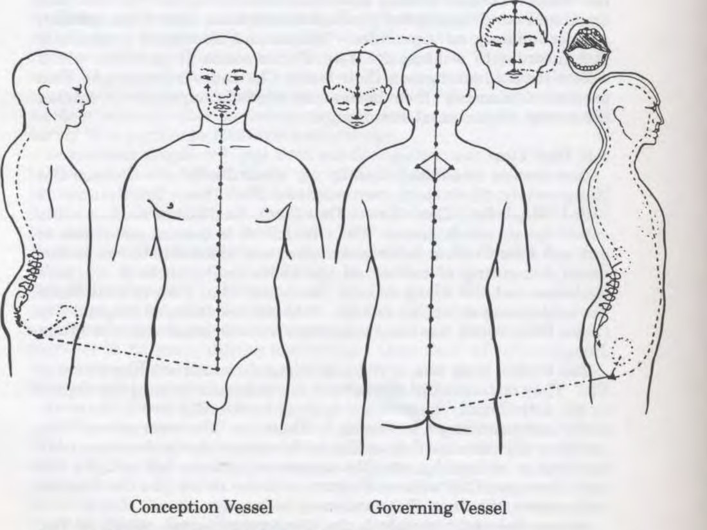
Những người luyện Khí Công Trung Quốc tin rằng Khí phải đầy và tuần hoàn mạnh mẽ trong hai mạch này, vì khi ấy Đốc mạch sẽ có thể điều ngự Khí của toàn cơ thể một cách hiệu quả. Họ cũng tin rằng khi còn là trẻ con, bạn liên tục chuyển động vùng bụng trong khi thở, điều này giữ cho đường đi của hai mạch này thông suốt. Tuy nhiên, khi bạn lớn lên và dần dần mất đi thói quen chuyển động bụng này, đường đi trở nên tắc nghẽn và sự tuần hoàn Khí yếu đi. Sự tắc nghẽn đáng kể nhất có thể xảy ra ở huyệt Hội Âm (Huiyin) (Hình 3-2). Hãy làm một thí nghiệm. Dùng một ngón tay ấn mạnh vào huyệt Hội Âm của bạn trong khi bụng bạn đang chuyển động ra vào. Bạn sẽ khám phá rằng huyệt Hội Âm chuyển động lên xuống đồng bộ với động tác ra vào của bụng. Chính chuyển động lên xuống của vùng đáy chậu này giữ cho huyệt Hội Âm thông suốt cho sự tuần hoàn Khí. Vì lý do này, những bài tập chuyển động bụng ra vào được gọi là bài tập "Faan Torng" (trở về tuổi thơ).
Các bài tập bụng không chỉ mở các kinh mạch Khí, chúng còn có thể rút Nguyên Khí từ nơi cư ngụ của nó ở Hạ Đan Điền để cùng tham gia vào sự tuần hoàn với Hậu Thiên Khí. Nguyên Khí được xem là nguồn sinh lực nguyên gốc của năng lượng con người. Do đó, bài tập bụng ra vào cũng được gọi là "Chii Huoo," nghĩa là "khởi lửa." Điều này gợi ý về cách những người Đạo giáo xây dựng năng lượng Khí. Những người Đạo giáo xem Đan Điền là lò luyện mà trong đó họ có thể tinh luyện và chưng cất đan dược (Khí) để trường thọ.
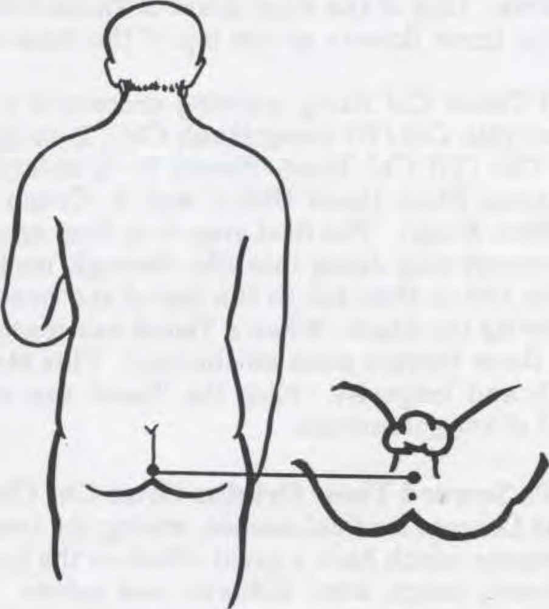
Cái thứ hai trong ba Đan Điền được gọi là Trung Đan Điền (Jong Dan Tien), và nó nằm ở đám rối mặt trời. Trung Đan Điền được xem là trung tâm nơi Hậu Thiên Khí được sản sinh và tụ hợp. Hậu Thiên Khí là năng lượng được chuyển hóa từ Tinh của không khí và thức ăn. Do đó, Hậu Thiên Khí bị ảnh hưởng bởi loại thức ăn bạn ăn và phẩm chất không khí bạn thở. Mức Hậu Thiên Khí của bạn cũng bị ảnh hưởng bởi những điều như liệu bạn có ngủ đủ giấc không, liệu bạn có mệt mỏi, cáu kỉnh, hồi hộp, buồn bã, v.v. không.
Trong giới y học Trung Quốc, người ta tin rằng phổi và tim là những nơi Tinh của không khí được chuyển hóa thành Khí. Dạ dày và hệ tiêu hóa là trung tâm nơi Tinh của thức ăn được hấp thu rồi chuyển hóa thành Khí. Khí này rồi cư ngụ ở Trung Đan Điền, và theo Nhâm mạch và Đốc mạch để phân tán khắp toàn thân. Sự chuyển hóa không khí và thức ăn thành Khí tương tự như việc đốt cháy gỗ để tỏa nhiệt. Do đó, vùng phổi được gọi là Thượng Tiêu (Shang Jiao), dạ dày được gọi là Trung Tiêu (Jong Jiao), và vùng bụng dưới được gọi là Hạ Tiêu (Shiah Jiao). Cả ba được gọi chung là "Tam Tiêu" (Sanjiao).
Bạn có thể suy ra từ mô tả trên rằng Thượng Tiêu là tiêu xử lý Khí của không khí, còn Trung Tiêu và Hạ Tiêu xử lý Khí của thức ăn. Hạ Tiêu, ngoài việc tách phần tinh khiết khỏi phần ô uế và đào thải chất cặn bã, còn xử lý Khí ở Hạ Đan Điền. Khi ai đó đã ăn quá nhiều thức ăn dương như đậu phộng hay mè, lượng Khí dư thừa sẽ gây nhiệt. Điều này được gọi là "Shang Huoo," nghĩa đơn giản là cơ thể đang "bốc hỏa." Khi bạn không ngủ đủ, cơ thể cũng có thể chuyển sang trạng thái "bốc hỏa." Khi Hậu Thiên Khí quá dương, nó được gọi là "Huoo Chi," nghĩa là "Hỏa Khí."
Khi Hậu Thiên Khí quá dương và được dẫn đến các cơ quan, các cơ quan sẽ trở nên dương và suy thoái nhanh hơn. Khi Hậu Thiên Khí quá yếu, chẳng hạn vì đói, thì không đủ Khí để cung cấp cho các cơ quan và cơ thể, và bạn sẽ dần dần trở nên mất quân bình cho tới khi bị ốm. Hầu hết mọi người nhận được thức ăn nhiều hơn mức cần thiết, nên Hậu Thiên Khí của họ quá dương. Vì lý do này, Hậu Thiên Khí thường được gọi là Hỏa Khí. Có một bài luyện Khí Công dẫn Thủy Khí (Tiên Thiên Khí) ở Hạ Đan Điền đi lên hòa với Hỏa Khí (Hậu Thiên Khí) ở Trung Đan Điền để làm mát Hỏa Khí.
Đan Điền thứ ba nằm ở trán và được gọi là Thượng Đan Điền (Shang Dan Tien). Não bạn dùng rất nhiều năng lượng (Khí) để suy nghĩ. Khí này được một trong những mạch tên là Chong Mei (Xung mạch) cung cấp, mạch này chảy xuyên qua tủy trong cột sống lên tới não. Tinh thần bạn cư ngụ ở Thượng Đan Điền, và khi nó được cung cấp đầy đủ Khí, nó được "nâng cao," tức được tiếp năng lượng. Nếu Khí ngừng nuôi dưỡng não và tinh thần bạn, bạn sẽ mất đi trung tâm tinh thần của mình, sự phán đoán của bạn sẽ trở nên sai lệch, và bạn sẽ trở nên trầm uất và mất quân bình tinh thần.
Bạn có thể thấy từ thảo luận này rằng cả ba Đan Điền đều nằm trên Nhâm mạch. Nhâm mạch và Đốc mạch cùng nhau tạo thành bể chứa Khí quan trọng nhất trong cơ thể, và điều quan trọng là nó phải đầy.
3-4. Tam Hoa Tụ Đỉnh — Ba Đóa Hoa Lên Tới Đỉnh (San Huea Jiuh Diing)
Những người Đạo giáo thường gọi ba báu vật (Tinh, Khí và Thần) là ba đóa hoa. Một trong những mục tiêu cuối cùng của việc luyện Khí Công Đạo giáo là tụ hội ba đóa hoa ở đỉnh đầu (San Huea Jiuh Diing).
Tiến trình luyện Khí Công Đạo giáo thông thường là: 1. chuyển hóa Tinh (tinh chất) thành Khí (Yii Jieng Huah Chi); 2. nuôi dưỡng Thần (tinh thần) bằng Khí (Yii Chi Huah Shen); 3. luyện Thần thành hư không (Liann Shen Huan Shiu); và 4. Phá vỡ Hư Không (Feen Suory Shiu Kong). Bước thứ nhất là cố định và củng cố Tinh, rồi chuyển hóa Tinh này thành Khí qua thiền định hay những phương pháp khác. Khí này rồi được dẫn lên đỉnh đầu để nuôi dưỡng não và nâng cao Thần. Khi một người Đạo giáo đã đạt tới giai đoạn này, nó được gọi là "ba đóa hoa gặp nhau trên đỉnh." Giai đoạn này là cần thiết để đạt được sức khỏe và trường thọ. Giờ đây người Đạo giáo có thể bắt đầu luyện tập để đạt mục tiêu giác ngộ.
3-5. Ngũ Khí Triều Nguyên — Năm Khí Về Nguồn Gốc (Wuu Chi Chaur Yuan)
Theo y học Trung Quốc, trong số mười hai cơ quan chính có năm cơ quan âm có ảnh hưởng lớn đến sức khỏe. Năm cơ quan này là: tim, phổi, gan, thận và lá lách. Nếu bất cứ cơ quan nội tạng nào không có mức Khí thích hợp, nó hoặc quá dương hoặc quá âm. Khi điều này xảy ra, nó giống như việc cho dòng điện sai mức chạy vào một cỗ máy. Nếu tình trạng ấy không được sửa chữa, các cơ quan sẽ hoạt động kém hiệu quả hơn. Điều này sẽ ảnh hưởng đến sự trao đổi chất của cơ thể, và cuối cùng thậm chí còn làm hư hại các cơ quan. Do đó, một trong những bài luyện quan trọng nhất trong việc luyện Khí Công là học cách giữ Khí trong năm cơ quan này ở mức thích hợp. Khi Khí của những cơ quan này đã đạt tới những mức thích hợp, nó được gọi là "Wuu Chi Chaur Yuan," nghĩa là "năm Khí về nguồn gốc của chúng." Các cơ quan của bạn khi đó có thể hoạt động tối ưu, và sức khỏe bạn sẽ được duy trì ở mức cao.
Có mười hai kinh mạch Khí và tám kỳ kinh bát mạch. Khí trong mười hai kinh mạch nên ở những mức thích hợp cho các cơ quan tương ứng. Khí trong mười hai kinh mạch này thay đổi theo thời điểm trong ngày, theo mùa và theo năm. Khí này bị ảnh hưởng bởi thức ăn bạn ăn, không khí bạn thở, và cảm xúc của bạn. Do đó, để giữ năm Khí của bạn ở đúng mức, bạn phải biết Khí bị ảnh hưởng bởi thời gian, thức ăn và không khí như thế nào, và bạn phải học cách điều hòa cảm xúc của mình.
Khí Và Thân Người
Để hiểu được Khí Công của con người, bạn phải hiểu được bản chất của Khí trong thân người, và cách nó vận hành. Điều này bao gồm việc hiểu có những loại Khí nào trong cơ thể, chúng thực hiện những chức năng gì, và chúng hoàn thành những chức năng ấy như thế nào. Trong ba chương đầu, chúng ta đã đưa ra một định nghĩa tổng quát về Khí, bàn về cách Khí của con người được bao hàm trong và chịu ảnh hưởng của Thiên Khí và Địa Khí, đồng thời chỉ ra cách Khí liên hệ với những phương diện khác của thân thể chúng ta, như thần và Tinh. Trong Phần Ba của cuốn sách này, chúng ta sẽ xem lại cách Khí tuần hành trong thân người.
Trong chương này, trước tiên chúng ta sẽ tập trung vào những đặc tính chung của Khí trong cơ thể chúng ta. Điều này sẽ tạo nền tảng giúp bạn hiểu phần còn lại của chương. Sau đó chúng ta sẽ tập trung vào một số chủ đề sẽ dẫn bạn tới hiểu biết sâu hơn về Khí của con người, như Âm và Dương của Khí, và phẩm chất của Khí. Một khi bạn đã hiểu khái niệm truyền thống về Khí, chúng ta sẽ bàn đến khái niệm hiện đại về năng lượng điện từ sinh học. Tiếp theo đó, chúng ta sẽ đưa ra một số giả thuyết dựa trên nguồn năng lượng mà khoa học phương Tây mới phát hiện gần đây. Cuối cùng, chúng ta sẽ bàn về lý thuyết cho rằng các cửa Khí có thể được khai mở nhờ luyện tập Khí Công.
4-1. Về Khí
Trong tiết này, trước tiên chúng ta sẽ bàn về những đặc tính tự nhiên của Khí và mối quan hệ giữa Khí với thân người. Sau đó chúng ta sẽ giải thích Âm và Dương của Khí được định nghĩa như thế nào, và phẩm chất của Khí được xác định ra sao.
Bản chất của Khí:
Để hiểu bản chất của Khí, trước tiên bạn nên biết Khí khởi nguồn từ đâu. Không có gì có thể từ hư vô mà thành, cho nên Khí (bất kỳ loại năng lượng nào) phải phát sinh từ vật chất, thường là thông qua một dạng phản ứng hóa học nào đó. Vật chất là một dạng hữu hình của năng lượng, và năng lượng là một tiềm năng chưa được mở khóa (hay một dạng phi vật chất) của vật chất. Chẳng hạn, bạn có thể đốt một khúc gỗ hay khí ga và thu được Khí dưới dạng nhiệt và ánh sáng. Tương tự như vậy, thức ăn và không khí được đưa vào cơ thể bạn, và qua phản ứng sinh hóa được chuyển hóa thành Khí, thường ở dạng nhiệt và năng lượng điện từ sinh học. Mỗi khi bạn hấp thu thức ăn nhiều hơn mức cơ thể cần, phần dư thừa không được bài tiết sẽ được dự trữ trong cơ thể bạn dưới dạng mỡ.
Tiếp theo bạn nên hiểu rằng Khí nói chung biểu hiện ra như nhiệt, ánh sáng, và lực điện từ. Nói cho chặt chẽ thì ánh sáng là một dạng khác của sóng điện từ, cho nên thực tế chỉ có hai loại năng lượng mà chúng ta tiếp xúc trong đời sống hằng ngày. Thật vậy, rất thường khi ánh sáng và nhiệt cùng tồn tại một lúc.
Cuối cùng, bạn nên nhận ra rằng Khí di chuyển từ vùng có điện thế cao đến vùng có điện thế thấp hơn, và điều này có tác dụng đưa hệ thống của bạn về trạng thái quân bình một cách tự nhiên và tự động.
Khí trong thân người:
Tuy theo định nghĩa tổng quát, nhiệt được xem là một loại Khí của con người, nhưng nhiệt không phải là loại Khí đang tuần hành trong cơ thể bạn. Bạn thường cảm thấy nóng khi Khí tuần hành mạnh, nhưng nhiệt ấy không phải là chính Khí đang tuần hành. Có một loại Khí khác tuần hành khắp cơ thể bạn để nuôi dưỡng các tế bào và giữ cho chúng hoạt động, thậm chí còn sửa chữa những hư hại.
Kể từ khi điện trở nên quen thuộc hơn với người dân Trung Quốc trong năm mươi năm qua, nhiều người luyện Khí Công đã đi đến chỗ tin rằng Khí tuần hành trong cơ thể thật ra chính là năng lượng điện từ. Nếu bạn cho một dòng điện chạy qua một sợi dây, sợi dây sẽ nóng lên vì điện trở của nó. Nhiệt là một hiệu ứng do dòng điện gây ra, chứ không phải chính dòng điện. Theo lý thuyết này, khi Khí tuần hành qua cơ thể bạn, điện trở của cơ thể khiến một phần Khí bị chuyển hóa thành nhiệt.
Những người luyện Khí Công tin rằng ánh sáng đôi khi được nhận thấy trong khi thiền cũng là Khí. Ánh sáng là một dạng năng lượng điện từ. Vì mọi loại năng lượng đều có thể chuyển hóa, nên nhiệt có thể sinh ra năng lượng điện từ và ngược lại, và ánh sáng cũng có thể sinh ra nhiệt và ngược lại. Một khi bạn đã đạt tới những tầng thiền cao hơn, bạn sẽ cảm nhận được ánh sáng trong mắt và trong tâm trí mình. Ở một tầng cao hơn nữa, đầu bạn sẽ phát ra một vầng sáng như một hào quang. Tất cả những điều này có thể được xem là những biến hóa mà Khí điện trải qua khi quá trình luyện tập của bạn đã đạt tới tầng cao hơn.
Cách hành xử của Khí con người:
Các thầy thuốc Trung Quốc và những người luyện Khí Công từ xưa đã mô tả cách hành xử của Khí là tương tự như nước. Điều này được thấy ở nhiều phương diện. Thứ nhất, cũng như nước chảy từ vùng cao xuống vùng thấp, Khí chảy từ vùng có điện thế cao đến vùng có điện thế thấp hơn. Bằng cách này, Khí tự quân bình một cách tự nhiên. Thứ hai, nếu để nước đục yên lặng không xáo động, cát sẽ lắng xuống đáy, để lại phần nước phía trên yên tĩnh và trong trẻo. Tuy nhiên, nếu bạn khuấy động nước lên, cát sẽ dâng lên và làm đục nước trở lại. Điều này tương tự như khi tâm trí vững vàng thì Khí sẽ tĩnh lặng và trong trẻo, nhưng khi tâm trí tán loạn thì Khí sẽ bị xáo động và phấn khích. Thứ ba, các kinh mạch Khí cung cấp Khí cho toàn bộ cơ thể thường được ví với những con sông, và những mạch chứa Khí được ví với các hồ chứa. Nước và Khí đều nên chảy êm ả và liên tục. Khi một con sông hay một kinh mạch bị tắc nghẽn, dòng nước/Khí sẽ bị xáo động và không đều. Trong một kinh mạch bị tắc nghẽn, dòng nước/Khí sẽ dâng cao hơn, và có thể tràn qua bờ.
Âm và Dương của Khí:
Khi nói rằng Khí có thể là Âm hoặc Dương, điều đó không có nghĩa là có hai loại Khí khác nhau như nam và nữ, lửa và nước, hay điện tích dương và điện tích âm. Khí là năng lượng, và bản thân năng lượng thì không có Âm và Dương. Nó giống như năng lượng được sinh ra từ sự phóng điện giữa các điện tích âm và dương. Các điện tích có tiềm năng sinh ra năng lượng nhưng không phải là chính năng lượng ấy.
Khi nói rằng Khí là Âm hay Dương, điều đó có nghĩa là Khí quá mạnh hoặc quá yếu so với một tình huống cụ thể nào đó. Đây là một điều tương đối chứ không tuyệt đối. Đương nhiên, điều này ngụ ý rằng tiềm năng sinh ra Khí là mạnh hay yếu. Chẳng hạn, Khí từ mặt trời là Dương Khí và Khí từ mặt trăng là Âm Khí. Đó là vì năng lượng của mặt trời là Dương khi so với Khí con người, còn của mặt trăng là Âm. Trong bất kỳ cuộc bàn luận nào về năng lượng có liên quan đến con người, Khí con người được dùng làm chuẩn. Người ta luôn đặc biệt quan tâm đến những gì trực tiếp liên quan tới mình, cho nên tự nhiên là chúng ta chủ yếu quan tâm tới Khí con người và có xu hướng nhìn mọi loại Khí từ góc nhìn của Khí con người. Điều này không khác gì việc nhìn vũ trụ từ góc nhìn của Trái Đất.
Tuy nhiên, khi chúng ta nhìn vào Âm và Dương của Khí bên trong cũng như liên quan đến thân người, chúng ta phải định nghĩa lại điểm quy chiếu của mình. Chẳng hạn, khi một người chết, phần Khí con người sót lại của người đó (Goe Chi, tức "quỷ Khí") là yếu so với Khí của một người đang sống. Do đó, Khí của ma là Âm còn Khí của người sống là Dương. Khi bàn về Khí bên trong cơ thể, chẳng hạn trong kinh mạch Phế, điểm quy chiếu là trạng thái bình thường, khỏe mạnh của Khí tại đó. Nếu Khí mạnh hơn mức bình thường thì nó là Dương, và đương nhiên nếu yếu hơn mức ấy thì nó là Âm. Có mười hai bộ phận trên cơ thể người được xem là các tạng phủ trong y học Trung Quốc, sáu trong đó là Âm và sáu là Dương. Các tạng Âm là Tâm, Phế, Thận, Can, Tỳ, và Tâm Bào; còn các phủ Dương là Đại Trường, Tiểu Trường, Vị, Đởm, Bàng Quang, và Tam Tiêu. Nói chung, mức Khí của các tạng Âm thấp hơn mức Khí của các phủ Dương. Các tạng Âm dự trữ Nguyên Tinh và xử lý Tinh thu được từ thức ăn và không khí, trong khi các phủ Dương đảm nhiệm việc tiêu hóa và bài tiết. Chúng ta sẽ bàn chủ đề này chi tiết hơn trong Phần Ba của cuốn sách này.
Khi Khí trong bất kỳ tạng phủ nào của bạn không ở trạng thái bình thường, bạn cảm thấy khó chịu. Nếu nó lệch khỏi trạng thái bình thường rất nhiều, tạng phủ ấy sẽ bắt đầu hoạt động sai, và bạn có thể bị bệnh. Khi điều đó xảy ra, Khí trong toàn bộ cơ thể bạn cũng sẽ bị ảnh hưởng và bạn sẽ cảm thấy quá Dương, có lẽ là sốt, hoặc quá Âm, như sự yếu ớt sau khi bị tiêu chảy.
Mức Khí của cơ thể bạn cũng chịu ảnh hưởng của những hoàn cảnh tự nhiên như thời tiết, khí hậu, và sự thay đổi theo mùa. Do đó, khi phân loại mức Khí của cơ thể, điểm quy chiếu là mức cảm thấy thoải mái nhất trong những hoàn cảnh cụ thể ấy. Đương nhiên, mỗi người chúng ta có một chút khác biệt, và điều gì khiến một người cảm thấy dễ chịu và tự nhiên nhất có thể hơi khác với điều đúng cho một người khác. Đó là lý do tại sao thầy thuốc thường hỏi "ông/bà cảm thấy thế nào?" Chính theo chuẩn mực của riêng bạn mà bạn được đánh giá.
Hơi thở có liên hệ mật thiết với trạng thái Khí của bạn, và do đó cũng được xem là Âm hoặc Dương. Khi bạn thở ra, bạn đẩy không khí ra khỏi Phế của mình, tâm trí bạn hướng ra ngoài, và Khí quanh cơ thể giãn nở. Trong võ thuật Trung Quốc, động tác thở ra nói chung được dùng để giãn Khí nhằm tiếp năng lượng cho các cơ trong lúc ra đòn. Do đó, bạn có thể thấy rằng thở ra là Dương — nó giãn nở, tấn công, và mạnh mẽ. Đương nhiên, dựa trên cùng lý thuyết ấy, thở vào được xem là Âm.
Hơi thở của bạn có liên hệ mật thiết với những cảm xúc của bạn. Khi bạn nổi giận, hơi thở của bạn ngắn và nhanh, tức là Dương. Khi bạn buồn, cơ thể bạn thiên về Âm hơn, và bạn hít vào nhiều hơn thở ra để hấp thu Khí từ không khí nhằm quân bình Âm của cơ thể, đưa cơ thể trở lại thăng bằng. Khi bạn phấn khích và vui sướng, cơ thể bạn là Dương. Bạn thở ra dài hơn hít vào để đào thải phần Dương thừa do sự phấn khích gây ra.
Như đã nói ở trên, tâm trí bạn cũng có liên hệ mật thiết với Khí của bạn. Do đó, khi Khí của bạn là Dương, tâm trí bạn thường cũng là Dương (phấn khích) và ngược lại. Ngoài ra, như chúng ta đã bàn ở tiết trước, tâm trí cũng có thể được phân loại theo Khí sinh ra nó. Tâm trí (Ý, Yi) được sinh ra từ Khí tĩnh lặng và an hòa thu được từ Nguyên Tinh được xem là Âm. Tâm trí (Tâm, Hsin) khởi nguồn từ Tinh của thức ăn và không khí thì mang tính cảm xúc, tán loạn và phấn khích, và được xem là Dương. Cuối cùng, Thần (Shen), vốn liên hệ với Khí, cũng có thể được phân loại là Dương hay Âm dựa trên nguồn gốc của nó.
Đừng nhầm lẫn Âm Khí và Dương Khí với Hỏa Khí và Thủy Khí. Khi nói đến Âm và Dương của Khí, người ta nói đến mức của Khí theo một điểm quy chiếu nào đó. Tuy nhiên, khi nói đến Thủy Khí và Hỏa Khí, người ta nói đến phẩm chất của Khí. Điều này sẽ được bàn ở tiết sau.
Phẩm chất của Khí con người:
Một số người nghĩ rằng Khí có phẩm chất tốt khi nó không quá Âm cũng không quá Dương. Tuy nhiên, họ sai. Khi Khí không quá Âm cũng không quá Dương, điều đó có nghĩa là mức của Khí là đúng. Đó là một phát biểu về số lượng chứ không phải về phẩm chất. Phẩm chất của Khí nói đến tính thuần khiết của nó, cũng như những gì chứa trong nó. Phẩm chất này phụ thuộc vào việc Khí khởi nguồn từ đâu và như thế nào. Thông thường, phẩm chất của Khí quyết định cách nó hành xử và cách nó ảnh hưởng đến Âm Dương của cơ thể khi nó tuần hành trong cơ thể bạn.
Bên trong thân người, những người luyện Khí Công nói chung đã phân loại Khí thành "Hỏa Khí" và "Thủy Khí" để diễn tả phẩm chất thuần khiết của Khí. Những thuật ngữ "Hỏa" và "Thủy" chỉ ra những hiệu ứng mà Khí có trên cơ thể chúng ta. Chẳng hạn, khi Khí không thuần khiết hay có phẩm chất kém tuần hành trong thân người, nó có thể gây nóng trong cơ thể và các tạng phủ, và làm cho cơ thể quá Dương. Vì thế nó được gọi là "Hỏa Khí." Nhưng nếu Khí thuần khiết, trong sạch và tuần hành êm ả, nó sẽ giúp cơ thể giữ được sự tĩnh lặng, giữ cho tâm trí trong sáng và vững vàng, và cho phép cơ thể hoạt động đúng đắn. Khí này được gọi là "Thủy Khí" vì nó là Khí giúp cơ thể giữ được sự tĩnh lặng và mát mẻ, giống như nước.
Trong hàng ngàn năm mà Khí Công đã được nghiên cứu, những người luyện tập đã nhận thấy rằng Khí đến từ "Nguyên Tinh" (và do đó được gọi là Nguyên Khí) là "Thủy Khí." Nó thuần khiết và êm ả, như ánh nắng mùa đông, như nước trong vắt chảy êm đềm trong một con suối, rất dễ chịu và tự nhiên. Khí này khiến cho tâm trí tuệ (Ý) có thể giữ được sự tĩnh lặng và trở nên mạnh mẽ hơn. Khi Khí này tuần hành trong thân người, nó êm ả và sẽ giữ cho thân xác hoạt động trong một trạng thái vững vàng, tĩnh lặng và Âm.
Ngược lại, Khí đến từ thức ăn và không khí thì không có phẩm chất cao như Nguyên Khí. Vì cơ thể không thể phân biệt được nguyên liệu tốt và xấu, nhiều thành phần không mong muốn trong thức ăn và không khí cũng được chuyển hóa thành Khí. Phẩm chất của Khí này là bẩn và không đồng nhất, như nước bị ô nhiễm. Khi Khí này đi đến não bạn, nó có thể kích động cảm xúc của bạn và làm rối loạn sự thăng bằng cảm xúc của bạn. Khi Khí này tuần hành trong cơ thể bạn, những thành phần không mong muốn có thể biến cơ thể thành Dương và gây ra vấn đề. Chẳng hạn, Khí được chuyển hóa từ mỡ có thể chuyển ngược trở lại thành mỡ, và làm tắc nghẽn các đường Khí. Những kinh mạch Khí bị tắc nghẽn có thể gây ra những hiệu ứng không mong muốn, như huyết áp cao, thứ làm tăng tốc sự thoái hóa của các cơ quan nội tạng. Vì lý do này, ăn uống là một phần của luyện tập Khí Công. Nói chung, Khí sinh ra từ thức ăn có nguồn gốc động vật có nhiều tạp chất hơn Khí sinh ra từ thức ăn có nguồn gốc thực vật.
Bạn có thể thấy từ cuộc thảo luận này rằng việc phân biệt cả mức của Khí lẫn phẩm chất của nó là rất quan trọng. Mức của Khí (Âm hay Dương) phụ thuộc vào hoàn cảnh, và phải có một điểm quy chiếu. Phẩm chất của Khí phụ thuộc vào Tinh mà từ đó nó đến.
4-2. Khí và Năng Lượng Điện Từ Sinh Học
Ở Trung Quốc cổ đại, người ta biết rất ít về điện. Họ chỉ biết qua châm cứu rằng khi một mũi kim được đưa vào các huyệt châm cứu, một loại năng lượng nào đó khác với nhiệt được sinh ra, thường gây ra một cảm giác giật hay buồn buồn. Mãi đến vài thập niên gần đây, khi người dân Trung Quốc đã quen thuộc hơn với khoa học điện từ, họ mới bắt đầu nhận ra rằng nguồn năng lượng tuần hành trong cơ thể này, mà họ gọi là Khí, có thể chính là thứ mà khoa học ngày nay gọi là "điện sinh học."
Ngày nay người ta hiểu rằng thân người được cấu tạo từ nhiều vật liệu dẫn điện khác nhau, và nó tạo thành một mạch và một trường điện từ sống. Năng lượng điện từ liên tục được sinh ra trong thân người thông qua phản ứng sinh hóa của thức ăn và không khí, và được tuần hành nhờ những lực điện từ (EMF) sinh ra bên trong cơ thể, chẳng hạn qua suy nghĩ hay vận động.
Ngoài ra, bạn cũng liên tục chịu ảnh hưởng của những trường điện từ bên ngoài như trường của Trái Đất, hay những trường điện sinh ra bởi các đám mây. Khi bạn thực hành y học Trung Quốc hay Khí Công, bạn cần ý thức được những yếu tố bên ngoài này và tính đến chúng.
Vô số thí nghiệm đã được tiến hành ở Trung Quốc, Nhật Bản và những nước khác để nghiên cứu cách những trường từ hay trường điện bên ngoài có thể ảnh hưởng và điều chỉnh trường Khí của cơ thể. Nhiều thầy châm cứu dùng nam châm và điện trong việc điều trị của họ. Họ gắn một nam châm lên da phía trên một huyệt và để nguyên đó trong một khoảng thời gian. Trường từ dần dần ảnh hưởng đến sự tuần hành Khí trong kinh mạch ấy. Hoặc là, họ đưa kim vào các huyệt rồi cho một dòng điện chạy qua mũi kim để tác động trực tiếp lên các kinh mạch Khí. Tuy nhiều người thí nghiệm đã tuyên bố đạt được một mức thành công nào đó trong các thí nghiệm của mình, nhưng chưa ai có thể công bố bất kỳ bằng chứng chi tiết và thuyết phục nào về kết quả của mình, hay đưa ra một lời giải thích thỏa đáng cho lý thuyết đằng sau thí nghiệm ấy. Cũng như nhiều nỗ lực khác nhằm giải thích Cách thức và Lý do của châm cứu, bằng chứng dứt khoát vẫn khó nắm bắt, và còn nhiều câu hỏi chưa được trả lời. Đương nhiên, lý thuyết này còn khá mới, và có lẽ sẽ cần rất nhiều nghiên cứu và khảo sát hơn nữa trước khi nó được kiểm chứng và hiểu một cách trọn vẹn. Hiện nay, có nhiều thầy châm cứu bảo thủ tỏ ra hoài nghi.
Để gỡ nút thắt này, chúng ta phải nhìn vào những gì khoa học phương Tây hiện đại đã khám phá về năng lượng điện từ sinh học. Nhiều báo cáo liên quan đến điện sinh học đã được công bố, và thường thì các kết quả có liên hệ mật thiết với những gì được trải nghiệm trong luyện tập Khí Công và y học Trung Quốc. Chẳng hạn, trong nghiên cứu điện sinh lý vào thập niên 1960, một số nhà nghiên cứu đã phát hiện rằng xương có tính áp điện (piezoelectric); nghĩa là khi xương chịu ứng lực, năng lượng cơ học được chuyển hóa thành năng lượng điện dưới dạng dòng điện (*1). Điều này có thể giải thích một trong những bài tập của Tẩy Tủy Khí Công, trong đó ứng lực lên xương và cơ được gia tăng theo những cách nhất định để tăng cường sự tuần hành Khí (sự tuần hành điện).
Bác sĩ Robert O. Becker đã có những công trình quan trọng trong lĩnh vực này. Cuốn sách của ông, "The Body Electric" (*2), tường thuật phần lớn những nghiên cứu liên quan đến trường điện của cơ thể. Hiện nay người ta tin rằng thức ăn và không khí là nhiên liệu sinh ra điện trong cơ thể qua phản ứng sinh hóa. Dòng điện này, được tuần hành khắp toàn bộ cơ thể qua các mô dẫn điện, là một trong những nguồn năng lượng chính giữ cho các tế bào của thân xác được sống.
Mỗi khi bạn bị thương hay bị bệnh, sự tuần hành điện của cơ thể bạn bị ảnh hưởng. Nếu sự tuần hành điện này ngừng lại, bạn chết. Nhưng năng lượng điện sinh học không chỉ duy trì sự sống, nó còn chịu trách nhiệm sửa chữa những hư hại vật lý. Nhiều nhà nghiên cứu đã tìm cách dùng những trường điện hay trường từ bên ngoài để đẩy nhanh quá trình hồi phục của cơ thể sau chấn thương. Richard Leviton tường thuật rằng "Các nhà nghiên cứu tại Trường Y của Đại học Lorna Linda ở California đã phát hiện, sau các nghiên cứu tại mười sáu quốc gia với hơn 1.000 bệnh nhân, rằng năng lượng từ tần số thấp, cường độ thấp đã thành công trong việc điều trị chứng đau mạn tính liên quan đến thiếu máu cục bộ mô, và cũng có hiệu quả trong việc làm lành những vết loét chậm lành, và ở 90 phần trăm bệnh nhân được kiểm tra, nó làm tăng đáng kể lưu lượng máu." (*3) Ông Leviton cũng tường thuật rằng mỗi tế bào của cơ thể hoạt động như một cục pin điện và có khả năng lưu trữ các điện tích. Ông tường thuật rằng: "Những nhà nghiên cứu từ sinh học khác nhìn kỹ hơn nữa để tìm ra điều gì đang diễn ra, ngay ở cấp độ máu, các cơ quan, và từng tế bào riêng lẻ, thứ mà họ xem là 'một cục pin điện nhỏ'." (*3) Điều này đã thuyết phục tôi rằng toàn bộ cơ thể chúng ta giống như một cục pin lớn được lắp ghép từ hàng triệu cục pin nhỏ. Tất cả những cục pin này cùng nhau tạo nên trường điện từ của con người.
Hơn nữa, phần lớn nghiên cứu về trường điện của cơ thể đều liên quan đến châm cứu. Chẳng hạn, bác sĩ Becker tường thuật rằng độ dẫn điện của da cao hơn nhiều tại các huyệt châm cứu, và rằng ngày nay người ta có thể định vị chúng một cách chính xác bằng cách đo độ dẫn điện của da. Nhiều báo cáo trong số này chứng minh rằng việc châm cứu đã được thực hiện ở Trung Quốc hàng ngàn năm nay là hợp lý và có tính khoa học.
(*1). "Life's Invisible Current" của Albert L. Huebner, East West Journal, tháng Sáu 1986.
(*2). "The Body Electric" của Robert O. Becker, M.D. và Gary Selden, Quill. William Morrow, New York, 1985.
(*3). "Healing with Nature's Energy" của Richard Leviton, East West Journal, tháng Sáu 1986.
Một số nhà nghiên cứu dùng lý thuyết về điện của cơ thể để giải thích nhiều "phép lạ" thời cổ vốn được cho là nhờ luyện tập Khí Công. Một báo cáo của Albert L. Huebner nói rằng: "Những màn trình diễn điện của cơ thể ở con người này cũng có thể đưa ra một lời giải thích mới cho một phương pháp chữa bệnh cổ xưa. Nếu những trường bên ngoài yếu có thể tạo ra những hiệu ứng sinh lý mạnh mẽ, thì có thể rằng những trường từ các mô người ở một người có khả năng tạo ra những cải thiện lâm sàng ở một người khác. Nói ngắn gọn, phương pháp chữa bệnh được biết với tên gọi đặt tay chữa bệnh có thể là một dạng kích thích điện hết sức tinh tế." (*1)
Một hiện tượng khác thường được tường thuật là khi một người luyện Khí Công đã đạt tới một trình độ phát triển cao, một vầng hào quang sẽ xuất hiện phía sau và/hay xung quanh đầu người ấy trong khi thiền. Điều này thường thấy trong các bức họa về Chúa Giê-su Ki-tô, Đức Phật, và những vị thần phương Đông khác. Thường thì ánh sáng được vẽ bao quanh toàn bộ cơ thể. Hiện tượng này có thể lại được giải thích bằng lý thuyết điện của cơ thể. Khi một người đã tu luyện Khí (điện) của mình đến một mức cao, Khí có thể được dẫn để tích tụ lại ở đầu. Khí này sau đó có thể tương tác với các phân tử oxy trong không khí, và ion hóa chúng, khiến chúng phát sáng.
Mặc dù mối liên hệ giữa lý thuyết điện của cơ thể và lý thuyết Khí của Trung Quốc đang ngày càng được chấp nhận và chứng minh tốt hơn, vẫn còn nhiều câu hỏi cần được trả lời. Chẳng hạn, làm thế nào tâm trí có thể dẫn Khí (điện)? Thật ra tâm trí sinh ra một EMF (lực điện từ) để tuần hành dòng điện trong cơ thể như thế nào? Trường điện từ của con người bị ảnh hưởng ra sao bởi vô số trường điện khác bao quanh chúng ta, như sóng radio và sóng truyền hình, hay những trường sinh ra bởi dây điện trong nhà hay các thiết bị điện? Làm thế nào chúng ta có thể điều chỉnh lại những trường điện từ của mình và tồn tại trong không gian vũ trụ hay trên những hành tinh khác, nơi trường từ hoàn toàn khác với trường từ của Trái Đất? Bạn có thể thấy rằng tương lai của Khí Công và khoa học điện sinh học là một tương lai đầy thách thức và hấp dẫn. Đã đến lúc chúng ta bắt đầu dùng những công nghệ hiện đại để hiểu thế giới năng lượng bên trong, thứ đã bị xã hội phương Tây bỏ qua.
4-3. Một Vài Giả Thuyết
Có một số câu hỏi đã làm bối rối những người luyện Khí Công và các thầy châm cứu trong nhiều năm. Nếu Khí chính là cùng một thứ với cái mà ngày nay được gọi là điện sinh học, thứ mà khoa học y học phương Tây đang mới khám phá, thì người ta có thể rút ra những suy luận hay giả thuyết nhất định, những giả thuyết này có thể đưa ra những lời giải thích thuyết phục cho nhiều câu hỏi hóc búa ấy. Trong tiết này, tôi sẽ cố gắng liên kết những phương diện này của khoa học phương Đông và phương Tây lại với nhau, dựa trên hiểu biết của tôi. Trong tiết này, tôi muốn nêu lên một số câu hỏi và rút ra một số giả thuyết, lấy ví dụ về việc thân người có thể phản ứng với và bị ảnh hưởng bởi những trường điện từ bên ngoài như trường của Trái Đất ra sao. Tôi hy vọng tiết này sẽ kích thích suy nghĩ của bạn và giúp những người luyện Khí Công bảo thủ hơn chấp nhận nền khoa học mới này và tham gia vào những phân tích và thảo luận trong tương lai.
1. Trường Điện Từ trong Thân Người:
A. Trường Điện Từ của Con Người Được Hình Thành Như Thế Nào?
Vì chúng ta và mọi sinh vật sống khác đều được hình thành và sống trong từ trường của Trái Đất, nên cơ thể chúng ta cũng có một từ trường riêng. Từ trường của cơ thể chúng ta luôn tương ứng với và chịu ảnh hưởng của trường Trái Đất. Khoa học hiện đại đã chỉ ra rằng từ trường và điện trường không thể tách rời nhau, và thật ra chúng là những phương diện của cùng một lực. Ở đâu có cái này thì cũng có cái kia. Loại trường này thường được gọi là trường điện từ. Khi một miếng thép được đặt bên trong một từ trường, nó trở thành một nam châm (Hình 4-1). Vì cơ thể chúng ta được tạo nên từ vật liệu dẫn điện, và chúng ta đang ở trong từ trường của Trái Đất, nên hợp lý để giả định rằng cơ thể chúng ta giống như những nam châm. Vì một nam châm có hai cực phải nằm trên đường trục giữa của nam châm, chúng ta có thể dễ dàng đoán rằng các cực của cơ thể chúng ta phải nằm đâu đó ở đầu và ở đáy bụng. Như vậy, nhiệm vụ đầu tiên của chúng ta là định vị các cực của nam châm người.
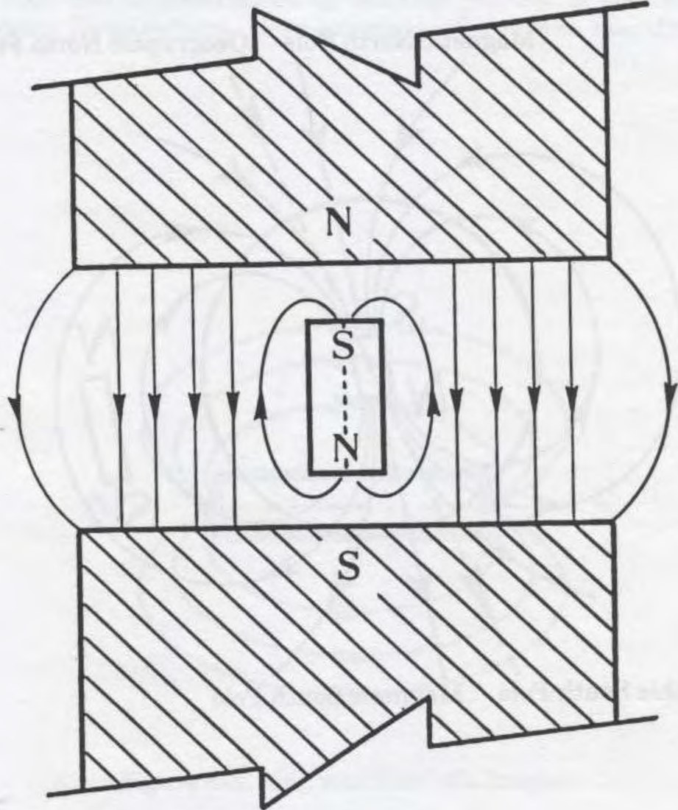
Trước khi tiếp tục, chúng ta hãy xem lại một số khái niệm liên quan đến từ trường Trái Đất. Bạn cần hiểu sự khác biệt giữa bốn thuật ngữ thường bị nhầm lẫn: 1. Cực bắc và cực nam của một nam châm; 2. Cực Từ Bắc và Cực Từ Nam của Trái Đất; 3. Cực Bắc và Cực Nam địa lý của Trái Đất; và 4. Cực bắc và cực nam thực tế của nam châm Trái Đất.
Mọi người đều biết rằng có một từ trường trong Trái Đất. Nếu chúng ta đặt một nam châm thanh trong từ trường Trái Đất, nam châm ấy sẽ tự sắp thẳng hàng theo trường Trái Đất. Cực "bắc" của nam châm thanh này là "cực hướng bắc," tức cực hướng về phía Bắc của từ trường Trái Đất, thứ được gọi là "Cực Bắc" (Hình 4-2). Đương nhiên, cực hướng về phía Nam được định nghĩa là "cực nam." Do đó, các cực trên một nam châm được định nghĩa theo những hướng mà chúng hướng tới bên trong từ trường Trái Đất.
Hơn nữa, chúng ta đã định nghĩa cực của Trái Đất mà cực bắc của một nam châm hướng tới là "Cực Từ Bắc" của Trái Đất, còn đầu kia là "Cực Từ Nam" của Trái Đất. Về bản chất, điều này có nghĩa là, để tiện cho việc định hướng và theo quy ước, Cực Từ Bắc của Trái Đất, xét trên mọi phương diện thực tế, được xem là nằm cùng hướng với Cực Bắc địa lý của Trái Đất. (Tuy nhiên, trên thực tế, các cực địa lý không thật sự trùng với các cực từ.) (Hình 4-2).
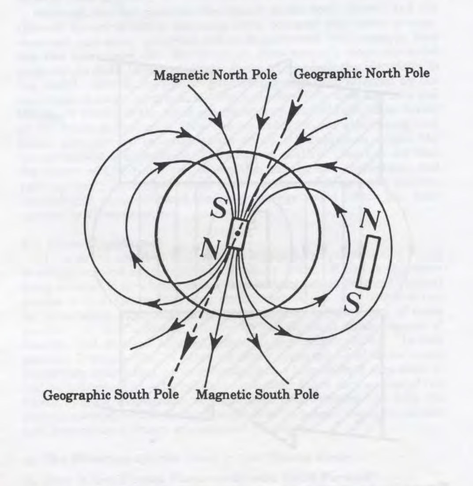
Chúng ta vẫn chưa biết từ trường Trái Đất được hình thành như thế nào. Lời giải thích được chấp nhận rộng rãi nhất là có một dòng điện tuần hoàn sâu bên trong Trái Đất, hoặc ở tầng khí quyển trên cao, hoặc cả hai. Chúng ta cũng không biết chính xác làm thế nào mà các cực từ lại trở nên gần với các cực địa lý đến vậy.
Chúng ta biết rằng từ trường Trái Đất đã khởi đầu ở Cực Nam địa lý và kết thúc ở Cực Bắc địa lý ít nhất trong một triệu năm qua (mặc dù bằng chứng cho thấy rằng trong vài triệu năm gần đây các cực từ của Trái Đất đã đảo ngược nhiều lần) (*4 và 5). Điều này mâu thuẫn với cách chúng ta hiểu về từ trường của một nam châm thanh, bởi vì các đường sức ở bên ngoài nam châm khởi đầu từ cực bắc và kết thúc ở cực nam, còn các đường sức ở bên trong nam châm đi từ cực nam đến cực bắc (Hình 4-3). Do đó, cái mà chúng ta thường gọi là Cực Từ Bắc của Trái Đất thật ra lại là cực nam của từ trường Trái Đất. Nói cách khác, các cực từ thực tế của Trái Đất thì ngược lại với cách chúng được thể hiện trên các bản đồ định hướng (Hình 4-2).
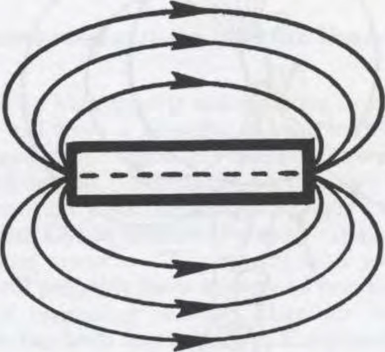
Một khi bạn đã tiếp thu những khái niệm này, hãy xem xét từ trường của cơ thể bạn. Vì từ trường của cơ thể bạn được hình thành dưới ảnh hưởng của từ trường Trái Đất, nên cực bắc và cực nam của cơ thể bạn sẽ được quyết định bởi việc bạn đang ở Bắc bán cầu hay Nam bán cầu. Chẳng hạn, nếu bạn đang đứng ở Bắc bán cầu, ví dụ ở Hoa Kỳ, thì các đường sức của từ trường Trái Đất sẽ đi vào cơ thể bạn qua đầu bạn và đi ra từ đáy cơ thể bạn. Đương nhiên, nếu bạn ở Nam bán cầu, ví dụ ở Brazil, thì các đường sức của từ trường Trái Đất sẽ đi vào phần dưới cơ thể bạn và đi ra từ đầu bạn (Hình 4-4). Điều này có nghĩa là nếu bạn ở Bắc bán cầu thì đầu bạn sẽ là cực nam còn bụng bạn sẽ là cực bắc. Đương nhiên, tình hình sẽ đảo ngược nếu bạn ở Nam bán cầu.
Khi bạn nằm xuống hay ở trên đường xích đạo, các cực nằm ở bên hông cơ thể bạn, và chúng thay đổi mỗi khi bạn cử động. Điều này có lẽ có nghĩa là trong những hoàn cảnh như vậy, từ trường Trái Đất chỉ có ảnh hưởng tối thiểu lên cơ thể bạn.
Giờ chúng ta hãy bàn xem điều này liên hệ với Khí Công như thế nào. Giả sử rằng bạn đang ở Bắc bán cầu, đầu bạn nên là cực nam còn bụng bạn là cực bắc (Hình 4-5). Bỏ qua mọi yếu tố khác như vị trí, thời tiết, v.v., độ mạnh của từ trường của bạn phụ thuộc vào những phẩm chất tự nhiên của cơ thể bạn. Đây có thể là điều mà người Trung Hoa muốn nói khi dùng cụm "Nguyên Tinh." Nó tương tự với việc khi bạn đặt thép tinh luyện chất lượng cao vào một từ trường, nam châm được tạo thành sẽ có từ trường mạnh hơn so với khi bạn dùng thép tinh luyện kém. Vì nam châm này mạnh hơn, năng lượng từ sẽ kéo dài lâu hơn. Tương tự, nếu bạn nhận được Nguyên Tinh chất lượng cao từ cha mẹ mình, từ trường của cơ thể bạn sẽ mạnh, và Khí hay năng lượng điện tuần hành trong cơ thể bạn sẽ mạnh và êm ả. Điều này có nghĩa là sức sống của bạn sẽ dồi dào, và có lẽ bạn sẽ có một đời sống dài lâu và khỏe mạnh.
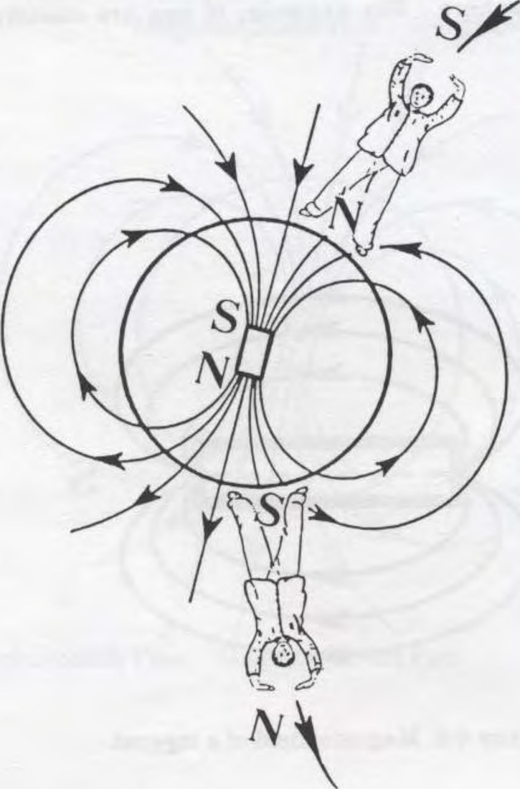
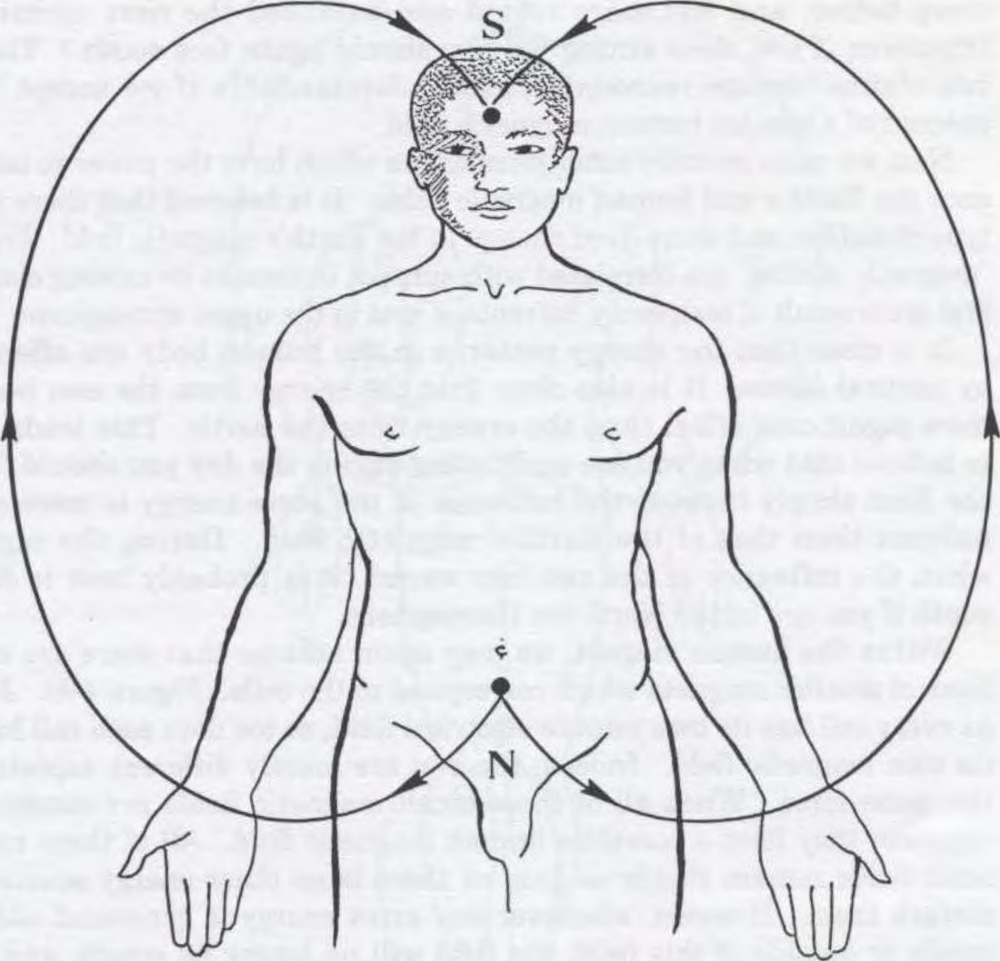
Nếu cách lập luận này là đúng, thì chúng ta có thể giải thích được một điều đã làm bối rối những người thiền Khí Công. Theo kinh nghiệm trước đây (phần lớn từ những người thiền ở Bắc bán cầu), khi một người thiền hướng mặt về phía nam, người ấy có thể đạt được một dòng Khí mạnh hơn và có thể quân bình Khí của mình nhanh hơn so với khi hướng về một phương khác. Hướng mặt về phía nam khiến năng lượng đi vào ăn khớp với "Tiểu Chu Thiên" — dòng năng lượng đi xuống theo đường giữa phía trước cơ thể và đi lên theo xương sống. Vì phía trước cơ thể là Âm, nó hấp thu năng lượng dễ dàng hơn phía sau hay hai bên. Một cách giải thích khả dĩ khác có liên hệ với việc chúng ta thường quay lại và nhìn những người đang nói với mình, như thể điều đó giúp ta nghe họ rõ hơn. Vì tâm trí bạn có ảnh hưởng đáng kể lên năng lượng của cơ thể bạn, nên việc hướng mặt vào năng lượng đi vào cũng có thể giúp bạn hấp thu và "tiêu hóa" nó. Chúng ta cũng có thể giải thích tại sao nhiều người luyện Khí Công cho rằng nếu họ ngủ với đầu hướng về phía bắc thì họ ngủ ngon hơn, và cảm thấy được nghỉ ngơi và quân bình hơn vào sáng hôm sau. (Tuy nhiên, nếu bạn ngủ ở tư thế ngồi, thì bạn lại nên hướng mặt về phía nam.) Hai tuyên bố này trở nên hợp lý và dễ hiểu nếu chúng ta chấp nhận khái niệm về một từ trường lưỡng cực của con người.
Tiếp theo chúng ta phải xem xét những hiện tượng khác có khả năng ảnh hưởng đến từ trường của Trái Đất và của con người. Người ta tin rằng có một loại biến đổi đột ngột và ngắn ngủi trong từ trường Trái Đất. Những "bão từ" này có tương quan với những đợt bùng phát vết đen mặt trời hay những đám mây chuyển động và là kết quả của những dòng ion tạm thời ở tầng khí quyển trên cao.
Rõ ràng là những mô thức năng lượng trong thân người chịu ảnh hưởng của những lực tự nhiên. Cũng rõ ràng rằng năng lượng từ mặt trời có ảnh hưởng đáng kể hơn năng lượng từ Trái Đất. Điều này khiến tôi tin rằng khi bạn thiền vào ban ngày, bạn nên hướng mặt về phía Đông, đơn giản vì ảnh hưởng của năng lượng mặt trời đáng kể hơn ảnh hưởng của từ trường Trái Đất. Vào ban đêm, khi ảnh hưởng của mặt trời đã suy yếu, có lẽ tốt nhất là hướng mặt về phía nam nếu bạn ở Bắc bán cầu.
Bên trong nam châm người, chúng ta lại có thể giả định rằng có hàng triệu nam châm nhỏ hơn tương ứng với các tế bào. (Hình 4-6). Cũng như mỗi tế bào có điện trường nhỏ bé riêng của nó, thì mỗi tế bào cũng có từ trường riêng. Thật vậy, cả hai chỉ là những phương diện khác nhau của cùng một lực. Khi tất cả những từ trường nhỏ này được kết hợp lại với nhau, chúng tạo thành một từ trường hoàn chỉnh của con người. Tất cả những từ trường này vẫn vững vàng chừng nào không có nguồn năng lượng nào khác làm xáo động chúng. Tuy nhiên, mỗi khi có thêm năng lượng được sinh ra ở bên trong hay bên ngoài trường này, trường sẽ không còn vững vàng nữa, và một dòng điện sẽ được sinh ra. Mỗi lần điều đó xảy ra, trường của cơ thể phải tự quân bình lại, và một mô thức năng lượng mới phải được hình thành. Điều này có nghĩa là nếu không có nguồn năng lượng cho nam châm người, từ trường sẽ không bị xáo động và đương nhiên sẽ không có năng lượng tuần hành trong trường ấy. Trong trường hợp này, cơ thể đã chết. Tuy nhiên, khi bạn còn sống, Tinh của thức ăn và không khí sinh ra năng lượng bên trong từ trường của bạn thông qua phản ứng sinh hóa. Năng lượng này tích tụ lại ở đám rối mặt trời (solar plexus) của bạn, rồi tuần hành khắp cơ thể bạn qua các kinh mạch Khí, vốn là những đường dẫn có độ dẫn điện cao xuyên qua mô. Khi năng lượng tuần hành trong cơ thể bạn, điều quan trọng là mỗi bộ phận, đặc biệt là các tạng phủ, nhận được đúng lượng cần thiết để hoạt động đúng đắn.
Chúng ta hãy xem kỹ hơn nữa. Theo khoa học y học Trung Quốc, dòng điện (Khí) tuần hành khắp cơ thể bạn từ kinh mạch này sang kinh mạch kế tiếp theo một thứ tự nhất định. Do đó, một đầu của mỗi kinh mạch là dương, và đầu kia là âm. Nếu một thầy châm cứu muốn dùng một nam châm để điều chỉnh mức Khí của một kinh mạch, ông ấy phải biết từ trường sẽ ảnh hưởng đến sự tuần hành Khí bên trong như thế nào. Ông ấy phải biết Khí tuần hành ra sao và theo hướng nào. Ông ấy cũng phải biết cách định hướng các cực của nam châm. Định hướng sai sẽ chỉ làm tình hình tồi tệ hơn. Theo những báo cáo tôi đã đọc về việc dùng nam châm trong châm cứu, đôi khi nó có hiệu quả, đôi khi không. Có thể những thất bại là do thầy châm cứu không tính đến việc định hướng nam châm.
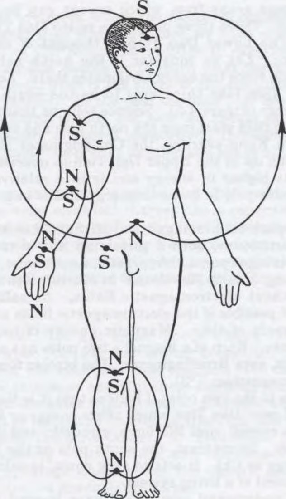
B. Thời Gian và Từ Trường của Con Người
Vì chúng ta là một phần của trường điện từ Trái Đất, nên những trường của chính chúng ta chịu ảnh hưởng của những biến đổi trong trường năng lượng Trái Đất. Những biến đổi này có thể do những nguồn như mặt trăng, mặt trời, hay thậm chí các ngôi sao gây ra. Chu kỳ rõ ràng nhất mà chúng ta chịu tác động là chu kỳ của một ngày. Mỗi hai mươi bốn giờ, cơ thể chúng ta nên đi qua một chu kỳ khi Trái Đất quay một vòng và trải qua một chu kỳ sáng tối. Đến lượt mình, sự quay của Trái Đất chịu ảnh hưởng của năng lượng mặt trời. Người ta đã đề xuất rằng có một chu kỳ khác được sinh ra bởi ảnh hưởng của mặt trăng lên mô thức năng lượng Trái Đất, lặp lại mỗi hai mươi tám ngày. Vì mặt trời di chuyển cao hơn và thấp hơn phía trên đường chân trời phía nam suốt cả năm, nên cơ thể chúng ta cũng trải qua một chu kỳ hằng năm. Người Trung Hoa tin rằng Trái Đất và con người cũng trải qua những chu kỳ khác mỗi mười hai và sáu mươi năm, do ảnh hưởng của các ngôi sao. Nếu bạn muốn nghiên cứu trường điện từ của con người, bạn cũng phải tính đến tất cả những chu kỳ này.
C. Một Mô Hình Từ Tính của Con Người
Dựa trên những thông tin ở trên, tôi muốn đưa ra một mô hình từ tính cho một con người ở Bắc bán cầu trên Trái Đất. Trong giới Khí Công, người ta đều biết rằng có ba vùng dự trữ năng lượng, từ đó năng lượng có thể được lấy ra và sử dụng không giới hạn. Ba nơi này được gọi là Đan Điền, hay "Những Cánh Đồng Linh Đan." Hạ Đan Điền được xem là lò của Nguyên Khí. Hãy coi nó là cực bắc của từ trường con người vì năng lượng khởi nguồn từ đó. Hãy coi Thượng Đan Điền (con mắt thứ ba) là cực nam vì nó nhận năng lượng (Hình 4-5). Khoa học cho chúng ta biết rằng các đường sức trong một từ trường khởi đầu từ cực bắc và kết thúc ở cực nam. Trong luyện tập Khí Công, Khí khởi nguồn ở Hạ Đan Điền và kết thúc ở Thượng Đan Điền để nuôi dưỡng não. Cực bắc có năng lượng cao hơn và ở trạng thái tương đối phấn khích, trong khi cực nam có năng lượng thấp hơn và ở trạng thái tĩnh lặng và vững vàng.
Trong báo cáo của ông về từ sinh học, Richard Leviton nói: "Một người thực hành nam châm trị liệu, vừa là y sĩ vừa là nhà nghiên cứu, là bác sĩ Richard Broeringmeyer, một chuyên viên nắn chỉnh xương khớp, chuyên gia dinh dưỡng, và là người xuất bản 'Bio-Energy Health Newsletter' ở Murray, Kentucky. Ông nói: 'Không thể có sự sống nếu thiếu các trường điện từ, và sức khỏe tối ưu là không thể có nếu các trường điện từ mất quân bình trong thời gian dài. Năng lượng từ là năng lượng của tự nhiên ở trạng thái quân bình hoàn hảo.' Mỗi cực trong hai cực của một nam châm có một năng lượng và ảnh hưởng khác nhau, ông Broeringmeyer nói. Chức năng lưỡng cực nằm gần như ở trung tâm của từ sinh học." (*3)
Về hai cực này, tôi tin rằng chính cực từ bắc ở Hạ Đan Điền là nơi cung cấp năng lượng hay Khí. Nó có khả năng làm tăng sinh lực, sức mạnh, và sự phát triển tổng thể của một hệ sống. Ngược lại, cực nam hay Thượng Đan Điền nhận năng lượng hay Khí. Nó có tác dụng làm chậm lại, làm tĩnh lặng, và điều khiển sự phát triển của một hệ sống.
Có lẽ giờ bạn đã hiểu tại sao tôi đặt các cực của từ trường chúng ta ở hai bên của Trung Đan Điền (đám rối mặt trời). Trung Đan Điền có thể được coi là lò nơi Tinh của thức ăn và không khí được chuyển hóa thành điện và sinh ra một EMF để tuần hành.
Những giả định trên đây dựa trên các hệ thống Khí Công Trung Quốc đã được phát triển ở Bắc bán cầu của Trái Đất trong vài ngàn năm qua. Tôi không biết liệu lý thuyết này có chính xác hay không, hay các cực ảnh hưởng đến sinh vật ở Nam bán cầu như thế nào. Tuy nhiên, ngụ ý là người ở Nam bán cầu có các cực từ của họ bị đảo ngược so với ở Bắc bán cầu. Nói cách khác, Thượng Đan Điền của họ sẽ cung cấp năng lượng trong khi Hạ Đan Điền sẽ nhận nó. Phải chăng điều này có nghĩa là, trong khi não của người ở Bắc bán cầu liên tục được nuôi dưỡng, thì não của người ở Nam bán cầu lại đang bị bào mòn? Phải chăng điều này giải thích tại sao phần lớn công nghệ được phát triển ở Bắc bán cầu? Phải chăng người ở Nam bán cầu sống lâu hơn vì Hạ Đan Điền của họ là cực nam và nó hấp thu cùng giữ Khí tốt hơn Đan Điền của một người ở Bắc bán cầu? Tôi đã nghe nói về một số thầy thuốc khuyên những bệnh nhân đã mất thăng bằng năng lượng nên dành thời gian ở đường xích đạo, nơi từ trường Trái Đất có ảnh hưởng tối thiểu, và cơ thể họ sẽ có thể tự quân bình trở lại. Đây là những ý tưởng hấp dẫn và đầy thách thức. Đã đến lúc cần có một cuộc nghiên cứu quy mô lớn về năng lượng con người hay Khí Công ở mọi ngóc ngách trên thế giới này.
2. Kinh Mạch:
Nếu các kinh mạch Khí là những vùng mà độ dẫn điện của mô cơ thể cao hơn những nơi khác, thì chúng ta đã trả lời được một trong những câu hỏi lớn của Khí Công. Ngoài việc giải thích cách Khí tuần hành, điều này cũng có thể cho phép chúng ta tìm hiểu điều mà người xưa chưa bao giờ khám phá được: hình dạng của các kinh mạch là gì, và chúng nằm chính xác ở đâu? Trước đây chúng ta chỉ có thể nghiên cứu Khí trên người sống, nhưng nay chúng ta có thể dùng tử thi và đo độ dẫn điện khắp cơ thể, và nhờ đó xác định được vị trí và hình dạng chính xác của các kinh mạch.
3. Các Mạch:
Chúng ta có thể giả định rằng cái được gọi là các mạch Khí chính là những mô có khả năng tích trữ các điện tích giống như một tụ điện. Cơ thể có tám tụ điện như vậy (được gọi là Kỳ Kinh Bát Mạch), chịu trách nhiệm điều hòa dòng điện tuần hành trong mười hai kinh mạch. Nếu giả định này đúng, chúng ta sẽ có thể xác định được vị trí và những đặc tính chính xác của những mạch này bằng công nghệ ngày nay.
4. Các Huyệt:
Các huyệt châm cứu là những điểm nhỏ nơi độ dẫn điện cao hơn những vùng xung quanh (*2). Điện được dẫn giữa các kênh điện chính (các kinh mạch Khí) và bề mặt da dễ dàng hơn ở những vị trí này so với những nơi khác. Những huyệt này là những cánh cổng nơi người ta có thể dùng kim, nam châm, điện, và những phương tiện khác như laser để tác động lên dòng điện trong các kinh mạch Khí. "Ngũ Tâm" hay "Ngũ Cửa" (hai huyệt Lao Cung, hai huyệt Dũng Tuyền, và huyệt Bách Hội) có lẽ là những lỗ mở lớn hơn, nơi hoặc độ dẫn điện cao hơn, hoặc các kênh dẫn điện lớn hơn.
5. Lực Điện Từ (EMF):
Để có sự tuần hành điện, phải có một lực điện từ (EMF). Nếu không có EMF, điện thế trong mạch sẽ như nhau ở mọi nơi, và sẽ không có dòng điện nào xuất hiện. Nguyên lý tương tự cũng áp dụng cho mạch điện của cơ thể bạn. Nói chung, tôi có thể nghĩ ra bốn nguyên nhân khả dĩ cho việc sinh ra EMF trong mạch của con người: 1. Qua ảnh hưởng của năng lượng tự nhiên. Điều đó có nghĩa là EMF sinh ra trong mạch của thân người có thể bị ảnh hưởng bởi sự nhiễu loạn năng lượng bên ngoài, chẳng hạn từ mặt trời và mặt trăng. Hoặc là, bạn có thể để cơ thể mình tiếp xúc với một vùng phóng xạ hay thậm chí một trường điện từ có thể ảnh hưởng đến sự tuần hành điện trong cơ thể bạn. 2. Từ việc chuyển hóa Tinh của thức ăn và không khí. Mỗi khi thức ăn và không khí được hấp thu, chúng được chuyển hóa thành năng lượng điện sinh học. Việc gia tăng điện lượng này sẽ sinh ra EMF để tuần hành. 3. Từ việc vận động. Mỗi khi bạn cử động cơ bắp, một phần Tinh được dự trữ trong cơ thể bạn được chuyển hóa thành điện và sinh ra một EMF ở vùng được vận động. 4. Từ tâm trí và Thần. Tâm trí bạn đóng một vai trò quan trọng trong việc sinh ra EMF. Có lẽ không dễ để người bình thường hiểu được khái niệm này; tuy nhiên, nếu bạn hiểu rằng suy nghĩ của mình có khả năng ảnh hưởng đến sự tuần hành Khí của cơ thể, thì bạn có thể hiểu được rằng tâm trí có thể sinh ra một EMF. Chẳng hạn, tâm trí bạn dẫn điện đến các chi để tiếp năng lượng cho các mô cơ. Chính xác điều này xảy ra như thế nào vẫn là một câu hỏi còn chờ được trả lời trọn vẹn.
Trong luyện tập Khí Công, bạn luyện tập để làm tăng EMF của mình thông qua việc hấp thu thức ăn và không khí đúng cách, các bài tập Khí Công, và sự tập trung suy nghĩ.
6. Sự Ứ Trệ:
Dòng điện có thể bị giảm khi các cơ bị căng siết hoặc khi cấu trúc của các kinh mạch (mô dẫn điện) bị thay đổi. Trong y học Trung Quốc, điều này được gọi là Khí trệ. Việc căng siết cơ làm tăng điện trở đối với dòng điện và do đó gây ra sự gia tăng nhiệt độ. Vẫn còn khó nói chính xác điện trở bị gia tăng như thế nào. Nó có thể là do một phản ứng sinh hóa do tâm trí sinh ra, hoặc có thể do sự thay đổi trong mô dẫn điện. Sự tuần hành điện cũng có thể bị ảnh hưởng đáng kể khi mô dẫn điện bị nhiễm vật liệu có độ dẫn điện thấp như mỡ.
Rõ ràng là sự thư giãn có khả năng làm tăng sự tuần hành điện. Trong châm cứu, khi một huyệt bị tác động bởi kim hay nam châm, trường điện ở vùng ấy bị kích thích hoặc bị làm dịu. Nó cũng có thể chuyển hóa mỡ thành nhiệt và do đó khai thông đường dẫn.
7. Cảm Giác Nóng:
Nếu Khí là năng lượng điện từ tuần hành trong cơ thể, thì nhiệt mà nó sinh ra là do điện trở của cơ thể đối với dòng điện. Nếu bạn cho một dòng điện chạy qua một sợi dây, khi dòng điện gặp điện trở, năng lượng điện được chuyển hóa thành nhiệt. Do đó, nhiệt được cảm nhận trong các liệu trình châm cứu và luyện tập Khí Công không phải là Khí, mà đúng hơn là một triệu chứng cho thấy sự hiện diện của Khí. Nếu điều này đúng, thì khi luyện tập Khí Công, điều mong muốn là tuần hành Khí êm ả đến mức nó không sinh ra bất kỳ cảm giác nóng nào. Điều này giống như cho dòng điện chạy qua một sợi dây đồng có điện trở thấp thay vì một sợi dây sắt có điện trở cao. Mỗi khi bạn sinh ra quá nhiều nhiệt trong cơ thể, đặc biệt là trong các tạng phủ, mô sẽ bắt đầu thoái hóa nhanh hơn. Hãy nhớ rằng biểu tượng chữ Hán nguyên thủy của Khí được cấu tạo từ hai chữ "không lửa." Do đó, với tư cách là một người luyện Khí Công, bạn không nên cố cảm nhận Khí của mình như là nhiệt. Tốt hơn là cảm nhận nó như một cảm giác điện. Nếu bạn ghi nhớ điều này, bạn sẽ có thể tránh làm cho cơ thể mình quá Dương trong khi luyện tập.
Khi chúng ta luyện Khí Công hay Thái Cực, thường gặp cảm giác ấm nóng trên da, đặc biệt ở giữa lòng bàn tay (các huyệt Lao Cung), dưới lòng bàn chân (các huyệt Dũng Tuyền), và trên mặt. Chúng ta biết rằng sự ấm nóng là một dấu hiệu cho thấy sự tuần hành Khí gia tăng, nhưng chính xác thì nhiệt này được gây ra như thế nào?
Trước khi tiếp tục, tôi muốn trích dẫn một báo cáo của Albert L. Huebner: "Ở Anh, các bác sĩ đã phát hiện rằng trẻ em có thể mọc lại những đốt ngón tay bị mất, hoàn hảo đến từng chi tiết, khi tuân theo một quy trình có nét tương đồng thú vị với sự tái sinh chi ở các loài lưỡng cư. Một con kỳ nhông sẽ không tái sinh chi của nó nếu phần gốc cụt đã bị da phủ kín, có lẽ vì điều này chặn 'dòng điện tổn thương' mà người ta biết là hình thành ở đó. Bác sĩ Cynthia Illingworth ở Sheffield phát hiện rằng nếu đốt ngón tay của một đứa trẻ cần mọc trở lại, thì phần gốc cụt cũng phải được để hở." (*1)
Điều này dường như cho thấy rằng độ dẫn điện của mô cơ cao hơn nhiều so với mô da. Khi da đã phủ kín vùng bị thương, nó ngăn năng lượng điện lan ra ngoài phần gốc cụt và tạo ra sự nhân lên của các tế bào, và cuối cùng là sự tái sinh của ngón tay.
Giờ tôi tin rằng mô da dẫn điện kém hơn mô cơ, và cả hai đều dẫn điện kém hơn xương. Khi chúng ta bị thương sâu trong cơ, cơn đau đáng kể hơn khi vết thương ở nông. Tương tự như vậy, cơn đau do một vết thương đủ sâu để chạm tới xương thì còn dữ dội hơn nữa. Tủy xương và não có lẽ là hai nơi có độ dẫn điện cao nhất trong thân người. Tuy nhiên, phải nhấn mạnh rằng điều này, xét trên nhiều phương diện, là suy đoán. Thực nghiệm và bằng chứng thực nghiệm sẽ là cách duy nhất để thật sự chứng minh tính đúng đắn của lý thuyết.
Nếu bạn có thể chấp nhận những ý tưởng này, thì hẳn là rất dễ để bạn chấp nhận lời giải thích về cách nhiệt được sinh ra trên da trong các môn nội gia võ thuật và Khí Công. Trong những môn này, bạn thường học cách thư giãn và dẫn Khí đến các đầu chi. Khí hay điện sẽ đi qua mô cơ và mô liên kết một cách dễ dàng, nhưng khi nó chạm tới da thì độ dẫn điện đột ngột thấp hơn. Điều này có nghĩa là điện trở đối với dòng điện bị gia tăng. Kết hợp với mỡ (cũng có độ dẫn điện thấp) vốn thường tích tụ giữa da và cơ, dòng điện bị chặn lại và chuyển hóa thành nhiệt (Hình 4-7).
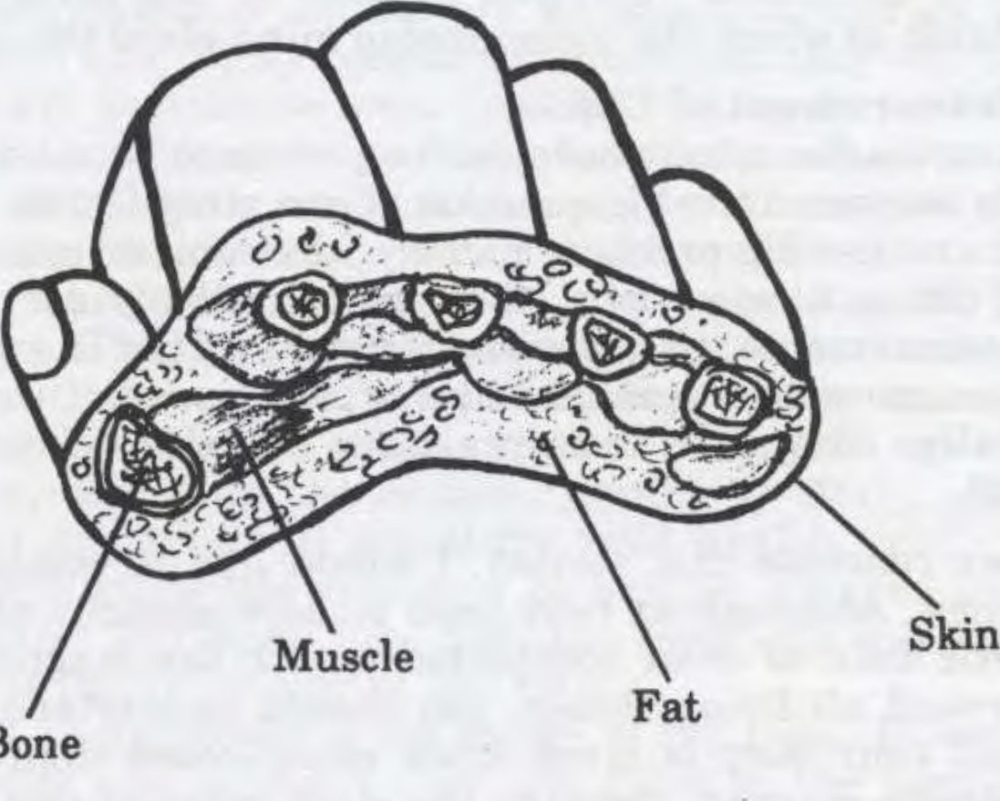
Bạn có thể thấy từ cuộc thảo luận này tại sao một trong những mục đích của Khí Công là giảm nhiệt và khai thông những tắc nghẽn điện giữa các cơ và da, và do đó làm tăng dòng Khí đến bề mặt da. Điều này bảo đảm rằng da, tóc, và móng nhận được một lượng điện dồi dào để duy trì sức khỏe và tăng cường sự tăng trưởng.
8. Chữa Lành:
Những ý tưởng chúng ta đã bàn cũng có thể giải thích cách một số người có thể chữa lành cho một người khác bằng cách chạm vào người ấy bằng tay mình. Người bình thường chỉ có thể di chuyển một lượng Khí giới hạn qua cơ thể mình, và chỉ có thể đưa một lượng rất nhỏ ra bề mặt da. Tuy nhiên, một số người, kể cả những người luyện Khí Công, có thể di chuyển Khí dễ dàng ra bề mặt da và vượt xa hơn, thậm chí có thể ảnh hưởng đến Khí của một người khác. Nếu họ có thể xác định được trạng thái Khí trong toàn bộ cơ thể một người, họ có thể cung cấp năng lượng cho những vùng còn thiếu, và rút bớt năng lượng thừa khỏi những vùng bị cung cấp quá mức. Một khi họ làm được điều này, điều quan trọng là họ phải đào thải phần Khí thừa ra khỏi chính cơ thể mình thông qua nhiều phương pháp điều hòa Khí khác nhau.
9. Khai Mở Các Cửa:
Một trong những mục tiêu chính của Khí Công là "khai mở các cửa" (Tong Guan). Điều này có nghĩa là loại bỏ mọi nguyên nhân gây ra sự ứ trệ điện (Khí). Ứ trệ là khi dòng điện bị cản trở trong các kinh mạch Khí, thường là quanh các huyệt. Điều này do thức ăn không thích hợp, không khí kém chất lượng, và sự lão hóa của các mô cơ thể gây ra. Nhiều phái Khí Công khác nhau, dựa trên những lý thuyết khác nhau, có những phương pháp khai mở các cửa khác nhau (điều này được bàn trong Chương 6). Tuy nhiên, bất kể phái nào, chìa khóa để khai mở các cửa là làm tăng dòng điện. Điều này quét sạch những chướng ngại và làm rộng những vùng bị co thắt ("các cửa" hay "các huyệt"), làm cho sự tuần hành trở nên êm ả. Để làm tăng dòng điện, EMF phải được gia tăng. Điều này có thể được thực hiện bằng các bài tập Khí Công và thiền, trong đó tâm trí tập trung đóng vai trò chính.
10. Việc Đo Lường Khí:
Nếu những lý thuyết đã bàn ở trên có thể được chứng minh là đúng, thì cuối cùng chúng ta đã trả lời được câu hỏi lớn rằng Khí rốt cuộc là gì. Chúng ta cũng đã giải quyết được một vấn đề lớn khác, đó là nên dùng đơn vị đo lường nào. Nếu Khí là điện sinh học, thì chúng ta có thể đơn giản dùng cùng những đơn vị đo lường mà chúng ta dùng với điện. Đây là một bước tiến lớn, bởi vì với một đơn vị đo lường chuẩn, giờ đây chúng ta có thể so sánh và đánh giá các kết quả của những cuộc kiểm tra và thí nghiệm một cách khoa học.
Trước khi kết thúc tiết này, tôi muốn nhắc bạn vài điều. Mặc dù chúng ta đã dùng những khái niệm của khoa học hiện đại về từ trường để so sánh với những từ trường bao quanh mọi sinh vật sống, bạn nên hiểu rằng trường quanh cơ thể bạn phức tạp hơn nhiều so với trường quanh một nam châm đơn giản. Có lẽ nguyên nhân chính của điều này là do tâm trí bạn, thứ có thể ảnh hưởng đến từ trường của bạn. Chính xác thì tâm trí sinh ra EMF như thế nào là một trong nhiều điều bí ẩn của não bộ. Chúng ta cũng không biết chính xác Tinh của thức ăn và không khí được chuyển hóa thành năng lượng điện như thế nào.
Xin cũng nhớ rằng nhiều ý tưởng đã bàn ở trên không phải là những sự thật đã được chứng minh. Mặc dù bằng chứng thực nghiệm và chứng minh khoa học đang tích lũy, vẫn còn nhiều lĩnh vực chưa được hiểu rõ. Tôi đã đưa ra những lời giải thích cho nhiều câu hỏi lớn của Khí Công, nhưng chúng chỉ là những lý thuyết và kết luận mang tính cá nhân của tôi. Bạn không nên xem chúng là sự thật, bởi vì chúng vẫn cần thêm bằng chứng thực nghiệm. Tôi hy vọng rằng tiết này sẽ kích thích người ta suy nghĩ, và khuyến khích sự tổng hợp giữa các lý thuyết về Khí và về điện sinh học.
4-4. Khai Mở Các Cửa Khí
Cuộc thảo luận vừa rồi hẳn đã cho bạn một ý niệm về một số vấn đề cần được khắc phục để có thể luyện tập Khí Công. Để duy trì sức khỏe, bạn phải giữ cho Khí của mình tuần hành êm ả trong những lộ trình đúng đắn. Việc giảm lượng thức ăn xấu mà bạn ăn, vốn là nguồn chính của Khí bị nhiễm bẩn, sẽ giúp duy trì một dòng Khí êm ả. Sau đó bạn phải học cách khai mở tất cả những cửa (huyệt) đang bị tắc nghẽn và đang gây ra sự ứ trệ Khí. Đây là một phần chính của môn Khí Công được luyện tập vì sức khỏe.
Trong Khí Công, việc khai mở các cửa được gọi là "Tong Guan" (nghĩa đen là "đi qua các cửa"). Lý thuyết về việc khai mở những cửa này rất đơn giản. Trước tiên hãy nghĩ xem bạn sẽ làm gì nếu ống thoát nước trong bồn rửa của bạn bị tắc một phần. Có lẽ bạn sẽ xả thật nhiều nước qua đó để làm tăng áp lực lên chỗ tắc và cuốn nó trôi đi. Bạn sẽ biết khi nào ống thông vì nước sẽ chảy qua đó nhanh và mạnh. Bạn có thể dùng cùng phương pháp ấy với các kinh mạch Khí của mình bằng cách cho nhiều Khí chảy qua chúng hơn. Nhưng để di chuyển được nhiều Khí hơn, trước tiên bạn phải sinh ra nó. Trong Ngoại Đan Khí Công, khi Khí được tích tụ ở các chi, nó chảy ngược trở lại vào cơ thể mạnh hơn trước. Khi bạn tiếp tục luyện tập, Khí sẽ dần dần làm rộng các kinh mạch.
Nào, bạn có thể nghĩ rằng vì việc gia tăng dòng Khí khai mở các cửa, nên bạn càng tăng Khí bao nhiêu thì bạn càng khai mở các cửa nhanh bấy nhiêu. Tuy nhiên, bạn phải nhớ một điều quan trọng. Các cơ quan nội tạng của bạn được thiết kế để hoạt động ở những mức Khí nhất định, và nếu chúng nhận quá nhiều Khí, chúng sẽ trở nên quá Dương và sẽ thoái hóa nhanh hơn.
Trong Khí Công, điều rất quan trọng là chỉ làm đủ để nâng mức Khí của bạn cao hơn mức bình thường một chút. Khi bạn tiếp tục luyện tập, các kinh mạch Khí sẽ dần dần rộng ra để mức Khí trở lại bình thường, và những cửa bị tắc sẽ từ từ mở ra. Rồi bạn lại có thể tăng mức Khí lên một chút, các kinh mạch sẽ trở nên sạch hơn, và chúng sẽ dần dần rộng hơn. Việc luyện tập đều đặn những bài tập đúng đắn sẽ làm cho sự tuần hành trở nên êm ả, và giữ cho các tạng phủ hoạt động đúng đắn. Mức luyện tập thích hợp sẽ duy trì sức khỏe của bạn, trong khi luyện tập quá ít sẽ để cho các kinh mạch bị tắc nghẽn, và luyện tập quá nhiều sẽ làm cho cơ thể bạn quá Dương, và sẽ làm bạn giảm thọ. Đây là lý thuyết then chốt của Ngoại Đan.
Không có sự khác biệt nào trong lý thuyết của Nội Đan. Tuy nhiên, trong luyện tập Nội Đan, bạn thường khai mở các cửa ở Nhâm mạch và Đốc mạch trước. Hai mạch này được xem là những bể chứa Khí chính điều hành Khí, và do đó bạn phải khai mở chúng trước nếu bạn muốn điều hòa Khí. Một khi việc này đã xong, bạn đã hoàn thành Tiểu Chu Thiên (Sheau Jou Tian). Có ba cửa trên lộ trình này được xem là khó khăn và nguy hiểm nhất khi bạn luyện tập. Khi bạn khai mở ba cửa này, nó được gọi là "Tong San Guan" ("đi qua ba cửa").
Sau khi bạn đã hoàn thành Tiểu Chu Thiên, bạn tiếp tục dẫn Khí đến các chi để khai mở tất cả những cửa nằm trên các kinh mạch Khí. Một khi bạn đã hoàn thành việc này, bạn đã đạt được Đại Chu Thiên (Dab Jou Tian). Để biết thêm thông tin, xin tham khảo các cuốn sách của tác giả: "Chi Kung — Health and Martial Arts" và "Muscle/Tendon Changing and Marrow Washing Chi Kung."
Các Phái Khí Công
Khí Công là môn học về trường năng lượng của cơ thể bạn, và nó liên hệ trực tiếp tới sức khỏe thể chất, cảm xúc, tinh thần và cả tâm linh của bạn. Cả tôn giáo phương Đông lẫn phương Tây đều ảnh hưởng tới Khí của cơ thể, hoặc một cách gián tiếp qua con đường cảm xúc hay tinh thần, hoặc một cách trực tiếp qua sự điều khiển có ý thức. Ở phương Đông, tôn giáo là nguồn gốc của một số phát triển vĩ đại nhất trong Khí Công. Các tôn giáo phương Đông đã ý thức rõ hơn các tôn giáo phương Tây về vai trò của Khí trong đời sống tâm linh và cảm xúc của chúng ta. Khí Công bắt đầu bằng khoa học vật chất (làm khỏe cơ thể), rồi chuyển sang khoa học năng lượng (Khí), tiếp đó là khoa học tinh thần (làm lặng tâm), và cuối cùng đạt tới khoa học tâm linh (giác ngộ). Khi học Khí Công Trung Quốc, bạn nên ý thức được vai trò to lớn mà tôn giáo đã đóng góp vào sự phát triển của nó. Khi bạn hiểu biết thêm về Khí Công, bạn sẽ nhận ra nhiều hơn những cách thức mà các tôn giáo phương Tây cũng đã thực hành môn khoa học này.
Trong chương này, trước tiên chúng ta sẽ bàn về mối quan hệ giữa Khí Công và các tôn giáo Trung Quốc, sau đó sẽ bàn về những phái Khí Công khác nhau.
5-1. Khí Công và Tôn Giáo
Một phần của thân phận con người là việc chúng ta thường xuyên trải qua sự xung đột giữa trái tim và khối óc mình. Rất thường khi ta muốn làm những điều mà ta biết mình không nên làm. Một phần trong ta biết bổn phận và nghĩa vụ đạo đức của mình nằm ở đâu, nhưng đồng thời những ham muốn lại kéo ta về hướng ngược lại. Quá thường xuyên, ta thấy sự khôn ngoan và lòng ham muốn xung đột trực tiếp với nhau. Những ham muốn mà ta cảm thấy không thể kiểm soát được sẽ lôi ta vào những hành vi dại dột, thậm chí bạo lực. Khi ta làm những điều mình biết là không nên làm, ta cảm thấy một nỗi đau nội tâm do sự xung đột tâm linh/đạo đức gây ra.
Phật giáo và Đạo giáo nói rằng có bảy cảm xúc của con người: vui, giận, buồn, sợ, yêu, ghét và dục; và sáu ham muốn phát sinh từ sáu căn: mắt, tai, mũi, lưỡi, thân và ý. Bảy cảm xúc và sáu ham muốn này là sản phẩm của tâm cảm xúc. Mặc dù một số cảm xúc, như tình yêu, có thể nâng ta lên, nhưng phần lớn các cảm xúc và ham muốn đều dẫn ta tới mặt xấu xa và tăm tối của đời sống, mặt của những tai họa con người.
Nếu ta học cách củng cố tâm khôn ngoan, ta có thể đạt được sự bình lặng và an nhiên, và điều này có thể giúp ta phát triển lòng kiên nhẫn, sự kiên trì, ý chí mạnh mẽ, cùng ý thức về công lý và hòa hợp. Những đức hạnh ấy cho phép ta vượt qua những tai họa do tâm cảm xúc tạo ra. Con người cần được dạy cách củng cố mặt tốt và khắc phục mặt tiêu cực trong bản tính mình. Một nền giáo dục đúng đắn sẽ vun bồi và làm chín muồi tâm khôn ngoan — khả năng phán đoán có thể kiểm soát bảy cảm xúc và sáu ham muốn.
Một phần trong bản tính ta là tham lam và ích kỷ, khiến ta giành giật tiền bạc và quyền lực. Khi phần đạo đức trong bản tính ta bị chèn ép, tâm trí ta dường như trở nên xấu xa — giết người, trộm cắp, hãm hiếp, bất cứ điều gì cũng có thể xảy ra. Suốt chiều dài lịch sử, nhiều người đã tôn thờ làm anh hùng những kẻ có thể giết chóc, chinh phạt và bắt người khác làm nô lệ. Phim ảnh và các chương trình truyền hình ngày nay đầy rẫy những câu chuyện giết chóc và bạo lực. Các thế hệ trẻ liên tục được giáo dục theo lối suy nghĩ ấy khi chúng xem những chương trình này, và ngay cả trong các lớp học lịch sử. Bằng cách ấy, hạt giống của mặt tối trong bản tính con người được gieo trồng và không ngừng được nuôi dưỡng. Hạt giống này sẽ lớn lên, và thế hệ tiếp theo sẽ nối dài bạo lực, thù hận và lòng tham.
Những cảm xúc bạo lực này thường có thể chèn ép hoặc bóp méo tình yêu và sự an nhiên trong con người, nhưng phải trả một giá. Vì khao khát được yêu thương và an nhiên là một phần bẩm sinh của bản tính con người, nên những cảm xúc bạo lực và thù hận không ngừng gây ra một sự xung đột nội tâm. Chính sự xung đột này đã sinh ra các tôn giáo khác nhau của nhân loại. Tôn giáo mang lại niềm hy vọng về an nhiên, và khuyến khích con người củng cố mặt tốt trong bản tính mình. Nhiều người đạt được sự an nhiên và lòng tự tin, và vượt qua nỗi sợ hãi cùng sự bất định đôi khi đè nặng bao quanh ta trong cõi đời này.
Mọi tôn giáo khác nhau dường như đều có một điểm tương đồng — tín đồ phải học thiền định để đạt được sự an nhiên trong tâm trí. Thiền định (và cầu nguyện, một hình thức của thiền định) có thể mang lại sự an ủi tinh thần và sự bình lặng, cùng xây dựng lòng tự tin. Thiền định điều hòa tâm trí và cân bằng Khí vốn đã bị xáo trộn bởi những khổ đau cảm xúc. Nhiều người đã nhận thấy rằng cầu nguyện mang lại cho họ một sự bình an nội tâm giúp họ hồi phục sau bệnh tật. Khi lòng tự tin tăng lên, tinh thần được nâng lên và vững vàng hơn. Tinh thần được nâng lên ấy đã trở thành một sức mạnh lớn lao trong cuộc chiến làm vơi bớt khổ đau trên thế gian này.
Phật giáo và Đạo giáo dạy, cũng như Kitô giáo, rằng có một thiên đường và có một địa ngục. Nếu bạn sống tốt và đã làm việc thiện khi còn sống, bạn sẽ tái sinh làm người, hoặc thậm chí có thể lên thiên đường như một vị Phật hay một vị thánh và bỏ lại sau lưng vòng luân hồi tái sinh. Nếu bạn đã sống ác, bạn có thể kết thúc trong địa ngục của khổ đau và trừng phạt, và/hoặc tái sinh làm loài vật. Hầu như mọi người thời cổ đều không được học hành. Họ lo lắng và bối rối về cuộc sống của mình, và họ sợ điều gì có thể xảy đến sau khi chết. Tôn giáo dạy về thiên đường và địa ngục để khuyến khích con người sống tốt thay vì xấu. Khi con người đã nỗ lực sống có đạo đức, tôn giáo dạy họ cách đạt được sự an nhiên trong tâm trí qua thiền định.
Không có gì đáng ngạc nhiên khi một số lượng lớn các kỹ thuật thiền định được phát triển bởi những người hành đạo tôn giáo, và các Phật tử cùng Đạo sĩ Trung Quốc đã nghiên cứu sâu xa lĩnh vực Khí Công có liên quan. Thực tế, chính những người hành Khí Công tôn giáo đã đạt được những thành tựu vĩ đại nhất trong sự phát triển của Khí Công. Điều này đặc biệt đúng ở cấp độ cao nhất của Khí Công, đó là giác ngộ. Ở cấp độ này, việc nghiên cứu năng lượng con người là khoa học tâm linh, và nó trở nên độc lập với tôn giáo.
Từ cuộc thảo luận này, bạn có thể thấy rằng tôn giáo và Khí Công gắn bó sâu xa với nhau. Một cuộc nghiên cứu kỹ lưỡng về Khí Công Trung Quốc cũng nên bao gồm việc tìm hiểu bối cảnh lịch sử và lý thuyết của những tôn giáo đã ảnh hưởng tới văn hóa Trung Quốc. Nó cũng có thể bao gồm việc so sánh Khí Công Trung Quốc với các kỹ thuật thiền định của tôn giáo phương Tây. Tôi tin rằng điều này sẽ giúp bạn hiểu rõ hơn mối quan hệ giữa bản tính con người và Khí Công.
5-2. Các Phái Khí Công
Trong vài ngàn năm kể từ khi Khí và mối quan hệ của nó với sức khỏe được khám phá, mọi tầng lớp dân chúng Trung Quốc đều đã thực hành Khí Công vào một thời điểm nào đó. Có bốn phái hay phái lớn được tạo ra bởi các tầng lớp người khác nhau. Các nho sĩ, y sĩ, võ sĩ và tăng sĩ tôn giáo đều có những phái Khí Công đặc thù của riêng mình. Khí Công võ thuật lại được chia thành ngoại gia và nội gia, còn Khí Công tôn giáo được chia thành các phái Phật giáo, Đạo giáo và Tây Tạng.
Để có được một thân thể khỏe mạnh, bạn phải tu luyện cả Tính (bản tính con người) lẫn Mệnh (sinh mệnh thể xác). Một phần lớn của triết học Trung Quốc tập trung vào việc nghiên cứu bản tính con người, tình cảm và tinh thần, như có thể thấy đặc biệt rõ trong giới nho học và tăng lữ Phật giáo (kể cả Tây Tạng) Trung Quốc. Trong tất cả các phái Khí Công khác nhau, phái nho sĩ và phái tôn giáo đều bắt nguồn từ và tập trung vào việc tu luyện bản tính con người cùng tinh thần.
Thực vậy, bản tính con người và tinh thần là cội nguồn cơ bản nhất của triết học nho học và tôn giáo ở Trung Quốc. Sinh mệnh thể xác được coi là không quan trọng bằng đời sống tinh thần. Vì lý do này, phần lớn các phép tĩnh tọa thiền định, vốn chuyên tu luyện về tinh thần, đều được phát triển và nghiên cứu bởi các nho sĩ và các tăng sĩ Phật giáo.
Tuy nhiên, hai nhóm này theo đuổi những mục tiêu khác nhau. Các nho sĩ tin rằng những căn bệnh trọng đều do sự mất cân bằng cảm xúc và tinh thần gây ra. Họ dùng thiền định để điều hòa tâm trí và tinh thần, và nhờ đó có được sức khỏe tốt. Các tăng sĩ Phật giáo thì nhắm tới sự độc lập tâm linh và cuối cùng là giai đoạn giác ngộ hay Phật quả. Trong hai nhóm này, các tăng sĩ Phật giáo (kể cả Tây Tạng) đã có thể đạt tới những cấp độ thiền định cao nhất, điều mà hầu như không phái nào khác ở Trung Quốc làm được. Tuy nhiên, dù hai phái Khí Công này nhấn mạnh thiền định tâm linh, họ cũng dùng một số bài tập Khí Công có hạn để rèn luyện thân thể, chẳng hạn các bài tập Dịch Cân của Đạt Ma.
Mặt khác, các y sĩ Trung Quốc cho rằng tuy thiền định tâm linh là quan trọng, việc tu luyện thể xác còn then chốt hơn đối với sức khỏe và sự chữa lành. Hơn nữa, rất khó dạy tĩnh tọa thiền định cho những người không chuyên, vì nó rất khó hiểu và khó thực hành. Do đó, các bài tập Khí Công do các y sĩ sáng tạo tập trung vào sức khỏe thể xác và sự chữa lành, và dùng phần lớn là các bài tập Khí Công thể xác. Các thầy thuốc cũng dựa nhiều vào châm cứu và dược thảo để điều chỉnh Khí bất thường do bệnh tật gây ra.
Tuy nhiên, theo những tài liệu hiện có, nhiều người hành Khí Công thuộc các phái khác nhau cảm thấy rằng Khí Công Đạo giáo có lẽ là phái hoàn chỉnh nhất cả về lý thuyết lẫn huấn luyện, vì nó nhấn mạnh tinh thần và thể xác ngang nhau. Các Đạo sĩ cũng nghiên cứu xem các vị dược thảo khác nhau ảnh hưởng thế nào tới sự vận hành của Khí, và dùng những dược thảo này để tăng tốc và làm trôi chảy tiến trình tu tập của mình. Họ thậm chí còn nghiên cứu cách một người hành Khí Công có thể chia sẻ Khí của mình với bạn đồng tu, hoặc qua sự tương trợ lẫn nhau giúp nhau tăng tốc tu luyện. Ảnh hưởng của ăn uống đối với sự vận hành của Khí cũng được nghiên cứu sâu. Công trình nghiên cứu của họ vừa rộng lớn vừa thực tiễn. Vì thế, các phương pháp huấn luyện của họ lan rộng khắp giới Khí Công Trung Quốc.
Theo những tài liệu hiện có, chúng ta có thể đại khái phân loại Khí Công thành năm phái lớn, tùy theo mục đích hay mục tiêu cuối cùng của chúng: 1. giữ gìn sức khỏe; 2. chữa bệnh; 3. kéo dài tuổi thọ; 4. kỹ năng võ thuật; và 5. giác ngộ hay Phật quả. Dù chúng ta nêu ra một mục đích hay mục tiêu huấn luyện khác nhau cho mỗi phái, bạn nên hiểu rằng không thể định nghĩa mọi phái một cách chặt chẽ theo mục đích huấn luyện của chúng. Điều này đơn giản là vì hầu như mọi phái Khí Công đều phục vụ nhiều hơn một trong các mục đích trên. Chẳng hạn, dù Khí Công võ thuật tập trung vào việc tăng hiệu quả chiến đấu, nó cũng có thể cải thiện sức khỏe của bạn. Khí Công Đạo giáo nhắm tới sự trường thọ và giác ngộ, nhưng để đạt được mục tiêu ấy bạn cần có sức khỏe tốt và biết cách chữa bệnh. Vì khía cạnh đa mục đích này của các phái, sẽ đơn giản hơn khi bàn về bối cảnh của chúng thay vì bàn về các mục tiêu huấn luyện. Biết được lịch sử và những nguyên lý cơ bản của mỗi phái sẽ giúp bạn hiểu rõ hơn Khí Công của phái đó. Trong mục này, chúng ta sẽ bàn chi tiết hơn về từng phái.
1. Khí Công Nho Sĩ · để Giữ Gìn Sức Khỏe
Ở Trung Quốc trước thời nhà Hán, có hai phái học thuật lớn. Một phái do Khổng Tử (551–479 tr. CN) sáng lập trong thời Xuân Thu, và những nho sĩ thực hành triết học của ông thường được gọi là Nho gia. Về sau, triết học của ông được Mạnh Tử (372–289 tr. CN) phổ biến và mở rộng trong thời Chiến Quốc. Những người thực hành nó được gọi là Nhơn gia hay Nho gia (Ru Jia). Những từ khóa trong triết học cơ bản của họ là Trung, Hiếu, Nhân, Từ, Tín, Nghĩa, Hòa và Bình. Nhân và những tình cảm con người là những chủ đề nghiên cứu chính. Triết học Nho gia đã trở thành trung tâm của phần lớn văn hóa Trung Quốc.
Phái học thuật lớn thứ hai được gọi là Đạo gia (Tao Jia) và do Lão Tử sáng lập vào thế kỷ thứ 6 tr. CN. Lão Tử được coi là tác giả của một cuốn sách tên là "Đạo Đức Kinh" (Kinh về đạo đức), mô tả đạo đức con người. Về sau, trong thời Chiến Quốc, người theo ông là Trang Tử đã viết một cuốn sách tên là "Trang Tử," dẫn tới sự hình thành một nhánh học thuật mạnh mẽ khác. Trước thời nhà Hán, Đạo giáo không được coi là một tôn giáo, mà là một nhánh học thuật khác. Mãi đến thời nhà Hán, Đạo giáo truyền thống mới được kết hợp với Phật giáo du nhập từ Ấn Độ, và nó dần dần bắt đầu được đối xử như một tôn giáo. Vì thế, Đạo giáo trước thời nhà Hán nên được coi là Đạo giáo học thuật hơn là Đạo giáo tôn giáo.
Về đóng góp của mình cho Khí Công, cả hai phái học thuật đều nhấn mạnh việc giữ gìn sức khỏe và phòng ngừa bệnh tật. Họ tin rằng nhiều bệnh tật là do sự thái quá về tinh thần và cảm xúc gây ra. Khi tâm trí một người không bình lặng, cân bằng và an nhiên, các tạng sẽ không hoạt động bình thường. Chẳng hạn, trầm cảm có thể gây loét dạ dày và khó tiêu. Giận dữ sẽ khiến gan hoạt động rối loạn. Buồn rầu sẽ gây ứ trệ và tức ngực trong phổi, còn sợ hãi có thể quấy nhiễu hoạt động bình thường của thận và bàng quang. Họ nhận ra rằng nếu muốn tránh bệnh tật, bạn phải học cách cân bằng và thư giãn những suy nghĩ cùng cảm xúc của mình. Điều này được gọi là "điều tâm." Vì thế, các nho sĩ nhấn mạnh việc đạt được một tâm trí an nhiên qua thiền định. Trong phép tĩnh tọa thiền định của họ, phần chính của việc huấn luyện là gạt bỏ các suy nghĩ để tâm trí được trong sáng và bình lặng. Khi bạn trở nên bình lặng, dòng suy nghĩ và cảm xúc chậm lại, và bạn cảm thấy trung tính về mặt tinh thần và cảm xúc. Kiểu thiền định này có thể được coi là thực hành sự tự chủ về cảm xúc. Khi bạn ở trong trạng thái "vô niệm" này, bạn trở nên rất thư giãn, và thậm chí có thể thư giãn sâu vào tận các tạng bên trong. Khi thân thể bạn thư giãn đến mức ấy, Khí của bạn sẽ tự nhiên vận hành trôi chảy và mạnh mẽ. Kiểu tĩnh tọa thiền định này rất phổ biến trong xã hội nho học Trung Quốc cổ đại.
Để đạt được mục tiêu có một tâm trí bình lặng và an nhiên, việc huấn luyện của họ tập trung vào điều hòa tâm, thân và hơi thở. Họ tin rằng chừng nào ba điều này còn được điều hòa, dòng Khí sẽ trôi chảy và bệnh tật sẽ không xảy ra. Đây là lý do việc luyện Khí của các nho sĩ được gọi là "Tu Khí" (Shiou Chi), nghĩa là "tu dưỡng Khí." Shiou trong tiếng Trung nghĩa là điều hòa, tu dưỡng hay sửa chữa. Nó có nghĩa là giữ gìn trong tình trạng tốt. Điều này rất khác với việc luyện Khí của Đạo giáo sau thời nhà Hán, vốn được gọi là "Luyện Khí" (Liann Chi), dịch là "luyện Khí." Liann nghĩa là rèn luyện hay thực hành để làm cho mạnh hơn. Khí Công Đạo giáo sau thời nhà Hán sẽ được bàn ở phần sau.
Nhiều tài liệu Khí Công do các Nho gia và Đạo gia viết ra chỉ giới hạn ở việc giữ gìn sức khỏe. Thái độ của nho sĩ trong Khí Công là thuận theo vận mệnh tự nhiên của mình và giữ gìn sức khỏe. Triết lý này khá khác với triết lý của Đạo sĩ sau thời nhà Hán, những người phủ nhận rằng vận mệnh của con người không thể thay đổi. Họ tin rằng có thể luyện Khí của mình để làm nó mạnh hơn, và đạt tới mục tiêu trường thọ. Trong giới nho học có câu: "Nhơn sinh thất thập cổ lai hy,"(*1) nghĩa là "trong đời người, bảy mươi tuổi là hiếm." Bạn nên hiểu rằng ít người dân thường thời cổ sống quá bảy mươi tuổi vì thiếu thức ăn tốt và kỹ thuật y học hiện đại. Cũng có câu: "An thiên lạc mệnh," nghĩa là "an phận với trời và vui với mệnh mình"; và "Tu thân đãi mệnh," nghĩa là "tu dưỡng thân thể và chờ đợi vận mệnh." Hãy so sánh điều này với triết lý của các Đạo sĩ thời sau, những người nói: "Nhất bách nhị thập vi yểu,"(*2) nghĩa là "một trăm hai mươi tuổi là chết yểu." Họ tin và đã chứng minh rằng đời sống con người có thể được kéo dài và vận mệnh có thể bị chống lại và vượt qua.
Nho giáo và Đạo giáo là hai phái học thuật lớn ở Trung Quốc, nhưng còn nhiều phái khác cũng ít nhiều liên quan tới các bài tập Khí Công. Chúng ta sẽ không bàn về chúng ở đây vì chỉ có một số lượng hạn chế tài liệu Khí Công từ các phái này.
Để kết luận, những đặc điểm cơ bản của việc huấn luyện Khí Công nho sĩ bao gồm:
A. Khí Công tâm linh và tinh thần được nhấn mạnh nhiều hơn Khí Công thể xác.
B. Những tài liệu đã xuất bản liên quan tới Khí Công bàn về nó một cách tùy tiện, thiếu tổ chức và thiếu hệ thống.
C. Giữ gìn sức khỏe là mục tiêu của việc tu Khí. Vượt qua cái chết và vận mệnh được coi là điều bất khả thi.
D. Trước thời nhà Hán, Đạo giáo được coi là một nhánh học thuật, còn sau thời nhà Hán nó dấn thân vào tôn giáo và trở thành Đạo giáo tôn giáo. Vì thế, Khí Công do các Đạo sĩ phát triển trước thời nhà Hán được coi là Khí Công Đạo giáo học thuật.
2. Khí Công Y Học · để Chữa Bệnh
Trong xã hội Trung Quốc cổ đại, hầu hết các hoàng đế đều trọng nho sĩ và chịu ảnh hưởng của triết học của họ. Các thầy thuốc không được coi trọng vì họ chẩn đoán bằng cách chạm vào thân thể bệnh nhân, điều bị coi là đặc trưng của tầng lớp hạ lưu trong xã hội. Dù các thầy thuốc đã phát triển một nền y học sâu sắc và thành công, họ thường bị coi thường. Tuy nhiên, họ vẫn tiếp tục làm việc chăm chỉ và nghiên cứu, và lặng lẽ truyền lại kết quả nghiên cứu của mình cho các thế hệ sau.
Trong tất cả các nhóm nghiên cứu Khí Công ở Trung Quốc, các thầy thuốc là những người theo đuổi lâu nhất. Kể từ khi sự vận hành của Khí trong cơ thể con người được khám phá khoảng bốn ngàn năm trước, các thầy thuốc Trung Quốc đã dành một phần lớn nỗ lực của mình để nghiên cứu hành vi của Khí. Những nỗ lực của họ đã dẫn tới châm cứu, bấm huyệt hay xoa bóp Án huyệt, và chữa trị bằng dược thảo.
Ngoài ra, nhiều thầy thuốc Trung Quốc đã dùng kiến thức y học của mình để sáng tạo những bộ bài tập Khí Công khác nhau, hoặc để giữ gìn sức khỏe hoặc để chữa những bệnh cụ thể. Các y sĩ Trung Quốc tin rằng chỉ ngồi tĩnh tọa thiền định để điều hòa thân, tâm và hơi thở như các nho sĩ làm là không đủ để chữa bệnh. Họ tin rằng để tăng vận hành của Khí, bạn phải vận động. Dù một tâm trí bình lặng và an nhiên là quan trọng đối với sức khỏe, việc vận động thân thể còn quan trọng hơn. Qua thực hành y học, họ học được rằng những người vận động đúng cách ít bị bệnh hơn, và thân thể họ suy thoái chậm hơn so với những người chỉ ngồi không. Họ cũng nhận ra rằng những động tác cơ thể cụ thể có thể làm tăng vận hành của Khí trong những tạng cụ thể. Từ đó họ lập luận rằng những bài tập ấy cũng có thể được dùng để chữa những bệnh cụ thể và phục hồi hoạt động bình thường của các tạng ấy.
Một số động tác này giống với cách một số loài vật di chuyển. Rõ ràng là để sống sót trong hoang dã, một loài vật phải có bản năng biết cách bảo vệ thân thể mình. Một phần của bản năng này liên quan tới cách tích tụ Khí, và cách giữ cho Khí không bị mất đi. Chúng ta, loài người, đã đánh mất nhiều bản năng ấy trong những năm tháng tách mình ra khỏi tự nhiên.
Nhiều thầy thuốc đã phát triển các bài tập Khí Công mô phỏng theo động tác của loài vật để giữ gìn sức khỏe và chữa bệnh. Một bộ bài tập tiêu biểu, nổi tiếng thuộc loại này là "Ngũ Cầm Hí" (Wuu Chyn Shih, Trò chơi năm loài vật) do Hoa Đà sáng tạo. Một bộ bài tập nổi tiếng khác dựa trên những nguyên lý tương tự được gọi là "Bát Đoạn Cẩm" (Ba Duann Gin, Tám đoạn gấm). Nó do Nguyên soái Nhạc Phi sáng tạo, và thú vị thay, ông là một binh sĩ chứ không phải một thầy thuốc.
Ngoài ra, dùng kiến thức y học của mình về vận hành Khí, các thầy thuốc Trung Quốc đã nghiên cứu cho tới khi tìm ra những động tác có thể giúp chữa những bệnh cụ thể và những vấn đề sức khỏe. Không có gì đáng ngạc nhiên khi nhiều động tác trong số đó không khác mấy so với những động tác dùng để giữ gìn sức khỏe, vì nhiều bệnh tật là do Khí mất cân bằng. Khi sự mất cân bằng này kéo dài trong một thời gian dài, các tạng sẽ bị ảnh hưởng, và có thể bị tổn hại về mặt thể chất. Điều này giống như vận hành một cỗ máy mà không cung cấp đủ dòng điện thích hợp — theo thời gian, cỗ máy sẽ bị hỏng. Các thầy thuốc Trung Quốc tin rằng trước khi sự tổn hại thể chất của một tạng lộ ra trong thân thể bệnh nhân, trước hết đã có sự bất thường trong sự cân bằng và vận hành của Khí.
Vì thế, điều chỉnh hay tăng cường sự vận hành Khí bình thường là mục tiêu chính của các phương pháp chữa trị bằng châm cứu hay bấm huyệt. Dược thảo và những chế độ ăn đặc biệt cũng được coi là những phương pháp chữa trị quan trọng trong việc điều hòa Khí trong cơ thể.
Chừng nào bệnh còn giới hạn ở mức ứ trệ Khí và chưa có tổn hại tạng thể chất, các bài tập Khí Công dùng để giữ gìn sức khỏe có thể được dùng để điều chỉnh lại sự vận hành Khí và chữa trị vấn đề. Tuy nhiên, nếu bệnh đã trầm trọng đến mức các tạng thể chất bắt đầu suy, thì tình hình đã trở nên nguy kịch và cần một phương pháp chữa trị cụ thể. Phương pháp ấy có thể là châm cứu, dược thảo, hoặc thậm chí phẫu thuật, cũng như những bài tập Khí Công cụ thể được thiết kế để tăng tốc sự chữa lành hoặc thậm chí chữa khỏi bệnh. Chẳng hạn, loét dạ dày và hen suyễn thường có thể được chữa khỏi hoặc cải thiện bằng một số bài tập đơn giản. Gần đây, ở cả Trung Quốc đại lục lẫn Đài Loan, một số bài tập Khí Công đã được chứng minh là có hiệu quả trong việc chữa trị một số loại ung thư.(*3)
Qua hàng ngàn năm quan sát tự nhiên và chính mình, một số người hành Khí Công đã đi sâu hơn nữa. Họ nhận ra rằng sự vận hành Khí của cơ thể thay đổi theo mùa, và rằng nên giúp cơ thể vượt qua những lần điều chỉnh định kỳ này. Họ cũng nhận thấy rằng ở mỗi mùa, các tạng khác nhau có những vấn đề đặc trưng. Chẳng hạn, vào đầu mùa Thu, phổi phải thích nghi với không khí lạnh hơn mà bạn hít vào. Trong khi sự thích nghi này diễn ra, phổi dễ bị quấy nhiễu, nên phổi của bạn có thể cảm thấy khó chịu và bạn có thể dễ bị cảm lạnh. Hệ tiêu hóa của bạn cũng bị ảnh hưởng trong những lúc chuyển mùa. Sự thèm ăn của bạn có thể tăng lên, hoặc bạn có thể bị tiêu chảy. Khi nhiệt độ hạ xuống, thận và bàng quang của bạn sẽ bắt đầu gây rắc rối. Chẳng hạn, vì thận bị căng thẳng, bạn có thể cảm thấy đau ở lưng. Tập trung vào những rối loạn Khí theo mùa này, những người thiền định đã sáng tạo một bộ động tác có thể được dùng để tăng tốc sự điều chỉnh của cơ thể.
Ngoài Nguyên soái Nhạc Phi, nhiều người không phải thầy thuốc cũng đã sáng tạo các bộ Khí Công y học. Những bộ này có lẽ ban đầu được sáng tạo để giữ gìn sức khỏe, và về sau cũng được dùng để chữa bệnh.
Những đặc điểm của Khí Công y học là:
A. Khí Công y học nhấn mạnh các bài tập thiền định vận động nhiều hơn tĩnh tọa thiền định.
B. Những mục tiêu chính của Khí Công y học là giữ gìn sức khỏe và chữa bệnh.
C. Các bài tập Khí Công chỉ là một phần nhỏ của nền y học Trung Quốc. Chữa trị bằng dược thảo, châm cứu và bấm huyệt vẫn là những phương pháp chữa lành chính.
3. Khí Công Võ Thuật · để Chiến Đấu
Khí Công võ thuật Trung Quốc có lẽ chưa được phát triển cho tới khi Kinh Dịch Cân của Đạt Ma ra đời ở Thiếu Lâm Tự vào thời nhà Lương (502–557 SCN). Khi các tăng sĩ Thiếu Lâm luyện Khí Công Dịch Cân của Đạt Ma, họ nhận thấy rằng mình không chỉ cải thiện được sức khỏe mà còn tăng mạnh uy lực của các kỹ thuật võ thuật. Kể từ đó, nhiều môn võ đã phát triển các bộ Khí Công để tăng hiệu quả của mình. Ngoài ra, nhiều môn võ đã được sáng tạo dựa trên lý thuyết Khí Công. Các võ sĩ đã đóng một vai trò quan trọng trong giới Khí Công Trung Quốc.
Khi lý thuyết Khí Công lần đầu được áp dụng vào võ thuật, nó được dùng để tăng sức mạnh và hiệu quả của các bắp thịt. Lý thuyết rất đơn giản — ý (Yi) được dùng để dẫn Khí tới các bắp thịt nhằm tiếp năng lượng cho chúng để chúng hoạt động hiệu quả hơn. Người bình thường nói chung chỉ dùng các bắp thịt của mình ở mức dưới 40% hiệu quả tối đa. Nếu một người có thể rèn luyện sự tập trung và dùng ý mạnh mẽ của mình để dẫn Khí tới các bắp thịt một cách hiệu quả, người ấy sẽ có thể tiếp năng lượng cho các bắp thịt tới một mức cao hơn và do đó tăng hiệu quả chiến đấu của mình.
Khi lý thuyết châm cứu được hiểu rõ hơn, các kỹ thuật chiến đấu đã có thể đạt tới những cấp độ cao hơn nữa. Các võ sĩ học cách tấn công những vùng cụ thể, như các huyệt đạo châm cứu trọng yếu, để quấy nhiễu dòng Khí của đối phương và tạo ra những mất cân bằng gây thương tích hoặc thậm chí tử vong. Để làm được điều này, người tập phải hiểu đường đi và thời điểm của sự vận hành Khí trong cơ thể con người. Người ấy cũng phải luyện tập để có thể đánh trúng các huyệt đạo một cách chính xác và đúng độ sâu. Những kỹ thuật đánh huyệt này được gọi là "Điểm Huyệt" (Dien Shiuh, Pointing Cavities) hay "Điểm Mạch" (Dim Mak, Pointing Vessels).
Hầu hết các bài luyện Khí Công võ thuật đều giúp cải thiện sức khỏe của người tập. Tuy nhiên, có những bài luyện Khí Công võ thuật khác, dù xây dựng được một kỹ năng đặc biệt nào đó hữu ích cho việc chiến đấu, lại cũng gây hại cho sức khỏe của người tập. Một ví dụ về điều này là Thiết Sa Chưởng. Dù việc luyện tập này có thể xây dựng sức phá hủy đáng kinh ngạc, nó cũng có thể gây hại cho bàn tay bạn và ảnh hưởng tới sự vận hành Khí ở bàn tay và các tạng bên trong.
Kể từ thế kỷ thứ 6, nhiều môn võ đã được sáng tạo dựa trên lý thuyết Khí Công. Chúng có thể được chia đại khái thành ngoại gia và nội gia.
Các phái ngoại gia nhấn mạnh việc tích tụ Khí ở tứ chi để phối hợp với các kỹ thuật võ thuật thể chất. Chúng theo lý thuyết Khí Công Ngoại Đan (Wai Dan, ngoại đan). Trong Khí Công Ngoại Đan, Khí thường được sinh ra ở tứ chi qua những bài tập đặc biệt. Tâm trí tập trung được dùng trong các bài tập để tiếp năng lượng cho Khí. Điều này làm tăng đáng kể sức mạnh của bắp thịt, và do đó tăng hiệu quả của các kỹ thuật võ thuật. Khí Công cũng có thể được dùng để luyện thân thể chịu đựng được những cú đấm và cú đá. Trong việc luyện tập này, Khí được dẫn tới tiếp năng lượng cho da và các bắp thịt, giúp chúng chịu được một cú đánh mà không bị thương. Việc luyện tập này thường được gọi là "Thiết Bố Sam" (Tiee Bub Shan) hay "Kim Chung Tráo" (Gin Jong Jaw). Những môn võ dùng việc luyện Khí Công Ngoại Đan thường được gọi là ngoại gia (Wai Kung) hay ngạnh công (Ying Kung). Thiếu Lâm Công Phu là một ví dụ tiêu biểu của một môn võ dùng Khí Công võ thuật Ngoại Đan.
Dù Khí Công Ngoại Đan có thể giúp võ sĩ tăng uy lực của mình, vẫn có một nhược điểm. Vì Khí Công Ngoại Đan nhấn mạnh việc luyện các bắp thịt bên ngoài, nó có thể gây phát triển quá mức. Điều này có thể gây ra một vấn đề gọi là "tán năng lượng" (Sann Kung) khi người tập già đi. Để khắc phục điều này, khi một võ sĩ ngoại gia đạt tới một cấp độ cao của việc luyện Khí Công ngoại gia, người ấy sẽ bắt đầu luyện Khí Công nội gia, vốn chuyên chữa vấn đề tán năng lượng. Đó là lý do người ta nói "Thiếu Lâm Công Phu từ ngoại tới nội."
Khí Công võ thuật nội gia dựa trên lý thuyết Nội Đan (Nei Dan, nội đan). Trong phương pháp này, Khí được sinh ra trong thân thể thay vì ở tứ chi, và Khí này sau đó được dẫn tới tứ chi để tăng uy lực. Để dẫn Khí tới tứ chi, các kỹ thuật phải mềm mại và việc dùng bắp thịt phải được giữ ở mức tối thiểu. Việc huấn luyện và lý thuyết của Khí Công võ thuật Nội Đan khó hơn nhiều so với Khí Công võ thuật Ngoại Đan. Bạn đọc quan tâm nên tham khảo cuốn sách của tác giả: "Advanced Yang Style Tai Chi Chuan — Tai Chi Theory and Tai Chi Jing." Một số môn võ nội gia đã được sáng tạo ở vùng núi Vũ Đang và Nga Mi. Những môn phổ biến là Thái Cực Quyền, Bát Quái, Lục Hợp Bát Pháp và Hình Ý. Tuy nhiên, bạn nên hiểu rằng ngay cả các môn võ nội gia, vốn thường được gọi là nhu quyền, cũng phải trong một số trường hợp dùng sức mạnh bắp thịt khi chiến đấu. Vì thế, khi một võ sĩ nội gia đã đạt được một mức độ thuần thục trong Khí Công nội gia, người ấy cũng nên học cách dùng những kỹ thuật cứng hơn, thiên về ngoại gia. Đó là lý do người ta nói: "các môn nội gia đi từ nhu tới cương."
Trong năm mươi năm qua, một số người tập Thái Cực Khí Công hay Thái Cực Quyền đã phát triển việc huấn luyện chủ yếu để giữ gìn sức khỏe, và nó được gọi là "Vô Cực Khí Công" (Wu Chi Chi Kung), nghĩa là "Khí Công không có cực." Vô Cực là trạng thái trung tính đứng trước Thái Cực, vốn là trạng thái của những mặt đối lập bổ sung cho nhau. Khi có những suy nghĩ và cảm xúc trong tâm trí bạn, thì có Âm và Dương, nhưng nếu bạn có thể làm lặng tâm mình, bạn có thể trở về sự trống rỗng của Vô Cực. Khi bạn đạt được trạng thái này, tâm trí bạn được định tâm và trong sáng, thân thể bạn thư giãn, và Khí của bạn có thể tự nhiên và trôi chảy, tự nó đạt tới sự cân bằng thích hợp. Vô Cực Khí Công đã trở nên rất phổ biến ở nhiều vùng của Trung Quốc, đặc biệt là Thượng Hải và Quảng Châu.
Bạn có thể thấy rằng, dù Khí Công được nghiên cứu rộng rãi trong giới võ thuật Trung Quốc, trọng tâm chính của việc huấn luyện ban đầu là tăng khả năng chiến đấu chứ không phải sức khỏe. Sức khỏe tốt được coi là một sản phẩm phụ của việc huấn luyện. Mãi đến thế kỷ này, khía cạnh sức khỏe của Khí Công võ thuật mới bắt đầu nhận được sự chú ý nhiều hơn. Điều này đặc biệt đúng trong võ thuật nội gia.
4. Khí Công Tôn Giáo · để Giác Ngộ hay Phật Quả
Khí Công tôn giáo, dù không phổ biến bằng các phái khác ở Trung Quốc, được công nhận là đã đạt được những thành tựu cao nhất trong tất cả các phái Khí Công. Nó từng được giữ bí mật, và chỉ trong thế kỷ này nó mới được tiết lộ cho những người không chuyên.
Ở Trung Quốc, Khí Công tôn giáo chủ yếu bao gồm Khí Công Đạo giáo và Khí Công Phật giáo. Mục đích chính của việc huấn luyện của họ là phấn đấu đạt tới giác ngộ, hay điều mà các Phật tử gọi là Phật quả. Họ tìm cách nâng mình lên trên nỗi khổ đau thông thường của con người, và thoát khỏi vòng tái sinh không ngừng. Họ tin rằng mọi khổ đau của con người đều do bảy cảm xúc và sáu ham muốn gây ra. Nếu bạn vẫn còn bị ràng buộc vào những cảm xúc và ham muốn này, bạn sẽ tái sinh sau khi chết. Để tránh tái sinh, bạn phải luyện tinh thần của mình đạt tới một giai đoạn rất cao, nơi nó đủ mạnh để độc lập sau khi bạn chết. Tinh thần này sẽ vào thiên giới và đạt được sự an nhiên vĩnh cửu. Điều này khó làm trong thế giới đời thường, nên họ thường lánh khỏi xã hội và lui vào nơi tĩnh mịch của núi rừng, là nơi họ có thể dồn hết năng lượng của mình vào việc tự tu luyện.
Những người hành Khí Công tôn giáo luyện tập để củng cố Khí bên trong của mình nhằm nuôi dưỡng tinh thần (Thần — Shen) cho tới khi tinh thần này có thể tồn tại qua cái chết của thân thể vật chất. Việc luyện Khí Công Tẩy Tủy là cần thiết để đạt tới giai đoạn này. Nó giúp họ dẫn Khí tới trán, nơi tinh thần trú ngụ, và nâng bộ não lên một trạng thái năng lượng cao hơn. Việc luyện tập này từng chỉ được giới hạn cho một vài vị tăng đã đạt tới một cấp độ cao. Các Phật tử Tây Tạng cũng tham gia nhiều vào việc luyện tập này. Trong suốt hai ngàn năm qua, các Phật tử Tây Tạng, các Phật tử Trung Quốc và các Đạo sĩ đã theo cùng những nguyên lý để trở thành ba phái huấn luyện Khí Công tôn giáo lớn.
Sự phấn đấu tôn giáo hướng tới giác ngộ hay Phật quả này được công nhận là cấp độ cao nhất và khó nhất của Khí Công. Nhiều người hành Khí Công đã từ chối sự khắc nghiệt của sự phấn đấu tôn giáo này, và chỉ thực hành Khí Công Tẩy Tủy vì mục đích trường thọ. Chính những người này cuối cùng đã tiết lộ những bí mật của Tẩy Tủy cho thế giới bên ngoài.
Khí Công Phật Giáo — để Phật Quả
Phật giáo được sáng lập bởi một hoàng tử Ấn Độ tên là Thích Ca Mâu Ni (558–478 tr. CN). Khi ông 29 tuổi, ông trở nên bất mãn với cuộc sống êm ấm và được che chở của mình và rời bỏ đất nước. Ông đi vào thế giới giữa những người dân thường để trải nghiệm nỗi đau và sự khổ sở trong cuộc sống của họ. Sáu năm sau, ông đột nhiên lĩnh hội được "Chân lý," và bắt đầu đi khắp nơi truyền bá triết học của mình.
Phật giáo được truyền vào Trung Quốc vào thời Đông Hán (58 SCN). Các hoàng đế nhà Hán trở thành những Phật tử chân thành, và Phật giáo trở thành tôn giáo chính ở Trung Quốc. Đương nhiên, các phương pháp thiền định của Phật giáo cũng được các tăng sĩ Phật giáo Trung Quốc học hỏi.
Việc huấn luyện Khí Công Phật giáo rất giống với Khí Công nho sĩ Trung Quốc. Sự khác biệt chính là ở chỗ Khí Công nho sĩ nhắm tới việc giữ gìn sức khỏe, còn Khí Công Phật giáo nhắm tới việc trở thành một vị Phật. Thiền định là một quá trình cần thiết trong việc luyện cho tăng sĩ giữ được sự trung tính về cảm xúc. Phật giáo tin rằng mọi khổ đau của con người đều do bảy cảm xúc và sáu ham muốn (Chii Ching Liow Yuh) gây ra. Bảy cảm xúc là vui, giận, buồn, sợ, yêu, ghét và dục. Các ham muốn được sinh ra từ sáu căn, đó là mắt, tai, mũi, lưỡi, thân và ý (Tâm — Hsin). Các Phật tử cũng tu luyện trong chính mình một trạng thái trung tính tách khỏi bốn sự trống rỗng của đất, nước, lửa và gió. Họ tin rằng việc luyện tập này giúp họ giữ được tinh thần độc lập để có thể thoát khỏi vòng tái sinh lặp đi lặp lại.
Các tăng sĩ thời kỳ đầu không quan tâm lắm tới sức khỏe thể xác của mình, và thiền định để tự luyện cho mình giữ được sự trung tính về cảm xúc. Đương nhiên, hầu hết các tăng sĩ không có đời sống thể xác dài lâu.
Tình hình này kéo dài cho tới thời nhà Lương (502–557 SCN), khi các bài tập Khí Công thể xác bắt đầu được nhấn mạnh ở một số ít ngôi chùa Phật giáo. Có một câu chuyện nổi tiếng về Đạt Ma. Đạt Ma là một hoàng tử Phật giáo Ấn Độ được hoàng đế Lương mời sang Trung Quốc để thuyết pháp. Khi hoàng đế không ưa triết học của ông, Đạt Ma đi tới Thiếu Lâm Tự. Ông phát hiện rằng tất cả các tăng sĩ đều yếu ớt và bệnh tật, nên ông quyết định giúp họ. Ông khép mình lại để suy ngẫm về vấn đề, và ở ẩn trong chín năm. Khi ông xuất hiện, ông đã viết hai cuốn sách, Dịch Cân Kinh (Yi Gin Ching, Kinh về dịch chuyển gân cơ) và Tẩy Tủy Kinh (Shii Soei Ching, Kinh về gội rửa tủy). Những kỹ thuật được dạy trong Dịch Cân Kinh được nhiều tăng sĩ Phật giáo thực hành. Họ tin rằng họ cần những thân thể khỏe mạnh và cường tráng để hoàn thành việc tu tập của mình.
Các tăng sĩ Thiếu Lâm học được rằng khi họ luyện những bài tập này, không chỉ sức khỏe của họ tăng lên mà sức mạnh thể chất của họ cũng tăng đáng kể. Họ đương nhiên dùng sức mạnh này phối hợp với các kỹ thuật chiến đấu của mình mỗi khi phải tự vệ. Sự thay đổi này đánh dấu thêm một bước trong sự phát triển của võ thuật Trung Quốc: Khí Công võ thuật. Điều này đã được bàn ở phần trước. Nhiều bộ bài tập Khí Công thể xác đã được phát triển qua nhiều năm dựa trên những nguyên lý được trình bày trong cuốn sách của Đạt Ma về Dịch Cân.
Dù việc tự vệ thường là cần thiết trong thời kỳ bạo lực ấy, vẫn có nhiều tăng sĩ phản đối việc luyện võ. Họ tin rằng với tư cách là tăng sĩ Phật giáo, họ nên tránh mọi bạo lực. Vì lý do này, hầu hết các ngôi chùa chỉ thực hành tĩnh tọa thiền định để tu Phật quả.
Tẩy Tủy Kinh của Đạt Ma mô tả cách một tăng sĩ có thể củng cố sức khỏe và tăng tuổi thọ của mình. Một khi đã hoàn thành việc luyện tập này, người ấy có thể tiếp tục tới việc luyện tập cao hơn với mục tiêu đạt được Phật quả. Trước khi một tăng sĩ bắt đầu việc luyện Tẩy Tủy, người ấy phải hoàn thành Dịch Cân trước, vốn được coi là nền tảng. Đáng tiếc thay, lý thuyết của Tẩy Tủy rất khó hiểu, và toàn bộ quá trình được các tăng sĩ giữ bí mật, nên trong nhiều thế kỷ nó bị coi là đã thất truyền. Chỉ trong hai mươi năm gần đây, một số tài liệu mới được tiết lộ cho công chúng.
Đạt Ma được coi là tổ sư của Thiền Tông Trung Quốc (Cham Tzong), hay phái Thiền của Phật giáo. Triết lý truyền dạy truyền thống được cho là của ông là: "Giáo ngoại biệt truyền, bất lập văn tự, trực chỉ nhân tâm, kiến tính thành Phật"(*4) (Đừng truyền cho những người ngoài tôn giáo của chúng ta, lời lẽ không nên được viết ra, chỉ thẳng vào tâm người, để thấy và tu dưỡng nhân cách, nhân tính, và trở thành một vị Phật).
Khi Đạt Ma qua đời, người ta nói rằng ông đã truyền triết học Phật giáo Thiền của mình và những kỹ thuật Tẩy Tủy Kinh cho đệ tử giỏi nhất và đáng tin nhất của mình, Huệ Khả. Tên tục của Huệ Khả là Cơ Quang. Ông là một nho sĩ đã từ bỏ cuộc sống bình thường và trở thành tăng sĩ để chế ngự chính mình. Huệ Khả truyền triết học Phật giáo cho Tăng Xán. Nó rồi tới Đạo Tín, Hoằng Nhẫn và Huệ Năng. Kể cả Đạt Ma, sáu người này được gọi là Sáu Tổ Thiền (Charn Tzong Liow Tzuu). Về sau, giới Phật giáo Trung Quốc tôn vinh thêm một tăng sĩ nữa, Thần Hội của thời Khai Nguyên nhà Đường (713–742 SCN), và sau đó gọi là Bảy Tổ Thiền (Cham Tzong Chii Tzuu).
Vì Đạt Ma đến từ Ấn Độ, một phần lý thuyết huấn luyện Khí Công do ông phát triển giống với Yoga Ấn Độ (chẳng hạn tĩnh tọa thiền định), vốn đã tồn tại ở Ấn Độ một thời gian. Về sau, lý thuyết và việc huấn luyện Thiền được các tăng sĩ Phật giáo Trung Quốc mang tới Nhật Bản, và trở thành phép thiền Zen của Nhật Bản.
Bạn có thể thấy rằng trước thời nhà Lương, các Phật tử chỉ dùng tĩnh tọa thiền định. Kể từ thời nhà Lương, nhiều tăng sĩ đã học các bài tập của Đạt Ma, rồi vận dụng động tác của nhiều loài vật khác nhau vào các bộ Khí Công, hoặc thậm chí cho mục đích võ thuật.
Để tóm tắt:
A. Trước Đạt Ma (527 SCN), tĩnh tọa thiền định là phần chính của việc huấn luyện Phật giáo Trung Quốc. Sau Đạt Ma, các bài tập Khí Công vận động — Dịch Cân Kinh — được giới thiệu.
B. Dịch Cân là nền tảng của Tẩy Tủy. Dịch Cân có thể biến đổi thân thể vật chất của một người từ yếu thành mạnh, còn Tẩy Tủy có thể luyện cho một tăng sĩ dùng Khí của mình để giữ cho tủy sạch, và đạt tới mục tiêu Phật quả.
C. Vì việc luyện Dịch Cân có thể tăng sức mạnh của thân thể, nó đã được các Phật tử và những người không phải Phật tử dùng trong việc luyện võ của họ. Kể từ đó, nhiều môn Khí Công võ thuật đã được sáng tạo.
D. Tẩy Tủy Kinh khó hiểu và khó luyện, và đã được giữ bí mật trong một thời gian dài.
E. Đạt Ma là tổ sư của Thiền hay thiền định Zen.
Khí Công Tây Tạng — để Phật Quả
Tây Tạng chịu ảnh hưởng đáng kể của cả văn hóa Ấn Độ lẫn Trung Quốc. Phật giáo có ảnh hưởng lớn, nên cội nguồn của Khí Công Tây Tạng giống với cội nguồn của Phật giáo Ấn Độ. Tuy nhiên, qua hàng ngàn năm nghiên cứu và tìm tòi, người Tây Tạng đã thiết lập được phong cách thiền định Khí Công độc đáo của riêng mình. Các tăng sĩ Tây Tạng được gọi là Lạt Ma (Laa Ma), và nhiều người trong số họ cũng học võ thuật. Vì bối cảnh văn hóa khác biệt, không chỉ các kỹ thuật thiền định của các Lạt Ma khác với các kỹ thuật của các Phật tử Trung Quốc hay Ấn Độ, mà các kỹ thuật võ thuật của họ cũng khác. Thiền định và võ thuật Tây Tạng được giữ bí mật với thế giới bên ngoài, và do đó được gọi là "Mật Tông" (Mih Tzong), nghĩa là "phái bí mật." Vì điều này, và vì ngôn ngữ khác biệt, có rất ít tài liệu hiện có bằng tiếng Trung. Nói chung, Khí Công và võ thuật Tây Tạng gần như không được truyền vào xã hội Trung Quốc cho tới thời nhà Thanh (1644–1911 SCN). Tuy nhiên, kể từ đó, chúng đã trở nên phổ biến hơn. Tuy nhiên, dù các kỹ thuật huấn luyện Khí Công Tây Tạng đôi khi khác với các kỹ thuật của các Phật tử Trung Quốc và Ấn Độ, chúng vẫn có cùng mục tiêu của mọi Phật tử — Phật quả.
Theo những tài liệu hiện có, việc huấn luyện Khí Công Tây Tạng nhấn mạnh việc tu luyện tâm linh qua tĩnh tọa thiền định giống như thiền định Phật giáo, dù họ dùng nhiều bài tập Khí Công thể xác giống với Yoga Ấn Độ.
Để tóm tắt:
A. Khí Công Tây Tạng là một phần của Khí Công Phật giáo, dù nó đã phát triển hệ thống tu luyện độc đáo của riêng mình.
B. Lý thuyết và việc huấn luyện tĩnh tọa thiền định của Tây Tạng giống với của các Phật tử. Tuy nhiên, họ cũng có một số bài tập Khí Công thể xác giống với Yoga Ấn Độ.
C. Tài liệu về Khí Công Tây Tạng rất khan hiếm. Hy vọng rằng một người chuyên nghiên cứu văn hóa Tây Tạng có thể lấp đầy khoảng trống này.
Khí Công Đạo Giáo — để Giác Ngộ
Đạo giáo được sáng lập bởi Lão Tử (Lý Nhĩ) vào thế kỷ thứ 6 tr. CN. Ông viết một cuốn sách nhan đề Đạo Đức Kinh (Kinh về đạo đức), bàn về đạo đức tự nhiên của con người. Về sau, người theo ông là Trang Tử trong thời Chiến Quốc viết một cuốn sách tên là Trang Tử. Chẳng bao lâu, một nhánh học thuật khác phát triển, tách khỏi Nho giáo. Trước thời nhà Hán, Đạo giáo hoàn toàn là một hình thức học thuật. Nó nghiên cứu tinh thần và bản tính con người nhưng, theo những tài liệu hiện có, nó không được coi là một tôn giáo.
Vào thời Đông Hán (25–168 SCN), Trương Đạo Lăng sáng lập Đạo giáo tôn giáo (Tao Jiaw). Đạo giáo thờ chủ yếu "Nguyên Thủy Thiên Tôn" (Yuan Shyy Tian Tzuen, Đấng Thiên Tôn Nguyên Thủy — một vị thần Đạo giáo. Sau thời nhà Tống, ngài được gọi là Ngọc Hoàng Đại Đế — Đấng Tối Cao) và Lão Tử (thường được tôn xưng là Thái Thượng Lão Quân, hay Chúa Tể Tối Cao). Trong triết học Đạo giáo, họ tin rằng có một thiên giới được cai trị bởi "Đấng Thiên Tôn Nguyên Thủy." Chỉ có các tiên và các thần sống trong vương quốc này, vốn kiểm soát mọi thứ trên mặt đất. Bạn có thể thấy rằng khái niệm nguyên thủy về Thiên Khí đã bị biến đổi, và một màu sắc tôn giáo được thêm vào. Những Đạo sĩ tôn giáo này cũng tin rằng khi một người chết, nếu người ấy đã làm được điều gì đó rất tốt, người ấy sẽ trở thành một vị thánh. Trời sẽ ban cho người ấy một vị trí cho phép cai quản những người đang sống. Nếu một người không làm gì đặc biệt tốt khi còn sống, khi chết người ấy sẽ tái sinh làm người. Tuy nhiên, nếu một người đã sống ác, linh hồn người ấy sẽ bị gửi tới một trong 18 tầng địa ngục để chịu trừng phạt. Ở đó, Diêm Vương (Yan Luo Wang) sẽ quyết định người ấy nên tái sinh làm loài vật gì. Nếu một người đã sống rất ác, người ấy sẽ không tái sinh, mà sẽ ở lại địa ngục chịu sự tra tấn vĩnh viễn.
Triết lý tôn giáo và quan điểm về tái sinh của các Đạo sĩ rất giống với của các Phật tử. Điều này có thể liên quan tới việc Đạo giáo tôn giáo được tạo ra chỉ khoảng một trăm năm sau khi Phật giáo được truyền vào Trung Quốc. Người ta nói rằng Đạo giáo tôn giáo là sự pha trộn giữa Phật giáo và Đạo giáo truyền thống.
Giống như các Phật tử, các Đạo sĩ tin rằng nếu họ có thể xây dựng tinh thần (Thần — Shen) của mình cho tới khi nó độc lập và mạnh mẽ, họ sẽ có thể thoát khỏi vòng tái sinh lặp đi lặp lại. Khi một Đạo sĩ hay Phật tử đã đạt tới giai đoạn này, người ấy đã đạt tới mục tiêu giác ngộ hay Phật quả. Người ta nói rằng người ấy đã đạt được sự sống vĩnh cửu. Tuy nhiên, nếu người ấy không thể xây dựng tinh thần mình đủ mạnh trước khi chết, linh hồn hay tinh thần của người ấy sẽ không xuống địa ngục, và người ấy sẽ có thể kiểm soát vận mệnh của chính mình và hoặc ở lại làm một tinh thần hoặc tái sinh làm người. Họ tin rằng chỉ có thể phát triển tinh thần con người khi còn trong một thân thể, nên vòng tái sinh liên tục là cần thiết để đạt tới giác ngộ.
Các tăng sĩ nhận thấy rằng để nâng cao tinh thần của mình, họ phải tu luyện Khí vốn được chuyển hóa từ Tinh (Jieng — Essence) của họ. Quá trình huấn luyện Khí Công Đạo giáo thông thường là 1. chuyển hóa Tinh (Jieng) thành Khí (Yii Jieng Huah Chi); 2. dùng Khí để nuôi dưỡng Thần (Yii Chi Huah Shen); 3. luyện Thần thành hư không (Liann Shen Huan Shiu); và 4. phá vỡ hư không (Feen Suory Shiu Kong). Bước thứ nhất là làm vững và mạnh Tinh, rồi chuyển hóa Tinh này thành Khí qua thiền định hoặc những phương pháp khác. Khí này sau đó được dẫn tới đỉnh đầu để nuôi dưỡng bộ não và nâng Thần lên. Khi một Đạo sĩ đã đạt tới giai đoạn này, nó được gọi là "tam hoa tụ đỉnh." Giai đoạn này là cần thiết để có được sức khỏe và trường thọ. Cuối cùng, Đạo sĩ có thể bắt đầu luyện tập để đạt tới mục tiêu giác ngộ. Tuy nhiên, trở ngại lớn nhất để đạt được mục tiêu này là những cảm xúc, vốn ảnh hưởng tới suy nghĩ và làm xáo trộn sự cân bằng của tinh thần. Đây là lý do họ ẩn mình trong núi rừng, xa khỏi những người khác và những xao nhãng của họ. Họ cũng kiêng ăn thịt, vì cảm thấy nó làm vẩn đục suy nghĩ và làm tăng cảm xúc, dẫn tinh thần ra khỏi việc tự tu luyện.
Trong khi phấn đấu đạt tới giác ngộ hay Phật quả, hầu hết các tăng sĩ Phật giáo dồn hết sự chú ý vào việc tu luyện tinh thần. Các Đạo sĩ, tuy nhiên, cảm thấy rằng để đạt tới mục tiêu cuối cùng, bạn trước hết phải có sức khỏe thể xác tốt. Đây có thể là lý do vì sao có nhiều Đạo sĩ sống rất thọ hơn các Phật tử. Trong mười chín trăm năm nghiên cứu của mình, họ đã tìm ra nhiều cách hơn để củng cố thân thể và làm chậm sự suy thoái của các tạng, vốn là chìa khóa để có được một đời sống dài lâu. Đã có nhiều Đạo sĩ sống hơn 150 năm. Trong giới Đạo giáo có câu: "một trăm hai mươi tuổi là chết yểu." Đáng tiếc thay, tất cả việc huấn luyện Khí Công này đã được truyền lại một cách bí mật trong các tu viện. Mãi đến hai mươi năm gần đây, những lý thuyết và phương pháp huấn luyện bí mật này mới được tiết lộ cho thế giới bên ngoài.
Một phần quan trọng của việc luyện tập để kéo dài tuổi thọ này là Khí Công Tẩy Tủy. Ý tưởng cơ bản của Khí Công Tẩy Tủy là giữ cho Khí vận hành trong tủy của bạn để tủy được sạch và khỏe mạnh. Tủy xương của bạn sản sinh các tế bào máu. Các tế bào máu mang dưỡng chất tới các tạng và mọi tế bào khác của cơ thể, và cũng mang các chất thải đi. Khi máu của bạn khỏe mạnh và hoạt động đúng đắn, toàn bộ cơ thể bạn được nuôi dưỡng tốt và khỏe mạnh, và có thể chống lại bệnh tật một cách hiệu quả. Khi tủy sạch và tươi mới, nó sản sinh một số lượng khổng lồ các tế bào máu khỏe mạnh sẽ làm tốt công việc của chúng. Toàn bộ cơ thể bạn sẽ khỏe mạnh, và sự suy thoái các tạng bên trong của bạn sẽ chậm đi đáng kể. Thân thể bạn không khác mấy một chiếc xe hơi đắt tiền. Nó sẽ chạy lâu dài nếu bạn dùng nhiên liệu chất lượng cao; nhưng nếu bạn dùng nhiên liệu chất lượng thấp, động cơ xe sẽ xuống cấp nhanh hơn nhiều so với mức cần thiết.
Dù lý thuyết đơn giản, việc huấn luyện rất khó. Trước hết bạn phải học cách tích tụ Khí của mình và làm đầy tám mạch Khí của bạn (Thập Nhị Chính Kinh và Kỳ Kinh Bát Mạch sẽ được bàn ở Phần Ba), rồi bạn phải biết cách dẫn Khí này vào tủy xương để "gội rửa" tủy. Ngoại trừ một số Đạo sĩ, có rất ít người sống hơn 150 năm. Lý do là quá trình huấn luyện dài và khó. Bạn phải có một tâm trí thuần khiết và một lối sống đơn giản để có thể dồn toàn bộ vào việc huấn luyện. Không có một đời sống an nhiên, việc huấn luyện của bạn sẽ không hiệu quả. Đây là lý do các Đạo sĩ ẩn mình trong núi rừng. Đáng tiếc thay, điều này đơn giản là không thể đối với người bình thường.
Đừng để bị lầm lạc mà nghĩ rằng thiền định Thiền (Charn, Zen) của Phật giáo thấp kém hơn cách tiếp cận của Đạo giáo. Thực tế, các Phật tử thường thành công hơn nhiều trong việc đạt tới giác ngộ so với các Đạo sĩ nhờ việc dùng tĩnh tọa thiền định của mình. Thêm nữa, nhiều bài Khí Công Đạo giáo bắt nguồn từ các Phật tử. Các Đạo sĩ sau đó sửa đổi chúng cho phù hợp với hoàn cảnh và mục đích của riêng mình, và một số bài luyện, như Tẩy Tủy, được các Đạo sĩ thực hành rộng rãi hơn nhiều so với các Phật tử.
Nhiều phái Khí Công Đạo giáo dựa trên lý thuyết tu luyện cả tinh thần lẫn thân thể. Trong Đạo giáo, nói chung có ba cách huấn luyện: Kim Đan Đại Đạo (Gin Dan Dah Tao), Song Tu (Shuang Shiou), và Thái Ngoại Dược (Tao Wai Tsae Yaw, hái thuốc ngoài Đạo). Kim Đan Đại Đạo dạy những cách huấn luyện Khí Công bên trong chính bạn. Cách tiếp cận này tin rằng bạn có thể tìm thấy đan dược trường thọ hay thậm chí giác ngộ ngay trong thân thể của chính mình.
Trong cách tiếp cận thứ hai, Song Tu (huấn luyện đôi), một bạn đồng tu được dùng để cân bằng Khí của mình nhanh hơn. Khí của hầu hết mọi người không hoàn toàn cân bằng. Một số người hơi quá dương, số khác quá âm, và các kinh mạch riêng lẻ cũng có dương hoặc âm. Nếu bạn biết cách trao đổi Khí với bạn đồng tu của mình, bạn có thể giúp nhau và tăng tốc việc huấn luyện. Bạn đồng tu của bạn có thể cùng giới hoặc khác giới.
Cách thứ ba, được gọi là Thái Ngoại Dược, dùng dược thảo để tăng tốc và kiểm soát việc tu luyện. Dược thảo có thể là thực vật như nhân sâm, hoặc các sản phẩm động vật như xạ hương từ hươu xạ. Tùy theo các phương pháp huấn luyện được dùng, Khí Công Đạo giáo lại có thể được chia thành hai phái lớn: Thanh Tu Phái (Ching Shiou Pay, Phái Tu Luyện Thanh Tịnh) và Tài Tiếp Phái (Tzai Jie Pay, Phái Cấy Ghép). Sự phân chia này đặc biệt rõ ràng sau các triều đại Tống và Nguyên (960–1367 SCN). Việc thiền định cùng lý thuyết và phương pháp huấn luyện của phái Thanh Tu gần với của các Phật tử. Họ tin rằng cách duy nhất để đạt tới giác ngộ là Kim Đan Đại Đạo, theo đó bạn xây dựng đan dược trong thân thể mình. Dùng bạn đồng tu cho việc tu luyện là vô đạo đức và sẽ gây ra những vấn đề cảm xúc có thể ảnh hưởng đáng kể tới việc tu luyện.
Tuy nhiên, phái Tài Tiếp tuyên bố rằng, ngoài Kim Đan Đại Đạo, các phương pháp Song Tu (huấn luyện đôi) và Thái Ngoại Dược (hái thuốc ngoài Đạo) của họ làm cho việc tu luyện nhanh hơn và thực tiễn hơn. Vì lý do này, việc huấn luyện Khí Công Đạo giáo cũng thường được gọi là "Đan Đỉnh Đạo Công" (Dan Diing Tao Kung), nghĩa là "việc luyện Đạo trong lò đan." Ban đầu các Đạo sĩ tin rằng họ có thể tìm thấy và làm tinh khiết đan dược từ dược thảo. Về sau, họ nhận ra rằng đan dược thật sự duy nhất nằm trong thân thể bạn.
Theo hiểu biết của tôi, sự khác biệt chính giữa hai phái Đạo giáo là phái Thanh Tu nhắm tới giác ngộ theo cách tương tự như sự phấn đấu đạt Phật quả của các Phật tử, còn phái Tài Tiếp dùng việc huấn luyện để đạt được một đời sống bình thường, khỏe mạnh và dài lâu. Chúng ta sẽ bàn về hai phái Đạo giáo lớn này một cách rộng hơn ở một tập sau.
Bạn có thể thấy rằng Đạo giáo đã vừa là một tôn giáo vừa là một môn học thuật về các phương pháp Khí Công. Với tư cách là một người hành Khí Công hiện đại và khoa học, bạn chỉ nên tiếp nhận những phương pháp huấn luyện Khí Công có thể mang lại lợi ích cho bạn. Mê tín nên được gạn lọc ra. Tuy nhiên, bạn cần biết bối cảnh lịch sử để bạn hiểu được cội rễ và động cơ của việc huấn luyện.
Để kết luận, những đặc điểm của Khí Công Đạo giáo là:
A. Khí Công Đạo giáo và các lý thuyết giác ngộ dựa trên những lý thuyết của các Phật tử. Về sau nó phát triển thành phong cách độc đáo của riêng mình.
B. Đạo giáo tôn giáo là sự pha trộn giữa Phật giáo và Đạo giáo truyền thống.
C. Việc huấn luyện Khí Công Đạo giáo nguyên thủy nhắm tới giác ngộ, và về sau được dùng để cải thiện sức khỏe và trường thọ.
D. Có hai phái lớn trong việc huấn luyện Khí Công Đạo giáo, một trong số đó giống với việc huấn luyện của Phật giáo.
Chương Sáu: Lý Thuyết Khí Công
6-1. Giới thiệu
Nhiều người nghĩ rằng Khí Công (Chi Kung) là một môn học khó hiểu. Ở một số phương diện, điều này đúng. Tuy nhiên, cho dù lý thuyết và cách luyện tập của một phái Khí Công cụ thể có khó đến đâu, thì lý thuyết Khí cơ bản và các nguyên lý vẫn rất đơn giản và giống nhau đối với mọi phái Khí Công. Lý thuyết Khí cơ bản và các nguyên lý Khí Công chính là gốc rễ của toàn bộ việc luyện tập Khí Công, và chính từ những gốc rễ ấy mà các phái luyện tập khác nhau đã đâm chồi nảy lộc. Đương nhiên, kết quả và chiều sâu đạt được thì khác nhau giữa các phái. Tuy vậy, nếu bạn hiểu được gốc rễ của việc mình đang làm, thì việc bạn luyện phái nào không còn quan trọng nữa, vì bạn sẽ nắm được chìa khóa của sự luyện tập và tiến bộ.
Như đã bàn trong chương trước, có ba mục đích chính của Khí Công ngoài mục đích võ thuật: sức khỏe, trường thọ và giác ngộ tâm linh. Mặc dù cả ba nhóm đều dùng cùng một lý thuyết Khí cơ bản trong luyện tập, họ dùng những lý thuyết và phương pháp luyện tập khác nhau để đạt mục tiêu của mình. Ví dụ, những người luyện để trường thọ dùng những phương pháp luyện tập sâu hơn, cao hơn so với những người luyện để cải thiện sức khỏe, trong khi những người hướng tới giác ngộ lại dùng những lý thuyết và phương pháp luyện tập còn sâu hơn nữa.
Nếu bạn muốn hiểu khoa học Khí Công, bạn phải hiểu các phạm trù khác nhau và những lý thuyết luyện tập tương ứng của chúng. Điều này giống như một tấm bản đồ địa hình, giúp bạn dễ dàng chọn mục tiêu và vạch ra lộ trình của mình. Không có tấm bản đồ ấy, bạn sẽ lang thang trong lúng túng, không chắc chắn về mục tiêu của mình.
Các phần trước đã bàn về lý thuyết Khí tổng quát, và một số cách mà Khí tác động lên con người. Lý thuyết vận hành Khí sẽ được bàn kỹ hơn ở phần sau. Bây giờ, chúng ta sẽ bàn về lý thuyết và phương pháp luyện tập tổng quát, và mỗi cách tiếp cận có thể mang lại gì cho bạn.
Nói chung, mọi cách luyện tập Khí Công, xét theo lý thuyết và phương pháp luyện tập, đều có thể chia thành hai phạm trù lớn: Ngoại Đan (Wai Dan, External Elixir) và Nội Đan (Nei Dan, Internal Elixir). Hiểu được sự khác biệt giữa hai phạm trù này sẽ cho bạn một cái nhìn tổng quan về phần lớn các cách luyện tập Khí Công Trung Quốc.
6-2. Ngoại Đan (Wai Dan — External Elixir)
"Wai" nghĩa là "ngoại" hay "bên ngoài", và "Dan" nghĩa là "đan" (elixir). Ở đây, "ngoại" có nghĩa là các chi, đối lập với thân mình — phần chứa đựng mọi cơ quan nội tạng. "Đan" (elixir) là một chất giả định có thể kéo dài sự sống, thứ mà các đạo sĩ Trung Hoa đã tìm kiếm suốt hàng thiên niên kỷ. Ban đầu họ tưởng rằng đan là một thứ vật chất có thể bào chế từ thảo dược hay hóa chất được tinh luyện trong lò. Sau hàng nghìn năm nghiên cứu và thực nghiệm, họ nhận ra rằng đan nằm ngay trong thân thể. Nói cách khác, nếu bạn muốn kéo dài sự sống, bạn phải tìm đan trong thân thể mình, rồi học cách bảo vệ và nuôi dưỡng nó.
Đôi khi Ngoại Đan (Wai Dan) cũng chỉ những viên thuốc từ thảo dược có thể dùng để điều chỉnh hay gia tăng sự vận hành Khí trong thân thể. Trong cuốn sách này, chúng ta chỉ bàn về lý thuyết và phương pháp luyện tập Khí Công Ngoại Đan, còn việc bàn về lý thuyết Ngoại Đan thảo dược xin dành cho những bậc thầy thảo dược đủ trình độ.
Thân thể con người có mười hai kinh mạch Khí (Chi Channels) chính (Gin) (thực ra là những cặp kinh mạch, mỗi bên cơ thể một kinh), có thể ví như những con sông. Sáu trong số ấy nối với các ngón tay, và sáu kinh còn lại nối với các ngón chân. Cả mười hai kinh này đều nối với các cơ quan nội tạng. Thân thể còn có tám mạch Khí (Chi Vessels) làm nhiệm vụ như những bể chứa, đồng thời điều tiết Khí trong mười hai kinh. Hàng triệu kinh mạch nhỏ (Lou) dẫn Khí từ các kinh mạch chính tới mọi nơi trong thân thể, từ da cho tới tủy xương. Bất cứ khi nào Khí bị ứ trệ ở bất kỳ kinh nào trong mười hai kinh chính, cơ quan tương ứng sẽ nhận được một lượng Khí không đúng. Điều này khiến cơ quan ấy hoạt động sai chức năng, hoặc ít nhất là suy thoái sớm hơn bình thường, và nếu không được chỉnh sửa, điều này sẽ dẫn tới bệnh tật và lão hóa sớm. Giống như một cỗ máy cần đúng lượng dòng điện để chạy đúng, các cơ quan của bạn phải có đúng lượng Khí để hoạt động tốt. Vì vậy, cách cơ bản nhất để giữ gìn sức khỏe của các cơ quan là giữ cho dòng Khí được quân bình và thông suốt. Đây chính là ý tưởng làm nền tảng cho Khí Công Ngoại Đan (External Elixir).
Lý thuyết rất đơn giản. Khi tập các bài Ngoại Đan, bạn tập trung sự chú ý vào các chi của mình. Trong khi tập, Khí tích tụ trong hai tay và hai chân bạn. Khi thế năng Khí trong các chi tăng tới một mức đủ cao, Khí sẽ chảy qua các kinh mạch, khai thông mọi chỗ tắc nghẽn và nuôi dưỡng các cơ quan. Đây là lý do chính khiến một người tập thể dục, hay làm một công việc chân tay, thường khỏe mạnh hơn một người ngồi lì cả ngày.
Có nhiều bài Ngoại Đan (Wai Dan) Khí Công. Một bài điển hình là Dịch Cân Kinh của Đạt Ma (Da Mo's Muscle/Tendon Changing Classic — Wai Dan Yi Gin Ching). Trong bài này, người tập hơi căng các cơ cục bộ ở chi trong những tư thế nhất định, chẳng hạn căng cổ tay trong khi giữ hai tay trước ngực, rồi thả lỏng hoàn toàn. Việc căng rồi thả lỏng lặp đi lặp lại này tích tụ một nồng độ Khí lớn hơn ở vùng đang được luyện. Khi người tập kết thúc bài tập và thả lỏng, lượng Khí tích tụ ấy sẽ chảy tới các cơ quan. Trong phạm trù luyện tập Ngoại Đan này, những tư thế đứng yên cụ thể cùng việc căng và thả lỏng cơ là hai cách làm gia tăng sự vận hành Khí.
Có những bài Ngoại Đan khác, ngoài việc căng và thả lỏng cơ, còn chuyển động tay chân theo những cách nhất định để các cơ quanh những cơ quan nội tạng được kéo giãn rồi thả lỏng. Ngoài việc tích tụ Khí ở các chi, những bài này còn gia tăng sự vận hành Khí quanh và trong các cơ quan một cách trực tiếp hơn so với Dịch Cân Kinh. Ví dụ, bạn có thể nâng hai tay lên qua đầu rồi hạ xuống lặp đi lặp lại, luyện các cơ quanh phổi, kéo giãn và buông thả chúng nhẹ nhàng để xoa bóp phổi và kích thích dòng Khí và máu. Một bài Ngoại Đan điển hình dùng động tác chuyển động là Bát Đoạn Cẩm (Eight Pieces of Brocade).
Nhiều người mới học Khí Công lầm tưởng rằng vì lý thuyết và cách luyện Ngoại Đan đơn giản nên những bài này chỉ dành cho người mới. Thực tế, phần lớn những người luyện Nội Đan (Nei Dan) Khí Công sau này đều quay lại với Ngoại Đan, và kết hợp cả hai để gia tăng khả năng kiểm soát Khí của mình.
Hai phạm trù phương pháp luyện tập Ngoại Đan này, ngoài việc cải thiện khả năng võ thuật, còn cho bạn một thân thể khỏe mạnh, và thậm chí có thể chữa được một số bệnh. Sức khỏe được cải thiện có thể kéo dài tuổi thọ của bạn, nhưng không tới 150 năm mà một số đạo sĩ và Phật tử đã đạt được. Những kết quả ấy đòi hỏi lý thuyết và cách luyện tập sâu hơn, dưới sự hướng dẫn của một bậc thầy đủ trình độ. Các bài Khí Công trường thọ sẽ được bàn trong phần về Khí Công Nội Đan. Tôi xin kết lại bằng ba điểm về Khí Công Ngoại Đan:
- Khí Công Ngoại Đan nhắm tới việc duy trì sức khỏe, và chỉ có tác dụng hạn chế đối với trường thọ. Nhiều bài Khí Công Ngoại Đan được tạo ra để gia tăng khả năng võ thuật.
- Việc luyện căng và thả lỏng cơ — gân của Ngoại Đan tập trung vào luyện Khí ở các chi. Mục đích chính của việc gia tăng Khí ở các chi là tiếp năng lượng cho các cơ đạt hiệu suất cao nhất. Những tư thế cụ thể cũng luyện sự phối hợp giữa các cơ ở thân mình với các cơ ở chi. Nếu bạn hiểu rằng một trong những mục đích chính của các bài Ngoại Đan của Đạt Ma là gia tăng sức mạnh võ thuật, thì bạn sẽ thấy vì sao các chi được nhấn mạnh trong luyện tập. Sau Đạt Ma, nhiều bài được tạo ra từ cùng lý thuyết ấy, phần lớn là do các võ sĩ. Đương nhiên, những bài này cũng sẽ cải thiện sức khỏe. Tuy nhiên, nhiều võ sĩ luyện các bài Ngoại Đan của Đạt Ma rất nặng trong thời gian dài nhận thấy rằng họ phát triển cơ bắp quá mức giống như những người tập cử tạ thường gặp. Dù họ khỏe mạnh chừng nào còn có thể luyện tập, nhưng khi về già, cơ bắp của họ suy thoái nhanh hơn nhiều so với bình thường. Đây gọi là "Tán Công" (San Kung — tán khí). Vì lý do đó, Đạt Ma đã tạo ra một bài luyện Nội Đan, cũng được đưa vào Dịch Cân Kinh. Bài này tích tụ và vận hành Khí ở bên trong, ngăn các kinh mạch Khí bị tắc khi người tập về già.
- Các bài Ngoại Đan có động tác tập trung vào việc gia tăng sự vận hành Khí quanh các cơ quan thông qua những chuyển động cụ thể. Phạm trù luyện tập Ngoại Đan này sẽ không xây dựng cơ bắp như phạm trù trước. Những bài Ngoại Đan như thế chủ yếu được dùng để giữ gìn sức khỏe.
6-3. Nội Đan (Nei Dan — Internal Elixir)
Nei nghĩa là bên trong và Dan nghĩa là đan (elixir). Vậy Nội Đan (Nei Dan) nghĩa là tạo dựng đan ở bên trong. Ở đây, "bên trong" có nghĩa là trong thân thể chứ không phải ở các chi. Trong khi ở Ngoại Đan, Khí được tích tụ ở các chi rồi được dẫn vào thân thể, thì các bài Nội Đan lại tích tụ Khí trong thân thể rồi dẫn nó ra các chi.
Nói chung, lý thuyết Nội Đan sâu hơn lý thuyết Ngoại Đan, và lý thuyết cùng phương pháp luyện tập của nó khó hiểu và khó luyện hơn. Theo truyền thống, phần lớn các cách luyện Khí Công Nội Đan được truyền lại kín đáo hơn so với Ngoại Đan. Điều này đặc biệt đúng với những tầng cao nhất của Nội Đan, chẳng hạn Tẩy Tủy (Marrow Washing), vốn chỉ được truyền cho một vài đệ tử thân tín. Có nhiều lý do cho việc này:
- Nội Đan khó hiểu, nên chỉ những đệ tử đủ thông minh và sáng suốt để hiểu nó mới được dạy.
- Luyện Nội Đan có thể nguy hiểm. Luyện tập không chính xác có thể gây tàn tật, liệt, hay thậm chí chết. Điều này đặc biệt có thể xảy ra với người đệ tử không hiểu cái gì, vì sao và như thế nào trong việc luyện tập của mình.
- Trong phần lớn Khí Công Nội Đan, bạn làm việc với và được dẫn dắt bởi những cảm giác và xúc cảm rất tinh tế. Dưới sự hướng dẫn của một bậc thầy, bạn sẽ có thể nắm được chìa khóa của việc luyện tập trong một thời gian ngắn. Tuy nhiên, nếu bạn cố tự mình tìm ra, bạn có thể bị lúng túng, hay tự làm mình bị thương nghiêm trọng.
- Để đạt tới những tầng cao hơn của Khí Công Nội Đan, bạn phải giữ gìn Tinh (Jieng) và tiết chế đời sống tình dục. Bạn cũng phải dành rất nhiều thời gian cho việc luyện tập, điều khiến cho một đời sống hôn nhân bình thường trở nên không thể. Hơn nữa, để đạt tới một sự quân bình tâm linh, bạn phải tự luyện cho mình trở nên trung tính và độc lập về mặt cảm xúc. Để bảo tồn Tinh và có một môi trường yên tĩnh cho việc luyện tập, bạn gần như phải đi vào núi và trở thành một ẩn sĩ, hoặc trở thành một tu sĩ trong tu viện. Tuy vậy, dù Nội Đan khó hiểu và khó luyện, nó vẫn được nhiều người tại gia luyện tập. Tuy nhiên, họ chỉ có thể đạt tới một mức thành tựu nhất định, chẳng hạn sức khỏe và trường thọ, nhưng không đạt tới giác ngộ.
Trước khi bàn về các phạm trù luyện tập của Nội Đan, bạn nên hiểu việc luyện Khí Công Nội Đan liên hệ thế nào với sự vận hành Khí trong thân thể con người. Như đã nói, thân thể con người có mười hai kinh mạch Khí được coi là những con sông Khí. Mỗi kinh trong số ấy nối với một ngón tay hay ngón chân, và cũng gắn với một cơ quan nội tạng. Để giữ cho mười hai cơ quan được khỏe mạnh, dòng Khí chảy trong các sông Khí phải thông suốt và liên tục, và mức Khí chạy trong mỗi kinh phải thích hợp với kinh ấy. Bất cứ khi nào dòng Khí bị ứ trệ hay mức Khí bất thường, các cơ quan sẽ hoạt động không đúng và cuối cùng có thể bị tổn hại. Vì vậy, mục tiêu đầu tiên của việc luyện Khí Công này là giữ cho Khí chảy thông suốt và ở mức thích hợp trong các kinh mạch.
Ngoài mười hai kinh này, còn có tám mạch được coi là những bể chứa Khí và có nhiệm vụ điều tiết Khí chạy trong các sông Khí. Để có tiềm năng cung cấp và điều tiết Khí, các mạch ấy phải đầy. Khi có đủ Khí trong các bể chứa để cung cấp và điều tiết Khí trong các sông, bạn sẽ khỏe mạnh. Vì vậy, mục tiêu thứ hai của việc luyện Khí Công là học cách làm đầy các bể chứa Khí bằng Khí.
Khi bạn đã đạt được hai mục tiêu này, bạn đã xây dựng được một nền tảng tốt cho một thân thể khỏe mạnh. Những phương pháp luyện tập bạn phải thực hành để đạt hai mục tiêu này được giải thích rõ ràng trong Dịch Cân Kinh của Đạt Ma. Tuy nhiên, nếu bạn mong muốn trường thọ, bạn phải bước vào một tầng sâu hơn của các bài Khí Công Nội Đan. Tầng này được mô tả trong Tẩy Tủy Kinh của Đạt Ma.
Để có một cuộc sống dài lâu, bạn không chỉ cần một thân thể khỏe mạnh về mặt thể chất và dòng Khí vận hành thông suốt, mà còn cần luyện tập thêm hai bộ môn nữa. Bộ môn thứ nhất liên quan tới máu của bạn, bộ môn thứ hai liên quan tới tinh thần của bạn. Máu chạy khắp toàn thân bạn. Nếu các tế bào máu của bạn không khỏe mạnh, thì việc thân thể và các cơ quan của bạn trông khỏe mạnh và cường tráng đến đâu cũng không thành vấn đề, vì thân thể của bạn sẽ suy thoái nhanh chóng. Tủy là nhà máy sản xuất các tế bào máu. Nếu bạn biết cách giữ cho tủy của mình khỏe mạnh và tươi mới, chất lượng các tế bào máu sẽ cao. Khi những tế bào máu khỏe mạnh và tươi mới ấy chạy trong thân thể bạn, quá trình suy thoái sẽ chậm lại và tuổi thọ của bạn sẽ tăng lên.
Khi luyện Khí Công Tẩy Tủy, bạn cũng phải học cách dẫn Khí lên não và nâng Thần (Shen) lên. Khi Thần được nâng lên, bạn sẽ có một trung tâm hay bộ chỉ huy có khả năng điều khiển Khí của bạn một cách hiệu quả và tăng cường Vệ Khí (Guardian Chi) của thân thể để nó có thể chống lại tốt hơn những ảnh hưởng tiêu cực từ bên ngoài. Thần được nâng lên cũng sẽ điều khiển Khí để các cơ quan hoạt động đúng. Tuy nhiên, lợi ích quan trọng nhất của việc luyện Tẩy Tủy là Khí tươi mới, bổ dưỡng được đưa lên não, đảm bảo sức khỏe cho não. Việc luyện Tẩy Tủy sẽ giữ cho não bạn mạnh mẽ, tĩnh lặng và an hòa.
Trước khi bàn sâu hơn về việc luyện Nội Đan, bạn nên hiểu rằng có nhiều phương pháp luyện Nội Đan khác nhau. Chúng ta sẽ bàn về hai phương pháp chính: Dịch Cân Kinh của Đạt Ma (Yi Gin Ching), và Tẩy Tủy Kinh của ông (Shii Soei Ching).
A. Dịch Cân Kinh của Đạt Ma (Da Mo Yi Gin Ching)
Như đã nói trước đó, Dịch Cân Kinh của Đạt Ma gồm hai phần. Phần thứ nhất là các bài Khí Công ngoại Ngoại Đan, và phần thứ hai là luyện Khí Công nội Nội Đan. Khí Công ngoại Ngoại Đan đã được bàn rồi, nên ở đây chúng ta sẽ bàn về việc luyện nội Nội Đan. Việc luyện Nội Đan của Đạt Ma gồm hai bài luyện chính:
I. Tiểu Chu Thiên (Sheau Jou Tian — Small Circulation)
Một trong những mục đích chính của việc luyện Nội Đan là làm đầy các bể chứa Khí, tức tám mạch. Khi Khí ở đó dồi dào, bạn sẽ có thể cung cấp đủ Khí cho phần còn lại của thân thể. Tiểu Chu Thiên có hai mục đích chính. Mục đích thứ nhất là tích tụ Khí ở Hạ Đan Điền (Lower Dan Tien), và mục đích thứ hai là lưu trữ và vận hành Khí trong hai bể chứa chính: Nhâm mạch (Conception Vessel) và Đốc mạch (Governing Vessel).
Bạn phải học cách thở bụng để tích tụ Khí ở Hạ Đan Điền. Sau đó bạn phải dẫn Khí này vận hành trong các mạch và khai mở những huyệt đạo bị tắc hay nơi dòng Khí chảy chậm chạp. Ví dụ, khi bạn còn nhỏ, huyệt Hội Âm (Huiyin) (Hình 6-1) ở vùng hội âm vốn mở rộng. Tuy nhiên, khi bạn lớn lên và bỏ thói quen thở bụng, nó dần dần bị tắc khiến dòng Khí qua đó trở nên chậm chạp. Còn một số huyệt đạo khác nơi đường đi của Khí bị thu hẹp và sự vận hành chậm lại. Ở bất cứ nơi nào sự vận hành chậm chạp và không thông suốt, việc cung cấp Khí cho các cơ quan và toàn thân thể sẽ mất quân bình và bạn có thể sinh bệnh.
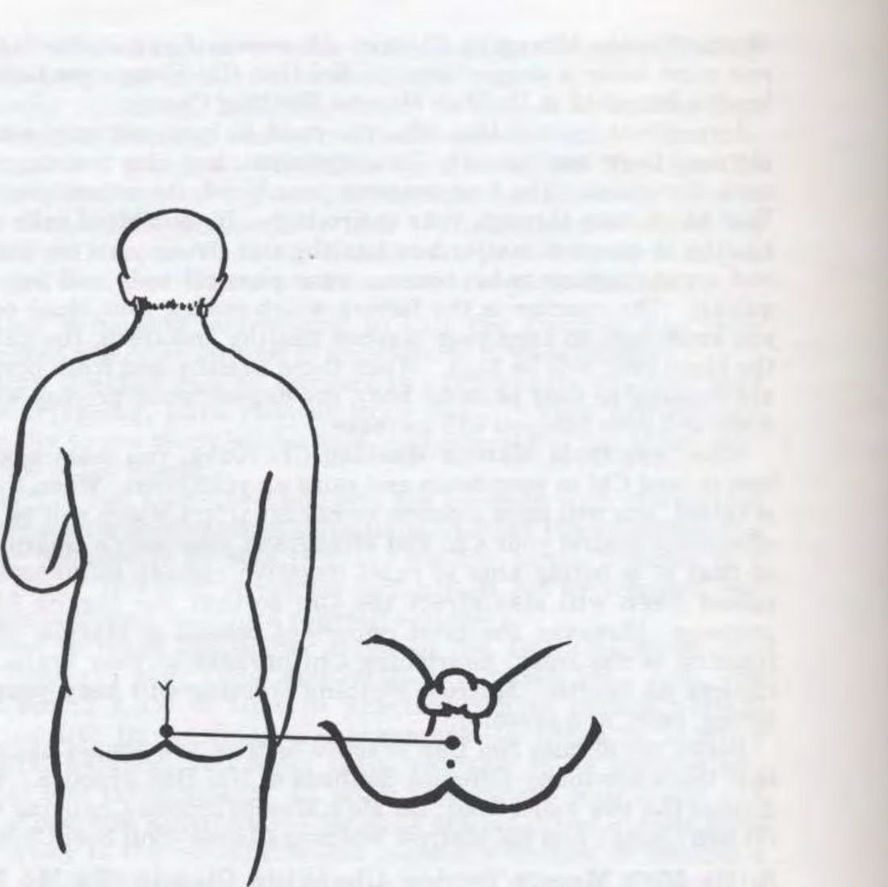
Có nhiều cách để Khí có thể vận hành trong thân thể qua Tiểu Chu Thiên. Tuy nhiên, có hai cách chính thường được luyện tập: "Đường Lửa" (Fire Path) và "Đường Gió" (Wind Path).
a. Đường Lửa (Fire Path)
Đường Lửa là cách Khí vận hành tự nhiên trong thân thể con người. Khí đi xuống theo Nhâm mạch (Ren Mei) và đi lên theo Đốc mạch (Du Mei) (Hình 6-2). Nhâm mạch được coi là Âm (negative), và chạy xuống dọc theo chính giữa mặt trước thân thể. Đốc mạch được coi là Dương (positive). Nó chạy từ Hội Âm, nơi nó nối với Nhâm mạch, đi lên dọc theo mặt ngoài của xương sống tới sau gáy, vượt qua đầu tới đỉnh bên trong miệng nơi nó nối với Nhâm mạch trên lưỡi.

Thông thường, Khí Hậu Thiên (Post-birth Chi), tức Khí Lửa (Fire Chi), được chuyển hóa từ Tinh (Jieng) của thức ăn và không khí trong "Tam Tiêu" (Sanjiou, triple burner). Sau khi Khí này được chuyển hóa, nó được lưu trữ ở Trung Đan Điền (Middle Dan Tien). Khí này đi xuống Hạ Đan Điền và hòa với Khí Thủy (Water Chi). Khí đã hòa ấy đi xuống Hội Âm, và tại Hội Âm nó chia thành hai dòng Khí. Một dòng đi vào Xung mạch (Thrusting Vessel, Chong Mei) trong tủy của xương sống và đi lên để nuôi dưỡng não. Đường này được coi là "Đường Thủy" (Water Path) và là đường được luyện trong Khí Công Tẩy Tủy. Đường Thủy sẽ được bàn sau. Dòng thứ hai đi qua Hội Âm và đi lên lưng theo Đốc mạch (dọc theo mặt ngoài xương sống), vượt qua đỉnh đầu và cuối cùng nối với Nhâm mạch để hoàn thành chu trình. Đường thứ hai này là "Đường Lửa".
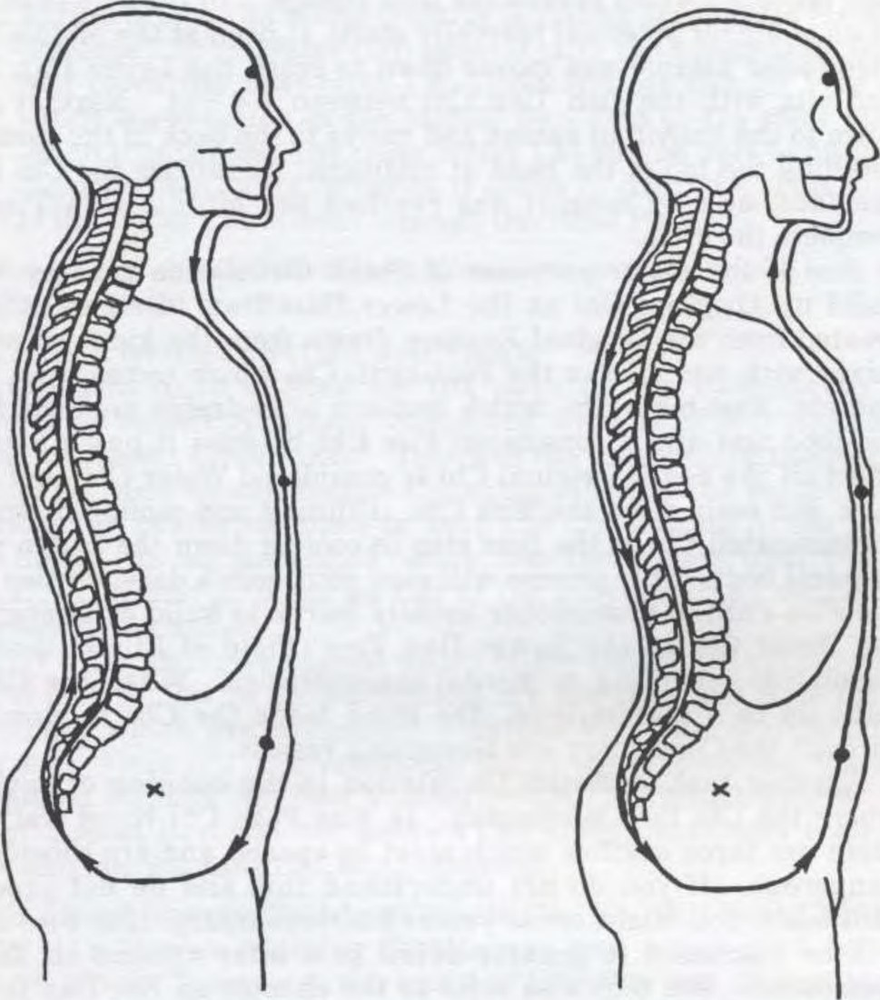
Khi Khí vận hành qua Đường Lửa, luôn có một đoạn của đường này mà mức Khí cao hơn những nơi khác, và vùng này vận hành quanh đường ấy đều đặn trong hai mươi bốn giờ. Chính vùng có thế năng Khí cao hơn này giữ cho Khí chảy. (Tôi tin rằng thế năng này được tạo ra bởi việc Trái Đất quay trong từ trường của Mặt Trời.) Giống như nước chỉ chảy từ chỗ cao xuống chỗ thấp, Khí chỉ di chuyển từ nơi có thế năng cao tới nơi có thế năng thấp hơn. Trong y học Trung Hoa, nơi có thế năng cao hơn này được gọi là "Tzyy Wuu Liou Juh". Tzyy chỉ hai giờ giữa 11 giờ đêm và 1 giờ sáng, và Wuu chỉ khoảng thời gian từ 11 giờ sáng tới 1 giờ chiều. Liou nghĩa là "chảy", và Juh nghĩa là "xu hướng". Vậy Tzyy Wuu Liou Juh có nghĩa là "xu hướng vận hành Khí chính đi theo sự thay đổi của thời gian". Trong Đường Lửa, nơi có thế năng cao hơn thường bắt đầu vào buổi trưa tại Trung Đan Điền (đám rối thái dương) và đi xuống để tới Hạ Đan Điền và hòa với Khí Đan Điền trong khoảng 2–4 giờ chiều. Tiếp theo, nó đi xuống Hội Âm vào lúc hoàng hôn và di chuyển ra sau lưng vào buổi tối, tới đỉnh đầu vào lúc nửa đêm. Vào lúc mặt trời mọc, Khí ở trên mặt, và tới buổi trưa nó đã tới Trung Đan Điền để hoàn thành chu trình.
Một trong những mục đích chính của việc luyện Tiểu Chu Thiên là tích tụ Nguyên Khí (Original Chi) ở Hạ Đan Điền. Nguyên Khí được tạo ra từ Nguyên Tinh (Original Essence) rút ra từ thận, chất này hòa với và pha loãng Khí Hậu Thiên đến từ thức ăn và không khí. Khí Hậu Thiên, vốn chứa những sản phẩm không mong muốn từ thức ăn và không khí, được coi là Khí Lửa vì nó có tác dụng làm nóng thân thể. Nguyên Khí được coi là Khí Thủy, và nó tinh khiết và làm nguội Khí Lửa. Pha loãng và làm nguội Khí đã bị nhiễm ô là bước đầu tiên trong việc làm nguội ngọn lửa trong thân thể bạn. Quá trình này sẽ làm chậm sự suy thoái của thân thể bạn. Trong Đường Lửa, người tập thường học cách tích tụ hay tăng cường Khí Thủy của mình ở Hạ Đan Điền (Đan Điền, Field of Elixir) thông qua thở bụng hay tập trung ý thức. Khi Khí được tích tụ tới một mức nhất định, tâm dẫn Khí vận hành qua Nhâm mạch và Đốc mạch.
Một nhiệm vụ khác trong Tiểu Chu Thiên là khai mở những huyệt đạo nơi dòng Khí chảy chậm chạp. Trong luyện Khí Công Đường Lửa, có ba huyệt đạo phải được khai mở và được coi là nguy hiểm. Nếu bạn không hiểu điều này và không tiến hành một cách thận trọng, bạn có thể tự gây cho mình thương tích nghiêm trọng. Đường Lửa sẽ được bàn kỹ hơn trong một cuốn sách sau về thiền Đạo gia.
b. Đường Gió (Wind Path)
Nói chung, Đường Gió của sự vận hành Khí không phổ biến bằng Đường Lửa. Vì nó vận hành Khí theo hướng ngược với dòng chảy bình thường, nhiều người luyện Khí Công tin rằng nó sẽ làm rối loạn sự vận hành Khí tự nhiên và gây ra vấn đề. Có rất ít tài liệu bàn về đường này. Tuy nhiên, một số tài liệu bàn về một phần của chu trình trọn vẹn, thường là từ Hạ Đan Điền lên Trung Đan Điền, và nhiều người luyện Khí Công đã luyện nó.
Trong phần này của sự vận hành Khí theo Đường Gió, một khi Nguyên Khí đã được tích tụ ở Đan Điền, người tập dẫn nó đi lên để vận hành theo hướng ngược với hướng được luyện trong Đường Lửa (Hình 6-3). Thông thường, điều này được luyện khi bạn đã hoàn thành Tiểu Chu Thiên Đường Lửa của mình. Có hai lý do để vận hành Đường Gió:
- Để làm chậm sự vận hành Khí tự nhiên trong Nhâm mạch và Đốc mạch bằng cách vận hành Khí ngược dòng. Nếu dòng Khí trong Đường Lửa của bạn quá Dương vì hưng phấn, thương tích, bệnh tật, hay thậm chí vì ăn thức ăn kém chất, thì toàn thân bạn sẽ trở nên quá Dương khi Khí này được phân phối qua mười hai kinh mạch Khí. Khí Dương này sẽ làm tổn hại các cơ quan của bạn, và khiến tâm bạn hưng phấn và tán loạn. Đường Gió có thể điều tiết Khí vận hành trong Đường Lửa của bạn, và tái lập quân bình Khí trong thân thể bạn.
- Một việc luyện Khí Công quan trọng là nâng Khí Tiên Thiên (Pre-birth Chi, tức Khí Tinh hay Khí Thủy) được sinh ra ở Hạ Đan Điền lên để làm nguội Khí Hậu Thiên (Khí của thức ăn và không khí, tức Khí Lửa) được sinh ra ở Trung Đan Điền tại đám rối thái dương. Khi làm được điều này, Khí Thủy trong sạch sẽ có thể pha loãng Khí Lửa đã bị nhiễm ô trước khi nó bắt đầu vận hành. Việc nâng Khí Thủy này được thực hiện qua Đường Gió.
Sự vận hành theo Đường Gió sẽ được bàn chi tiết hơn trong một cuốn sách sau về thiền Đạo gia.
II. Đại Chu Thiên (Dab Jou Tian — Large Circulation)
Sau khi bạn đã khai mở đường đi của Nhâm mạch và Đốc mạch, bạn đã hoàn thành cái được gọi là "Sheau Jou Tian", hay "Tiểu Chu Thiên". Đây là bước đầu tiên trong phần Nội Đan của Dịch Cân Kinh của Đạt Ma. Bước thứ hai là khai mở mười hai kinh để giữ cho Khí chảy trong các cơ quan và các chi. Như đã nói trước đó, Nội Đan khác với Khí Công Ngoại Đan ở chỗ nó tích tụ Khí trong thân thể rồi vận hành nó ra ngoài tới các chi.
Chỉ sau khi bạn đã khai mở toàn bộ mười hai kinh và Khí có thể chảy tới các đầu chi, bạn mới được bảo vệ khỏi những tắc nghẽn Khí gắn với các bài luyện cơ — gân của Ngoại Đan. Một khi bạn đã hoàn thành Đại Chu Thiên, bạn đã hoàn thành việc luyện Khí Công Nội Đan của Đạt Ma. Việc luyện tập này phải được hoàn tất trước khi một người luyện Khí Công bắt đầu luyện Khí Công Tẩy Tủy của Đạt Ma.
B. Tẩy Tủy Kinh của Đạt Ma (Da Mo Shii Soei Ching)
Tẩy Tủy Kinh của Đạt Ma được giữ kín cho tới chỉ mười năm gần đây. Nó giải thích bí mật của trường thọ và của việc đạt tới mục tiêu giác ngộ và thành Phật. Cả lý thuyết lẫn việc luyện tập đều sâu xa. Thông thường, chỉ những người hiểu thấu đáo lý thuyết luyện tập Khí Công và có nhiều năm kinh nghiệm Khí Công, đặc biệt là về Dịch Cân Kinh của Đạt Ma, mới được dạy Tẩy Tủy Kinh.
Tên Hán của tác phẩm là "Shii Soei Ching". Shii nghĩa là "rửa, giữ cho sạch và tươi mới". Soei nghĩa hai điều: tủy, được gọi là "Guu Soei", và não, được gọi là "Nao Soei". Ching là một luận thuyết hay kinh điển. Bạn có thể thấy từ đây rằng mục tiêu chính của Shii Soei Ching là rửa tủy xương và não và giữ chúng sạch và tươi mới.
Nói chung, Tẩy Tủy có hai mục đích chính: trường thọ, và giác ngộ hay thành Phật. Người tại gia thường hướng tới trường thọ, trong khi các tu sĩ tìm cầu giác ngộ hay thành Phật như đỉnh cao của việc luyện tập theo Đạo gia hay Phật giáo của họ. Chúng ta sẽ bàn ngắn gọn về hai mục đích này ở đây.
1. Trường thọ
Theo y học Trung Hoa, thân thể bạn suy thoái khi bạn già đi chủ yếu vì máu của bạn mất khả năng nuôi dưỡng và bảo vệ thân thể. Tủy xương của bạn sản xuất các tế bào hồng cầu và một loại tế bào bạch cầu, nhưng khi bạn già đi, tủy trở nên "bẩn", và sản xuất ngày càng ít tế bào máu hữu ích. Tuy nhiên, nếu bạn biết cách "rửa" tủy, nó sẽ bắt đầu sản xuất trở lại những tế bào máu tươi mới, khỏe mạnh. Thân thể bạn sẽ bắt đầu tự trẻ hóa, và khôi phục lại sức khỏe rạng rỡ của tuổi trẻ.
Bạn nên hiểu rằng để sản xuất những tế bào máu khỏe mạnh, tủy phải sống động, tươi mới (sạch) và hoạt động tích cực. Để giữ cho tủy được tươi mới, sống động và hoạt động đúng, Khí phải dồi dào và được cung cấp liên tục. Bất cứ khi nào thiếu Khí, tủy sẽ không hoạt động bình thường. Trong Khí Công Tẩy Tủy, trước tiên bạn phải học cách làm đầy "tám mạch Khí kỳ kinh" bằng Khí. Những mạch này là những bể chứa Khí của bạn. Với nhiều Khí được lưu trữ trong đó, bạn sẽ có đủ Khí để cung cấp cho các cơ, các cơ quan và tủy của mình. Để làm đầy các bể chứa, bạn phải học cách chuyển hóa Tinh của mình thành Khí một cách hiệu quả. Bạn cũng phải học cách gia tăng Tinh của mình để có đủ nguyên liệu chuyển hóa thành Khí. Tinh giống như nhiên liệu, Khí giống như năng lượng được sinh ra, và tủy xương là nhà máy. Với nguồn năng lượng được cung cấp dồi dào, dây chuyền sản xuất các tế bào máu sẽ khỏe mạnh. Khi những tế bào máu tươi mới và khỏe mạnh được vận hành khắp thân thể bạn, chúng sẽ thực hiện nhiệm vụ của mình một cách hiệu quả. Điều này sẽ làm chậm sự suy thoái của thân thể bạn để nó bền lâu hơn nhiều. Nó giống như việc chạy một chiếc xe đắt tiền bằng nhiên liệu chất lượng tốt — chiếc xe sẽ chạy hiệu quả hơn và bền lâu hơn nhiều.
2. Giác ngộ
Đối với các tu sĩ Trung Hoa, Tẩy Tủy chỉ là một bước cần thiết để đạt tới mục tiêu cuối cùng là giác ngộ hay thành Phật. Để đạt mục đích này, Khí phải được dẫn lên qua tủy trong xương sống để nuôi dưỡng não. Khi não được nuôi dưỡng, Thần cũng được nuôi dưỡng, và nó sẽ lớn mạnh không ngừng cho tới khi có thể đạt tới mục tiêu cuối cùng là sự độc lập tâm linh.
Theo khoa học y học Trung Hoa, Xung mạch (Chong Mei, Thrusting Vessel) là bể chứa Khí chính cung cấp Khí cho não. Xung mạch nằm trong tủy của xương sống. Vì vậy, để có nhiều Khí liên tục nuôi dưỡng não và Thần, bể chứa Xung mạch phải được giữ đầy.
Bạn có thể thấy rằng Tẩy Tủy mang tính tôn giáo tập trung vào tủy xương sống. Tuy nhiên, để có sức khỏe tốt và trường thọ, bạn phải rửa tủy trong tất cả các xương để mọi nhà máy sản xuất tế bào máu đều hoạt động đúng. Nhiều kỹ thuật đã được những người luyện Khí Công phát triển để đạt mục đích này. Tuy nhiên, công trình nghiên cứu hoàn chỉnh và sâu sắc nhất cả về lý thuyết lẫn luyện tập được ghi công cho các đạo sĩ Đạo gia. Từ thời cổ xưa, các đạo sĩ Đạo gia đã luyện Khí Công cho cả trường thọ lẫn giác ngộ.
Đừng nghĩ rằng không có lợi ích gì cho sức khỏe và trường thọ khi Khí được dẫn lên để nuôi dưỡng não và nâng Thần lên. Thực tế, não và tinh thần của bạn là trung tâm và bộ chỉ huy của toàn bộ con người bạn. Khi não bạn khỏe mạnh, bạn sẽ có thể suy nghĩ sáng suốt. Bạn cần có một bộ não khỏe mạnh nếu bạn muốn một thân thể khỏe mạnh. Theo cùng cách, Thần của bạn là trung tâm điều khiển Khí của bạn. Khi tinh thần bạn cao, Khí có thể được dẫn hiệu quả tới mọi nơi trong thân thể, nhưng khi tinh thần bạn thấp, mức năng lượng của bạn sẽ thấp và Khí sẽ không vận hành thông suốt.
Nói chung, có ba bước trong việc luyện Khí Công Tẩy Tủy:
1. Gia tăng Tinh
Tinh được chuyển hóa thành Khí trong Tẩy Tủy không chủ yếu đến từ thận, mà đến từ các cơ quan sinh dục (tinh hoàn ở nam và buồng trứng ở nữ). Tinh ở đây có nghĩa là các nội tiết tố. Nhiều cách đã được phát triển để gia tăng Tinh này.
2. Chuyển hóa Tinh thành Khí
Có hai mạch hay hai bể chứa Khí ở hai chân bạn được gọi là "Yinchaio Mei". Nguồn Khí chính của chúng là Tinh đến từ các cơ quan sinh dục của bạn. Khi Khí trong những mạch này được rút ra, nhiều Khí hơn sẽ tự động được chuyển hóa. Vì vậy, bạn phải biết cách rút Khí từ những bể chứa này. Việc này được làm ở bước tiếp theo.
3. Thăng hoa Khí lên trên
Điều này có nghĩa là dẫn Khí của bạn đi lên vào Xung mạch (Chong Mei, Thrusting Vessel) để rửa tủy xương sống, rồi vào não để nuôi dưỡng não và nâng Thần lên.
Bạn có thể thấy rằng những quá trình bàn ở trên bao gồm "chuyển hóa Tinh thành Khí" (Liann Jieng Huah Chi — luyện Tinh hóa Khí) và "dùng Khí nuôi dưỡng Thần" (Liann Chi Huah Shen — luyện Khí hóa Thần). Còn hai bước nữa để đạt tới mục tiêu cuối cùng là giác ngộ. Hai bước ấy là: "luyện Thần hoàn Hư" (Liann Shen Huan Shiu — luyện Thần hoàn Hư, tức tinh luyện Thần và đi vào cõi Không) và "phá tan cõi Không" (Feen Suory Shiu Kong — phấn Toái Hư Không).
Đường Thủy
Bây giờ bạn đã có chút khái niệm về việc luyện Khí Công Tẩy Tủy, đã đến lúc bàn về đường thủy của sự vận hành Khí trong Khí Công. Khí Công Đường Thủy, vốn đi qua tủy của xương sống, là một trong những tầng cao của việc luyện Khí Công. Một khi bạn đã tích tụ Khí Tiên Thiên của mình ở Đan Điền, bạn dùng tâm trí và sự luyện tập đặc biệt để dẫn Khí vào nhánh của Xung mạch (Chong Mei, Thrusting Vessel) nằm trong tủy của xương sống (Hình 6-4). Đường thủy, vốn được dùng trong Tẩy Tủy, dùng Khí Thủy sinh ra từ Hạ Đan Điền, nhưng nó cũng sinh Khí qua một phương pháp khác, ví dụ bằng cách dùng các cơ quan sinh dục như đã nói ở trên.
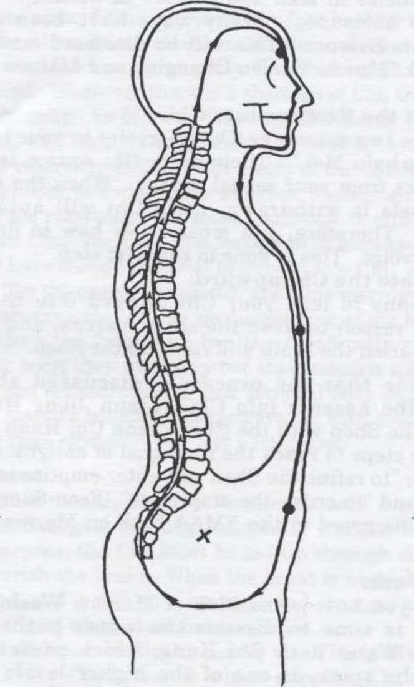
Người bình thường vốn đã có một phần vận hành Khí trên đường thủy để nuôi dưỡng não. Vào buổi tối, khi sự vận hành Khí mạnh nhất ở Hội Âm, nó chia thành hai dòng. Một dòng vận hành trên đường lửa ở bên ngoài xương sống, và dòng kia đi qua tủy của xương sống và đi lên để nuôi dưỡng não và Thần. Điều này thường xảy ra vào lúc nửa đêm khi bạn đang ngủ. Khoảng giữa nửa đêm và sáng sớm, Khí cũng chảy tới vùng háng để tiếp năng lượng cho vùng này và kích thích việc sinh nội tiết tố và tinh dịch (Jieng, tức Tinh). Một phần chính của Khí Công Tẩy Tủy là gia tăng hiệu quả của việc chuyển hóa tinh dịch thành Khí và dẫn nó đi nuôi dưỡng não và tiếp năng lượng cho Thần (tinh thần). Tâm trí được tiếp năng lượng khi ấy có thể điều chỉnh mức Khí trong các cơ quan và những phần khác của thân thể. Việc luyện Khí Công này khó làm, nhưng một khi đã đạt được sự thành thạo, việc luyện tập là hiệu quả nhất. Người ta nói rằng những tu sĩ đạt tới tầng này có thể làm chậm quá trình lão hóa tới mức tối thiểu, và một số có thể sống hơn hai trăm năm.
Khái Niệm Chung Về Luyện Tập
PHẦN HAI — NHỮNG ĐIỂM THEN CHỐT CHUNG CHO VIỆC LUYỆN TẬP KHÍ CÔNG
7-1. Giới thiệu
Khi một người bình thường đi đến một vườn táo, thường thì anh ta chỉ chú ý đến quả. Nếu anh ta đến một vườn ươm, anh ta sẽ chỉ để ý đến vẻ đẹp và hương thơm của hoa. Ít ai nghĩ rằng quả và hoa chỉ là kết quả của rất nhiều công phu hoạch định, chuẩn bị và làm việc vất vả. Cũng theo cách ấy, khi hầu hết mọi người nhìn thấy thành công của một người khác, ít ai dừng lại để nghĩ xem tại sao người đó có thể thành công đến vậy. Người Trung Hoa có câu: "Hữu quả tất hữu nhân," và "Muốn gặt lúa thì trước phải trồng lúa." Bạn phải biết mình muốn gì và hoạch định cách để đạt được điều đó. Không có điều này thì không có sự khởi đầu. Tiếp theo, dự án của bạn phải được kiên nhẫn nuôi dưỡng, tưới tắm và bảo vệ. Nếu cái gốc không được nuôi dưỡng và bảo vệ, cây sẽ không lớn mạnh, và vụ mùa sẽ không bội thu.
Việc luyện tập Khí Công không khác lắm so với việc trồng một cái cây. Để cây Khí Công sinh trưởng tốt và cho một vụ mùa sung mãn, bạn phải gieo một hạt giống khỏe mạnh. Điều này có nghĩa là trước tiên bạn phải nghiên cứu về những loại cây khác nhau để biết cách chọn một hạt giống sẽ mọc lên thành đúng loại cây mà bạn muốn. Trong Phần Một, chúng tôi đã bày ra trước mắt bạn tất cả các hạt giống để bạn có thể hiểu được nền tảng của các phạm trù luyện tập Khí Công khác nhau. Tiếp theo, bạn phải học cách gieo hạt, tưới nước, bảo vệ và làm cho nó lớn lên. Nếu bạn nuôi dưỡng và bảo vệ nó, cái gốc của cây sẽ lớn mạnh, và bạn có thể trông đợi một vụ mùa tốt. Nếu cái gốc yếu ớt, cây Khí Công của bạn sẽ héo hon và chết.
Mục đích của Phần Hai là chỉ cho bạn cách gieo hạt, nuôi dưỡng và bảo vệ nó. Bạn nên hiểu rằng dù bạn đang trồng loại cây nào, thì lý thuyết và phương pháp chung để làm cho cây sinh trưởng khỏe mạnh vẫn không đổi. Bạn luôn cần ánh nắng, nước, đất tốt, phân bón và sự bảo vệ khỏi côn trùng, và bạn luôn cần biết trồng hạt giống ở đâu và vào lúc nào.
Có năm điều mà bạn phải biết để làm cho cây Khí Công của mình sinh trưởng tốt. Đó là: điều chỉnh thân (Điều Thân – Tyau Shenn), điều chỉnh hơi thở (Điều Tức – Tyau Shyi), điều chỉnh tâm (Điều Tâm – Tyau Hsin), điều chỉnh Khí (Điều Khí – Tyau Chi), và điều chỉnh Thần (Điều Thần – Tyau Shen). Bạn cũng cần biết chúng tương quan với nhau như thế nào. Đây là nền tảng của sự luyện tập Khí Công thành công. Không có nền tảng này, sự hiểu biết và việc luyện tập Khí Công của bạn sẽ chỉ còn ở mức hời hợt.
Điều này cho bạn một ý niệm về chữ "Như thế nào" trong luyện tập Khí Công. Tuy nhiên, biết "Như thế nào" vẫn chưa đủ. Nó chỉ cho bạn lý thuyết và nguyên lý của việc luyện tập đã được những người luyện Khí Công trước đây phát triển. Đi theo con đường cũ có thể dẫn bạn đến thành công lớn trong luyện tập Khí Công, nhưng nó sẽ không giúp bạn phát triển Khí Công thêm nữa. Để làm được điều này, bạn không những phải biết "Như thế nào," mà còn phải biết "Tại sao." Một người nông dân có thể biết "Như thế nào" để trồng táo giỏi, nhưng chỉ người nào hiểu được "Tại sao" của tất cả những điều đó mới có thể cải tiến kỹ thuật trồng trọt hoặc phát triển những giống táo mới. Trong luyện tập Khí Công cũng vậy, bạn muốn trở thành một nhà thực vật học Khí Công chứ không chỉ là một người nông dân Khí Công. "Tại sao" và "Như thế nào" là gốc rễ của sự hiểu biết. Chúng là lý thuyết và nguyên lý của việc học.
Có được sự hiểu biết về "Tại sao" của việc luyện tập là đặc biệt quan trọng khi bạn chỉ vừa mới bắt đầu. Nó cho phép bạn đưa ra một sự lựa chọn sáng suốt về phong cách nào là tốt nhất cho mình, và vì bạn đã có một ý niệm rõ ràng về nơi mình đang đi tới, bạn có thể tự tin, kiên nhẫn và đủ ý chí mạnh mẽ để hoàn tất việc luyện tập.
Phần còn lại của chương này sẽ bàn về những phần then chốt của việc luyện tập Khí Công, chẳng hạn như cách xây dựng Khí và tầm quan trọng của Kan và Lii. Các chương từ 8 đến 13 sẽ bàn về những điểm then chốt chung của việc luyện tập Khí Công, chẳng hạn như cách điều chỉnh thân, hơi thở, tâm cảm xúc, Tinh, Khí và Thần. Cuối cùng, Chương 14 sẽ điểm lại một số điểm quan trọng trong luyện tập Khí Công.
7-2. Xây Dựng Khí
Trước khi chúng ta đi xa hơn trong việc bàn về những điểm then chốt của luyện tập Khí Công, bạn nên hiểu trước Khí được sinh ra trong cơ thể mình như thế nào. Nói chung, Khí được sinh ra hoặc chuyển hóa một cách tự nhiên và tự động từ những Tinh chất bên trong cơ thể bạn. Những Tinh chất này bao gồm Nguyên Tinh di truyền, thứ tạo nên Thủy Khí, và Tinh chất từ thức ăn và không khí, thứ được chuyển hóa thành Hỏa Khí. Sự sinh Khí tự nhiên này là nguồn sống chính của bạn. Nếu bạn ăn nhiều hơn mức cần thiết và không bài tiết phần thừa, Tinh chất thức ăn dư thừa sẽ được dự trữ trong cơ thể bạn dưới dạng mỡ. Nếu bạn không ăn đủ để cung cấp cho nhu cầu năng lượng hằng ngày, Tinh chất thức ăn dự trữ dưới dạng mỡ sẽ được chuyển hóa thành Khí.
Khi bạn luyện tập Khí Công, bạn nhắm tới việc xây dựng Khí trong cơ thể mình, tăng hiệu quả của việc chuyển hóa Tinh thành Khí, và tăng độ thông suốt của sự tuần hoàn Khí. Để tăng độ thông suốt của sự tuần hoàn, bạn phải nâng cao mức Khí và tạo ra thế năng Khí. Khi có sự khác biệt về thế năng, Khí sẽ chảy từ vùng có thế năng cao hơn đến vùng có thế năng thấp hơn, nhờ đó làm tăng sự tuần hoàn. Điều này cũng sẽ khai thông những chỗ tắc nghẽn cản trở dòng chảy của Khí.
Có nhiều cách để xây dựng Khí trong cơ thể. Việc phân tích các phương pháp luyện Khí Công mà tác giả được biết cho thấy rằng có thể chia các phương pháp xây dựng Khí thành bốn phạm trù: 1. kích thích thể chất, 2. kích thích tinh thần, 3. tiếp năng lượng cho Thần, và 4. các cách khác.
1. Kích thích thể chất
Kích thích thể chất có lẽ là phương pháp xây dựng Khí dễ nhất và cơ bản nhất. Lý thuyết rất đơn giản. Mỗi khi bạn cử động, bạn cần Khí để tiếp năng lượng cho các bắp thịt. Nếu bạn cử động liên tục trong một thời gian dài, Khí sẽ phải được cung cấp liên tục cho các bắp thịt. Để tiếp tục cung cấp Khí, cơ thể bạn phải liên tục chuyển hóa Tinh chất dự trữ trong cơ thể thành Khí. Bạn càng vận động nhiều, càng nhiều Khí được chuyển hóa, và càng nhiều Khí được xây dựng trong vùng mà bạn đang vận động. Một khi bạn ngừng vận động, một phần Khí tích tụ này sẽ tán ra không khí qua da của bạn, và phần còn lại sẽ chảy vào trong cơ thể để làm tăng sự tuần hoàn Khí trong các kinh mạch.
Chúng tôi muốn nhắc bạn rằng nếu bạn vận động quá mức một vùng nào đó, Khí của bạn có thể trở nên quá dương. Khi Khí này tràn vào các kinh mạch, nó có thể làm cho các nội tạng của bạn quá dương, và đẩy nhanh sự thoái hóa của chúng. Điều này đôi khi thấy ở những người tập cử tạ nhiều. Tuy nhiên, nếu bạn vận động đúng cách, Khí sẽ tuần hoàn thông suốt và các tạng phủ của bạn sẽ chỉ nhận được lượng Khí thích hợp. Những người vận động đúng cách và đều đặn thường khỏe mạnh hơn những người không vận động.
Như đã bàn trong chương sáu, những bài tập xây dựng Khí ở các chi được gọi là Ngoại Đan. Các bài tập Khí Công Ngoại Đan rất đơn giản. Chúng gần như giống bất kỳ bài tập nào phổ biến ở thế giới phương Tây. Chỉ có hai điểm khác biệt: một là khi luyện tập bạn phải tập trung tâm trí vào vùng đang được luyện, và hai là các động tác được thiết kế cho những mục đích đặc biệt như điều chỉnh các tạng phủ cụ thể. Bạn nên hiểu rằng chính tâm trí bạn dẫn Khí đến vùng đang được luyện. Khi bạn tập trung, bạn có thể xây dựng và làm lưu thông Khí hiệu quả hơn so với khi bạn không tập trung. Điều này đặc biệt đúng ngay sau khi vận động, khi bạn đang thư giãn. Khi các bắp thịt của bạn thư giãn và mềm mại, các kinh mạch mở rộng. Nếu bạn tập trung và dùng Ý để dẫn Khí mà bạn đã xây dựng được vào cơ thể, phối hợp với các nhịp hít vào, bạn sẽ có thể giảm lượng Khí tán vào không khí, và Khí có thể nuôi dưỡng cơ thể bạn hiệu quả hơn.
Hãy thử bài thực nghiệm sau. Nó sẽ giúp bạn hiểu được điểm then chốt của việc xây dựng và làm lưu thông Khí. Đây là một bài tập Ngoại Đan rất đơn giản gọi là "Goong Shoou," có nghĩa là "Vòng Tay." Bài tập này phát xuất từ Thái Cực, nơi nó được luyện tập rất rộng rãi. Nó mang đến cho người mới học Khí Công một cách đơn giản để cảm nghiệm dòng chảy của Khí.
Đối với bài tập này, hãy đứng với một chân bám chắc vào đất và chân kia đặt phía trước, chỉ có các ngón chân chạm đất. Hai cánh tay giữ trước ngực, tạo thành một vòng tròn nằm ngang, với các đầu ngón tay gần như chạm nhau (Hình 7-1). Lưỡi nên chạm vào vòm miệng để nối liền các mạch Khí Âm và Dương (tương ứng là Nhâm mạch và Đốc mạch). Tâm trí nên tĩnh lặng và thư giãn, tập trung vào hai vai; hơi thở nên sâu và đều.
Khi bạn đứng ở tư thế này khoảng ba phút, hai cánh tay và một bên lưng của bạn sẽ cảm thấy ê ẩm và nóng. Bởi vì hai cánh tay được giữ duỗi ra, các bắp thịt và thần kinh bị căng thẳng. Khí sẽ tích tụ ở vùng này và nhiệt sẽ được sinh ra. Ngoài ra, bởi vì một chân mang toàn bộ trọng lượng, các bắp thịt và thần kinh ở chân đó và ở một bên lưng sẽ căng và nhờ đó xây dựng Khí. Vì Khí này được xây dựng ở vai và chân chứ không phải ở Đan Điền, nó được coi là "Khí cục bộ" hay "Khí Ngoại Đan." Để giữ cho sự tích tụ Khí và dòng chảy ở lưng được cân bằng, sau ba phút hãy đổi chân mà không di chuyển hai cánh tay và đứng như vậy thêm ba phút nữa. Sau sáu phút, hãy đặt cả hai bàn chân phẳng trên sàn, cách nhau bằng vai, và từ từ hạ hai cánh tay xuống. Khí tích tụ khi đó sẽ chảy vào hai cánh tay bạn một cách tự nhiên và mạnh mẽ. Nó giống như một cái đập nước, sau khi tích tụ một lượng nước lớn, xả nước ra và để nó chảy đi. Lúc này, hãy tập trung và làm tĩnh lặng tâm trí và tìm cảm giác Khí chảy từ hai vai đến lòng bàn tay và các đầu ngón tay. Người mới học thường có thể cảm nhận dòng chảy Khí này, mà cảm giác điển hình là sự ấm nóng hoặc tê nhẹ.
Đương nhiên, khi bạn giữ hai cánh tay duỗi ra, bạn cũng đang làm chậm sự tuần hoàn máu, và khi bạn hạ tay xuống, máu sẽ ùa xuống bàn tay. Điều này có thể làm bạn lẫn lộn không biết điều mình cảm thấy là do Khí hay do máu. Bạn cần hiểu vài điều. Thứ nhất, bất cứ nơi nào có một tế bào máu sống, ở đó phải có Khí để giữ nó sống. Do đó, khi bạn thư giãn sau bài tập vòng tay, cả máu và Khí đều sẽ xuống bàn tay. Thứ hai, vì máu là vật chất còn Khí là năng lượng, Khí có thể chảy ra ngoài cơ thể bạn nhưng máu thì không thể. Vì vậy, bạn có thể kiểm tra xem bài tập có mang thêm Khí đến bàn tay mình hay không. Hãy đặt hai bàn tay ngay trước mặt. Bạn sẽ có thể cảm thấy một cảm giác nhẹ, và cảm giác đó phải đến từ Khí. Bạn cũng có thể giữ hai lòng bàn tay gần nhau, hoặc đưa một bàn tay lại gần cánh tay kia. Ngoài một cảm giác ấm nóng nhẹ, bạn cũng có thể cảm nhận một thứ như điện tích, khiến lông trên cánh tay bạn động đậy. Máu không thể gây ra những cảm giác này, nên chúng phải là những triệu chứng của Khí.
Đôi khi Khí được cảm thấy ở môi trên. Điều này là vì có một kinh mạch (Thủ Dương Minh Đại Trường Kinh) chạy qua đỉnh vai đến môi trên (Hình 7-2). Tuy nhiên, cảm giác thường mạnh hơn ở lòng bàn tay và các ngón tay so với ở môi, vì có sáu kinh mạch Khí đi qua vai để tận cùng ở bàn tay, nhưng chỉ có một kinh mạch nối liền môi và vai. Một khi bạn cảm nghiệm được Khí chảy trong hai cánh tay và hai vai trong bài tập này, bạn cũng có thể thấy rằng mình có thể cảm nhận nó ở lưng.
Bài tập này là một trong những bài luyện phổ biến nhất để dẫn người mới học cảm nghiệm dòng chảy của Khí, và một số phong cách Thái Cực rất chú trọng đến nó. Một loại bài tập Khí Công tương tự cũng được các phong cách khác luyện tập, chẳng hạn như Nhị Mai Đan Phái Công.
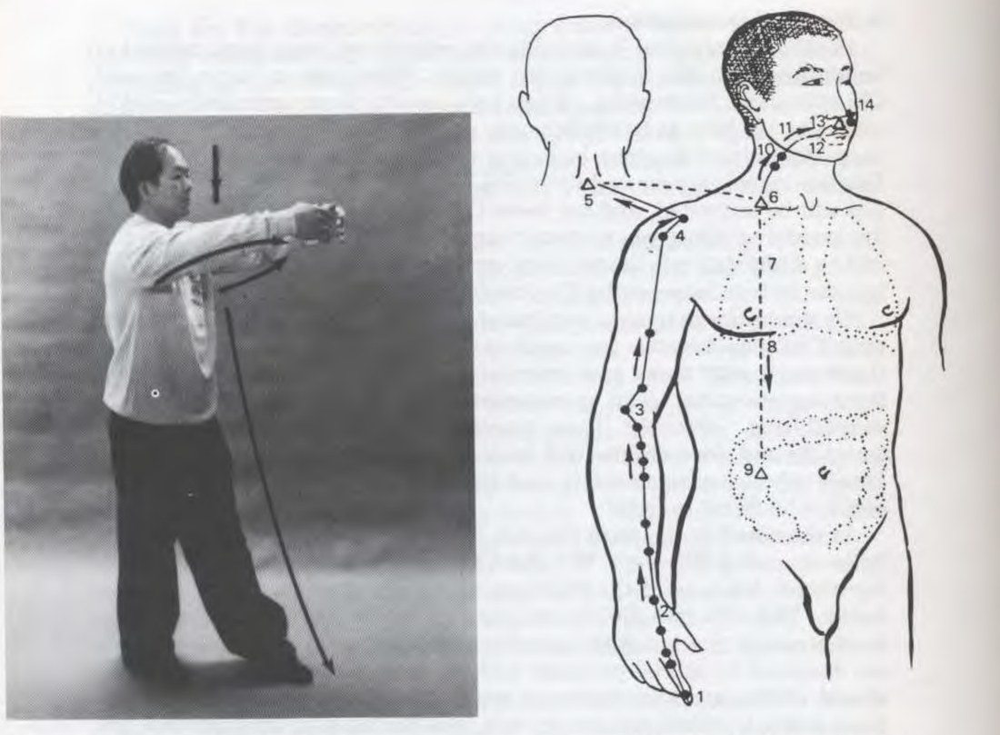
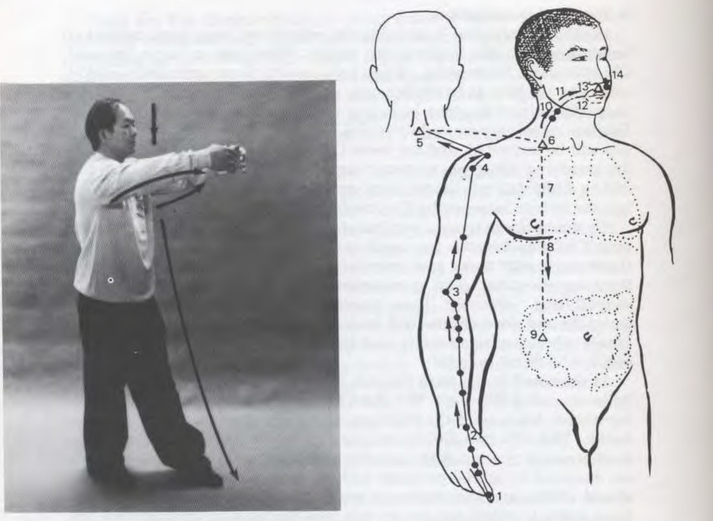
2. Kích thích tinh thần
Trong chương ba chúng ta đã bàn về cách cơ thể bạn có thể cử động. Chúng ta đã nói rằng để cử động, trước tiên bạn phải sinh ra một ý niệm. Ý niệm này sẽ dẫn Khí đến các bắp thịt để tiếp năng lượng cho chúng, để chúng thực thi mệnh lệnh từ não bộ của bạn. Bạn có thể thấy rằng tâm trí bạn đóng một vai trò quan trọng nhất trong việc luyện tập Khí Công. Người ta nói: "Ý dĩ ý dẫn Khí"(*1), nghĩa là "Dùng Ý (trí tuệ) của bạn để dẫn Khí của bạn." Hãy để ý chữ "DẪN." Khí phải được dẫn. Chữ "dẫn" có nghĩa là tâm trí bạn phải đi trước, và Khí của bạn sẽ tự nhiên theo sau. Nếu tâm trí bạn không đi trước Khí của bạn, Khí sẽ không được dẫn và các bắp thịt của bạn sẽ không được tiếp năng lượng.
Ví dụ, nếu bạn muốn đi từ một chỗ này sang một chỗ khác, trước tiên bạn phải sinh ra ý niệm đi đến chỗ thứ hai. Ý niệm này dẫn Khí đến các bắp thịt ở chân và tiếp năng lượng cho chúng. Nếu tâm trí bạn ở lại chỗ thứ nhất thay vì đi đến chỗ thứ hai, bạn sẽ không thể cử động. Bạn có thể thấy rằng chính tâm trí là thứ bạn phải kích hoạt trước tiên. Vì vậy, làm tĩnh lặng và tập trung tâm trí là một phần rất quan trọng của việc luyện tập Khí Công. BẠN CÀNG TẬP TRUNG ĐƯỢC NHIỀU BAO NHIÊU, Ý CỦA BẠN SẼ CÀNG MẠNH BẤY NHIÊU, VÀ ĐƯƠNG NHIÊN, KHÍ CỦA BẠN SẼ CHẢY CÀNG MẠNH.
Nói chung, việc xây dựng Khí chỉ bằng tâm trí mà không có cử động thể chất thì khó hơn nhiều so với việc dùng cả tâm trí lẫn cử động. Tuy nhiên, vì tâm trí quan trọng đến vậy trong luyện tập Khí Công, việc học cách điều chỉnh tâm trí đã trở thành một trong những môn luyện tập chính.
Việc xây dựng Khí bằng tinh thần được chia thành Ngoại Đan và Nội Đan. Trong Ngoại Đan, tâm trí tập trung vào các chi. Bạn phải tưởng tượng rằng mình đang thực hiện một động tác thích hợp để sinh ra ý niệm đúng đắn, vì ý niệm này sẽ dẫn Khí đến vùng đó. Sau khi bạn luyện tập vài phút, Khí sẽ được xây dựng ở vùng đó. Bạn càng tập trung mạnh, bạn càng có thể cảm thấy Khí nhiều hơn.
Hãy thử bài thực nghiệm này. Nó sẽ cho bạn cảm nhận về cách Khí có thể được xây dựng bằng suy nghĩ của bạn. Hãy giữ hai bàn tay trước người, ở vị trí mà bạn cảm thấy mình có thể đẩy xuống mạnh nhất (Hình 7-3). Toàn bộ cơ thể bạn phải giữ thư giãn, đặc biệt là hai vai và hai cánh tay. Hít vào thật sâu, và khi thở ra, hãy tưởng tượng rằng bạn đang đẩy hai bàn tay xuống chống vào một cái bàn. Đừng thực sự cử động cơ thể hay hai cánh tay, chỉ đứng yên với tất cả các bắp thịt thư giãn. Nếu bạn hoàn toàn tập trung vào việc mình đang làm, sau vài lần đẩy hai bàn tay bạn sẽ bắt đầu ấm lên, và bạn có thể nhận thấy một cảm giác như không khí thoát ra từ giữa lòng bàn tay. Cảm giác này sẽ biến mất khi bạn hít vào.
Cảm nhận Khí trong bài tập này khó hơn vì không có kích thích thể chất. Tuy nhiên, nếu bạn tập trung và thư giãn đủ, bạn sẽ sớm có thể cảm thấy có điều gì đó đang xảy ra trong lòng bàn tay mình. Đây là một bài thực nghiệm điển hình trong đó bạn dùng Ý của mình (ý niệm rằng bạn đang đẩy) để dẫn Khí đến lòng bàn tay. Bạn càng luyện tập, bạn càng có thể dẫn Khí đến lòng bàn tay mạnh hơn. Đương nhiên, đây chỉ là một bài thực nghiệm. Một người luyện Khí Công có kinh nghiệm có thể dẫn Khí đến bất kỳ phần nào trên cơ thể mình chỉ bằng cách nghĩ. Bài tập cụ thể này tất nhiên là Khí Công Ngoại Đan vì Khí được tích tụ ở các chi.
Trong việc sinh Khí bằng tinh thần theo Nội Đan, lý thuyết vẫn như cũ. Những điểm khác biệt là: thứ nhất, bạn phải tập trung tâm trí ở Hạ Đan Điền và xây dựng Khí ở đó, và thứ hai, bạn không tưởng tượng rằng mình đang cử động. Tuy nhiên, bạn có thể dùng một ý niệm khác, chẳng hạn như vùng Đan Điền của bạn đang bốc cháy. Tâm trí bạn phải ở lại Đan Điền cho đến khi bạn đã xây dựng được Khí. Việc luyện tập này được gọi là "Ý thủ Đan Điền"(*2) (giữ Ý của bạn trên Đan Điền của bạn). Bạn càng tập trung được nhiều, Khí sẽ được xây dựng càng nhanh và càng mạnh. Việc sinh Khí ở Đan Điền không có kích thích thể chất này là nguồn Khí cho phép tọa thiền của Phật giáo.
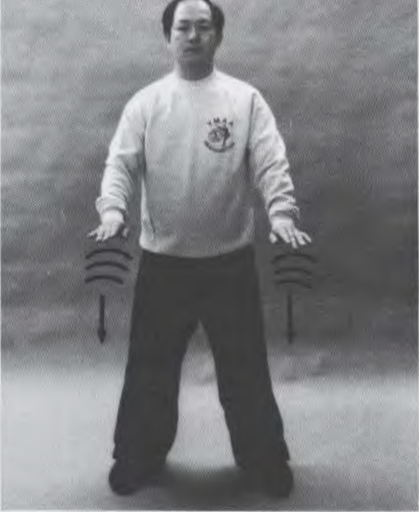
Đương nhiên, bài tập này khó hơn nhiều so với bài Ngoại Đan.
3. Tiếp năng lượng cho Thần
Khi bạn phấn khích vì hạnh phúc hay niềm vui, bạn thường cảm thấy cơ thể mình nóng lên. Điều này là vì bạn đã tiếp năng lượng cho tinh thần mình lên một trạng thái cao hơn, khiến cơ thể bạn quá dương, và tâm trí bạn đã điều Khí dư thừa đến da để tán nó đi, để cơ thể có thể lấy lại sự cân bằng năng lượng. Cũng theo cách ấy, khi bạn sợ hãi hoặc hồi hộp, cơ thể bạn trở nên quá âm và bạn có thể bắt đầu run rẩy. Cơ thể bạn khi đó sẽ tự động căng lên để không mất Khí qua da. Việc căng cơ thể làm hẹp các kinh mạch Khí và làm giảm sự tuần hoàn. Hiện tượng căng này cũng thường thấy vào mùa đông khi bạn cảm thấy lạnh và đang run. Nếu vào những lúc như vậy bạn thư giãn và thở ra trong khi dẫn Khí đến da, bạn sẽ có thể mở rộng Vệ Khí của mình và ngừng cảm thấy lạnh. Đương nhiên, bạn sẽ mất nhiều Khí hơn theo cách này và sẽ cần ăn nhiều hơn để bù lại nguồn dự trữ.
Bạn có thể đã đoán được rằng Khí của bạn liên hệ chặt chẽ với những cảm giác của bạn. Nhưng bạn cũng nên biết rằng những cảm giác của bạn được sinh ra từ tâm trí bạn và được điều khiển bởi tinh thần bạn. Trong luyện tập Khí Công, một trong những bài luyện quan trọng nhất là làm cho tinh thần mình ổn định và vững vàng. Điều này cho phép bạn kiểm soát được các cảm xúc của mình, và tránh những thái cực phấn khích hoặc suy sụp. Bạn cũng có thể xây dựng hoặc làm dịu Khí của mình bằng cách nâng cao hoặc làm lắng dịu tinh thần. Một trong những giai đoạn cuối cùng của luyện tập Khí Công liên quan đến việc dùng tinh thần của bạn để điều hành Khí trong cơ thể mình một cách hiệu quả.
Hãy nhớ lại những lần bạn mệt mỏi cả về thể chất lẫn tinh thần, và việc chìm vào giấc ngủ khi đó dễ dàng biết bao? Khi tâm trí bạn mệt mỏi, tinh thần bạn trở nên yếu ớt, và mất kiểm soát đối với cơ thể bạn. Cơ thể bạn tìm cách hồi phục khỏi sự mệt mỏi, và để Khí tự tái cân bằng — nghĩa là bạn ngủ thiếp đi để Ý của bạn tránh sang một bên và không can thiệp vào việc tái cân bằng. Tuy nhiên, nếu bạn đang phấn khích vì điều gì đó, hoặc đang lo lắng, tâm trí bạn sẽ không thư giãn, và Khí trong não bạn sẽ giữ cho tinh thần bạn ở mức cao.
Ví dụ, giả sử ở chỗ làm bạn được giao một dự án quan trọng phải hoàn thành trước một hạn chót nhất định. Hơn nữa, sếp của bạn hứa rằng bạn sẽ có một kỳ nghỉ hai tuần một khi công việc hoàn tất. Trong khi làm dự án, bạn không ngủ ngon được, bạn nghĩ về nó suốt, và bạn vừa lo lắng vừa phấn khích. Tâm trí bạn luôn bận rộn và tinh thần bạn liên tục ở trong trạng thái phấn khích cao độ. Bạn có thể thấy rằng dù mọi người khác trong văn phòng đều bị cảm cúm, bạn lại không bị. Cuối cùng, dự án hoàn tất và bạn có một kỳ nghỉ hai tuần. Mọi áp lực đều tan biến và cuối cùng bạn có thể thư giãn. Tuy nhiên, bạn thấy rằng khi bắt đầu kỳ nghỉ, bạn đột nhiên bị bệnh.
Đây là một hiện tượng phổ biến rất dễ giải thích theo các nguyên lý Khí Công. Khi bạn ở trong trạng thái phấn khích và hồi hộp, tinh thần bạn ở mức cao. Tinh thần điều hành Vinh Khí và Vệ Khí, và khi tinh thần ở mức cao, nó cho phép Vinh Khí điều hành cơ thể bạn rất hiệu quả, và nó xây dựng một tấm khiên Vệ Khí vững mạnh quanh cơ thể bạn, giúp bảo vệ bạn khỏi bệnh tật một cách hiệu quả. Tuy nhiên, một khi bạn đã hoàn thành dự án, áp lực tan biến và tâm trí bạn thư giãn, nên tinh thần bạn suy yếu. Điều này khiến tấm khiên Vệ Khí suy yếu, và bạn dễ bị bệnh.
Có lẽ bạn đã từng nghe người ta nói: "Tôi không bị bệnh vì tôi quá bận để bị bệnh." Thực tế, điều này đúng. Khi bạn bận rộn, tâm trí phấn khích của bạn nâng cao tinh thần bạn và làm tăng hiệu quả của nó trong việc điều hành Khí.
Có lẽ bạn đã từng nghe về một người bệnh nặng đến mức các bác sĩ đã từ bỏ mọi hy vọng. Tuy nhiên, vì bệnh nhân có đức tin lớn và ý chí sống mãnh liệt, anh ta đã hồi phục một cách kỳ diệu. Một lần nữa, tinh thần của anh ta đã đóng một vai trò. Đức tin và ý chí sống mãnh liệt của anh ta đã nâng cao tinh thần anh, khiến Khí của anh sửa chữa những tổn hại.
Trong ví dụ thứ nhất, tinh thần được nâng cao chủ yếu bởi tâm cảm xúc, và trong ví dụ thứ hai nó được nâng cao bởi tâm trí tuệ tĩnh lặng và vững vàng. Nâng cao tinh thần bằng một tâm trí tĩnh lặng và ý chí mạnh mẽ thì gần với ý tưởng về cách Khí Công luyện tập tinh thần hơn.
Trong luyện tập Khí Công, bạn cân bằng Khí của mình bằng tinh thần, điều này khác với cách Khí của bạn cân bằng trong lúc nghỉ ngơi hay ngủ. Trong luyện tập Khí Công, trước tiên bạn luyện điều chỉnh tâm trí, điều này làm cho tinh thần bạn vững vàng, ổn định và được điều chỉnh. Sau đó bạn dùng tâm trí và tinh thần để điều chỉnh Khí trong cơ thể mình trong khi thiền định. Khi tâm cảm xúc của bạn được điều chỉnh, bạn sẽ có thể nâng cao tinh thần mình bằng Ý mà không bị phấn khích. Tinh thần được nâng cao này sẽ có thể điều hành dòng chảy của Khí và điều chỉnh nó một cách hiệu quả.
4. Các cách khác
Có nhiều cách khác để xây dựng Khí hoặc làm tăng sự tuần hoàn của nó trong cơ thể. Y giới Trung Hoa dùng ba cách: xoa bóp hay bấm huyệt, châm cứu, và dùng thảo dược. Xoa bóp và châm cứu dùng sự kích thích thể chất từ bên ngoài cơ thể. Dùng thảo dược dùng các loại thảo mộc hoặc bôi lên da hoặc dùng bên trong. Kiểm soát chế độ ăn cũng được coi là một quá trình điều chỉnh bên trong bằng thảo dược. Châm cứu và dùng thảo dược được bàn đến trong nhiều sách hiện có ngày nay.
7-3. Kan và Lii
Thuật ngữ "Kan và Lii" xuất hiện thường xuyên trong các tài liệu Khí Công. Trong Bát Quái, "Kan" tượng trưng cho "Thủy" còn "Lii" tượng trưng cho "Hỏa." Tuy nhiên, những từ ngữ thông thường để chỉ nước và lửa cũng thường được dùng. Việc luyện Kan và Lii từ lâu đã có tầm quan trọng lớn đối với những người luyện Khí Công. Để hiểu tại sao, bạn phải hiểu hai từ này, và lý thuyết đằng sau chúng.
Kan là nước và tượng trưng cho Âm trong tương quan với Lii, thứ tượng trưng cho lửa và Dương. Những người luyện Khí Công tin rằng theo lý thuyết, cơ thể bạn luôn quá dương trừ khi bạn bị bệnh hoặc đã lâu không ăn, trong trường hợp đó cơ thể bạn có thể thiên về âm hơn. Khi cơ thể bạn luôn dương, nó đang thoái hóa và hao mòn. Người ta tin rằng đây là nguyên nhân của sự lão hóa. Nếu bạn có thể dùng "Nước" để làm mát cơ thể mình, bạn sẽ có thể làm chậm quá trình thoái hóa và nhờ đó kéo dài tuổi thọ. Đây là lý do chính khiến những người luyện Khí Công Trung Hoa đã nghiên cứu những cách cải thiện chất lượng của "Nước" trong cơ thể mình, và giảm số lượng "Lửa." Tôi tin rằng với tư cách là một người luyện Khí Công, bạn nên luôn giữ chủ đề này ở đầu danh sách những điều cần học hỏi và nghiên cứu. Nếu bạn chuyên tâm suy ngẫm và thực nghiệm, bạn sẽ có thể nắm được bí quyết điều chỉnh "Lửa" và "Nước" trong cơ thể mình.
Nguồn gốc của "Lửa" và "Nước"
Trước tiên bạn phải hiểu rằng Lửa và Nước mang nhiều ý nghĩa trong cơ thể bạn. Điều thứ nhất liên quan đến Khí của bạn. Khí được phân loại là "Hỏa" hay "Thủy," điều mà chúng ta đã bàn trước đây. Khi Khí của bạn không thuần khiết và làm cho thân thể bạn nóng lên và thân tâm linh của bạn trở nên bất ổn, nó được phân loại là Hỏa Khí. Khí thuần khiết và có thể làm mát cả thân thể lẫn thân tâm linh của bạn được coi là Thủy Khí. Tuy nhiên, cơ thể bạn không bao giờ có thể thuần nước. Nước có thể làm mát ngọn lửa, nhưng nó không bao giờ được dập tắt hoàn toàn. Nếu ngọn lửa trong cơ thể bạn bị dập tắt, bạn sẽ chết. Người ta cũng nói rằng Hỏa Khí có thể khuấy động và kích thích các cảm xúc, và từ những cảm xúc này sinh ra một "tâm." Tâm này được gọi là "Hsin," và được coi là "hỏa tâm" hay "tâm cảm xúc."
Mặt khác, khi "Nước" (Thủy Khí) sinh ra một tâm, tâm ấy tĩnh lặng, vững vàng và sáng suốt. Tâm này được gọi là "Yi," và được coi là "thủy tâm" hay "tâm trí tuệ." Nếu tinh thần bạn được Hỏa Khí nuôi dưỡng, dù tinh thần bạn có thể ở mức cao, nó sẽ bị tán loạn và mê mờ. Đương nhiên, nếu tinh thần được Thủy Khí nuôi dưỡng và nâng lên, nó sẽ vững vàng và ổn định. Điều này sẽ cho phép tâm trí bạn cũng vững vàng, tĩnh lặng và ổn định. Khi Ý của bạn có thể điều hành tâm Hsin cảm xúc của bạn một cách hiệu quả, ý chí của bạn (ý định cảm xúc vững vàng) có thể trở nên vững chắc.
Bạn có thể thấy từ cuộc thảo luận này rằng Khí của bạn chính là nguyên nhân của "Lửa" và "Nước" nơi thân thể bạn, cũng như nơi tâm trí và tinh thần bạn. Vì vậy, việc điều chỉnh Thủy Khí và Hỏa Khí đến một mức lành mạnh đã trở thành một môn học chính trong giới Khí Công.
Cách điều chỉnh "Nước" và "Lửa"
Có nhiều cách để điều chỉnh Nước và Lửa của bạn. Trong số những cách thông dụng hơn có những cách sau đây.
1. Thức ăn thích hợp và không khí trong lành
Vì Hỏa Khí đến từ thức ăn và không khí bạn đưa vào, bạn có thể kiểm soát nó từ nguồn. Nói chung, các sản phẩm thịt có hại hơn rau củ và trái cây, và thêm nhiều tạp chất vào cơ thể bạn hơn. Nhưng bạn nên nhận thức rằng chỉ ăn rau củ không có nghĩa là bạn đang cải thiện sức khỏe của mình. Thực tế, nếu bạn không biết mình đang làm gì, bạn có thể rốt cuộc bị thiếu hụt protein trầm trọng. Với hầu hết mọi người, thịt là nguồn protein chính. Trong số các loại rau củ, hạt và đậu có nhiều protein nhất. Đậu nành đã trở thành một trong những thực phẩm chính của các tăng sĩ Phật giáo và Đạo giáo cũng như của những người luyện Khí Công tại gia, vì hàm lượng protein cao của nó. Tuy nhiên, dù một số loại hạt và đậu có nhiều protein, nếu bạn ăn quá nhiều, hoặc nấu chúng sai cách, chúng cũng có thể làm tăng đáng kể Hỏa Khí của bạn. Ví dụ, rang đậu phộng có hại hơn luộc chúng trong nước.
Những người Đạo giáo và Phật giáo đã nghiên cứu chủ đề này rất nhiều. Không chỉ nghiên cứu rau củ, họ còn tìm hiểu việc dùng thảo mộc để cải thiện chất lượng Khí trong cơ thể. Họ thậm chí đã khám phá ra rằng sống ở vùng núi thì tốt hơn vì chất lượng không khí tốt hơn. Bạn có thể thấy rằng thức ăn, không khí và thảo mộc có tầm quan trọng lớn trong việc điều chỉnh Kan và Lii của bạn.
2. Điều chỉnh tâm và hơi thở
Điều chỉnh tâm và hơi thở là hai trong những kỹ thuật cơ bản để kiểm soát Hỏa Khí của bạn. Rất quan trọng cần nhớ rằng Hỏa Khí sinh ra tâm cảm xúc, và tâm cảm xúc có thể làm tăng Hỏa Khí của bạn. Vì vậy, điều đầu tiên bạn phải làm là học cách điều chỉnh tâm trí mình. Một khi bạn làm được điều này, tinh thần bạn sẽ vững vàng và các cảm xúc của bạn sẽ ổn định, và Hỏa Khí của bạn sẽ không bị khuấy động lên mức cao. Ví dụ, nếu bạn đã uống quá nhiều rượu, bạn sẽ thấy rằng nếu bạn có thể giữ tâm trí mình sáng suốt, và làm lắng dịu các cảm xúc, thì Khí sinh ra từ rượu sẽ không gây quá nhiều Hỏa trong cơ thể bạn. Tuy nhiên, nếu tâm trí tuệ của bạn bị mê mờ, tâm cảm xúc của bạn sẽ bị khuấy động lên một trạng thái cao hơn và khiến cơ thể bạn bốc lửa.
Ngoài ra, để giữ cho tâm trí bạn tĩnh lặng và ổn định, bạn còn phải điều chỉnh hơi thở. Hãy nhớ bí quyết là dùng lá phổi "Kim" để làm mát quả tim "Hỏa." Khi hơi thở được điều chỉnh, Hỏa Khí trú ngụ ở Trung Đan Điền (đám rối mặt trời) sẽ được dẫn đến phổi, nơi sẽ tán nhiệt và làm mát cơ thể. Lần tới khi bạn bị chứng ợ nóng, trước khi với tay lấy thuốc kháng acid, hãy thử hít thở sâu trước.
Điều chỉnh tâm và hơi thở không thể tách rời nhau. Khi tâm được điều chỉnh, hơi thở có thể được điều chỉnh. Khi hơi thở được điều chỉnh, tâm có thể đi vào một mức tĩnh lặng sâu hơn. Chúng giúp đỡ lẫn nhau. Chúng ta sẽ bàn chi tiết hơn về việc điều chỉnh tâm và hơi thở ở phần sau.
3. Làm vững vàng tinh thần
Hỏa Khí khuấy động và kích thích tâm cảm xúc của bạn, thứ tiếp năng lượng cho thân thể và tinh thần bạn. Khi bạn tiếp năng lượng cho tinh thần mình bằng tâm cảm xúc đầy lửa, tâm cảm xúc sẽ bị tán loạn. Mặt khác, khi bạn nâng cao tinh thần mình bằng tâm trí tuệ đầy nước, tâm trí tuệ trở nên sáng suốt hơn. Tâm cảm xúc tiếp năng lượng và kích thích tinh thần bạn, còn tâm trí tuệ nâng cao và làm sáng tỏ nó.
Trong luyện tập Khí Công, một khi bạn đã đạt đến những mức cao hơn, một phần lớn nỗ lực của bạn sẽ được dành cho việc luyện tập tinh thần. Bạn muốn nâng cao tinh thần mình, nhưng bạn cũng muốn nó vững vàng. Trong luyện tập Khí Công, người ta nói "Ý thủ nhất điểm cương Kim Khí"(*3), nghĩa theo nghĩa đen là "Tâm trí bạn giữ vững vàng ở một điểm, kim cương Khí." Ý tưởng được diễn đạt ở đây là khi bạn luyện Khí của mình thành một điểm nhỏ xíu ở Thượng Đan Điền, nó có thể cứng như thép. Thượng Đan Điền, nơi cư ngụ của Thần, là điểm mà tại đó bạn luyện tập giữ tâm trí mình. Khi tâm trí bạn ở lại đó, nó tĩnh lặng và ý chí của bạn vững chắc. Tinh thần bạn là cơ quan đầu não để điều khiển Khí trong cơ thể bạn. Khi tinh thần bạn vững vàng và ổn định, Khí sẽ được điều khiển hiệu quả, và bạn sẽ có thể điều chỉnh Hỏa Khí và ngăn không cho nó tiếp năng lượng cho cơ thể bạn.
4. Lưu thông đường gió
Trong chương sáu có nhắc rằng một trong những phương pháp lưu thông Khí được luyện tập trong Khí Công là đường gió, trong đó bạn lưu thông Khí theo chiều ngược lại. Việc này được làm để làm chậm hoặc làm mát Hỏa Khí. Thông thường, bài tập này tập trung vào mặt trước của cơ thể, đưa Thủy Khí từ Hạ Đan Điền lên Nhâm mạch để làm mát Hỏa Khí ở Trung Đan Điền. Điều này làm mát Khí ngay cả trước khi nó bắt đầu tuần hoàn. Điều này sẽ được bàn rộng hơn trong một ấn phẩm sau này.
5. Dẫn Khí đến đường nước
Bài luyện chính của Khí Công Tẩy Tủy là dẫn Khí đến đường nước bắt đầu từ huyệt Hội Âm. Khi một phần Khí của bạn được dẫn đến đường nước, nó sẽ làm suy yếu Hỏa Khí và giữ cho Hỏa Khí không làm cơ thể quá nóng. Chủ đề này đã được bàn ngắn gọn trong chương sáu, và sẽ được trình bày kỹ hơn trong một tập tiếp theo.
Điều Thân (Tyau Shenn)
8-1. Giới thiệu
Trong luyện tập Khí Công, bạn cần biết cách điều chỉnh năm thứ: thân thể, hơi thở, Tâm (Hsin, tức tâm tình cảm), Khí và Thần (Shen, tức tinh thần). Ngoài ra, để duy trì một nguồn Thủy Khí đều đặn và đầy đủ, bạn cũng phải học cách điều chỉnh Tinh (tức phần Tinh được chuyển hóa thành Thủy Khí đó). Chúng ta sẽ bàn riêng từng thứ, nhưng bạn phải nhớ rằng trong thực hành, tất cả chúng đều gắn bó chặt chẽ với nhau.
Trước khi tiếp tục chương này, bạn nên hiểu trước từ "điều chỉnh". Điều chỉnh nghĩa là không ngừng sửa sang và chỉnh cho khớp cho đến khi đạt được mục tiêu. Tuy nhiên, bạn cũng nên hiểu rằng SỰ ĐIỀU CHỈNH THẬT SỰ CHỈ XẢY RA KHI BẠN KHÔNG CÒN PHẢI ĐIỀU CHỈNH MỘT CÁCH Ý THỨC. Điều này có nghĩa là nếu tâm trí bạn vẫn phải để ý đến việc điều chỉnh, thì bạn chưa đạt được mục tiêu cuối cùng. Sự điều chỉnh thật sự diễn ra một cách tự nhiên, khi bạn không còn phải điều chỉnh nó chút nào. Nó giống như khi bạn lái xe. Trước khi biết lái xe, bạn phải học trước đã. Trong khi còn đang học, tâm trí bạn sẽ dồn vào việc điều chỉnh những kỹ năng mới của mình. Một khi đã thành thạo kỹ năng lái xe, tâm thức của bạn không còn nhất thiết phải chú tâm vào động tác lái nữa, và bạn sẽ có thể lái xe mà như không lái. Luyện tập Khí Công cũng vậy. Khi bạn bắt đầu điều chỉnh năm yếu tố nói trên của việc luyện tập, bạn có thể phải dồn hết sự chú ý vào đó. Sau khi đã luyện tập và thành thạo các kỹ năng, việc điều chỉnh sẽ không còn cần thiết nữa. Khi đó, bạn đã đạt tới sự điều chỉnh thật sự là không điều chỉnh.
Điều chỉnh Thân thể được gọi là "Tyau Shenn" trong tiếng Trung. Nó có nghĩa là sửa sang thân thể bạn cho đến khi nó ở trong trạng thái thoải mái và thư giãn nhất. Điều này ngụ ý rằng thân thể bạn phải được đặt giữa và cân bằng về mặt tư thế. Nếu không, bạn sẽ bị căng thẳng và bất an, điều này sẽ ảnh hưởng đến sự phán đoán của Ý (Yi) bạn và sự lưu chuyển của Khí bạn. Trong giới y học Trung Hoa có câu: "(Khi) hình (tức tư thế của thân thể) không đúng, thì Khí sẽ không thông suốt. (Khi) Khí không thông suốt, thì Ý (tâm trí) sẽ không an yên. (Khi) Ý không an yên, thì Khí sẽ loạn." Sự thư giãn của thân thể bạn khởi nguồn từ Ý bạn. Vì vậy, trước khi có thể thư giãn thân thể, bạn phải thư giãn hoặc điều chỉnh tâm trí (Ý) trước đã.
Tuy nhiên, trước khi làm được điều đó, bạn phải điều chỉnh Tâm (Hsin, tức tâm tình cảm) trước đã. Đó là lý do chính khiến Ý bạn khó được tĩnh lặng và an yên. Khi bạn đã điều chỉnh cả tâm tình cảm lẫn tâm trí tuệ, cũng như thân thể, thì trạng thái đó được gọi là "Shenn Hsin Pyng Herng", nghĩa là "Thân và tâm (trí) cân bằng". Thân và tâm tương quan với nhau. Một thân thể thư giãn và cân bằng không làm xao lãng sự chú ý của bạn, và để cho Ý bạn được thư giãn và tập trung. Khi Ý bạn an yên và có thể phán đoán mọi việc chính xác, thì thân thể bạn sẽ được đặt giữa, cân bằng và thư giãn.
8-2. Lý Thuyết Thư Giãn
Thư giãn là một trong những chìa khóa chính dẫn đến thành công trong Khí Công. Bạn nên nhớ rằng CHỈ KHI BẠN THƯ GIÃN, MỌI KINH MẠCH CỦA BẠN MỚI KHAI MỞ. Thư giãn gồm hai phần chính: tâm trí (Ý và Tâm) và thân thể vật lý. Nói chung, sự thư giãn của tâm trí phải đến trước thì thân thể vật lý mới có thể thư giãn. Trước đây chúng ta đã bàn về hai loại tâm: Tâm (Hsin, tức tâm tình cảm) và Ý (tâm trí tuệ). Tâm tình cảm ảnh hưởng đến cảm xúc của bạn và tình trạng thân thể vật lý của bạn. Tâm trí tuệ có thể dẫn bạn tới một trạng thái tĩnh lặng và an yên, cho phép bạn đưa ra phán đoán tốt. Vì vậy, để được thư giãn, Ý bạn phải thư giãn và tĩnh lặng trước. Khi đó, Ý mới có thể kiểm soát tâm tình cảm và để nó thư giãn theo. Cuối cùng, khi Ý và Tâm an yên cùng phối hợp với hơi thở của bạn, thì thân thể vật lý sẽ thư giãn.
Trong thực hành Khí Công, có ba mức độ thư giãn. Mức thứ nhất là thư giãn bên ngoài, tức thư giãn về mặt thân thể, hay thư giãn về tư thế. Đây là một mức rất hời hợt, và hầu như ai cũng có thể đạt tới. Nó hệ ở việc chọn một tư thế đứng thoải mái và tránh những căng kéo không cần thiết trong tư thế và động tác. Khi bạn đạt tới mức thư giãn này, tuy trông bạn có vẻ thư giãn với người nhìn, nhưng bên trong bạn vẫn còn căng. Dĩ nhiên, để đạt tới mức thư giãn này, tâm trí phải thư giãn trước đã. Thông thường, tâm trí bạn không cần phải đạt tới một mức quá sâu để có được giai đoạn "trông có vẻ thư giãn" này. Một khi bạn bắt đầu thư giãn tâm trí, thân thể bạn sẽ tự nhiên theo sau.
Mức thứ hai liên quan đến việc thư giãn các cơ và gân. Để làm điều này, tâm thiền định của bạn phải đủ tĩnh lặng và an yên để cảm nhận sâu vào trong các cơ và gân. Từ sự "cảm nhận" này, tâm trí bạn sẽ biết cách ước lượng mức độ thư giãn của mình. Chỉ khi bạn đã đạt tới mức này, tâm trí bạn mới có thể cảm nhận được dòng Khí trong các cơ và gân. Mức thư giãn này sẽ giúp khai mở kinh mạch của bạn, và cho phép Khí chìm xuống và tích tụ tại Đan Điền.
Giai đoạn cuối cùng là sự thư giãn đi tới được các nội tạng và tủy xương, và từng lỗ chân lông trên da bạn. Để thư giãn được các nội tạng, Ý bạn phải đạt tới một mức tĩnh lặng và an yên rất sâu trước đã. Chỉ khi đó bạn mới có thể cảm nhận được các tạng và tủy. Hãy nhớ, CHỈ KHI BẠN CÓ THỂ THƯ GIÃN SÂU VÀO TRONG THÂN THỂ, TÂM TRÍ BẠN MỚI CÓ THỂ DẪN KHÍ TỚI ĐÓ.
Trước khi tiếp tục, bạn nên hiểu sự khác biệt giữa cảm giác và cảm nhận. Thành ngữ tiếng Trung "Gaan Jywe" nghĩa là "cảm giác" theo nghĩa chạm vào và cảm nhận một vật gì đó. Thành ngữ "Yi Shyh", được dịch là "cảm nhận", có nghĩa đen là "Ý nhận biết" hay "nhận biết bằng Ý của bạn". Khi bạn cảm giác một vật gì đó, nó xảy ra về mặt thân thể. Cảm giác là trực tiếp và chủ động, còn cảm nhận thì gián tiếp hơn. Trong cảm giác, tâm tình cảm của bạn có thể chạm tới vật thể. Còn khi cảm nhận, bạn phải dùng Ý của mình để nhận biết tình huống. Để cảm nhận, bạn phải thu thập thông tin do vật thể tạo ra, và xử lý nó để có thể hiểu và nhận ra điều đang diễn ra. Cảm nhận bao hàm một mức trực giác tinh thần sâu hơn, vượt trên cảm giác, trong đó vật thể và tâm trí có thể trực tiếp giao tiếp với nhau.
Trong luyện tập thư giãn của Khí Công, những mức thư giãn sâu hơn bao gồm việc cảm nhận tủy và các tạng. Khi bạn đã đạt tới giai đoạn này, Khí sẽ có thể tới được bất kỳ điểm nào trên thân thể bạn. Khi đó bạn sẽ cảm thấy nhẹ nhõm và trong suốt — như thể toàn bộ thân thể bạn đã biến mất. Nếu bạn đạt tới mức thư giãn này, bạn cũng sẽ có thể dẫn Khí ra tới da và củng cố Vệ Khí của mình. Điều này sẽ giúp bạn không bị bệnh do những nguyên nhân bên ngoài. Ở mức thư giãn này, Ý bạn cũng sẽ có thể điều chỉnh Khí trong các tạng để chữa trị những rối loạn về Khí. Bạn sẽ có thể bảo vệ các tạng của mình hiệu quả hơn, và làm chậm sự thoái hóa của chúng.
Một phần quan trọng của việc luyện tập Khí Công là "dẫn năm dòng Khí về nguồn cội của chúng". Việc này hệ ở việc điều chỉnh Khí trong năm tạng Âm (phổi, tim, thận, gan và tỳ) tới những mức thích hợp. Nói chung, bạn có thể cảm nhận, thậm chí cảm giác được lá phổi dễ dàng hơn nhiều so với bốn tạng còn lại. Đó là bởi vì phổi của bạn chuyển động khi bạn hít vào và thở ra. Chuyển động rõ ràng này khiến cho việc ý thức về chúng trở nên rất dễ dàng. Tạng thứ hai mà bạn có thể cảm nhận, sau khi đã thư giãn lá phổi, là tim. Khi bạn thư giãn tim, bạn có thể cảm nhận rõ ràng và thậm chí cảm giác được nó đang đập. Tạng thứ ba là thận. Thận có thể được cảm nhận dễ dàng hơn gan và tỳ, bởi vì có chất lỏng chảy qua chúng không ngừng. Gan sẽ là tiếp theo, rồi đến tỳ. Bởi vì gan lớn hơn tỳ nhiều, nên việc cảm nhận bất kỳ chuyển động nào, chẳng hạn như máu, bên trong nó là dễ hơn. Chúng ta sẽ bàn sâu thêm về ý tưởng này khi bàn tới việc điều chỉnh Khí của các tạng.
8-3. Thực Hành Thư Giãn
Thực hành thư giãn có thể được làm bất cứ lúc nào và bất cứ nơi đâu. Nó cũng có thể được làm ở bất kỳ tư thế nào. Chìa khóa đầu tiên của sự thư giãn là tâm trí bạn, và chìa khóa thứ hai là hơi thở bạn. Hãy nhớ: KHI BẠN THƯ GIÃN, BẠN PHẢI THƯ GIÃN TÂM TRÍ TRƯỚC. Chỉ khi tâm trí bạn thư giãn, thân thể bạn mới bắt đầu thư giãn và phổi bạn mới lỏng ra. Khi phổi bạn lỏng ra, bạn sẽ có thể điều chỉnh hơi thở và làm chậm nhịp tim. Khi điều này xảy ra, tâm trí bạn sẽ đạt tới một mức tĩnh lặng và an yên sâu hơn. Tâm trí sâu lắng này lại thư giãn phổi bạn một lần nữa, làm chậm nhịp tim bạn thêm một bước nữa. Những quá trình này sẽ dẫn bạn tới một trạng thái tĩnh lặng sâu, cho phép bạn cảm giác và cảm nhận từng tế bào trong thân thể mình và từng chức năng của các nội tạng. Chỉ khi đó bạn mới có thể nói rằng mình đã thư giãn thân thể hoàn toàn.
1. Thư giãn tâm trí:
Việc điều chỉnh tâm trí và hơi thở của bạn sẽ được bàn chi tiết sau. Ở điểm này, để thực hành thư giãn, bạn phải bắt đầu thực hành việc điều chỉnh tâm trí. Trong thực hành, có hai bước trong việc điều chỉnh tâm trí bạn. Bước thứ nhất là đưa mọi suy nghĩ của bạn từ thế giới bên ngoài trở về thân thể bạn. Việc này thường được làm bằng cách tập trung vào "con mắt thứ ba" hay Thượng Đan Điền của bạn. Rồi điều chỉnh tâm trí đang tập trung của bạn cho đến khi nó thư giãn, nhẹ nhàng và tự nhiên.
Trước tiên, hãy để những suy nghĩ của bạn được tĩnh lặng và an yên, để bạn có thể tập trung tâm trí vào việc thư giãn. Ý tuệ của bạn phải có khả năng kiểm soát những suy nghĩ hay ý tưởng sinh ra từ Tâm tình cảm. Chỉ khi đó tâm trí bạn mới sáng rõ. Rồi bạn mới có thể gạt bỏ những xao lãng xung quanh và tập trung vào thân thể mình. Khi bạn đã đạt tới giai đoạn này, tuy tâm trí bạn đã sáng rõ, nó vẫn có thể còn căng vì việc tập trung. Vì vậy, bạn phải học cách tập trung mà không có căng thẳng tinh thần. Hãy nhớ: KHI TÂM TRÍ BẠN CĂNG, THÂN THỂ VẬT LÝ CỦA BẠN CŨNG SẼ CĂNG. Do đó, bước thứ hai của thực hành là thư giãn tâm trí đang tập trung của bạn. Đôi khi khi người ta không ngủ được, họ dồn hết sự chú ý vào việc ngủ cho được. Điều này chỉ làm mọi thứ tệ hơn. Mẹo là tập trung vào một việc gì khác. Thông thường trong Khí Công, bạn tập trung tâm trí vào hơi thở của mình và vào cảm giác phổi đang căng ra và co lại. Mỗi lần bạn thở ra, hãy cảm nhận thân thể mình thư giãn tới một mức sâu hơn.
2. Thư giãn hơi thở:
Một khi bạn đã thư giãn tâm trí, bạn sẽ có thể thư giãn hơi thở của mình. Hơi thở của bạn gắn bó chặt chẽ với những suy nghĩ của bạn, và đặc biệt là với những cảm xúc tình cảm. Một khi tâm trí đã tĩnh lặng và an yên, hơi thở có thể độc lập với suy nghĩ. Bước đầu tiên để thư giãn hơi thở của bạn hệ ở việc trung hòa ảnh hưởng mà các cảm xúc của bạn có trên tiến trình hô hấp. Thông thường, một khi bạn đã thư giãn tâm trí, bạn đã đạt tới giai đoạn này. Tiếp theo, bạn phải hiểu rằng hơi thở là do chuyển động vật lý của thân thể tạo ra. Đối với một người thường, chưa được luyện tập, điều này nghĩa là chuyển động của lồng ngực. Bởi vì chính các cơ của lồng ngực và cơ hoành là những thứ đưa không khí vào thân thể bạn và đẩy nó ra, nên bạn phải học cách thư giãn tất cả những cơ liên quan đến hơi thở của mình.
Hãy đưa tâm trí tĩnh lặng và tập trung của bạn tới lồng ngực. Hít không khí vào và đẩy nó ra từ từ mà không nín thở. Trong khi làm việc này, hãy chú ý đến cách các cơ của cơ hoành chuyển động. Bạn càng cảm nhận được chúng bao nhiêu, thì Ý bạn càng có thể dẫn sự thư giãn tới một mức sâu hơn bấy nhiêu.
Khi bạn thực hành việc luyện thở này, bạn sẽ nhận thấy rằng vùng quanh đám rối Mặt Trời (huyệt Thái Dương) của mình bắt đầu lỏng ra. Khi lồng ngực bạn đã lỏng, bạn đã đạt tới giai đoạn cơ bản của sự thư giãn.
3. Thư giãn thân thể:
Thư giãn thân thể là bước đầu tiên trong việc điều chỉnh thân thể bạn. Chỉ khi thân thể bạn đã thư giãn, bạn mới có thể cảm nhận được tâm điểm, gốc rễ và sự cân bằng của thân thể mình, và đạt tới mục tiêu của việc điều thân.
Thư giãn thân thể bao gồm thư giãn các cơ, da, tủy và các tạng. Hãy nhớ: chỉ khi bạn có thể thư giãn tất cả những thứ này, Khí mới lưu chuyển thông suốt và tự do. Khi đó bạn mới có thể dẫn Khí và cảm thấy rằng thân thể mình trong suốt.
Bởi vì bạn dùng tâm trí để kiểm soát các cơ của mình mỗi khi bạn cử động, nên thư giãn các cơ là dễ nhất. Tâm trí bạn có thể cảm nhận được chúng. Một khi tâm trí bạn tĩnh lặng, tâm trí sẽ có thể dẫn các cơ vào trạng thái thư giãn một cách hiệu quả.
Thư giãn da là việc dễ tiếp theo. Da bạn là mặt tiếp giáp giữa thân thể bạn và môi trường xung quanh. Mỗi khi da bạn cảm giác một điều gì đó, thông điệp được gửi tới não bạn để đánh giá. Bởi vì sự giao tiếp giữa da và não diễn ra liên tục, nên Ý bạn dễ dàng tới được da và dẫn nó tới trạng thái thư giãn.
Thư giãn các tạng là bước tiếp theo. Để đạt tới giai đoạn này, tâm trí bạn phải đạt tới một mức tĩnh lặng và an yên sâu hơn. Có năm tạng Âm quan trọng nhất trong việc luyện tập thư giãn của Khí Công. Những tạng này là: phổi, tim, thận, gan và tỳ. Ngoại trừ lá phổi, vốn có thể được tâm trí kiểm soát trực tiếp, tất cả các tạng khác đều phải được tới tới hay cảm nhận một cách gián tiếp. Để cảm nhận được bốn tạng cuối, bạn phải có khả năng cảm giác trước các cơ bao quanh chúng để tìm manh mối về tình trạng của chúng. Một khi tâm trí bạn có thể tới được tất cả những cơ này, tâm trí bạn sẽ được dẫn tới các tạng và cảm nhận chúng rõ ràng.
Có một điểm quan trọng cần lưu tâm. Khi bạn thực hành sự giao tiếp giữa tâm trí và các tạng, Khí sẽ được dẫn tới những tạng đó để não bạn cảm nhận chúng. Nếu bạn không cẩn thận, Khí thừa sẽ được dẫn tới chúng và làm chúng quá Dương, điều này sẽ gây ra vấn đề. Điều này đặc biệt đúng với tim. Tim bạn rất nhạy cảm với Khí, nên mức Khí phải đúng. Khi bạn đặt tâm trí lên tim, tim sẽ trở nên Dương, và nhịp tim sẽ tăng lên. Vì vậy, khi bạn thư giãn một tạng, bạn phải hết sức cẩn thận để tránh dẫn tâm trí mình trực tiếp tới nó. Thay vào đó, hãy chú ý đến vùng quanh tạng đó, cũng như chính tạng đó. Đừng quá tập trung chăm chăm vào một tạng, nếu không bạn sẽ làm đảo lộn sự cân bằng tự nhiên của nó. CÁC TẠNG PHẢI HOẠT ĐỘNG BÌNH THƯỜNG TRONG KHI BẠN THƯ GIÃN CHÚNG. Các tạng không giống như da hay cơ của bạn. Chúng thiết yếu và nhạy cảm hơn với Khí. Từ đó bạn nên thấy được vì sao việc dẫn năm dòng Khí về nguồn cội của chúng được coi là một trong những giai đoạn khó nhất và cao nhất của luyện tập Khí Công.
Thư giãn tủy xương là bài tập thư giãn khó nhất. Tâm trí bạn không giao tiếp trực tiếp với nó như với da và cơ. Ngoài ra, vì không có cơ nào nối với tủy, nên bạn không thể dùng chuyển động để cảm nhận nó. Môn rèn luyện khó nhất trong Khí Công Trung Hoa là Tẩy Tủy, bởi vì tâm trí bạn gặp rất nhiều khó khăn trong việc giao tiếp với tủy. Điều này sẽ được bàn trong một cuốn sách sau.
4. Các tư thế để thực hành thư giãn:
Không có tư thế cụ thể nào mà bạn bắt buộc phải dùng để luyện tập thư giãn. Thực tế, dù bạn dùng tư thế nào, một phần thân thể bạn cũng sẽ bị căng để nâng đỡ thân thể. Ví dụ, chân bạn sẽ căng khi bạn đứng, đùi bạn bị đè khi bạn ngồi, lưng bạn bị sức nặng của thân thể đè xuống khi bạn nằm. Rõ ràng, không có tư thế thư giãn nào là tuyệt đối tốt cho toàn bộ thân thể.
Điều kiện tiên quyết để thư giãn tâm trí và thân thể bạn là cảm thấy thoải mái và tự nhiên. Thân thể bạn nên được đặt giữa và cân bằng. Bạn cũng cần xét đến việc môi trường có thể ảnh hưởng đến bạn như thế nào. Nơi đó có quá ồn ào không, hay bề mặt bạn đang nằm hoặc ngồi lên có quá cứng không? Đối với người mới bắt đầu, chúng tôi khuyên bạn nên nằm ngửa. Khi bạn nằm, bạn không phải để ý đến gốc rễ, tâm điểm và sự cân bằng của mình, nên việc điều chỉnh tâm trí dễ dàng hơn. Nằm để thực hành thư giãn cũng có một nhược điểm. Khi bạn nằm, các cơ lưng của bạn bị sức nặng đè xuống, điều này hạn chế khả năng lỏng ra của chúng.
Một khi bạn đã quen với các bài tập thư giãn, bạn cũng nên học cách thư giãn trong khi ngồi. Việc này khó hơn nằm, bởi vì một phần tâm trí bạn phải được giữ ở tâm điểm thân thể để ngăn bạn ngã nhào. Tuy nhiên, thư giãn khi ngồi thì tốt hơn cho thân mình và hai chi trên của bạn. Bạn có thể thấy rằng những tư thế khác nhau có những ưu điểm và nhược điểm riêng. Hãy nhớ, dùng tư thế nào không quan trọng, miễn là bạn cảm thấy THOẢI MÁI và TỰ NHIÊN.
5. Các quy trình gợi ý cho bài tập thư giãn:
Có nhiều phương pháp thư giãn. Một khi đã có chút kinh nghiệm với một phương pháp, bạn có thể tìm thấy một bài tập hay một bộ bài tập khác dễ hơn và tốt hơn cho bạn. Ở đây, chúng tôi sẽ chỉ gợi ý một số quy trình giúp bạn khởi đầu. Chúng tôi khuyên người mới bắt đầu nên bắt đầu bằng tư thế nằm.
a. Đưa tâm trí bạn tới Thần của bạn:
Hãy thư giãn thân thể bạn bằng vài hơi thở sâu thoải mái. Thông thường, hầu hết mọi người có thể làm việc này dễ dàng. Tiếp theo, đưa tâm trí bạn từ bên ngoài thân thể vào Thượng Đan Điền của bạn, nơi Thần của bạn ngự trị. Khi tâm trí bạn đặt trên Thần, tinh thần bạn sẽ được đặt giữa, và những suy nghĩ sinh ra từ những xao lãng bên ngoài sẽ bắt đầu biến mất. Tâm trí bạn khi đó sẽ có thể tập trung vào việc cảm nhận thân thể mình.
b. Thư giãn tâm trí bạn:
Khi bạn dồn sự chú ý vào việc thư giãn tâm trí, bạn sẽ thấy rằng tâm trí mình vẫn còn căng. Bạn phải thư giãn nó bằng cách chuyển tiêu điểm ý thức của mình ra khỏi tâm trí. Một trong những cách tốt nhất là chú ý đến hơi thở của bạn.
c. Cảm giác và cảm nhận Trung Đan Điền của bạn:
Hãy chuyển tâm trí bạn tới Trung Đan Điền (đám rối Mặt Trời), vốn là tâm điểm và nơi ngự trị của Hỏa Khí bạn. Cảm giác vị trí thân thể của đám rối Mặt Trời, và cảm nhận Khí ở đó. Hãy nhớ, Hỏa Khí kích thích tâm tình cảm và những cảm xúc tình cảm, và làm tăng sự căng thẳng. Khi bạn chuyển tâm trí tới Trung Đan Điền, bạn sẽ có thể cảm nhận được điều gì đang xảy ra với Hỏa Khí của mình.
d. Dùng hơi thở để làm mát Hỏa Khí:
Trong Khí Công, phổi được coi là "Kim" và tim được coi là "Hỏa". Kim có thể hấp thụ nhiệt và làm mát Hỏa. Mỗi khi bạn bị nóng trong ngực hay có cảm giác bất an trong lồng ngực, hãy dùng hơi thở sâu để làm mát Hỏa và giải phóng áp lực. Tương tự, khi bạn muốn thư giãn, bạn phải làm mát Hỏa ở ngực trước và thư giãn vùng lồng ngực. Hơi thở sâu, êm và thư giãn sẽ cho phép bạn mở rộng sự thư giãn từ lồng ngực ra toàn thân. Khi bạn đạt tới giai đoạn này, bạn đã hoàn thành bước thứ nhất của sự thư giãn.
e. Dùng tâm trí để dẫn thân thể:
Một khi bạn đã thư giãn thân thể ở mức bề mặt, bạn phải bước vào một mức thư giãn sâu hơn. Ở mức này, hãy dùng tâm trí đang tập trung của bạn để cảm nhận và thư giãn sâu vào trong các cơ và gân. Giai đoạn này cho phép bạn khai mở kinh mạch bằng cách thư giãn mọi căng thẳng cơ đang siết chặt các kinh mạch và hạn chế sự lưu chuyển của Khí.
Khi bạn làm việc này, hơi thở bạn sâu hơn, mạch bạn chậm hơn, và tâm thiền định của bạn đạt tới một mức sâu hơn.
Khi bạn thư giãn toàn bộ thân thể, hãy bắt đầu từ các ngón chân. Tập trung tâm trí vào từng ngón chân của bạn và thư giãn chúng. Tiếp theo, chuyển tâm trí bạn lên bàn chân, mắt cá chân, bắp chân, đùi và hông. Bạn có thể cảm thấy phần thân dưới của mình biến mất, và cảm thấy như thể mình đang trôi nổi. Giữ phần thân dưới thư giãn, chuyển tâm trí bạn tới các ngón tay và lặp lại cùng quy trình đó — từ các ngón tay tới bàn tay, cổ tay, cẳng tay, khuỷu tay và vai. Rồi tập trung tâm trí vào bụng bạn, và chuyển lên ngực và cổ. Cuối cùng, tập trung vào đầu. Sau khi đầu bạn đã thư giãn, giữ tâm trí thư giãn trong khi tập trung cảm nhận toàn bộ thân thể bạn. Khi bạn đã đạt tới mức này, bạn sẽ có thể cảm nhận được các cơ, gân và da của mình. Bạn càng luyện tập bao nhiêu, tâm trí bạn càng có thể tập trung vào các vùng cục bộ và thư giãn chúng bấy nhiêu. Khi bạn thư giãn thân thể bắt đầu từ các đầu chi, bạn cũng đang thư giãn và khai thông các kinh mạch. Để thư giãn các kinh mạch, bạn phải thư giãn các đầu mút trước, rồi mới lần theo chiều dài của chúng. Nếu bạn bắt đầu từ giữa, bạn sẽ thư giãn theo một hướng, nhưng phía bên kia sẽ căng.
Nếu bạn có thể luyện tập hai lần một ngày, Khí trong thân thể bạn sẽ có thể tự tái cân bằng một cách dễ dàng và tự nhiên. Tâm trí bạn sẽ an yên và bạn sẽ có thể duy trì sức khỏe của mình. Thời điểm tốt nhất để luyện tập là hai giờ sau bữa trưa, khi Hỏa Khí mạnh nhất ở Trung Đan Điền của bạn. Nếu bạn có thể thực hành thư giãn vào lúc này, bạn sẽ có thể làm mát và giúp ích cho thân thể mình. Thời điểm tốt thứ hai là ngay trước khi bạn đi ngủ. Sau một ngày dài vận động về thể chất lẫn tinh thần, bạn sẽ có thể thư giãn cả tâm trí lẫn thân thể. Điều này sẽ cho phép bạn có một giấc ngủ thư giãn hơn, ít mơ hơn, và bạn sẽ có thể hồi phục khỏi sự mệt mỏi một cách hiệu quả.
f. Thư giãn các tạng của bạn:
Nếu bạn là một người luyện Khí Công, bạn sẽ muốn thư giãn sâu tới tận các tạng của mình để điều chỉnh Khí trong chúng. Nói chung, giai đoạn này khó hơn nhiều đối với người không biết lý thuyết và không có sự luyện tập thư giãn nói trên. Để tâm trí bạn tới được các tạng, bạn sẽ cần đạt tới một mức thiền định sâu hơn nhiều. Năm tạng Âm được coi là thiết yếu nhất. Nói chung, cảm giác hay cảm nhận lá phổi là dễ nhất, tiếp theo là tim, thận, gan và tỳ. Khi bạn có thể cảm giác và cảm nhận được những tạng này, bạn sẽ có thể đánh giá tình trạng của chúng, và dùng tâm trí để điều chỉnh Khí của chúng.
g. Sau khi bạn đã đạt tới mức thư giãn hoàn toàn, bạn đã đến mức thư giãn thứ ba:
Giai đoạn cuối cùng bao gồm việc thư giãn thân thể bạn sâu vào tận tủy. Tủy bạn sản sinh ra các tế bào máu của bạn. Tủy là sống, và phải được cung cấp Khí liên tục để duy trì hoạt động. Tâm thức bạn thông thường không cảm nhận được Khí trong tủy và không kiểm soát nó. Tuy nhiên, trong luyện tập Khí Công Tẩy Tủy, bạn muốn Khí được cung cấp cho tủy với hiệu suất tối đa để máu được giữ tươi và khỏe mạnh. Để làm được điều này, tâm trí bạn phải có khả năng tới được tủy. Bạn có thể thấy rằng thư giãn không đơn giản như nhiều người tưởng. Mục tiêu cuối cùng của bạn là thư giãn cho tới khi bạn cảm thấy trong suốt. Chỉ khi bạn ở giai đoạn này, Khí bạn mới có thể lưu chuyển thông suốt và trôi chảy tới từng tế bào trong thân thể.
8-4. Bám Rễ, Đặt Giữa và Cân Bằng
Khi bạn điều chỉnh thân thể, ngoài việc thư giãn nó, bạn còn đang tìm gốc rễ, tâm điểm và sự cân bằng của nó. Để bạn cảm thấy tự nhiên, thoải mái và vững vàng, trước tiên bạn phải có một gốc rễ vững chắc. Cách bám rễ khi đứng và khi ngồi là khác nhau. Khi bạn đứng, bạn xây gốc rễ từ bàn chân xuống mặt đất, còn khi bạn ngồi trên ghế, bạn xây gốc rễ từ hông xuống mặt đất. Trong mỗi tư thế hay động tác, đều có một gốc rễ cho hình thế hay động tác đó. Bám rễ bao gồm việc bám rễ không chỉ cho thân thể, mà còn cho hình thế và động tác. Mỗi tư thế hay hình thế đều có cách bám rễ riêng của nó, được quyết định bởi mục đích hay nguyên lý của nó.
Ví dụ, trong một số bài tập Khí Công, bạn muốn dẫn Khí tới hai lòng bàn tay. Để làm điều này, bạn phải hình dung rằng mình đang đẩy một vật về phía trước trong khi giữ các cơ thư giãn. Trong bài tập này, khuỷu tay bạn phải ở tư thế chúc xuống để xây cảm giác gốc rễ cho động tác đẩy. Nếu bạn nâng khuỷu tay lên, bạn mất cảm giác "ý định" của động tác, bởi vì động tác đẩy sẽ không hiệu quả nếu bạn đang thực sự đẩy một vật gì đó. Vì ý định hay mục đích của động tác là lý do tồn tại của nó, nên khi đó bạn có một động tác vô mục đích, và bạn không có lý do để dẫn Khí theo bất kỳ cách cụ thể nào. Trong trường hợp này, khuỷu tay là gốc rễ đầu tiên của động tác. Gốc rễ này phải được nối với gốc rễ của thân thể bạn, vốn nằm ở mặt đất, để được vững chắc và trọn vẹn. Vì vậy, gốc rễ của hai cánh tay được xây trên gốc rễ của thân thể. Để nối hai gốc rễ này một cách mạnh mẽ, lồng ngực bạn phải được ưỡn vào trong để tạo thành điểm tựa (Hình 8-1). Hơn nữa, tư thế đứng của bạn không thể thẳng đứng. Khi bạn đẩy một vật nặng, bạn phải hơi nghiêng người về phía trước. Khi bạn đang đứng thẳng, bạn sẽ không có gốc rễ cho việc đẩy. Bạn phải có một tư thế cung tên (cung - tên) để đẩy về phía sau và tạo ra lực đẩy về phía trước. Khi bạn có tất cả những thứ này, bạn có thể nói rằng mình đã có một gốc rễ vững chắc cho việc đẩy. Để đẩy với lực tối đa, bạn cũng phải tìm tâm điểm và sự cân bằng của mình. Khi bạn có gốc rễ, tâm điểm và sự cân bằng, tư thế bạn sẽ tự nhiên và thoải mái, và Ý bạn sẽ đủ mạnh để dẫn động tác đẩy.
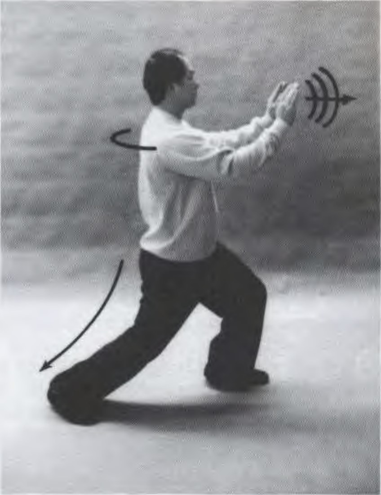
Bạn có thể thấy rằng để một tư thế có gốc rễ, bạn phải hiểu trước mục đích của tư thế đó. Khi bạn hiểu được "Tại sao" của tư thế, tâm trí bạn sẽ không lang thang và bạn sẽ biết mình đang tìm kiếm điều gì. Hiểu được mục đích và lý thuyết là gốc rễ của mọi thứ. Nó làm cho tâm trí bạn vững chắc để nó có thể dẫn thân thể bạn tới một tư thế mang lại cho bạn gốc rễ, tâm điểm và sự cân bằng tốt nhất. Dĩ nhiên, để đạt tới giai đoạn này, bạn phải có một tâm trí và thân thể thư giãn trước đã.
Trước khi có thể phát triển gốc rễ của mình, bạn phải thư giãn và để thân thể mình "lắng xuống". Khi bạn thư giãn, sự căng thẳng ở những phần khác nhau của thân thể bạn sẽ tan biến, và bạn sẽ tìm thấy một cách đứng thoải mái. Bạn sẽ thôi chống lại mặt đất để giữ thân thể mình đứng lên, và sẽ học cách dựa vào cấu trúc thân thể mình để được nâng đỡ. Điều này để cho các cơ thư giãn thêm nữa. Vì thân thể bạn không còn phải gắng sức để đứng lên, nên Ý bạn sẽ không đẩy hướng lên, và thân thể, tâm trí cùng Khí của bạn đều sẽ có thể chìm xuống. Nếu bạn để nước bẩn lắng yên, những tạp chất sẽ dần lắng xuống đáy, để lại phần nước bên trên trong veo. Cũng theo cách ấy, nếu bạn thư giãn thân thể và để nó lắng xuống, Khí bạn sẽ chìm xuống Đan Điền và các huyệt Dũng Tuyền (Bubbling Wells) ở bàn chân, làm tâm trí bạn sáng trong. Khi đó bạn có thể bắt đầu phát triển gốc rễ của mình.
Sau khi đã có gốc rễ, bạn phải học cách giữ tâm điểm của mình. Tâm điểm bao gồm tâm điểm của tâm trí và tâm điểm của thân thể vật lý. Bạn phải đặt tâm trí mình vào giữa trước, để dẫn thân thể tới tâm điểm của nó. Dĩ nhiên, để đặt tâm trí vào giữa, bạn phải thư giãn thân thể mình trước đã, điều này cho phép tâm trí bạn cảm giác và cảm nhận từng phần của nó. Tuy gốc rễ quan trọng đối với tiến trình định vị tâm điểm, nhưng nhiều khi bạn có thể tìm thấy tâm điểm mình mà thậm chí không có gốc rễ. Ví dụ, khi bạn trượt tuyết, bạn không có gốc rễ nhưng bạn phải có tâm điểm để giữ cân bằng. Tuy nhiên, trong luyện tập Khí Công tĩnh, có gốc rễ sẽ giúp bạn định vị tâm điểm dễ dàng hơn; và khi bạn có tâm điểm, gốc rễ sẽ càng vững chắc hơn. Cả hai liên hệ với nhau và thật sự không thể tách rời.
Một tâm điểm vững vàng sẽ khiến Khí bạn phát triển đều đặn và đồng nhất. Nếu bạn mất tâm điểm này, Khí bạn sẽ không được dẫn một cách đều đặn. Để giữ thân thể bạn được đặt giữa, bạn phải đặt Ý bạn vào giữa trước, rồi khớp thân thể bạn với nó. Điều rất quan trọng là bạn phải hiểu rằng rất thường khi tâm điểm của tâm trí và tâm điểm của thân thể bạn không khớp với nhau. Ví dụ, khi đứng ở tư thế cung tên, bạn có thể hơi nghiêng người về phía trước để tâm điểm của thân thể nằm trên bàn chân trước. Nếu bạn giữ tâm điểm tinh thần lùi về phía sau thêm nữa, bạn vẫn có thể giữ thân thể mình đặt giữa, dù người nhìn bạn sẽ nghĩ rằng bạn đang mất cân bằng về phía trước. Tuy nhiên, nếu tâm điểm tinh thần của bạn cũng lệch đi và dịch về phía trước, bạn sẽ mất tâm điểm và sự cân bằng. Dĩ nhiên, nếu tâm điểm thân thể bạn lệch đi quá nhiều, bạn sẽ không thể dùng tâm điểm tinh thần để cân bằng nó. Tâm điểm tinh thần và tâm điểm thân thể của bạn càng giữ gần nhau bao nhiêu, bạn càng vững vàng bấy nhiêu. Trong luyện tập Khí Công, tâm điểm tinh thần và tâm điểm thân thể là những chìa khóa cho phép bạn dẫn Khí vượt ra ngoài thân thể mình.
Cuối cùng, sau khi bạn đã có thân thể thư giãn, gốc rễ vững chắc và tâm điểm, bạn sẽ có thể cân bằng Ý, Khí và thân thể vật lý của mình. Cân bằng là sản phẩm của việc bám rễ và đặt giữa. Bất kể bạn đang xử lý khía cạnh nào của sự cân bằng, bạn phải cân bằng Ý bạn trước. Chỉ khi đó bạn mới có thể cân bằng Khí và thân thể vật lý của mình. Nếu Ý bạn cân bằng, nó có thể giúp bạn đưa ra những phán đoán chính xác, và sửa lại đường đi của dòng Khí. Khi Ý bạn cân bằng, Khí bạn sẽ được dẫn một cách đều đặn. Hãy nhớ MẸO ĐỂ MỞ RỘNG KHÍ BẠN LÀ MỞ RỘNG NÓ MỘT CÁCH ĐỀU ĐẶN. Nó giống như khi bạn đẩy một chiếc xe, bạn cần một lực về phía sau để tạo ra lực đẩy về phía trước.
Thông thường, Khí của một người không cân bằng ở cả hai bên thân thể đơn giản chỉ vì anh ta dùng một tay nhiều hơn tay kia. Ví dụ, nếu bạn thuận tay phải, tâm trí bạn có thể dẫn Khí tới tay phải dễ dàng hơn nhiều so với tay trái. Đôi khi bạn sẽ thấy rằng một bên đế giày của mình bị mòn phẳng hơn bên kia. Là một người luyện Khí Công, bạn đang tìm tâm điểm tinh thần của mình trong tình huống không cân bằng này. Để làm điều đó, tâm trí bạn phải rất sáng rõ và có khả năng phán đoán môi trường cũng như tình trạng thân thể mình. Ví dụ, nếu bạn đặt cánh tay phải vào nước ấm và cánh tay trái vào nước lạnh trong ba phút, rồi sau đó đặt ngay cả hai tay vào một bình nước khác, một tay sẽ cảm thấy ấm hơn tay kia. Kiểu ảnh hưởng bên ngoài này làm tán loạn Ý bạn và khiến nó mất tâm điểm. Trong luyện tập Khí Công, vì vậy, bạn đang tìm cách luyện tập phát triển Ý và thân thể một cách đều đặn. Ví dụ, hãy luyện cùng một bài quyền với cả hai tay cùng số lần như nhau.
Để giúp bạn phân tích việc bám rễ, đặt giữa và cân bằng, chúng ta sẽ bàn về hai tư thế phổ biến nhất. Một khi bạn hiểu hai tư thế này, bạn sẽ có thể dùng cùng phương pháp đó để phân tích bất kỳ tư thế nào khác.
Tư thế Ngựa (Maa Bu):
Tư thế ngựa là tư thế phổ biến nhất được những người luyện Khí Công và võ sĩ dùng. Tư thế ngựa được các võ sĩ dùng để phát triển gốc rễ, tâm điểm và sự cân bằng của mình, cũng như để làm khỏe đôi chân. Tuy nhiên, đối với người luyện Khí Công không theo võ thuật, dù việc bám rễ là quan trọng, nó không thiết yếu như đối với các võ sĩ, những người cần một gốc rễ vững mạnh để chiến đấu. Trong Khí Công, việc bám rễ giúp ích cho việc tìm tâm điểm và sự cân bằng, mà đến lượt nó lại cho phép bạn cảm thấy thư giãn, tự nhiên và thoải mái. Vì tư thế ngựa trong võ thuật khó hơn và là nền tảng cho tư thế ngựa phi võ thuật, nên chúng ta sẽ bàn về nó ở đây. Một khi bạn đã hiểu nó tường tận, bạn có thể điều chỉnh nó cho hợp với tình huống của mình.
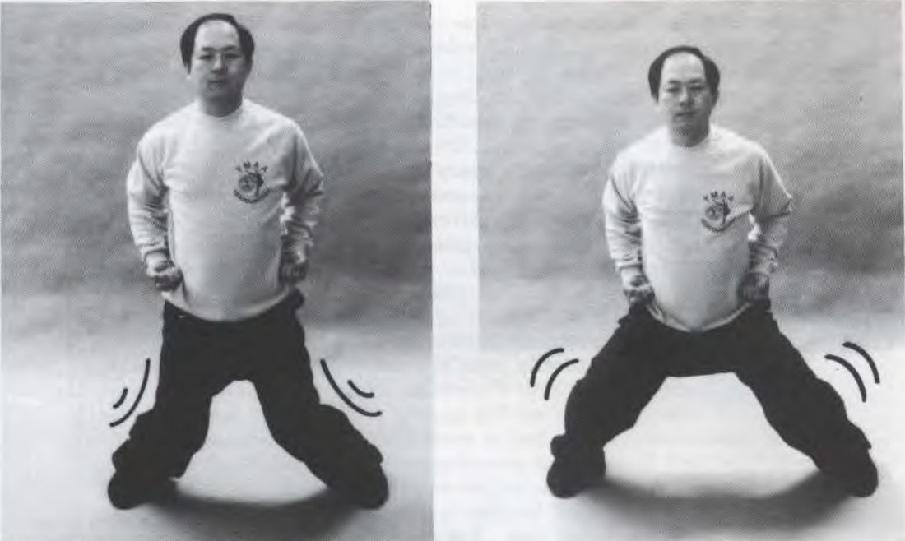
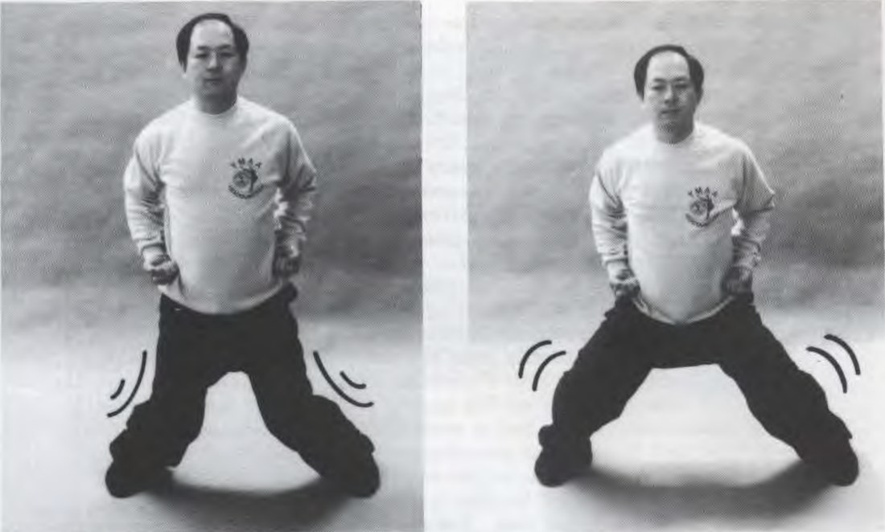
Có nhiều cách đứng ở tư thế ngựa. Ví dụ, độ rộng của hai bàn chân trong tư thế ngựa mà các môn phái võ thuật miền Nam Trung Hoa dùng thì hẹp hơn tư thế dùng ở các môn phái miền Bắc (Hình 8-2). Đó là bởi vì các môn phái miền Nam nhấn mạnh đến chiến đấu tầm ngắn, và tư thế rộng hơn thì hở hang và nguy hiểm hơn trong các kỹ thuật tầm ngắn. Tình hình khác đi đối với các môn phái miền Bắc. Bởi vì họ nhấn mạnh đến các kỹ thuật tầm xa, một tư thế rộng lớn hơn thì có lợi thế hơn, nên họ dùng một tư thế ngựa rộng hơn nhiều (Hình 8-3). Bạn nên hiểu rằng bất kể luyện tập theo môn phái tư thế ngựa nào, mục đích, nguyên lý luyện tập và lý thuyết vẫn giữ nguyên như nhau.
Trong tư thế ngựa, cả hai chân chia sức nặng của bạn như nhau. Trong luyện tập Khí Công, độ rộng của tư thế phụ thuộc vào cảm nhận của bạn. Nếu bạn đứng quá hẹp hay quá rộng, bạn sẽ có cảm giác không thoải mái. Bạn nên thử các độ rộng khác nhau để xem độ nào thoải mái và tự nhiên nhất với bạn. Hãy nhớ, khi bạn cảm thấy thoải mái và tự nhiên, bạn sẽ có thể thư giãn và tìm thấy tâm điểm cùng sự cân bằng của mình dễ dàng hơn.
Nếu bạn đang luyện tư thế ngựa võ thuật, việc bạn đứng cao bao nhiêu phụ thuộc vào môn phái. Đối với luyện tập Khí Công, việc bạn đứng cao bao nhiêu phụ thuộc vào cảm nhận của bạn. Ví dụ, nếu bạn đứng thấp hơn, các cơ chân bạn sẽ căng hơn và Khí sẽ khó lưu chuyển tới đáy bàn chân bạn hơn. Nếu bạn đứng quá cao, trọng tâm của bạn cao hơn và gốc rễ bạn sẽ nông hơn và kém vững vàng hơn. Tuy nhiên, vì các cơ chân thư giãn hơn, bạn có thể dẫn Khí tới đáy bàn chân mình dễ dàng hơn. Trong các môn nội gia quyền Trung Hoa như Thái Cực Quyền, khi Khí của một người mới bắt đầu không thể được dẫn một cách hiệu quả tới đáy bàn chân, thì tư thế được hạ thấp xuống. Trong trường hợp này, người mới có thể hạ thấp trọng tâm thân thể mình để tăng gốc rễ. Còn khi một người luyện Thái Cực đã đạt tới trình độ cao, anh ta sẽ đứng cao hơn và giữ các cơ chân thư giãn, cho phép Khí mình tới được đáy bàn chân.
Trong luyện tập tư thế ngựa của Khí Công, cách tốt nhất để xây một gốc rễ vững chắc là bắt đầu với một độ cao mà tại đó bạn có cảm giác mạnh nhất về việc đẩy hướng lên. Nói cách khác, hãy thử các độ cao khác nhau, và tại mỗi độ cao, hãy tưởng tượng như mình đang đẩy một vật nặng hướng lên. Ở một độ cao cụ thể nào đó, bạn sẽ cảm thấy rằng mình có thể đẩy hướng lên mạnh nhất. Tại độ cao này, Ý bạn có thể tạo lực đẩy hướng lên mạnh nhất, và do đó nó cũng có thể tạo lực đẩy hướng xuống mạnh nhất. Chính việc đẩy hướng xuống này của Ý bạn là thứ xây nên gốc rễ của bạn. Nếu bạn tiếp tục luyện tập, cuối cùng bạn sẽ bắt đầu cảm thấy rằng Ý mình đang dẫn Khí vào lòng đất, và rằng gốc rễ mình đang bắt đầu mọc lên.
Để bám rễ cho thân thể mình, bạn phải bắt chước một cái cây và mọc một gốc rễ vô hình bên dưới bàn chân mình. Dĩ nhiên, Ý bạn phải mọc trước, bởi vì chính Ý là thứ dẫn Khí. Ý bạn phải có thể giao tiếp với mặt đất để dẫn Khí vượt ra ngoài bàn chân và xây nên gốc rễ. Điều này nghĩa là Ý bạn phải cảm giác hay cảm nhận mặt đất, để ý xem nó mềm hay cứng, mặt đất phẳng đến mức nào, nó trơn trượt ra sao. Hãy thử những cách đứng khác nhau, dịch chuyển sức nặng trên bàn chân, và để ý đến mặt đất. Qua luyện tập, Ý bạn sẽ có thể chìm sâu hơn vào lòng đất, và bạn sẽ phát triển một gốc rễ vững mạnh. Bạn càng luyện tập bao nhiêu, gốc rễ càng mọc sâu bấy nhiêu (Hình 8-4). Sau khi luyện tập một thời gian, bạn sẽ bắt đầu đứng cao hơn để thư giãn các cơ chân nhiều hơn. Đến lượt nó, điều này sẽ giúp bạn dẫn Khí tới đáy bàn chân hiệu quả hơn.
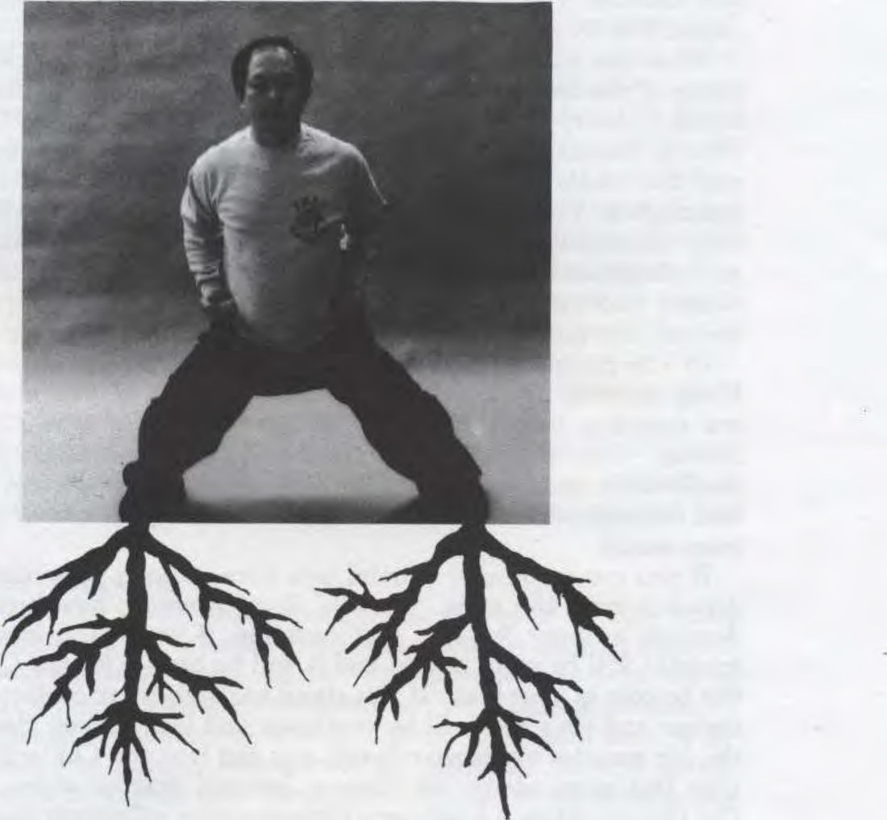
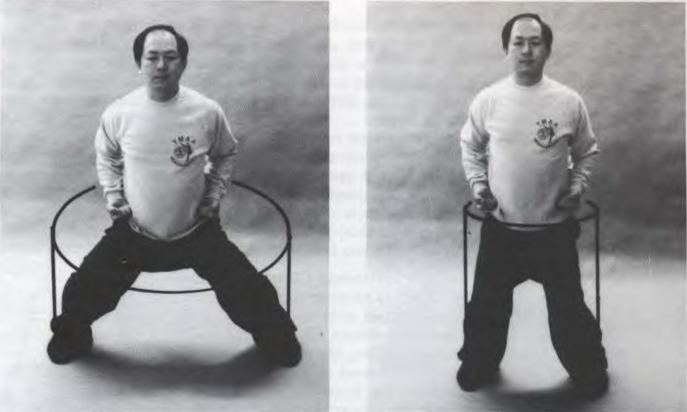
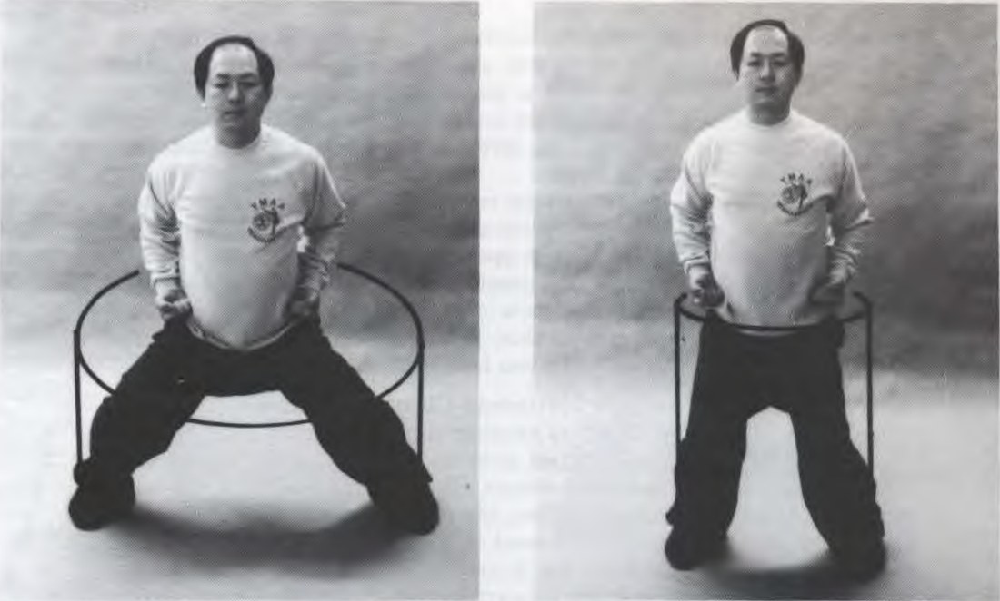
Huyệt Dũng Tuyền (Bubbling Well) là cánh cổng cho phép Khí bạn giao tiếp với mặt đất.
Có một điều nữa cần nhớ khi bạn xây gốc rễ. Gốc rễ của một cái cây rất mạnh vì nó có nhiều nhánh và tỏa ra xa về các phía. Bạn phải làm điều tương tự, và tỏa rễ của mình ra các phía cũng như xuống dưới.
Một khi bạn đã xây xong gốc rễ, bạn có thể xét đến việc đặt giữa và cân bằng. Bạn có thể được đặt giữa về mặt thân thể và bạn có thể được đặt giữa về mặt tinh thần. Khi bạn được đặt giữa về mặt thân thể, một đường thẳng đứng từ khối tâm của bạn rơi xuống giữa hai bàn chân, nên gốc rễ bạn nâng đỡ sức nặng của bạn một cách thoải mái. Được đặt giữa về mặt tinh thần là một vấn đề cảm nhận. Nếu bạn được đặt giữa về mặt tinh thần, bạn có thể cân bằng về mặt thân thể ngay cả khi bạn không được đặt giữa về mặt thân thể. Một ví dụ về điều này là người không thể bị đẩy ngã ngay cả khi anh ta đang đứng ở một tư thế rất vụng về. Khi bạn bắt đầu luyện tập, hãy đứng sao cho bạn được đặt giữa về mặt thân thể và có một gốc rễ tốt, và hãy được đặt giữa về mặt tinh thần theo cùng cách ấy. Sau một thời gian, hãy thay đổi tư thế của bạn một chút sao cho tư thế thân thể bạn trở nên ít được đặt giữa hơn và ít vững vàng hơn, rồi luyện tập duy trì sự cân bằng và sự vững vàng của mình về mặt tinh thần. Hãy nhớ, nếu bạn không được đặt giữa về mặt thân thể hay tinh thần, bạn sẽ không thể duy trì sự cân bằng của mình.
Mức độ mà tâm điểm của thân thể vật lý có thể tách khỏi tâm điểm của tâm trí mà không mất cân bằng phụ thuộc vào cách bạn đứng. Nói chung, nó phụ thuộc vào việc bạn xây gốc rễ rộng đến mức nào. Ví dụ, nếu bạn đứng thấp với một gốc rễ vững chắc, tâm điểm thân thể bạn có thể được dịch chuyển trong khoảng không gian giữa hai gốc rễ do hai bàn chân bạn tạo ra (Hình 8-5). Nếu bạn đứng cao hơn, độ rộng hẹp hơn, và vòng di chuyển mà bạn có thể cho phép thân thể mình sẽ nhỏ hơn (Hình 8-6).
Một võ sĩ có kỹ năng cao có thể tự vệ ngay cả ở một tư thế cao và hẹp. Tầm di chuyển của anh ta bị hạn chế, nhưng nếu anh ta có Khí mạnh, anh ta sẽ có thể xây một gốc rễ vững mạnh, và nếu kỹ thuật của anh ta đủ tốt, anh ta sẽ có thể chiến đấu hiệu quả. Hãy nhớ, để đạt tới giai đoạn này, bạn phải bắt đầu với một tư thế thấp và rộng, rồi dần thu hẹp và nâng cao nó. Người Trung Hoa có một câu tục ngữ: "Yean Gau Shoou Di", nghĩa là "Mắt thì cao mà tay thì thấp". Câu này chế giễu những người cứ mơ mộng về những trình độ tinh thông cao siêu trong khi họ vẫn còn đang ở một trình độ rất thấp.
Mục tiêu cuối cùng trong việc phát triển gốc rễ của bạn là làm cho tư thế của mình giống như một ngọn núi. Tư thế bạn phải rộng và vững chắc, và bạn cũng phải luyện Khí mình bao phủ lấy thân thể và tỏa ra khi nó đi xuống mặt đất. Hình ảnh tinh thần của bạn về chính mình và về Khí của mình phải có hình dạng như một ngọn núi hay một hình nón — hẹp ở trên và rộng ở dưới (Hình 8-7). Một khi bạn làm được điều này, sẽ cực kỳ khó để bất cứ ai đẩy ngã bạn hay làm bạn mất cân bằng.
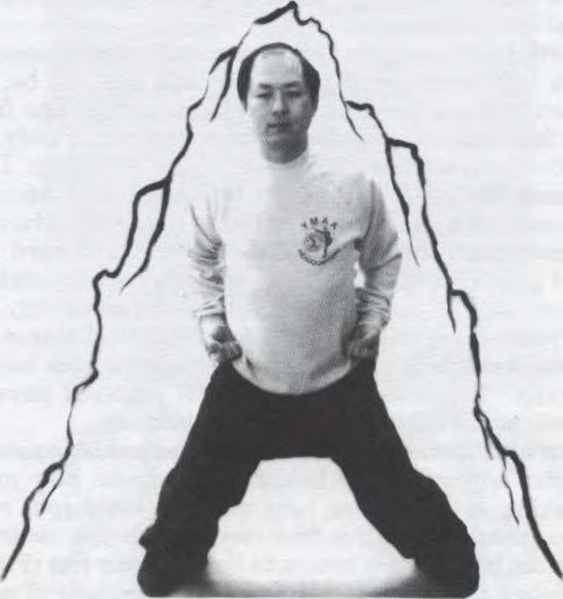
Tư thế Cung Tên hay Tư thế Leo Núi:
Tư thế cung tên là một tư thế phổ biến khác được cả võ sĩ lẫn người không theo võ thuật dùng. Nói chung, tư thế này khó hơn tư thế ngựa. Bởi vì sức nặng của thân thể không được chia đều, và do đó tâm trí cũng không được chia đều. Tư thế cung tên thường được dùng khi di chuyển và khi ra lực về phía trước. Thông thường, chân trước được dùng để ổn định thân thể và chân sau được dùng để tạo ra lực hướng về phía trước.
Trong tư thế này, khi chân sau đẩy thân thể bạn về phía trước, bạn phải giữ thân thể mình thẳng đứng để giữ tâm điểm và sự cân bằng. Đôi khi thân thể có thể hơi nghiêng về phía trước; tuy nhiên, trong trường hợp đó, bạn phải giữ tâm trí mình ở tâm điểm ban đầu, nếu không bạn sẽ dễ mất cân bằng.
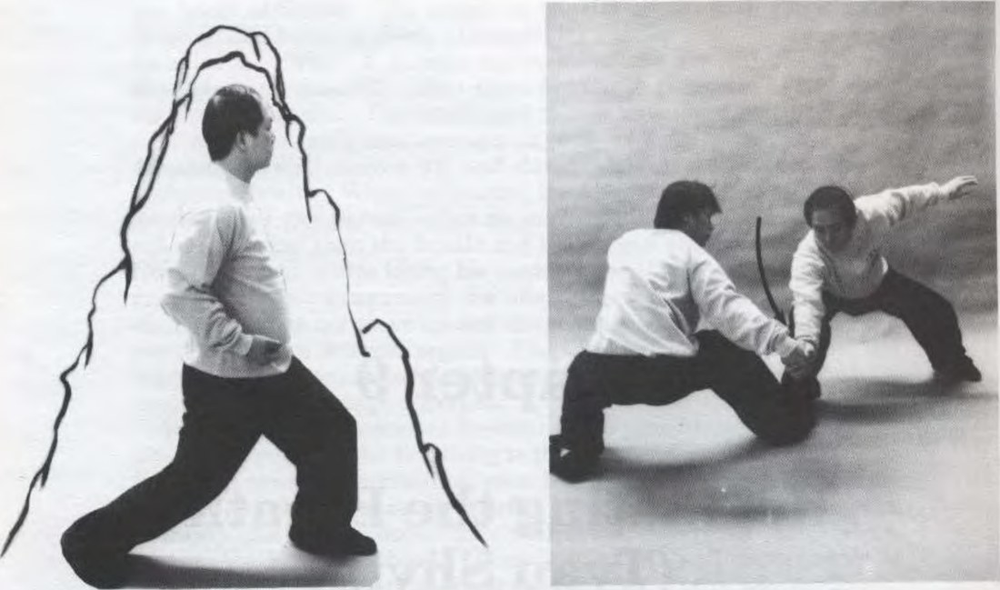

Trong tư thế này, mẹo để xây gốc rễ nằm ở việc giữ tâm điểm và sự cân bằng đúng như bạn đã làm ở tư thế ngựa. Gốc rễ bạn phải vững chắc, sâu và rộng. Một lần nữa, thân thể bạn phải thấp để bạn có thể xây một nền móng như một ngọn núi (Hình 8-8). Cuối cùng, tâm điểm tinh thần và tâm điểm thân thể của bạn phải chủ động điều chỉnh lẫn nhau để giữ thân thể vững vàng.
Một khi bạn đã xây xong gốc rễ và sự vững vàng, có một bài tập rất phổ biến bạn có thể làm để thử nghiệm và củng cố chúng. Bạn và người tập cùng đứng đối mặt nhau ở tư thế cung tên. Rồi nắm lấy cánh tay dẫn của nhau, và cố làm cho nhau mất cân bằng (Hình 8-9). Bài luyện này sẽ giúp bạn xây gốc rễ, phối hợp tâm điểm tinh thần và tâm điểm thân thể, xây ngọn núi của riêng bạn, và cuối cùng là phá hủy gốc rễ của người tập cùng. Nếu bạn tiếp tục bài luyện này, bạn sẽ thấy rằng để thắng, bạn phải đứng thấp. Thân thể bạn phải rất mềm để người tập cùng không tìm ra tâm điểm và gốc rễ của bạn. Khi thân thể bạn căng, anh ta có thể định vị tâm điểm bạn dễ dàng và phá hủy sự cân bằng của bạn. Ngoài ra, bạn cũng phải học cách cảm giác và cảm nhận tâm điểm của người tập cùng. Một khi tâm trí và lực của bạn có thể tới được tâm điểm của anh ta, bạn sẽ có thể làm bật gốc rễ của anh ta.
Chương Chín: Điều Tức (Tyau Shyi) (1)
9-1. Hơi Thở và Sức Khỏe
Ngay sau khi bạn sinh ra, bạn đã bắt đầu nương vào hai nguồn Tinh (Jieng) chính để cung cấp cho nhu cầu của cơ thể. Một khi hai thứ Tinh này — từ thức ăn và từ không khí — được hấp thu vào cơ thể, chúng được chuyển hóa thành Khí (Chi). Khí thu được từ thức ăn gọi là "Shyr Chi" (Khí thức ăn), còn Khí thu được từ không khí gọi là "Kong Chi" (người Trung Quốc gọi không khí là "Kong Chi"). Khí từ hai nguồn này được gọi là Khí Hậu Thiên, hay Hỏa Khí. Tuy rằng cơ thể bạn cần Hỏa Khí, nhưng nếu chất lượng của nó kém thì nó sẽ khiến cơ thể bạn suy thoái. Để có sức khỏe tốt và tuổi thọ dài, bạn phải nghiêm túc quan tâm đến chất lượng của hai nguồn này. Việc tìm kiếm đúng loại thức ăn và đúng chất lượng không khí đã là một phần quan trọng của việc luyện Khí Công. Trong chương này chúng ta sẽ bàn về Khí từ không khí và cách chúng ta hưởng lợi từ việc luyện các phương pháp điều tức.
Để biết cách điều hòa hơi thở, trước hết bạn phải biết mình hít vào và thở ra như thế nào trong khi hít vào và thở ra. Bạn phải hiểu rằng bản thân phổi không thể tự đưa không khí vào và đẩy không khí ra. Để không khí đi tới phổi rồi bị đẩy ra, các cơ quanh phổi và cơ hoành phải giãn nở và co lại, hút không khí vào và đẩy nó ra khỏi lồng ngực. Khi quá trình này diễn ra, ô-xy sẽ hòa với máu trong các tế bào phổi, và máu sẽ giải phóng khí các-bô-níc mà nó mang theo. Khi cơ hoành đi lên và đi xuống trong lúc hô hấp, nó xoa bóp các cơ quan nội tạng và làm tăng sự lưu thông của Khí.
Một khi ô-xy đã hòa với máu, nó được mang tới từng tế bào của cơ thể để duy trì hoạt động của chúng. Thông thường, khi thiếu ô-xy, não bạn sẽ cảm nhận được trước tiên. Theo các thí nghiệm, lượng ô-xy mà các tế bào não của bạn cần nhiều gấp nhiều lần lượng mà các tế bào cơ cần. Mỗi khi thiếu ô-xy, bạn thấy chóng mặt, nặng đầu, và không thể suy nghĩ rõ ràng.
Thông thường, sau khi một em bé chào đời, nó giữ thói quen thở từ vùng bụng dưới. Hơi hít vào thường dài hơn hơi thở ra. Vì trẻ hấp thu được nhiều ô-xy, đầu óc nó thường minh mẫn hơn người lớn. Khi một người tới tuổi 30, hơi thở của người đó trở nên nông hơn và thường diễn ra quanh vùng dạ dày thay vì vùng bụng dưới. Hơi hít vào và hơi thở ra gần như bằng nhau. Ở tuổi này, người đó vẫn có đủ ô-xy để cung cấp cho cơ thể, và cơ hoành vẫn lên xuống tích cực. Sự vận động này duy trì sức khỏe. Khi lớn thêm, hơi thở dần dần nông hơn vì người đó nương vào việc cử động lồng ngực để thở. Hơi thở ra dài hơn hơi hít vào và nguồn cung ô-xy không đủ. Lúc này người đó bắt đầu mất trí nhớ, mất khả năng suy nghĩ và mất sự minh mẫn. Vì hơi thở quá nông, cơ hoành không còn lên xuống tích cực nữa, và nó không còn xoa bóp các cơ quan nội tạng. Khí trở nên ứ trệ, và các cơ quan suy thoái. Ngoài ra, sự suy thoái của các tế bào trong cơ thể cũng bị tăng tốc bởi tình trạng thiếu ô-xy.
Bạn có thể thấy hơi thở quan trọng với sức khỏe của bạn đến nhường nào. Trong việc luyện Khí Công, điều tức là phần luyện tập quan trọng nhất. Bước đầu tiên hướng tới việc duy trì sức khỏe của bạn là làm tăng nguồn cung ô-xy. Bạn phải khôi phục lại cách thở sâu tận vùng bụng dưới như một em bé. Bài tập này gọi là "Fan Ton", nghĩa là "Trở Về Tuổi Thơ". Một khi bạn có đủ nguồn cung ô-xy, bạn có thể thư giãn, làm sáng tỏ tâm trí, và vận hành Khí.
9-2. Điều Tức
Điều quan trọng là phải học cách điều hòa hơi thở để bạn có thể thu được đủ Tinh từ không khí, và để bạn có thể học cách ngăn Khí từ không khí kích thích cơ thể quá mức và khiến nó quá Dương. Bạn cần quan tâm tới chất lượng không khí mình hít vào, và bạn cần học các phương pháp thở khác nhau, vốn được dùng để đạt những mục tiêu khác nhau. Ở giai đoạn đầu của việc điều tức, hơi thở trở nên tĩnh lặng, êm ả và thanh thản. Một khi bạn đã đạt tới điểm này, bước kế tiếp là làm cho hơi thở của bạn sâu, mảnh, dài và mềm. Đây là điều kiện tiên quyết cho việc luyện Khí Công thành công.
Để làm cho hơi thở tĩnh lặng, êm ả và thanh thản, trước hết bạn phải điều hòa tâm trí mình. Hãy nhớ rằng tâm trí bạn là bộ tổng chỉ huy của toàn bộ con người bạn. Khi tâm trí bạn không vững vàng và tĩnh lặng, cảm xúc của bạn sẽ bị dao động. Cảm xúc của bạn gắn bó mật thiết với hơi thở. Chẳng hạn, khi bạn giận, bạn thở ra mạnh hơn hít vào. Khi bạn buồn, bạn hít vào mạnh hơn thở ra. Khi tâm trí bạn an bình và tĩnh lặng, hơi hít vào và hơi thở ra của bạn tương đối bằng nhau.
Vì vậy, trong luyện tập thở Khí Công, trước hết bạn phải điều hòa tâm cảm xúc của mình. Điều này đến lượt nó lại cho phép bạn điều hòa hơi thở, và tới lượt nó lại cho phép bạn điều hòa tâm trí mình sâu hơn. Một lần nữa, tâm trí bạn càng tĩnh lặng và sâu lắng bao nhiêu, hơi thở của bạn càng tĩnh lặng và sâu lắng bấy nhiêu. Sau khi bạn luyện tập lâu dài, hơi thở của bạn sẽ đầy đặn và mảnh, và tâm trí bạn sẽ rất minh mẫn. Người ta nói: "Hsin Shyi Shiang Yi"(*1), nghĩa là "Tâm và hơi thở nương vào nhau". Khi bạn đạt tới trạng thái thiền định này, nhịp tim bạn chậm lại, và tâm trí bạn rất minh mẫn: bạn đã bước vào cõi thiền chân thực.
Thông thường, khi tâm cảm xúc của bạn bị dao động, không chỉ hơi thở bị ảnh hưởng mà cả sự lưu thông Khí cũng vậy. Hãy hiểu rằng cảm xúc của bạn liên quan tới các cơ quan nội tạng. Chẳng hạn, giận dữ có thể làm nguồn Khí của gan bạn mất cân bằng. Vui mừng có thể làm tim bạn quá Dương. Sợ hãi có thể làm nguồn Khí cấp cho bàng quang của bạn bị hư suy. Rõ ràng, để điều hòa Khí trong cơ thể, trước hết bạn phải điều hòa tâm cảm xúc của mình. Điều tức sẽ giúp bạn làm việc này.
Mặt kia của vấn đề là bạn cũng có thể dùng hơi thở để điều khiển Ý (Yi) của mình. Khi hơi thở của bạn đều đặn, nó giống như bạn đang thôi miên Ý của mình, điều này giúp làm nó tĩnh lặng. Nhưng còn một cách khác để bạn dùng hơi thở điều khiển Ý. Mỗi khi bạn nạp thức ăn hoặc không khí kém chất lượng, bạn thường bị nóng ruột do Hỏa Khí tích tụ quá mức, vốn thường trú ở Trung Đan Điền (Dan Tien giữa, tức đám rối dương), khuấy động cảm xúc và quấy nhiễu tâm trí trí tuệ (Ý) của bạn. Khi bạn điều hòa hơi thở để tán Hỏa nơi tâm và làm lặng tâm cảm xúc (Tâm — Hsin), bạn cũng đồng thời làm lặng Ý của mình.
Chúng ta đã xác lập rằng Ý và hơi thở nương vào nhau. Hơi thở sâu và tĩnh lặng giúp bạn thư giãn, giữ tâm trí sáng rõ, và làm đầy phổi bạn bằng nhiều không khí để não và toàn bộ cơ thể bạn có đủ ô-xy. Ngoài ra, hơi thở sâu và trọn vẹn cho phép cơ hoành lên xuống, điều này xoa bóp và kích thích các cơ quan nội tạng. Vì lý do này, các bài tập thở sâu cũng được gọi là "bài tập nội tạng".
Cuối cùng, một điểm bổ sung: điều tức không chỉ là chìa khóa dẫn tâm trí vào một tầng thiền định sâu hơn và tĩnh lặng hơn, mà còn là chìa khóa dẫn Khí tới các đầu chi và tới da. Khi Khí được dẫn tới các chi, nó có thể khai mở các kinh mạch trong chi và hoàn thành Đại Chu Thiên, đồng thời tăng hiệu suất của các cơ lên trạng thái năng lực cao hơn mà một võ sĩ cần. Khi Khí được dẫn tới da một cách hiệu quả, bạn có thể củng cố và mở rộng tấm khiên Vệ Khí của mình, thứ có thể giúp bạn tránh bệnh tật gây ra bởi những ảnh hưởng tiêu cực từ bên ngoài.
Tiếp theo chúng ta sẽ bàn về mười ba phương pháp điều tức được dùng trong Khí Công, bắt đầu từ phương pháp cơ bản nhất và kết thúc bằng phương pháp cao cấp nhất. Tuy nhiên, vì những phương pháp cao cấp hơn thì khó, cả trong việc hiểu lẫn việc luyện, nên không thể bàn thấu đáo chúng ở đây. Một cuộc thảo luận chi tiết hơn về các kỹ thuật cao cấp này sẽ được trình bày trong các tập sau.
9-3. Các Phương Pháp Thở Khí Công Khác Nhau
Trong bốn nghìn năm nghiên cứu và thực nghiệm vừa qua, người ta đã phát triển nhiều cách để điều hòa hơi thở. Mỗi kỹ thuật đều có lý thuyết và mục tiêu riêng. Các kỹ thuật này được gọi là "Tyau Shyi", nghĩa là "điều hòa hơi thở". Nó cũng thường được gọi là "Tuu Na", nghĩa là "thổ và nạp" (phun ra và hít vào). Tên gọi sau đặc biệt được dùng khi mũi được dùng để hít vào và miệng được dùng để thở ra. Vì có nhiều trình độ luyện Khí Công khác nhau, các phương pháp điều tức được phân loại theo độ khó, từ dễ nhất tới khó nhất. Ở đây chúng ta sẽ liệt kê và giải thích 13 kỹ thuật thở thường được dùng trong Khí Công Trung Quốc.
1. Thở Tự Nhiên (Natural Breathing)
Thường thì những người mới bắt đầu luyện Khí Công sẽ dùng ngay các phương pháp thở cao cấp. Tuy nhiên, cách tốt nhất để nắm được chìa khóa của các phương pháp thở sâu hơn là bắt đầu bằng việc điều hòa phương pháp thở mà bạn dùng mỗi ngày.
Bạn nên hiểu rằng hơi thở tự nhiên của bạn liên tục bị ảnh hưởng bởi những suy nghĩ và cảm xúc. Chẳng hạn, khi bạn căng thẳng hay phấn khích, bạn thở nhanh hơn; còn khi bạn buồn và chán nản, bạn thở chậm hơn. Độ dài của hơi hít vào và hơi thở ra cũng bị cảm xúc ảnh hưởng. Khi bạn vui, hơi thở ra dài hơn hơi hít vào; nhưng khi bạn buồn, hơi hít vào lại dài hơn. Vậy bạn có thể thấy rằng tuy bạn vẫn luôn điều hòa hơi thở của mình, bạn thường làm việc đó một cách vô thức.
Người ta thở theo những cách khác nhau. Trẻ nhỏ và một số người lớn vẫn còn thói quen thở bụng. Hầu hết người trung niên thở bằng dạ dày, còn người lớn tuổi thở bằng lồng ngực. Dù bạn thở cách nào, mục đích vẫn là đưa ô-xy vào phổi và tống khí các-bô-níc ra ngoài. Tuy chúng ta nói tới thở bụng, thực ra không khí không đi — hoặc ít ra là không nên đi — xuống thấp hơn nữa. Nếu không khí đi vào hệ tiêu hóa của bạn, nó sẽ gây đau, nên phải tống nó ra ngay.
Điều hòa hơi thở tự nhiên nghĩa là điều hòa kiểu thở hiện tại của bạn. Bạn không nên cố ý thay đổi thói quen thở của mình khi làm bài luyện này, vì bạn sẽ đặt Ý của mình lên phương pháp mới và bị xao lãng khỏi điều bạn thường làm và thường trải nghiệm. Điều hòa hơi thở tự nhiên nghĩa là tập trung tâm trí để hiểu cách thở tự nhiên của mình, để cảm nhận cách mình thở, và cuối cùng là dẫn dắt hơi thở của mình tới một trạng thái thư giãn và êm dịu hơn.
Để điều hòa hơi thở tự nhiên, trước hết bạn phải tự nhiên và thoải mái, và tâm trí bạn phải gạt bỏ những xáo trộn cảm xúc. Sau đó, hãy học cách cảm nhận các cơ liên quan tới hơi thở của bạn. Cuối cùng, tâm trí bạn dẫn các cơ đó vào một trạng thái thư giãn hơn, và bạn có thể cảm nhận hay nhận biết dòng Khí.
Hãy chọn bất cứ tư thế nào bạn thích, miễn là bạn cảm thấy thoải mái và tự nhiên. Hãy thở bằng mũi. Đừng chủ động điều khiển hơi thở, mà chỉ đơn thuần chú ý tới nó và cảm nhận nó. Hãy thở nhẹ nhàng và êm ái. Mục tiêu cuối cùng của quá trình này là luyện cho hơi thở tự nhiên của bạn đạt được 1. Tĩnh lặng (Jing), 2. Mảnh (Shyi), 3. Sâu (Shenn), 4. Liên tục (lou), và 5. Đều đặn (Yun). Chúng ta sẽ bàn chi tiết hơn về những điều này ở cuối chương. Sau một thời gian, bạn sẽ đạt tới giai đoạn điều hòa hơi thở mà không cần nỗ lực có ý thức, khi hơi thở của bạn bước vào một giai đoạn mới. Tuy nhiên, quan trọng nhất là kinh nghiệm bạn thu được qua việc luyện kỹ thuật điều hòa hơi thở tự nhiên. Kinh nghiệm này trở thành hạt giống tạo ra sự hiểu biết sâu hơn mà bạn cần để thấu hiểu những kỹ thuật thở khó hơn.
2. Thở Ngực (Chest Breathing)
Thở ngực, hay thở bằng cách giãn nở và co lại lồng ngực, là một trong những phương pháp điều tức chính, đặc biệt trong các môn Khí Công võ thuật ngoại gia, cũng như trong việc lặn biển sâu. Thở ngực làm tăng dung tích phổi của bạn, và do đó làm tăng lượng ô-xy và khí các-bô-níc được trao đổi. Nó cũng cho phép bạn nín thở lâu hơn. Võ sĩ ngoại gia dùng phương pháp này để tăng lượng Khí từ không khí mà họ nạp vào, vốn được dùng để hỗ trợ cho việc vận động cơ bắp. Những người cử tạ và người làm lao động nặng cũng làm như vậy.
Khi bạn luyện thở ngực, hãy giữ tâm trí và các cơ lồng ngực thư giãn. Nếu chúng căng thẳng, bạn sẽ dùng nhiều ô-xy hơn. Trong cách luyện của các môn võ thuật ngoại gia như phái Hổ, khi bạn thở ra, bạn dẫn Khí từ không khí tới các chi. Bạn càng luyện nhiều, bạn càng làm việc này hiệu quả. Tuy rằng khi bạn luyện thở ngực thì vùng bụng của bạn có cử động lên xuống đôi chút, bạn nên hiểu rằng các võ sĩ ngoại gia thường không chú ý tới vùng bụng cho tới khi họ lớn tuổi. Một khi qua tuổi 30, họ sẽ bắt đầu luyện thở ngày càng thấp hơn trong vùng bụng. Những người luyện võ thuật nội gia không coi việc tăng dung tích phổi là quan trọng như các môn ngoại gia. Người luyện nội gia cho rằng bạn càng tăng dung tích phổi bao nhiêu, bạn càng nạp nhiều Hỏa Khí (Khí từ không khí) bấy nhiêu, điều này có thể làm tán loạn và mê hoặc tâm trí, và làm tăng Hỏa trong cơ thể. Với một người luyện Khí Công nội gia, điều tức nghĩa là thở thấp hơn trong vùng bụng, ở Đan Điền, thay vì nhấn mạnh vào lồng ngực.
Trước khi kết thúc việc bàn về thở ngực, tôi muốn chỉ ra rằng phổi của bạn hành xử như một sợi dây cao su: bạn càng kéo giãn chúng, chúng sẽ càng lớn. Tuy nhiên, sau khi bạn đã luyện thở ngực lâu ngày, hoặc ngay cả khi bạn đã tập luyện nặng một thời gian dài, bạn không nên ngừng luyện tập đột ngột và hoàn toàn. Một khi phổi bạn đã giãn ra tới kích thước lớn hơn, việc ngừng đột ngột có thể khiến một phần phổi của bạn xẹp lại, gây ra những vấn đề như viêm phổi. Nếu bạn muốn ngừng luyện, bạn nên cắt giảm các bài tập dần dần và để phổi bạn tự điều chỉnh. Trong giới Khí Công võ thuật ngoại gia, chúng ta thường thấy rằng khi một người luyện tập già đi và mất khả năng làm những bài tập như trước, người đó mất khả năng giãn phổi, và dung tích phổi của họ giảm đi. Hệ quả là các cơ vốn dùng để thu được một lượng lớn ô-xy suy thoái nhanh hơn bình thường. Hiện tượng này gọi là "Sann Kung" (tán khí).
Bạn có thể thấy rằng nếu bạn không phải là một võ sĩ ngoại gia, bạn không cần tạo thói quen thở ngực. Tuy vậy, việc thở ngực thỉnh thoảng cũng có những lợi ích. Thứ nhất, bạn sẽ làm sống động các tế bào ở những phần phổi ít được dùng, và giữ chúng khỏi suy thoái. Thứ hai, việc thở ngực mạnh làm tăng nguồn cung Khí từ không khí, để bạn có thể gửi nhiều Khí tới da. Điều này giúp khai mở những kinh Khí tí hon trong da và củng cố Vệ Khí của bạn.
3. Thở Bụng Thuận (Normal Abdominal Breathing)
Thở bụng là chìa khóa của các bài luyện Khí Công Nội Đan (Nei Dan, nội đan). Trong thở bụng, hay thở Đan Điền, có hai cách thở phổ biến: Thở Bụng Thuận (Jeng Fuh Hu Shi) và Thở Bụng Nghịch (Faan Fuh Hu Shi). Chúng ta sẽ bàn về Thở Bụng Thuận trước.
Thở bụng thuận là bước kế tiếp sau thở ngực đối với người mới luyện Khí Công. Thở bụng là một bài tập thở sâu, nhưng nó không giống cách bạn thở trong lồng ngực. Thở sâu đúng cách bao gồm những hơi thở chậm và sâu dường như đi tận xuống tới Đan Điền của bạn. Nó đòi hỏi tâm trí bạn phải thư giãn và tập trung. Kiểu thở này gọi là hơi thở "Faan Torng", hay thở "Trở Về Tuổi Thơ", vì nó sâu, mềm và tự nhiên như hơi thở của một đứa trẻ. Đây là bước đầu tiên trong việc luyện Khí Công Nội Đan.
Trong thở bụng, phổi được giãn nở và co lại bởi các cơ của cơ hoành và vùng bụng, chứ không phải bởi các cơ lồng ngực. Có nhiều lợi ích của việc thở bụng thuận:
A. Xoa Bóp Nội Tạng
Trong thở bụng, cơ hoành và các cơ vùng bụng dưới liên tục chuyển động tới lui. Sự chuyển động này xoa bóp các cơ quan nội tạng, làm tăng sự lưu thông Khí và máu trong và quanh chúng. Điều này giữ chúng khỏe mạnh và cường tráng, tránh được tình trạng ứ trệ Khí, vốn là một trong những nguyên nhân chính gây bệnh.
B. Làm Sống Động Các Cơ Bụng
Vì trẻ nhỏ tự nhiên thở bụng sâu, các cơ dạ dày của chúng liên tục chuyển động. Điều này không chỉ giữ Khí lưu thông quanh các cơ quan, mà còn làm linh động những kinh Khí nối mặt trước cơ thể với chân và với lưng. Thông thường, một khi bạn đã từ bỏ việc thở bụng, dòng Khí tới Đốc mạch ở lưng bạn trở nên chậm chạp. Điều này làm yếu khả năng điều hòa Khí khắp cơ thể của Đốc mạch, và để cho nhiều vấn đề nảy sinh.
C. Tăng Hiệu Suất Dòng Khí từ Thận tới Hạ Đan Điền
Một mục tiêu của việc luyện Khí Công là củng cố Thủy Khí (Nguyên Khí) của bạn, vốn được chuyển hóa từ Tinh trú ở thận. Như chúng ta đã bàn, Hạ Đan Điền là nơi trú ngụ của Khí này. Sự vận động cơ bắp của các cơ trong thở bụng giúp dẫn Khí từ thận tới Hạ Đan Điền của bạn và giữ nó ở đó. Bạn càng thở bụng nhiều, càng nhiều Khí được dẫn, và Tinh được chuyển hóa càng hiệu quả. Thở bụng hành xử như một cỗ máy có khả năng chuyển nhiên liệu thành năng lượng hiệu quả hơn các cỗ máy thông thường, và nhờ đó tiết kiệm nhiên liệu hơn.
D. Tăng Thủy Khí
Một khi bạn có thể làm tăng hiệu suất của quá trình chuyển hóa Tinh – Khí, bạn sẽ có thể tạo ra nhiều Thủy Khí (Nguyên Khí) hơn. Thủy Khí mạnh là chìa khóa cho việc luyện Khí Công thành công. Thủy Khí có thể làm lặng tâm trí bạn, củng cố ý chí bạn và làm vững vàng tinh thần bạn. Vì Thủy Khí là nguồn chất làm mát chính cho Hỏa Khí của bạn, bạn có thể duy trì sức khỏe và kéo dài tuổi thọ của mình.
Thở bụng thuận là một phần quan trọng của việc luyện Khí Công Phật giáo, nên nó thường được gọi là "Thở Phật giáo". Để luyện nó, trước hết bạn phải dùng Ý của mình để điều khiển các cơ vùng bụng. Khi bạn hít vào, hãy cố ý giãn nở vùng bụng; và khi bạn thở ra, hãy để nó co lại. Nếu bạn luyện mười phút ba lần mỗi ngày, trong một tháng bạn sẽ có thể khôi phục lại cách thở bụng mà bạn đã thực hiện khi còn là một em bé.
Có một nguyên tắc rất quan trọng khi bạn luyện tập: KHÔNG NÍN THỞ. Hơi thở của bạn phải êm ả, tự nhiên, liên tục và thoải mái. Thở bụng sâu được thực hiện ở vùng bụng dưới, nên bạn không nên giãn nở và co lại lồng ngực. Thay vào đó, bạn nên cảm thấy như mình đang hút không khí sâu vào tận vùng bụng dưới.
4. Thở Bụng Nghịch (Reverse Abdominal Breathing)
Phương pháp thở bụng nghịch thường được những người luyện Khí Công Đạo gia dùng, nên nó thường được gọi là "Thở Đạo gia". Vì bạn đang cử động vùng bụng, bạn thu được những lợi ích sức khỏe giống như với thở bụng thuận. Tuy nhiên, trong thở bụng nghịch, bạn đưa bụng vào khi hít vào và đưa ra khi thở ra. Có nhiều lý do cho việc này. Những lý do chính là:
A. Hiệu Quả Cao Hơn trong Việc Dẫn Khí tới Các Đầu Chi
Mỗi khi bạn thở ra, bạn đang mở rộng Vệ Khí của mình. Khi bạn hít vào, bạn đang bảo tồn Khí của mình, hoặc thậm chí hấp thu Khí xung quanh vào cơ thể. Kinh nghiệm dạy rằng khi bạn cố ý mở rộng Khí trong lúc thở ra, việc mở rộng các cơ bụng dễ hơn là thư giãn chúng. Hãy thử thổi bong bóng, và đặt một bàn tay lên bụng mình. Bạn sẽ thấy khi bạn thổi ra, bụng bạn giãn ra chứ không co vào. Hoặc hãy tưởng tượng bạn đang đẩy một chiếc xe. Để phát huy sức mạnh, bạn phải thở ra trong khi đẩy. Nếu bạn để ý tới bụng mình trong lúc làm việc đó, bạn sẽ nhận ra rằng bụng bạn lại đang giãn ra. Nếu bạn hóp bụng vào trong khi làm việc đó, bạn sẽ thấy rằng sức mạnh ít hơn và cảm giác không tự nhiên.
Bây giờ hãy tưởng tượng bạn cảm thấy lạnh, và muốn hấp thu năng lượng từ xung quanh. Bạn sẽ thấy rằng hơi hít vào của bạn dài hơn hơi thở ra, và rằng bụng bạn co vào khi bạn hít vào, chứ không phải giãn ra.
Những người luyện Khí Công Đạo gia đã nhận thấy rằng mỗi khi bạn cố ý làm giãn ra hoặc tụ lại Khí của mình, vùng bụng bạn lại chuyển động ngược với cách nó chuyển động trong khi thở bình thường. Họ nhận ra rằng thở nghịch là một công cụ và một chiến lược mà bạn có thể dùng để dẫn Khí hiệu quả hơn. Bạn có thể thấy lợi ích hàng đầu của thở bụng nghịch Đạo gia là khả năng dẫn Khí tới các đầu chi tự nhiên và dễ dàng hơn so với thở bụng thuận. Một khi bạn đã làm chủ được sự phối hợp giữa Ý, hơi thở và Khí, bạn sẽ có thể dẫn Khí tới bất cứ phần nào trên cơ thể mình.
B. Dùng cho Võ Thuật
Việc luyện võ thuật nội gia của Đạo gia cao cấp hơn của Phật giáo hay bất kỳ phái nào khác. Đơn giản là vì Đạo gia đã học được cách dẫn Khí tới bất cứ phần nào của cơ thể hiệu quả hơn mọi phái khác. Chìa khóa của thành công này là thở bụng nghịch.
C. Để Nâng Khí trong Tẩy Tủy Khí Công Hiệu Quả Hơn
Trong Tẩy Tủy Khí Công, thở bụng nghịch có thể nâng Khí từ chân lên não hiệu quả hơn các phương pháp của Phật giáo.
Tuy rằng thở bụng nghịch có nhiều lợi ích, nó cũng có một số bất lợi hoặc vấn đề nảy sinh trong quá trình luyện tập. Những người luyện Khí Công dùng thở Đạo gia nên ý thức được những vấn đề tiềm ẩn này, đặc biệt trong giai đoạn đầu của việc luyện tập. Những vấn đề chính là:
A. Căng Lồng Ngực
Trong cách luyện nghịch, khi bạn hít vào, cơ hoành đi xuống trong khi vùng bụng co vào. Việc hút bụng vào tạo ra áp lực hướng lên, khiến cơ hoành khó đi xuống hơn. Điều này có thể gây áp lực và căng thẳng dưới đám rối dương, dẫn tới ứ trệ Khí. Hiện tượng này đặc biệt phổ biến với những người vừa mới bắt đầu luyện thở nghịch. Áp lực dưới đám rối dương này có thể gây ra những vấn đề như đau dạ dày, tiêu chảy, hoặc thậm chí đau ngực. Sự căng thẳng và áp lực có thể khiến tim đập nhanh hơn. Khi điều này xảy ra, cơ thể trở nên dương, tâm trí tán loạn và mê hoặc, bạn trở nên nóng nảy, và ý chí bạn không vững. Chịu đựng điều này không giúp bạn tiến bộ trong Khí Công — nó làm bạn bệnh và cản trở việc luyện tập của bạn.
Nhiều bậc thầy Khí Công sẽ khuyến khích học trò của họ luyện thở bụng thuận cho tới khi nó trở nên tự nhiên và thoải mái. Chỉ khi đó họ mới khuyến khích thở bụng nghịch. Thở bụng nghịch bắt đầu bằng một cử động bụng nhỏ, phối hợp với hơi thở. Trong khi luyện, bạn phải luôn chú ý tới trung tiêu (từ đám rối dương tới rốn), giữ vùng này thư giãn và thoải mái. Sau vài tháng luyện tập, bạn sẽ thấy rằng có một điểm thỏa hiệp cho phép thở nghịch của bạn sâu mà vẫn giữ được vùng ngực thư giãn. Khi bạn đạt tới giai đoạn này, bạn đã nắm được chìa khóa của thở Đạo gia. Sau khi bạn đã luyện tập lâu dài, bạn sẽ nhận ra rằng tâm trí bạn không cần phải kiểm soát hơi thở một cách có ý thức nữa. Nó diễn ra tự nhiên mỗi khi bạn đang luyện Khí Công.
Giai đoạn cuối cùng của thở bụng nghịch là chuyển động các cơ bụng như một quả bóng đang quay (Hình 9-1). Vì quả bóng tròn, hơi thở của bạn không còn gây ra căng thẳng nào ở vùng trung tiêu nữa. Nếu bạn kiên nhẫn luyện tập, cuối cùng bạn sẽ có thể dùng thở nghịch một cách tự nhiên mọi lúc.
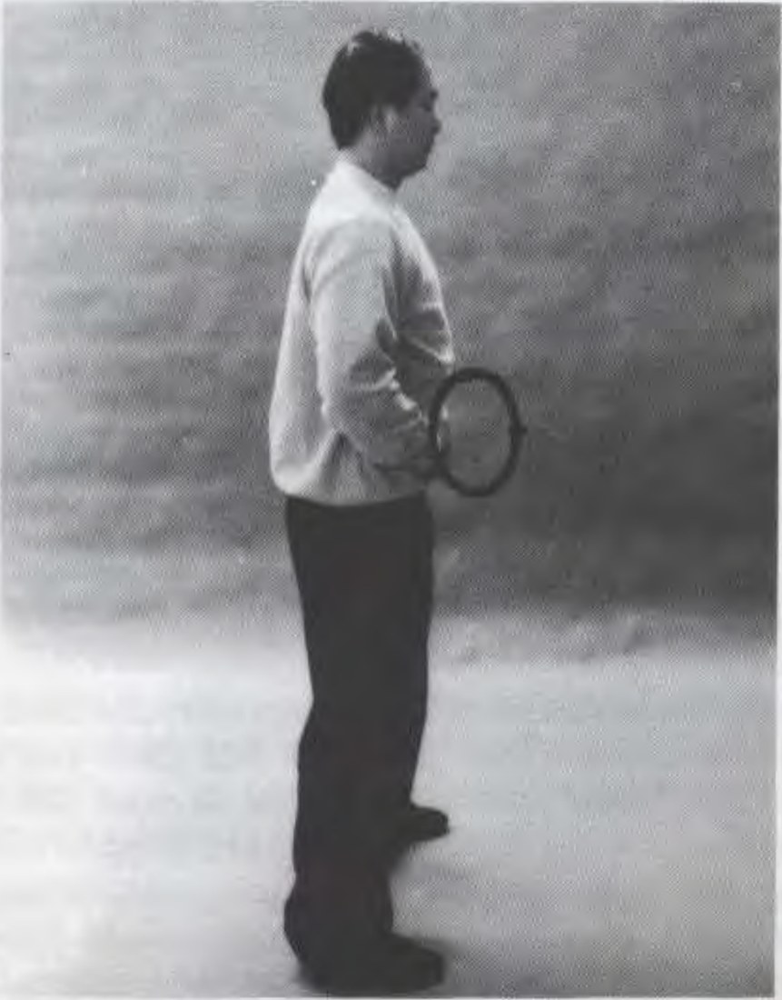
B. Nín Thở
Vì thở nghịch có thể gây căng thẳng và tạo áp lực ở vùng ngực, đôi khi người ta vô thức nín thở. Điều rất quan trọng là người mới luyện Khí Công phải hiểu rằng nín thở trong khi luyện tập là rất có hại. Có một số bài tập mà trong đó bạn nín thở, nhưng trừ khi bạn đang làm những bài tập đặc biệt đó, bạn nên cẩn thận giữ hơi thở êm ả và đều đặn.
5. Thở Nín Hơi (Holding the Breath Breathing)
Thở nín hơi là một kỹ thuật luyện tập dành cho khi một người luyện Khí Công muốn dẫn Khí của mình tới một vùng cụ thể và giữ nó ở đó. Chẳng hạn, các võ sĩ, đặc biệt trong các môn ngoại gia, sẽ tạo Khí trong các chi của họ rồi nín thở. Điều này khiến Khí lưu lại trong các chi để họ có thể dùng nó khi giao đấu. Lấy một ví dụ đời thường hơn, khi đẩy một chiếc xe, đôi khi bạn sẽ thấy rằng sau khi đã dồn sức, bạn nín thở để sức mạnh kéo dài lâu hơn. Trong luyện Khí Công nội gia, người luyện tập thường dẫn Khí tới một điểm cụ thể rồi nhẹ nhàng nín thở. Việc này có thể được làm để nâng tiềm năng trong một huyệt đạo nhằm tán giải một chỗ tắc. Khi một võ sĩ nội gia bị thương nội thương, người đó thường dẫn Khí tới vết thương và giữ nó ở đó một thời gian ngắn để tiếp năng lượng cho vùng đó và tăng tốc quá trình lành thương. Khi làm vậy, người đó phải nín thở nhẹ nhàng trong khi giữ cơ thể thư giãn để có thể cảm nhận và dẫn Khí.
Bạn có thể thấy rằng luyện Khí Công nín thở là một cấp độ cao hơn những gì đã bàn ở trên. Trước khi luyện điều này, bạn phải đã nắm vững các kỹ thuật thở đúng đắn và bạn phải hiểu Khí trong cơ thể mình, nếu không bạn sẽ làm tình hình tệ hơn. Bạn cũng nên hiểu rằng nếu bạn không biết tường tận Tại sao và Như thế nào của việc luyện tập, thì nín thở rất nguy hiểm — đặc biệt trong Khí Công Nội Đan. Khi bạn nín thở, Khí sẽ tích tụ và ứ trệ. Nếu Khí tích tụ này lưu lại trong một huyệt đạo hoặc trong các cơ quan, nó có thể ảnh hưởng tới hoạt động bình thường của cơ thể bạn. Người mới luyện rất dễ giữ Khí của mình ở đám rối dương và tim, điều này có thể gây tổn thương tim hoặc thậm chí tử vong.
Trong các môn Khí Công ngoại gia, nín thở không nguy hiểm như trong các môn nội gia. Hầu hết các môn Khí Công ngoại gia làm việc với Khí ở các chi. Khí ứ trệ ở các chi không nguy hiểm bằng ứ trệ trong thân, nơi nó có thể ảnh hưởng tới các cơ quan nội tạng.
Trong luyện Khí Công Nội Đan có ba mục đích chính của việc nín thở.
A. Dẫn Khí tới các đầu tận cùng, hoặc thậm chí vượt ra ngoài cơ thể
Hãy nhớ rằng khi bạn luyện Nội Đan, bạn phải giữ thư giãn và tĩnh lặng, khi đó bạn sẽ có thể dẫn Khí tới da. Thông thường, nếu không có luyện tập đặc biệt thì rất khó đưa Khí tới tóc hoặc vượt ra ngoài da. Những người luyện Khí Công Nội Đan nhận thấy rằng một khi họ đã dẫn Khí tới da, nếu họ nhẹ nhàng nín thở, họ có thể dùng tâm trí để dẫn Khí đi xa hơn. Khi Khí được giữ ở da, tiềm năng Khí được nâng lên và hàng triệu kinh Khí tí hon được khai mở. Điều này giúp Khí dễ dàng vượt qua da hơn. Bạn càng luyện nhiều, bạn sẽ càng có thể mở rộng nó xa hơn khỏi cơ thể mình. Người ta nói: "Dẫn Khí như xuyên qua một viên ngọc có lỗ với chín khúc quanh, không có nơi nào nhỏ nhất mà không tới được."(*2) Bạn phải có khả năng dẫn Khí tới từng phần trên cơ thể mình, từ sâu tận trong tủy xương cho tới vượt ra ngoài bề mặt da.
B. Di chuyển Khí mà không phối hợp nó với hơi thở
Bạn biết rằng khi bạn đưa vùng bụng vào ra, Khí được dẫn ra khỏi Đan Điền. Người mới luyện thường phải phối hợp việc này với hơi thở để làm nó hiệu quả. Sau nhiều năm luyện tập, có thể bạn sẽ muốn dẫn Khí (hay như người ta thường nói, phát Khí) hoàn toàn bằng tâm trí mà không phối hợp nó với hơi thở. Để làm việc này, hãy nín thở một thời gian ngắn trong khi giữ cơ thể hoàn toàn thư giãn. Hãy đưa vùng bụng vào ra, dẫn Khí lên trên hoặc xuống dưới mà không phối hợp nó với hơi thở. Khi bạn đạt tới giai đoạn này, người ta nói rằng bạn đã "nhặt được dược thảo nhỏ" (Tsae Sheau Yaw). Điều này vừa nghĩa là học trò bắt đầu có khả năng sử dụng Khí Công của mình (như nhặt một thứ gì lên để dùng), vừa nghĩa là người đó đang đưa Khí (dược thảo) lên lưng mình. Bài tập này được làm ở các giai đoạn đầu của việc luyện Khí Công, khi hầu hết học trò vẫn cần cử động vùng bụng để phối hợp chuyển động của Khí với việc khai mở và khép lại của huyệt Hội Âm (Huiyin) và hậu môn.
C. Luyện Ngủ Đông
Một trong những bài luyện Khí Công cao cấp nhất là luyện cho mình sử dụng ô-xy hiệu quả hơn. Nín thở là bước cơ bản nhất của việc luyện này. Bạn phải luyện cho mình giữ tĩnh lặng và thư giãn ngay cả khi nguồn không khí bị ngắt. Tâm thiền của bạn phải đạt tới tầng thiền ngủ, như các loài động vật ngủ đông, trong đó nhịp tim bạn chậm lại. Một khi bạn đã học được cách sử dụng ô-xy hiệu quả hơn, bạn sẽ thở càng ngày càng ít và có thể đi vào một giấc ngủ sâu. Chúng ta sẽ bàn về thở ngủ đông sau.
6. Thở Hít Vào và Thở Ra Trọn Vẹn (Full Inhale and Exhale Breathing)
Trong kiểu thở bụng này, bạn luyện hít vào và thở ra tới mức tối đa, phối hợp với chuyển động vào ra của vùng bụng. Bạn cũng cố kéo dài độ dài của mỗi hơi thở. Khi bạn luyện điều này, bạn tạo ra một âm thanh nhẹ khi hít vào và thở ra. Việc luyện này có nhiều khía cạnh.
A.
Giống như thở ngực đã bàn ở trên, thở bụng hít vào và thở ra trọn vẹn làm tăng lượng ô-xy bạn nạp vào và lượng khí các-bô-níc bạn thải ra. Tuy nhiên, bài tập này tiến thêm một bước so với thở ngực vì chuyển động vùng bụng khiến Khí tích tụ ở Đan Điền. Bài tập này cũng luyện cho các cơ bụng giãn nở và co lại tới mức tối đa.
B.
Khi bạn tạo ra một âm thanh nhẹ trong khi thở bụng hít vào và thở ra trọn vẹn, bạn nâng Ý và tinh thần mình lên mức tối đa. Điều này có thể giúp bạn dẫn Khí tới bề mặt da và tụ nó vào trung tâm cơ thể hoặc vào tủy xương.
Khi bạn luyện kiểu thở này, hãy giữ cơ thể thư giãn hết mức có thể. Tâm trí bạn phải tĩnh lặng và sáng rõ, để bạn có thể dẫn Khí tới da và tụ nó trong tủy xương. Đừng tạo thói quen làm việc hít vào và thở ra trọn vẹn này mọi lúc. Chỉ luyện nó thỉnh thoảng để làm sống động các tế bào phổi vốn thường không được dùng. Thở trọn vẹn là chìa khóa của thở bằng da, điều sẽ được bàn tiếp theo.
7. Thở Bằng Thân (Tii Shyi) hay Thở Bằng Da (Fu Shyi)
Thở bằng thân hay thở bằng da là một trong những mục tiêu chính của việc thở Khí Công. Nó nghĩa là khi bạn thở, toàn bộ cơ thể bạn cũng đang thở Khí qua da. Khi bạn thở ra, bạn đưa Khí tới da, và các lỗ chân lông của bạn mở ra; còn khi bạn hít vào, bạn hút Khí từ bên ngoài vào, và các lỗ chân lông khép lại. Khi bạn có thể dẫn Khí tới da trong lúc thở ra, nó giống như khi bạn phơi da mình dưới nắng nóng vào một ngày đông. Dưới nắng nóng, các lỗ chân lông của bạn mở ra để hấp thu và thải năng lượng dễ dàng hơn. Tuy nhiên, trong luyện Khí Công, bạn dùng tâm trí để dẫn Khí tới da nhằm tiếp năng lượng cho các lỗ chân lông từ bên trong cơ thể. Một khi các lỗ chân lông được tiếp năng lượng, chúng mở rộng ra; và khi bạn hít vào, Khí được dẫn vào trong và các lỗ chân lông khép lại. Sau khi bạn đã luyện Khí Công một thời gian, bạn sẽ muốn Khí của mình tới được từng tế bào trong cơ thể — đặc biệt là da. Thở bằng da cho phép bạn mở các lỗ chân lông để không khí có thể vào và loại bỏ chất thải tích tụ trong chúng. Dẫn Khí tới da là một bước bắt buộc nếu bạn muốn Khí của mình mở rộng ra ngoài cơ thể. Nếu bạn có thể đạt tới giai đoạn này, Khí của bạn sẽ có thể tới bất cứ đâu mà ý chí bạn dẫn nó tới. Bạn sẽ có nhiều Khí, và sự lưu thông Khí của bạn sẽ êm ả khắp mọi nơi. Đây là chìa khóa để duy trì sức khỏe và kéo dài tuổi thọ của bạn.
Khi bạn luyện thở bằng thân, hãy đặt tâm mình vào Đan Điền và tưởng tượng rằng cơ thể và Khí của bạn giống như một quả bóng bãi biển lớn. Mỗi khi bạn hít vào, Ý của bạn mang toàn bộ Khí về trung tâm và quả bóng co lại; và khi bạn thở ra, quả bóng tưởng tượng giãn ra. Nếu bạn bắt được mẹo này, bạn sẽ khám phá ra rằng quả bóng Khí này dần dần giãn ra để bao phủ toàn bộ cơ thể bạn. Khi bạn thở, quả bóng Khí này cũng thở (Hình 9-2).
Trong các sách Đạo gia, phương pháp thở bằng thân hay thở bằng da này được coi là một trong những "Fwu Chi Faa" (Phục Khí Pháp, các phương pháp khuất phục Khí), và được xếp vào "Ling Bao Bib Faa" (Linh Bảo Tất Pháp, phương pháp Linh Bảo để tới tận cùng). Trong việc luyện này, hãy bắt đầu bằng một hơi hít vào trọn vẹn và cố ý giữ không khí trong cơ thể. Sau đó, từ từ thả không khí ra. Khi bạn luyện phương pháp này, bạn cũng đang bắt đầu thực hiện thở bằng da hay thở bằng thân. Sau khi luyện lâu dài, bạn sẽ có thể kéo dài thời gian của các hơi thở và đạt tới mục tiêu của "Guei Shyi" (Thở Rùa). Người ta tin rằng rùa có thể sống vài trăm năm vì nó có thể trao đổi không khí trực tiếp qua da.

8. Thở Bằng Tay và Chân (Hands and Feet Breathing)
Trong thiền Trung Quốc có năm nơi hay trung tâm (Wuu Hsin, Ngũ Tâm) được coi là những cửa ngõ mà qua đó Khí trong cơ thể giao tiếp với Khí bao quanh bạn. Những trung tâm này là mặt, hai huyệt Dũng Tuyền (Yongquan) ở lòng bàn chân (Hình 9-3), và hai huyệt Lao Cung (Laogong) ở giữa lòng bàn tay (Hình 9-4). Đạo gia Ham Shiu Tzuu nói: "Bàn chân thở, liên tục và không gián đoạn, tồn tại một cách mềm mại."(*3) Juang Tzyy nói: "Người thường thở bằng cổ họng, người chân nhân (một vị tiên) thở bằng bàn chân."(*4)
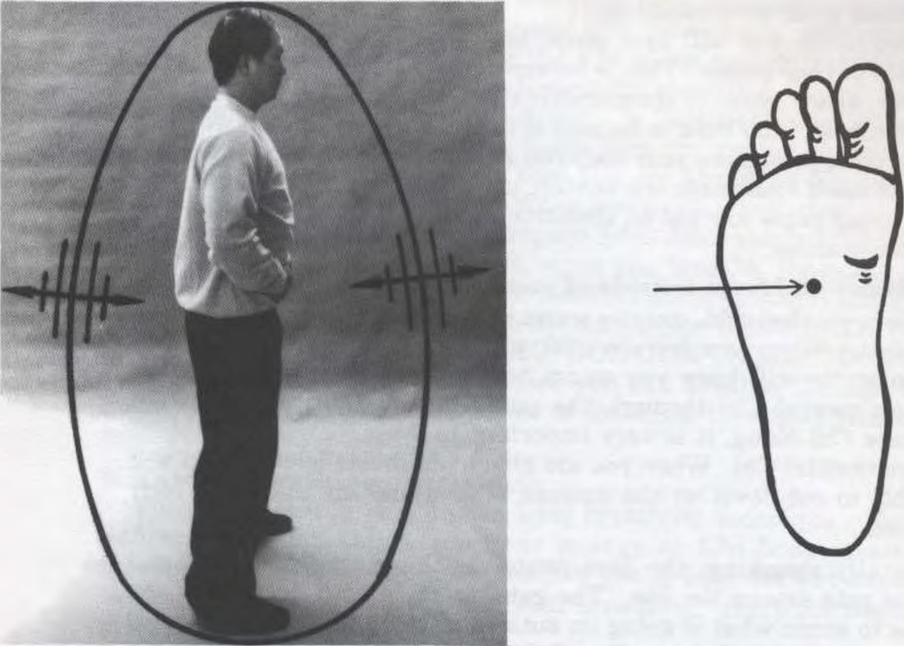
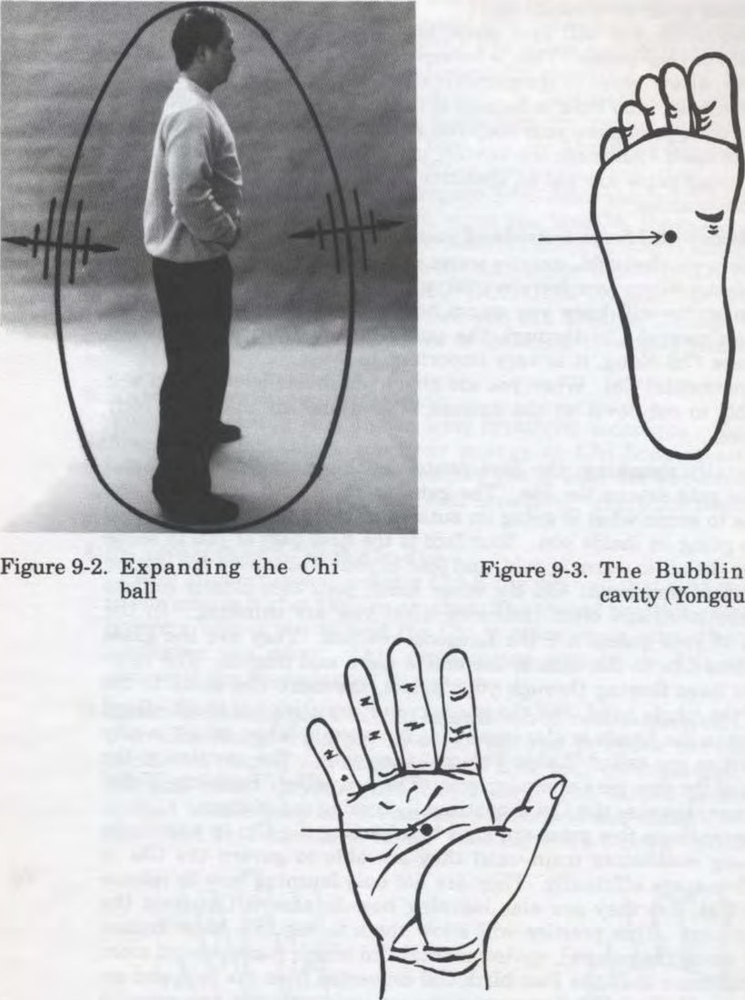
Những mục đích chính của các trung tâm hay cửa ngõ này là:
A. Điều hòa mức Khí của cơ thể
Chẳng hạn, khi cơ thể quá dương vì sốt, năm cửa ngõ này sẽ giải phóng Khí để làm mát cơ thể. Một cách chữa sốt rất phổ biến trong y học Trung Quốc là đặt bàn chân vào nước lạnh, và bôi cồn vào giữa lòng bàn tay rồi thổi lên đó. Điều này tăng tốc việc hạ mức Khí của cơ thể và do đó làm hạ nhiệt độ cơ thể. Bạn biết rằng vào mùa hè khi bạn rất nóng, bạn có thể làm mát bằng cách rửa mặt và tay trong nước lạnh. Và bạn có nhớ cảm giác tuyệt vời thế nào khi ngâm chân mình trong một dòng suối mát lạnh?
B. Cảm nhận môi trường xung quanh bạn
Bạn thường cảm nhận được nóng hay lạnh trước tiên trên mặt hoặc giữa lòng bàn tay. Đó là vì chúng là những trung tâm hay cửa ngõ cho phép bạn giao tiếp trực tiếp nhất với môi trường. Bạn phải có khả năng cảm nhận điều đang diễn ra với Khí quanh bạn trước khi cơ thể bạn có thể điều chỉnh mức Vệ Khí của mình để tự bảo vệ. Tuy rằng giữa lòng bàn chân cũng được tạo ra cho việc này, những cửa ngõ này không còn nhạy như xưa vì việc mang giày dép.
C. Hấp thu Khí từ bên ngoài cơ thể bạn
Khi bạn cảm thấy lạnh, bạn dùng nước ấm để rửa mặt, tay và chân. Khi bạn bị cảm lạnh, việc đặt chân và tay vào nước ấm sẽ giữ bạn ấm vì nó cho phép bạn hấp thu Khí từ môi trường qua các cửa ngõ để nuôi dưỡng cơ thể. Trong Khí Công Trung Quốc, việc luyện cho mình hấp thu Khí từ môi trường là rất quan trọng. Khi bạn có thể làm việc này hiệu quả, bạn sẽ có thể cắt giảm lượng thức ăn và không khí mà cơ thể mình cần.
Nói chung, trung tâm ở mặt là cửa ngõ quan trọng và nhạy cảm nhất trong năm cửa. Các cửa ngõ hoạt động theo cả hai chiều: bạn có thể cảm nhận điều đang diễn ra bên ngoài mình, nhưng chúng cũng tiết lộ điều đang diễn ra bên trong bạn. Mặt bạn là phần đầu tiên của bạn cảm nhận được không khí ấm hay lạnh, và bốn trong năm giác quan của bạn nằm ở mặt và đầu. Mặt khác, mặt bạn phản ánh rõ ràng cảm xúc của bạn, và thường cho thấy bạn đang nghĩ gì. Ở giữa lòng bàn tay bạn là các huyệt Lao Cung. Chúng là những cửa ngõ dẫn Khí tới da của toàn bộ lòng bàn tay và các ngón tay. Bạn càng có nhiều Khí chảy qua lòng bàn tay, càng nhiều Khí chảy tới da của cả bàn tay, và độ nhạy cảm xúc giác của bạn càng lớn. Dòng Khí tốt ở bàn tay cũng quan trọng cho lao động chân tay, đó là lý do các huyệt này được gọi là "Lao Cung" (cung điện lao động). Các huyệt ở lòng bàn chân đóng vai trò tương tự. Chúng được gọi là "Dũng Tuyền" (giếng sủi) vì Khí liên tục tuôn ra từ chúng.
Vì năm cửa ngõ này là chìa khóa để điều chỉnh Khí trong cơ thể bạn, những người thiền Khí Công luyện tập cho tới khi họ có thể điều khiển Khí ở năm vùng này một cách hiệu quả. Họ không chỉ học cách giải phóng Khí thừa, mà còn học cách hấp thu Khí từ môi trường. Việc luyện này sẽ cho phép họ điều hòa Khí của cơ thể bằng cách dùng Khí tự nhiên từ môi trường, vốn được coi là tinh khiết và trong sạch hơn Khí Hậu Thiên được chuyển hóa từ Tinh của thức ăn và không khí. Những người luyện Khí Công y học luyện hai cửa ngõ ở lòng bàn tay để họ có thể tăng hiệu quả trong việc điều chỉnh Khí của bệnh nhân. Các võ sĩ luyện hai cửa ngõ này để họ có thể dẫn Khí tới bàn tay hiệu quả hơn và tiếp năng lượng cho các cơ. Điều này cũng làm tăng khả năng cảm nhận năng lượng của đối thủ của họ, vốn được gọi là "nghe bằng da" trong các môn võ thuật nội gia. Họ cũng luyện các cửa ngõ ở bàn chân để có thể nhảy cao, chạy nhanh và đá mạnh. Bạn có thể thấy từ những ví dụ này rằng việc điều khiển Khí ở năm cửa ngõ là một mối quan tâm nghiêm túc trong mọi phái Khí Công Trung Quốc.
Trong phần trước chúng ta đã bàn về việc các lỗ chân lông trong da là hàng triệu cửa ngõ Khí tí hon, cho phép bạn cảm nhận môi trường và trao đổi Khí với nó. Đáng tiếc thay, vì con người đã bảo vệ cơ thể mình khỏi môi trường tự nhiên quá lâu bằng cách mặc quần áo, chúng ta đã mất đi rất nhiều độ nhạy cảm mà chúng ta từng có, và mà các loài vật vẫn còn có. Tuy nhiên, bàn tay và khuôn mặt vẫn còn giữ được nhiều độ nhạy cảm của chúng.
Để điều khiển Khí ở các cửa ngõ, bạn phải học cách thở qua giữa lòng bàn tay và lòng bàn chân. "Thở" ở đây nghĩa là trao đổi Khí của cơ thể lấy Khí của môi trường qua những kỹ thuật thở đặc biệt. Nói chung, thở bụng nghịch của Đạo gia là cách dễ nhất. Trong luyện tập Đạo gia, khi bạn hít vào, bạn hút Khí từ các chi vào trung tâm cơ thể mình. Trong khi làm vậy, hãy hình dung rằng bạn đang hấp thu Khí từ môi trường qua các cửa ngõ. Khi bạn thở ra, hãy dẫn Khí tới các cửa ngõ và thả nó vào không khí (Hình 9-5). Sau khi luyện tập lâu dài, bạn sẽ có thể cảm nhận được rằng khi bạn thở, năm cửa ngõ này cũng đang thở. Bạn phải luyện cho tới khi nó trở nên tự nhiên và bạn không cần tập trung vào nó để làm được. Hãy nhớ: HÃY ĐIỀU HÒA HƠI THỞ CHO TỚI KHI BẠN KHÔNG CÒN CẦN LÀM VIỆC ĐÓ MỘT CÁCH CÓ Ý THỨC NỮA. Đương nhiên, trước khi bạn có thể thở qua các cửa ngõ này, bạn phải đã nắm vững tất cả các kỹ thuật thở cơ bản mà chúng ta đã bàn trước đó.
9. Thở Chỉ (Thread Breathing, Guan Chi)
Thở chỉ là một kỹ thuật thở ở cấp cao hơn. Thông thường, trước khi bạn đạt tới giai đoạn này, thân năng lượng hay thân Khí của bạn đã trong suốt. Thở chỉ dạy bạn dẫn Khí tới bất cứ đâu trong cơ thể, phối hợp với hơi thở của bạn. Có hai mục đích chính của việc luyện này:
A. Điều chỉnh Khí trong cơ thể
Rất thường khi, sau khi luyện Khí Công, bạn sẽ thấy rằng Khí ở một vùng cao hơn ở vùng khác. Tuy nhiên, phương pháp thở chỉ cho phép bạn dẫn Khí tới các vùng khác một cách rất hiệu quả, bất cứ khi nào bạn muốn. Việc luyện này cũng có thể được dùng để điều chỉnh những mức Khí bất thường gây ra bởi bệnh tật.
B. Nâng Khí trong lành, tinh khiết lên và hạ Khí bẩn, ô nhiễm xuống
Trong luyện Khí Công, để bạn đạt tới các tầng thiền định cao hơn, bạn phải lắng hay hạ Hỏa Khí ô nhiễm của mình xuống và nâng Thủy Khí tinh khiết của mình lên. Phương pháp thở chỉ cũng được dùng để đảo ngược vị trí của Thủy Khí và Hỏa Khí. Phương pháp này gọi là "Kan Lii" (Khảm Ly, Hỏa–Thủy). Khi Hỏa Khí hạ xuống Đan Điền, nó sẽ được kiểm soát và lắng lại. Trong luyện Khí Công, người ta cũng thường hạ Hỏa Khí xuống tận lòng bàn chân và nâng Thủy Khí lên đỉnh đầu — một quá trình xâu toàn bộ cơ thể bạn lại với nhau.
C. Khai mở các kinh Khí và các mạch máu
Phương pháp thở chỉ không chỉ có thể giúp bạn hoàn thành Đại Chu Thiên, mà còn có thể khai mở tất cả các nhánh Khí khác ngoài Thập Nhị Chính Kinh.
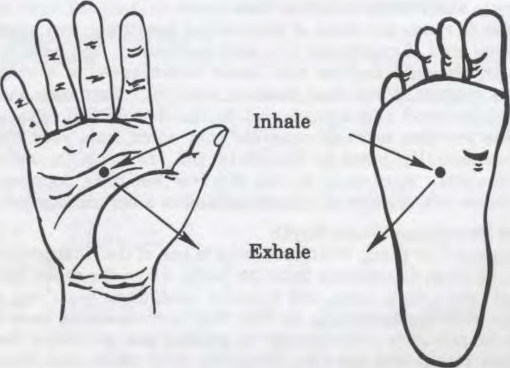
Bạn có thể thấy rằng việc luyện thở chỉ liên quan tới việc dẫn Khí di chuyển bên trong cơ thể bạn, một quá trình khác với các phương pháp thở bằng da và thở qua cửa ngõ, trong đó Khí được trao đổi với môi trường tự nhiên. Bạn nên hiểu rằng yêu cầu thứ nhất là cơ thể bạn phải được thư giãn hoàn toàn tới tầng thư giãn thứ ba, điều này sẽ cho phép Khí di chuyển tự do. Yêu cầu thứ hai là tâm trí bạn phải ở bên trong cơ thể mình chứ không phải bên ngoài cơ thể. Nếu tâm trí bạn không ở trong cơ thể, làm sao bạn có thể cảm nhận và dẫn Khí? Chúng ta sẽ bàn về điều tâm sau. Cuối cùng, bạn phải học cách phối hợp hơi thở với tâm trí và Khí. Đương nhiên, một người mới luyện không thể đạt tới giai đoạn này. Thông thường phải mất ít nhất 10 năm hoặc hơn luyện tập đúng đắn.
Chúng tôi muốn nhắc bạn rằng nhiều đề tài được bàn trong tập này được trình bày như thông tin, như một chỉ dẫn để hiểu Khí Công. Hầu như không ai có thể nắm được các chìa khóa chỉ bằng việc đọc cuốn sách này. Miễn là bạn nhớ: ĐỪNG NHÌN CAO MÀ BƯỚC THẤP, sớm muộn gì bạn cũng sẽ đạt tới mục tiêu của mình.
10. Thở Ngủ Đông (Hibernation Breathing, Don Main Far)
Một trong những cấp độ cao nhất của Khí Công liên quan tới việc rèn luyện tinh thần bạn rời khỏi cơ thể và đi chu du. Thường thì tinh thần bạn sẽ rời khỏi cơ thể trong những khoảng thời gian dài, đôi khi thậm chí vài tháng. Để giữ cho thân xác bạn sống được mà không có thức ăn trong khi tinh thần bạn đi vắng, nhịp tim bạn phải chậm lại, việc sử dụng năng lượng của cơ thể phải được giữ ở mức tối thiểu, và năng lượng phải được dùng một cách hiệu quả nhất. Thở ngủ đông khiến điều này trở nên khả thi, làm chậm nhịp thở của bạn gần như dừng lại, và làm nó rất nông. Thở ngủ đông cũng được luyện trong Yoga Ấn Độ.
Để đạt tới giai đoạn thở ngủ đông, trước hết bạn phải có một mức độ kinh nghiệm sâu sắc với thiền tĩnh. Bạn cần luyện cơ thể mình, qua việc nhịn ăn và các kỹ thuật khác, để từ từ và hiệu quả chuyển hóa Tinh của thức ăn dự trữ thành Khí. Cơ thể bạn phải hoàn toàn thư giãn và trong suốt với dòng Khí. Đương nhiên, trước khi bạn có thể tự do tách tinh thần mình khỏi thân xác, bạn thường cần hoàn thành việc luyện tập cho sự khai sáng tâm linh. Theo các tài liệu Tẩy Tủy, thông thường phải mất mười hai năm luyện tập đúng đắn với tư cách một ẩn sĩ hay tu sĩ.
11. Thở Thần (Shen Breathing, Shen Shyi)
Trong Khí Công tôn giáo, thở Thần là một trong những bài luyện cuối cùng trong việc dẫn Thần (Shen) tách khỏi cơ thể. Một khi tâm trí đã được điều hòa tới một tầng sâu, tĩnh lặng và thanh thản, thở Thần hợp nhất Thần với hơi thở để chúng tương ứng với nhau. Vì hơi thở là chiến lược của bạn trong việc dẫn dắt và điều khiển Khí, Thần của bạn chỉ có thể điều khiển Khí một cách hiệu quả khi Thần và hơi thở của bạn có thể phối hợp làm một.
Đương nhiên, trước hết bạn phải học cách giữ Thần của mình (Shoou Shen, thủ Thần), rồi cách làm nó vững vàng (Guh Shen, cố Thần). "Giữ" ở đây nghĩa là bảo vệ, nuôi dưỡng, và giữ Thần ở nơi trú ngụ của nó. "Vững" nghĩa là làm đặc lại, củng cố, và kiểm soát nó một cách hiệu quả ở Thượng Đan Điền. Sau khi bạn đã đạt tới mức này, bạn học cách dùng Ý của mình để đưa Thần rời khỏi nơi trú ngụ của nó và cuối cùng tách khỏi thân xác. Để đạt tới giai đoạn cuối cùng này, trước hết bạn phải học thở Thần. Khi bạn bắt đầu đưa Thần di chuyển, trước tiên nó ở gần nơi trú ngụ của nó, giống như một đứa trẻ nhỏ ở gần nhà khi nó mới bắt đầu biết đi.
Người ta nói trong giới Đạo gia: "Thần là chủ của Khí, và nó chuyển động và dừng lại cùng với Khí. Hơi thở là chìa khóa bí mật cho việc Khí tiến và lùi. Chìa khóa bí mật phải có chủ (Thần), và chủ phải có Ý. Ba thứ (Thần, hơi thở và Ý) phải được dùng cùng một lúc. Khi đó nó sẽ là môn công phu thật kỳ diệu và tinh tế của thiên chu. Khi thiếu một thứ, thật khó đạt tới mục tiêu cuối cùng."(*5) Bạn có thể thấy rằng Thần là bộ tổng chỉ huy của Khí và chuyển động cùng với nó. Bí quyết kiểm soát chuyển động của Khí là hơi thở. Tuy nhiên, quan trọng nhất là điều ở phía sau Thần. Chính Ý là thứ cuối cùng điều khiển toàn bộ việc luyện tập. Người ta cũng nói: "Thần và Khí chuyển động và dừng lại cùng nhau chứ không tách rời. Ý ở lại cung giữa như trục của một chiếc xe. Bánh xe (Thần và Khí) và trục xe (cung cấp cho nhau) sự nâng đỡ lẫn nhau. Trục không chuyển động, mà để cho các bánh xe tự quay."(*6) Thần và Khí chuyển động cùng nhau như các bánh xe. Tuy nhiên, những bánh xe này được dẫn dắt và điều khiển bởi trục xe. Trục xe này là tâm trí bạn (Ý). Tâm trí giữ ở trung tâm để nó có thể chỉ đạo điều đang diễn ra, nhưng nó không nên dính vào việc quay của các bánh xe. Đạo gia Tzyy Yang Tzuu nói: "Hãy chầm chậm chăm lo lò dược và trông chừng thời điểm (nấu), nhưng giữ an bình trong hơi thở Thần của bạn và để tự nhiên như nó vốn là."(*7) Câu này nghĩa là khi bạn đang xây dựng Khí ở Đan Điền, hãy làm chậm rãi và nhẹ nhàng. Hãy chú ý tới thời điểm để nhận ra khi dược thảo đã chín. Tuy nhiên, bạn phải giữ hơi thở Thần của mình an bình và để nó diễn ra tự nhiên. Ý nghĩa sâu xa của câu này là bạn phải luyện cho tới khi hơi thở Thần của bạn trở nên tự nhiên và bạn không cần Ý của mình điều hòa Thần nữa. Người ta cũng nói trong một tác phẩm kinh điển của Đạo gia: "Hơi thở ẩn trong Thần và Thần ẩn trong mắt. Đại Đạo (không có) hình dạng và không có tướng mạo."(*8)
12. Chân Thở (Real Breathing, Jen Shyi)
Chân thở, hay Jen Shyi, đến từ việc điều hòa hơi thở bình thường. Từ chân thở sinh ra thở thai tức. Một khi bạn đã điều hòa hơi thở bình thường của mình, bạn bắt đầu thở bụng, nhờ đó Khí được dẫn từ thận tới Hạ Đan Điền. Điều này đặt nền tảng cho chân thở. Vậy chân thở là gì? Người ta nói: "Cảnh tượng bên trong của 'chân thở' là (rằng) có Khí chuyển động lên xuống vài tấc dưới rốn (Đan Điền)."(*9)
Người ta cũng nói: "Chân thở, một khép một mở, ở trên thì nó không xung đột với tim; ở dưới thì nó không xung đột với thận. 'Chân nhân' (có thể) lặn xuống nước sâu, nổi lên nhanh nhẹn (nhưng) giữ được trung tâm điều hòa."(*10) "Một khép một mở" nghĩa là Khí đang co lại và giãn ra. Câu nói này giải thích rằng trong chân thở, Khí được sinh ra ở Đan Điền và chuyển động lên xuống. Khi nó đi lên, nó sẽ không quấy nhiễu hoạt động của tim; và khi nó đi xuống, nó sẽ không ảnh hưởng tới hoạt động bình thường của thận. Tim và thận là những cơ quan thiết yếu nhất và phải có mức Khí bình thường. Do đó điều quan trọng là khi bạn luyện Khí Công, bạn không để năng lượng thêm mà bạn phát triển can thiệp vào hoạt động bình thường của cơ thể. Một 'chân nhân' là người đã đạt tới giai đoạn chân thở, và Khí có thể đi sâu vào từng phần trên cơ thể người đó. Bất kể Khí này chuyển động thế nào, tâm trí (Ý) phải ở lại Đan Điền, vốn là "trung tâm điều hòa".
Người ta cũng nói: "Chân thở, như có như không, mềm mại và không dừng, một tên gọi khác là 'hô hấp nội'. (Tuy) hơi thở bình thường bên ngoài đã ngừng, có một cảnh tượng lên xuống bên trong ở Đan Điền."(*11) Bài ca Đạo gia, Ling Yuan Ge (Linh Nguyên Ca, Bài Ca Nguồn Linh Thiêng) nói: "Hãy tập trung vào (việc luyện) Khí cho tới khi nó đạt tới sự mềm mại, và Thần có thể ở lâu, tới lui của 'chân thở' tự nhiên thong thả."(*12) Câu này dẫn bạn tới chìa khóa của chân thở. Để đạt tới giai đoạn chân thở, bạn phải tập trung luyện cho dòng Khí của mình mềm mại hết mức có thể, và tinh thần bạn phải tập trung và ở lại một chỗ, khi đó một ngày nào đó bạn sẽ cảm nhận được những chuyển động lên xuống của Khí và đạt được 'chân thở'.
Chương Chín: Điều Tức (Tyau Shyi) (2)
Đạo gia San Feng Tzuu nói: "Đừng quên Khí, hãy điều hòa 'hơi thở thật', nhưng giữ Shiu Wu (không có gì), vận hành Kan (nước) và Lii (lửa)."(*13) Câu này có nghĩa là trong luyện tập Khí Công, bạn phải luôn chú ý đến Khí và học cách điều hòa 'hơi thở thật'. Hãy giữ tâm ở Thượng Đan Điền, nơi Thần của bạn ngự. Shiu Wu có nghĩa là "không có gì", và tượng trưng cho nơi mà thần linh ngự, bởi vì thần được sinh ra từ hư không. Nếu bạn làm được điều này, bạn sẽ có thể vận hành Thủy Khí lên để làm mát Hỏa Khí.
13. Hơi Thở Thai Nhi (Tai Shyi):
Ở chương một chúng ta đã đề cập rằng có hai loại Khí chính: Tiên Thiên Khí hay Nguyên Khí (Yuan Chi), và Hậu Thiên Khí. Nguyên Khí được chuyển hóa từ Nguyên Tinh mà bạn thừa hưởng từ cha mẹ, còn Hậu Thiên Khí được chuyển hóa từ Tinh chất của thức ăn và không khí. Nguyên Khí thường được coi là Âm Khí hay Thủy Khí, trong khi Hậu Thiên Khí được xem là Dương Khí hay Hỏa Khí.
Sách chép rằng: "Sinh ra dược thảo lớn không khác gì việc nuôi lớn vạn vật giữa trời đất. Tất cả chỉ là Dương và Âm, hai thứ Khí. Khi hai thứ Khí cung cấp lẫn nhau và trở thành một, thì trời và đất sẽ tác động qua lại lẫn nhau."(*14) Điều này có nghĩa là để sinh ra dược thảo (linh dược), bạn phải có cả Âm Khí và Dương Khí. Cả hai thứ Khí phải tác động qua lại lẫn nhau, thì một sinh linh hay dược thảo sẽ được tạo ra. Dược thảo hay sinh linh ở đây có nghĩa là thai nhi, đại diện cho sự khởi đầu của một sự sống mới.
Đạo gia Chang Tzyy-Chyong nói: "Không trợ giúp, không quên lãng, đó là hơi thở kỳ diệu. Để tu dưỡng bản tính con người (Đạo), (bạn) phải thấu hiểu công phu này. Điều hòa hai thứ Khí để khởi phát hơi thở thai nhi. Rồi dựng lò (dược thảo hay linh dược) trong đó."(*15) Câu này có nghĩa là khi tu dưỡng Đạo, bạn không nên tập trung (trợ giúp) cũng không nên lơ là (quên lãng) chiến lược hơi thở kỳ diệu. Để đạt tới giai đoạn hơi thở thai nhi, bạn phải học cách điều hòa Dương Khí và Âm Khí. Sau khi điều hòa được Dương Khí và Âm Khí, bạn sẽ có thể sinh ra linh dược trong đó.
Vậy hơi thở thai nhi là gì? Sách chép: "(Khi) Thần ẩn náu tại huyệt Khí, đó gọi là thai nhi. (Khi) (Hậu Thiên) Khí có thể đạt tới huyệt, đó gọi là hơi thở."(*16)
Trước khi tiếp tục, bạn cần hiểu trước huyệt được nhắc ở đây là gì. Trong Khí Công, một số vị trí được gọi là "Yuan Chiaw", nghĩa là "huyệt nguyên thủy", hay "điểm then chốt nguyên thủy". Một trong những vị trí này được gọi là "Hwang Tyng" hay "Sân Vàng". Đạo gia xưa mặc áo bào vàng, nên đương nhiên tên gọi này được dùng thường xuyên trong xã hội Đạo gia. Huyệt Hwang Tyng nằm phía sau rốn và phía trước Mingmen (Hình 9-6). Đó là trọng tâm của cơ thể bạn. Đây là nơi các tế bào của hài nhi bắt đầu sinh sôi. Trong hơi thở thai nhi, Thần của bạn có thể ngự tại Hwang Tyng và Hậu Thiên Khí có thể đạt tới đó. Rồi Dương Khí và Âm Khí tác động qua lại, và một "hài nhi" mới được sinh ra. Đạo gia Li Ching-An nói: "Thần và Khí kết hợp để khởi phát phẩm chất siêu linh, Tâm và hơi thở nương tựa lẫn nhau để sinh ra thai nhi thánh thiện."(*17) Tâm ở đây có nghĩa là tâm trí và Thần.
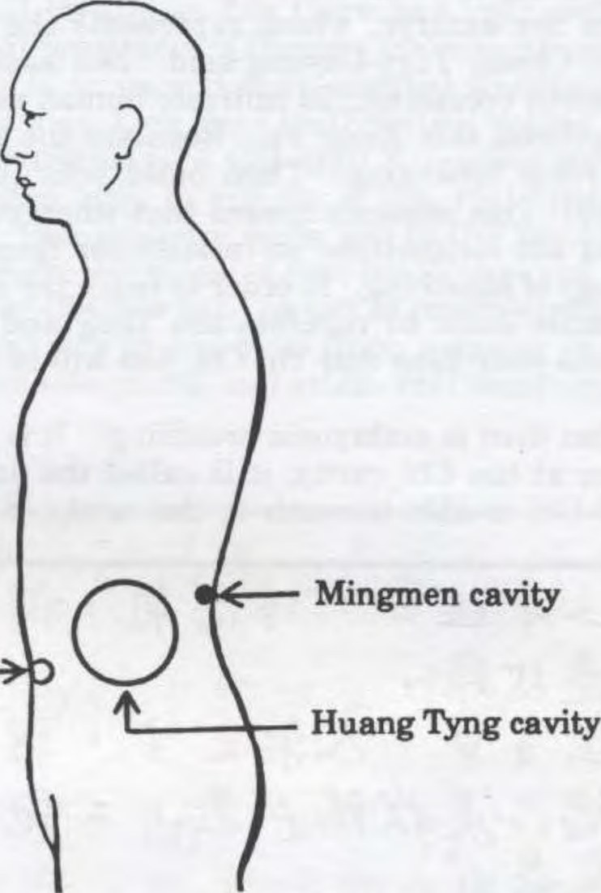
Luận thư Đạo gia Wuh Jen Pian (Luận về Ngộ Chân) nói: "Có ba loại hơi thở. Từ thô đến tế, hít vào và thở ra qua mũi là hơi thở mũi. Giữ trung tâm (Hạ Đan Điền) và lên xuống, là hơi thở Khí. (Khi) cực kỳ tĩnh lặng và trở về gốc rễ của nó, đó gọi là hơi thở Thần. Bởi vậy, để đánh giá (nghĩa là để lượng định), hơi thở (nghĩa là hơi thở mũi) không cao bằng điều hòa (hơi thở bụng thật), và hơi thở điều hòa không cao bằng hơi thở Thần. Khi hơi thở Thần trở nên an hòa, thì ngưng tụ Thần vào huyệt Khí (Hwang Tyng), rồi hơi thở thật sự sâu."(*18) Lời này giải thích các mức độ của hơi thở. Đầu tiên, bạn học hơi thở mũi từ thô đến tế, cho đến khi hơi thở trở nên thư giãn, sâu, mượt và tự nhiên. Rồi bạn bước vào hơi thở bụng và cuối cùng bước vào hơi thở thật. Sau khi đã đạt tới giai đoạn hơi thở thật, bạn luyện hơi thở Thần cho đến khi Thần của bạn có thể đạt tới huyệt Hwang Tyng và Hậu Thiên Khí cũng có thể đạt tới đó, để thai nhi thánh thiện được sinh ra và linh dược được thành hình.
Để kết thúc mục này, điều quan trọng đối với người luyện Khí Công là học những cách điều hòa hơi thở đúng đắn. Có nhiều cách điều hòa hơi thở, mà chúng tôi đã sắp xếp từ cơ bản nhất đến sâu nhất và khó nhất. Để đạt tới mục tiêu cuối cùng là hơi thở thai nhi, bạn phải bắt đầu bằng việc điều hòa hơi thở bình thường. Nó được gọi là "Byi Shyi", nghĩa là "hơi thở mũi". Từ hơi thở bình thường đều đặn, bạn sẽ bước vào giai đoạn hơi thở bụng, giúp bạn tích tụ Khí tại Đan Điền. Chính Khí này sẽ dẫn bạn tới cánh cửa của luyện tập Khí Công thật sự. Sự luyện tập này được gọi là "Chi Shyi", hay "hơi thở Khí". Khi đã đạt tới mức này, Khí nơi Đan Điền có thể di chuyển lên xuống theo hơi thở của bạn. Lúc này bạn đã đạt tới mục tiêu của "hơi thở thật". Cuối cùng, bạn sẽ dẫn Hậu Thiên Khí tới "Huyệt Hwang Tyng" để tác động qua lại với Tiên Thiên Khí và sinh ra "thai nhi thánh thiện". Khi hoàn thành giai đoạn này, bạn sẽ thành hình "Linh Dược". Giai đoạn hơi thở này được gọi là "Tai Shyi", nghĩa là "hơi thở thai nhi".
Đạt tới mục tiêu cuối cùng của hơi thở thai nhi là rất khó. Khi đã đạt tới giai đoạn này, bạn sẽ đã xây dựng được nền tảng của sự giác ngộ. Gần như không thể đạt tới giai đoạn này mà không trở thành một ẩn sĩ. Rất ít người luyện Khí Công thật sự làm được điều đó. Người bình thường tìm kiếm sức khỏe tốt và tuổi thọ dài có lẽ khả thi hơn khi đạt tới giai đoạn "hơi thở thật".
9-4. Những Điểm Then Chốt Chung Về Điều Hòa Hơi Thở Bình Thường
Nếu bạn là người mới học Khí Công, bạn nên bắt đầu bằng việc điều hòa hơi thở bình thường, và đừng bận tâm đến bất kỳ luyện tập điều hòa Khí nào khác. Điều này sẽ dần dẫn bạn vào hơi thở Khí. Có tám từ then chốt cho hơi thở không khí mà người mới luyện Khí Công nên ghi nhớ trong bài tập hơi thở bình thường của mình. Một khi hiểu được chúng, bạn sẽ có thể rút ngắn đáng kể thời gian cần để đạt tới mục tiêu Khí Công của mình. Tám từ then chốt này là:
-
Tĩnh Lặng và Yên Tĩnh (Jing): Tâm trí tĩnh lặng và hơi thở yên tĩnh. Khi tâm trí bạn tĩnh lặng và an bình, bạn sẽ có thể phán đoán điều đang diễn ra một cách đúng đắn và điều hòa hơi thở hiệu quả hơn. Trừ khi bạn đang thực hiện luyện tập đặc biệt cho một mục đích cụ thể nào đó, hãy giữ hơi thở yên tĩnh để nó thư giãn và an bình.
-
Mảnh (Shyi): Khi bạn thở, nó giống như một dòng suối nhỏ — phải mượt, tự nhiên và mảnh. Điểm then chốt này sẽ dẫn bạn vào những mức độ thiền định và thư giãn sâu hơn.
-
Sâu (Shenn): Khi bạn thở sâu, hãy kéo không khí xuống bụng. Kéo không khí vào bằng cách hạ cơ hoành xuống, thay vì mở rộng lồng ngực. Chỉ mở rộng lồng ngực nếu bạn đang tập bài tập mở rộng lồng ngực. Hơi thở sâu sẽ dẫn bạn tới hơi thở bụng và xây dựng nền tảng cho luyện tập Khí Công của bạn. Hơi thở sâu và trọn vẹn không có nghĩa là bạn hít vào và thở ra tới mức tối đa. Điều này sẽ khiến phổi và các cơ xung quanh căng cứng, mà lại khiến không khí không lưu thông tự do, và cản trở việc hấp thụ oxy. Không đủ oxy, tâm trí bạn trở nên tán loạn, và phần còn lại của cơ thể căng lên. Trong hơi thở đúng, bạn hít vào và thở ra khoảng 70% hoặc 80% dung tích tối đa của mình, để phổi giữ được thư giãn.
Bạn có thể thực hiện một thí nghiệm dễ dàng. Hít vào thật sâu để phổi căng đầy hoàn toàn, và đo xem bạn giữ được hơi thở bao lâu. Rồi thử hít vào chỉ khoảng 70% dung tích của mình, và xem bạn giữ được hơi thở bao lâu. Bạn sẽ thấy rằng với cách sau, bạn trụ được lâu hơn nhiều so với cách đầu. Đơn giản là vì phổi và các cơ xung quanh được thư giãn. Khi chúng thư giãn, phần còn lại của cơ thể và tâm trí bạn cũng có thể thư giãn, điều này làm giảm đáng kể nhu cầu oxy của bạn. Bởi vậy, khi điều hòa hơi thở, ưu tiên đầu tiên là giữ phổi thư giãn và tĩnh lặng.
-
Dài (Charng): Khi bạn thở, bạn nên giữ hơi thở dài nhất có thể. Tuy nhiên, bạn nên nhớ rằng THỞ DÀI KHÔNG CÓ NGHĨA LÀ NÍN HƠI THỞ. Để thở dài, phổi của bạn phải rất thư giãn và tâm thiền định của bạn phải đạt tới mức sâu. Trong trường hợp này, nhịp tim bạn sẽ chậm lại, và bạn sẽ cần ít oxy hơn. Chỉ trong những điều kiện này hơi thở của bạn mới có thể dài.
-
Liên Tục (Lou): Hơi thở của bạn phải mượt, tự nhiên, và quan trọng nhất, liên tục. Trừ khi là để luyện tập chuyên biệt, hơi thở của bạn phải liên tục và không ngưng trệ. Khi bạn dừng lại hay nín hơi, cơ thể bạn sẽ căng lên. Hơi thở liên tục sẽ giúp bạn thư giãn và dẫn bạn tới tâm thiền định sâu hơn.
-
Đều Đặn (Yun): Hơi thở của bạn phải đều đặn. Như chúng ta đã đề cập ở phần trước, hơi thở của bạn bị ảnh hưởng bởi cảm xúc của bạn. Để đạt được sự đều đặn trong hơi thở, bạn phải điều hòa tâm cảm xúc của mình. Chỉ điều này mới cho phép bạn giữ hơi thở đều đặn và mượt mà.
-
Chậm (Roan): Trừ khi bạn đang luyện tập một bài đặc biệt, tâm trí bạn phải chậm lại và bạn phải thong thả với hơi thở của mình. Hãy thư thái và tự nhiên. Đừng vội vàng hít vào và thở ra.
-
Mềm (Mian): Khi bạn thở, hơi thở của bạn phải nhẹ nhàng và mềm. Hơi thở mềm làm bạn thư giãn và dẫn bạn tới tâm thiền định sâu hơn.
9-5. Sáu Giai Đoạn Điều Hòa Hơi Thở
Trong xã hội Khí Công, có sáu từ thông dụng được dùng kết hợp với việc điều hòa hơi thở. Chúng đại diện cho sáu giai đoạn trong luyện tập. Những từ này là:
1. Đếm (Su): Đếm hơi thở (Su Shyi)
Đếm là cách đầu tiên và cơ bản nhất để điều hòa hơi thở. Trước tiên, hãy làm tĩnh lặng tâm và hơi thở của bạn, theo tám điểm then chốt điều hòa đã giải thích ở trên. Rồi bắt đầu đếm hơi thở của bạn chậm rãi từ một đến mười và từ mười đến một. Hoặc, bạn có thể chỉ đếm các lần hít vào hoặc thở ra. Việc chú ý đến con số đếm giữ cho tâm trí bạn không tập trung vào hơi thở và trở nên căng thẳng. Điều này giúp bạn dẫn tâm trí vào trạng thái thiền định. Nó tương tự như ý tưởng đếm cừu khi bạn muốn ngủ thiếp đi.
2. Theo Dõi (Suei)
Theo dõi có nghĩa là theo dõi hơi thở (Suei Shyi). Một khi bạn đã có thể điều hòa hơi thở bằng phương pháp đếm, bạn chuyển sang phương pháp này. Hãy ý thức về hơi thở của bạn và theo dõi việc hít vào và thở ra. Khi bạn làm được điều này mà không căng thẳng, tâm trí và hơi thở của bạn sẽ hợp nhất và trở thành một. Tâm trí ở đây có nghĩa là tâm cảm xúc, bởi vì chính tâm cảm xúc mới làm xáo trộn sự tĩnh lặng và suy nghĩ an bình của bạn. Sách chép: "Hsin Shyi Shiang Yi" (*19), nghĩa là "Tâm (trí) và hơi thở (là) nương tựa lẫn nhau." Khi tâm trí bạn có thể theo dõi hơi thở, tâm trí sẽ bước vào trạng thái thiền định sâu hơn và hơi thở sẽ chậm lại thêm. Theo dõi là một kỹ thuật quan trọng trong việc dùng hơi thở và tâm trí để giúp nhau bước vào những trạng thái thiền định sâu hơn.
3. Dừng (Tzyy)
Dừng có nghĩa là dừng suy nghĩ về hơi thở của bạn (Tzyy Shyi). Một Đạo gia cổ tên Li Ching-An nói: "Điều hòa hơi thở nghĩa là điều hòa hơi thở thật cho đến khi (bạn) dừng lại."(*20) Điều này có nghĩa là điều hòa đúng đắn nghĩa là không phải điều hòa một cách có ý thức. Nói cách khác, dù bạn bắt đầu bằng việc điều hòa hơi thở một cách có ý thức, bạn phải đạt tới điểm mà việc điều hòa diễn ra tự nhiên, và bạn không còn phải nghĩ về nó nữa. Khi bạn thở, nếu bạn tập trung tâm trí vào hơi thở, đó không phải là điều hòa thật, bởi vì Khí trong phổi bạn sẽ trở nên ngưng trệ.
Khi bạn đạt tới mức điều hòa thật, không cần điều hòa nữa, và bạn có thể dùng tâm trí mình một cách hiệu quả để dẫn Khí. Hãy nhớ rằng KHẮP NƠI NÀO CÓ Ý, NƠI ĐÓ CÓ KHÍ. NẾU Ý DỪNG LẠI Ở MỘT CHỖ, KHÍ SẼ NGƯNG TRỆ. CHÍNH Ý DẪN KHÍ VÀ LÀM CHO KHÍ DI CHUYỂN. Bởi vậy, khi bạn ở trong trạng thái điều hòa hơi thở đúng đắn, tâm trí bạn được tự do. Không có âm thanh, ngưng trệ, gấp gáp hay do dự, và bạn có thể tĩnh lặng và an bình. Khi bạn đạt tới giai đoạn này, bạn đã có được chiếc chìa khóa thật cho thiền định.
4. Nhìn (Guan)
Nhìn có nghĩa là cảm nhận và giác tri hơi thở (Guan Shyi). Nó cũng thường được gọi là "Ting Shyi", hay "nghe hơi thở". Các từ nhìn và nghe ở đây không có nghĩa là thật sự nhìn bằng mắt và nghe bằng tai. Chúng chỉ việc dùng tâm trí của bạn để cảm nhận và giác tri điều đang diễn ra. Trong thiền định, điều này được gọi là "Nei Shyi Fan Ting"(*21), nghĩa là "Nhìn vào bên trong và nghe vào bên trong." Bởi vậy, trong thiền định Khí Công, bạn không chú ý đến bất cứ thứ gì bên ngoài cơ thể mình. Bạn dùng tâm trí để cảm nhận và giác tri (nhìn và nghe) vào bên trong. Khi bạn đã đạt tới giai đoạn điều hòa hơi thở mà không cần điều hòa, tâm trí bạn sẽ được tự do. Rồi bạn có thể tập trung tâm trí vào sự chuyển động của Khí, và bạn có thể dẫn Khí tới bất cứ đâu bạn muốn. Bạn sẽ có thể dẫn Khí tới từng tế bào trong cơ thể mình và cảm thấy cơ thể mình trong suốt.
5. Trở Về (Fan)
Fan Shyi (hơi thở trở về) có nghĩa là đưa hơi thở của bạn trở về cách tự nhiên của nó. Điều đó cũng ngụ ý rằng trong giai đoạn này bạn sẽ đã đạt tới mức điều hòa hơi thở mà không cần điều hòa. Nghĩa là khi bạn đã thuần thục giai đoạn này, bạn sẽ không chỉ đưa hơi thở trở về cách tự nhiên, mà còn đạt tới giai đoạn hơi thở kết hợp với tâm trí và chúng trở thành một. Hơi thở phản chiếu tâm trí, và tâm trí phản chiếu hơi thở. Hơi thở của bạn lúc này được điều hòa tự động, và bạn không còn phải chú ý một cách có ý thức đến nó nữa, và tâm trí bạn lúc này tự điều hòa chính nó.
Điều hòa tâm trí đòi hỏi bạn phải hiểu cách thức (Đạo) mà Tự Nhiên vận hành. Tâm trí bạn lúc này được tự do và có thể bước vào một trạng thái thiền định sâu, và bạn có thể nhìn thấy bên dưới bề mặt của sự vật và biến cố và hiểu được bản chất thật của chúng. Bước đầu tiên đến điều này là hiểu chính mình. Bạn cần thấu hiểu ý nghĩa của cuộc sống. Hơi thở là dấu hiệu của sự sống, và là ranh giới phân chia Âm và Dương. Khi bạn hiểu hơi thở của mình, bạn hiểu cuộc sống của mình. Điều này liên quan đến việc trong sự hiểu biết của bạn, bạn di chuyển từ hai cực là Âm cực đoan và Dương cực đoan về phía giữa, nơi có mọi sắc thái và tầng bậc tinh tế của sự tồn tại. Khi tâm trí bạn có thể ở lại tại trung tâm, bạn có thể phán đoán một cách trung lập và nhìn thấy rõ ràng. Hai cực Âm và Dương trở về nguồn cội của chúng — "Wu Chi" (Vô Cực). Hơi thở tự nhiên cho tâm trí bạn sự sáng suốt, để bạn có thể nhìn vào chính mình và tìm ra con người thật của bạn. Chỉ sau khi hiểu chính mình, bạn mới có thể hiểu được bản chất thật hay "Đạo" thật.
Vạn vật đều có nguồn cội của nó. Để hiểu bản chất thật, bạn phải truy ngược về nguồn cội của nó. Fan Shyi là tiến trình đưa bạn trở về nguồn cội của chính mình. Đây là một bước cần thiết để trở thành một "Phật" hay đạt tới "giác ngộ". Sách chép: "Jiann Shing Leau Ran"(*22), nghĩa là "Thấy được Bản Tính và hiểu được thật sự nó là gì." Khi bạn đã đạt tới giai đoạn này, bạn đã vượt qua giai đoạn điều hòa thân xác và có thể tập trung vào những vấn đề tinh thần.
6. Thanh Tịnh (Jing)
"Thanh tịnh" có nghĩa là "đã được điều hòa", nên trong phương pháp này bạn dùng hơi thở tự nhiên để điều hòa những suy nghĩ của mình (Jing Shyi), dù thuật ngữ này cũng chỉ giai đoạn hơi thở và tâm trí trở thành một và tâm trí được điều hòa. Một khi bạn hiểu được con người thật của mình và bản chất thật nằm bên dưới những vẻ ngoài bề mặt, bạn sẽ dùng hơi thở này để điều hòa tâm trí mình vào một trạng thái mà bạn thoát khỏi cảm xúc. Chỉ khi đó bạn mới có thể đạt tới những giai đoạn cao hơn của tu dưỡng tinh thần. Tiến trình thanh lọc tâm cảm xúc này là giai đoạn cuối cùng của Khí Công tôn giáo. Theo Phật giáo, để trở thành một Phật, bạn phải loại bỏ bảy cảm xúc và sáu dục vọng. Một khi bạn đã đạt tới giai đoạn này, thân thể bạn thanh tịnh và tinh thần bạn thuần khiết. Khi tâm trí và tinh thần bạn đã đạt tới giai đoạn này, nó được gọi là "Jing" (thanh tịnh).
Để kết thúc chủ đề này, và hy vọng khơi gợi cho bạn thêm suy ngẫm, tôi xin giới thiệu thêm một số bài thơ liên quan đến việc điều hòa hơi thở. Bạn nên luôn nhớ rằng luyện tập hơi thở trao cho bạn những kỹ thuật và chiến lược giúp bạn điều hòa thân và tâm trong luyện tập Khí Công. Bằng cách điều hòa thân, tâm và hơi thở, bạn sẽ có thể điều hòa Khí của mình và dẫn nó một cách trôi chảy và tự nhiên. Khí và hơi thở tương quan với nhau và không thể tách rời. Ý tưởng này được giải thích thường xuyên trong văn học Đạo gia. Đạo gia Goang Cherng Tzyy nói: "Một lần thở ra, Địa Khí dâng lên; một lần hít vào, Thiên Khí hạ xuống; người thật (nghĩa là người đã đạt được Đạo thật) thở lặp đi lặp lại tại rốn, thì Khí thật của ta tự nhiên được kết nối."(*23) Lời này nói rằng bụng của bạn nên là trung tâm của hơi thở, gần như thể bạn đang thở qua rốn của mình. Địa Khí là năng lượng âm (Âm) từ thận của bạn, và Thiên Khí là năng lượng dương (Dương) đến từ thức ăn bạn ăn và không khí bạn thở. Khi bạn thở từ rốn, hai thứ Khí này có thể kết nối và kết hợp. Một số người nghĩ rằng họ biết Khí là gì, nhưng thật ra họ không biết. Một khi bạn kết nối được hai thứ Khí, bạn sẽ biết Khí "thật" là gì, và bạn có thể trở thành một người "thật", nghĩa là người đã đạt được Đạo.
Sách Đạo gia Chain Tao Jing Yen (Ca (về) Đạo (bằng) Lời Thật) nói: "Một thở ra một hít vào để thông công năng của Khí, một động một tĩnh là như nhau (là nguồn của) sáng tạo và biến hóa."(*24) Phần đầu của lời này lại ngụ ý rằng sự vận hành của Khí gắn liền với hơi thở. Phần thứ hai có nghĩa là mọi sáng tạo và biến hóa đều đến từ sự tác động qua lại của động (Dương) và tĩnh (Âm).
Hwang Tyng Ching (Sân Vàng Kinh) nói: "Hãy thở Nguyên Khí để cầu bất tử."(*25) Điều này có nghĩa là để đạt tới mục tiêu bất tử, bạn phải tìm ra và hiểu được Nguyên Khí, bằng phương tiện là hơi thở đúng đắn.
Hơn nữa, Đạo gia Wuu Jen Ren nói: "Dùng hơi thở hậu thiên để tìm nơi thở của người thật (tức là người bất tử)."(*26) Trong câu này, rõ ràng là để định vị được nơi thở của người bất tử (Đan Điền), bạn phải dựa vào và biết cách điều hòa hơi thở hậu thiên, hay hơi thở tự nhiên, của mình. Qua việc điều hòa hơi thở hậu thiên của bạn, bạn sẽ dần có thể định vị được nơi ngự của Khí (Đan Điền), và cuối cùng bạn sẽ có thể dùng Đan Điền của mình để thở như những Đạo gia bất tử.
Cuối cùng, trong bài ca Đạo gia Ling Yuan Dab Tao Ge (Đại Đạo Ca về Nguồn Cội của Tinh Thần), sách chép: "Các Nguyên (Nguyên Tinh, Khí và Thần) được vận chuyển bên trong một cách an hòa, để bạn có thể trở thành người thật (bất tử); (nếu bạn) chỉ dựa vào hơi thở bên ngoài, (bạn) sẽ không đạt tới cùng đích (mục tiêu)."(*27) Từ bài ca này, bạn có thể thấy rằng hơi thở bên trong (thở tại Đan Điền) là chìa khóa để luyện tam bửu của bạn và cuối cùng đạt tới bất tử. Tuy nhiên, trước tiên bạn phải biết cách điều hòa hơi thở bên ngoài của mình cho đúng đắn.
Điều Tâm (Tyau Hsin)
10-1. Giới thiệu
Người Đạo gia nói: "Khi truyền dạy Đại Đạo, trước tiên phải dừng niệm; nếu niệm không dừng thì (bài học) chỉ uổng công."(*1) Điều này có nghĩa là khi bạn mới bắt đầu luyện Khí Công, phần luyện tập khó nhất chính là dừng suy nghĩ của mình. Mục tiêu cuối cùng cho tâm của bạn là "niệm của vô niệm."(*2) Tâm bạn không nghĩ về quá khứ, hiện tại hay tương lai, nên bạn không bị chúng chi phối. Tâm bạn có thể an tĩnh và vững vàng, và bạn có thể đạt được sự bình an. Chỉ khi bạn ở trong trạng thái "niệm của vô niệm", bạn mới thư giãn và có thể cảm nhận một cách an tĩnh và chính xác.
Bạn có thể thấy rằng điều tâm có lẽ là chìa khóa thứ hai để luyện Khí Công thành công. Điều tâm được gọi là "Tyau Hsin," nghĩa là "điều (tâm) tình cảm." Ở chương thứ ba chúng ta đã bàn về những khác biệt giữa tâm tình cảm (Tâm – Hsin) và tâm trí tuệ (Ý – Yi). Trước khi bàn cách điều phục tâm tình cảm của bạn, chúng ta hãy tóm tắt những khác biệt giữa Tâm (Hsin) và Ý (Yi).
- Ý (Yi) là tâm liên quan đến trí tuệ và sự phán đoán đúng đắn của bạn. Ý được sinh ra từ tư duy sáng suốt và thì an tĩnh, bình an và trong sáng. Tâm (Hsin) là tâm biểu lộ những cảm giác, cảm xúc và ham muốn của bạn. Tâm (Hsin) có thể bị kích động, hưng phấn và mê loạn. Khi Tâm (Hsin) và Ý (Yi) cùng làm việc với nhau, nhân tính và nhân cách nội tại của bạn sẽ được biểu hiện.
- Ý (Yi) được coi là "Tâm Nước" và được nuôi dưỡng bằng "Khí Nước" (Nguyên Khí) sinh ra từ Nguyên Tinh (Yuan Jieng). Trong khi đó Tâm (Hsin) được coi là "Tâm Lửa" và được nuôi dưỡng bằng "Khí Lửa" được chuyển hóa từ tinh chất của thức ăn và không khí.
Trong luyện Khí Công, điều tâm nghĩa là dùng tâm trí tuệ của bạn (Ý – Yi) để điều phục tâm tình cảm của bạn (Tâm – Hsin). Sau khi tâm tình cảm nằm dưới sự kiểm soát của tâm trí tuệ, bạn sẽ an tĩnh và bình an. Ý (Yi) là chủ nhân của Tâm (Hsin). Sau khi Ý của bạn đã kiểm soát được Tâm của bạn, bạn sẽ có thể dẫn Ý của mình vào một tầng thiền định sâu hơn và cuối cùng đạt đến giai đoạn "niệm của vô niệm." Phép luyện điều tâm này được gọi là "Chyn Yuan Juo Maa"(*3), nghĩa là "Bắt vượn và bắt ngựa." Con vượn tượng trưng cho Tâm (Hsin) và con ngựa tượng trưng cho Ý (Yi). Tâm (Hsin), tâm tình cảm, giống như con vượn luôn chạy nhảy lung tung. Bạn phải xích nó lại và huấn luyện nó sao cho, dù nó vẫn còn tình cảm và dễ bị kích động, nó đã nằm dưới sự kiểm soát của bạn. Ý (Yi) giống như con ngựa mạnh mẽ và rất hữu dụng, nhưng vẫn phải được huấn luyện và đóng yên trước khi có thể dùng được. Một khi con ngựa đã được thuần hóa và huấn luyện, nó có thể an tĩnh, vững vàng và bình an.
Đạo gia Chorng Yang Tzuu nói: "Buồn ngủ thì bắt vượn và bắt ngựa; khi tỉnh dậy, lại hái 'Ling Jy'; lặp lại phép luyện hàng trăm ngày, chỉ có tâm (Hsin) của ngươi biết. Giữ gìn chân Khí của ngươi, cất (nó) tại Đan Điền, con người sẽ không chết."(*4) Lời này nghĩa là nếu bạn cảm thấy buồn ngủ trong khi thiền định, bạn nên bắt lấy Tâm của bạn (tâm tình cảm) và bắt lấy Ý (tâm trí tuệ). Tâm tình cảm khiến bạn cảm thấy mệt mỏi và buồn ngủ. Bạn nên nắm quyền kiểm soát Ý và Tâm của mình rồi tự đánh thức mình dậy bằng cách nâng cao tinh thần và giữ nó ở trung tâm. Ling Jy (Fornes Japonica) là một loại nấm cứng, màu nâu sẫm, được cho là có những năng lực siêu nhiên. Ở đây, Ling Jy nghĩa là linh dược giúp bạn có được cuộc sống trường thọ.
Một khi bạn đã đạt đến giai đoạn "vô niệm", tâm bạn đủ trong sáng để cảm nhận sự vật một cách chính xác. Bạn phải có khả năng cảm nhận rõ ràng mọi thứ bên trong cơ thể mình trước khi có thể điều khiển sự vận hành của Khí và nuôi dưỡng Thần của bạn. Nếu tâm tình cảm của bạn (Tâm – Hsin) được điều phục đúng cách, bạn có thể dùng nó để cảm nhận những gì đang diễn ra bên trong bạn, và dùng Ý của mình để đánh giá và chỉnh sửa tình hình.
Một trong những trình tự điều tâm phổ biến nhất, đặc biệt được giới Nho sĩ ưa chuộng, bắt nguồn từ Khổng Tử. Ông nói: "Trước tiên ngươi phải an tĩnh, rồi tâm ngươi mới có thể vững vàng. Một khi tâm ngươi vững vàng, thì ngươi được bình an. Chỉ khi được bình an, ngươi mới có thể suy nghĩ và cuối cùng đạt được."(*5) Trình tự này cũng có thể áp dụng cho thiền định của người không phải Nho sĩ hay cho các bài tập Khí Công: Trước tiên An Tĩnh, rồi Vững Vàng, Bình An, Suy Nghĩ, và cuối cùng là Đạt Được. Vậy nên, khi luyện Khí Công, bạn phải trước tiên học cách an tĩnh về mặt tình cảm. Một khi an tĩnh, bạn sẽ có thể thấy mình muốn gì và làm vững tâm mình (vững vàng). Tâm vững vàng và kiên định này chính là ý định hay Ý của bạn (đó là cách Ý của bạn được sinh ra). Chỉ sau khi bạn biết mình thật sự muốn gì thì tâm bạn mới đạt được bình an và mới có thể thư giãn về mặt tình cảm lẫn thể xác. Sau khi đã đạt đến giai đoạn này, bạn phải tập trung hay suy nghĩ để thực thi ý định của mình. Khi tâm bạn có suy nghĩ và tập trung, Khí của bạn sẽ lưu chuyển và bạn sẽ có thể đạt được điều mình mong muốn.
Trong chương này, trước tiên chúng ta sẽ bàn về các khái niệm Tâm (Hsin — tâm tình cảm) và Niệm (Niann — suy nghĩ). Một khi hiểu được hai khái niệm này, bạn sẽ có thể học cách kiểm soát chúng và cuối cùng đạt được mục tiêu điều tâm. Một trong những mục đích chính của việc điều tâm là để bạn có thể dùng tâm mình để dẫn dắt hay điều phục Khí. Vì vậy, chúng ta nên ôn lại mối quan hệ giữa Ý (Yi) và Khí (Chi). Sau đó chúng ta sẽ bàn về khái niệm điều Khí trong các tạng phủ của bạn. Cuối cùng, chúng ta sẽ giải thích mối quan hệ giữa Tâm (Hsin), Ý (Yi) và Thần (Shen).
10-2. Tâm, Ý và Niệm
Như đã bàn trước đây, trong tiếng Trung có hai khái niệm đều được dịch là "mind" (tâm). Một là tâm tình cảm (Tâm – Hsin), và hai là tâm trí tuệ (Ý – Yi). Cả hai tâm này đều khởi sinh (sinh ra) những ý tưởng. Phần lớn những ý tưởng này chỉ tồn tại trong thời gian ngắn, và không lưu lại trong ý thức của bạn. Tuy nhiên, nhiều ý tưởng khác lại lưu lại, ngự trị trong não bạn và ảnh hưởng đến tư duy của bạn. Khi điều này xảy ra, ý tưởng được sinh ra từ Tâm (Hsin) hay Ý (Yi) đã chín muồi, và trở thành một "niệm" (thought). Một niệm sẽ tiếp tục ảnh hưởng đến tư duy và việc ra quyết định của bạn, và thường xuyên quấy nhiễu cảm xúc của bạn. Niệm đã chín muồi này được gọi là "Niann" trong tiếng Trung. Người Trung Quốc thường gộp hai thứ (ý tưởng và niệm) lại và dùng thuật ngữ "Hsin Niann" (tâm tình cảm–niệm) để phân biệt những niệm sinh ra từ Tâm (Hsin) với những niệm sinh ra từ tâm trí tuệ, mà sẽ được gọi là "Yi Niann" (tâm trí tuệ–niệm).
Ví dụ, khi bạn nghe một điều buồn khiến bạn bối rối, tâm tình cảm của bạn (Tâm – Hsin) đã nắm bắt một ý tưởng gây ra phản ứng tình cảm trong nó. Nếu trạng thái tâm này kéo dài và tiếp tục khiến bạn bối rối về mặt tình cảm, nó đã trở thành một niệm và là "Niann" chứ không còn là "Hsin." Khi bạn thấy một chiếc xe đẹp và ước mình sở hữu nó, ý tưởng này được gọi là Hsin. Nếu ý tưởng này tiếp tục làm bạn bận tâm, thì nó là "Niann." Tâm (Hsin) là nguyên nhân của niệm, và niệm là sản phẩm của Tâm (Hsin).
Ý (Yi) cũng có thể sinh ra các niệm. Chúng thường là những niệm an tĩnh, sáng suốt, không quấy nhiễu bạn về mặt tình cảm hay tinh thần. Tuy nhiên, điều thường xảy ra với hầu hết mọi người là ý tưởng mà Ý (Yi) đã sinh ra lại bị Tâm (Hsin) chiếm lấy. Ví dụ, từ Ý của bạn, bạn biết mình nên thức dậy lúc sáu giờ sáng để luyện Khí Công. Ý tưởng này là một Ý. Tuy nhiên, khi buổi sáng đến, sự lười biếng về mặt tình cảm của bạn đã chế ngự ý tưởng vốn được sinh ra từ Ý, và bạn quyết định trở mình ngủ tiếp. Trong trường hợp này, ý tưởng mới (của sự lười biếng) được sinh ra từ Tâm (Hsin). Một khi cuối cùng bạn thức dậy, bạn cảm thấy tội lỗi và tự thương hại mình. Nếu cảm giác tình cảm, có ý thức này kéo dài, thì nó là một "niệm" (Hsin Niann).
Trong Khí Công, những niệm khởi nguồn từ tâm tình cảm (Tâm – Hsin) được xếp loại là niệm lửa, vì chúng có thể quấy nhiễu hay làm dấy lên những cảm giác tình cảm của bạn, trong khi những niệm khởi nguồn từ Ý (Yi) được xếp loại là niệm nước, vì chúng có thể làm nguội cảm xúc của bạn. Nói chung, trong luyện Khí Công, chính tâm tình cảm và những niệm mới là thứ quấy nhiễu và làm chậm sự tu luyện của bạn. Vì vậy, khi người ta nhắc đến điều tâm trong giới Khí Công, họ thường có ý nói đến việc điều phục Tâm (Hsin – tâm tình cảm) và những niệm mà nó sinh ra.
Điều phục Tâm (Hsin) của bạn nghĩa là cắt giảm số lượng ý tưởng sinh ra từ những cảm giác tình cảm của bạn, và làm tiêu tán những niệm (Niann) đã hình thành từ Tâm (Hsin) liên quan đến quá khứ, hiện tại và tương lai. Nếu bạn muốn ngăn niệm được sinh ra, bạn phải tìm ra nguồn gốc của Tâm (Hsin) và Niệm (Niann). Chỉ khi bạn đã truy đến tận nguồn của chúng, bạn mới có thể dừng niệm ngay tại gốc rễ.
Phật giáo tin rằng những cảm giác tình cảm được sinh ra bởi sự chấp trước vào bảy cảm xúc và sáu dục lạc giác quan (Chii Ching Liow Yuh). Bảy cảm xúc là: vui, giận, buồn, hân hoan, yêu, ghét và ham muốn; và sáu dục lạc giác quan là những lạc thú phát sinh từ mắt, tai, mũi, lưỡi, thân và tâm. Phật giáo tin rằng mọi khổ đau của con người đều đến từ những gốc rễ này. Để có thể trung tính về mặt tình cảm và trở thành một vị Phật, bạn phải trước tiên tu dưỡng Tâm (Hsin) của mình và buông bỏ mọi gốc rễ tình cảm. Họ nhắm đến trạng thái "Tứ Đại Giai Không" (Syh Dah Jie Kong) (*6), nghĩa là bốn nguyên tố (đất, nước, lửa và gió) đều vắng mặt trong tâm và người ta trở nên dửng dưng với những cám dỗ trần tục.
Bước đầu tiên để đạt đến mục tiêu điều phục Tâm (Hsin) này là "Guan Hsin," nghĩa là "quan sát hay nhìn vào (Tâm) của mình." Nói cách khác, bạn phải trước tiên tự tra xét chính mình, và dần hiểu được chính mình. Vì vậy bạn phải trước tiên rút toàn bộ sự chú ý của mình khỏi thế giới bên ngoài, và tập trung nó trọn vẹn vào thế giới nội tâm của mình. Sự luyện tập này được gọi là "Nei Shyh Kung Fu"(*7), nghĩa là "công phu của nội thị."
Sau khi bạn đã tìm ra gốc rễ của sự quấy nhiễu tình cảm của mình, bạn sẽ bắt đầu điều phục Tâm (Hsin) của bạn. Điều phục Tâm (Hsin) bao gồm việc dùng Ý (Yi) và cảm giác có ý thức của bạn để dừng hoạt động trong Tâm (Hsin) của bạn, giải phóng nó khỏi xiềng xích của ý tưởng, cảm xúc và những niệm có ý thức. Khi bạn đạt đến mức này, tâm bạn sẽ an tĩnh, bình an, trống rỗng và nhẹ nhõm.
Đương nhiên, hầu hết người luyện Khí Công không nhắm đến mục tiêu giác ngộ hay thành Phật. Những ưu tiên chính của họ là sức khỏe, hạnh phúc và trường thọ. Các sư tăng Phật giáo nói chung sẽ ẩn cư vào núi và tách mình khỏi thế giới con người bình thường để tránh sự quấy nhiễu tình cảm trong khi tu luyện. Là một người luyện Khí Công nói chung, bạn nhắm đến việc dùng Ý của mình để điều phục Tâm của mình. Bạn không muốn loại bỏ tâm tình cảm của mình, mà muốn nó được Ý của bạn kiểm soát. Qua sự luyện tập này, bạn sẽ có thể đặt tâm mình vào trạng thái trung tính khi cần thiết và đạt được mục tiêu về một cuộc sống an tĩnh và bình an.
Trong luyện Khí Công, chỉ khi tâm bạn đã đạt đến giai đoạn thật sự an tĩnh và bình an, bạn mới có thể thư giãn sâu vào tận tủy và các tạng phủ nội tạng. Khi đó tâm bạn sẽ đủ trong sáng để thấy (cảm nhận) sự lưu chuyển Khí bên trong, và giao tiếp với Khí và các tạng phủ của bạn. Cuối cùng, Ý của bạn sẽ có thể điều phục Khí của bạn và dẫn nó đến trạng thái quân bình.
Dù lý thuyết này đơn giản và dễ hiểu, nhưng trong thực tế việc điều phục tâm bạn rất khó. Trong vài ngàn năm gần đây, những người thiền định đã phát triển nhiều cách để làm điều đó. Ở mục tiếp theo chúng ta sẽ liệt kê một số cách để bạn tham khảo.
10-3. Các phương pháp dừng niệm (Niann)
Trước khi bắt đầu, bạn nên hiểu rằng không có kỹ thuật nào tuyệt đối hiệu quả cho mọi người. Nó tùy thuộc vào từng cá nhân. Nó cũng có thể tùy thuộc vào hoàn cảnh và thời điểm. Hãy nhớ rằng mục tiêu cuối cùng của việc điều phục niệm của bạn là đạt đến "NIỆM CỦA VÔ NIỆM." Nói cách khác, là điều phục niệm của bạn mà không nghĩ đến việc điều phục. Vì vậy, bạn phải tiếp tục luyện tập cho đến khi sự điều phục diễn ra một cách tự nhiên và bạn không còn cần phải có ý thức điều phục niệm của mình nữa. Chỉ khi bạn đạt đến giai đoạn này, tâm bạn mới được tự do và trung tính.
1. Phương pháp Dừng và Nhìn (Zyy Guan Faa)
Zyy nghĩa là dừng lại và Guan nghĩa là trông nom, tra xét và chăm sóc. Điều này có nghĩa là sau khi Ý của bạn đã kiểm soát được Tâm (Hsin) của bạn, bạn nên tập trung quan sát những niệm khi chúng xuất hiện. Khi một niệm đến, bạn nên dừng nó ngay lập tức, không để nó lớn lên. Bạn nên giữ ý thức của mình luôn nhận biết điều đang diễn ra và dùng Ý của mình để dừng từng niệm mới. Tiến trình này được gọi là "Zyy Niann Faa" (phương pháp dừng niệm).
Bạn sẽ thường thấy rằng, một khi đã dừng được một niệm, thì ngay lập tức một niệm khác lại xuất hiện. Bạn dừng niệm đó, nhưng một niệm khác lại nảy ra như thể vòng tuần hoàn này không có hồi kết. Để dừng vòng tuần hoàn tiêu cực này, bạn phải chờ cho đến khi tâm bạn trong sáng, an tĩnh và bình an, rồi đặt Ý của bạn vào đó trước khi có thêm niệm nào nổi lên từ Tâm (Hsin). Nếu bạn có thể giữ tâm mình ở trạng thái trung tính này, những niệm tiếp theo sẽ bị dừng lại. Sau đây là những phương pháp thường được những người thiền định dùng để ngăn những niệm mới xuất hiện.
Nói chung, có ba bước để dừng Tâm (Hsin) và Niệm (Niann):
A. Phương pháp Buộc vào Nguồn gốc và Dừng (Shih Yuan Jyy)
Shih nghĩa là buộc, cột; Yuan nghĩa là quan hệ, nguồn gốc và nguyên nhân; và Jyy nghĩa là dừng lại. Trong sự luyện tập này, bạn buộc Tâm (Hsin) và Niệm (Niann) của bạn vào một chỗ giống như bạn buộc con vượn vào một cái cột. Nếu bạn có thể giữ Ý của mình tập trung tại một điểm cụ thể, bạn có thể kiểm soát Tâm (Hsin) và Niệm (Niann) của mình, nhưng nếu Ý của bạn yếu, Tâm (Hsin) và Niệm (Niann) của bạn sẽ chạy loạn.
Có hai chỗ thường được dùng để tập trung Ý của bạn. Chỗ thứ nhất là mũi của bạn. Đặt Ý của bạn vào mũi và chú ý đến hơi thở của mình. Dần dần, sự sinh ra những Tâm (Hsin) và Niệm (Niann) mới sẽ dừng lại. Chỗ phổ biến thứ hai là Hạ Đan Điền. Tập trung Ý của bạn tại Đan Điền và cảm nhận, nhận biết sự sinh ra và vận động của Khí. Dần dần Tâm (Hsin) và Niệm (Niann) của bạn sẽ trở nên yên tĩnh.
B. Phương pháp Kềm chế Tâm và Dừng (Jyh Hsin Jyy)
Một khi bạn đã buộc được con vượn, bạn vẫn phải làm nó lắng dịu lại, nếu không nó sẽ tiếp tục chạy quanh cái cột. Đây là quá trình thuần hóa. Một khi bạn có thể buộc Tâm (Hsin) và Niệm (Niann) của mình vào một chỗ, bạn phải dừng những niệm đang được Tâm (Hsin) sinh ra. Bạn cần hiểu lý do vì sao con vượn vẫn còn chạy loạn, không biết là do đói hay do sự quấy nhiễu nào đó, và bạn cần hiểu vì sao Tâm (Hsin) của bạn vẫn còn sinh ra những niệm phân tán. Nếu bạn đang thuần hóa một con vượn, để giữ con vượn trong lồng mà không chạy loạn, bạn phải hiểu những cảm giác của con vượn và cố giải quyết vấn đề để làm nó lắng dịu. Một khi con vượn nhận ra rằng nó sẽ không thể trốn thoát và sẽ không bị làm hại, hơn nữa, nó sẽ được chủ nhân chăm sóc chu đáo, nó sẽ dần quen với điều đó và lắng dịu lại.
C. Phương pháp Thấu hiểu Chân thực và Dừng (Tii Jen Jyy)
Đây là bước cuối cùng trong việc dừng niệm. Trong bước này, bạn phân tích xem Tâm (Hsin) và Niệm (Niann) đang được sinh ra liên tục như thế nào. Giống như khi đối phó với một con vượn, một khi bạn hiểu được nguyên nhân sự hoang dã của nó, bạn có thể xác định cách làm nó lắng dịu. Chỉ sau khi bạn đã làm nó lắng dịu, bạn mới có thể dẫn Tâm (Hsin) hiểu và thấu hiểu bản chất của thực tại. Cuối cùng, những quấy nhiễu mới của Tâm (Hsin) bạn sẽ bị dừng lại. Nó giống như dạy dỗ con vượn để nó hiểu rằng khi ở cùng chủ nhân, nó sẽ có nhiều thức ăn và một chỗ ở tốt. Đến điểm này bạn sẽ không cần phải giữ con vượn bị buộc nữa. Chỉ khi bạn có thể cởi trói cho con vượn (tâm bạn) mà nó vẫn an tĩnh và bình an, bạn mới đã đạt đến sự điều phục thật sự. Khi đó, Tâm (Hsin) và Niệm (Niann) được sinh ra sẽ không chạy loạn, và Ý (Yi) sẽ có thể dẫn dắt chúng một cách dễ dàng.
Ngoài ra còn có ba cách nhìn hay tra xét niệm của bạn. Chúng được gọi là Ba Cái Nhìn. Khi tâm bạn an tĩnh và bình an, hãy chú ý đến những niệm của mình và học cách phân tích chúng.
A. Cái Nhìn Trống Rỗng (Kong Guan)
Khi bạn dùng Cái Nhìn Trống Rỗng, bạn nhìn vào và tra xét mọi thứ trong vũ trụ này: chúng được sinh ra thế nào, và chúng lớn lên, biến đổi và cuối cùng chết đi ra sao. Khi bạn nhìn vào sự vật, bạn khám phá ra vì sao chúng xảy ra và nguyên nhân của chúng là gì, và bạn học được những hệ quả mà chúng gây ra. Mọi thứ xảy ra rốt cuộc đều trống rỗng. Những trải nghiệm của bạn là hư ảo, huyễn hoặc, chúng chẳng mang lại cho bạn gì ngoài một cảm giác sai lệch và tạm bợ nếu so với sự tồn tại của vũ trụ. Khi Tâm (Hsin) của bạn hiểu được nguyên lý này, nó sẽ không tiếp tục nghĩ nữa. Phật giáo tin rằng mọi động cơ và ham muốn sinh ra từ tâm tình cảm đều không kéo dài lâu, và rốt cuộc chẳng đạt được gì. Nếu bạn có thể thấy điều này, bạn sẽ có thể dừng sự sinh ra những Tâm (Hsin) và Niệm (Niann) mới.
B. Cái Nhìn Giả Tạm (Jea Guan)
Jea trong tiếng Trung nghĩa là giả, hư cấu, không thật. Trong phương pháp này, khi bạn thấy mình ở trong một tình huống tồi tệ, chẳng hạn bị kẹt xe, bạn nhìn vào quá khứ để xem tình trạng kẹt xe có thể đã xảy ra thế nào, và bạn nhìn vào tương lai để xem nó chắc chắn sẽ được giải tỏa ra sao. Bạn nhìn vào quá khứ và tương lai để giúp bạn kiểm soát Tâm (Hsin) của mình trong hiện tại. Tuy nhiên, vì quá khứ và tương lai không phải là hiện tại, nên chúng là giả. Trong phương pháp này, bạn đang nhìn vào những thứ giả và dùng chúng để giúp mình buông bỏ những cảm giác bất an và kiểm soát Tâm (Hsin) của mình.
C. Cái Nhìn Trung Tâm (Jong Guan)
Sau khi bạn đã dùng hai Cái Nhìn kia và Tâm (Hsin) của bạn đã thấu hiểu bản chất của những quấy nhiễu tình cảm, bạn sẽ đã nhìn thấu mọi cảm giác tình cảm và ham muốn, và bạn sẽ hiểu rằng chúng đều chỉ là tạm bợ. Vì cuộc đời bạn quá ngắn, bạn không nên bị làm bận tâm bởi những cảm giác tình cảm trống rỗng. Một khi bạn đã nhận ra điều này, bạn sẽ giữ sự chú ý của mình (nhìn vào) chỉ ở đây và bây giờ. Tâm bạn lúc này sẽ được tập trung và trung tính. Tất cả những Cái Nhìn này đều dùng Ý của bạn để dẫn Tâm (Hsin) hiểu ra sự thật về những cảm giác tình cảm. Khi đó Tâm (Hsin) sẽ không còn quấy nhiễu Ý nữa.
Ví dụ, nếu bạn đang lái xe đến một nơi nào đó và bỗng nhiên bị kẹt xe, bạn có bực bội không? Hầu hết mọi người đều bực bội, nhưng nếu bạn dừng lại suy nghĩ về điều đó, thì bạn được gì từ việc bực bội? Kẹt xe có tan biến hay xe cộ có chạy nhanh hơn không? Bạn được gì từ việc bực bội, và bạn mất gì? Nếu bạn hiểu hết điều này, bạn sẽ thấy rằng chẳng có lợi ích nào từ việc bực bội, và bạn sẽ dùng thời gian đó hữu ích hơn, chẳng hạn chỉ việc thưởng thức âm nhạc trên radio. Nếu bạn làm được điều này, thì tâm bạn đã được tập trung và điều phục.
2. Phương pháp Chiêm ngưỡng và Suy niệm (Guan Sheang Faa)
Guan trong tiếng Trung nghĩa là chiêm ngưỡng, ngưỡng mộ, hay nhìn ai đó hay điều gì đó như một tấm gương. Sheang nghĩa là tưởng tượng, suy nghĩ hay thiền định. Trong phương pháp này, khi bạn thiền định để điều phục Tâm (Hsin) của mình, bạn giữ một hình ảnh hay ý tưởng trong tâm về một người, chẳng hạn Đức Phật, hay một vật, chẳng hạn ánh trăng, chiếm lấy sự chú ý của bạn. Nếu bạn tập trung vào hình ảnh này, Tâm (Hsin) của bạn sẽ vững vàng và an tĩnh, và do đó, tâm bạn sẽ được điều phục. Người hay vật mà bạn tập trung vào chính là nguồn sức mạnh khuyến khích và cho phép bạn chế ngự tâm tình cảm của mình.
Phương pháp Guan Sheang được Phật giáo dùng rộng rãi. Khi các tín hữu Cơ Đốc thiền định về hình ảnh Đức Kitô để dẫn tâm họ vào một trạng thái vững vàng, an tĩnh và cuối cùng điều phục tâm họ, họ cũng đang dùng phương pháp Guan Sheang. Trong thiền định Đạo giáo và Phật giáo, một vị Phật thường được dùng làm hình ảnh, và một bài kệ hay bài thơ do Đức Phật viết sẽ được đọc lên để giúp Tâm (Hsin) trở nên vững vàng và bình an. Người ta cũng dùng những thứ khác làm hình ảnh. Đôi khi người ta dùng mặt trăng, vì nó bình an, dịu dàng và an tĩnh, và có thể giúp bạn dẫn tâm mình vào một trạng thái thiền định sâu.
3. Phương pháp Nhất Điểm Linh Minh (Yi Dien Ling Ming Faa)
Yi Dien nghĩa là một điểm. Ling là phần siêu nhiên của Thần (Shen). Ming nghĩa là sự giác ngộ. Trong kỹ thuật này, bạn tập trung vào tầng cao nhất, tinh tế nhất của Thần (Shen) bạn. Bạn đang tìm cách làm sáng tỏ phần Thần siêu nhiên, hay Linh, và tập trung nó vào một điểm tí hon trong Thượng Đan Điền của bạn. Khi bạn làm điều này, niệm của bạn sẽ có một mục tiêu. Nỗ lực này sẽ điều phục Tâm (Hsin) của bạn và chuyển hướng nó vào một trạng thái bình an và an tĩnh.
4. Phương pháp Đại Thủ Ấn (Dab Shoou Yinn)
"Dab Shoou Yinn" theo nghĩa đen là "con dấu bàn tay lớn." Bàn Tay Lớn nghĩa là các ngón tay, và con dấu nghĩa là việc ấn các ngón tay vào nhau. Phương pháp thiền Đại Thủ Ấn bắt nguồn từ những tín đồ Phật giáo Ấn Độ, và sau đó được Phật giáo Tây Tạng tiếp nhận rộng rãi. Sau một ngàn năm nghiên cứu và thực hành, phương pháp này đã trở thành một kỹ thuật thiền định chủ yếu trong luyện Khí Công Tây Tạng.
Trong sự luyện tập này, bạn ấn các ngón tay vào nhau theo những cách cụ thể. Các ngón của một bàn tay có thể ấn vào các ngón của bàn tay kia, hay của cùng bàn tay đó, hoặc các ngón tay có thể được đan vào nhau theo những cách nhất định. Tâm bạn tập trung vào chỗ bạn đang ấn, và đồng thời tâm tập trung của bạn dẫn Thần (Shen) của bạn lên một trạng thái cao hơn.
Dẫn Thần (Shen) của bạn lên một trạng thái cao hơn là chìa khóa thành công trong việc điều phục. Khi Thần (Shen) của bạn được nâng lên, Ý của bạn mạnh và Tâm (Hsin) sẽ bị kiểm soát. Người ta thường phát ra một âm thanh hay hét lên để đánh thức và nâng Thần (Shen) lên và dừng sự sinh ra những niệm phân tán. Ví dụ, khi bạn thiền định bạn có thể phát hiện ra rằng tâm tình cảm của mình đang quấy nhiễu bạn và bạn không thể dừng nó lại. Nếu bạn mở mắt, nhìn dữ dội và phát ra âm thanh "Ha," bạn sẽ dừng được niệm tình cảm đó và dẫn mình vào một giai đoạn thiền định mới.
Những người thiền định tôn giáo thường điều phục tâm họ bằng cách nâng Thần (Shen) của họ lên. Một phương pháp khác là tập trung Thần (Shen), thay vì nâng nó lên. Khi Thần (Shen) được tập trung, Ý cũng sẽ tự nhiên được tập trung, và Tâm (Hsin) sẽ bị kiểm soát. Người ta thường dùng một chiếc cồng để giúp người thiền định tập trung Ý và Thần của mình.
10-4. Ý và Khí
Tất cả những bàn luận ở trên tập trung vào cách điều phục Tâm (Hsin) của bạn. Một khi Tâm (Hsin) của bạn được điều phục, tâm bạn sẽ bình an và an tĩnh, và Ý của bạn sẽ có thể dẫn dắt và điều phục Khí.
Tuy nhiên, để điều phục Khí của bạn một cách hiệu quả, bạn phải luyện Ý của mình. Bước đầu tiên trong tiến trình này bao gồm việc hiểu cách Ý giao tiếp với Khí của bạn. Giao tiếp nghĩa là cảm nhận, nhận biết và tương ứng với. Ý của bạn phải có khả năng nhận biết và cảm nhận dòng Khí, và hiểu nó mạnh và trơn tru thế nào. Trong Thái Cực Khí Công người ta nói rằng Ý của bạn phải "lắng nghe" Khí của bạn và "hiểu" nó. "Lắng nghe" nghĩa là chú ý cẩn thận đến điều bạn cảm nhận và cảm thấy. Bạn càng chú ý, bạn càng hiểu rõ hơn. Điều quan trọng là phải hiểu rằng chú ý đến Khí của bạn không có nghĩa là Ý của bạn ở ngay trên Khí. Nó nghĩa là Ý của bạn nhận biết điều gì đang diễn ra với Khí, nhưng không can thiệp trực tiếp vào nó. Chỉ khi bạn hiểu điều gì đang diễn ra với Khí, bạn mới có thể lập nên một chiến lược hiệu quả cho phép bạn đạt được mục tiêu của mình. Trong Khí Công, khi bạn muốn Khí của mình làm một việc gì đó, tâm bạn (Ý) phải trước tiên sinh ra một ý tưởng. Nói cách khác, bạn hình thành một ý tưởng rõ ràng hay hình dung điều bạn muốn Khí của mình làm. Khi một vị tướng muốn quân lính của mình làm điều gì đó, ông phải trước tiên biết họ đang ở đâu, rồi truyền đạt cho họ biết ông muốn họ đi đến đâu. Cũng theo cách đó, khi bạn muốn Khí của mình làm điều gì đó, bạn phải hiểu Khí của bạn hiện đang ở đâu và thế nào, và hình thành một ý tưởng hay hình ảnh rõ ràng về nơi bạn muốn nó đi đến.
Tiếp theo, bạn nên biết cách điều khiển quân lính của mình. Trong luyện Khí Công người ta nói: "Dùng Ý (tâm) của bạn để DẪN DẮT Khí của bạn" (Yii Yi Yiin Chi)(*8). Hãy để ý chữ DẪN DẮT. Khí hành xử như nước — nó không thể bị đẩy, mà có thể được dẫn hay hướng dẫn. Khi Khí được dẫn, nó sẽ lưu chuyển trơn tru và không tắc nghẽn. Khi nó bị đẩy, nó sẽ tràn và đi vào những đường sai. Vì Khí đi theo bất cứ nơi nào Ý đến, bạn dẫn Khí đơn giản bằng cách đặt Ý của bạn ở bất cứ nơi nào bạn muốn Khí đi đến. Ví dụ, nếu bạn có ý định nâng một vật, ý định này là Ý của bạn. Ý của bạn đi đến vật, Khí di chuyển ra ngoài vào cánh tay bạn, và cánh tay đi đến vật. Ý di chuyển lên trên và Khí đi theo, và cánh tay nâng vật lên. Bạn cũng nên nhớ: KHI Ý MẠNH, THÌ KHÍ MẠNH, VÀ KHI Ý YẾU, THÌ KHÍ YẾU.
Bạn có thể thấy rằng để điều phục Khí của mình, bạn phải trước tiên luyện Ý của mình. Bạn phải học cách tập trung nó nhiều hơn mức bạn thường làm trong đời sống hằng ngày. Điều đó cũng có nghĩa là bạn phải luyện Ý của mình để hiểu và dẫn dắt Khí trong cơ thể bạn. Ý của bạn giống như một vị tướng trên chiến trường, và Khí giống như những người lính. Là một vị tướng, bạn phải an tĩnh và biết mình đang làm gì. Bạn phải biết tình trạng của những người lính của mình và cách họ có thể được bố trí để chiến đấu.
Người ta nói: "Ý của bạn không thể ở trên Khí của bạn. Một khi Ý của bạn ở trên Khí của bạn, Khí sẽ tắc nghẽn."(*9) Khi bạn muốn đi từ chỗ này sang chỗ khác, bạn phải trước tiên huy động ý định của mình và hướng nó về phía mục tiêu, rồi cơ thể bạn sẽ đi theo. Tâm phải luôn đi trước cơ thể. Nếu tâm bạn ở lại trên cơ thể mình, bạn sẽ không thể di chuyển. Nó giống như thể bạn là một vị tướng điều hành một trận chiến. Dù bạn nên nhận biết tình hình của binh lính, tâm bạn không thể ở trên binh lính. Tâm bạn nên ở trên chiến lược và nơi bạn nên di chuyển quân. Nếu tâm bạn chỉ ở trên chỗ binh lính hiện đang đóng, bạn sẽ không thể dẫn quân mình đến thắng lợi.
10-5. Ý và Ngũ Tạng
Một trong những mục tiêu cuối cùng trong luyện Khí Công dưỡng sinh là điều phục Khí trong năm tạng Âm của bạn. Như đã nhắc nhiều lần, năm tạng này là phổi, tim, thận, gan và tỳ (lá lách). Trong giới Khí Công Trung Quốc người ta tin rằng những tạng này là những tạng quan trọng nhất và chúng ảnh hưởng trực tiếp đến sức khỏe của bạn. Nếu bạn muốn có sức khỏe tốt và làm chậm sự thoái hóa của cơ thể mình, bạn phải điều phục Khí trong năm tạng này sao cho nó không quá Dương cũng không quá Âm. Tiến trình này được gọi là "Wuu Chi Chaur Yuan," hay "Ngũ Khí Triều Nguyên" — năm dòng Khí trở về nguồn gốc của chúng.
Tuy nhiên, đây là một đề tài rất sâu xa, và đôi khi nó được các y sĩ phương Đông và những người luyện Khí Công diễn giải khác nhau. Để đạt được mục tiêu này, Ý của bạn phải có khả năng nhận biết tình hình trong năm tạng này. Để làm được điều đó, bạn phải có khả năng thư giãn sâu vào tận các tạng phủ, và rồi Ý của bạn phải được dẫn đến một tầng sâu, nhạy cảm nhờ thiền định. Nếu bạn có thể điều phục cơ thể và Ý của mình, bạn có thể sẽ cảm nhận được những nguyên tố khác nhau cấu thành nên cơ thể bạn: chất rắn, chất lỏng, chất khí, năng lượng và tinh thần. Bạn thậm chí có thể sẽ thấy hay cảm được những màu sắc khác nhau gắn với năm tạng — xanh lục (gan), trắng (phổi), đen (thận), vàng (tỳ) và đỏ (tim). Khi được hiểu đúng cách, điều này có thể cho bạn một phương pháp phân tích mối tương quan giữa các tạng phủ của mình, và giúp bạn nghĩ ra cách chỉnh sửa những mất quân bình.
Một phương pháp khác để điều phục năm tạng bao gồm việc dùng nguyên lý của ngũ hành (Wuu Shyng). Mỗi trong năm hành liên hệ với một trong những tạng Âm: Kim với phổi, Hỏa với tim, Thủy với thận, Mộc với gan, và Thổ với tỳ (lá lách). Cách các tạng liên hệ với nhau cũng giống như cách các hành liên hệ với nhau. Bạn có thể dùng khái niệm này để điều phục các tạng của mình. Ví dụ, Kim (phổi) có thể được dùng để điều chỉnh sức nóng của Hỏa (tim), vì kim loại có thể lấy đi một lượng lớn nhiệt từ lửa, (và do đó làm nguội tim). Khi bạn cảm thấy bất an hay bị chứng ợ nóng (thừa hỏa trong tim), bạn có thể dùng hơi thở sâu để làm dịu những cảm xúc bất an hay làm nguội chứng ợ nóng.
Đương nhiên, sẽ cần rất nhiều luyện tập để đạt đến mức này. Lúc ban đầu, bạn không nên có bất kỳ ý tưởng hay ý định nào, vì chúng sẽ làm cho tâm bạn khó thư giãn và khó trống rỗng niệm hơn. Một khi bạn ở trong trạng thái "vô niệm", hãy đặt Ý của bạn trên Đan Điền của mình. Người ta nói "Yi Shoou Dan Tien"(*10), nghĩa là "Ý được giữ trên Đan Điền." Đan Điền là nguồn gốc và nơi cư ngụ của Khí bạn. Tâm bạn có thể tích tụ Khí ở đây (khơi lửa, Chii Huoo), rồi dẫn Khí đến bất cứ nơi nào bạn muốn, và cuối cùng, dẫn Khí trở về nơi cư ngụ của nó là Đan Điền. Khi Ý của bạn ở trên Đan Điền, Khí của bạn sẽ luôn có một cái gốc. Khi bạn giữ được cái gốc này, Khí của bạn sẽ mạnh và đầy, và nó sẽ đi đến nơi bạn muốn. Bạn có thể thấy rằng, khi luyện Khí Công, tâm bạn không thể hoàn toàn trống rỗng và thư giãn. Bạn phải tìm thấy sự vững chắc trong sự thư giãn, rồi bạn mới có thể đạt được mục tiêu của mình.
10-6. Tâm, Ý và Thần
Để điều phục tâm bạn (Tâm – Hsin và Ý – Yi) một cách hiệu quả, bạn cũng phải biết mối quan hệ giữa Tâm (Hsin), Ý (Yi) và Thần (Shen) của mình. Tâm (Hsin), Ý (Yi) và Thần (Shen) tương quan với nhau và không thể tách rời. Trước tiên, bạn nên hiểu rằng trong luyện Khí Công, Ý của bạn là nguồn gốc của sự tồn tại của bạn và là tháp điều khiển, còn Tâm (Hsin) là nguồn năng lượng cho Thần (Shen) của bạn. Để nâng Thần (Shen) của bạn lên, Ý của bạn phải trước tiên sinh ra một ý tưởng về việc nâng Thần (Shen) lên. Từ ý tưởng này, dưới sự kiểm soát của Ý bạn, Tâm (Hsin) của bạn sẽ nâng Thần (Shen) lên một trạng thái năng lượng cao hơn. Ví dụ, một cách luyện Thần (Shen) phổ biến là hình dung rằng Thượng Đan Điền đang bốc cháy. Đây là bước nâng Thần (Shen) lên một trạng thái được tiếp năng lượng. Rồi bạn dùng Ý của mình để dẫn hay tập trung ngọn lửa đang lan tỏa quanh Thượng Đan Điền vào một điểm tí hon. Trong trường hợp này, bạn đã nâng Thần (Shen) của mình lên bằng Tâm (Hsin) của mình, nhưng lại kiểm soát nó bằng Ý của mình.
Dù Tâm (Hsin) có thể nâng Thần (Shen) của bạn lên, nó cũng có thể làm bạn hưng phấn, điều này sẽ dẫn Thần (Shen) của bạn rời khỏi nơi cư ngụ của nó ở Thượng Đan Điền. Ví dụ, nếu bạn nhận được tin gây sửng sốt, bạn có thể trở nên hưng phấn và Thần (Shen) của bạn có thể bị nâng lên. Thường thì khi điều này xảy ra, Ý của bạn mất kiểm soát đối với Tâm (Hsin), và bạn mất đi sự an tĩnh và khả năng phán đoán sáng suốt. Trong luyện Khí Công, MỤC TIÊU CỦA BẠN LÀ NÂNG THẦN (SHEN) CỦA MÌNH LÊN CAO NHẤT CÓ THỂ VÀ VẪN GIỮ NÓ ĐƯỢC KIỂM SOÁT TẠI TRUNG TÂM CỦA NÓ BỞI Ý (YI) CỦA MÌNH (Hình 10-1). Nhiều người luyện Khí Công, đặc biệt là các sư tăng, tin rằng một khi họ đã đạt đến một mức Khí Công cao và có thể điều phục Tâm (Hsin) của mình hoàn toàn, họ sẽ có thể nâng Thần (Shen) của mình hoàn toàn bằng Ý của mình, thay vì bằng Tâm (Hsin).
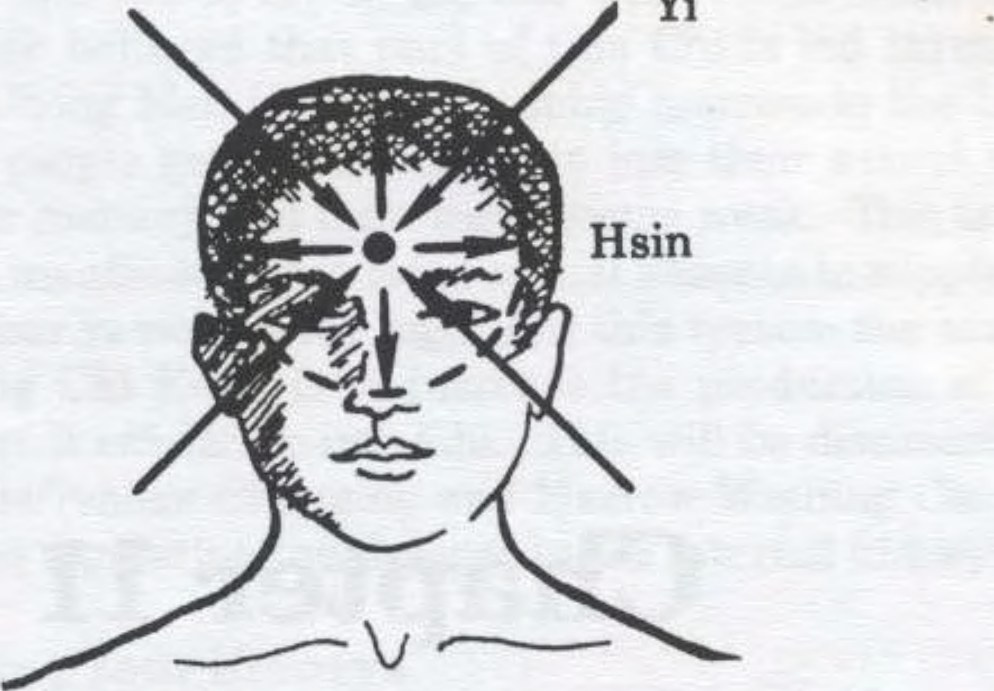
Bạn có thể thấy rằng khi bạn điều phục Tâm (Hsin) và Ý (Yi) của mình thì bạn cũng đang điều phục Thần (Shen) của mình. Có nhiều bước trong việc dùng Ý của bạn để điều phục Thần (Shen) của mình. Chúng là: 1. Shoou Shen (giữ gìn và bảo vệ Thần), 2. Guh Shen (làm vững và làm đặc Thần), 3. Ding Shen (làm ổn định và làm an tĩnh Thần), 4. Ning Shen (làm cô đọng hay tập trung Thần), 5. Yeang Shen (nuôi dưỡng, nâng hay dưỡng Thần), và 6. Liann Shen (tinh luyện, luyện tập hay rèn luyện Thần). Chúng ta đã bàn sơ qua về những điều này ở chương thứ ba, và chúng ta sẽ bàn lại khi nói về điều Thần.
Điều Tinh (Tyau Jieng)
11-1. Giới thiệu
Trong ba gốc — Tinh (Jieng), Khí (Chi) và Thần (Shen) — thì Tinh (Jieng) có lẽ là yếu tố quan trọng nhất đối với sự thành công trong luyện tập Khí Công. Điều Tinh nghĩa là bảo tồn Tinh và chuyển hóa nó thành Khí mà không hề lãng phí. Bạn phải học cách giữ Nguyên Tinh trong thận — nơi cư trú của nó — bằng cách làm cho thận khỏe mạnh. Bạn cũng phải học cách bảo tồn Tinh bằng cách không lạm dụng nó, và bằng cách học cách chuyển hóa nó thành Khí một cách hiệu quả.
Như đã trình bày, các loại Tinh được chuyển hóa thành Khí có thể được phân loại thành Hỏa Tinh, vốn thu được từ thức ăn và không khí, và Thủy Tinh, vốn bạn thừa hưởng từ cha mẹ. Để giảm Hỏa Khí, bạn phải giảm Hỏa Tinh bằng cách hấp thụ thức ăn và không khí có chất lượng cao. Có nhiều sách vở bàn về ý niệm này.
Khi người luyện Khí Công nói đến Tinh, họ thường muốn nói đến Nguyên Tinh, còn được gọi là Thủy Tinh. Trong luyện tập Khí Công, Nguyên Tinh thường quan trọng hơn Hỏa Tinh. Điều Hỏa Tinh thì dễ, nhưng để điều Thủy Tinh bạn cần rất nhiều hiểu biết và công phu luyện tập.
Như đã nói ở chương thứ ba, nền y học Trung Hoa gọi hai cặp cơ quan trong cơ thể bạn là thận: thận thật của bạn (còn gọi là nội thận; "Nội Thận") và tinh hoàn hay buồng trứng. Tinh hoàn cũng được gọi là "ngoại thận" (Ngoại Thận). Người ta tin rằng sau khi bạn sinh ra, Nguyên Tinh của bạn ngự trong nội thận. Nội thận có liên hệ mật thiết với ngoại thận. Khi Nguyên Tinh trong thận được chuyển hóa thành Nguyên Khí, một phần của nó được dùng để nuôi dưỡng ngoại thận và kích hoạt việc sản sinh Tinh dục hay các hormone. Rõ ràng, nếu nội thận của bạn yếu và Nguyên Khí không thể được chuyển hóa hiệu quả từ Nguyên Tinh, thì việc sản sinh hormone hay Tinh của tinh hoàn cũng sẽ giảm. Vì vậy, nếu bạn muốn điều Tinh, trước tiên bạn phải học cách điều Nguyên Tinh trong nội thận.
Trong Tẩy Tủy Khí Công, Tinh dục là nguồn chính được chuyển hóa thành Khí để làm đầy bốn khí mạch (các bể chứa) trong hai chân bạn. Người ta cũng tin rằng một phần Khí này được dẫn qua Xung mạch (Chong Mei) men theo tủy sống lên não để nuôi dưỡng não. Khi con người già đi và bắt đầu mất sinh lực tình dục, họ thường mất trí nhớ và hai chân trở nên yếu. Điều này đơn giản là do không đủ lượng Tinh dục để cung cấp Khí cho não và cho bốn khí mạch ở hai chân. Vì lý do này, nhiệm vụ chính trong Tẩy Tủy Khí Công là tăng cường sản sinh Tinh dục và chuyển hóa nó thành Khí một cách hiệu quả. Ở đây chúng ta sẽ bàn về việc điều Tinh trong nội thận.
11-2. Làm Khỏe Thận
Để điều Nguyên Tinh, trước tiên bạn phải chăm sóc nơi cư trú của nó — tức thận — để Tinh được bảo vệ. Bước đầu tiên để làm khỏe thận là giữ cho thận khỏe mạnh. Việc này được gọi là "Cố Thận" (Guh Shenn), nghĩa là "làm cho thận vững và đặc lại." Làm khỏe thận được gọi là "Cường Thận" (Chyang Shenn).
Cố Thận và Cường Thận (Làm Vững và Làm Khỏe Thận)
Hàng ngàn năm nghiên cứu và thực nghiệm đã đem lại nhiều cách để duy trì sức khỏe và làm khỏe thận. Tất cả các cách ấy đều vận hành bằng việc duy trì Khí trong thận ở mức thích hợp. Để làm được điều này, bạn cần biết thận chịu ảnh hưởng của thời tiết, thức ăn và cảm xúc như thế nào (Bảng 11-1).
| Mộc (WOOD) | Hỏa (FIRE) | Thổ (EARTH) | Kim (METAL) | Thủy (WATER) | |
|---|---|---|---|---|---|
| Phương hướng | Đông | Nam | Trung tâm | Tây | Bắc |
| Mùa | Xuân | Hạ | Trường Hạ | Thu | Đông |
| Khí hậu | Gió | Nắng nóng | Ẩm ướt | Khô | Lạnh |
| Tiến trình | Sinh | Trưởng | Biến hóa | Thu hoạch | Tàng trữ |
| Màu | Xanh | Đỏ | Vàng | Trắng | Đen |
| Vị | Chua | Đắng | Ngọt | Cay | Mặn |
| Mùi | Mùi dê | Mùi khét | Mùi thơm | Mùi tanh | Mùi thối |
| Tạng âm | Can | Tâm | Tỳ | Phế | Thận |
| Tạng dương | Đảm | Tiểu Tràng | Vị | Đại Tràng | Bàng Quang |
| Khai khiếu | Mắt | Lưỡi | Miệng | Mũi | Tai |
| Cơ quan | Gân | Huyết mạch | Thịt | Da/Lông | Xương |
| Cảm xúc | Giận | Vui | Tư lự | Buồn | Sợ |
| Tiếng người | Hét | Cười | Hát | Khóc | Rên |
Bảng 11-1. Bảng các tương ứng gắn với Ngũ Hành.
1. Thận và Thời tiết:
Thận là tạng âm. Khi thời tiết lạnh, đặc biệt là vào mùa đông, không khí chung quanh cũng thuộc âm, và mức Khí của thận bị giảm đi. Khi điều này xảy ra, dòng Khí sẽ trở nên chậm chạp và vùng lưng sẽ trở nên đau mỏi, nhất là vùng lưng dưới. Vì thế, điều quan trọng là vùng thận phải được che chở để Khí không bị thất thoát ra khỏi cơ thể bạn. Cách tốt nhất là mặc quần áo ấm, đặc biệt quanh vùng eo. Ngoài ra, bạn nên học một vài kỹ thuật xoa bóp để cải thiện tuần hoàn Khí nơi vùng thận và để dùng Khí trong hai bàn tay mà nuôi dưỡng thận. Bây giờ chúng ta sẽ bàn về một vài kỹ thuật xoa bóp thường được dùng trong Khí Công.
A. Xoa bóp thận trực tiếp:
Đây là kỹ thuật phổ biến nhất. Dùng tâm hai lòng bàn tay xoa vùng lưng phía trên thận theo chuyển động vòng tròn. Đỉnh của cả hai vòng tròn nên di chuyển vào trong, hướng về phía nhau. Có một khí môn hay huyệt đạo gọi là Lao Cung ở giữa lòng bàn tay bạn (Hình 11-1). Huyệt này thuộc Tâm Bào. Tâm Bào bao gồm mạch máu đi vào tim và túi màng bao bọc quả tim. Trong lý thuyết ngũ hành của y học Trung Hoa, tim được xếp vào hành hỏa và thận được xếp vào hành thủy.
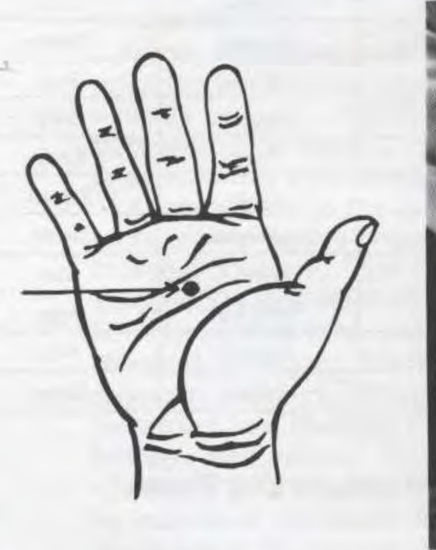
Vì vậy, khi bạn dùng tâm hai lòng bàn tay để xoa bóp thận, bạn đang dùng hỏa để làm ấm thủy, và do đó đang nuôi dưỡng thận. Khi bạn xoa bóp thận theo chuyển động vòng tròn, đỉnh của chuyển động nên hướng vào trong (Hình 11-2) để nuôi dưỡng thận. Nếu bạn xoa theo chiều ngược lại, bạn đang làm tán Khí ra ngoài. Khi xoa thận, bạn không cần phải ấn mạnh. Đặt hai bàn tay áp chặt lên da rồi xoay vòng. Chỉ trong khoảng một phút, bạn sẽ cảm thấy Khí bên trong, gần vùng thận, lưu chuyển cùng chiều. Điều này nghĩa là bạn đã cải thiện tuần hoàn Khí ở đó. Đương nhiên, bạn sẽ thư giãn hơn và việc xoa bóp sẽ hiệu quả hơn nếu có người khác xoa bóp cho bạn. Cách xoa bóp trực tiếp này rất hiệu quả và hữu ích vào mùa đông. Xin nhớ rằng bạn nên làm ấm hai bàn tay trước; bàn tay lạnh sẽ rút Khí ra khỏi thận.

B. Xoa bóp Dũng Tuyền:
Xoa bóp các huyệt Dũng Tuyền (Yongquan) (Hình 11-3) có lẽ là kỹ thuật tốt thứ hai trong việc nuôi dưỡng Khí và cải thiện tuần hoàn Khí quanh vùng thận. Các huyệt Dũng Tuyền thuộc kinh Thận. Thông thường người ta dùng ngón cái để xoa bóp hai huyệt này theo chuyển động vòng tròn (Hình 11-4). Bạn cũng có thể dùng tâm lòng bàn tay để xoa lòng bàn chân (Hình 11-5). Hoặc, bạn có thể xoa hai lòng bàn tay vào nhau trước cho đến khi chúng thật ấm, rồi đặt tâm hai lòng bàn tay (huyệt Lao Cung) lên trên các huyệt Dũng Tuyền. Trong trường hợp này, bạn đang dùng hỏa của tim để nuôi dưỡng thủy của thận.
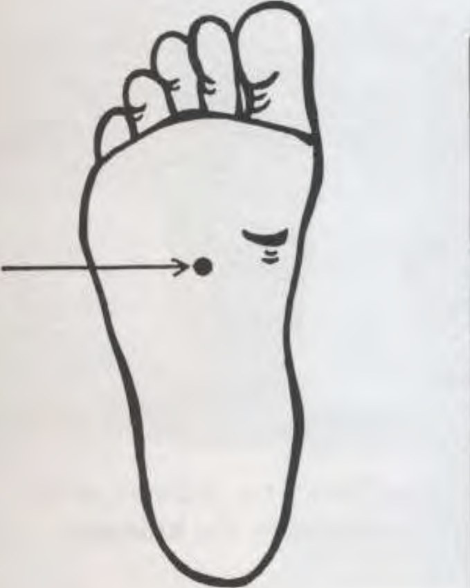
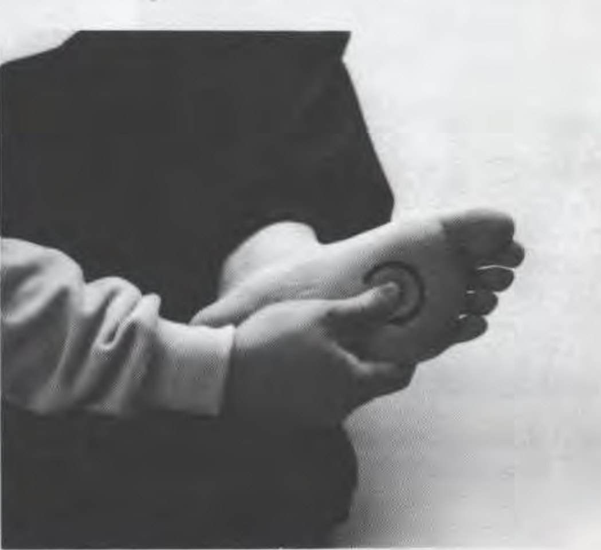
C. Xoa bóp bằng chuyển động:
Xoa bóp thận bằng chuyển động là một thực hành Ngoại Đan Khí Công phổ biến, và được dùng trong những bài tập như "Bát Đoạn Cẩm." Phương pháp này đơn giản và rất hiệu quả. Nói chung, có hai chuyển động chính có khả năng xoa bóp thận và cải thiện tuần hoàn Khí của thận.
Chuyển động thứ nhất là gập người ra trước (Hình 11-6). Động tác này kéo căng và làm căng hai nhóm cơ chính ở hai bên cột sống, đồng thời ấn xuống hai quả thận nằm bên dưới chúng. Bạn nên giữ nguyên ở tư thế đó khoảng năm giây rồi duỗi thẳng người. Việc này giải phóng áp lực lên thận và để thận trở về trạng thái ban đầu. Làm đi làm lại những động tác này sẽ xoa bóp thận.
Chuyển động thứ hai là vặn phần thân trên sang hai bên (Hình 11-7). Dù các cơ được kéo căng theo cách khác với bài tập trước, nguyên lý và hiệu quả thì như nhau.
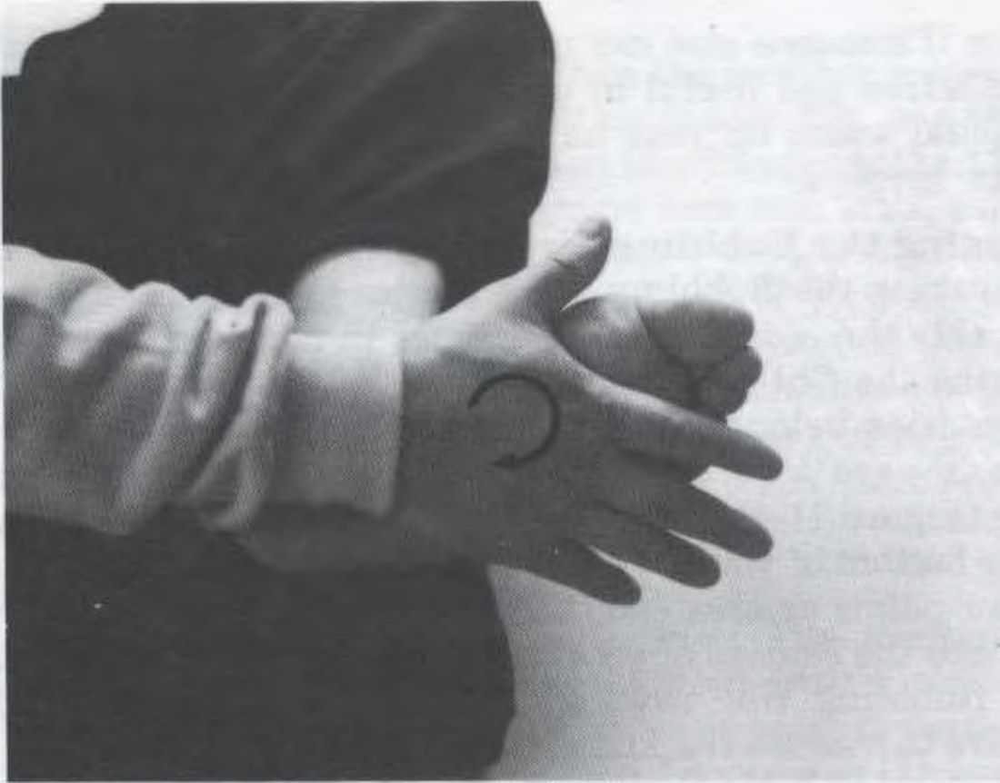
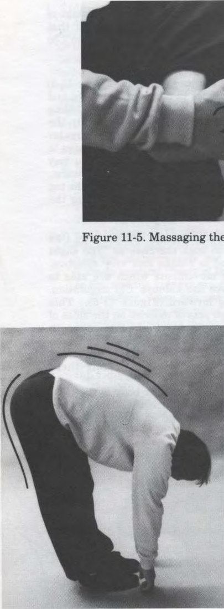
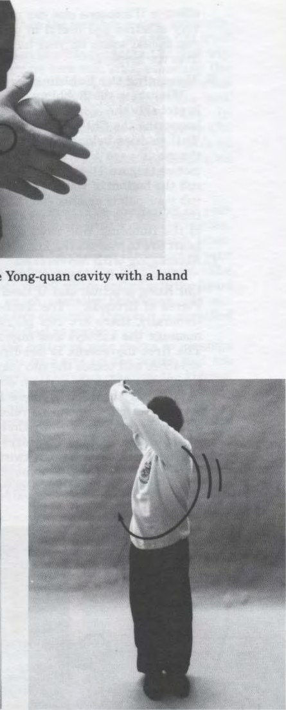
Chuyển động này, ngoài việc xoa bóp thận, còn làm lỏng toàn bộ cột sống cùng các cơ lưng, và tăng tuần hoàn Khí trong Đốc mạch (Du Mei) ở lưng. Bạn cũng có thể kết hợp hai chuyển động cuối lại để xoa bóp thận (Hình 11-8).
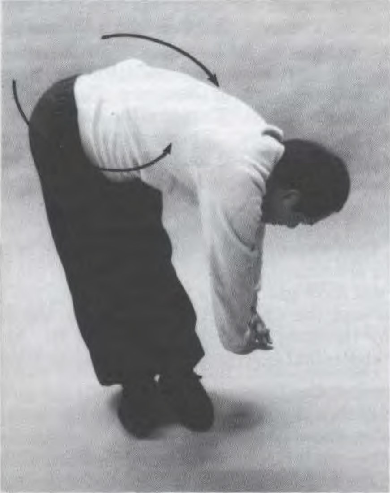
2. Thận và Thức ăn:
Để duy trì sức khỏe và kéo dài tuổi thọ, bạn phải luôn quan tâm đến việc mình ăn gì. Mọi thứ bạn ăn đều sẽ được chuyển hóa thành Khí và nuôi dưỡng cơ thể bạn. Theo y học Trung Hoa, ăn quá nhiều thức ăn có tính axit có thể làm cơ thể bạn quá dương, và ăn quá nhiều thức ăn có tính kiềm có thể làm nó quá âm. Ví dụ, ăn quá nhiều thức ăn có tính axit sẽ làm tăng chứng nóng rát trong ngực, còn nước ngọt có ga sẽ làm nguội hỏa và nhiệt của cơ thể. Những loại thức ăn khác nhau sẽ gây áp lực lên những cơ quan khác nhau. Ví dụ, uống quá nhiều rượu sẽ làm tăng gánh nặng và áp lực lên gan của bạn.
Cũng có một số loại thức ăn mà khi ăn quá độ sẽ ảnh hưởng đến tình trạng thận của bạn. Ví dụ, quá nhiều muối sẽ làm thận bạn yếu đi, nên bạn hãy điều độ lượng muối ăn vào, đặc biệt là khi bạn càng lớn tuổi. Kinh nghiệm cũng cho thấy ăn quá nhiều cà tím sẽ làm thận yếu đi. Nhân sâm thì tốt cho thận vào mùa đông, nhưng không tốt bằng vào mùa hạ, vì lúc đó bạn luôn có đủ Khí để nuôi dưỡng thận. Nhiều lương y Trung Hoa đã nghiên cứu và thực nghiệm với nhiều bài thuốc thảo dược khác nhau cho những cơ quan khác nhau. Chúng ta sẽ để chủ đề này cho một tác giả có đủ tư cách hơn.
3. Thận và Cảm xúc:
Từ Bảng 11-1, bạn cũng có thể thấy rằng cảm xúc của bạn có liên hệ mật thiết với tình trạng các cơ quan của bạn. Để bảo vệ thận, bạn nên tránh sợ hãi. Sợ hãi phát sinh từ trong tâm trí bạn. Bạn nên hiểu rằng sợ hãi sẽ không giải quyết được vấn đề nào. Bạn phải đối mặt với các vấn đề của mình và tìm ra cách giải quyết. Một khi tâm trí bạn đã sáng tỏ, bạn sẽ biết cách tránh những tình huống khiến bạn sợ hãi. Đây là tiến trình điều tâm, và là cách giữ cho thận ở tình trạng tốt.
11-3. Điều Tinh (Tyau Jieng)
Phần bàn luận ở trên tập trung vào cách bảo vệ nơi cư trú của Tinh bạn. Giờ đây chúng ta phải bàn về cách điều chính bản thân Tinh. Điều Tinh là chuyển hóa nó thành Khí theo cách hiệu quả nhất, và bảo tồn việc sử dụng Tinh. Đây là một chủ đề rất rộng, và rất khó nói cách nào là tốt nhất để bảo tồn Tinh, vì điều đó tùy thuộc vào lối sống và thói quen của mỗi người. Tuy nhiên, chúng ta sẽ bàn về một số phương pháp phổ biến nhất, những phương pháp có thể cho bạn hiểu biết sâu hơn về việc điều Tinh của mình.
1. Tăng hiệu quả chuyển hóa Tinh thành Khí:
a. Bài tập bụng:
Trong luyện tập Khí Công, điều rất quan trọng là biết cách dẫn Khí được chuyển hóa từ Nguyên Tinh về nơi cư trú của nó — Hạ Đan Điền. Bí quyết để làm điều này là các bài tập bụng. Khi bạn đưa vùng bụng dưới vào ra, phối hợp với hơi thở của mình, các cơ sẽ cần nhiều Khí hơn bình thường. Do đó các cơ hút vào cả Khí Hậu Thiên, vốn được chuyển hóa từ Tinh của thức ăn và không khí, lẫn Khí Tiên Thiên, vốn được chuyển hóa từ Nguyên Tinh trong thận của bạn. Phần Khí mà các cơ không cần thì được tàng trữ trong Đan Điền để dùng về sau.
Theo châm cứu Trung Hoa, có hai huyệt gọi là Thận Du (Shenshu) (Cửa Thận) hay Tinh Môn (Jiengmen) (Cửa Tinh) nằm trên lưng bạn (Hình 11-9). Chúng là những cửa dùng để điều mức Khí của thận. Mỗi khi mức Khí trong thận quá dương, Khí sẽ rò rỉ ra khỏi cơ thể bạn qua hai cửa này. Bình thường, khi bạn còn trẻ, Tinh của bạn mạnh mẽ, tươi mới và sung mãn, và bạn có nguồn Khí dồi dào. Một phần Khí này sẽ rò rỉ qua hai cửa ấy và bị lãng phí. Một cách để giảm sự rò rỉ Khí này là dẫn nó ra phía trước bằng các bài tập bụng và tàng trữ nó trong Đan Điền. Sau khi bạn đã luyện tập Khí Công nhiều, bạn sẽ phát triển được khả năng dẫn Khí từ thận đến Hạ Đan Điền chỉ đơn thuần bằng cách nghĩ hay thiền về điều đó. Lúc này, các bài tập bụng thể chất sẽ không còn cần thiết nữa.
b. Bảo vệ các Cửa Tinh:
Bạn không chỉ nên biết cách dẫn Khí đến Đan Điền, mà còn nên biết cách bảo vệ các Cửa Tinh, đặc biệt là vào mùa đông. Như đã nói ở trên, y học Trung Hoa xếp thận vào hành âm. Vào mùa đông, không khí chung quanh cũng thuộc âm, thực tế còn âm hơn cả thận. Vì thế, Khí trong thận sẽ rò rỉ ra ngoài không khí. Nếu bạn muốn ngăn điều này, bạn phải ăn mặc ấm, và đặc biệt cẩn thận giữ ấm vùng thận. Người luyện Khí Công thường xoa bóp các cửa thận để làm ấm thận và tăng việc chuyển hóa Khí, đồng thời dùng các bài tập bụng hay sự tập trung để dẫn Khí ra phía trước cho tàng trữ vào Đan Điền. Bạn nên nhớ rằng bạn chỉ mạnh khỏe khi Đan Điền và các khí mạch của bạn đầy.
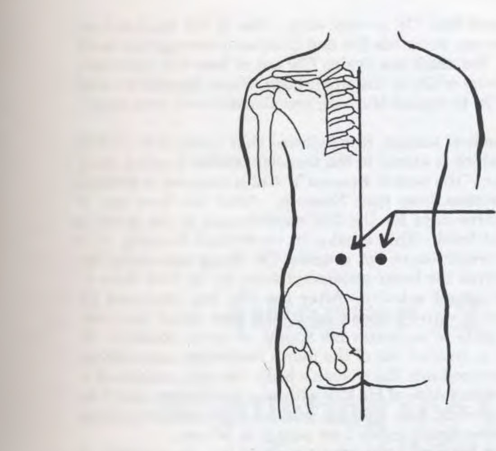
c. Xoa bóp thận và các huyệt Dũng Tuyền:
Xoa bóp thận và các huyệt Dũng Tuyền cải thiện và làm trơn tru tuần hoàn Khí trong thận, và giữ cho thận hoạt động với hiệu suất cao. Việc này cũng cải thiện hiệu quả chuyển hóa Tinh và Khí. Điều này đã được bàn ở phần trước.
d. Luyện tập Tẩy Tủy:
Trong Tẩy Tủy Khí Công, Tinh của tinh hoàn hay buồng trứng được chuyển hóa thành Khí. Dù tinh hoàn hay buồng trứng không phải là chính nội thận, chúng có liên hệ mật thiết với nội thận. Bình thường, bạn có thể tăng việc chuyển hóa Tinh thành Khí của nội thận thông qua các bài tập Tẩy Tủy, vốn tác động lên tinh hoàn và buồng trứng. Nhiều kỹ thuật được dùng để kích thích cơ quan sinh dục và tăng cường sản sinh Tinh. Một khi Tinh đã đầy, nó được chuyển hóa thành Khí và dùng để làm đầy các khí mạch trong hai chân. Khí này sau đó được dẫn lên qua tủy sống để nuôi dưỡng não.
2. Bảo tồn Tinh (hay Khí) của bạn:
Bảo tồn Tinh nghĩa là không lạm dụng Tinh, cũng không lạm dụng Khí vốn được chuyển hóa từ nó. Nếu bạn lãng phí một lượng Khí quá lớn, Khí trong cơ thể bạn sẽ bị thiếu hụt, vì tiến trình chuyển hóa Tinh thành Khí rất chậm. Một trong những cách nghiêm trọng nhất mà người đàn ông có thể lạm dụng Khí và Tinh của mình là hoạt động tình dục quá nhiều. Tình dục quá độ sẽ rút Khí ra khỏi các khí mạch của bạn và hạ thấp mức Khí trong toàn cơ thể. Vì Tinh phải được chuyển hóa thành Khí để bù đắp phần mất đi, nên bạn cũng làm giảm nguồn dự trữ Tinh của mình.
Trong y học Trung Hoa, người ta tin rằng tinh trùng là sản phẩm của Tinh được tàng trữ trong tinh hoàn (tinh trùng được gọi là Tinh Tử — Jieng Tzyy — nghĩa là "những đứa con của Tinh"). Cần có Khí để sản sinh tinh trùng và hormone từ Tinh của bạn. Sau khi giao hợp, phải mất ít nhất ba ngày để việc nuôi dưỡng Khí cho vùng bẹn đạt lại mức bình thường. Đây là lý do vì sao trong luyện tập truyền thống, người ta khuyến khích người tập không luyện Khí Công (đặc biệt là Nội Đan, vốn liên quan đến vùng bụng dưới) trong ít nhất ba đến bốn ngày sau khi hoạt động tình dục. Sau khi Khí đã hồi phục về mức bình thường, nói một cách thận trọng, người đàn ông bình thường sẽ cần khoảng một tuần để bổ sung lại nguồn Tinh tinh trùng của mình. Khi xuất tinh, Khí bị rút ra khỏi các khí mạch của người đàn ông, đặc biệt là ở hai chân, và được truyền vào cơ thể người phụ nữ. Ước lượng đại khái, một người đàn ông có thể mất khoảng 40% Khí của mình với một lần xuất tinh, và nếu anh ta xuất tinh lần nữa ngay sau đó, anh ta sẽ mất 40% của phần Khí còn lại. Đương nhiên, con số này thay đổi tùy từng người.
Phụ nữ không phải lo lắng về việc mất Khí. Thực tế, họ nhận Khí của người đàn ông và dùng nó để nuôi dưỡng cơ thể mình. Tuy nhiên, có một số kỹ thuật Khí Công mà nhờ đó người đàn ông giữ lại Khí của mình và làm cho mức Khí trong cơ thể anh ta thấp hơn của người phụ nữ. Trong trường hợp này, người đàn ông là người được lợi. Có một số sách viết về các thực hành tình dục của Đạo gia có thể được tham khảo để biết thêm thông tin.
Chương Mười Hai: Điều Khí (Tyau Chi)
12-1. Giới Thiệu
Nếu bạn nhìn vào toàn bộ con người mình, bạn sẽ thấy cơ thể mình được cấu thành từ một số phần: 1. Thân thể vật lý (bao gồm cả nước), 2. Không khí (chủ yếu là Oxy), 3. Tâm trí (Tâm và Ý), 4. Khí, và 5. Thần. Cả năm yếu tố này đều liên hệ mật thiết với nhau và không thể tách rời. Trong năm yếu tố này, Khí là năng lượng làm cho bốn yếu tố kia vận hành. Mỗi khi dòng Khí bị trì trệ hoặc ngừng lại, bạn sẽ sinh bệnh và chết. Vì lý do này, một trong những mục tiêu chính của luyện tập Khí Công là điều Khí trong cơ thể bạn. Khi Khí lưu thông bình thường và trôi chảy, tất cả các yếu tố khác sẽ được nuôi dưỡng tốt và giữ được trạng thái khỏe mạnh, bình thường của chúng, và bạn có thể trông mong sống lâu.
Trong thực hành Khí Công, trước khi có thể điều Khí, bạn phải điều thân, điều tức và điều tâm trước đã. Nếu bạn so cơ thể mình với một chiến trường, thì tâm trí bạn giống như vị tướng khởi sinh ý tưởng và kiểm soát tình hình, còn hơi thở của bạn là chiến lược của ông ta. Khí của bạn giống như những người lính được dẫn đến nhiều nơi khác nhau trên chiến trường. Tinh của bạn giống như nền tảng phẩm chất của những người lính ấy. Ví dụ, nếu lính của bạn được học hành đầy đủ, có kỷ luật cao và thân thể cường tráng, bạn sẽ có một đội quân mạnh. Ngoài ra, để thắng một trận đánh, bạn và lính của bạn còn phải có tinh thần chiến đấu cao. Tinh thần ấy chính là Thần của bạn. Tất cả những yếu tố này đều cần thiết, và tất cả đều phải phối hợp với nhau nếu bạn muốn thắng cuộc chiến chống lại bệnh tật và lão hóa.
Nếu bạn muốn bày binh bố trận hiệu quả nhất cho trận đánh, bạn phải biết vùng nào trên chiến trường là quan trọng nhất, và những điểm nào bạn dễ bị tổn thương (nơi Khí của bạn suy nhược) và cần gửi viện binh đến. Nếu bạn có nhiều lính hơn mức cần thiết ở một vùng (Khí thừa), thì bạn có thể điều họ đến nơi khác nơi hàng ngũ còn mỏng. Với tư cách một vị tướng, bạn cũng phải biết còn bao nhiêu lính sẵn sàng cho trận đánh, và cần bao nhiêu để bảo vệ bản thân và bộ chỉ huy của mình. Để thành công, bạn không chỉ cần chiến lược giỏi (hơi thở), mà còn phải liên lạc hiệu quả với quân của mình, nếu không thì toàn bộ chiến lược của bạn sẽ vô ích. Khi Ý của bạn (vị tướng) biết cách điều thân (biết chiến trường), biết cách điều tức (thiết lập chiến lược), và biết cách điều Khí hiệu quả (chỉ huy lính của mình), bạn sẽ có thể đạt tới mục tiêu cuối cùng của luyện tập Khí Công.
12-2. Cần Điều Loại Khí Nào?
Như đã bàn ở chương thứ ba, Khí có thể được phân loại thành nhiều phạm trù khác nhau tùy theo nguồn gốc của chúng hoặc tùy theo vai trò chúng đóng trong cơ thể. Theo nguồn gốc của Khí, Khí có thể được nhận diện là Khí Tiên Thiên (hay Khí Nguyên Thủy) hoặc Khí Hậu Thiên. Khí Tiên Thiên được chuyển hóa từ Tinh Nguyên Thủy mà bạn thừa hưởng từ cha mẹ, trong khi Khí Hậu Thiên được chuyển hóa từ thức ăn và không khí bạn hấp thu. Bước đầu tiên trong việc điều chỉnh phẩm chất Khí của bạn là điều Tinh, điều đã được bàn ở một chương trước. Bước tiếp theo là điều Khí theo chức năng của nó. Từ quan điểm này, bạn có cả "Vinh Khí" (Managing Chi) và "Vệ Khí" (Guardian Chi).
-
Vinh Khí (Managing Chi):
-
Điều Khí trong bát mạch và thập nhị chính kinh:
Nhiệm vụ đầu tiên trong việc điều Vinh Khí là điều nguồn cung Khí cho mười hai nội tạng qua 12 chính kinh. Để đạt mục tiêu này, bạn cũng phải học cách điều Khí trong tám mạch của mình. Tiếp tục với phép so sánh chiến trường, mười hai nội tạng giống như một tuyến mười hai pháo đài, và tám mạch của bạn giống như tám trại huấn luyện phía sau chiến tuyến, nơi cung cấp lính cho tiền tuyến. Ở tiền tuyến, nếu bất kỳ một pháo đài nào bị mất, những pháo đài khác sẽ lâm nguy, và cả tuyến có thể bị mất. Vì thế, điều quan trọng là giữ đúng số quân trong mỗi pháo đài để toàn bộ hệ thống có thể vận hành hiệu quả. Trong việc này, cả chất lượng lẫn số lượng đều quan trọng.
Trong mười hai pháo đài này có sáu pháo đài được coi là dương (Yang). Đây là các hệ nuôi dưỡng và hấp thu, đảm nhiệm chức năng tiêu hóa và hấp thu. Sáu tạng dương này là Vị (Dạ dày), Đại Trường (Ruột già), Tiểu Trường (Ruột non), Bàng Quang, Đởm (Túi mật), và Tam Tiêu. Sáu tạng còn lại được coi là âm (Yin), chịu trách nhiệm tàng trữ Tinh của cơ thể và duy trì sự sống. Các tạng này là Phế (Phổi), Tâm (Tim), Thận, Can (Gan), Tỳ (Lá lách), và Tâm Bào (Pericardium) (mặc dù phổi hấp thu oxy, y học Trung Hoa vẫn coi phổi là một trong những tạng quản lý sự sống).
Bình thường, các tạng dương có nhiều Khí hơn các tạng âm. Năm trong số các tạng âm (trừ Tâm Bào) được coi là những tạng quan trọng nhất, và quyết định việc bạn thắng hay thua trong cuộc chiến vì sức khỏe của mình. Chúng quyết định sự sống và cái chết của bạn. Bạn phải điều Khí của chúng trước tiên. Trong Khí Công, người ta nói "Ngũ Khí Triều Nguyên" (Wuu Chi Chaur Yuan), nghĩa là dẫn "Ngũ Khí về cội nguồn của chúng." Điều này có nghĩa là để đạt mục tiêu sức khỏe, bạn phải điều Khí trong năm tạng này trở về mức nguyên thủy của chúng. Chỉ khi đó chúng mới vận hành đúng đắn, và sự thoái hóa mới được giữ ở mức tối thiểu.
-
Dùng Khí để nuôi dưỡng Não và Thần:
Nhiệm vụ thứ hai trong việc điều Vinh Khí là điều nguồn cung Khí lên đỉnh đầu để nuôi dưỡng não và Thần của bạn. Trong thực hành Khí Công, não và Thần của bạn được coi là bộ chỉ huy của tư duy và của Khí. Nếu bộ chỉ huy của bạn không có nhân sự và phương tiện tốt nhất, nó sẽ không vận hành tốt, và toàn bộ cơ thể sẽ không khỏe mạnh. Não của bạn khởi sinh Ý, giống như một vị tướng, và Thần của bạn giống như tinh thần chiến đấu có khả năng nâng cao ý chí chiến đấu của người lính. Chính Thần này khiến cho toàn bộ đơn vị chiến đấu có thể vận hành và liên lạc theo cách hiệu quả nhất.
Trong Dịch Cân Tẩy Tủy Khí Công, người ta tin rằng não và Thần là những yếu tố quan trọng nhất trong việc duy trì sức khỏe và kéo dài tuổi thọ. Nếu bạn có thể liên tục nuôi dưỡng não và Thần bằng Khí, bạn sẽ có thể dẫn Khí để điều chỉnh toàn bộ cơ thể, và sẽ đã thắng phần lớn cuộc chiến.
-
-
Vệ Khí (Guardian Chi):
Điều Vệ Khí khác với điều Khí lưu thông trong mười hai kinh và Khí nuôi dưỡng não. Khi bạn điều Vệ Khí của mình, bạn đang điều Khí đi ra từ các kinh mạch tới bề mặt da. Điều này có nghĩa là bạn dẫn Khí hướng ra ngoài tới bề mặt da và hướng vào trong tới xương.
Chức năng của Vệ Khí là tạo ra một lá chắn Khí quanh bạn để ngăn mọi ảnh hưởng tiêu cực xâm nhập cơ thể bạn. Kích thước lá chắn Khí của bạn được điều chỉnh tùy theo thời tiết và môi trường quanh bạn. Nếu bạn có thể giữ lá chắn Khí này vững mạnh, Khí sẽ trôi chảy tới tận tóc bạn và xa hơn nữa, và tóc và da của bạn sẽ luôn khỏe mạnh.
Khí cũng nên được dẫn vào bên trong để nó thấm tới tận tủy xương. Tủy sản sinh tế bào máu. Khi tủy của bạn có nhiều Khí, nó sẽ sản sinh những tế bào máu tươi mới và khỏe mạnh, giữ cho toàn bộ cơ thể bạn vận hành tối ưu và bảo vệ nó từ bên trong.
12-3. Điều Khí (Tyau Chi)
Điều Khí là một trong những mục tiêu chính của luyện tập Khí Công. Điều bao gồm điều chỉnh, bảo vệ, giữ gìn và nâng cao. Bạn có thể thấy rằng định nghĩa của việc điều Khí rất rộng và mục đích thì đa dạng. Nhiều phong cách Khí Công đã được sáng tạo và phát triển để đạt các mục tiêu tu luyện Khí khác nhau. Với giới học giả, điều nghĩa là giữ gìn và bảo vệ sự tuần hoàn Khí trong cơ thể. Với các y sĩ, điều nghĩa là điều chỉnh và sửa chữa mức Khí. Với các võ sĩ, điều nghĩa là tập trung và dẫn Khí để tiếp thêm sinh lực cho các bắp thịt một cách hiệu quả hơn. Với các Phật tử, điều nghĩa là bảo vệ, nuôi dưỡng và tu luyện. Với các Đạo gia, điều nghĩa là bồi đắp, nâng cao, rèn luyện và kỷ luật. Mặc dù khi bạn thực hành một phạm trù Khí Công, bạn cũng bao quát một phần việc luyện tập của các phạm trù khác, nhưng trọng tâm thì khác nhau. Ví dụ, nếu bạn học điều Khí từ một phong cách Khí Công y học, mặc dù bạn cũng đạt được mục tiêu duy trì sức khỏe và luyện tập để bồi đắp Khí, bạn sẽ dùng những phương pháp chủ yếu được thiết kế để chữa bệnh. Vì vậy, để học cách điều Khí, bạn nên biết mục tiêu của mình là gì, và muốn đi sâu tới mức nào. Khi đó, bạn sẽ có thể quyết định mình muốn học phạm trù nào.
Không ai hiểu cơ thể bạn và những vận hành bên trong nó rõ hơn chính bạn. Suy cho cùng, bạn sống trong đó, và bạn là người duy nhất có thể cảm nhận nó một cách trực tiếp. Vì thế, bạn là người đủ tư cách nhất để phán đoán phong cách Khí Công nào là có lợi nhất cho mình. Nếu bạn là người mới học Khí Công, tôi đề nghị bạn bắt đầu với một trong những hệ thống dễ hơn do giới học giả và các y sĩ phát triển, chẳng hạn như "Bát Đoạn Cẩm" (The Eight Pieces of Brocade) hoặc "Ngũ Cầm Hí" (Five Animal Sports). Chúng dễ hiểu, dễ học và dễ trải nghiệm hơn mà không có nguy cơ gây nguy hiểm nghiêm trọng nào. Luyện tập các hệ thống này sẽ dạy bạn "tại sao," "cái gì," và "như thế nào." Ví dụ, nhờ học Khí Công của giới học giả, bạn có thể nắm được ý tưởng điều tâm, và nhờ thực hành Khí Công y học, bạn có thể hiểu rõ hơn cách điều thân. Không quan trọng bạn đã quyết định luyện sâu phong cách Khí Công nào. Trước khi điều Khí, bạn phải luôn điều thân, điều tức và điều tâm trước. Một khi đã có kinh nghiệm và hiểu lý thuyết, bạn sẽ có thể hiểu dễ hơn những loại Khí Công võ thuật hay tôn giáo sâu xa hơn như "Tiểu Chu Thiên," "Đại Chu Thiên," hay "Dịch Cân Tẩy Tủy Khí Công."
Trong phần này, tôi tin rằng chúng ta nên bàn trước hai chủ đề chính yếu trước khi đi vào những khái niệm tổng quát về điều Khí. Hai chủ đề ấy là: A. sự giao tiếp giữa Ý và Khí của bạn, và B. Hai thái độ tổng quát đối với việc điều Khí.
A. Giao Tiếp Giữa Ý và Khí
Học cách mở thông giao tiếp giữa Ý và Khí của bạn có lẽ là yếu tố then chốt nhất cho sự thành công trong luyện tập Khí Công.
Khí lưu chuyển trong cơ thể bạn theo hai cách. Một trong số đó là sự tuần hoàn tự nhiên, tự động, chịu trách nhiệm cho hoạt động nội tại của cơ thể. Sự tuần hoàn này không cần sự chú ý có ý thức của bạn. Ví dụ, bạn không cần Ý của mình dẫn Khí đến các tạng để giữ chúng vận hành. Điều này xảy ra tự nhiên và tự động. Tuy nhiên, nếu bạn muốn nâng một vật, trước tiên Ý của bạn phải khởi sinh ý tưởng nâng, và ý tưởng hay ý định này sẽ dẫn Khí đến cánh tay để tiếp sinh lực cho các bắp thịt. Bạn đã hiểu rằng các bắp thịt không vận hành được nếu không có Khí, cũng như một chiếc quạt điện không chạy được nếu không có dòng điện.
Bất kể người hành Khí Công luyện tập vì mục đích nào, trước tiên họ phải học cách tăng cường sự giao tiếp giữa Ý và Khí của mình. Giao tiếp không chỉ có nghĩa là Ý của bạn dẫn Khí — Ý của bạn cũng phải cảm nhận hay lĩnh hội được điều đang xảy ra với Khí. Sự tác động lẫn nhau này cho phép bạn hiểu tình trạng của Khí. Trong giới nội gia, người ta thường nói rằng: "Trước tiên, bạn phải lắng nghe cho kỹ, rồi sau đó bạn sẽ có thể hiểu." "Lắng nghe" ở đây nghĩa là "cảm nhận" hay "lĩnh hội." Chỉ khi Ý của bạn có thể giao tiếp và hiểu được tình hình, bạn mới có thể điều Khí. Điều này giống như trong một trận đánh, vị tướng tại bộ chỉ huy phải có thể liên lạc hiệu quả với lính của mình, nếu không ông ta sẽ không thể áp dụng chiến lược của mình.
Trong Khí Công, để Ý của bạn giao tiếp được với Khí của bạn, trước tiên bạn phải điều thân, điều tức và điều tâm. Ba điều kiện tiên quyết này là những con đường chính để điều Khí. Sau khi bạn đã điều ba yếu tố này, sự giao tiếp giữa tâm trí và Khí của bạn sẽ xảy ra tự động và tự nhiên. Lúc đầu, tâm trí bạn có thể cảm nhận hay thậm chí lĩnh hội được dòng Khí. Sau khi làm điều này một thời gian, bạn bắt đầu hiểu được Khí. Giống như bạn đang học một ngôn ngữ mới. Bạn càng luyện tập và trải nghiệm nó nhiều bao nhiêu, bạn càng quen thuộc và hiểu nó nhiều bấy nhiêu. Chỉ khi đó tâm trí bạn mới có thể dẫn dắt và điều khiển nó.
B. Hai Thái Độ Đối Với Việc Điều Khí
Để điều Khí của bạn sao cho nó di chuyển trôi chảy và đúng đường, bạn cần nhiều hơn là chỉ sự giao tiếp Ý–Khí hiệu quả. Bạn còn cần biết cách sinh Khí. Nếu bạn không có đủ Khí trong cơ thể, làm sao bạn có thể điều nó? Trong một trận đánh, nếu bạn không có đủ lính để thực hiện chiến lược của mình, bạn đã thua rồi.
Trong giới Khí Công Trung Hoa, có hai thái độ chính trong việc điều Khí. Cả hai đều có lý thuyết, nhược điểm và ưu điểm riêng. Từ hai quan điểm khác nhau này đã phát triển hai phương pháp chính để điều Khí. Một cách gọi là "Dưỡng Khí" (Yeang Chi) và cách kia gọi là "Luyện Khí" (Liann Chi). Dưỡng nghĩa là dần dần nâng cao, nuôi dưỡng, giữ gìn và bảo vệ; còn Luyện nghĩa là tinh luyện, rèn luyện, bồi đắp và tăng cường. Theo phân tích các tài liệu hiện có, có vẻ như giới học giả và các Phật tử ưa chuộng Dưỡng Khí, với các Phật tử trở thành những bậc thẩm quyền về cả lý thuyết lẫn luyện tập, trong khi các Đạo gia và võ sĩ luyện Luyện Khí nhiều hơn, mà xét về sức khỏe thì được coi là cao cấp hơn. Không có gì đáng ngạc nhiên khi các bài tập Khí Công y học bao gồm cả hai, và thay đổi tùy theo mục đích luyện tập.
Trong thực hành điều Khí, điều cốt yếu là tăng số lượng Khí trong khi duy trì một trạng thái trung hòa trong cơ thể. Như bạn biết, Khí thừa (Dương) hay Khí suy nhược (Âm) sẽ gây ra các vấn đề sức khỏe và đẩy nhanh lão hóa. Vì thế, điều quan trọng là học cách làm đầy các bể chứa Khí (8 mạch Khí) mà không để lượng Khí dồi dào này tràn vào 12 chính kinh. Trong luyện tập Dưỡng Khí, giới học giả và các Phật tử thực hành các cách chăm sóc và bảo vệ Khí trước tiên. Sau đó họ học cách dần dần nâng cao hay tu dưỡng Khí lên một mức khỏe mạnh hơn. Phương pháp dịu nhẹ và thận trọng này nhằm duy trì một dòng Khí khỏe mạnh mà không ảnh hưởng đáng kể đến mức Khí và sự tuần hoàn tự nhiên. Việc luyện tập này đặc biệt quan trọng khi người tập đang già đi và mức Khí trong các bể chứa thấp hơn.
Trong luyện tập Luyện Khí, các Đạo gia tập trung vào việc rèn luyện và tinh luyện Khí của mình, và cả việc tăng cường hay nâng cao mức Khí trong các bể chứa Khí. Những người hành Khí Công Đạo gia tin rằng để đạt mục tiêu trường thọ, bạn không chỉ phải duy trì dòng Khí trôi chảy mà còn phải tăng mức Khí để tăng cường các tạng vật lý. Họ tin rằng phẩm chất và sức mạnh của thân thể vật lý bạn có thể được cải thiện bằng cách nuôi dưỡng Khí đúng cách.
Cơ thể bạn giống như một cỗ máy chạy bằng điện ở chỗ nó cần dòng điện để chạy, và nếu bạn liên tục cho một dòng điện không đủ chạy qua nó, nó sẽ thoái hóa nhanh chóng. Tuy nhiên, cơ thể bạn khác với cỗ máy ở chỗ nếu bạn dần dần tăng lượng dòng điện, cơ thể bạn sẽ thích nghi với dòng điện ấy, và sẽ trở nên mạnh hơn và bắt đầu vận hành tốt hơn. Giống như nếu bạn có thể chạy năm dặm một ngày và làm việc đó đều đặn, bạn sẽ duy trì được sức khỏe và một mức sức mạnh nhất định. Đây là cách của giới học giả và Phật giáo. Tuy nhiên, nếu bạn dần dần tăng quãng đường theo thời gian, cơ thể bạn sẽ tự điều chỉnh để phù hợp với yêu cầu mới, và thể trạng của bạn sẽ được cải thiện. Đây là cách của Đạo gia.
Bạn có thể thấy rằng cách của giới học giả và Phật giáo thì dịu nhẹ và thận trọng hơn, còn cách của Đạo gia thì chủ động hơn. Đôi khi các phương pháp luyện tập của Đạo gia khó hơn và nguy hiểm hơn so với các phương pháp của Phật giáo. Họ luôn phải theo dõi điều đang xảy ra trong thân thể vật lý của mình khi luyện tập, và phải cẩn thận để lượng Khí họ đã bồi đắp không bị xử lý sai và không đi sai đường.
Người mới học Khí Công trước tiên nên học cách giữ Khí của mình trôi chảy. Chỉ sau khi bạn hiểu bản thân và lý thuyết Khí Công, bạn mới nên bắt đầu luyện tập dần dần để tinh luyện và rèn Khí lên một mức cao hơn. Việc này thường tốn ít nhất mười năm luyện tập đúng đắn dưới sự hướng dẫn của một vị thầy đủ tư cách.
Cách Điều Khí
Mỗi phong cách Khí Công có những phương pháp riêng để điều Khí. Bởi vì điều Khí là một trong những mục tiêu cuối cùng của Khí Công, phương pháp luận sẽ là chủ đề chính khi chúng ta giới thiệu các phong cách Khí Công khác nhau trong tương lai. Để giúp bạn nắm được lý thuyết tổng quát về cách điều Khí, chúng ta sẽ giới thiệu những khái niệm tổng quát về cách điều Vinh Khí, Vệ Khí và Khí của năm tạng.
A. Điều Vinh Khí
a. Các mạch và kinh Khí
Một trong những mục tiêu của việc điều Vinh Khí bao gồm điều Khí trong tám mạch và mười hai chính kinh. Các mục tiêu then chốt của việc điều này là giữ cho các mạch Khí đầy, và giữ cho Khí tuần hoàn trong mười hai kinh một cách trôi chảy với mức Khí đúng.
Mặc dù nhiều phong cách Khí Công của giới học giả và y học đã nghiên cứu chủ đề này, có lẽ phải đến khoảng năm 500 SCN việc luyện tập chuyên biệt và sâu sắc mới được giới thiệu. Điều này do Đạt Ma (Da Mo) thực hiện trong tác phẩm Dịch Cân Kinh (Yi Gin Ching — Dịch Cân Kinh) của ông. Ông quan tâm nhất đến hai trong tám mạch, là Nhâm mạch (Conception) và Đốc mạch (Governing). Người ta tin rằng hai mạch này quản lý mười hai chính kinh, và vì thế "tiểu chu thiên" (Small Circulation) đã được phát triển để rèn luyện chúng. Một khi bạn đã hoàn thành luyện tập tiểu chu thiên, bạn sẽ luyện tiếp "đại chu thiên" (grand circulation), thứ sẽ giúp bạn khai mở mọi tắc nghẽn dọc theo mười hai kinh. Điều này sẽ cải thiện đáng kể sự tuần hoàn Khí trôi chảy và do đó, giúp bạn đạt mục tiêu tăng cường thân thể vật lý của mình. Mặc dù sau Đạt Ma nhiều phong cách đã được sáng tạo để đạt cùng mục đích, chúng vẫn tuân theo cùng lý thuyết và nguyên lý luyện tập.
b. Não và Thần
Não là bộ chỉ huy và Thần (tinh thần) là trung tâm điều khiển Khí của toàn bộ con người bạn. Vì thế, giữ cho chúng vận hành bình thường là chìa khóa của sức khỏe và là cánh cửa để tăng tuổi thọ của bạn. Để điều Vinh Khí của mình, trước tiên bạn phải điều bộ chỉ huy của nó. Vì lý do này, Đạt Ma đã truyền lại một phương pháp luyện tập trong "Tẩy Tủy Kinh" (Shii Soei Ching — Marrow Washing Classic).
Trong luyện tập Dịch Cân Tẩy Tủy Khí Công, bạn học cách làm đầy Khí trong sáu mạch còn lại. Nó cũng dạy bạn cách dẫn Khí lên đầu để nuôi dưỡng não và Thần. Chúng ta đã bàn ngắn gọn về luyện tập Tẩy Tủy trong Chương 6. Để có thảo luận chi tiết, xem cuốn sách: "Dịch Cân Tẩy Tủy Khí Công" (Muscle/Tendon Changing and Marrow Washing Chi Kung).
B. Điều Vệ Khí
Mặc dù điều Vệ Khí không được coi là cốt yếu như điều Vinh Khí, nó vẫn đóng một vai trò quan trọng trong luyện tập Khí Công. Mục tiêu của việc điều Vệ Khí là tăng cường sự tuần hoàn Khí đến da của bạn để tạo ra một lá chắn Khí chống lại những ảnh hưởng tiêu cực và để duy trì sự phát triển khỏe mạnh của tóc và móng tay bạn.
Luyện tập Vệ Khí được tìm thấy trong cả Ngoại Đan và Nội Đan. Có một số phương pháp phổ biến:
-
Xoa bóp:
Xoa bóp là cách dễ nhất. Nó tăng sự tuần hoàn Khí gần da và do đó dẫn Khí tới da.
-
Vỗ đập:
Mặc dù vỗ đập là một phần của xoa bóp, có một số bài tập đặc biệt nhấn mạnh hiệu quả của việc vỗ đập hay đập nhẹ lên da, thứ kích thích và dẫn Khí tới da.
-
Vận động thể chất:
Vận động thể chất có lẽ là phương pháp phổ biến nhất. Khi bạn cử động hay tập thể dục, một lượng lớn Khí được dẫn tới các đầu chi để tiếp sinh lực cho các bắp thịt. Sau đó, lượng Khí dư thừa di chuyển ra qua da, làm tăng sự tuần hoàn Khí ở đó, và cuối cùng tan biến vào không khí xung quanh. Khi bạn làm điều này, bạn thường tập cho đến khi bắt đầu đổ mồ hôi, điều này cho thấy Khí đã được dẫn tới da và đang tiếp sinh lực cho các lỗ chân lông.
-
Khai triển Khí nội tại:
Khai triển Khí nội tại là cách khó nhất, nhưng có lẽ là cách hiệu quả nhất để dẫn Khí tới da nhằm tạo ra một lá chắn Khí. Đây là phương pháp mà những người hành Khí Công sử dụng. Có nhiều cách để làm điều này. Ví dụ, khi bạn đã đạt được một mức độ tập trung tinh thần nhất định, bạn có thể tưởng tượng rằng cơ thể mình đang bốc cháy. Bạn sẽ bắt đầu cảm thấy ấm, và cảm giác này cùng ý tưởng tăng cường lá chắn Khí của bạn sẽ dẫn Khí tới da. Một cách khác là tưởng tượng rằng bạn là một quả bóng bãi biển. Khi bạn hít vào và thở ra, hãy tưởng tượng quả bóng đang co lại và giãn ra. Sau khi luyện tập một thời gian, bạn sẽ cảm thấy rằng khi bạn thở ra, cơ thể bạn giãn ra và mọi lỗ chân lông đều mở. Việc luyện tập này sẽ được bàn kỹ hơn trong một tập sau.
C. Điều Khí của Năm Tạng
Bất kể bạn dùng phong cách Khí Công nào để đạt mục tiêu sức khỏe và trường thọ, chúng đều dạy cách điều Khí của các tạng, đặc biệt là năm tạng âm (Phế, Tâm, Can, Thận, và Tỳ).
Khi bạn điều Khí của các tạng, tâm trí bạn phải có thể hiểu được tình trạng của từng tạng. Để làm điều này, cơ thể bạn phải có thể thư giãn sâu vào tận các tạng để Khí có thể trôi chảy ở đó. Ngoài ra, tâm thiền định của bạn phải có thể cảm nhận và giao tiếp với các tạng.
Có nhiều cách để điều Khí của các tạng. Ngoại Đan dùng một số động tác nhất định để tác động lên các tạng cụ thể. Ví dụ, bạn có thể cúi người về phía trước để các bắp thịt lưng đè xuống thận, rồi thẳng người lên để áp lực được giải phóng. Điều này xoa bóp thận và tăng sự tuần hoàn Khí.
Trong Nội Đan, bạn dùng tâm trí mình để dẫn Khí đến các tạng. Bạn cần có khả năng cảm nhận và lĩnh hội được tình trạng của các tạng, và bạn cũng phải hiểu mối quan hệ giữa năm tạng, năm hành, và các cảm xúc. Ví dụ, gan thuộc hành mộc và có liên quan tới cảm xúc giận dữ. Mỗi khi bạn giận, gan trở nên căng và sự tuần hoàn Khí bình thường bị xáo trộn. Tim bạn thuộc hành hỏa và có liên quan tới cảm xúc vui sướng. Khi bạn vui quá mức, bạn trở nên rất phấn khích. Điều này mang lại lượng Khí thừa đến tim và có thể gây ra các vấn đề. Bạn có thể thấy rằng bạn phải điều tâm cảm xúc của mình trước khi có thể dùng Ý để điều Khí trong các tạng. Ví dụ, nếu bạn đang rất phấn khích và tim đập quá nhanh, hãy đặt tâm trí lên phổi và thở sâu. Điều này sẽ kéo lượng Khí thừa ra khỏi tim và làm nó dịu lại. Bạn có thể thấy rằng Nội Đan khó hơn Ngoại Đan nhiều.
Chế độ ăn uống cũng hữu ích trong việc điều Khí của các tạng. Ví dụ, quá nhiều rượu sẽ làm gan, tim và phổi của bạn quá Dương. Thuốc lá và ma túy sẽ làm sự tuần hoàn Khí trong phổi bạn trì trệ. Bảng 11-1 giải thích mối quan hệ giữa các tính chất của thức ăn và các tạng của bạn. Cách dễ nhất để điều Khí của bạn là kiểm soát chế độ ăn uống của mình.
Điều Thần (Tyau Shen)
13-1. Giới thiệu
Có một điều tối quan trọng trong chiến trận, và đó là tinh thần chiến đấu. Bạn có thể có một vị tướng giỏi nhất, người hiểu rõ chiến trường và cũng là một nhà chiến lược lão luyện, nhưng nếu binh lính của ông ta không có tinh thần chiến đấu cao (nhuệ khí), ông ta vẫn có thể thua. Hãy nhớ rằng, TINH THẦN LÀ TRUNG TÂM VÀ GỐC RỄ CỦA MỘT CUỘC GIAO CHIẾN. Khi bạn giữ được trung tâm này, một người lính có thể sánh ngang mười người lính. Khi tinh thần anh ta cao, người lính sẽ tuân theo mệnh lệnh một cách chính xác và tự nguyện, và vị tướng của anh ta sẽ có thể kiểm soát tình thế một cách hiệu quả. Trong trận chiến, để người lính có được nhuệ khí như vậy, anh ta phải biết cách chiến đấu, biết vì sao mình chiến đấu, và biết mình có thể mong đợi điều gì sau trận đánh. Biết mình đang làm gì và vì sao lại làm như vậy sẽ nâng cao tinh thần anh ta, củng cố ý chí anh ta, và tăng thêm tính kiên nhẫn cùng sức chịu đựng của anh ta.
Việc luyện tập Khí Công cũng hệt như vậy. Để đạt tới mục tiêu cuối cùng, bạn phải có ba đức tính tinh thần cơ bản: ý chí, tính kiên nhẫn và sức chịu đựng. Bạn cũng phải biết làm cái gì, vì sao làm và làm như thế nào. Chỉ khi đó bạn mới có thể chắc chắn về mục tiêu của mình và biết mình đang làm gì.
Thần (Shen), tức thuật ngữ tiếng Trung chỉ tinh thần, khởi nguồn từ Ý (Yi) — tức tâm trí khôn ngoan. Khi Ý vững, Thần sẽ an định và tĩnh lặng. Khi Thần mạnh, Ý vững. THẦN LÀ PHẦN TINH THẦN CỦA MỘT NGƯỜI LÍNH. KHI THẦN CAO, Ý MẠNH VÀ DỄ ĐIỀU KHIỂN. KHI Ý MẠNH, THẦN CŨNG MẠNH.
Trong luyện tập Khí Công, người ta nói: "Dĩ Thần Ngự Khí" (*1), nghĩa là dùng Thần của bạn để cai quản Khí. Thần được coi như bộ tham mưu điều khiển sự vận động của Khí, và nó có thể nâng Khí lên hoặc làm Khí lắng dịu, và đưa Khí tới bất cứ nơi nào bạn muốn. Có lẽ bạn đã từng để ý thấy rằng khi tinh thần mình cao, bằng cách nào đó bạn có thể tìm được đủ năng lượng để làm gần như mọi việc. Nếu Ý của bạn cũng tập trung và có thể điều khiển Thần tại nơi ngụ của nó, thì sự phán đoán của bạn sẽ sáng suốt và tĩnh lặng. Trong luyện tập Khí Công, người ta tin rằng khi Thần của bạn được luyện tập đúng cách, nó có thể dẫn tâm trí bạn tới những trạng thái siêu nhiên.
Người ta cũng tin rằng khi Thần của bạn cao, nó có thể dẫn Khí một cách trôi chảy và lưu loát tới một chỗ bị thương để thúc đẩy việc chữa lành. Ai trong chúng ta cũng từng nghe những ca bệnh mà vị bác sĩ cảm thấy bệnh nhân ốm nặng đến mức không thể trụ nổi một tháng. Tuy nhiên, bệnh nhân lại nghĩ khác, và quyết tâm sống sót. Tinh thần anh ta cao đến mức, nhờ thuần túy sức mạnh của ý chí, anh ta đã có thể sống lâu vượt xa lời tiên lượng của bác sĩ. Trong những ca như vậy, có bệnh nhân còn trải qua những cuộc chữa lành kỳ diệu. Theo lý thuyết Khí Công, Thần của bệnh nhân này đã dẫn Khí tới chỗ bị tổn thương và khắc phục được tổn thương thể xác.
Nhiều người đã trải qua một hiện tượng khác. Ông chủ bảo một người đàn ông rằng nếu anh ta hoàn thành một dự án lớn trong một thời gian rất hạn hẹp, anh ta sẽ được nghỉ một tuần. Người đàn ông dồn toàn bộ sự tập trung vào dự án, làm việc ngày đêm mà ngủ rất ít. Anh ta rất hăng say với công việc, thấy nó đầy thử thách và thú vị, và ngạc nhiên trước việc mình cảm thấy khỏe khoắn và tràn đầy năng lượng đến vậy. Cuối cùng công việc hoàn thành. Khi người đàn ông ấy cuối cùng được thư giãn trong kỳ nghỉ của mình, bỗng nhiên anh ta ngã bệnh. Theo lý thuyết Khí Công, điều này dễ giải thích. Khi bạn dấn thân sâu vào một việc mà mình phải chịu trách nhiệm, Thần của bạn cao. Thần cao này tiếp năng lượng cho Khí trong cơ thể bạn để nó lưu chuyển mạnh mẽ và trôi chảy, và Vệ Khí của bạn cũng mạnh. Điều này giữ cho bạn không bị bệnh. Một khi bạn thư giãn, Thần của bạn hạ xuống và Khí của bạn không còn được tiếp năng lượng nữa. Bệnh tật khi đó sẽ có thể xuyên qua lớp khiên của Vệ Khí bạn. Thường thì bạn bị cảm lạnh. Hai ví dụ này hẳn sẽ cho bạn một ý niệm về việc Thần có thể ảnh hưởng tới sức khỏe và tuổi thọ của bạn như thế nào. Vì nó đóng một vai trò quan trọng đến vậy, nên việc luyện Thần được coi là một trong những giai đoạn cuối cùng của Khí Công. Luyện tập và tinh luyện Thần của bạn tới một trạng thái siêu nhiên là một bước cần thiết để đạt tới sự khai sáng của Đạo gia và quả vị Phật.
13-2. Điều Thần (Tyau Shen)
Nói chung, có bốn nhiệm vụ chính trong việc điều phục Thần của bạn: học cách nâng Thần lên, học cách giữ nó tại nơi ngụ của nó và củng cố nó, học cách phối hợp nó với hơi thở của bạn, và cuối cùng là học cách dùng Thần của bạn để dẫn Khí một cách hiệu quả. Tất cả những điều này được những người tu luyện Khí Công theo Đạo gia gọi là "Luyện Thần (Liann Shen)". "Liann" nghĩa là tinh luyện, huấn luyện, hay rèn luyện kỷ luật. Trong Khí Công tôn giáo, có một mục tiêu tối hậu khác trong việc điều phục Thần, đó là luyện nó đủ độc lập để rời khỏi thân xác. Mục tiêu cuối cùng này sẽ được bàn tới trong những cuốn sách nói về Khí Công tôn giáo.
1. Nâng Thần lên (Dưỡng Thần — Yeang Shen)
"Yeang" nghĩa là nuôi dưỡng, nâng lên, hay chăm bẵm. Dưỡng Thần đã là nhiệm vụ chính của các học giả và các Phật tử trong việc luyện tập điều phục Thần của họ. Thần cần được Khí nuôi dưỡng. Thông thường, Hỏa Khí đến từ thức ăn và không khí có thể dễ dàng nâng Thần lên; tuy nhiên, Hỏa Khí này cũng làm tăng sự nhiễu loạn cảm xúc và do đó dẫn Thần rời khỏi nơi ngụ của nó. Dùng Ý của bạn, vốn được Thủy Khí nuôi dưỡng, để nâng Thần lên thì khó hơn. Nhưng nếu bạn làm được điều đó, Thần này có thể mạnh hơn và tập trung hơn so với khi bạn dùng Hỏa Khí. Trong luyện tập Khí Công, bạn đang học cách điều chỉnh Tâm (Hsin) và Ý của mình để nâng Thần lên. Nếu bạn có thể dùng Tâm và Ý của mình một cách đúng đắn, Thần của bạn sẽ được nâng lên mà không bị kích động, và nó sẽ có thể an trú tại nơi ngụ của nó.
Học cách nâng Thần lên cho đúng gần giống như nuôi dạy một đứa trẻ. Bạn cần một lượng lớn tính kiên nhẫn và sự bền bỉ. Một cách nuôi dạy đứa trẻ là giúp nó kiềm chế sự lôi cuốn trước bảy cảm xúc và sáu dục vọng. Một cách khác là để nó giữ được mối liên hệ với bản tính con người mình, nhưng vẫn giáo dục nó và giúp nó phát triển trí tuệ để nó có thể đưa ra những phán đoán sáng rõ. Đó là một quá trình dài, và đòi hỏi rất nhiều sự thấu hiểu và kiên nhẫn. Trong Khí Công, nâng Thần lên không phải là vấn đề làm tăng sự kích động cảm xúc của bạn. Điều đó sẽ làm tán loạn Ý, và Thần của bạn sẽ trở nên hỗn loạn và mất trung tâm. Việc luyện Dưỡng Thần xây dựng một trung tâm vững mạnh cho tinh thần bạn, và giúp tinh thần nắm quyền kiểm soát một phần lớn hơn trong đời sống bạn.
2. Giữ Thần tại nơi ngụ của nó và luyện nó
Sau khi nâng Thần lên, bạn phải học cách giữ nó tại nơi ngụ của nó và luyện nó. Cũng như với một đứa trẻ ở một độ tuổi nào đó, bạn phải có khả năng giữ tâm trí nó ở trong nhà thay vì để nó đi lang thang bên ngoài và chạy nhông nhông. Khi đó bạn mới có thể giáo dục nó. Trong luyện tập Khí Công, việc giữ và luyện Thần bao gồm bốn bước chính:
A. Thủ Thần (Shoou Shen)
"Shoou" nghĩa là giữ và bảo vệ. Khởi đầu của việc luyện tập là học cách giữ Thần của bạn tại nơi ngụ của nó. Trong khi nâng tinh thần lên thì tương đối dễ, giữ nó tại nơi ngụ của nó lại khó hơn nhiều. Trong việc luyện Thủ Thần, để giữ Thần tại nơi ngụ của nó, bạn phải dùng tâm trí đã được điều phục của mình để dẫn dắt, chăm nom, trông coi và giữ Thần ở đó. Điều này giống như giữ đứa con của bạn ở nhà thay vì để nó rời nhà và chạy nhông nhông. Bạn phải kiên nhẫn và kiềm chế cơn giận của mình (điều phục tâm trí bạn). Do đó bạn có thể thấy rằng bước đầu tiên trong việc điều phục Thần là điều phục Tâm và Ý của bạn. Nếu bạn mất kiên nhẫn và nổi giận, bạn chỉ càng làm cho đứa trẻ muốn rời nhà lần nữa. Chỉ khi bạn đã điều phục được Tâm và Ý của mình, bạn mới có thể trông coi và giữ Thần của mình một cách hiệu quả.
B. Cố Thần (Guh Shen)
"Guh" nghĩa là làm cho rắn đặc và làm cho vững. Sau khi bạn có thể giữ Thần của mình tại nơi ngụ của nó, bạn sẽ học cách làm cho nó vững và rắn đặc (Cố Thần). Cố Thần nghĩa là luyện Thần của bạn ở lại nơi ngụ của nó một cách tự nguyện. Sau khi bạn có thể kiểm soát đứa con của mình trong nhà, bạn phải làm cho nó muốn ở lại từ trong lòng nó. Chỉ khi đó tâm trí nó mới an định và tĩnh lặng. Đương nhiên, để đạt tới giai đoạn này, bạn sẽ cần rất nhiều yêu thương và kiên nhẫn để giáo dục nó cho tới khi nó hiểu được việc ở nhà quan trọng với nó đến nhường nào để nó trưởng thành bình thường và khỏe mạnh. Việc luyện tập Khí Công vận hành trên cùng một nguyên lý đó. Bước thứ hai của việc luyện Thần là làm cho Thần tự nguyện an trú tại nơi ngụ của nó. Để làm được điều này, tâm trí bạn phải có khả năng điều phục mọi tư tưởng cảm xúc. Chỉ khi đó Thần của bạn mới có thể an trú tại nơi ngụ của nó trong sự bình yên.
C. Định Thần (Ding Shen)
Định Thần nghĩa là làm cho Thần ổn định và tĩnh lặng. Khi bạn đã đưa đứa con của mình vào giai đoạn bình yên, nó sẽ không còn bị kích động và lôi cuốn bởi những xao nhãng cảm xúc bên ngoài như trước nữa. Trong việc điều phục Thần của bạn, bạn phải học cách làm cho Thần lắng xuống để nó được tiếp năng lượng mà không bị kích động. Khi đó tâm trí sẽ an bình và vững vàng.
D. Ninh Thần (Ning Shen)
"Ning" nghĩa là tập trung, tinh luyện, chú tâm và củng cố. Bạn có thể thấy từ ba quá trình trên rằng giữ, làm vững và làm ổn định chính là nền tảng của việc tu dưỡng Thần của bạn. Nó giống như một đứa trẻ có thể tự nguyện ở nhà với một tâm trí tĩnh lặng và vững vàng. Chỉ khi đó bạn mới có thể dạy dỗ và huấn luyện nó. Trong Khí Công, một khi bạn đã vượt qua ba bước đầu tiên này, bạn sẽ học cách ngưng tụ và chú tâm Thần của mình vào một điểm cực nhỏ. Giai đoạn Ngưng Tụ Thần là nơi bạn có thể luyện Thần tới một trạng thái tinh thần cao hơn. Khi Thần được chú tâm vào một điểm cực nhỏ, nó giống như một tia nắng mặt trời được hội tụ qua một thấu kính. Điểm càng nhỏ, chùm tia của nó càng mạnh.
5. Kết hợp Thần với hơi thở
Sau khi Thần đã được luyện tới một trình độ cao, bạn có thể đưa nó vào công việc. Nhiệm vụ đầu tiên của Thần là sự phối hợp với hơi thở của bạn. Hãy nhớ rằng, trong luyện tập Khí Công, hơi thở của bạn thực thi chiến lược của bạn. Khi chiến lược này được Thần của bạn dẫn dắt, nó sẽ có thể đạt được kết quả tối đa. Điều này được gọi là "Thần Tức Tương Y" (*2), nghĩa là "Thần và hơi thở nương tựa lẫn nhau". Trong luyện tập Khí Công, điều này được gọi là "Thần Tức", nghĩa là "Thần thở". Ở giai đoạn này, Thần và hơi thở của bạn đã hợp nhất thành một. Khi bạn đã làm được điều này, Khí của bạn sẽ được dẫn dắt một cách hiệu quả nhất. Đương nhiên, đây không phải là một nhiệm vụ dễ dàng. Để đạt tới giai đoạn này, bạn phải đã điều phục được thân, hơi thở và tâm của mình.
4. Kết hợp Thần với Khí
Giai đoạn cuối cùng của việc điều phục Thần để có sức khỏe là học cách dùng Thần để dẫn dắt sự lưu thông và phân bố Khí theo cách hiệu quả nhất. Trong giới Khí Công, giai đoạn này được gọi là "Thần Khí Tương Hợp" (*3), nghĩa là "Thần và Khí kết hợp cùng nhau". Trong một trận chiến, nếu tinh thần của binh lính được giữ ở mức cao, khả năng chiến đấu và hiệu suất của họ sẽ được gia tăng, và chiến lược sẽ được thực thi triệt để hơn.
Rõ ràng, tu dưỡng Thần của bạn là một quá trình dài và đầy nhọc nhằn. Không có giới hạn cho việc tu dưỡng Thần. Bạn càng tinh luyện nó, nó càng có thể vươn tới mức cao hơn. Trong luyện tập Khí Công tôn giáo, giai đoạn cuối cùng của việc điều phục Thần là luyện cho Thần tách khỏi thân xác. Để đạt tới mục tiêu này, bạn trước hết phải hoàn thành bốn giai đoạn luyện tập ở trên. Chỉ khi Thần và Khí của bạn được kết hợp thì Khí mới nuôi dưỡng Thần để nó lớn lên và chín muồi. Chúng ta sẽ bàn tới chủ đề này trong một tập sau.
Những Điểm Quan Trọng Khi Luyện Tập (1)
14-1. Lời Mở Đầu
Khí Công là khoa học về cách làm việc với trường năng lượng của cơ thể. Điều này hoàn toàn mới mẻ đối với hầu hết mọi người, cho nên bạn sẽ gặp nhiều trải nghiệm mới, nảy sinh nhiều câu hỏi, và thậm chí gặp những khó khăn hay hiện tượng lạ lùng có thể khiến bạn lệch khỏi cách luyện tập đúng. Nếu bạn là người mới bắt đầu và chưa xây dựng được một trường Khí mạnh trong cơ thể, thì việc lệch khỏi cách luyện tập đúng có thể không gây hại đáng kể cho sức khỏe của bạn. Tuy nhiên, nếu bạn đã đạt tới mức xây dựng được một dòng lưu chuyển Khí mạnh mẽ, thì việc luyện tập sai có thể gây hại và nguy hiểm. Bạn không chỉ ngừng tiến bộ trong luyện tập, mà còn có thể làm rối loạn sự lưu chuyển Khí bình thường của mình. Vì vậy, trước khi bắt đầu luyện tập, bạn nên nghiên cứu những hiện tượng và sự lệch lạc thường gặp (nghĩa là đi vào con đường sai) mà nhiều người luyện Khí Công đã từng trải qua. Bạn cũng nên nghiên cứu nguyên nhân của sự lệch lạc và hiểu cách sửa chữa những sai lầm đó. Tuy nhiên, điều quan trọng là bạn phải nhớ rằng bạn không nên mong đợi những điều ấy xảy ra. SỰ MONG ĐỢI LÀ RỐI LOẠN CẢM XÚC TỒI TỆ NHẤT. Điều gì sẽ xảy ra thì sẽ xảy ra, điều gì không xảy ra thì sẽ không.
Trong chương này, trước tiên chúng ta sẽ bàn về những hiện tượng thường gặp mà người mới luyện Khí Công có thể trải nghiệm. Phần này sẽ giúp người mới tránh được sự bối rối và ngăn không cho tâm trí lang thang. Khi bạn tiến bộ trong luyện tập, bạn sẽ có nhiều cảm giác khác nhau. Thường thì đây là dấu hiệu cho thấy bạn đang tiến bộ. Chúng ta sẽ bàn về một số cảm giác thường gặp trong phần thứ ba. Sau đó chúng ta sẽ bàn về chủ đề quan trọng nhất trong luyện tập Khí Công: những nguyên nhân gây ra sự lệch lạc và cách sửa chữa chúng. Cuối cùng, trong phần cuối chúng ta sẽ liệt kê 24 quy tắc cho việc luyện tập Khí Công.
14-2. Những Trải Nghiệm Thường Gặp Của Người Mới Luyện Khí Công
Trong phần này chúng ta sẽ bàn về nhiều hiện tượng mà người mới luyện Khí Công thường trải nghiệm trong khi tập. Một số hiện tượng trong đó là phổ biến, và thường do tư thế, thời điểm, phương pháp luyện tập không đúng, hay những nguyên nhân khác. Vì hầu hết người mới chưa thể tạo ra lượng Khí đáng kể, nên những hiện tượng ấy thường vô hại. Tuy nhiên, nếu bạn phớt lờ những dấu hiệu này và tiếp tục luyện tập sai, bạn sẽ tạo ra những thói quen xấu mà cuối cùng có thể gây hại cho bạn. Vì vậy, điều quan trọng là bạn phải chú ý đến chúng, hiểu chúng, và nghiên cứu nguyên nhân của chúng.
-
Tâm Trí Tán Loạn và Buồn Ngủ:
Đạo sĩ Ni Wan Tzuu nói: "Trong một trăm ngày (luyện Khí Công), phải cấm ngủ gật. Ngủ gật và mê mờ (khiến tâm trí) tán loạn và rối ren, và (cuối cùng bạn sẽ) đánh mất cái chân thật."(*1) Câu này nói rằng khi người mới luyện Khí Công, anh ta sẽ thường xuyên buồn ngủ và tâm trí sẽ tán loạn. Nếu bạn không ngăn điều này xảy ra, bạn sẽ đánh mất con đường chân chính (Đạo) của việc luyện tập. Có một tâm trí tán loạn và rối ren là một trong những trải nghiệm phổ biến nhất của người mới. Điều này xảy ra vì Ý (Yi) của bạn không thể điều khiển được Tâm (Hsin) cảm xúc của bạn. Dù Ý của bạn mạnh, nhưng Tâm của bạn còn mạnh hơn. Trong trường hợp này, bạn phải trước tiên điều chỉnh Tâm của mình và phân tích nguyên nhân cùng những kết quả có thể có của sự xáo trộn này. Sau khi bạn hiểu hoàn toàn bản chất và nguyên nhân của sự xáo trộn cảm xúc của mình, bạn sẽ biết được lý do, cách thức và điều gì, và Ý của bạn sẽ dễ dàng điều khiển được Tâm của bạn hơn và mang lại sự bình an cho bạn. Chỉ khi bạn làm được điều này thì bạn mới có thể giữ cho tâm trí mình không bị mê mờ và tán loạn.
Người mới cũng thường bị ngủ thiếp đi, đặc biệt là trong tĩnh tọa. Một lý do khiến điều này xảy ra là do mệt mỏi về thể chất và tinh thần. Khi bạn mệt, tinh thần bạn sa sút và tâm trí bạn rối ren. Nếu bạn thấy điều này đang xảy ra, cách tốt nhất là ngừng cố gắng luyện tập, và hoặc thư giãn hoặc chợp mắt một chút. Nếu bạn cố gắng ép mình tiếp tục, bạn chỉ gây hại nhiều hơn là tốt. Một cách thư giãn tốt là nằm xuống thoải mái và chú ý đến hơi thở của mình. Mỗi lần thở ra, hãy đưa sự thư giãn của bạn xuống một mức sâu hơn. Chẳng bao lâu hơi thở và nhịp tim của bạn sẽ chậm lại, và bạn sẽ cảm thấy được nghỉ ngơi thoải mái. Sau khi nghỉ ngơi, tâm trí bạn sẽ sáng suốt và tinh thần bạn sẽ tươi mới. Lúc đó bạn sẽ có thể nâng Thần (Shen) của mình lên và giữ nó tại chỗ ngụ của nó. Khi bạn đã đạt tới giai đoạn này, bạn sẽ thấy tinh thần và tâm trí mình được định tâm và quân bình.
-
Cảm Thấy Lạnh:
Điều này thường xảy ra trong tĩnh tọa. Trong các bài Khí Công động, bạn thường đang tiếp năng lượng cho cơ thể, nên bạn có xu hướng thấy ấm và cơ thể bạn thiên về Dương hơn. Tuy nhiên, trong tĩnh tọa bạn đang làm lắng dịu tâm trí, làm chậm hơi thở, và giảm nhịp mạch. Điều này khiến cơ thể bạn thiên về Âm hơn. Đặc biệt vào mùa đông, khi bạn ở trong trạng thái thiền thư giãn, cơ thể bạn giải phóng năng lượng ra không khí xung quanh và càng trở nên Âm hơn. Vì vậy, nên mặc quần áo ấm và phủ chăn lên chân, đặc biệt là đầu gối, khi bạn thiền vào sáng sớm hoặc vào mùa đông.
Tuy nhiên, đôi khi bạn sẽ cảm thấy lạnh ngay cả khi bạn ăn mặc ấm áp và phòng ở nhiệt độ dễ chịu. Điều này rất có thể là do tâm trí bạn gây ra. Tâm trí bạn có ảnh hưởng rất đáng kể lên sự lưu chuyển và phân phối Khí trong cơ thể bạn. Đôi khi bạn có thể cảm thấy lạnh vì căng thẳng thần kinh, xúc động bất an, hoặc sợ hãi. Bạn đã bao giờ có trải nghiệm, vào một ngày hè nóng bức, có việc gì đó xảy ra khiến bạn đột nhiên sợ hãi, và bạn cảm thấy một luồng lạnh chạy khắp cơ thể mình chưa? Vì tâm trí bạn có ảnh hưởng như vậy lên bạn, nên điều quan trọng là phải điều chỉnh tâm trí trước khi thiền, để bạn được tĩnh lặng và vững vàng.
-
Tê:
Tê là điều rất phổ biến trong luyện tập Khí Công. Ví dụ, khi bạn ngồi thiền trong thời gian dài, sự lưu chuyển máu và Khí của bạn chậm lại, làm giảm việc cung cấp oxy và dưỡng chất cho chân. Điều này rất phổ biến ở người mới. Khi điều này xảy ra, bạn không nên tiếp tục thiền, vì sự tập trung và thư giãn của bạn sẽ bị ảnh hưởng. Hãy duỗi chân ra và xoa bóp lòng bàn chân, đặc biệt là các huyệt Dũng Tuyền (Bubbling Well). Điều này sẽ đẩy nhanh việc phục hồi sự lưu chuyển. Nếu bạn thiền đều đặn và liên tục, bạn sẽ thấy mình có thể ngồi lâu hơn và lâu hơn nữa mà chân không bị tê. Đây là vì cơ thể bạn có bản năng tự nhiên điều chỉnh lại hệ thống cung cấp oxy và dưỡng chất cho phù hợp với tình huống mới. Thông thường, sau sáu tháng luyện tập đều đặn, bạn sẽ có thể ngồi ít nhất 30 phút mà không gặp vấn đề gì.
Tê đôi khi cũng xảy ra trong luyện tập Khí Công động khi bạn đang đứng. Điều này phổ biến nhất khi bạn đứng yên một chỗ trong thời gian dài, chẳng hạn khi bạn đang luyện Dịch Cân Kinh (Yi Gin Ching) của Đạt Ma. Tê xảy ra thường xuyên nhất ở mắt cá chân và gót chân, vì trọng lượng cơ thể bạn đè xuống chúng và làm giảm sự lưu chuyển. Trong trường hợp này, sau khi bạn luyện tập xong, chỉ cần đi bộ vài phút hoặc đưa người qua lại nhún trên gót chân và mũi chân vài lần. Điều này sẽ phục hồi sự lưu chuyển trong vài giây.
Có một số môn phái Khí Công dùng những tư thế đứng yên để tích tụ Khí tại những vùng cụ thể, rồi sau đó để lượng Khí tích tụ này lưu chuyển trong cơ thể. Trong trường hợp này, tê và nhức mỏi là điều được mong đợi và bình thường.
-
Nhức Mỏi và Đau:
Nhức mỏi và đau thường do tư thế sai gây ra. Nếu bạn không hiểu lý thuyết của bài tập, bạn có thể tự gây cho mình chấn thương nghiêm trọng. Các khớp đặc biệt dễ bị tổn thương. Ví dụ, tư thế sai trong tĩnh tọa có thể gây đau lưng. Nếu bạn không sửa lại, bạn thậm chí có thể làm tổn thương cột sống. Một ví dụ phổ biến khác là thế ngựa. Khi tập sai, đầu gối có thể bị tổn thương nghiêm trọng. Vì vậy, trước khi luyện tập, bạn phải trước tiên hiểu chính xác lý thuyết và các phương pháp luyện tập.
Trong luyện tập Khí Công võ thuật, một số bộ phận cơ thể hoặc các khớp sẽ được rèn luyện để tăng cường sức mạnh của chúng. Trong trường hợp này, nhức mỏi và đau là điều được mong đợi. Trong kiểu luyện tập này, bạn phải xây dựng sức mạnh của mình dần dần. Thông thường, sẽ mất ít nhất sáu tháng để cơ bắp của bạn phát triển và thích nghi với tình huống mới. Nếu bạn nóng lòng và tăng tốc luyện tập, các cơ yếu sẽ mất khả năng hoạt động bình thường và các dây chằng quanh khớp sẽ bị tổn thương.
-
Một Nửa Cơ Thể Cảm Thấy Nóng:
Đôi khi trong luyện tập Khí Công, một nửa cơ thể bạn sẽ cảm thấy nóng. Đó có thể là nửa bên trái, bên phải, phía trên, hay phía dưới, hoặc chỉ một phần cơ thể bạn cảm thấy lạnh trong khi phần còn lại cảm thấy nóng. Điều này thường xảy ra khi bạn đang xúc động bất an, khi bạn đang bệnh, hoặc khi bạn vừa mới hồi phục sau bệnh. Vào những lúc ấy, Khí của bạn không quân bình, và nếu bạn luyện Khí Công lúc đó, bạn có thể cản trở những nỗ lực tự nhiên của cơ thể nhằm đạt tới một sự quân bình Khí mới. Vì vậy, điều rất quan trọng là phải ý thức được điều gì đang diễn ra với cơ thể và cảm xúc của bạn khi bạn luyện Khí Công.
Sự mất quân bình này đôi khi sẽ xảy ra khi việc luyện tập Khí Công của bạn chú trọng một bên nhiều hơn bên kia. Luôn tốt nhất là phát triển Khí một cách đồng đều. Khi Khí được phát triển theo cách quân bình, Ý của bạn cũng sẽ quân bình và mạnh mẽ. Điều này sẽ làm tăng hiệu quả luyện tập của bạn một cách đáng kể.
-
Đau Đầu và Đau Mắt:
Với người mới, nguyên nhân phổ biến nhất của đau đầu trong luyện tập Khí Công là không giữ cho hơi thở được thông suốt. Ví dụ, bạn có thể nín thở mà không hề nhận ra. Điều này khiến cơ thể bạn căng thẳng, làm ứ trệ dòng Khí và máu, và làm giảm việc cung cấp oxy cho đầu, gây đau đầu. Có những lúc bạn sẽ muốn nín thở trong luyện tập Khí Công, chẳng hạn trong một số bài luyện võ thuật như luyện áo sắt. Tuy nhiên, là người mới luyện Khí Công, bạn không nên luyện nín thở.
Đau mắt là một hiện tượng phổ biến trong tĩnh tọa. Có hai nguyên nhân chính gây đau mắt. Đôi khi, để giúp học trò giữ tâm trí mình ở trong cơ thể, một vị thầy Khí Công sẽ yêu cầu học trò tập trung mắt vào đầu mũi. Trong giới Khí Công có câu "Yean Guan Bib, Bib Guan Hsin",(*2) nghĩa là "Mắt nhìn mũi, mũi nhìn tâm." Để giữ tâm trí bạn ở trong cơ thể và tránh bị phân tán bởi những gì đang diễn ra quanh bạn, bạn nên trước tiên thu lại tầm nhìn của mình. Một khi bạn đã làm được điều này, bạn có thể chuyển tâm trí mình đến tâm và điều chỉnh tâm cảm xúc của mình. Tuy nhiên, bạn nên hiểu rằng bạn làm điều này bằng tâm trí mình, chứ không phải bằng cơ thể vật lý. Một vấn đề phổ biến là người mới sẽ thực sự dùng mắt mình để nhìn chằm chằm vào mũi. Đây là nguyên nhân chính gây đau mắt. Khi bạn luyện tập, mắt bạn có thể mở hoặc nhắm, nhưng tâm trí bạn tập trung vào mũi bạn. Điều quan trọng là luôn được thư giãn và thoải mái. Bất cứ khi nào các cơ mắt không được giữ thư giãn, chúng sẽ căng lên và gây đau.
Một thời điểm khác mà mắt có thể bị đau trong luyện tập Khí Công là khi bạn đang luyện tập để tập trung Thần tại chỗ ngụ của nó. Bạn nên nhớ rằng khi làm điều này bạn không được dùng sức mạnh. Hãy dùng tâm trí mình để dẫn Thần về trung tâm của nó một cách liên tục nhưng nhẹ nhàng. Nếu bạn dùng sức mạnh tinh thần để đạt mục tiêu, bạn sẽ không chỉ gây đau mắt mà còn gây đau đầu.
-
Cơ Thể Run Rẩy:
Run rẩy cơ thể là một hiện tượng rất phổ biến trong luyện tập Khí Công. Hiện tượng này xảy ra phổ biến nhất ở tay chân, nhưng đôi khi bạn cũng có thể trải nghiệm run rẩy ở một phần của thân mình. Đây là một chuyển động tự phát xảy ra mà không có bất kỳ chủ ý nào từ phía bạn. Có một số nguyên nhân khả dĩ. Một là khi Khí của bạn đang phân phối lại. Khi bạn đã học được cách điều chỉnh thân và tâm trong luyện tập Khí Công, bạn sẽ rất thư giãn, và Khí sẽ có thể tới được những nơi nhất định dễ dàng hơn bao giờ hết. Dòng Khí thêm này có thể kích hoạt các cơ và khiến chúng run rẩy. Điều này xảy ra phổ biến nhất với tay và chân. Đôi khi, trong tĩnh tọa khi cơ thể bạn rất tĩnh lặng và thư giãn, phần thân trên của bạn sẽ tự đưa tới trước và ra sau theo hơi thở của mình. Tất cả những hiện tượng này trong luyện tập đều là những dấu hiệu tốt. Chúng cho thấy bạn đã có chút thành công trong việc điều chỉnh thân, hơi thở và tâm.
Tuy nhiên, một nguyên nhân khác của run rẩy là luyện tập quá mức. Khi cơ bắp của bạn bị vận động quá mức hoặc chịu quá tải trong một thời gian, tâm trí bạn sẽ dần mất kiểm soát chúng. Điều này sẽ gây run rẩy, và thường cũng gây chuột rút. Kiểu run rẩy này xảy ra thường xuyên nhất trong luyện tập Khí Công động, đặc biệt là Khí Công võ thuật.
Nguyên nhân thứ ba của run rẩy cơ thể là căng cơ. Khi các cơ bị căng, Khí sẽ không thể di chuyển thông suốt. Nếu điều này tiếp diễn mà không được cải thiện, Khí sẽ bị xáo trộn và sẽ khiến các cơ run rẩy hoặc chuột rút. Nếu điều này xảy ra, bạn thậm chí chưa đạt tới mức cơ bản nhất của sự thư giãn cơ thể.
Nếu bạn đang luyện tập Khí Công đúng cách, cơ thể có thể bắt đầu tự run rẩy. Bạn không nên dùng tâm trí mình để làm điều này xảy ra một cách cố ý. Nếu bạn đang làm điều này một cách cố ý, bạn đã mất dấu về cách điều chỉnh tâm trí của mình.
-
Mồ Hôi Ấm và Mồ Hôi Nóng:
Mồ hôi ấm hoặc mồ hôi nóng là bình thường. Khi bạn đang luyện tập Khí Công, bạn đang tăng sự lưu chuyển Khí, điều này cũng nâng cao trạng thái năng lượng của cơ thể bạn. Phần lớn thời gian, mồ hôi xảy ra trong luyện tập Khí Công động, mặc dù nó cũng có thể xảy ra trong tĩnh tọa. Nhiều người nghĩ rằng trong tĩnh tọa, vì bạn không cử động, nên bạn không nên ra mồ hôi. Thực tế, họ sai. Trong tĩnh tọa, dù bạn không cử động bên ngoài, bạn đang vận động bên trong. Khi Khí tăng lên một mức cao hơn hoặc một lượng lớn hơn, nó sẽ xuất hiện trên bề mặt da bạn và bạn sẽ bắt đầu ra mồ hôi.
Khi bạn ra mồ hôi, các lỗ chân lông của bạn mở ra, và bạn dễ bị tổn thương bởi khí lạnh. Trong tĩnh tọa, hãy chắc chắn rằng cơ thể bạn đủ ấm để bạn không bị nhiễm lạnh. Sau khi bạn kết thúc luyện tập Khí Công động, hãy lau khô cơ thể ngay lập tức và mặc thêm quần áo nếu cần. Đừng để cơ thể đầy mồ hôi của bạn phơi ra trước gió lạnh.
-
Hoảng Sợ:
Hoảng sợ là một trong những điều tồi tệ nhất có thể xảy ra trong luyện tập Khí Công. Nó thường xảy ra vì hai lý do. Lý do thứ nhất thường xảy ra với người mới trong khi thiền. Đôi khi trong thiền, tâm trí bạn rất sáng suốt nhưng bạn không thể định tâm nó. Tâm trí bạn lúc đó có thể bắt đầu tạo ra một ảo tưởng hay ảo ảnh. Bạn có thể cảm thấy một luồng gió lạnh và đột nhiên nghĩ rằng đó là một con ma hay tà linh. Trí tưởng tượng của bạn có thể nảy ra gần như bất kỳ loại ý tưởng nào để quấy nhiễu bạn.
Nếu bạn không thể điều chỉnh tâm trí mình ngay lập tức, bạn có thể bắt đầu tin vào ảo ảnh và trở nên rất sợ hãi. Mối nguy nằm ở chỗ Ý của bạn sẽ không còn có thể dẫn Khí của mình nữa, và sự lưu chuyển Khí của bạn sẽ bị xáo trộn. Nếu điều này xảy ra trong khi thiền rất sâu, bạn có thể tự gây cho mình chấn thương nghiêm trọng. Vì vậy, điều rất quan trọng trong khi thiền là tâm trí bạn phải sáng suốt và tĩnh lặng. Tâm cảm xúc phải được kiểm soát hoàn toàn.
Nếu bạn trải nghiệm kiểu hoảng sợ này, Ý của bạn quá rối ren để dẫn Khí đúng cách, nên bạn nên ngừng luyện tập. Có một số cách giúp bạn lấy lại sự bình tĩnh. Cách thứ nhất là đặt hai lòng bàn tay lên tai và gõ vào đầu bằng cách búng ngón trỏ khỏi ngón giữa (Hình 14-1). Đây được gọi là "Đánh Trống Trời" (Ming Tian Guu) và là một trong những cách phổ biến nhất giúp tâm trí bạn tìm lại được sự định tâm. Cách khác, bạn có thể uống một chút trà nóng hoặc cà phê, rửa mặt bằng nước ấm, hoặc đi tắm.
Kiểu hoảng sợ thứ hai có thể xảy ra khi bạn nhận ra rằng Khí của mình đã bị dẫn vào con đường sai. Ví dụ, đột nhiên tim bạn bắt đầu đập rất nhanh hoặc đầu bạn bắt đầu đau nặng. Khi điều này xảy ra, tâm trí bạn thường bị xáo trộn, và bạn bối rối hoặc sợ hãi. Nếu điều này xảy ra, ĐỪNG DỪNG LẠI, HÃY LÀM TĨNH LẶNG TÂM TRÍ VÀ DI CHUYỂN NÓ RA KHỎI ĐIỂM RẮC RỐI. Bạn càng giữ tâm trí ở vùng đang gặp vấn đề, thì càng nhiều Khí sẽ chảy tới đó và trở nên ứ trệ. Điều này sẽ làm tình hình tệ hơn thay vì giúp ích. Một khi tâm trí bạn đã tĩnh lặng, hãy dùng nó để dẫn Khí về Hạ Đan Điền của bạn. Ngồi yên vài phút và dần dần đưa tâm trí trở lại với khung cảnh quanh bạn. Đừng tiếp tục luyện tập, mà hãy chờ đến buổi tập kế tiếp.
-
Khó Ngủ:
Rất phổ biến với người mới luyện Khí Công là khó ngủ trong một thời gian. Điều này đơn giản là vì khi bạn luyện Khí Công, tâm trí bạn tập trung, sáng suốt và tĩnh lặng, và tinh thần bạn được nâng lên và tập trung. Tinh thần được nâng lên này sẽ khiến bạn không thể ngủ được. Khi điều này xảy ra, bạn nên điều chỉnh tâm trí mình. Một cách đơn giản là chú ý đến hơi thở của bạn, mỗi lần thở ra hãy nghĩ rằng cơ thể mình đang trở nên thư giãn hơn và hơn nữa. Đừng dùng Ý của bạn để dẫn Khí, mà chỉ thở và thư giãn, và chẳng bao lâu bạn sẽ ngủ được.
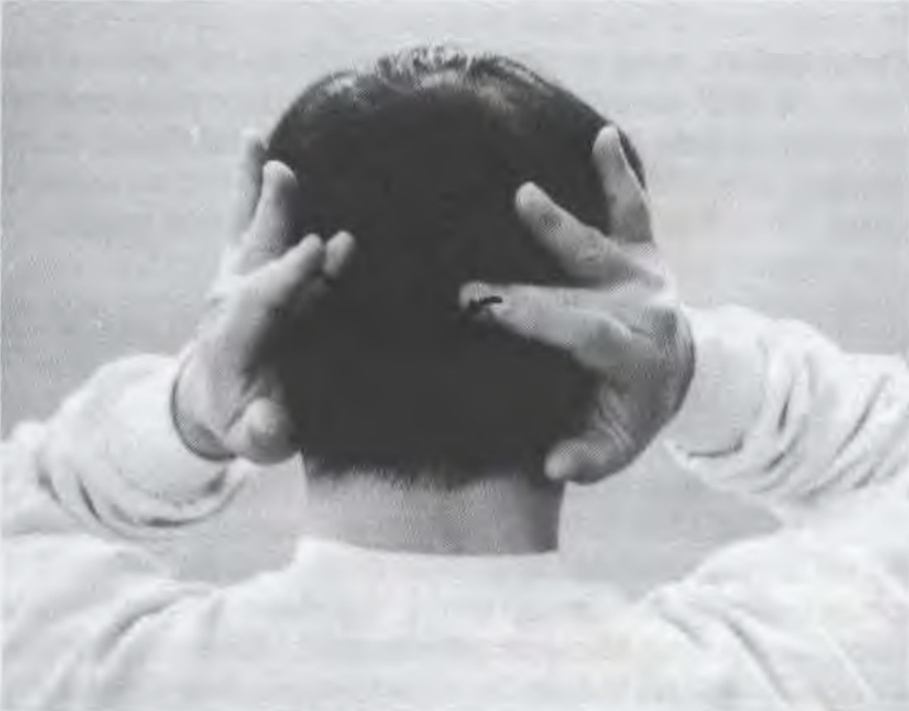
Hình 14-1. Đánh Trống Trời (Ming Tian Guu) -
Ho:
Người mới đôi khi gặp vấn đề với việc ho trong khi luyện tập. Có một số nguyên nhân khả dĩ. Nguyên nhân phổ biến nhất là hơi thở không được điều chỉnh thông suốt. Bạn có thể đang thở quá nhanh hoặc nín thở. Nếu đúng như vậy, hãy dùng Ý của bạn để điều chỉnh hơi thở cho đến khi bạn không còn phải điều chỉnh nó nữa.
Nguyên nhân khả dĩ thứ hai là cơ thể bạn không được điều chỉnh đúng cách. Ví dụ, nếu bạn ép đầu ra sau quá nhiều, phía trước cổ họng sẽ căng, và sẽ khiến bạn ho.
Nguyên nhân khả dĩ thứ ba là không khí quá khô. Khi bạn luyện tập, bạn thường làm tăng dòng không khí qua cổ họng mình. Không khí khô sẽ khiến bạn ho. Tuy nhiên, nếu bạn giữ đầu lưỡi chạm vào vòm miệng, bạn sẽ tiết ra đủ nước bọt để giữ cho miệng mình ẩm.
-
Hưng Phấn Tình Dục:
Việc có những cảm xúc tình dục và thậm chí trở nên hưng phấn tình dục trong khi luyện Khí Công là bình thường, đặc biệt là khi luyện Nội Đan (Nei Dan). Điều này là vì bạn đang bắt đầu thực hiện lại việc thở bụng, và điều này làm tăng sự lưu chuyển Khí ở phần dưới cơ thể bạn và kích thích việc sản sinh hormone trong tinh hoàn và buồng trứng. Trong khi điều này làm tăng ham muốn tình dục, bạn nên nhớ rằng bạn đang luyện Khí Công để tăng việc sản sinh hormone và dùng những hormone này để nâng Thần của mình lên. Nếu bạn không thể điều chỉnh tâm trí mình, và lãng phí nguồn hormone dư thừa này vào hoạt động tình dục quá độ, bạn đang gây hại cho sức khỏe mình và thậm chí có thể đang rút ngắn mạng sống của mình.
Hưng phấn tình dục đặc biệt là một vấn đề trong Khí Công Tẩy Tủy (Marrow Washing Chi Kung). Việc luyện tập này dạy nhiều phương pháp kích thích việc sản sinh hormone để các hormone hay Tinh (Essence) có thể được chuyển hóa thành Khí để nuôi dưỡng Thần và não. Những người không hiểu việc luyện tập hoặc có ý chí yếu có thể cuối cùng lãng phí những gì họ đã đạt được qua luyện tập của mình.
14-3. Những Cảm Giác Thường Gặp Trong Tĩnh Tọa
Trong giai đoạn đầu của luyện tập Khí Công, bạn học cách điều chỉnh thân, hơi thở và tâm của mình. Rồi khi bạn bắt đầu luyện tập Khí Công, đặc biệt là tọa thiền, bạn có thể đi vào một mức thiền sâu, nơi Khí tự điều chỉnh và quân bình chính nó, chạm tới từng chỗ nhỏ nhất trong cơ thể bạn. Khi điều này xảy ra, bạn có thể trải nghiệm nhiều loại cảm giác hoặc thậm chí có những thị kiến trong tâm trí mình. Nhiều cảm giác trong số này không thể trải nghiệm được khi bạn không ở trong thiền. Người Trung Quốc gọi những cảm giác này là "Jiing Chi", nghĩa là "cảnh Khí" hay "cảnh tượng Khí", vì chúng được sinh ra bởi Khí. Bây giờ chúng ta sẽ bàn về một số cảm giác thường gặp mà bạn có thể trải nghiệm. Đừng mong đợi rằng bạn sẽ trải nghiệm tất cả những cảm giác này, hoặc rằng ai cũng sẽ trải nghiệm chúng. Tất cả đều tùy thuộc vào từng cá nhân, thời điểm trong ngày, và thậm chí cả môi trường nơi bạn đang ngồi.
-
"Tám Cái Chạm" ("Eight Touches") (Các Hiện Tượng Vật Lý và Cảm Giác):
"Ba Chub" (tám cái chạm) là những cảm giác thường được cảm nhận trong luyện tập Khí Công, chẳng hạn như cảm giác nóng, có ai đó chạm vào bạn, hoặc nặng nề. Trong tiếng Trung chúng được gọi là "Chub Gaan" (chạm và cảm) hay "Dong Chub" (chạm chuyển động). Một số người luyện tập liệt kê tám hiện tượng này là: A. Chuyển Động (Dong), B. Ngứa (Yeang), C. Mát Lạnh (Liang), D. Ấm (Noan), E. Nhẹ (Ching), F. Nặng (Jong), G. Thô Ráp (Seh), và H. Trơn (Hwa). Những người luyện tập khác liệt kê một tám hiện tượng khác: A. Rung (Diaw), B. Gợn Sóng (Yi), C. Lạnh (Leeng), D. Nóng (Reb), E. Nổi (Fwu), F. Chìm (Chern), G. Cứng (Jian), và H. Mềm (Roan).
Bạn nên hiểu rằng tất cả những cảm giác này đều phổ biến và bình thường trong luyện tập Khí Công. Ngay cả người mới luyện Khí Công đôi khi cũng sẽ cảm thấy chúng. Nếu bạn trải nghiệm điều gì đó, hãy phân tích nó để xác định nguồn gốc hay nguyên nhân. Nếu đó là một hiện tượng tự nhiên và là kết quả của việc tái phân phối Khí, hãy để nó xảy ra và đừng lo lắng về nó. Ngược lại, nếu bất kỳ hiện tượng nào ở trên xảy ra vì những lý do khác, hãy sửa chữa những hoàn cảnh đang gây ra chúng. Ví dụ, nếu bạn cảm thấy lạnh vì nhiệt độ phòng quá thấp, hãy mặc thêm quần áo hoặc vặn tăng máy điều nhiệt lên.
Đừng mong đợi những hiện tượng này, đừng tìm kiếm chúng, và đừng lo lắng về chúng. Chỉ cần thuận theo tự nhiên và để nó xảy ra. Hãy thư thái và tiếp tục luyện tập của mình. Giữ tâm trí bạn sáng suốt và tĩnh lặng, và đừng để bị xáo trộn hay phân tán bởi bất cứ điều gì xảy ra.
-
Cảm Giác Chuyển Động hoặc Rung Động:
Đây là một cảm giác khác với điều chúng ta đã đề cập ở trên, khi một phần cơ thể tự phát bắt đầu chuyển động hoặc run rẩy. Cảm giác này xảy ra trong tĩnh tọa ở vùng Đan Điền. Khi bạn luyện tọa thiền được một thời gian, trước tiên bạn có thể trải nghiệm cảm giác ấm áp ở vùng bụng dưới. Sau vài tuần, bạn có thể thấy rằng vùng quanh Đan Điền của bạn bắt đầu tự rung động. Điều này có nghĩa là Khí đã đầy tại Đan Điền và đã đến lúc bạn dùng Ý của mình để dẫn Khí đi qua tiểu chu thiên. Thông thường, đây là cảm giác đầu tiên mà những người bắt đầu tọa thiền trải nghiệm. Nó cho bạn sự tự tin rằng bạn đang luyện tập đúng cách và rằng bạn đang tiến bộ.
-
Những Cảm Giác Bên Trong Bụng:
Một khi bạn cảm thấy sự ấm áp và rung động ở Đan Điền của mình, lượng Khí dồi dào sẽ lan tỏa khắp bụng bạn. Chuyển động của bụng bạn khi bạn thở làm tăng sự lưu chuyển Khí này trong ruột của bạn. Đôi khi điều này gây ra những tiếng động trong ruột, và việc xả khí. Sau khi điều này xảy ra một thời gian, bạn sẽ cảm thấy sự ấm áp và những cảm giác khác trong bụng mình, và bạn sẽ cảm thấy Khí đang chảy thông suốt và mạnh mẽ. Đôi khi điều này có thể khiến bạn ra mồ hôi. Sau khi bạn đã luyện tập một thời gian, những cảm giác này sẽ biến mất khi tất cả các kinh mạch trong bụng mở ra và Khí có thể di chuyển mà không bị ứ trệ gì.
-
Cảm Giác Nhẹ Nhàng:
Sau khi bạn đã hoàn thành tiểu chu thiên của mình, và Khí đang lưu chuyển thông suốt bên trong cơ thể bạn, bạn có thể trải nghiệm rằng khi bạn đi vào một trạng thái thiền sâu, cơ thể vật lý của bạn dường như biến mất, hoặc cơ thể bạn cảm thấy nhẹ và phiêu. Đây là một cảm giác rất thoải mái. Tuy nhiên, nếu bạn để tâm trí mình bị phân tán bởi cảm giác này, nó sẽ biến mất. Bạn nên ý thức về điều đang xảy ra, nhưng đừng chú ý đến nó. Thông thường, để đạt tới giai đoạn này, bạn phải đã điều chỉnh cơ thể mình vào một trạng thái thư giãn rất sâu, nơi hơi thở và nhịp tim của bạn chậm lại tới mức tối thiểu, và tâm trí bạn cực kỳ tĩnh lặng và an bình.
-
Cảnh Trắng (Mây) Trong Căn Phòng Trống:
Đôi khi, khi bạn đã đi vào một trạng thái thiền sâu, bạn sẽ đột nhiên cảm thấy cơ thể vật lý của mình biến mất và Khí của bạn hòa lẫn với Khí xung quanh. Khi điều này xảy ra, dường như toàn bộ căn phòng trống rỗng, và tràn đầy một đám mây hay sương trắng. Nếu bạn chú ý đến cảnh tượng này, nó sẽ biến mất ngay lập tức vì tâm trí bạn không quen với sự trống không, và tạo ra một hình ảnh về cảnh vật quen thuộc, vật lý để lấp đầy khoảng trống.
Nếu bạn thấy mình đang trải nghiệm sự trống không trắng này, chỉ cần cảm nhận hay cảm thấy nó, đừng đặt sự chú ý của mình lên nó. Cảnh tượng này sẽ chỉ xảy ra khi tâm trí bạn hoàn toàn được điều chỉnh vào một trạng thái tập trung cao độ và thư giãn. Đạo sĩ Wuh Yi Tzyy nói: "(Nếu bạn) muốn lấp đầy bụng (bằng Khí), trước tiên phải làm trống Tâm (điều chỉnh Tâm). (Nếu bạn) muốn sinh ra cái Trắng, (bạn) trước tiên phải làm trống căn phòng."(*3) Câu này nói với bạn rằng để luyện cho Khí đầy trong bụng mình, bạn phải trước tiên có một Tâm trống. Nghĩa là bạn phải điều chỉnh Tâm của mình cho đến khi không còn Tâm nữa. Chỉ khi đó tâm trí bạn mới có thể tập trung Ý của mình vào Hạ Đan Điền để Khởi Lửa (tích tụ Khí). Trắng ở đây nghĩa là đơn giản, thuần khiết, trong sạch, nhẹ nhàng, như sương, như mây, và biểu thị sự biến mất của cơ thể vật lý. Để khiến Khí của bạn hợp nhất với Khí xung quanh, trước tiên bạn phải buông bỏ và phớt lờ tất cả các đối tượng trong "căn phòng" tâm trí của mình, kể cả cơ thể vật lý của bạn.
-
Sáu Cảm Giác Khác:
Khi bạn đạt tới một mức thiền Khí Công cao hơn, có sáu cảm giác phổ biến khác mà bạn có thể trải nghiệm. Đó là A. Đan Điền nóng như thể đang bốc cháy. B. Hai quả thận (bên trong) cảm thấy như đang sôi trong nước. C. Mắt phát ra một luồng ánh sáng. D. Những cơn gió được sinh ra phía sau tai. E. Một con đại bàng đang kêu phía sau đầu bạn. F. Cơ thể bạn được tiếp năng lượng và mũi bạn rung rinh. Sáu hiện tượng này được Đạo sĩ Yu Tzuu gọi là "Sáu Sự Kiểm Chứng", vì chúng kiểm chứng rằng bạn đang theo đúng cách tiếp cận trong việc thiền của mình.
-
Sáu Sự Vận Chuyển:
Khi bạn đã đạt tới mức điều chỉnh Thần của mình, Thần của bạn sẽ cao và thần lực của Linh (Ling) của nó sẽ có thể vươn xa hơn bất kỳ người thường nào. Tâm trí bạn lúc đó sẽ có thể giao tiếp với sáu năng lực tự nhiên:
A. Thấy Hiện Tại:
Tâm trí bạn sáng suốt đến mức nó có thể phân tích và hiểu các biến cố hay sự việc một cách rõ ràng và thấu đáo. Điều này xảy ra vì khi bạn đã học được cách điều chỉnh tâm trí mình, bạn có thể nhìn sự vật hay biến cố từ một điểm nhìn trung lập, mà không bị Tâm làm cho mê mờ. Vì hầu hết mọi người không thể làm được điều này, bạn có thể nhìn rõ hơn hầu hết mọi người.
B. Hiểu Quá Khứ và Thấy Tương Lai:
Tâm trí bạn có thể hiểu quá khứ và tiên đoán tương lai. Vì tâm trí bạn sáng suốt, bạn sẽ có thể phân tích những gì đã xảy ra, hiểu nguyên nhân của nó và thấy kết quả. Khi kinh nghiệm của bạn về việc phân tích quá khứ một cách khách quan tích lũy lại, bạn sẽ có thể thấy điều gì sẽ xảy ra trong tương lai, vì con người vẫn vậy và lịch sử luôn lặp lại chính nó.
C. Nhìn Thấy Toàn Bộ Vũ Trụ:
Khi việc thiền của bạn đã đạt tới giai đoạn cao nhất, tinh thần bạn có thể cảm nhận hay cảm nhận được toàn bộ vũ trụ. Bạn sẽ (trên phương diện tinh thần) thấy những ngọn núi, bầu trời, sông ngòi, đại dương, v.v. Ở giai đoạn này, Khí của bạn và Khí của vũ trụ đã hợp nhất làm một và bạn có thể trao đổi thông tin một cách tự do.
D. Nghe Những Âm Thanh Của Vũ Trụ:
Qua tinh thần mình, bạn có thể lắng nghe và hiểu tất cả những âm thanh được sinh ra bởi những biến đổi của Khí tự nhiên, bao gồm gió, mưa, sóng, và nhiều thứ khác. Bạn cũng sẽ có thể nghe các linh hồn và giao tiếp với họ.
E. Thấy Vận Mệnh Của Một Người:
Sau khi bạn đã trải nghiệm tất cả những thay đổi của trường Khí tự nhiên, và tích lũy tất cả thông tin trong quá khứ liên quan đến loài người, bạn sẽ có thể thấy tâm trí, nhân cách và bản tính chân thật của một người, và điều này sẽ giúp bạn thấy được vận mệnh của người đó. Bạn thậm chí sẽ có thể thấy tương lai tinh thần của người đó, dù nó liên quan đến sự hưởng lạc (thiên đường) hay sự đau khổ (địa ngục).
F. Biết Những Suy Nghĩ Của Một Người:
Vì bạn đã tiếp năng lượng cho tinh thần và não của mình đạt tới một trạng thái cực kỳ nhạy cảm, não bạn sẽ mở ra với một dải bước sóng rộng hơn nhiều. Bạn sẽ có thể khớp bước sóng với tâm trí của người khác, và thấy những suy nghĩ của họ.
Đạo sĩ Wuu Jen Ren nói: "Trở về sự trống không để hợp nhất với Đạo; sau khi bạn đã đạt tới sự vững vàng và (tinh thần của bạn) có thể rời (khỏi cơ thể bạn), (tinh thần của bạn) có thể đột nhiên đi vào, đột nhiên đi ra (khỏi cơ thể bạn). Rồi bạn có thể giao tiếp với sáu hay mười (năng lực tự nhiên), và có thể biến hóa thành ngàn thay đổi và muôn vạn biến dị; không gì là không thể làm được."(*4) Đây là giai đoạn của Phật quả và Giác ngộ, nơi bạn có thể tách tinh thần mình khỏi cơ thể mình và hợp nhất với tự nhiên.
Chương Mười Bốn: Những Điểm Quan Trọng Khi Luyện Tập (2)
… hiểu và nắm vững việc điều chỉnh thân, tức (hơi thở) và tâm. Bạn cần hiểu rằng một khi đã sinh ra được Khí mạnh trong cơ thể, nếu bạn không biết cách dẫn dắt nó thì nó có thể đi vào những đường sai lệch và ảnh hưởng đến vòng tuần hoàn Khí bình thường của cơ thể. Điều đó có hại và thậm chí nguy hiểm. Vì vậy người ta gọi chúng là những "sai lệch" chứ không gọi là "hiện tượng" — thuật ngữ mà chúng ta đã dùng ở phần trước của chương này để chỉ những trải nghiệm mà người mới bắt đầu gặp phải.
Những Sai Lệch và Cách Sửa Chữa
1. Đau Đầu:
Ở phần trước của chương này, chúng ta đã bàn về những cơn đau đầu mà người mới bắt đầu gặp phải. Ở đây chúng ta sẽ bàn về những cơn đau đầu có thể rất nghiêm trọng, xảy ra với những người đã phát triển được nhiều Khí hơn.
Cơn đau đầu này thường do thừa Khí và huyết, hoặc do thiếu oxy trong não. Việc thừa Khí và huyết thường do tập trung gượng ép, nghĩa là tâm không được điều chỉnh đúng cách.
Ngay cả khi đang tập trung, cả Ý và thân của bạn cũng phải thư giãn. Nếu bạn gượng ép mình tập trung, tâm sẽ dẫn Khí và huyết lên đầu bạn, bạn sẽ càng căng thẳng hơn và sẽ bị đau đầu. Điều này cũng giống như khi bạn không ngủ được, gượng ép mình ngủ là vô ích. Bạn phải muốn đi vào giấc ngủ, nhưng bạn phải thư giãn và để cho nó tự đến.
Cơn đau đầu do thiếu oxy thường xảy ra khi hơi thở của bạn không được điều chỉnh đúng cách. Chẳng hạn, người mới bắt đầu thường cố gắng đến mức vô thức nín thở để tập trung Ý của mình. Nín thở làm giảm nguồn oxy cung cấp cho não và gây đau đầu. Vì vậy, điều rất quan trọng đối với người mới bắt đầu là phải điều chỉnh hơi thở cho đến khi nó mượt mà và tự nhiên. Điều đó nghĩa là điều chỉnh hơi thở mà không điều chỉnh. Chỉ sau đó người ấy mới nên học cách tập trung tâm trí để dẫn dắt Khí.
Nếu bạn bị đau đầu trong khi luyện Khí Công, hãy dừng luyện tập ngay lập tức. Điều chỉnh hơi thở cho đến khi nó mượt mà, và đưa thân bạn vào trạng thái thư giãn sâu. Điều này sẽ giúp mở tất cả các kinh mạch ở cổ, và Khí cùng huyết đã tích tụ trong đầu bạn sẽ có thể di chuyển xuống thân. Bên ngoài, bạn có thể xoa bóp hai thái dương (Hình 14-2) và dẫn Khí cùng huyết đi xuống. Bạn cũng nên xoa bóp huyệt Phong Trì (Fengtzu — Wind Pond, "Ao Gió") ở sau cổ, cũng như các cơ ở đó, ấn xuống dưới để dẫn huyết và Khí ra khỏi đầu bạn. Cuối cùng, đặt tâm lòng bàn tay lên huyệt Bách Hội (Baihui — Hundred Meetings, "Trăm Gặp Gỡ") trên đỉnh đầu và xoay nhẹ thành vòng vài lần, rồi men theo các cơ ở sau cổ đi xuống (Hình 14-4).
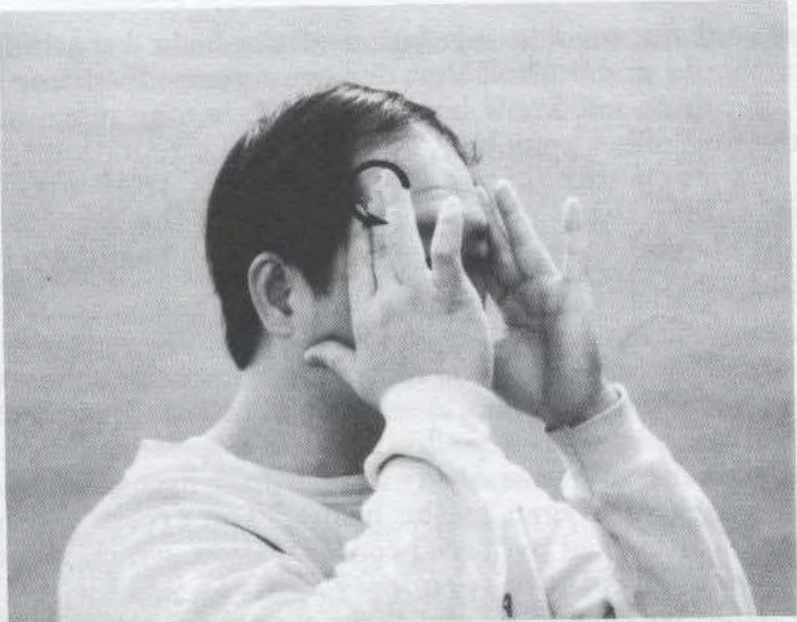
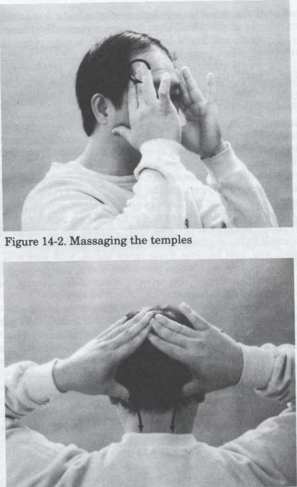
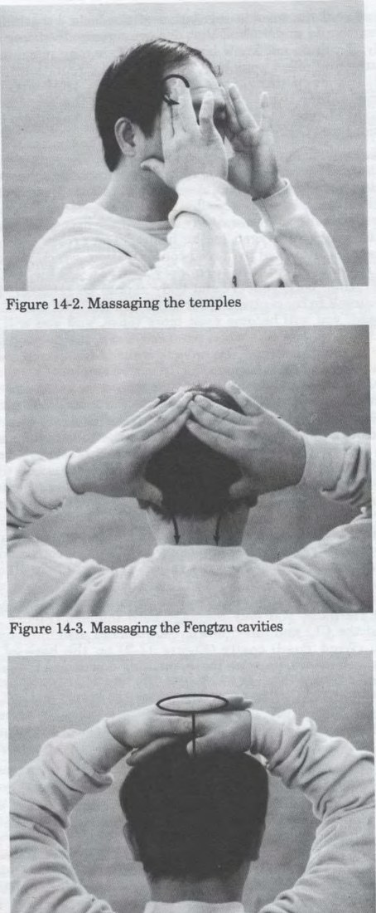
2. Khí Trệ Ở Thượng Đan Điền:
Khi Khí trệ ở Thượng Đan Điền của bạn, bạn có cảm giác như có một miếng băng dính ruồi dán trên con mắt thứ ba. Điều này thường xảy ra khi bạn đã tập trung ở đó rất mãnh liệt. Bình thường, khi bạn tập trung Thần, vùng Thượng Đan Điền của bạn cảm thấy ấm áp dễ chịu. Tuy nhiên, nếu bạn cảm thấy khó chịu thì Khí đang bị trệ. Khi điều này xảy ra, hãy xoa bóp Thượng Đan Điền của bạn và dẫn Khí về phía hai thái dương rồi xuống dọc hai bên cổ (Hình 14-5). Một cách khác là dùng ngón tay giữa xoa bóp Thượng Đan Điền của bạn vài lần, rồi dẫn Khí xuống sống mũi, cuối cùng tản Khí xuống khắp mặt bạn (Hình 14-6).
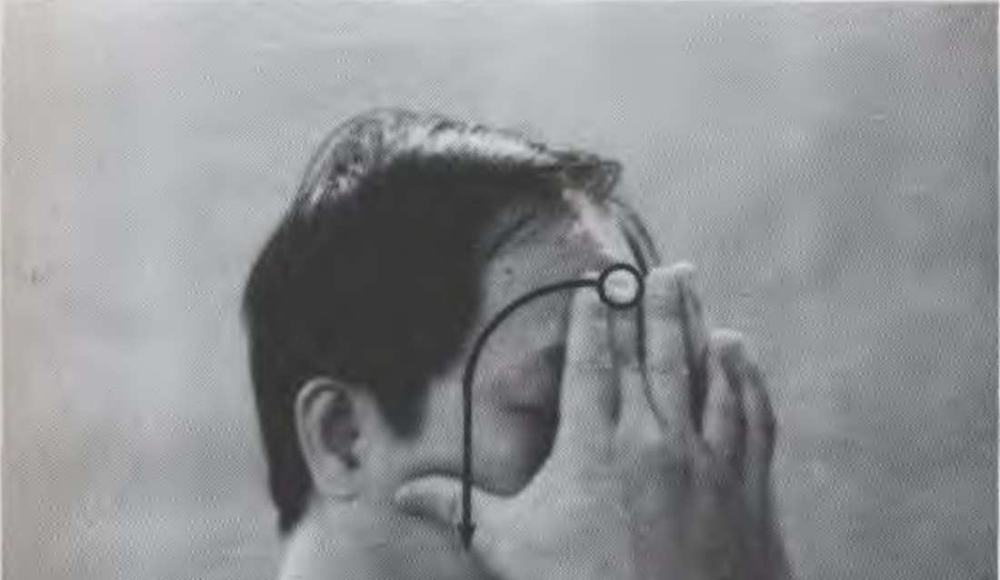
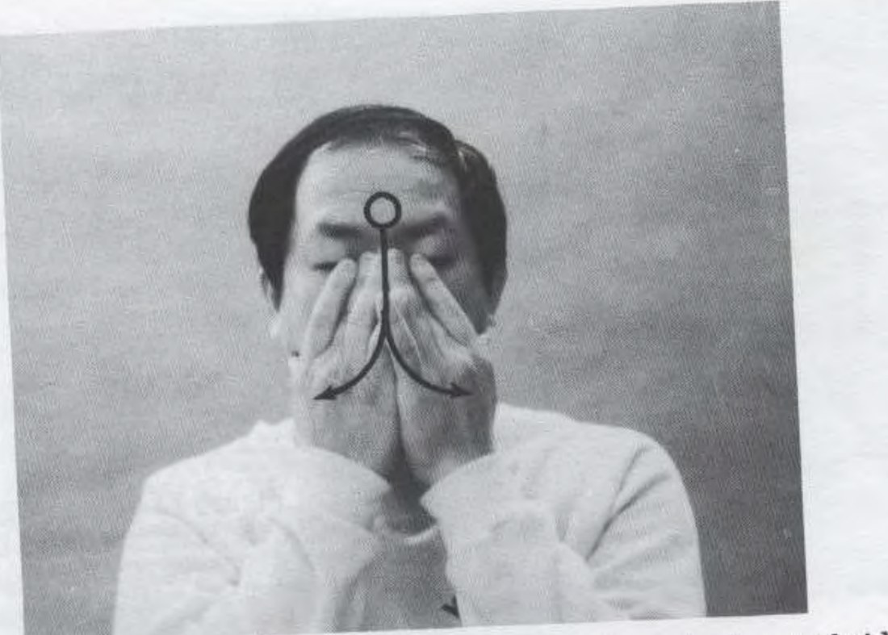
3. Đan Điền Cảm Thấy Căng Phồng và Khó Chịu:
Mặc dù đây là một hiện tượng phổ biến hơn ở người mới bắt đầu, nhưng những người đã có chút kinh nghiệm cũng có thể gặp phải. Nó thường xảy ra khi bạn dùng quá nhiều sức để đưa cơ bụng vào và ra. Nếu bạn luyện tập lâu, các cơ sẽ mệt và bạn sẽ không thể kiểm soát chúng. Khi bạn luyện cho bụng mình đưa vào và ra, nó phải giữ được mềm và thư giãn. Nếu các cơ căng, Khí sẽ trệ ở đó. Nếu bạn thấy bụng mình khó chịu và Khí trệ ở đó, hãy chồng hai bàn tay lên nhau và xoa bụng theo chuyển động vòng tròn vài lần (Hình 14-7), rồi mở hai bàn tay ra và quét Khí xuống hai đùi (Hình 14-8).
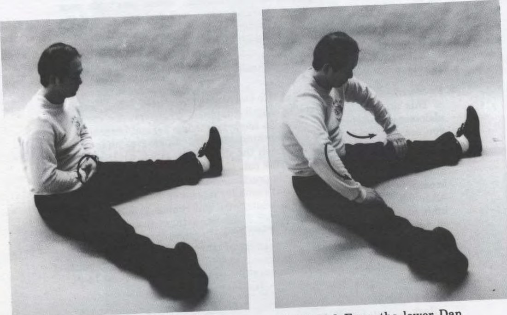
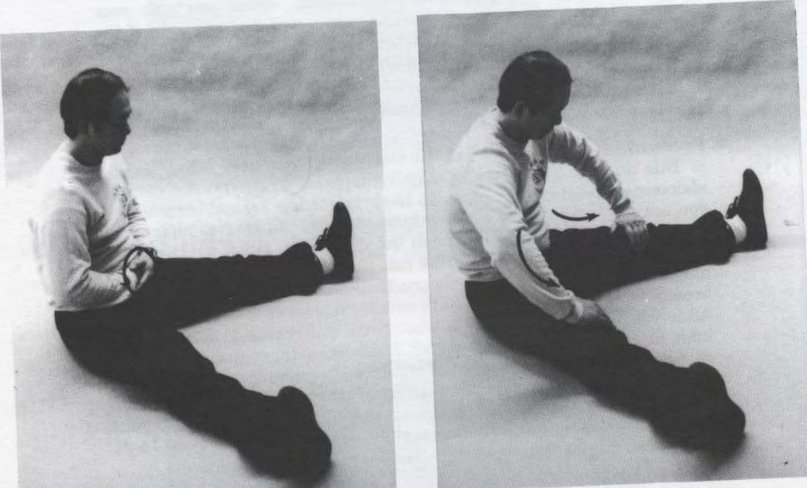
4. Áp Lực và Khó Chịu Ở Hoành Cách:
Cảm giác khó chịu này thường xảy ra khi bạn dùng cách thở bụng ngược. Nó cũng có thể xảy ra trong khi thở bình thường nếu bạn không điều chỉnh hơi thở đúng cách. Trong cách thở bụng ngược, khi hít vào bạn đẩy hoành cách xuống trong khi kéo cơ bụng vào. Điều này có thể gây ra cảm giác áp lực và khó chịu. Vì vậy, khi luyện tập, bạn nên bắt đầu cách thở ngược của mình ở mức nhỏ hơn, với những chuyển động nhỏ hơn của bụng. Sau khi đã luyện tập một thời gian, bạn sẽ nhận ra rằng có một giới hạn cho việc bạn có thể đưa bụng đi bao xa mà không cảm thấy áp lực trên hoành cách. Tuy nhiên, nếu bạn đã cảm thấy khó chịu, điều đó nghĩa là Khí đang trệ vì áp lực và căng thẳng quanh hoành cách. Bạn nên dừng luyện tập ngay lập tức. Chồng hai bàn tay lên nhau và ấn nhẹ vào đám rối mặt trời vài lần (Hình 14-9), rồi quét xuống dưới và sang hai bên (Hình 14-10).
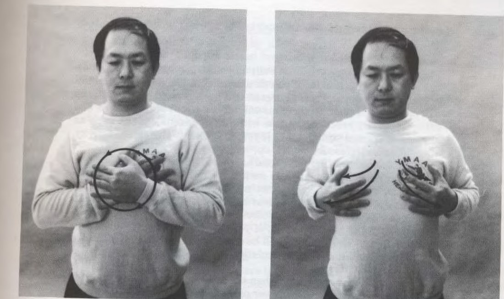
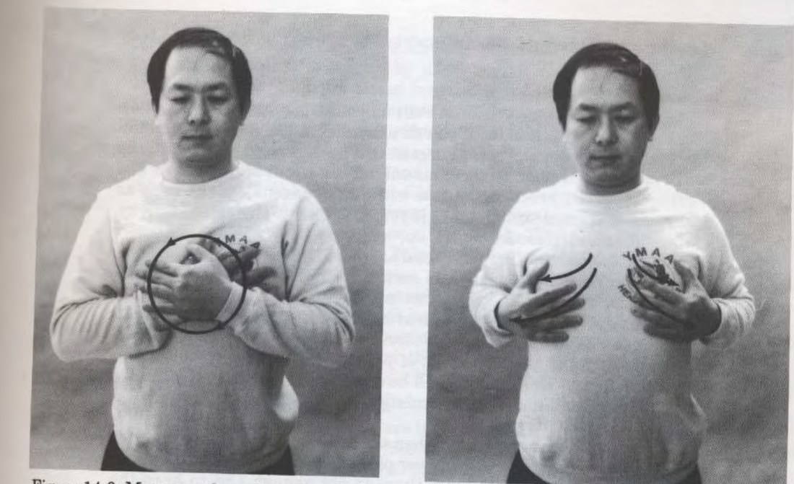
5. Đau Lưng:
Đau lưng trong Khí Công thường do tư thế sai. Điều này đặc biệt xảy ra khi ngồi thiền. Tư thế sai có thể làm cho vòng tuần hoàn Khí của bạn bị trệ. Nó cũng có thể làm tăng áp lực và căng thẳng trên các cơ. Nếu bạn bị đau lưng, hãy dừng luyện tập ngay lập tức. Nếu bạn gượng ép mình tiếp tục, bạn chỉ làm rối loạn tâm mình và khiến mọi thứ tệ hơn. Nếu có thể, hãy nhờ ai đó xoa bóp vùng đau (Hình 14-11), men theo xương sống đi xuống tới hông (Hình 14-12), và tản Khí ra hai bên thân và xuống dưới tới hai chân.
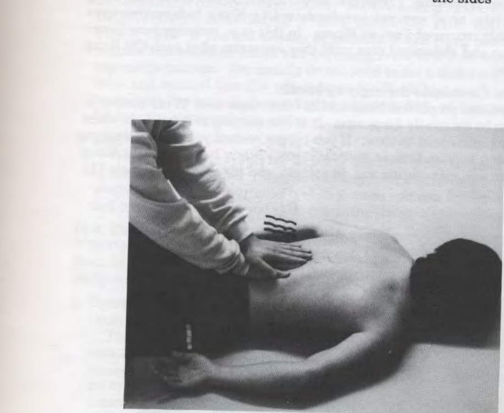
6. Di Tinh (Mộng Tinh):
Điều này xảy ra khi bạn đã tích lũy được Khí mà không biết cách giữ và lưu thông nó. Nếu bạn làm nhiều bài tập Đan Điền thì Khí sẽ đầy ở đó, cơ quan sinh dục của bạn sẽ được tiếp thêm sinh lực, và cơ thể bạn sẽ sản sinh nhiều hormone hơn. Điều này sẽ làm tăng ham muốn tình dục của bạn, và gây ra những lần cương cứng thường xuyên, thường không rõ nguyên nhân như kích thích thể chất hay tinh thần. Nếu bạn không có hoạt động tình dục nào, áp lực tình dục bên trong sẽ tích tụ, và cơ thể bạn sẽ tự động giải phóng áp lực đó qua việc di tinh khoảng một lần mỗi tháng. Nếu bạn luyện Khí Công mà tinh dịch tự động thoát ra hơn hai lần một tháng thì đó là bất thường. Điều đó nghĩa là bạn đang không chuyển hóa Tinh thành Khí và lưu thông nó đúng cách. Để chuyển hóa Tinh thành Khí và lưu thông nó, khi Khí của bạn đã đầy, bạn nên phối hợp chuyển động của huyệt Hội Âm và hậu môn với hơi thở của mình. Bài luyện tập này sẽ được bàn chi tiết hơn khi chúng ta nói về tiểu và đại chu thiên cùng Tẩy Tủy Khí Công trong tập tiếp theo.
Vấn đề này cũng có thể xảy ra khi mức Khí ở nửa dưới cơ thể bạn thấp hơn bình thường. Khi phần dưới cơ thể bạn bị hư nhược do bệnh tật hoặc do đi bộ quá nhiều, sẽ không đủ Khí để giữ cho các cơ hoạt động bình thường, và đôi khi bạn sẽ bị di tinh. Điều này cũng có thể xảy ra nếu bạn luyện Khí Công sai cách, hoặc nếu bạn tham gia luyện Khí Công trước khi bình phục hoàn toàn sau một cơn bệnh. Trong trường hợp này, sau mỗi buổi luyện Khí Công, hãy xoa bóp Hạ Đan Điền và vùng bụng của bạn cho đến khi chúng ấm lên.
7. Khí Tự Lưu Thông Mạnh:
Đôi khi người ta tích lũy Khí nhanh hơn mức Ý của họ có thể kiểm soát. Điều này có thể cực kỳ nguy hiểm. Nó giống như bắt đầu lái xe khi bạn không biết đánh lái. Nếu bạn không kiểm soát được Khí của mình, nó có thể đi sai đường và gây thương tích nghiêm trọng. Nhiều học viên Khí Công mới bắt đầu thì nhiệt tình và nóng vội, cố điều chỉnh Khí của mình trước khi họ có thể điều chỉnh thân, tức và tâm. Khi họ cảm thấy Khí tự chuyển động, đặc biệt là trong khi luyện tiểu chu thiên, họ vui mừng vì nghĩ rằng đó là dấu hiệu mình đang tiến bộ. Khi bạn thấy Khí của mình đang tích lũy mà bạn không kiểm soát được, bạn nên ngừng luyện tập hoàn toàn trong một thời gian. Hãy luyện điều chỉnh thân, tức và tâm cho đến khi bạn tự tin và hiểu mình đang làm gì. Chỉ khi đó bạn mới nên bắt đầu điều Khí. Cách khôn ngoan nhất là hỏi ý một bậc thầy có kinh nghiệm. Tuy nhiên, nhiều lần bạn sẽ thấy Khí tự chuyển động hoặc tự phân bố ở mức nhỏ. Điều này thường không kéo dài lâu và tự ngừng lại. Không có gì đáng lo, và bạn nên cứ tiếp tục luyện tập với tâm bình thản và an nhiên.
Đừng lẫn trải nghiệm này với điều xảy ra khi bạn luyện một số bài Khí Công nhằm tích lũy Khí ở một vùng nhất định để sau đó nó sẽ tự lưu thông mạnh. Những bài tập ấy được thiết kế cho mục đích đó, và dòng Khí mạnh, tự động là điều được mong đợi.
8. Khí Đi Vào Đường Sai:
Lý do chính khiến Khí đi vào đường sai là tâm bạn bị tán loạn và không được điều chỉnh. Nếu Khí của bạn mạnh mà tâm không được điều chỉnh, Khí có thể đi bất cứ đâu. Nó có thể làm cho các tạng nội của bạn quá Dương hoặc quá Âm, và bạn có thể trở nên bệnh. Khí Công mà không có tâm được điều chỉnh thì giống như một chiếc xe với người tài xế say rượu — cực kỳ nguy hiểm.
Hãy luôn nhớ: HÃY ĐIỀU CHỈNH THÂN, TỨC VÀ TÂM TRƯỚC KHI BẠN ĐIỀU KHÍ. Nếu bạn đã bị bệnh vì luyện Khí Công, hãy dừng luyện tập ngay lập tức! Hãy thư giãn và nghỉ ngơi đầy đủ, và chờ cho đến khi Khí lấy lại được cân bằng. Bạn thường không cần đi bác sĩ; nếu bạn giữ bình thản và thư giãn thì Khí sẽ tự cân bằng. Khi bạn bắt đầu lại, hãy bắt đầu bằng những bài điều chỉnh cơ bản nhất trước, để bạn không rơi vào cùng một vấn đề ấy lần nữa.
9. Lưỡi Cứng:
Khi lưỡi cứng trong luyện tập Khí Công, nó có thể làm trệ Khí trong tiểu chu thiên. Hãy luyện thư giãn lưỡi của bạn sao cho đầu lưỡi chạm nhẹ vào vòm miệng trên. Chỉ khi bạn làm được điều này một cách tự nhiên và thoải mái thì bạn mới nên bắt đầu luyện tiểu chu thiên.
14-5. Hai Mươi Bốn Quy Tắc Luyện Tập Khí Công
Trong mục này, chúng ta sẽ liệt kê hai mươi bốn quy tắc đã được các bậc thầy Khí Công truyền lại qua nhiều thế hệ. Những quy tắc này dựa trên rất nhiều nghiên cứu và kinh nghiệm, và bạn nên tuân thủ chúng một cách cẩn thận.
1. Đừng Cố Chấp Với Kế Hoạch Và Ý Nghĩ (Yuh Jyr Wang Niann)
Đây là một trong những sai lầm dễ mắc nhất đối với người mới bắt đầu. Khi bắt đầu với Khí Công, chúng ta nhiệt tình và háo hức. Tuy nhiên, đôi khi chúng ta không học nhanh như mình muốn, và chúng ta trở nên nóng vội và cố thúc ép mọi thứ. Đôi khi chúng ta đặt ra một thời khóa biểu cho mình: hôm nay tôi muốn làm cho Đan Điền ấm lên, ngày mai tôi muốn thông được huyệt xương cụt, đến ngày nọ ngày kia tôi muốn hoàn tất tiểu chu thiên. Đây là cách làm sai. Khí Công không giống bất kỳ công việc hay nhiệm vụ bình thường nào bạn tự đặt ra — BẠN KHÔNG THỂ LẬP MỘT TIẾN ĐỘ CHO KHÍ CÔNG. Điều đó chỉ làm cho tư duy của bạn trở nên cứng nhắc và làm trệ sự tiến bộ của bạn. MỌI THỨ XẢY RA KHI ĐÃ ĐẾN LÚC NÓ XẢY RA. NẾU BẠN THÚC ÉP NÓ, NÓ SẼ KHÔNG XẢY RA MỘT CÁCH TỰ NHIÊN.
Chương Mười Bốn: Những Điểm Quan Trọng Khi Luyện Tập (3)
2. Đừng Đặt Sự Chú Ý Vào Sự Phân Biệt (Jwo Yi Fen Bye)
Khi luyện tập, bạn đừng đặt sự chú ý vào các hiện tượng hay cảm giác khác nhau đang diễn ra. Hãy ý thức về những gì đang xảy ra, nhưng giữ tâm trí mình tập trung vào nơi mà nó phải ở cho bài tập bạn đang làm. Nếu bạn để tâm mình chạy đến bất cứ nơi nào bạn thấy có điều gì đó “thú vị” đang xảy ra, thì Khí sẽ đi theo tâm bạn và gây trở ngại cho khuynh hướng tự nhiên của cơ thể là tái lập lại thế quân bằng. Đừng mong đợi bất cứ điều gì xảy ra, và đừng để tâm mình lang thang tìm kiếm các hiện tượng khác nhau. Hơn nữa, đừng bắt đầu đánh giá hay phán xét các hiện tượng, chẳng hạn tự hỏi “Hôm nay Đan Điền của mình có ấm hơn hôm qua không?” Đừng tự hỏi “Khí của mình bây giờ đang ở đâu?”. Khi tâm bạn hướng về Khí của bạn, thì Ý của bạn cũng ở đó, và cái Ý đình trệ này sẽ không dẫn dắt được Khí. HÃY Ý THỨC VỀ NHỮNG GÌ ĐANG XẢY RA, NHƯNG ĐỪNG CHÚ Ý ĐẾN NÓ. Khi bạn lái xe, bạn không nhìn chằm chằm vào tay mình đang đánh lái, đạp ga đạp phanh và sang số. Nếu bạn làm vậy, bạn sẽ lao xe ra khỏi đường. Bạn chỉ cần đặt tâm mình vào nơi bạn muốn đến, và để cơ thể tự động lái xe. Đó gọi là điều chỉnh mà không điều chỉnh.
3. Tránh Tạp Niệm Còn Vướng Lại Nơi Nguồn Gốc (Tzar Niann Pan Yuan)
Đây là một vấn đề của việc điều tâm. Cái tâm cảm xúc rất mạnh, và mỗi ý niệm vẫn còn gắn chặt với nguồn gốc của nó. Nếu bạn không cắt được các ý niệm ngay tại nguồn của chúng, thì tâm bạn chưa được điều phục, và bạn không nên cố điều phục Khí của mình. Bạn cũng sẽ thường thấy rằng dù bạn đã ngăn được dòng tạp niệm chạy qua tâm mình, những ý tưởng mới vẫn được sinh ra trong lúc luyện tập. Ví dụ, khi bạn phát hiện Đan Điền của mình ấm lên, tâm bạn lập tức nhớ lại nơi sách đã nói đến điều này, hay cách vị sư phụ đã mô tả nó, rồi bạn bắt đầu so sánh trải nghiệm của mình với điều đó. Hoặc bạn có thể bắt đầu tự hỏi bước kế tiếp là gì. Tất cả những ý nghĩ này sẽ dẫn bạn rời xa sự yên bình và tĩnh lặng, và cuối cùng tâm bạn sẽ rơi vào “Lãnh Địa của Ma Quỷ”. Rồi tâm bạn sẽ rối loạn, tản mát, và rất thường hay sợ hãi, và bạn sẽ mau mệt mỏi.
4. Tâm Không Nên Chạy Theo Cảnh Bên Ngoài (Hsin Swei Wai Jiing)
Đây cũng là một vấn đề của việc điều tâm (Tâm). Khi cái tâm cảm xúc của bạn không được kiểm soát, bất kỳ sự xao lãng bên ngoài nào cũng sẽ dẫn nó rời khỏi cơ thể bạn mà chạy về phía sự xao lãng ấy. Bạn phải tự rèn luyện để tiếng ồn, mùi, câu chuyện và những thứ tương tự không làm nhiễu loạn sự tập trung của bạn. Ý thức về những gì đang xảy ra thì không sao, nhưng tâm bạn phải giữ được sự bình thản, yên tĩnh và vững vàng trên con đường tu luyện của mình.
5. Điều Tiết Sinh Hoạt Tình Dục (Rub Farng Shy Jieng)
Bạn không nên sinh hoạt tình dục ít nhất 24 giờ trước hoặc sau khi luyện Khí Công, nhất là Khí Công võ thuật hay tôn giáo. Việc luyện chuyển hóa Tinh – Khí là một phần rất trọng yếu của những bài tập này, và nếu bạn luyện Khí Công ngay sau khi sinh hoạt tình dục, bạn sẽ làm tổn hại đáng kể cho cơ thể mình. Sinh hoạt tình dục làm hao tổn Khí và tinh dịch của bạn, và mức Khí ở phần dưới cơ thể bạn thấp hơn bình thường. Khi bạn luyện Khí Công trong những điều kiện này, nó giống như làm bài tập nặng ngay sau khi sinh hoạt tình dục. Hơn nữa, khi mức Khí của bạn không bình thường, thì cảm giác và sự cảm nhận của bạn cũng không chính xác. Trong những điều kiện này, Ý của bạn có thể bị dẫn sai và tính chính xác của nó bị ảnh hưởng. Bạn nên chờ cho đến khi mức Khí lấy lại được thế quân bằng bình thường trước khi tiếp tục luyện Khí Công. Chỉ khi đó việc chuyển hóa Tinh – Khí mới tiến hành bình thường và hiệu quả.
Một trong những mục đích chính của Khí Công là tăng cường sự chuyển hóa Tinh – Khí và dùng Khí này để nuôi dưỡng cơ thể bạn. Một khi người đàn ông đã tích lũy được một nguồn Khí, thì việc sinh hoạt tình dục sẽ chỉ truyền lượng Khí này sang cho bạn tình của mình. Thực ra, nhiều vị sư phụ Khí Công khẳng định rằng bạn không nên sinh hoạt tình dục ba ngày trước và bốn ngày sau khi luyện tập. Trong lúc sinh hoạt tình dục, người nữ thường được Khí còn người nam mất Khí khi xuất tinh. Người nữ không nên luyện Khí Công sau khi sinh hoạt tình dục cho đến khi cơ thể cô đã tiêu hóa lượng Khí mà mình nhận từ người nam. Có một số kỹ thuật Khí Công Đạo gia dạy người nam cách không mất Khí trong lúc sinh hoạt tình dục, và dạy người nữ cách nhận Khí từ người nam và tiêu hóa nó. Chúng ta sẽ để việc thảo luận đề tài này lại cho những vị sư phụ Khí Công có đủ trình độ và kinh nghiệm về nó.
6. Đừng Quá Ấm hay Quá Lạnh (Dah Uen Dah Ham)
Nhiệt độ của căn phòng nơi bạn luyện tập không nên quá nóng hay quá lạnh. Bạn nên luyện tập trong môi trường thoải mái nhất, nơi không làm nhiễu loạn tâm bạn và sự tu luyện của bạn.
7. Cẩn Thận với Ngũ Nhược và Nội Thương (Wuu Lau Ann Shang)
Ngũ nhược nghĩa là sự yếu kém của năm tạng Âm: tâm, can (gan), phế (phổi), thận và tỳ (lá lách). Khi bạn nhận ra rằng bất kỳ tạng nào trong năm tạng này bị yếu, bạn nên tiến hành việc luyện Khí Công của mình thật dần dà và nhẹ nhàng. Luyện Khí Công là một bài tập nội tại có liên quan trực tiếp đến năm tạng này. Nếu bạn không tiến hành dần dà và nhẹ nhàng, thì nó giống như buộc một người yếu ớt phải chạy 10 dặm ngay lập tức. Điều này sẽ không xây dựng được sức lực cho người ấy, mà ngược lại còn làm người ấy bị thương tích nghiêm trọng hơn.
Cũng vì lý do đó, khi bạn bị nội thương thì sự phân phối và tuần hoàn Khí nội tại của bạn đã bị rối loạn rồi. Nếu bạn luyện Khí Công thì cảm giác của bạn có thể bị dẫn sai, và việc luyện tập của bạn có thể làm vấn đề của bạn trầm trọng hơn và cản trở tiến trình tự chữa lành của tự nhiên. Có một số bài tập Khí Công được thiết kế để chữa nội thương, nhưng để dùng chúng đúng cách, bạn cần có hiểu biết rất tốt về tình trạng Khí của cơ thể mình.
8. Tránh Đối Diện với Gió Khi Đang Đổ Mồ Hôi (Tzuoh Hann Dang Feng)
Đừng luyện tập trong gió, nhất là đối diện với gió. Khi bạn luyện Khí Công, bạn đang vận động hoặc là nội tại, hoặc là cả nội tại lẫn bên ngoài. Đổ mồ hôi là chuyện bình thường, và vì bạn đang thư giãn nên lỗ chân lông của bạn mở rộng. Nếu bạn để cơ thể phơi ra trước gió lạnh, bạn sẽ bị cảm lạnh.
9. Đừng Mặc Quần Áo và Đeo Thắt Lưng Chật (Jiin Yi Shuh Dai)
Luôn mặc quần áo rộng rãi trong lúc luyện tập vì điều này sẽ giúp bạn cảm thấy thoải mái. Cũng hãy giữ thắt lưng lỏng. Bụng là vùng then chốt trong luyện tập Khí Công, và bạn phải cẩn thận đừng hạn chế sự chuyển động của vùng này vì nó sẽ gây trở ngại cho việc luyện tập của bạn.
10. Đừng Ăn Quá Nhiều Đồ Béo và Đồ Ngọt (Tau Tieh Fair Gan)
Bạn nên điều tiết thói quen ăn uống của mình trong khi luyện Khí Công. Thức ăn béo hay ngọt sẽ làm tăng Hỏa Khí của bạn, khiến tâm bạn tản mát, và Thần (Shen) của bạn sẽ rời khỏi chỗ ngụ của nó. Bạn nên ăn nhiều trái cây và rau củ, và tránh xa rượu và thuốc lá.
11. Đừng Buông Thõng Chân Khỏi Giường (Bar Chwang Shyuan Jywe)
Thời xưa, nơi luyện Khí Công phổ biến nhất là ngồi trên giường. Vì hầu hết giường đều cao, nếu bạn ngồi ở mép giường thì chân bạn sẽ buông thõng bên hông giường, phía trên sàn nhà. Khi bạn luyện Khí Công thì chân bạn nên chạm sàn. Nếu không chạm sàn, toàn bộ trọng lượng cơ thể bạn sẽ đè nén xuống phần dưới của đùi và làm giảm tuần hoàn Khí và huyết. Hơn nữa, khi luyện tập bạn cũng không nên gác chân lên bàn, vì tư thế này cũng sẽ làm đình trệ tuần hoàn Khí và huyết.
12. Đừng Luyện Tập Khi Bàng Quang Đầy (Jeou Zen Sheau Biann)
Bạn nên đi vệ sinh trước khi bắt đầu luyện tập. Nếu bạn cần đi trong lúc luyện tập, hãy dừng luyện tập và đi. Nín nhịn sẽ làm nhiễu loạn sự tập trung của bạn.
13. Đừng Gãi Khi Ngứa (Sau Jua Yeang Chub)
Nếu bạn ngứa vì một lý do bên ngoài nào đó, chẳng hạn như có côn trùng bò trên người bạn hoặc đốt bạn, thì đừng hoảng hốt và hãy giữ tâm mình bình tĩnh. Dùng Ý của bạn để dẫn Khí trở về chỗ ngụ của nó, tức Đan Điền. Hít thở vài hơi và dần dần đưa ý thức của bạn trở lại với cảnh vật xung quanh. Rồi bạn có thể gãi hoặc nghĩ cách làm sao cho hết ngứa. Tuy nhiên, nếu cơn ngứa là do sự tái phân phối Khí trong luyện tập Khí Công, thì hãy giữ bình tĩnh và đừng hướng tâm mình đến đó. Đơn giản là hãy phớt lờ nó và để nó diễn ra. Một khi nó đã đạt đến một thế quân bằng mới, cơn ngứa sẽ hết. Nếu bạn gãi loại ngứa này, nghĩa là tâm bạn đã bị nhiễu loạn, và cũng có nghĩa là bạn đang dùng tay mình để can thiệp vào việc tái lập thế quân bằng Khí một cách tự nhiên của cơ thể.
14. Tránh Bị Làm Nhiễu Loạn hay Giật Mình Đột Ngột (Tsuh Bu Jing Jib)
Bạn nên tránh bị làm nhiễu loạn hay giật mình đột ngột. Tuy nhiên, nếu điều đó có xảy ra, hãy làm tâm mình bình tĩnh lại. Bạn tuyệt đối phải ngăn mình đánh mất bình tĩnh. Điều gì đã xảy ra thì đã xảy ra rồi, và nổi giận không thể thay đổi được gì. Điều bạn nên làm là ngăn nó xảy ra lần nữa. Tuy vậy, quan trọng nhất trong mọi điều là học cách điều tâm mình khi bạn bị nhiễu loạn.
15. Đừng Thích Thú với Cảnh Tượng (Twe Jiing Huan Shii)
Trong lúc luyện tập, rất thường xuyên xảy ra việc bạn chợt nhận thấy điều gì đó đang diễn ra bên trong mình. Có thể bạn cảm nhận Khí di chuyển rõ ràng hơn bao giờ hết, hoặc bạn bắt đầu cảm nhận được tủy xương của mình, và bạn thấy hân hoan, phấn khích. Bạn vừa mới rơi vào một cái bẫy hết sức phổ biến. Sự tập trung của bạn bị phá vỡ, và tâm bạn bị phân tán. Điều này nguy hiểm và có hại. Bạn phải học cách ý thức về những gì đang diễn ra bên trong mình mà không bị phấn khích.
16. Đừng Mặc Quần Áo Ướt Mồ Hôi (Jeou Jwo Hann Yi)
Điều này xảy ra chủ yếu trong luyện tập Khí Công động công, nhất là trong luyện tập Khí Công võ thuật. Khi quần áo bạn ướt vì mồ hôi, bạn sẽ cảm thấy khó chịu, và sự tập trung của bạn sẽ bị ảnh hưởng. Tốt hơn là hãy thay sang quần áo khô rồi tiếp tục luyện tập.
17. Đừng Ngồi Khi Đói hay Khi No (Ji Bao Shang Tzuoh)
Bạn không nên luyện Khí Công khi bạn đói hoặc khi bụng bạn đầy. Khi bạn đói thì khó tập trung, và khi bạn no thì việc luyện tập của bạn sẽ ảnh hưởng đến tiêu hóa.
18. Tai Họa Lạ Lùng của Trời Đất (Tian Dih Tzai Guay)
Người ta tin rằng Khí của cơ thể bạn bị ảnh hưởng trực tiếp bởi những thay đổi của thời tiết. Do đó, không nên luyện Khí Công khi có sự thay đổi thời tiết đột ngột, vì việc luyện tập của bạn sẽ gây trở ngại cho sự tái điều chỉnh tự nhiên của cơ thể bạn với môi trường mới. Bạn cũng sẽ không thể cảm nhận dòng Khí của mình như bạn vẫn thường làm. Bạn phải luôn cố giữ được sự trung tính về mặt cảm xúc mỗi khi luyện Khí Công; ngay cả khi bạn bị làm nhiễu loạn bởi một thiên tai như động đất, bạn cũng phải giữ bình tĩnh để Khí của bạn nằm trong vòng kiểm soát.
19. Đôi Khi Hãy Lắng Nghe Lời Chân Thật (Jen Yan Oou Ting)
Bạn cần có sự tự tin khi luyện Khí Công. Bạn không nên nghe theo lời khuyên của những người không có kinh nghiệm về Khí Công và không quen với tình trạng cơ thể của bạn. Một số người nghe các bạn cùng lớp giải thích cách họ đạt tới một trình độ nào đó hoặc cách họ chữa khỏi một vấn đề nào đó, rồi mù quáng cố dùng chính phương pháp ấy cho bản thân. Bạn cần hiểu rằng mỗi người có một cơ thể khác nhau, sức khỏe của mỗi người có chút khác biệt, và mỗi người học hỏi khác nhau. Khi đến lúc bạn cần học điều gì đó mới, bạn sẽ hiểu mình cần gì. Hãy giữ tâm thế bình thản và nhẹ nhàng, và luôn có niềm tin vào việc luyện tập của mình.
20. Đừng Ngả Người và Ngủ Gật (Huen Chern Ching Yli)
Bạn không nên tiếp tục luyện Khí Công khi bạn buồn ngủ. Dùng một tâm trí không tỉnh táo để dẫn Khí là nguy hiểm. Ngoài ra, khi bạn buồn ngủ thì cơ thể bạn sẽ không được điều chỉnh và có xu hướng ngả hay rũ xuống, và tư thế xấu của bạn có thể gây trở ngại cho tuần hoàn Khí đúng đắn. Khi buồn ngủ, tốt nhất là nghỉ ngơi cho đến khi bạn có thể lấy lại được tinh thần.
21. Đừng Thiền Khi Bạn Đang Nổi Giận hay Quá Phấn Khích (Dab Nuh or Dah Leh Ruh Tzuoh)
Bạn không nên thiền khi đang quá phấn khích vì giận dữ hay vui sướng. Vì tâm bạn đang tản mát, thiền sẽ mang lại cho bạn nhiều tổn hại hơn là sự yên bình.
22. Đừng Khạc Nhổ Liên Tục (Tuu Tarn Wu Dub)
Việc sinh ra nhiều nước bọt trong lúc luyện Khí Công là bình thường. Nước bọt nên được nuốt xuống để làm ẩm cổ họng bạn. Đừng khạc nhổ nước bọt ra vì đó là sự lãng phí, và nó cũng sẽ làm nhiễu loạn sự tập trung của bạn.
23. Đừng Nghi Ngờ rồi Trở Nên Lười Biếng (Sheng Yi Shieh Dai)
Khi mới bắt đầu tập Khí Công, bạn phải có niềm tin vào điều mình đang làm, và đừng bắt đầu nghi ngờ tính đúng đắn của nó, hay tự vấn liệu mình làm có đúng không. Nếu bạn bắt đầu nghi ngờ ngay từ đầu thì bạn sẽ trở nên lười biếng, và bạn sẽ bắt đầu tự hỏi liệu mình có thật sự muốn tiếp tục hay không. Trong trường hợp này, bạn sẽ không có thành tựu nào và việc luyện tập của bạn sẽ không bao giờ bền lâu.
24. Đừng Cầu Mong Thành Công Mau Chóng (Buh Chyow Suh Shiaw)
Điều này nhắc nhở bạn rằng luyện tập Khí Công tốn nhiều thời gian và tiến bộ thì chậm. Bạn phải có kiên nhẫn, một ý chí mạnh mẽ và sự tự tin để đạt tới mục tiêu của mình. Thư thái và tự nhiên là những quy tắc quan trọng nhất.
PHẦN BA
KHÍ CÔNG
KINH
VÀ MẠCH
Khái Niệm Chung Về Kinh Mạch
PHẦN BA — KINH MẠCH VÀ CHI MẠCH
Trong chương này, chúng ta sẽ giải thích một số khái niệm và thuật ngữ được dùng khi bàn về Khí. Bạn sẽ thấy rằng nhiều thuật ngữ đã được thảo luận trong các chương trước. Tuy vậy, chúng tôi tin rằng việc nhắc lại để làm tươi trí nhớ của bạn, cũng như giới thiệu những thuật ngữ mới, sẽ giúp bạn hiểu các phần bàn luận về sau. Chương 16 sẽ điểm lại mười hai kinh mạch Khí và mối quan hệ của chúng với sức khỏe cùng Khí Công, còn Chương 17 sẽ bàn về tám kỳ kinh bát mạch.
Khí
Khí là năng lượng lưu chuyển bên trong cơ thể. Như chúng tôi đã nêu ở Chương 3, toàn bộ cơ thể bạn giống như một nhà máy, và các cơ quan của bạn giống như nhiều cỗ máy đang vận hành bên trong nhà máy đó. Não của bạn giống như ban giám đốc, điều hành toàn bộ hoạt động. Để nhà máy vận hành đúng đắn, bạn cần một nguồn năng lượng cung cấp. Nguồn năng lượng này được nối với từng cỗ máy bằng nhiều dây và cáp. Mỗi cỗ máy phải nhận được mức năng lượng thích hợp: quá nhiều năng lượng sẽ làm hỏng máy và rút ngắn tuổi thọ của nó, còn quá ít năng lượng sẽ khiến máy không thể hoạt động đúng chức năng. Bạn có thể thấy rằng nếu không có nguồn năng lượng phù hợp trong nhà máy, sản xuất sẽ đình trệ, và nếu nguồn năng lượng ngừng lại, cả nhà máy sẽ chết. Cơ thể bạn cũng vậy. Khi cơ thể bạn không được cung cấp năng lượng (Khí) bình thường, các cơ quan sẽ không hoạt động đúng, và bạn sẽ sinh bệnh; còn nếu sự lưu chuyển Khí ngừng lại, bạn sẽ chết. Bạn nên nhận ra rằng toàn bộ cơ thể bạn đều sống động, kể cả từng tế bào máu, từng mô thần kinh và từng sợi cơ. Tất cả những cấu trúc vật lý, nền tảng ấy của cơ thể đều cần Khí để duy trì sự tồn tại và khả năng hoạt động của chúng. Hệ thống phân phối Khí đi khắp cơ thể bạn rất giống hệ thống dây dẫn trong một nhà máy, nối nguồn năng lượng với các cỗ máy.
Xét theo chức năng, y học Trung Quốc phân loại Khí theo những cách sau:
- A. Khí của Cơ quan: Loại Khí này chịu trách nhiệm về hoạt động của các cơ quan.
- B. Khí của Kinh mạch: Loại Khí này chịu trách nhiệm về chức năng vận chuyển và di chuyển của các kinh mạch.
- C. Khí Nuôi dưỡng: Trách nhiệm chính của loại Khí này là chuyển hóa và tạo ra máu. Khí Nuôi dưỡng cũng di chuyển cùng với máu và giúp máu nuôi dưỡng các mô trong cơ thể.
- D. Khí Hộ vệ: (cũng thường được dịch là Khí Bảo vệ). Loại Khí này lưu chuyển bên ngoài các kinh mạch và các Cơ quan. Trách nhiệm của Khí Hộ vệ là làm ấm các cơ quan, đi lại giữa da và thịt để điều hòa việc đóng mở của các lỗ chân lông, và bảo vệ cùng làm ẩm da, tóc và móng. Loại Khí này có khả năng mang lại cho cơ thể năng lực phòng vệ chống lại những ảnh hưởng tiêu cực từ bên ngoài, chẳng hạn như thời tiết lạnh.
- E. Khí Tổ tiên: Loại Khí này tụ tập (ngự) trong lồng ngực với trung tâm tại huyệt Thiện Trung (Shanzhong, Co-17). Khí Tổ tiên có thể đi lên tới cổ họng và đi xuống tới bụng. Nó chịu trách nhiệm về hô hấp và nói năng, điều hòa nhịp tim, và khi được tu luyện qua thiền định, Khí Tổ tiên có thể làm cường tráng cơ thể.
Máu
Quan niệm phương Tây về máu chỉ là một phần của quan niệm Trung Quốc về máu. Mặc dù máu được nhìn như một chất lỏng màu đỏ, trong y học Trung Quốc nó còn được coi là một lực gắn liền với độ nhạy của các giác quan và sinh lực nội tại của cơ thể. Vì trách nhiệm chính của máu là mang chất nuôi dưỡng đến mọi phần của cơ thể, nên rõ ràng nó có liên hệ mật thiết với Khí Nuôi dưỡng.
Khí và Máu
Trong y học Trung Quốc, Khí được coi là Dương và máu được coi là Âm. Khí được nói là "tướng soái" của máu, bởi vì máu nương nhờ Khí để sinh ra từ thức ăn và không khí, cũng như để có sức mạnh lưu chuyển trong và ở lại trong các mạch máu. Người ta cũng nói rằng máu là "mẹ" của Khí, bởi vì sức mạnh của Khí phụ thuộc vào chất dinh dưỡng và độ ẩm được mang trong máu. Do đó, Khí và máu được cho là bổ trợ lẫn nhau.
Các Cơ quan (Tạng Phủ)
Khái niệm Cơ quan trong y học Trung Quốc khác biệt đáng kể so với y học phương Tây. Trong y học Trung Quốc, các Cơ quan là những hệ thống chức năng, chứ không chỉ là những vật thể vật lý đơn thuần. Nói chung, điều này có nghĩa là trong phần mô tả các Cơ quan, hầu như mọi chức năng của cơ thể đều có thể được định nghĩa và giải thích.
Trong y học Trung Quốc, các Cơ quan được chia thành hai nhóm chính: các Cơ quan Âm (Nội) và Dương (Ngoại). Có sáu cơ quan Âm và sáu cơ quan Dương. Năm trong số các cơ quan Âm (không kể Tâm bào) được gọi là "Tạng", nghĩa là tạng phủ. Năm cơ quan này (Can/Gan, Tâm, Tỳ, Phế và Thận) được coi là lõi của toàn bộ hệ thống. Thông thường, khi phần bàn luận liên quan đến các kinh mạch và tất cả các Cơ quan, Tâm bào được thêm vào; nếu không thì nó được xử lý như một phụ thể của Tâm. Theo y học Trung Quốc, các Cơ quan Âm "tàng trữ mà không tả". Điều đó nghĩa là các chức năng của chúng hướng tới việc duy trì sự cân bằng nội môi, cả về thể chất lẫn tinh thần.
Sáu Cơ quan Dương được gọi là "Phủ", nghĩa là "phủ tạng", và bao gồm: Đởm (Túi mật), Tiểu Trường (Ruột non), Đại Trường (Ruột già), Vị (Dạ dày), Bàng Quang (Bọng đái) và Tam Tiêu. Theo y học Trung Quốc, các Cơ quan Dương này "tả mà không tàng". Điều này nói tới trách nhiệm của chúng trong việc chuyển hóa và thải bỏ thức ăn cùng chất thải. Tất cả các Cơ quan Dương đều tiếp nhận thức ăn hoặc một phụ phẩm của thức ăn, rồi chuyển nó đi tiếp. Trong Bảng 15-1, bạn sẽ nhận thấy mỗi Cơ quan Dương được gắn với một Cơ quan Âm bằng một quan hệ Âm/Dương đặc biệt (hay quan hệ Nội/Ngoại). Những cặp Cơ quan Âm và Dương có liên quan thuộc cùng một Hành, và các kinh mạch Khí của chúng nối tiếp nhau theo trình tự trong sự lưu chuyển Khí. Chúng gắn kết chặt chẽ đến nỗi một bệnh ở cơ quan này thường sẽ ảnh hưởng đến cơ quan kia.
Âm và Dương
Chúng ta đã bàn về khái niệm Âm và Dương ở Chương 7. Âm và Dương không đối kháng nhau. Cũng không có cái nào được coi là "tốt" và cái kia là "xấu". Để đạt được sức khỏe, người ta tìm kiếm sự hài hòa giữa chúng và tránh mọi sự mất cân bằng. Hãy nhớ rằng, Âm và Dương là tương đối, không phải tuyệt đối.
Ngũ Hành (Năm Hành)(Wuu Shyng)
Ngũ Hành là Mộc, Hỏa, Thổ, Kim và Thủy. Chúng cũng thường được dịch là "Ngũ Hành" hay "Năm Nguyên tố". Trong tiếng Trung, Shyng nghĩa là đi hay di chuyển; có lẽ thích hợp hơn, nó nghĩa là một quá trình. Ngũ Hành được xem như năm tính chất vốn có trong mọi vật. Mỗi hành tượng trưng cho một phạm trù các chức năng và phẩm chất có liên quan. Ví dụ, Mộc gắn với những chức năng hoạt động hòa hợp với sự sinh trưởng hay sự gia tăng. Hỏa diễn tả rằng các chức năng đã đạt đến trạng thái cực đại và chuẩn bị suy giảm. Kim biểu thị rằng các chức năng đang suy giảm. Thủy tượng trưng rằng các chức năng đã suy giảm và chuẩn bị sinh trưởng. Và cuối cùng, Thổ gắn với sự cân bằng hay trạng thái trung tính. Do đó, Thổ là điểm trung tâm của ngũ hành.
| Hành | Mộc | Hỏa | Thổ | Kim | Thủy |
|---|---|---|---|---|---|
| Phương | Đông | Nam | Trung tâm | Tây | Bắc |
| Mùa | Xuân | Hạ | Trường Hạ (Hạ dài) | Thu | Đông |
| Điều kiện khí hậu | Phong (gió) | Thử nhiệt (nóng mùa hè) | Thấp (ẩm) | Táo (khô) | Hàn (lạnh) |
| Quá trình | Sinh | Trưởng | Hóa (chuyển hóa) | Thu (thu hoạch) | Tàng (tàng trữ) |
| Màu sắc | Lục (xanh lá) | Đỏ | Vàng | Bạch (trắng) | Hắc (đen) |
| Vị | Toan (chua) | Khổ (đắng) | Cam (ngọt) | Tân (cay) | Hàm (mặn) |
| Mùi | Khí tiêu (mùi khét) | Khí tiêu (mùi cháy) | Khí hương (mùi thơm) | Khí tinh (mùi tanh) | Khí hủ (mùi thối) |
| Cơ quan Âm | Can (Gan) | Tâm | Tỳ | Phế | Thận |
| Cơ quan Dương | Đởm (Túi mật) | Tiểu Trường | Vị | Đại Trường | Bàng Quang |
| Khiếu (lỗ mở) | Mắt | Lưỡi | Miệng | Mũi | Tai |
| Mô | Cân (gân) | Mạch máu | Nhục (thịt) | Bì mao (da/tóc) | Xương |
| Cảm xúc | Nộ (giận) | Hỷ (vui) | Tư (nghĩ ngợi) | Bi (buồn) | Khủng (sợ) |
| Âm thanh | Hét | Cười | Ca (hát) | Khóc | Rên |
Bảng 15-1. Bảng tương ứng gắn với Ngũ Hành.
Quan hệ giữa ngũ hành được thể hiện trong Hình 15-1.
Kinh mạch và Chi mạch
"Ching" thường được dịch là "meridian" hay "kinh mạch Khí chính". Cơ thể bạn có mười hai kinh mạch, mà y học Trung Quốc coi như những con sông của Khí. Mỗi kinh mạch, tuy được gọi ở dạng số ít, thực ra là một cặp kinh mạch phản chiếu gương của nhau, một ở mỗi bên cơ thể. Một đầu của mỗi kinh mạch trong mười hai kinh mạch này gắn với một trong mười hai cơ quan, còn đầu kia nối với một ngón chân hoặc ngón tay (sáu kinh mạch nối với các ngón tay và sáu kinh mạch kia nối với các ngón chân).
Có tám "Chi Mei" hay "Chi mạch" trong cơ thể bạn. Chúng thường được so sánh với các hồ chứa, bởi vì chúng tàng trữ Khí cho hệ thống của bạn. Chúng cũng có thể được so sánh với pin và tụ điện trong một hệ thống điện. Pin tàng trữ rồi giải phóng dòng điện, và tụ điện điều hòa dòng điện theo cùng cách mà các Chi mạch điều hòa Khí trong các kinh mạch và cơ quan của bạn.
Có những kênh dẫn Khí khác gọi là "Lou" hay "Khí lạc". Có hàng triệu Lou tỏa ra từ các kinh mạch để phân phối Khí đến từng tế bào trong cơ thể. Các Lou mang Khí từ các kinh mạch ra ngoài để nuôi dưỡng da, tóc, mắt, móng, v.v., và cũng mang vào trong tới tủy xương để duy trì việc sản sinh các tế bào máu. Lou cũng nối các cơ quan lại, giúp chúng giao tiếp và hợp tác với nhau.
Thuật ngữ tiếp theo bạn phải biết là "Shiuh", được dịch là "huyệt". Cơ thể bạn có hơn bảy trăm huyệt như vậy, mà qua đó các thầy châm cứu tiếp cận các kinh mạch Khí bằng kim hoặc những phương pháp khác.
Để bạn được khỏe mạnh, Khí phải lưu chuyển trơn tru và liên tục trong các kinh mạch. Tuy nhiên, đôi khi có những tắc nghẽn, và dòng chảy trở nên ứ trệ. Tắc nghẽn có thể do ăn thức ăn chất lượng kém, do chấn thương, hoặc do sự thoái hóa thể chất xảy ra khi bạn già đi. Một vấn đề khác là khi Khí không lưu chuyển ở đúng mức. Các thầy châm cứu có một số cách để điều trị những vấn đề này, bao gồm việc cắm kim vào những huyệt nhất định để điều chỉnh dòng chảy của Khí.
Mười Hai Kinh Mạch Chính
16-1. Giới thiệu
Trong chương này chúng ta sẽ điểm qua một cách vắn tắt mười hai kinh mạch Khí chính. Là một người luyện Khí công, bạn cần biết Khí trong mỗi kinh mạch và tạng phủ liên quan có thể bị ảnh hưởng bởi mùa, thời tiết, cảm xúc và thức ăn ra sao. Bảng 15-1 cho bạn một kim chỉ nam về những mối tương quan ấy.
Bạn cũng cần biết Âm Dương của mỗi Tạng Phủ. Như đã thấy trong chương trước, có sáu tạng Dương và sáu tạng Âm. Mỗi tạng Dương gắn với một tạng Âm bằng một quan hệ Âm/Dương đặc biệt. Những cặp tạng Âm và Dương cùng thuộc về một hành trong Ngũ Hành, kinh mạch của chúng nối tiếp nhau trong vòng tuần hoàn của Khí, chức năng của chúng liên hệ mật thiết với nhau, và bệnh ở tạng này thường ảnh hưởng sang tạng kia. Trong y học Trung Hoa, kinh mạch ứng với tạng Dương thường được dùng để chữa các rối loạn của tạng Âm liên quan.
Ở các chi, những kinh Dương nằm ở mặt ngoài của chi còn những kinh Âm nằm ở mặt trong. Nói chung, mặt ngoài của các chi thiên về Dương hơn, đề kháng tốt hơn và sẵn sàng đối phó với sự tấn công, còn mặt trong thiên về Âm hơn và yếu hơn.
Các tạng phủ còn được chia nhỏ thêm để phân biệt các mức độ khác nhau của đặc tính Âm/Dương. Các tạng Dương được chia thành Thái Dương, Thiếu Dương và Dương Minh. Các tạng Âm được chia thành Thái Âm, Thiếu Âm và Quyết Âm. Trong phần thảo luận sau đây, mọi sự phân loại đều được ghi trong tiêu đề, ví dụ: Kinh Phế thủ thái âm (Lung Channel of Hand — Greater Yin).
16-2. Mười Hai Kinh Mạch Chính
Kinh Phế thủ thái âm (Lung Channel of Hand — Greater Yin) (Hình 16-1)
1. Hành trình:
Hành trình #1: (1). Dạ dày (Jong Jiao, Trung Tam Tiêu) — (2). Đại trường — (3). Hoành cách mô — (4). Phế — (5). Họng — (6). Cánh tay trên — (7). Giữa khuỷu — (8). Cẳng tay — (9). Cổ tay — (10). Thenar (mô cái) — (11). Ngón tay cái (Shaoshang, L-11).
Hành trình #2: (12). Phía trên mỏm trâm ở cổ tay — (13). Ngón tay trỏ (Shangyang, LI-1).
2. Tạng phủ liên quan: Phế (tạng chủ quản), Đại trường, Dạ dày và Thận.
3. Huyệt: Zhongfu (L-1), Yunmen (L-2), Tianfu (L-3), Xiabai (L-4), Chize (L-5), Kongzui (L-6), Lieque (L-7), Jingqu (L-8), Taiyuan (L-9), Yuji (L-10) và Shaoshang (L-11).
4. Thảo luận:
Phế (Âm) và Đại trường (Dương) được xem là một cặp Tạng Phủ. Từ Bảng 15-1 bạn có thể thấy chúng thuộc hành Kim trong Ngũ Hành, phương Tây, mùa thu, khí hậu khô, màu trắng, vị cay, mùi khét, cảm xúc buồn và âm thanh tiếng khóc. Cửa mở của chúng là mũi, và chúng quản da và lông.
Trong luyện Khí công, vì Phế thuộc Kim nên có thể điều hòa chứng nóng ruột (heartburn). Tâm thuộc Hỏa. Mỗi khi Tâm có Khí thừa, hít thở sâu có thể dẫn hỏa của Tâm xuống Phế, và do đó làm mát chứng nóng ruột. Khi thời tiết chuyển từ mùa hè ẩm, nóng sang mùa thu khô hơn và se lạnh, Phế là tạng đầu tiên cảm nhận sự thay đổi ấy. Nếu Phế của bạn không thể tự điều chỉnh cho thích nghi trôi chảy với tình trạng mới, bạn sẽ bị cảm lạnh. Phế tiếp cận thế giới bên ngoài qua mũi bạn. Phế chịu trách nhiệm lấy Khí từ không khí, và chịu trách nhiệm về trạng thái năng lượng (Khí) của cơ thể.
Hô hấp được xem là một cách dẫn Khí ra tới các đầu chi như da và lông. Khi hơi thở của bạn được điều hòa đúng mức, bạn có thể tăng cường Vệ Khí của cơ thể và tạo ra một tấm khiên Khí bao trùm bảo vệ thân thể. Bạn cũng có thể nâng lên hoặc hạ xuống trạng thái Khí của mình nhờ hơi thở. Ví dụ, khi bạn giận, hít thở sâu có thể làm lắng dịu trạng thái Khí đang bị kích động.
Phế nhạy cảm với những thay đổi cảm xúc, nhất là khi bạn buồn hoặc giận. Phế cũng kiểm soát phần chuyển hóa dịch dùng để phân phối dịch ra da.
Vì Phế thường là cơ quan đầu tiên bị ngoại tà tấn công, nên nó được gọi là Tạng Mong Manh. Những bệnh ấy cũng có thể gây ra cái gọi là Phế Khí Bất Tuyên. Triệu chứng chính của một vấn đề ở Phế là ho, đây là một dạng Khí Nghịch (vì Phế Khí bình thường chảy xuống dưới). Nếu ho kèm theo mệt mỏi rã rời, thở ngắn, đờm loãng có bọt, và giọng yếu, thì gọi là Phế Khí Hư. Tuy nhiên, nếu là ho khan, ít đờm, khô miệng và khô họng, kèm các triệu chứng Âm Hư (như ra mồ hôi đêm, sốt nhẹ, gò má đỏ, v.v.), thì tình trạng ấy được gọi là Phế Âm Hư.
Kinh Đại trường thủ dương minh (Large Intestine Channel of Hand — Yang Brightness) (Hình 16-2)
1. Hành trình:
Hành trình #1: (1). Ngón tay trỏ (Shangyang, LI-1) — (2). Cổ tay — (3). Khuỷu — (4). Khớp vai — (5). Đốc mạch tại Dazhui (Gv-14) — (6). Hố thượng đòn (Quepen, S-12) — (7). Phế — (8). Hoành cách mô — (9). Đại trường.
Hành trình #2: (6). Hố thượng đòn — (10). Cổ — (11). Má — (12). Lợi dưới — (13). Renzhong (Gv-26) — (14). Bên cạnh mũi (Yingxiang, LI-20).
2. Tạng phủ liên quan: Đại trường (tạng chủ quản), Phế và Dạ dày.
3. Huyệt: Shangyang (LI-1), Erjian (LI-2), Sanjian (LI-3), Hegu (LI-4), Yangxi (LI-5), Pianli (LI-6), Wenliu (LI-7), Xianlian (LI-8), Shanglian (LI-9), Shousanli (LI-10), Quchi (LI-11), Zhouliao (LI-12), Hand-Wuli (LI-13), Binao (LI-14), Jianyu (LI-15), Jugu (LI-16), Tianding (LI-17), Futu (LI-18), Heliao (LI-19) và Yingxiang (LI-20).
4. Thảo luận:
Phế (Âm) và Đại trường (Dương) được xem là một cặp Tạng Phủ. Từ Bảng 15-1 bạn có thể thấy chúng thuộc hành Kim trong Ngũ Hành, phương Tây, mùa thu, khí hậu khô, màu trắng, vị cay, mùi khét, cảm xúc buồn và âm thanh tiếng khóc. Cửa mở của chúng là mũi, và chúng quản da và lông.
Chức năng chính của Đại trường là chuyển hóa nước và bài tiết nước. Nó chiết nước từ chất cặn nhận được từ Tiểu trường, chuyển nước ấy sang Bàng quang, và thải chất rắn ra ngoài dưới dạng phân. Nhiều rối loạn ảnh hưởng đến Tạng này được xếp vào các chứng của Tỳ và Vị. Một số cơn đau bụng được xem là biểu hiện của sự tắc nghẽn Khí hoặc huyết trong Đại trường.
Trong Khí công, Đan Điền ở hạ vị được xem là nơi ngụ của Nguyên Khí. Để giữ Khí này tại chỗ ngụ của nó, vùng ấy phải khỏe mạnh. Khí lưu hành quanh Trường phải không bị trệ. Khi luyện Khí công, bạn phải học cách điều hòa hơi thở để làm thông suốt dòng Khí trong Đại trường và Phế. Điều này cho phép bạn thư giãn mặt trước cơ thể và điều hòa dòng Khí trong các tạng phủ khác.
Kinh Vị túc dương minh (Stomach Channel of Foot — Yang Brightness) (Hình 16-3)
1. Hành trình:
Hành trình #1: (1). Hai bên mũi (Yingxiang, LI-20) — (2). Gốc mũi — (3). Mặt bên của mũi — (4). Lợi trên — (5). Renzhong (Gv-26) — (6). Chengjiang (Co-24) — (7). Daying (S-5) — (8). Jiache (S-6) — (9). Tai — (10). Chân tóc — (11). Shenting (Gv-24).
Hành trình #2: (7). Daying (S-5) — (12). Renying (S-9) — (13). Cổ họng — (14). Vào lồng ngực — (15). Xuyên qua hoành cách mô tới Zhongwan (Co-12).
Hành trình #3: (16). Hố dưới đòn — (17). Dọc hai bên rốn — (18). Qichong (S-30) — (19). Biguan (S-31) — (20). Futu (S-32) — (21). Dubi (S-35) — (22). Mặt bên xương chày — (23). Mặt lưng bàn chân — (24). Mặt bên của đầu ngón chân thứ hai (Lidui, S-45).
Hành trình #4: (25). Dưới đầu gối — (26). Mặt bên của ngón chân giữa.
Hành trình #5: (27). Mu bàn chân (Chongyang, S-42) — (28). Dọc theo bờ trong của ngón chân cái và lộ ra ở đầu ngón (Yinbai, Sp-1).
2. Tạng phủ liên quan: Dạ dày (tạng chủ quản), Tỳ, Tâm, Tiểu trường và Đại trường.
3. Huyệt: Chengqi (S-1), Sibai (S-2), Juliao (S-3), Dicang (S-4), Daying (S-5), Jiache (S-6), Xiaguan (S-7), Touwei (S-8), Renying (S-9), Shuitu (S-10), Qishe (S-11), Quepen (S-12), Qihu (S-13), Kufang (S-14), Wuyi (S-15), Yingchuang (S-16), Ruzhong (S-17), Rugen (S-18), Burong (S-19), Chengman (S-20), Liangmen (S-21), Guanmen (S-22), Taiyi (S-23), Huaroumen (S-24), Tianshu (S-25), Wailing (S-26), Daju (S-27), Shuidao (S-28), Guilai (S-29), Qichong (S-30), Biguan (S-31), Femur-Futu (S-32), Yinshi (S-33), Liangqiu (S-34), Dubi (S-35), Zusanli (S-36), Shangjuxu (S-37), Tiaokou (S-38), Xiajuxu (S-39), Fenglong (S-40), Jiexi (S-41), Chongyang (S-42), Xiangu (S-43), Neiting (S-44), Lidui (S-45).
4. Thảo luận:
Tỳ (Âm) và Vị (Dương) là một cặp Tạng Phủ. Chúng thuộc hành Thổ trong Ngũ Hành, phương Trung ương, mùa trường hạ (cuối hè), khí hậu ẩm thấp, màu vàng, cảm xúc tư lự, vị ngọt, mùi thơm và âm thanh tiếng hát. Cửa mở của chúng là miệng và chúng quản cơ thịt và các chi.
Quan hệ Âm/Dương giữa Tỳ và Vị là một ví dụ đặc biệt mạnh mẽ về mối quan hệ giữa các tạng phủ. Vị nhận thức ăn còn Tỳ vận chuyển dưỡng chất. Vị đưa mọi thứ xuống dưới còn Tỳ đưa mọi thứ lên trên. Vị ưa ẩm còn Tỳ ưa khô.
Tuy có một số chứng liên quan đến Vị Hư (nhiều chứng trong đó bắt nguồn từ Tỳ), phần lớn các rối loạn của Vị là do Thực. Vị Hỏa gây một cảm giác đau, nóng rát trong Vị, đói bất thường, chảy máu lợi, táo bón và hôi miệng.
Vị, nằm ở vùng Tam Tiêu giữa (Trung Tam Tiêu), là bước đầu tiên trong việc chuyển thức ăn thành Khí. Thức ăn được tiêu hóa trong Vị trước khi được chuyển tới Trường để hấp thu. Tinh (Essence) được hấp thu sau đó được chuyển thành Khí và tuần hoàn khắp toàn thân.
Vị có liên quan đến cảm xúc tư lự. Khi bạn bối rối, Vị sẽ không hoạt động bình thường. Trong Khí công, điều tâm là bước đầu tiên để giữ Vị ở trạng thái khỏe mạnh. Bạn ăn thức ăn gì là điều cân nhắc thứ hai. Số lượng thích hợp và chất lượng thích hợp của thức ăn sẽ giúp bạn có được Khí chất lượng cao để lưu hành trong cơ thể.
Kinh Tỳ túc thái âm (Spleen Channel of Foot — Greater Yin) (Hình 16-4)
1. Hành trình:
Hành trình #1: (1). Đầu trong của ngón chân cái (Yinbai, Sp-1) — (2). Bờ trước mắt cá trong — (3). Dọc theo bờ sau xương chày — (4). Mặt trong của cẳng chân — (5). Mặt trong của khớp gối — (6). Mặt trước trong của đùi — (7). Vào ổ bụng — (8). Zhongji (Co-3) và Guanyuan (Co-4) — (9). Thuộc về Tỳ và thông với Vị — (10). Riyue (GB-24) và Qimen (Li-14) — (11). Xuyên qua hoành cách mô qua Zhongfu (L-1) — (12). Họng — (13). Gốc lưỡi.
Hành trình #2: (9). Vị — (14). Xuyên qua hoành cách mô và phân tán vào Tâm.
2. Tạng phủ liên quan: Tỳ (tạng chủ quản), Vị, Tâm, Phế và Trường.
3. Huyệt: Yinbai (Sp-1), Dadu (Sp-2), Taibai (Sp-3), Gongsun (Sp-4), Shangqiu (Sp-5), Sanyinjiao (Sp-6), Lougu (Sp-7), Diji (Sp-8), Yinlingquan (Sp-9), Xuehai (Sp-10), Jimen (Sp-11), Chongmen (Sp-12), Fushe (Sp-13), Fujie (Sp-14), Daheng (Sp-15), Fuai (Sp-16), Shidou (Sp-17), Tianxi (Sp-18), Xiongxiang (Sp-19), Zhourong (Sp-20), Dabao (Sp-21).
4. Thảo luận:
Tỳ (Âm) và Vị (Dương) là một cặp Tạng Phủ. Chúng thuộc hành Thổ trong Ngũ Hành, phương Trung ương, mùa trường hạ (cuối hè), khí hậu ẩm thấp, màu vàng, cảm xúc tư lự, vị ngọt, mùi thơm và âm thanh tiếng hát. Cửa mở của chúng là miệng và chúng quản cơ thịt và các chi.
Tỳ là Tạng chính của sự tiêu hóa. Chức năng của nó là vận chuyển dưỡng chất và điều hòa huyết (điều hòa nghĩa là giữ huyết trong lòng kinh mạch). Nó chịu trách nhiệm chuyển thức ăn thành dưỡng chất.
Khi Tỳ yếu, cơ thể sẽ không thể dùng được dưỡng chất sẵn có trong thức ăn. Điều này gây mệt mỏi rã rời nói chung, suy nhược, và sắc mặt bợt nhão. Thượng vị được xem là địa phận của Tỳ. Tỳ Khí Hư được biểu hiện bằng cảm giác khó chịu hay đầy tức ở vùng đó. Vì chức năng vận chuyển của Tỳ đòi hỏi phải phân phối Khí của nó lên trên, nên Tỳ yếu thường gây tiêu chảy. Tỳ Khí cũng được xem là Trung Khí, và chịu trách nhiệm giữ nội tạng tại chỗ. Trung Khí bất túc sẽ báo trước tình trạng sa Vị, sa Thận, v.v. Trong những trường hợp nặng hơn, Tỳ Dương Khí sẽ Hư, biểu hiện bằng tiêu chảy, chi lạnh, và đau bụng có thể dịu đi nhờ hơi ấm của đồ uống nóng dùng thường xuyên.
Nếu nhiều triệu chứng ở trên kèm theo chảy máu, nhất là từ đường tiêu hóa hoặc tử cung, thì gọi là Tỳ Bất Nhiếp Huyết.
Hàn Thấp Khốn Tỳ là một loại biểu hiện đặc trưng bởi cảm giác nghẹn tức trong ngực và cảm giác trướng trong bụng, mệt mỏi rã rời, kém ăn và mất vị giác, cảm giác lạnh ở các chi, sắc da vàng sậm, có phù nhẹ và tiêu chảy hoặc phân lỏng. Hàn và Thấp cản trở Tỳ thực hiện các chức năng chuyển hóa và vận chuyển. Điều này dẫn tới một rối loạn lớn trong chuyển hóa nước và là một trong những nguồn gốc của Đàm.
Trong luyện Khí công, một trong những mục tiêu cuối cùng là điều hòa dòng Khí về mức nguyên bản (bình thường) của nó trong năm tạng Âm. Trong số đó, Tỳ là tạng điều hòa sau cùng và khó nhất. Người ta tin rằng nếu bạn có thể điều hòa Khí trong Tỳ về trạng thái bình thường và khỏe mạnh, bạn đã nắm được chìa khóa của sức khỏe và trường thọ.
Kinh Tâm thủ thiếu âm (Heart Channel of Hand — Lesser Yin) (Hình 16-5)
1. Hành trình:
Hành trình #1: (1). Tâm — (2). Phế — (3). Dưới nách — (4). Cánh tay trên — (5). Hố trước khuỷu — (6). Giữa xương bàn tay IV và V — (7). Đầu ngón tay út (Shaochong, H-9).
Hành trình #2: (1). Tâm — (8). Hoành cách mô — (9). Tiểu trường.
Hành trình #3: (1). Tâm — (10). Họng — (11). Các mô quanh mắt.
2. Tạng phủ liên quan: Tâm (tạng chủ quản), Tiểu trường, Phế và Thận.
3. Huyệt: Jiquan (H-1), Qingling (H-2), Shaohai (H-3), Lingdao (H-4), Tongli (H-5), Yinxi (H-6), Shenmen (H-7), Shaofu (H-8), Shaochong (H-9).
4. Thảo luận:
Tâm và Tiểu trường là một cặp Tạng Phủ. Tâm được xem là Âm, và Tiểu trường được xem là Dương, cân bằng cặp kinh mạch này. Hai tạng phủ này ứng với hành Hỏa trong Ngũ Hành, phương Nam, mùa hè, khí hậu nóng, màu đỏ, cảm xúc vui mừng, âm thanh tiếng cười, vị đắng, mùi khét. Cửa vào của chúng là lưỡi, chúng quản huyết quản và được phản ánh trên mặt.
Hầu như mọi vấn đề và rối loạn của Tâm đều gắn với sự suy yếu. Bốn loại suy yếu Tâm chính là Tâm Khí Hư, Tâm Dương Hư, Tâm Huyết Hư và Tâm Âm Hư.
Các chức năng chính của Tâm gắn với thần và huyết quản. Tâm quản huyết quản và chịu trách nhiệm đưa huyết chạy qua chúng. Tâm cũng tàng thần, và là Tạng thường gắn với các quá trình tinh thần. Do đó, một số dạng khổ sở về cảm xúc, chóng mặt, hồi hộp, thở ngắn và thiếu sức sống là những triệu chứng chung của bệnh ở Tâm. Tâm Khí Hư được biểu trưng bằng mệt mỏi rã rời nói chung, thở hổn hển và nông, và ra mồ hôi thường xuyên. Nếu mặt sưng phù xám như tro hoặc xanh tái và các chi lạnh, thì gọi là Tâm Dương Hư. Các triệu chứng bồn chồn, dễ cáu, chóng mặt, đãng trí và mất ngủ là những dấu hiệu điển hình của Tâm Huyết Hư. Trong các trường hợp Tâm Âm Hư, sẽ xuất hiện tình trạng nóng bừng ở lòng bàn tay và mặt, sốt nhẹ, và ra mồ hôi đêm.
Triệu chứng Tâm Thực phát sinh từ Tâm Hỏa thừa. Điều này biểu hiện bằng sốt, đôi khi kèm mê sảng, mạch căng cứng, bồn chồn dữ dội, mất ngủ hoặc ác mộng thường xuyên, mặt đỏ tươi, lưỡi đỏ hoặc nổi mụn nước và đau, và thường có cảm giác nóng rát khi đi tiểu. Triệu chứng sau là kết quả của Nhiệt truyền từ Tâm sang Tiểu trường, gây trở ngại cho vai trò của Tiểu trường trong chuyển hóa và việc quản lý nước của cơ thể.
Trong giới Khí công, người ta tin rằng tâm trí gắn với Tâm, và cũng liên hệ trực tiếp với thần. Như đã thảo luận trong chương ba, thuật ngữ Tâm (Hsin) thường được dùng để chỉ tâm mang cảm xúc hay ý niệm. Trung Đan Điền ở đám rối dương (solar plexus) được xem là nơi ngụ của Hỏa Khí. Hỏa này dùng để nuôi dưỡng não và thần (Shen) tại chỗ ngụ của nó, là Thượng Đan Điền hay con mắt thứ ba. Trong y học Trung Hoa, người ta nói Tâm là đền thờ của thần vì nó cung cấp Hỏa Khí và có thể nuôi dưỡng thần không giới hạn.
Nói chung, Tâm rất nhạy cảm vào mùa hè. Tâm là một kinh Âm, và khi Dương của mùa hè đến, nó có thể làm tăng mức Khí của Tâm và gây ra vấn đề. Những xáo trộn cảm xúc, như phấn khích vì vui mừng, cũng được xem là có hại cho Tâm, nhất là vào mùa hè. Khí công nhấn mạnh việc điều Tâm vào mùa hè.
Kinh Tiểu trường thủ thái dương (Small Intestine Channel of Hand — Greater Yang) (Hình 16-6)
1. Hành trình:
Hành trình #1: (1). Đầu ngón út (Shaoze, SI-1) — (2). Cổ tay — (3). Đỉnh khuỷu — (4). Mặt lưng của cánh tay trên — (5). Vai — (6). Vòng quanh hố trên và dưới của xương bả vai — (7). Gặp Dazhui (Gv-14) — (8). Vào hố thượng đòn — (9). Tâm — (10). Chạy dọc theo thực quản — (11). Hoành cách mô — (12). Dạ dày — (13). Tiểu trường.
Hành trình #2: (8). Hố thượng đòn — (14). Cổ — (15). Má — (16). Tongziliao (GB-1) — (17). Vào tai.
Hành trình #3: (18). Má — (19). Jingming (B-1) — (20). Phân tán xiên qua gò má.
2. Tạng phủ liên quan: Tiểu trường (tạng chủ quản), Tâm và Dạ dày.
3. Huyệt: Shaoze (SI-1), Qiangu (SI-2), Houxi (SI-3), Hand-Wangu (SI-4), Yanggu (SI-5), Yanglao (SI-6), Zhizheng (SI-7), Xiaohai (SI-8), Jianzhen (SI-9), Naoshu (SI-10), Tianzong (SI-11), Bingfeng (SI-12), Quyuan (SI-13), Jianwaishu (SI-14), Jianzhongshu (SI-15), Tianchuang (SI-16), Tianrong (SI-17), Quanliao (SI-18), Tinggong (SI-19).
4. Thảo luận:
Tâm và Tiểu trường là một cặp Tạng Phủ. Tâm được xem là Âm, và Tiểu trường được xem là Dương, cân bằng cặp kinh mạch này. Hai tạng phủ này ứng với hành Hỏa trong Ngũ Hành, phương Nam, mùa hè, khí hậu nóng, màu đỏ, cảm xúc vui mừng, âm thanh tiếng cười, vị đắng, mùi khét. Cửa vào của chúng là lưỡi. Chúng quản huyết quản và được phản ánh trên mặt.
Chức năng chính của Tiểu trường là tách chất cặn khỏi các yếu tố dưỡng chất trong thức ăn. Các yếu tố dưỡng chất sau đó được phân phối khắp cơ thể và chất cặn được chuyển sang Đại trường.
Tiểu trường và Đại trường nằm ở Hạ Đan Điền. Để dự trữ Nguyên Khí được chuyển hóa từ Nguyên Tinh, vùng bụng phải khỏe mạnh và sự tuần hoàn Khí trong vùng Trường phải trôi chảy và tự nhiên. Cách tốt nhất để đạt mục tiêu này là qua các bài tập thở bụng. Một bài tập như vậy là dẫn Nguyên Khí lên trên theo các kinh mạch Khí của Tâm và Tiểu trường để làm mát Tâm Hỏa.
Kinh Bàng quang túc thái dương (Urinary Bladder Channel of Foot — Greater Yang) (Hình 16-7)
1. Hành trình:
Hành trình #1: (1). Khóe mắt trong — (2). Shenting (Gv-24) — (3). Baihui (Gv-20).
Hành trình #2: (3). Baihui (Gv-20) — (4). Fubai (GB-10), Head-Qiaoyin (GB-11) và Wangu (Head-Wangu, GB-12), v.v.
Hành trình #3: (3). Baihui (Gv-20) — (5). Naohu (Gv-17) — (6). Cổ — (7). Dazhui (Gv-14) và Taodao (Gv-13) — (8). Vùng thắt lưng — (9). Thận — (10). Bàng quang.
Hành trình #4: (8). Vùng thắt lưng — (11). Băng ngang mông — (12). Hố khoeo.
Hành trình #5: (6). Cổ — (13). Mặt trong của xương bả vai — (14). Vùng thắt lưng — (15). Mặt bên của đùi — (16). Hố khoeo — (17). Cơ sinh đôi cẳng chân — (18). Pushen (B-61) — (19). Mặt bên của đầu ngón chân út (Zhiyin, B-67).
2. Tạng phủ liên quan: Bàng quang (tạng chủ quản), Thận, Não và Tâm.
3. Huyệt: Jingming (B-1), Zanzhu (B-2), Meichong (B-3), Quchai (B-4), Wuchu (B-5), Chengguang (B-6), Tongtian (B-7), Luoque (B-8), Yuzhen (B-9), Tianzhu (B-10), Dashu (B-11), Fengmen (B-12), Feishu (B-13), Jueyinshu (B-14), Xinshu (B-15), Dushu (B-16), Geshu (B-17), Ganshu (B-18), Danshu (B-19), Pishu (B-20), Weishu (B-21), Sanjiaoshu (B-22), Shenshu (B-23), Qihaishu (B-24), Dachangshu (B-25), Guanyuanshu (B-26), Xiaochangshu (B-27), Pangguanshu (B-28), Zhonglushu (B-29), Baihuanshu (B-30), Shangliao (B-31), Ciliao (B-32), Zhongliao (B-33), Xialiao (B-34), Huiyang (B-35), Fufen (B-36), Pohu (B-37), Gaohuangshu (B-38), Shentang (B-39), Yixi (B-40), Geguan (B-41), Hunmen (B-42), Yanggang (B-43), Yishe (B-44), Weicang (B-45), Huangmen (B-46), Zhishi (B-47), Baohuang (B-48), Zhibian (B-49), Chengfu (B-50), Yinmen (B-51), Fuxi (B-52), Weiyang (B-53), Weizhong (B-54), Heyang (B-55), Chengjin (B-56), Chengshan (B-57), Feiyang (B-58), Fuyang (B-59), Kunlun (B-60), Pushen (B-61), Shenmai (B-62), Jinmen (B-63), Jinggu (B-64), Shugu (B-65), Foot-Tonggu (B-66) và Zhiyin (B-67).
4. Thảo luận:
Thận (Âm) và Bàng quang (Dương) là một cặp Tạng Phủ. Chúng ứng với hành Thủy trong Ngũ Hành, mùa đông, khí hậu lạnh, phương Nam, màu đen, cảm xúc sợ hãi, vị mặn, mùi thối và âm thanh tiếng rên. Cơ quan cảm giác của chúng là tai. Cửa mở của chúng là niệu đạo. Chúng quản xương, tủy và não, và sức khỏe của chúng được phản ánh nơi tóc trên đầu.
Chức năng chính của Bàng quang là chuyển dịch thành nước tiểu và bài tiết nó ra khỏi cơ thể.
Trong Khí công, Bàng quang chưa bao giờ được quan tâm nghiêm túc. Tuy nhiên, người bạn cặp của nó là Thận lại là một trong những tạng phủ quan trọng nhất — một tạng mà mọi người luyện Khí công đều quan tâm và luyện tập thường xuyên nhất. Lý do thật đơn giản: Thận là nơi ngụ của Nguyên Tinh.
Kinh Thận túc thiếu âm (Kidney Channel of Foot — Lesser Yin) (Hình 16-8)
1. Hành trình:
Hành trình #1: (1). Ngón chân út — (2). Mặt dưới của củ xương thuyền (Rangu, K-2) — (3). Phía sau mắt cá trong — (4). Lan ra gót chân — (5). Cơ sinh đôi cẳng chân — (6). Mặt trong của hố khoeo — (7). Mặt sau của đùi — (8). Vào Thận — (9). Thông với Bàng quang — (10). Guanyuan (Co-4) và Zhongji (Co-3).
Hành trình #2: (9). Thận — (11). Can và hoành cách mô — (12). Vào Phế — (13). Dọc theo họng — (14). Gốc lưỡi.
Hành trình #3: (12). Phế — (15). Tâm và lan ra ngực.
2. Tạng phủ liên quan: Thận (tạng chủ quản), Bàng quang, Can, Phế, Tâm và các tạng phủ khác.
3. Huyệt: Yongquan (K-1), Rangu (K-2), Taixi (K-3), Dazhong (K-4), Shuiquan (K-5), Zhaohai (K-6), Fuliu (K-7), Jiaoxin (K-8), Zhubin (K-9), Yingu (K-10), Henggu (K-11), Dahe (K-12), Qixue (K-13), Siman (K-14), Abdomen-Zhongzhu (K-15), Huangshu (K-16), Shangqu (K-17), Shiguan (K-18), Yindu (K-19), Abdomen-Tonggu (K-20), Youmen (K-21), Bulang (K-22), Shenfeng (K-23), Lingxu (K-24), Shencang (K-25), Yuzhong (K-26) và Shufu (K-27).
4. Thảo luận:
Thận (Âm) và Bàng quang (Dương) là một cặp Tạng Phủ. Chúng ứng với hành Thủy trong Ngũ Hành, mùa đông, khí hậu lạnh, phương Nam, màu đen, cảm xúc sợ hãi, vị mặn, mùi thối và âm thanh tiếng rên. Cơ quan cảm giác của chúng là tai. Cửa mở của chúng là niệu đạo. Chúng quản xương, tủy và não, và sức khỏe của chúng được phản ánh nơi tóc trên đầu.
Thận dự trữ Nguyên Tinh (Yuan Jieng) và do đó chịu trách nhiệm về sự tăng trưởng, phát triển và các chức năng sinh sản. Thận giữ vai trò chính trong chuyển hóa nước và kiểm soát các dịch của cơ thể, đồng thời cũng nắm giữ Âm và Dương nền tảng nhất của cơ thể.
Vì Thận là nơi tích chứa Âm và Dương cơ sở của cơ thể, nên bất kỳ rối loạn nào, nếu đủ mãn tính, đều sẽ liên quan đến Thận. Quan trọng hơn, một bệnh ở Thận thường sẽ dẫn tới vấn đề ở các Tạng khác. Vì vậy, các phương pháp tăng cường Thận được cả giới y học lẫn giới Khí công dùng để tăng cường hoặc duy trì sinh lực và sức khỏe. Các triệu chứng Thận Dương Hư hoặc Thận Âm Hư là những triệu chứng điển hình của rối loạn này, và sẽ xuất hiện ở một mức độ nào đó như các chứng Dương Hư hoặc Âm Hư ở bất kỳ Tạng nào.
Thật dễ hiểu và dễ nhớ các triệu chứng của Thận Âm Hư nếu ta học các tương ứng của Thận và nhớ rằng Âm đại diện cho những khía cạnh kiến tạo, nuôi dưỡng và dịch thể của cơ thể. Thông thường, vùng thắt lưng dưới yếu và đau, có tiếng ù trong tai và suy giảm thính lực, mặt xám hoặc sậm, nhất là dưới mắt. Thường gặp cảm giác chóng mặt và khát, và bị ra mồ hôi đêm cùng sốt nhẹ. Ngoài ra, nam giới có ít tinh dịch và dễ xuất tinh sớm, còn nữ giới có ít hoặc không có kinh nguyệt.
Các triệu chứng Thận Dương Hư gắn rõ rệt với sự mất năng lượng hoặc mất hơi ấm. Tương tự Thận Âm Hư, thường có tiếng ù trong tai, chóng mặt và đau nhức vùng thắt lưng dưới. Tuy nhiên, cơn đau nhức đặc trưng bởi cảm giác lạnh, mệt mỏi rã rời và suy nhược. Có thể nhận thấy yếu ở chân. Ở nam giới, có khuynh hướng liệt dương, và ở cả hai giới, nước tiểu trong và nhiều hoặc tiểu không tự chủ.
Thông thường, Thận Âm Hư sinh ra các rối loạn tương tự ở Tâm và Can, còn Thận Dương Hư làm rối loạn chức năng của Tỳ và Phế. Tiến trình có thể đi theo chiều ngược lại. Khi chứng này gắn với Phế, nó được gọi là "Thận Bất Nạp Khí", một dạng khò khè đặc trưng bởi khó thở, chủ yếu khi hít vào. Ngoài các triệu chứng Thận Dương Hư, tình trạng này còn biểu hiện bằng giọng yếu, ho, phù mặt và tự hãn (ra mồ hôi tự nhiên).
Thận giữ một vai trò quan trọng trong chuyển hóa nước. Nếu các chức năng ấy bị rối loạn, tình trạng Thận Hư sẽ dẫn tới Thủy Thũng (lan nước).
Trong luyện Khí công, Tinh (Jieng) được xem là nguồn gốc nguyên thủy nhất của sinh lực con người. Khí được chuyển hóa từ Tinh, và Khí này cung cấp cho toàn thân và nuôi dưỡng não và thần. Cả giới y học Trung Hoa lẫn giới Khí công đều tin rằng Thận là nơi ngụ của Nguyên Tinh. Để bảo vệ Tinh bẩm sinh của mình, bạn phải tăng cường Thận. Chỉ khi Thận của bạn khỏe, bạn mới có thể giữ Tinh tại chỗ ngụ của nó. Vì vậy, giữ cho Thận khỏe mạnh đã trở thành một trong những đề tài quan trọng nhất trong Khí công.
Duy trì Thận ở trạng thái khỏe mạnh bao gồm bảo vệ thận vật lý khỏi thoái hóa, và duy trì mức tuần hoàn Khí trôi chảy và đúng. Để đạt mục tiêu này, phải cân nhắc chế độ ăn. Ví dụ, quá nhiều muối có hại cho Thận. Ăn quá nhiều cà tím sẽ làm Thận yếu đi. Ngoài ra, tình trạng của cơ thể cũng quan trọng. Những việc như làm việc quá sức mà không nghỉ ngơi đầy đủ sẽ làm tăng căng thẳng cho Thận và khiến dòng Khí bị trệ. Vào mùa đông, Thận sẽ chịu căng thẳng nhiều hơn mùa hè. Vì thế, dòng Khí trệ hơn vào mùa đông so với mùa hè. Do đó, các vấn đề đau lưng gia tăng vào mùa đông.
Để bảo vệ Thận, những người luyện Khí công đã nghiên cứu mối quan hệ của Thận với thiên nhiên, thức ăn, và cả với các trạng thái cảm xúc. Họ đã phát triển các kỹ thuật xoa bóp và những bài tập riêng để tăng tuần hoàn Khí trong Thận vào mùa đông. Vì sức khỏe của Thận cũng liên quan đến cảm xúc, nên việc học cách điều tâm để điều Khí đã trở thành một trong những phương pháp luyện tập chính trong Khí công.
Kinh Tâm bào thủ quyết âm (Pericardium Channel of Hand — Absolute Yin) (Hình 16-9)
1. Hành trình:
Hành trình #1: (1). Tâm bào — (2). Dưới nách — (3). Nách — (4). Cẳng tay — (5). Cổ tay — (6). Lòng bàn tay — (7). Đầu ngón tay giữa (Zhongchong, P-9).
Hành trình #2: (1). Tâm bào — (8). Hoành cách mô — (9). Nối với Tam Tiêu (Sanjiao).
Hành trình #3: (6). Lòng bàn tay (Laogong, P-8) — (10). Đầu ngón tay áp út (Guanchong, TB-1).
2. Tạng phủ liên quan: Tâm bào (tạng chủ quản) và Tam Tiêu (Sanjiao).
3. Huyệt: Tianchi (P-1), Tianquan (P-2), Quze (P-3), Ximen (P-4), Jianshi (P-5), Neiguan (P-6), Daling (P-7), Laogong (P-8) và Zhongchong (P-9).
4. Thảo luận:
Tâm bào (Âm) và Tam Tiêu (Dương) là một cặp Tạng Phủ. Chúng được nói là ứng với "Tướng Hỏa", đối lập với "Quân Hỏa" của Tâm và Tiểu trường. Dù Tâm bào không có chức năng sinh lý riêng, nó thường được nhắc đến liên quan tới chứng mê sảng do sốt cao.
Việc điều hòa Khí trong Tâm bào được xem là một đề tài rất quan trọng trong Khí công. Người ta tin rằng Tâm, tạng sống còn nhất trong cơ thể bạn, phải có mức tuần hoàn Khí thích hợp để hoạt động bình thường. Mức Khí của Tâm có thể dễ dàng bị đẩy lên trạng thái bất thường bởi bệnh tật, xáo trộn cảm xúc, vận động hoặc chấn thương. Chức năng của Tâm bào là tiêu tán Khí thừa khỏi Tâm và dẫn nó tới huyệt Laogong (P-8), nằm ở giữa lòng bàn tay. Từ Laogong, Khí thừa sẽ được phóng thích một cách tự nhiên và do đó điều hòa mức Khí của Tâm. Huyệt Laogong được dùng trong xoa bóp Khí công để hạ nhiệt độ cơ thể khi sốt. Bạn có thể thấy mục đích của Tâm bào là điều hòa Khí trong Tâm thông qua huyệt Laogong.
Bạn nên hiểu rằng trong Khí công, người ta tin có năm trung tâm (gọi là các cửa) nơi Khí của cơ thể có thể giao tiếp với môi trường xung quanh, và do đó điều hòa mức Khí trong cơ thể bạn. Hai trong năm trung tâm ấy là các huyệt Laogong, và hai trung tâm khác là Yongquan (K-1), dùng để điều hòa Khí trong Thận. Trung tâm thứ năm là mặt bạn. Mặt gắn và liên quan tới nhiều tạng phủ của bạn. Mỗi khi Khí của tạng phủ nào đó không bình thường, nó đều thể hiện trên mặt bạn.
Kinh Tam Tiêu thủ thiếu dương (Triple Burner Channel of Hand — Lesser Yang) (Hình 16-10)
1. Hành trình:
Hành trình #1: (1). Đầu ngón tay áp út (Guanchong, TB-1) — (2). Giữa xương bàn tay IV và V — (3). Cổ tay — (4). Mặt lưng của cẳng tay — (5). Đi qua mỏm khuỷu — (6). Mặt bên của cánh tay trên — (7). Vai — (8). Jianjing (GB-21) — (9). Vào hố thượng đòn — (10). Phân nhánh ra trong ngực, thông với Tâm bào — (11). Hoành cách mô — (12). Nối liên tiếp phần trên, giữa và dưới của khoang cơ thể.
Hành trình #2: (10). Shanzhong (Co-17) — (13). Hố thượng đòn — (14). Cổ — (15). Dazhui (Gv-14) — (16). Bờ sau của tai — (17). Xuanli (GB-6) và Hanyan (GB-4) — (18). Quanliao (SI-18).
Hành trình #3: (19). Vùng sau tai nơi nó vào tai — (20). Lộ ra trước tai — (21). Khóe mắt ngoài.
2. Tạng phủ liên quan: Nó thuộc về phần trên, giữa và dưới của khoang cơ thể (Sanjiao) và thông với Tâm bào.
3. Huyệt: Guanchong (TB-1), Yemen (TB-2), Hand-Zhongzhu (TB-3), Yangchi (TB-4), Waiguan (TB-5), Zhigou (TB-6), Huizong (TB-7), Sanyangluo (TB-8), Sidu (TB-9), Tianjing (TB-10), Qinglengyuan (TB-11), Xiaoluo (TB-12), Naohui (TB-13), Jianliao (TB-14), Tianliao (TB-15), Tianyou (TB-16), Yifeng (TB-17), Qimai (TB-18), Luxi (TB-19), Jiaosun (TB-20), Ermen (TB-21), Ear-Heliao (TB-22) và Sizhukong (TB-23).
4. Thảo luận:
Ít nhất là từ thế kỷ thứ 3 sau Công nguyên, trong "Kinh Dịch Nan" (Nan Ching), Tam Tiêu đã được xem là "có tên mà không có hình". Trong "Nội Kinh" (Nei Ching), Tam Tiêu được xem là một Tạng phối hợp mọi chức năng của sự chuyển hóa nước. Trong những văn liệu truyền thống khác, các Tiêu được xem là ba vùng của cơ thể dùng để nhóm các Tạng Phủ. Thượng Tiêu bao gồm ngực, cổ và đầu cũng như các chức năng của Tâm và Phế. Trung Tiêu là vùng giữa ngực và rốn, và bao gồm các chức năng của Vị, Can và Tỳ. Hạ Tiêu trải khắp hạ vị, cùng các chức năng của Thận và Bàng quang.
Vì thế, Thượng Tiêu đã được so sánh với một làn sương làm lan tỏa huyết và Khí, Trung Tiêu giống như một lớp bọt khuấy thức ăn trong quá trình tiêu hóa, và Hạ Tiêu tựa một đầm lầy nơi mọi chất bất tịnh được bài tiết ra.
Điều hòa Khí về trạng thái "lưu thông trôi chảy" bình thường là một trong những phương pháp luyện tập Khí công chính để duy trì sức khỏe. Việc này thường được thực hiện qua các bài tập Ngoại Đan, và người ta tin rằng Khí phải chảy quanh các tạng phủ bên trong một cách trôi chảy để chúng giữ được chức năng bình thường. Điều này nghĩa là để giữ dòng Khí trôi chảy và các tạng phủ khỏe mạnh, trước tiên bạn phải học cách điều hòa và thư giãn các cơ đang giữ và liên quan tới một tạng phủ nhất định. Những chuyển động bên ngoài cũng tập luyện các cơ bên trong. Một trong những bài tập bên ngoài thông dụng nhất là điều hòa Tam Tiêu bằng cách nâng hai tay lên trên đầu rồi từ từ hạ xuống. Những động tác nâng và hạ tay này kéo giãn và thư giãn các cơ bên trong, và do đó làm tăng dòng Khí.
Kinh Đởm túc thiếu dương (Gall Bladder Channel of Foot — Lesser Yang) (Hình 16-11)
1. Hành trình:
Hành trình #1: (1). Khóe mắt ngoài (Tongziliao, GB-1) — (2). Mũi-Heliao (TB-22) — (3). Jiaosun (TB-20) — (4). Dazhui (Gv-14) — (5). Vào hố thượng đòn.
Hành trình #2: (6). Vùng sau tai, đi qua Yifeng (TB-17) — (7). Tinggong (SI-19) và Xiaguan (S-7).
Hành trình #3: (1). Khóe mắt ngoài — (8). Daying (S-5) — (9). Vùng dưới ổ mắt — (10). Jiache (S-6) — (11). Hố thượng đòn — (12). Vào ngực — (13). Tianchi (P-1) — (14). Thông với Can — (15). Thuộc về Đởm — (16). Bên trong sườn (hypochondrium) — (17). Quanh vùng mu — (18). Hông (Huantiao, GB-30).
Hành trình #4: (19). Hố thượng đòn — (20). Nách — (21). Mặt bên của ngực — (22). Xuyên qua sườn — (23). Zhangmen (Li-13) — (24). Dọc theo mặt bên của đùi — (25). Đầu gối — (26). Mặt trước của xương mác — (27). Mặt trước của mắt cá — (28). Mặt bên của đầu ngón chân thứ 4 hoặc Zuqiaoyin (GB-44).
Hành trình #5: (29). Mu bàn chân (Linqi, GB-41) — (30). Ngón chân cái (Dadun, Li-1).
2. Tạng phủ liên quan: Đởm (tạng chủ quản), Can và Tâm.
3. Huyệt: Tongziliao (GB-1), Tinghui (GB-2), Shangguan (GB-3), Hanyan (GB-4), Xuanlu (GB-5), Xuanli (GB-6), Qubin (GB-7), Shuaigu (GB-8), Tianchong (GB-9), Fubai (GB-10), Head-Qiaoyin (GB-11), Head-Wangu (GB-12), Benshen (GB-13), Yangbai (GB-14), Head-Linqi (GB-15), Muchuang (GB-16), Zhengying (GB-17), Chengling (GB-18), Naokong (GB-19), Fengchi (GB-20), Jianjing (GB-21), Yuanye (GB-22), Zhejin (GB-23), Riyue (GB-24), Jingmen (GB-25), Daimai (GB-26), Wushu (GB-27), Weidao (GB-28), Femur-Juliao (GB-29), Huantiao (GB-30), Fengshi (GB-31), Femur-Zhongdu (GB-32), Xiyangguan (GB-33), Yanglingquan (GB-34), Yangjiao (GB-35), Waiqiu (GB-36), Guangming (GB-37), Yangfu (GB-38), Xuanzhong (GB-39), Qiuxu (GB-40), Foot-Linqi (GB-41), Diwuhui (GB-42), Xiaxi (GB-43), Foot-Qiaoyin (GB-44).
4. Thảo luận:
Can (Âm) và Đởm (Dương) là một cặp Tạng Phủ. Chúng ứng với hành Mộc trong Ngũ Hành, phương Đông, mùa xuân, khí hậu gió, màu xanh, cảm xúc giận, vị chua, mùi tanh dê và âm thanh tiếng hét. Cửa vào của chúng là mắt. Chúng quản gân (cơ và khớp), và sức khỏe của chúng được phản ánh nơi móng tay và móng chân.
Chức năng chính của Đởm là dự trữ và bài tiết mật do Can sản xuất. Cùng với Tâm, Đởm chịu trách nhiệm về việc quyết đoán.
Bệnh chính liên quan đến Đởm là một rối loạn ảnh hưởng đến dòng chảy của mật, thường do Thấp và Nhiệt gây ra. Điều này thường biểu hiện bằng đau ở vùng Can, cảm giác đầy nặng trong bụng, và vàng ở mắt, da, nước tiểu và lưỡi.
Đởm chưa bao giờ được quan tâm nghiêm túc trong luyện tập Khí công. Tuy nhiên, người bạn cặp của nó là Can lại nhận được sự quan tâm nhiều hơn hẳn.
Kinh Can túc quyết âm (Liver Channel of Foot — Absolute Yin) (Hình 16-12)
1. Hành trình:
Hành trình #1: (1). Sau móng ngón chân cái — (2). Mắt cá trong — (3). Sanyinjiao (Sp-6) — (4). Bên cạnh cẳng chân — (5). Bên cạnh đầu gối — (6). Mặt trong của đùi — (7). Chongmen (Sp-12) và Fushe (Sp-13) — (8). Vùng mu — (9). Hạ vị — (10). Qugu (Co-2), Zhongji (Co-3) và Guanyuan (Co-4) — (11). Can — (12). Phần dưới lồng ngực — (13). Phía sau cổ — (14). Vòm miệng trên — (15). Các mô của mắt — (16). Trán — (17). Đỉnh đầu.
Hành trình #2: (15). Mắt — (18). Má — (19). Uốn quanh mặt trong của môi.
Hành trình #3: (20). Can — (21). Xuyên qua hoành cách mô — (22). Phế.
2. Tạng phủ liên quan: Can (tạng chủ quản), Đởm, Phế, Vị và não.
3. Huyệt: Dadun (L-1), Xingjian (L-2), Taichong (L-3), Zhongfeng (L-4), Ligou (L-5), Tibia-Zhongdu (L-6), Xiguan (L-7), Ququan (L-8), Yinbao (L-9), Femur-Wuli (L-10), Yinlian (L-11), Jimai (L-12), Zhangmen (L-13) và Qimen (L-14).
4. Thảo luận:
Can (Âm) và Đởm (Dương) được xem là một cặp Tạng Phủ. Chúng ứng với hành Mộc trong Ngũ Hành, phương Đông, mùa xuân, khí hậu gió, màu xanh, cảm xúc giận, vị chua, mùi tanh dê và âm thanh tiếng hét. Cửa vào của chúng là mắt. Chúng quản gân (cơ và khớp), và sức khỏe của chúng được phản ánh nơi móng tay và móng chân.
Nhiệm vụ chính của Can là lan tỏa và điều hòa Khí khắp toàn thân. Đặc tính riêng của nó là lưu chuyển và tự do. Vì vậy, u uất hay ức chế có thể làm rối loạn hoạt động của Can. Ngoài ra, Can còn chịu trách nhiệm dự trữ huyết khi cơ thể nghỉ ngơi. Đặc tính này, cùng với sự kiểm soát của nó đối với hạ vị, khiến nó trở thành Tạng then chốt nhất liên quan tới chu kỳ kinh nguyệt và tính dục của phụ nữ.
U uất hoặc ức chế kéo dài có thể làm trệ chức năng lan tỏa của Can và dẫn tới u uất dai dẳng, tính khí cáu gắt, và cảm giác đau, sưng ở ngực và hai bên hông. Nếu tình trạng này nặng thêm, nó có thể gây bất hòa giữa Can với Vị và/hoặc Tỳ. Rối loạn này được biểu trưng bằng sự "nghịch" của Khí ở những Tạng sau, theo đó Khí di chuyển theo hướng ngược với bình thường. Ví dụ, Vị Khí bình thường đi xuống, nên Khí nghịch nghĩa là nấc cụt, nôn mửa, v.v. Với Tỳ, Khí thường đi lên, nên Khí nghịch ở Tạng này nghĩa là tiêu chảy.
Can Khí uất là nguyên nhân chính của nhiều rối loạn ở phụ nữ, bao gồm kinh nguyệt không đều, vú sưng và đau, v.v.
Một trong những trách nhiệm quan trọng nhất của Can là dự trữ huyết với sự nhấn mạnh có chủ ý vào việc nuôi dưỡng và làm ẩm. Mỗi khi huyết của Can hư, Can sẽ không thể đảm đương được chức năng làm ẩm. Điều này thường biểu hiện bằng mắt khô và đau với thị lực mờ hoặc yếu, thiếu mềm dẻo hoặc đau khi cử động khớp, da khô, chóng mặt, và kinh nguyệt thưa hoặc rải rác. Nếu Can Âm Hư đã trở nên trầm trọng, sẽ xảy ra tình trạng Can Hỏa Thượng Viêm hoặc Can Dương Thượng Cang. Những tình trạng này được chứng thực bằng tính khí dễ cáu, bồn chồn, nhức đầu, chóng mặt quay cuồng, mặt và mắt đỏ, và miệng khô. Nếu Can Âm Hư đến mức không thể giữ Can Dương, nhiều triệu chứng sẽ xuất hiện như các rối loạn ở đầu. Yếu ở các khớp dưới cũng có thể biểu hiện.
Can là một trong năm Tạng Âm mà người luyện Khí công muốn điều hòa mức Khí. Vì Can và Đởm nối trực tiếp với nhau, nên khi Khí của Can được điều hòa, Khí lưu hành trong Đởm cũng sẽ được điều hòa. Nhiều phương pháp đã được phát triển để điều hòa Can Khí. Khí công Ngoại Đan tác động qua các chi. Ví dụ, khi hai tay được đưa lên xuống, các cơ bên trong quanh Can sẽ được vận động và Khí quanh Can sẽ lưu thông trôi chảy. Trong Khí công Nội Đan, người ta tin rằng Can liên hệ mật thiết với tâm trí bạn. Người ta cũng tin rằng khi tâm trí bạn được điều hòa, sự tuần hoàn Khí trong Can sẽ bình thường và do đó Can sẽ hoạt động đúng.
16-3. Những Điểm Quan Trọng
- Tỳ, Can và Tâm là những Tạng có quan hệ trực tiếp nhất với huyết. Tỳ lọc huyết (điều chỉnh cấu trúc của huyết), Can dự trữ huyết, và Tâm làm huyết di chuyển. Bất kỳ vấn đề nào liên quan đến huyết đều sẽ liên quan đến ít nhất một trong những Tạng này.
- Can và Thận liên hệ mật thiết với nhau. Kinh mạch của chúng giao nhau ở nhiều chỗ. Can dự trữ huyết; Thận dự trữ Tinh. Hai chất này, đều thuộc Âm, có ảnh hưởng đáng kể đối với các chức năng sinh sản.
- Tâm (Thượng Tiêu, Hỏa) và Thận (Hạ Tiêu, Thủy) kiềm chế lẫn nhau và nương tựa lẫn nhau. Thần của Tâm và Tinh của Thận cùng phối hợp để thiết lập và duy trì ý thức của con người.
- Chức năng tiêu hóa của Tỳ gắn với các chức năng phân phối của Can. Sự bất hòa giữa hai tạng này dẫn tới nhiều rối loạn tiêu hóa khác nhau. Các chức năng vận chuyển và tiêu hóa của Tỳ (còn gọi là Trung Khí) phụ thuộc vào sức mạnh của Thận Dương.
- Dù Phế quản Khí, Khí từ Phế phải hòa với Tinh từ Thận thì Nguyên Khí mới được sinh ra. Phế quản Khí, Can lan tỏa Khí, và Thận cung cấp nền tảng cho Khí.
Tám Mạch Kỳ Kinh
17-1. Giới thiệu
Tám mạch Khí kỳ kinh cùng với mười hai kinh mạch Khí chính (Thập Nhị Chính Kinh) tạo nên phần chính yếu của hệ thống kinh mạch. Phần lớn tám mạch này phân nhánh ra từ mười hai kinh mạch chính và cùng chia sẻ chức năng vận hành Khí khắp cơ thể. Những mạch này tạo thành một mạng lưới liên kết chằng chịt, phức tạp với các kinh mạch. Đồng thời, mỗi mạch lại có những đặc tính chức năng và công dụng lâm sàng riêng, độc lập với các kinh mạch.
Y học cổ truyền Trung Quốc chú trọng đến mười hai kinh mạch chính liên quan đến tạng phủ và chỉ dùng đến hai trong số tám mạch (Đốc mạch và Nhâm mạch). Sáu mạch còn lại ít được dùng đến, đơn giản vì chúng chưa được hiểu rõ bằng các kinh mạch kia, và vẫn còn rất nhiều nghiên cứu đang được tiến hành về chúng. Mặc dù chúng đã được phát hiện từ hai ngàn năm trước, nhưng có rất ít tài liệu được viết về chúng. Ngày nay có rất nhiều nghiên cứu về các mạch kỳ kinh đang được tiến hành, đặc biệt là ở Nhật Bản, nhưng kết quả của một nhà nghiên cứu thường mâu thuẫn với kết quả mà một nhà nghiên cứu khác đạt được. Trong phần này, chúng tôi muốn tổng hợp và tóm lược những điểm quan trọng rút ra từ số ít tài liệu hiện có. Vì các tham chiếu từ nguồn tài liệu Trung Quốc nguyên bản rất khan hiếm, và các tham chiếu từ sách giáo khoa phương Tây thì còn dè dặt, mang tính bí truyền, hoặc mâu thuẫn lẫn nhau, nên tôi đã dùng phán đoán của riêng mình để chọn lọc các ý tưởng và chi tiết.
Tám mạch là gì?
Tám mạch này được gọi là "Chyi Ching Ba Mei". Chyi (Khí) có nghĩa là lẻ, lạ, hoặc huyền bí. Ching có nghĩa là kinh mạch hoặc đường mạch. Ba nghĩa là tám, và Mei nghĩa là mạch. Vậy Chyi Ching Ba Mei được dịch là "Kỳ Kinh Bát Mạch" — "các kinh mạch kỳ lạ và tám mạch", hay "mạch kỳ kinh (extraordinary meridian, EM)".
Chữ "lẻ" trong tiếng Trung mang nghĩa "lạ". Nó được dùng đơn giản vì tám mạch này vẫn chưa được hiểu rõ. Nhiều thầy thuốc Trung Quốc giải thích rằng chúng được gọi là "Kỳ" đơn giản bởi vì có bốn mạch không thành cặp. Vì tám mạch này cũng đảm nhận chức năng cân bằng nội môi, nên đôi khi chúng được gọi là "Cân Bằng Mạch". Các nhà châm cứu Pháp gọi chúng là "Mạch Kỳ Diệu", bởi chúng có thể tạo ra hiệu quả trị liệu khi mọi kỹ thuật khác đều đã thất bại. Ngoài ra, vì mỗi kênh trong số này đều tác động mạnh mẽ lên hoạt động tâm linh và cá tính riêng của con người, nên các huyệt lệnh (command point) của chúng nằm trong số những huyệt tâm lý quan trọng bậc nhất trên cơ thể. Vì lý do đó, đôi khi chúng được gọi là "Tám Kênh Tâm Linh".
Tám mạch này là: 1. Đốc mạch (Du Mei); 2. Nhâm mạch (Ren Mei); 3. Xung mạch (Chong Mei); 4. Đới mạch (Dai Mei); 5. Dương Kiểu mạch (Yangchiao Mei); 6. Âm Kiểu mạch (Yinchiao Mei); 7. Dương Duy mạch (Yangwei Mei); và 8. Âm Duy mạch (Yinwei Mei).
Lịch sử
Lần đầu tiên một số trong tám mạch này được nhắc đến sơ lược là trong phần thứ hai của chương Nội Kinh thuộc sách "Hwang Dih Nei Ching Sub Wenn" (Hoàng Đế Nội Kinh — Kinh điển của Hoàng Đế) (đời Hán, khoảng 100–300 T.C.N.) do Linh Khu (Ling Shu) viết. Ngoài ra, một số mạch cũng được nhắc đến trong tác phẩm kinh điển "Nan Ching" (Nam Kinh — Kinh điển về những điều khó) của Biển Thước (Bian Chiueh) (đời Tần và Hán, 221 T.C.N. đến 220 S.N.). Mãi đến thế kỷ XVI, cả tám mạch mới được Lý Thời Trân (Li Shyr-Jen) (1518–1593 S.N.) nghiên cứu sâu và công bố trong sách "Chyi Ching Ba Mei Kao" (Kỳ Kinh Bát Mạch Khảo — Nghiên cứu sâu về Tám Mạch Kỳ Kinh). Từ đó cho đến tận gần đây, rất ít tài liệu được xuất bản về chủ đề này. Dù những năm gần đây có nhiều nghiên cứu được công bố hơn, vẫn chưa có một tài liệu nào có thể định nghĩa được chủ đề này một cách có hệ thống và thấu đáo.
Chức năng chung của tám mạch
A. Đóng vai trò kho chứa Khí
Bởi tám mạch này khác biệt nhau rất nhiều, nên rất khó khái quát hóa đặc tính và chức năng của chúng. Tuy vậy, một trong những đặc tính phổ biến nhất của tám mạch đã được Biển Thước chỉ rõ trong "Nam Kinh" của ông. Ông cho biết rằng MƯỜI HAI KINH MẠCH KHÍ LIÊN QUAN ĐẾN TẠNG PHỦ TẠO THÀNH CÁC DÒNG SÔNG, VÀ TÁM MẠCH KỲ KINH TẠO THÀNH CÁC HỒ CHỨA. Các hồ chứa này, đặc biệt là Nhâm mạch và Đốc mạch, hấp thu Khí dư thừa từ các kinh mạch chính, rồi trả lại khi chúng bị thiếu hụt.
Tuy nhiên, bạn nên hiểu rằng vì số lượng tài liệu truyền thống có hạn, cũng như thiếu các phương pháp nghiên cứu Khí hiện đại, khoa học, nên rất khó xác định chính xác cách hành xử và đặc tính của tám mạch này. Khó khăn chính có lẽ nằm ở chỗ chúng có thể được xét ở nhiều tầng bậc khác nhau, bởi chúng đảm nhận những chức năng khác nhau và chứa đựng mọi loại Khí như Dinh Khí (Ying Chi), Vệ Khí (Wey Chi), Tinh Khí (Jieng Chi), và thậm chí cả huyết.
Khi mười hai kinh mạch chính bị thiếu Khí, tám mạch sẽ cung cấp Khí cho chúng. Nguồn dự trữ Khí này có thể dễ dàng được khai thông bằng kim châm cứu qua những huyệt nối liền tám mạch với mười hai kinh mạch. Các huyệt nối này hành xử như cửa của một hồ chứa, có thể được dùng để điều chỉnh cường độ dòng chảy Khí trong các dòng sông và mức Khí trong hồ chứa. Đôi khi, khi cần thiết, hồ chứa sẽ tự nó giải phóng Khí. Ví dụ, khi một người bị sốc — dù về thể xác hay tinh thần — Khí trong một số kinh mạch chính sẽ bị thiếu hụt. Điều này khiến một số tạng phủ nhất định bị căng thẳng, và Khí sẽ tích tụ nhanh chóng quanh các tạng phủ ấy. Khi điều đó xảy ra, hồ chứa phải giải phóng Khí để tăng cường tuần hoàn ở nơi bị thiếu hụt và ngăn ngừa tổn hại thêm.
B. Bảo vệ những vùng cụ thể chống lại "Tà Khí"
Khí bảo vệ cơ thể khỏi những kẻ xâm nhập từ bên ngoài được gọi là "Vệ Khí" (Wey Chi). Trong số tám mạch, Xung mạch, Đốc mạch và Nhâm mạch đóng vai trò chính trong việc bảo vệ bụng, ngực và lưng.
C. Điều hòa những thay đổi của các chu kỳ sống
Theo Chương 1 của "Tố Vấn" (Su Wen), Xung mạch và Nhâm mạch cũng điều hòa những thay đổi của các chu kỳ sống, xảy ra theo chu kỳ 7 năm đối với nữ và 8 năm đối với nam.
D. Vận hành Tinh Khí đi khắp cơ thể, đặc biệt là đến năm "tạng tổ tiên"
Một trong những chức năng quan trọng nhất của tám mạch là chuyển Tinh Khí (Jieng Chi — Tinh Khí, được chuyển hóa từ Nguyên Tinh (Original Essence) và Tinh sinh dục) đến toàn bộ cơ thể, bao gồm cả da và tóc. Chúng cũng phải chuyển Tinh Khí đến năm tạng tổ tiên: não và tủy sống, hệ gan và túi mật, tủy xương, tử cung, và hệ tuần hoàn.
17-2. Tám Mạch Kỳ Kinh
Mạch Đốc (Conception Vessel / Ren Mai — Đốc mạch / Du Mai) (Hình 17-1)
1. Đường đi
Đường đi #1:
(1). Hội âm — (2). Dọc theo giữa cột sống — (3). Phong phủ (Gv-16) — (4). Đi vào não — (5). Đỉnh đầu — (6). Đường giữa trán ngang qua sống mũi — (7). Môi trên.
Đường đi #2:
(8). Vùng chậu — (9). Đi xuống bộ phận sinh dục và hội âm — (10). Đầu xương cụt — (11). Vùng mông (giao với kinh Thận và kinh Bàng quang) — (12). Trở lại cột sống rồi nhập với Thận.
Đường đi #3:
(13). Khóe mắt trong — (14). Hai nhánh (hai bên), đi lên ngang qua trán — (15). Hội tụ tại đỉnh đầu (đi vào não) — (16). Xuất hiện ở đầu dưới gáy — (17). Chia thành hai nhánh đi xuống dọc hai bên đối diện của cột sống đến eo — (18). Thận.
Đường đi #4:
(19). Bụng dưới — (20). Ngang qua rốn — (21). Đi qua Tâm — (22). Đi vào khí quản — (23). Băng qua má và vòng quanh miệng — (24). Kết thúc tại một điểm bên dưới giữa mắt.
***Mạch này giao với Phong môn (B-12) và Hội âm (Co-1).
2. Các huyệt
Trường cường (Gv-1), Yêu du (Gv-2), Yêu dương quan (Gv-3), Mệnh môn (Gv-4), Huyền khu (Gv-5), Tích trung (Gv-6), Trung khu (Gv-7), Cân súc (Gv-8), Chí dương (Gv-9), Linh đài (Gv-10), Thần đạo (Gv-11), Thân trụ (Gv-12), Đào đạo (Gv-13), Đại chùy (Gv-14), Á môn (Gv-15), Phong phủ (Gv-16), Não hộ (Gv-17), Cường gian (Gv-18), Hậu đỉnh (Gv-19), Bách hội (Gv-20), Tiền đỉnh (Gv-21), Tín hội (Gv-22), Thượng tinh (Gv-23), Thần đình (Gv-24), Tố giao (Gv-25), Nhân trung (Gv-26), Đoài đoan (Gv-27), và Ngân giao (Gv-28).
3. Bàn luận
Đốc mạch là nơi hội tụ của mọi kinh Dương, mà nó được cho là "đốc" (cai quản). Vì nó kiểm soát mọi kinh Dương, nên nó được gọi là "Biển của các Kinh Dương". Điều này thể hiện rõ qua đường đi của nó, bởi nó chảy dọc theo đường giữa của lưng — một vùng Dương — và ở trung tâm của mọi kinh Dương (trừ kinh Vị vốn chảy ở phía trước). Đốc mạch cai quản mọi kinh Dương, nghĩa là nó có thể được dùng để tăng năng lượng Dương của cơ thể.
Vì Đốc mạch là "Biển của các Kinh Dương" và kiểm soát hay cai quản vùng lưng — khu vực giàu Vệ Khí (Wey Chi) nhất — nên nó cũng chịu trách nhiệm vận hành Vệ Khí của cơ thể để bảo vệ chống lại những kẻ xâm nhập tà ác từ bên ngoài. Vòng tuần hoàn Vệ Khí khởi đầu từ Phong phủ (Gv-16), rồi đi xuống theo Đốc mạch đến Hội âm (Co-1). Người ta nói rằng phải mất 21 ngày để Vệ Khí chảy từ Phong phủ đến Hội âm, và 9 ngày từ Hội âm đến cổ họng, tạo thành một chu kỳ hằng tháng.
Theo y học Trung Quốc, Vệ Khí là Dương Khí và do đó đại diện cho "Hỏa" của cơ thể. Vòng tuần hoàn nhanh và có mặt khắp nơi của nó giữ cho ngọn lửa luôn cháy trong cơ thể và kiểm soát sự thất thoát nhiệt của cơ thể. Vệ Khí cũng gắn bó chặt chẽ không thể tách rời với các dịch lưu thông bên ngoài các kinh mạch, trong da và thịt. Do đó, thông qua hô hấp (dưới sự kiểm soát của Phổi), Vệ Khí chịu trách nhiệm đóng và mở các lỗ chân lông, và cũng kiểm soát mồ hôi.
Đốc mạch cũng chịu trách nhiệm nuôi dưỡng năm tạng tổ tiên, bao gồm não và tủy sống. Đây là một trong những cách mà Thận "kiểm soát" não, như người ta nói trong y học Trung Quốc.
Vì tầm quan trọng của chúng đối với sức khỏe, Đốc mạch và Nhâm mạch được xem là hai kinh mạch Khí quan trọng nhất cần được luyện tập trong Khí Công, đặc biệt là trong Nội Đan. Việc luyện tập liên quan đến hai mạch này bao gồm: 1. Làm thế nào để làm đầy chúng bằng Khí, để bạn có đủ Khí điều hòa mười hai kinh mạch; 2. Làm thế nào để khai thông những vùng ứ trệ trong hai mạch này để Khí chảy thông suốt và mạnh mẽ; 3. Làm thế nào để hướng Khí một cách hiệu quả nhằm nuôi dưỡng não và nâng Thần lên; 4. Làm thế nào để điều khiển Khí trong mười hai kinh mạch một cách hiệu quả và nuôi dưỡng các tạng phủ; 5. Làm thế nào để dùng Thần đã được nâng lên của bạn dẫn Vệ Khí đến da và củng cố tấm khiên Vệ Khí bao phủ cơ thể bạn.
Trong luyện tập Nội Đan Khí Công, khi bạn đã làm đầy Khí trong hai mạch này và có thể vận hành Khí trong chúng một cách hiệu quả, thì bạn đã đạt được "Tiểu Chu Thiên". Để làm được điều này, bạn phải biết cách chuyển hóa Tinh được tích trữ trong Thận thành Khí, vận hành Khí này trong Đốc mạch và Nhâm mạch, và cuối cùng dẫn Khí này lên đầu để nuôi dưỡng não và Thần (tinh thần).
Mạch Nhâm (Conception Vessel / Ren Mai — Nhâm mạch) (Hình 17-2)
1. Đường đi
Đường đi #1:
(1). Bụng dưới, bên dưới Khúc cốt (Co-2) — (2). Đi lên dọc theo đường giữa của bụng và ngực — (3). Băng qua cổ họng và quai hàm — (4). Uốn quanh miệng — (5). Kết thúc ở vùng mắt.
Đường đi #2:
(6). Khoang chậu — (7). Đi vào cột sống và đi lên dọc theo lưng.
***Mạch này giao với Thừa khấp (B-1) và Ngân giao (Gv-28).
2. Các huyệt
Hội âm (Co-1), Khúc cốt (Co-2), Trung cực (Co-3), Quan nguyên (Co-4), Thạch môn (Co-5), Khí hải (Co-6), Âm giao bụng (Co-7), Thần khuyết (Co-8), Thủy phân (Co-9), Hạ quản (Co-10), Kiến lý (Co-11), Trung quản (Co-12), Thượng quản (Co-13), Cự khuyết (Co-14), Cưu vĩ (Co-15), Trung đình (Co-16), Thiền trung (Co-17), Ngọc đường (Co-18), Tử cung ngực (Co-19), Hoa cái (Co-20), Toàn cơ (Co-21), Thiên đột (Co-22), Liêm tuyền (Co-23), và Thừa tương (Co-24).
3. Bàn luận
Ren trong tiếng Trung có nghĩa là "phương hướng, trách nhiệm". Ren Mei — "Nhâm mạch" — có vai trò chính yếu trong tuần hoàn Khí, định hướng và chịu trách nhiệm cho mọi kinh Âm (cộng thêm kinh Vị). Nhâm mạch nối liền với Xung mạch và Âm Duy mạch, và có thể làm tăng năng lượng Âm của cơ thể.
Mạch này nuôi dưỡng tử cung (một trong năm tạng tổ tiên) và toàn bộ hệ sinh dục. Trong Nội Kinh có nói rằng Nhâm mạch và Xung mạch chứa cả huyết lẫn Tinh (Jieng), và cả hai đều chảy lên mặt và quanh miệng. Ở nam giới, chúng chứa nhiều huyết hơn Tinh, và do đó thúc đẩy sự mọc râu và lông trên cơ thể. Vì nữ giới mất máu qua kinh nguyệt, nên tỷ lệ huyết trong chúng ít hơn, và do đó không có râu hay lông trên cơ thể.
Sách Tố Vấn mô tả rằng cả Nhâm mạch và Xung mạch đều điều khiển các chu kỳ sống, cứ 7 năm một lần đối với nữ và 8 năm một lần đối với nam. Chính những thay đổi diễn ra trong hai mạch này tại các mốc thời gian ấy đã thúc đẩy những biến chuyển lớn lao trong đời người.
Ngoài ra, Nhâm mạch còn kiểm soát sự phân bố và "phân tán" của Vệ Khí khắp vùng bụng và ngực thông qua vô số nhánh Khí nhỏ (Lạc). Mạch này cũng đóng vai trò quan trọng trong việc phân bố các dịch trong cơ thể ở vùng bụng.
Trong giới Khí Công, mạch này và Đốc mạch được xem là quan trọng nhất trong số các kinh mạch và mạch, và phải được luyện tập trước tiên. Người ta tin rằng thường thì không có sự ứ trệ Khí đáng kể nào trong Nhâm mạch. Tuy nhiên, điều quan trọng là phải làm tăng lượng Khí mà bạn có thể tích trữ, điều này cũng làm tăng khả năng điều hòa các kinh Âm của bạn.
Mạch Xung (Thrusting Vessel — Xung mạch / Chong Mei) (Hình 17-3)
1. Đường đi
Đường đi #1:
(1). Bụng dưới — (2). Xuất hiện dọc theo Đường Khí (Path of Chi) — (3). Bám theo đường đi của kinh Thận — (4). Đi lên xuyên qua bụng — (5). Lướt qua rốn — (6). Phân tán trong lồng ngực.
Đường đi #2:
(6). Ngực — (7). Đi lên ngang qua cổ họng — (8). Mặt — (9). Khoang mũi.
Đường đi #3:
(1). Bụng dưới — (10). Bên dưới Thận — (11). Xuất hiện dọc theo Đường Khí — (12). Đi xuống dọc theo mặt trong của đùi — (13). Hố khoeo — (14). Bờ trong của xương chày và mặt sau của mắt cá trong — (15). Đáy bàn chân.
Đường đi #4:
(16). Xương chày — (17). Hướng về bờ bên của xương — (18). Đi vào gót chân — (19). Băng qua các xương bàn cổ chân — (20). Ngón chân cái.
Đường đi #5:
(21). Khoang chậu — (22). Đi vào cột sống và tuần hoàn qua lưng.
***Mạch này giao với Hội âm (Co-1), Âm giao (Co-7), Khí xung (S-30), Hoành cốt (K-11), Đại hách (K-12), Khí huyệt (K-13), Tứ mãn (K-14), Trung chú (K-15), Hoang du (K-16), Thương khúc (K-17), Thạch quan (K-18), Âm đô (K-19), Thông cốc (K-20), và U môn (K-21).
2. Bàn luận
Một trong những mục đích chính của Xung mạch là nối liền, giao thông và hỗ trợ lẫn nhau với Nhâm mạch. Nhờ sự hỗ trợ Khí lẫn nhau này, cả hai đều có thể điều hòa Khí trong kinh Thận một cách hiệu quả. Thận là nơi ngự trị của Nguyên Khí và được xem là một trong những tạng Âm quan trọng bậc nhất.
Xung mạch được xem là một trong những mạch quan trọng và mang tính quyết định nhất đối với thành công trong luyện tập Khí Công, đặc biệt là trong Tẩy Tủy. Có nhiều lý do cho điều này. Lý do thứ nhất là mạch này giao với hai huyệt trên Nhâm mạch: Hội âm (Co-1) và Âm giao (Co-7). Hội âm nghĩa là "gặp gỡ với Âm" và là huyệt nơi Dương Khí và Âm Khí được chuyển giao. Âm giao nghĩa là "Ngã ba Âm" và là huyệt nơi Nguyên Khí (Thủy Khí, hay Âm Khí) giao tiếp với Hỏa Khí được tạo ra từ thức ăn và không khí. Xung mạch cũng nối với mười một huyệt trên kinh Thận. Thận được xem là nơi ngự trị của Nguyên Tinh (Yuan Jieng — Original Essence), vốn được chuyển hóa thành Nguyên Khí (Yuan Chi).
Lý do thứ hai khiến Xung mạch quan trọng trong luyện tập Khí Công là mạch này nối trực tiếp với tủy của cột sống và vươn lên đến tận não. Mục tiêu chính của Khí Công Tẩy Tủy là dẫn Khí vào trong tủy rồi tiếp tục lên đầu, nuôi dưỡng não và tinh thần (Thần).
Và cuối cùng, lý do thứ ba được tìm thấy trong thực tế luyện tập Khí Công. Có ba đường luyện tập phổ biến: Hỏa, Phong và Thủy. Trong Khí Công đường Hỏa, trọng tâm là Khí Hỏa hay Dương Khí lưu thông trong Đốc mạch, và do đó làm khỏe cơ bắp và tạng phủ. Đường Hỏa là phép luyện Khí chính trong Khí Công Dịch Cân (Yi Gin Ching). Tuy nhiên, đường Hỏa cũng có thể khiến cơ thể trở nên quá Dương, và do đó làm tăng tốc quá trình thoái hóa. Để điều chỉnh Hỏa về mức thích hợp, người ta cũng luyện Khí Công Tẩy Tủy. Phép luyện này dùng đường Thủy, trong đó Khí tách khỏi lộ trình của đường Hỏa tại huyệt Hội âm (Co-1), đi vào tủy sống, và cuối cùng vươn lên đến đầu. Đường Thủy dạy cách dùng Nguyên Khí để làm mát cơ thể, rồi dùng Khí này để nuôi dưỡng não và luyện tập tinh thần. Học cách điều chỉnh vòng tuần hoàn Khí Hỏa và Khí Thủy trong cơ thể được gọi là Kan-Lii, nghĩa là Thủy–Hỏa. Bạn có thể thấy từ đó rằng Xung mạch đóng một vai trò rất quan trọng trong luyện tập Khí Công.
Mạch Đới (Girdle Vessel — Đới mạch / Dai Mei) (Hình 17-4)
1. Đường đi
(1). Bên dưới vùng hạ sườn, ngang mức đốt sống thắt lưng thứ 2 — (2). Chạy xuống và vòng quanh cơ thể tại vùng eo như một chiếc đai.
***Mạch này giao với Đới mạch (GB-26), Ngũ xu (GB-27), và Duy đạo (GB-28).
2. Bàn luận
Mục đích chính của Đới mạch là điều hòa Khí của Đởm (Gall Bladder). Nó cũng chịu trách nhiệm về sự cân bằng theo chiều ngang của Khí. Nếu bạn đã đánh mất sự cân bằng này, thì bạn đã đánh mất trung tâm và sự thăng bằng cả về tinh thần lẫn thể xác.
Dưới góc nhìn Khí Công, Đới mạch cũng chịu trách nhiệm về sức mạnh của vùng eo. Khi Khí đầy và lưu thông thông suốt, chứng đau lưng sẽ được tránh khỏi. Ngoài ra, vì Thận nằm gần đó, nên mạch này cũng chịu trách nhiệm về tuần hoàn Khí quanh Thận, duy trì sức khỏe của Thận. Quan trọng nhất đối với Đới mạch là việc Hạ Đan Điền nằm trong vùng của nó. Để dẫn Nguyên Khí từ Thận đến Hạ Đan Điền, vùng eo phải khỏe mạnh và thư giãn. Điều này nghĩa là dòng Khí trong vùng eo phải thông suốt. Việc luyện tập Đới mạch đã được phát triển rất cao.
Mạch Dương Kiểu (Yang Heel Vessel — Dương Kiểu mạch / Yangchiao Mei) (Hình 17-5)
1. Đường đi
(1). Bên dưới mắt cá ngoài, tại Thân mạch (B-62) — (2). Đi lên dọc theo mặt ngoài của chân — (3). Mặt sau của vùng hạ sườn — (3). Mặt bên của vai — (4). Băng ngang qua cổ — (5). Đi ngang qua miệng — (6). Khóe mắt trong (gặp gỡ Âm Kiểu mạch và kinh Bàng quang) — (7). Đi lên ngang qua trán — (8). Uốn ra sau tai đến Phong trì (GB-20) — (9). Đi vào não tại Phong phủ (Gv-16).
***Mạch này giao với Thân mạch (B-62), Bộc sâm (B-61), Phụ dương (B-59), Tình minh (B-1), Cư giao (GB-29), Phong trì (GB-20), Não du (SI-10), Kiên ngung (LI-15), Cự cốt (LI-16), Địa thương (S-4), Cư giao (B-3), Thừa khấp (B-1), và Phong phủ (Gv-16).
2. Bàn luận
Trong khi bốn mạch trước (Đốc, Nhâm, Xung và Đới) nằm ở thân mình, thì mạch này và ba mạch tiếp theo nằm ở thân mình và chân. (Ngoài ra, mỗi mạch trong bốn mạch này đều thành cặp.) Trải qua hàng triệu năm, con người đi bằng hai chân sau, vốn làm công việc vất vả hơn nhiều so với hai cánh tay. Tôi tin rằng chính vì thế, khi quá trình tiến hóa diễn ra, hai chân dần phát triển những mạch này để cung cấp sự hỗ trợ Khí và điều hòa các kinh mạch. Nếu điều này đúng, thì có thể là khi thời gian trôi qua và con người ngày càng ít dùng đến chân, thì trong vài triệu năm nữa những mạch này sẽ dần biến mất.
Bạn có thể thấy qua cách Dương Kiểu mạch giao với các kinh mạch Khí khác rằng nó điều hòa các kinh Dương, như Bàng quang, Đởm, Tiểu trường và Đại trường. Dương Kiểu mạch cũng nối với Đốc mạch. Khí làm đầy mạch này được cung cấp chủ yếu qua việc luyện tập đôi chân, vốn chuyển hóa Tinh hay mỡ từ thức ăn được tích trữ ở chân. Khí này sau đó được dẫn lên trên để nuôi dưỡng các kinh Dương. Trong Khí Công, người ta tin rằng vì mạch này cũng nối với não của bạn, nên một số bài tập chân có thể được dùng để chữa đau đầu. Vì đau đầu là do Khí dư thừa ở đầu, nên luyện tập chân sẽ kéo Khí này xuống cơ chân và làm giảm áp lực trong đầu.
Phần lớn việc luyện tập liên quan đến mạch này là Ngoại Đan. Khí Công Ngoại Đan được xem là Dương, và chuyên luyện các kinh Dương, trong khi Khí Công Nội Đan được xem là tương đối Âm và nhấn mạnh đến kinh Âm hơn.
Mạch Âm Kiểu (Yin Heel Vessel — Âm Kiểu mạch / Yinchiao Mei) (Hình 17-5)
1. Đường đi
(1). Chiếu hải (K-6) bên dưới mắt cá trong — (2). Vươn lên dọc theo mặt trong của chân — (3). Băng qua hội âm và ngực, đi vào hố trên xương đòn — (4). Đi lên xuyên qua cổ họng và xuất hiện ở phía trước Nhân nghênh (S-9) — (5). Băng ngang qua mặt trong của má — (6). Khóe mắt trong (gặp gỡ kinh Bàng quang và Dương Kiểu mạch) — (7). Đi lên vượt qua đầu và vào trong não.
***Mạch này giao với Chiếu hải (K-6), Giao tín (K-8), và Tình minh (B-1).
2. Bàn luận
Âm Kiểu mạch nối với hai huyệt của kinh Thận. Do đó, một trong những nguồn Khí chính của mạch này là sự chuyển hóa Tinh của Thận thành Khí. Trong giới Khí Công, người ta tin rằng nguồn Khí chính còn lại là Tinh của Thận ngoại (tinh hoàn). Trong Khí Công Tẩy Tủy, một trong những quy trình luyện tập là kích thích tinh hoàn để tăng sản xuất nội tiết tố và tăng cường chuyển hóa Tinh thành Khí. Đồng thời, bạn sẽ học cách dẫn Khí trong mạch này lên đầu để nuôi dưỡng não và tinh thần (Thần). Với sự nuôi dưỡng này, bạn sẽ có thể đạt đến Phật quả hay giác ngộ. Xét từ góc độ sức khỏe và trường thọ, tinh thần được nâng lên sẽ có thể hướng dẫn Khí của toàn cơ thể một cách hiệu quả và duy trì sức khỏe của bạn.
Mạch Dương Duy (Yang Linking Vessel — Dương Duy mạch / Yangwei Mei) (Hình 17-6)
1. Đường đi
(1). Kim môn (B-63) ở gót chân — (2). Đi lên dọc theo mặt ngoài của chân — (3). Bụng dưới — (4). Xiên lên ngang qua mặt sau của vùng hạ sườn — (5). Ngang qua nếp gấp nách sau đến vai — (6). Đi lên cổ và băng ra sau tai — (7). Đi đến trán — (8). Gấp trở lại vượt qua đầu — (9). Phong phủ (Gv-16).
***Mạch này giao với Kim môn (B-63), Dương giao (GB-35), Kiên tỉnh (GB-21), Phong trì (GB-20), Não không (GB-19), Thừa linh (GB-18), Chính doanh (GB-17), Mục song (GB-16), Đầu lâm khấp (GB-15), Dương bạch (GB-14), Bản thần (GB-13), Thiên liêu (TB-15), Não du (SI-10), Á môn (Gv-15), Phong phủ (Gv-16), và Đầu duy (S-8).
2. Bàn luận
Dương Duy mạch điều hòa Khí chủ yếu trong các kinh Dương: Bàng quang, Đởm, Tam Tiêu, Tiểu trường và Vị. Nó cũng nối với Đốc mạch tại Á môn (Gv-15) và Phong phủ (Gv-16). Mạch này cùng Dương Kiểu mạch không được nhấn mạnh nhiều trong Khí Công, trừ trong luyện tập Thiết Bố Sam (Iron Shirt), nơi hai mạch này cùng Đốc mạch được luyện tập.
Mạch Âm Duy (Yin Linking Vessel — Âm Duy mạch / Yinwei Mei) (Hình 17-6)
1. Đường đi
(1). Cẳng chân tại Trúc tân (K-9) — (2). Đi lên dọc theo mặt trong của chân — (3). Đi vào bụng dưới — (4). Đi lên ngang qua ngực — (5). Cổ họng (gặp Thiên đột (Co-22) và Liêm tuyền (Co-23)).
***Mạch này giao với Trúc tân (K-9), Xung môn (Sp-12), Phủ xá (Sp-13), Đại hách (Sp-15), Phúc ai (Sp-16), Kỳ môn (Li-14), Thiên đột (Co-22), và Liêm tuyền (Co-23).
2. Bàn luận
Âm Duy mạch có các kết nối với kinh Âm của Thận, Tỳ và Can. Âm Duy mạch cũng giao tiếp với Nhâm mạch tại hai huyệt. Mạch này không được luyện tập nhiều trong Khí Công.
Một Trăm Lẻ Một Câu Hỏi
Bởi vì trong quá khứ nhiều phương pháp luyện Khí Công đã được giữ kín, nên rất nhiều lý thuyết và phương pháp đã được truyền lại một cách tùy tiện, rời rạc. Chỉ trong vòng hai mươi năm trở lại đây, phần lớn những bí mật ấy mới được tiết lộ cho công chúng. Cuối cùng thì những người tập luyện quan tâm cũng có cơ hội học hỏi bí quyết của các môn phái khác. Dẫu vậy, vì đã bị giữ kín quá lâu, nhiều tài liệu mà chúng ta có được vẫn còn chắp vá, không đầy đủ hoặc chưa được kiểm chứng. Việc tập hợp tất cả những tài liệu này lại và hoàn thiện thành một bản tóm tắt có hệ thống về mặt lý thuyết là vô cùng khó khăn. Trong quá trình học tập và nghiên cứu của mình, tôi đã nảy sinh rất nhiều câu hỏi kèm theo câu trả lời. Một số câu trả lời có vẻ chính xác nhưng cần được kiểm chứng thêm bằng công nghệ hiện đại. Một số câu hỏi lại vượt quá mọi phép thử mà thiết bị khoa học hiện đại có thể thực hiện.
Ngoài ra, bạn nên hiểu rằng vì phần lớn Khí Công được hình thành từ thời cổ đại — thời kỳ có những nền tảng văn hóa khác với xã hội của chúng ta — nên nhiều tình huống mới cần phải được xem xét và nghiên cứu. Chẳng hạn, loài người chưa từng có cơ hội đi từ bên này thế giới sang bên kia chỉ trong 12 giờ đồng hồ cho đến tận gần đây. Điều gì xảy ra với sự vận hành của Khí trong cơ thể con người sau một chuyến đi như vậy? Sự vận hành của Khí bị ảnh hưởng thế nào bởi lịch sinh hoạt đảo ngược của một người làm ca đêm? Khói xả xăng do ô tô thải ra ảnh hưởng đến sự vận hành của Khí như thế nào? Các thí nghiệm hạt nhân ảnh hưởng đến sự cân bằng Khí tự nhiên ra sao? Sóng vô tuyến ảnh hưởng đến sự vận hành Khí của cơ thể như thế nào?
Nhiều câu hỏi khác lại nảy sinh khi chúng ta nhận ra tác động của từ trường Trái Đất lên năng lượng của cơ thể. Khi bạn thiền ở Bắc Cực, kết quả sẽ khác với khi thiền ở Nam Cực. Vì phần lớn các phương pháp Khí Công và thiền định truyền thống đều được phát triển ở Bắc bán cầu, liệu những người sống ở Nam bán cầu có thể dùng cùng một lý thuyết và phương pháp để đạt cùng một kết quả hay không, hay chúng ta phải điều chỉnh lại phương pháp và lý thuyết ấy?
Những câu hỏi này cứ mãi xuất hiện trong tâm trí tôi. Một số câu hỏi có thể là do sự hiểu biết còn hạn chế của tôi về việc luyện tập Khí Công, trong khi số khác lại nảy sinh từ những tiến bộ của khoa học hiện đại. Tôi tin rằng trong quá trình nghiên cứu tiếp tục của mình, suốt phần đời còn lại, nhiều câu hỏi trong số này sẽ được giải đáp. Tôi cũng hy vọng sẽ nhận được một số câu trả lời từ những bậc thầy Khí Công giàu kinh nghiệm khác. Rất nhiều câu hỏi cần được kiểm nghiệm hoặc chứng minh thông qua thực nghiệm với thiết bị hiện đại. Những câu hỏi ấy sẽ được trả lời khi có một công trình nghiên cứu khoa học kỹ lưỡng được tiến hành. Một số câu hỏi có thể mãi mãi là bí ẩn, bởi tôi tin chắc rằng không ai có thể đạt tới trình độ luyện tập Khí Công mà các bậc thầy thời trước đã đạt được.
Sau đây là một số câu hỏi mà tôi từng có. Tôi hy vọng rằng bạn sẽ giữ những câu hỏi này, hoặc bất kỳ câu hỏi nào bạn có, trong tâm trí mình trong suốt quá trình học tập, để rồi một ngày bạn sẽ nhận ra rằng mình hiểu biết nhiều hơn hẳn bất cứ ai khác.
Về Tinh
Câu 1. Tinh Nguyên thủy (Original Essence) được dự trữ trong Thận như thế nào?
Y học Trung Quốc và giới Khí Công nói với chúng ta rằng Tinh Nguyên thủy của một người được dự trữ trong Thận. Vậy nó được dự trữ như thế nào?
Câu 2. Tại sao Tinh Nguyên thủy lại được dự trữ trong Thận mà không phải ở các cơ quan khác?
Chúng ta cần một lời giải thích lý thuyết và một bằng chứng thực nghiệm cho điều này.
Câu 3. Nếu Tinh Nguyên thủy được dự trữ trong Thận, thì những người chỉ có một quả Thận thì sao?
Liệu người chỉ có một quả Thận có chết sớm hơn không? Tinh Nguyên thủy dự trữ trong quả Thận duy nhất ấy có đủ cho cuộc sống không? Việc chuyển hóa Tinh thành Khí có bị giảm bớt không?
Câu 4. Làm thế nào chúng ta phân biệt được một người có Tinh Nguyên thủy mạnh với một người có Tinh Nguyên thủy yếu?
Thông thường, người ta đánh giá qua tinh thần sống động và trạng thái sức khỏe của một người, nhưng không có tiêu chuẩn nào cho việc này. Liệu có cách nào mang tính khoa học để đánh giá điều đó không?
Câu 5. Chúng ta có thể nhìn thấy Tinh Nguyên thủy không? Nó có phải là vật chất không?
Nó có phải là nguồn gốc của các hormone không? Chúng ta có thể nhìn thấy nó trong một tử thi không?
Câu 6. Tinh Nguyên thủy có phải là các gen hay hormone không?
Đánh giá từ những mô tả trong nhiều nguồn tài liệu, tôi tin rằng các gen và hormone có thể chính là thứ mà người Trung Quốc cổ đại gọi là Tinh Nguyên thủy, hoặc ít nhất là có liên hệ mật thiết với nó.
Câu 7. Liệu số lượng Tinh Nguyên thủy có thể được gia tăng và chất lượng của nó được cải thiện nhờ công nghệ hiện đại không?
Về Khí và Năng lượng sinh học
Câu 1. Khái niệm truyền thống về Khí của con người có giống với năng lượng điện từ sinh học, hay là sự pha trộn của nhiều loại năng lượng khác nhau?
Nhiều người luyện tập Khí Công không hoàn toàn tin rằng Khí của con người chỉ đơn thuần là một dạng năng lượng điện từ sinh học vận hành trong cơ thể. Nhiều hiện tượng Khí Công không thể được giải thích thỏa đáng bằng khoa học điện từ sinh học. Chẳng hạn, làm sao một bậc thầy Khí Công có thể cầm một cục than đang cháy trong tay mà không bị bỏng?
Câu 2. Làm thế nào chúng ta chuẩn hóa việc đo lường mức độ Khí?
Một hệ thống đơn vị đo là điều cần thiết. Nhiều loại thiết bị khác nhau đã được chế tạo để đo mức Khí theo nhiệt (hồng ngoại), độ tăng nhiệt độ và điện năng. Vì Khí của con người chưa được định nghĩa, nên không có thiết bị cụ thể nào mà chúng ta tin chắc là phương pháp chính xác nhất để đo Khí. Tuy nhiên, nếu người ta chứng minh được rằng Khí là năng lượng điện từ của con người, thì chúng ta sẽ có thể dùng một hệ thống đơn vị điện để định nghĩa mức Khí.
Câu 3. Vì định nghĩa chung của Khí là năng lượng vũ trụ, làm thế nào chúng ta quy tất cả các loại năng lượng khác nhau về một mối, nếu điều đó là khả thi?
Đối với tôi, không có cách tuyệt đối nào để liên hệ chúng với nhau. Bạn không thể dùng hệ thống đơn vị đo nhiệt để đo điện. Vì vậy, có thể khả thi hơn là thêm một từ đứng trước Khí để phân biệt chúng, chẳng hạn "Khí nhiệt" hay "Khí điện."
Câu 4. Khi Khí được truyền từ người này sang người khác, ngoài nhiệt và điện sinh học, còn điều gì được truyền đi?
Tôi thường tự hỏi tại sao một người lại có thể truyền Khí của mình hiệu quả hơn một người khác. Hẳn phải có một năng lực đặc biệt nào đó được truyền cho bệnh nhân về mặt cảm xúc để giúp chính bệnh nhân xây dựng nên một trường điện từ (EMF) và tự chữa lành cho mình từ bên trong. Năng lực ấy là gì — sóng não, sự chạm đến cảm xúc, hay việc xây dựng sự tự tin?
Câu 5. Tại sao chữ Hán của từ "Khí" lại bị thay đổi?
Sự thay đổi này có phải do nhầm lẫn vì cách phát âm tương tự hay không? Nhiều lần người ta thấy rằng các từ cổ bị nhầm lẫn với những từ khác vì phát âm của chúng tương tự nhau. Vì phần lớn người Trung Quốc xưa kia không biết viết cũng không biết đọc, nên ý nghĩ ấy có vẻ hợp lý. Nếu đúng là vậy, thì làm sao các chuyên gia Khí Công hay các bác sĩ lại để chuyện đó xảy ra? Hay là chữ ấy bị thay đổi một cách có chủ đích nhằm phân biệt Khí của con người (chữ Hán nghĩa là "không lửa") với những năng lượng tự nhiên khác? Tôi không thể tìm được bất cứ tài liệu nào giải thích thỏa đáng sự khác biệt này.
Câu 6. Tại sao chữ "không khí" lại thay thế cho từ cổ dùng để chỉ Khí (vốn nghĩa là "không lửa")?
Chữ mang nghĩa "không khí" được người Trung Quốc dùng phổ biến như một thuật ngữ chung cho các loại năng lượng khác nhau. Điều này đã khiến tôi bối rối ngay từ khi bắt đầu tập Khí Công. Một trong những lời giải thích hợp lý nhất là như sau: Không khí hay oxy (gọi là Không Khí) không thay đổi hình dạng khi được đưa vào cơ thể và chuyển tới các tế bào để qua phản ứng sinh hóa biến thành carbon dioxide. Mặt khác, Tinh từ thức ăn phải được chuyển hóa thành một dạng năng lượng sinh học trước khi cơ thể có thể hấp thụ. Phải chăng đó là lý do chữ "Khí" chỉ không khí được dùng để biểu đạt năng lượng?
Câu 7. Đâu là lời giải thích khoa học cho hào quang quanh đầu, hay ánh sáng quanh thân của một người thiền định?
Dù tôi cố gắng giải thích những hiện tượng này là sự khử ion của không khí do điện tích của cơ thể tạo ra, vẫn cần tiến hành một thực nghiệm để xác định xem điều đó có đúng hay không.
Câu 8. Làm thế nào Khí có thể được dùng để đẩy bật một người ra xa chỉ bằng một cái chạm?
Chúng ta từng nghe trong võ thuật Trung Hoa rằng một bậc thầy Khí Công rất giỏi có thể đẩy bật (hay làm cho giật nảy) đối thủ ra xa chỉ bằng một cái chạm đơn giản. Khi ai đó chạm vào một sợi dây cao thế, cơ thể người ấy phản ứng theo bản năng để tự bảo vệ và bật người ra xa. Sợi dây không hề tác động bất kỳ lực vật lý nào. Phải chăng đó là điều xảy ra với bậc thầy Khí Công? Phải chăng ông ta truyền dòng điện vào tim của người kia để cơ thể người ấy theo bản năng bật mình ra xa?
Câu 9. Chính xác thì Khí nuôi dưỡng máu, thần kinh và các tế bào như thế nào?
Câu 10. Nếu Khí là điện sinh học, làm thế nào chúng ta dùng công nghệ hiện đại để gia tăng sự vận hành điện sinh học trong cơ thể và đạt tới cùng những mục tiêu mà việc luyện tập Khí Công mang lại — sức khỏe, trường thọ và sự khai sáng tâm linh?
Thời cổ đại không thể tạo ra các trường điện và từ; tuy nhiên ngày nay việc đó lại rất dễ dàng. Đáng lẽ chúng ta có thể tìm ra cách dùng các trường điện hoặc từ bên ngoài để gia tăng sự vận hành, điều chỉnh mức Khí và giữ cho tủy xương được trong sạch. Đương nhiên, sự thận trọng luôn là điều cân nhắc đầu tiên. Chúng ta vẫn chưa biết công nghệ hiện đại này sẽ ảnh hưởng đến mình như thế nào. Nó có thể gây ra những phản ứng bất lợi. Làm sao một trường được tạo ra bằng những quá trình bên ngoài lại có thể tái tạo được sự tĩnh lặng của tâm trí vốn cần thiết cho sự khai sáng? Kể cả nếu sự vận hành có thể được khai thông, liệu sự dính mắc vào thế gian có cản trở sự sáng rõ của tâm điểm chú ý hay không? Chẳng phải khi đó sẽ xuất hiện nguy cơ về những người có sức mạnh thể chất phi thường nhưng lại không có kỷ luật để kiểm soát năng lực của mình hay sao? Sẽ là cần thiết phải làm nghiên cứu trên một quy mô rất rộng.
Câu 11. Mây và sương mù ảnh hưởng đến sự vận hành Khí trong cơ thể như thế nào?
Chúng ta biết rằng những đám mây thấp có thể tạo ra một trường điện ảnh hưởng đến trường năng lượng của con người. Liệu sương mù cũng tạo ra điều tương tự? Khi bạn ở trong sương mù, các điện tích bao quanh bạn có bị thay đổi một cách bất thường không? Điều này có thể ảnh hưởng đến sự vận hành Khí của bạn không?
Về Thần (Shen)
Câu 1. Thần bắt đầu xuất hiện trong một đứa bé từ khi nào?
Làm thế nào chúng ta biết một đứa bé có Thần hay không, và làm sao để xác định được điều đó? Đứa bé có Thần trước khi sinh, hay chỉ sau khi sinh ra mới có? Đứa bé có Thần trước khi tách khỏi mẹ không?
Câu 2. Thần được sinh ra trong một đứa bé như thế nào? Thần bắt nguồn từ đâu?
Phải chăng Thần khởi sinh khi một đứa bé bắt đầu có nhận thức? Thần có tồn tại chỉ ở con người không?
Câu 3. Sự khác biệt giữa Thần và linh hồn là gì?
Vì không có bản dịch chính xác từ tiếng Trung sang tiếng Anh, tôi sẽ cần định nghĩa chính xác của những từ này.
Câu 4. Thần và linh hồn có thể tồn tại khi không có hình thể sống vật chất không?
Người ta tin trong các tôn giáo Trung Hoa rằng Thần và linh hồn có thể tồn tại ngay cả sau khi chết. Phải chăng Thần và linh hồn là một dạng năng lượng? Phải chăng chúng là một phần của tự nhiên phi nhân loại, hay là những phần dư của năng lượng con người?
Câu 5. Chúng ta định nghĩa Thần và Tâm như thế nào? Mối quan hệ giữa Thần và Tâm rất phức tạp.
Phải chăng Thần được sinh ra từ Tâm? Nếu Thần phải được sinh ra từ Tâm, thì liệu Thần có thể tồn tại sau khi chết về mặt vật chất không? Nếu Thần có thể tồn tại độc lập, thì liệu Thần ấy có Tâm riêng và có thể suy nghĩ độc lập không? Chúng liên hệ với sóng não như thế nào? Liệu Thần có thể được đo lường không?
Câu 6. Làm thế nào chúng ta sinh ra Thần (Shen) trong việc luyện tập Khí Công?
Trong nhiều tôn giáo, người ta nói với bạn rằng bạn phải sinh ra một đứa bé. Chỉ khi đứa bé ấy lớn lên và trở nên độc lập thì Thần của bạn mới không chết, mà sống mãi mãi. Điều này có đúng không? Về mặt khoa học, làm sao điều đó có thể xảy ra? Liệu chúng ta có thể dùng khoa học hiện đại để giải thích điều này, hay nó vẫn còn vượt quá tầm nắm bắt của khoa học ngày nay? Nếu chúng ta tin rằng một tâm trí được tu dưỡng cao độ có thể đẩy nhanh quá trình tiến hóa, thì tâm trí ấy có thể đạt tới nhiều thứ khác vẫn còn nằm ngoài sự hiểu biết của con người. Nền khoa học mà chúng ta hiểu vẫn còn đang ở giai đoạn sơ sinh. Hãy nhớ rằng, chúng ta không thể dùng khoa học ngày nay để đánh giá tiềm năng của khoa học.
Câu 7. Một đứa trẻ sơ sinh có cần một Thần đã tồn tại từ trước không?
Một số tôn giáo nói rằng một đứa trẻ sơ sinh cần như vậy để tạo thành một con người hoàn chỉnh. Nếu đúng thế, thì Thần ấy đến từ đâu? Từ những người đã chết trước đó ư? Nếu một đứa trẻ sơ sinh cần Thần đã tồn tại từ trước này, thì làm sao dân số cứ tiếp tục tăng? Những Thần mới bắt nguồn từ đâu? Phải chăng chúng đến từ mặt trời, hay từ năng lượng vũ trụ? Liệu các Thần từ những hành tinh khác có thể nhập cư xuống Trái Đất và được sinh vào thân người không?
Câu 8. Liệu có một chiều không gian khác mà bình thường chúng ta không nhìn thấy, nhưng khi thời điểm đến chúng ta có thể chạm tới không?
Có rất nhiều lời kể về những người bệnh nặng hay hấp hối có thể nhìn thấy hoặc cảm nhận được cùng một kiểu thế giới mới. Phải chăng đây là thế giới của Thần? Phải chăng đây là một chiều không gian mới mà chúng ta không thể nhìn thấy cho đến khi thời điểm đến? Làm thế nào chúng ta tiếp cận chiều không gian ấy từ quan điểm khoa học?
Câu 9. Thần tự đưa ra quyết định của riêng mình hay bị ảnh hưởng bởi Khí tự nhiên?
Liệu một Thần có thể suy nghĩ? Nó có thể giúp một người đang sống như thế nào? Qua giao tiếp bằng sóng não ư? Hay Thần chỉ là một phần dư năng lượng nào đó của con người lang thang trong thế giới năng lượng và bị ảnh hưởng bởi những lực năng lượng xung quanh?
Câu 10. Thần của những người đã giác ngộ rồi qua đời có tiếp tục tồn tại không?
Nếu có, liệu những Thần ấy có thể giúp người sống không? Hãy nhớ rằng nếu câu trả lời của bạn là có, thì bạn đã đồng ý rằng Thần và linh hồn có thể tồn tại ngay cả sau khi chết. Khi bạn cầu nguyện, phải chăng bạn thực sự nhận được sự giúp đỡ từ Thượng đế hay Thần của người chết, hay là bạn đang tự giúp mình bằng cách xây dựng sự tự tin?
Câu 11. Liệu một tâm trí cực kỳ tập trung có thể làm một vật thể chuyển động mà không cần chạm vào nó không?
Lý thuyết đằng sau hiện tượng này là gì? Chúng ta từng nghe về những người có thể di chuyển đồ vật bằng suy nghĩ. Nếu điều đó là thật, thì làm sao năng lượng sóng não có thể trở nên mạnh đến mức làm được như vậy? Phải chăng những phép lạ được thực hiện bằng sóng não?
Câu 12. Thần có thực sự rời khỏi một cơ thể đang sống và đi chu du không, hay chỉ là sóng não cảm nhận được một điều gì đó và khớp với tần số của nó để bạn có thể ý thức được?
Ngoài ra, chúng ta từng nghe rằng khi ai đó bị thôi miên, người ấy có thể cảm nhận được nhiều thứ vượt quá khả năng của mình khi ở trạng thái ý thức bình thường. Điều này có giống với điều xảy ra khi một người dường như rời khỏi thân thể trong lúc thiền định không?
Câu 13. Khi ai đó có thể giao tiếp với loài vật, thì đó có phải là sự tương ứng sóng não không?
Tôi từng thấy một người phụ nữ trên một chương trình truyền hình trực tiếp dường như có thể giao tiếp với đủ loại chó. Thông tin mà bà ấy thu được đã được những người chủ xác nhận. Nếu điều đó là thật, thì đó có phải là giao tiếp bằng sóng não? Phải chăng bộ não của loài vật và con người hoạt động trên cùng một dải tần số, hay các dải tần chỉ chồng lấn một phần?
Câu 14. Liệu một người có thể ảnh hưởng đến suy nghĩ của người khác qua sự tương ứng sóng não không?
Câu 15. Liệu công nghệ hiện đại có thể tạo ra một sóng điện từ có bước sóng gần với hoặc tương đương với sóng não của con người không?
Công nghệ của chúng ta dường như đã tiến xa đến mức ấy. Nếu đúng vậy, liệu một cỗ máy sóng não có thể tạo ra một làn sóng ảnh hưởng đến suy nghĩ và phán đoán của bạn không? Điều đó đúng thực sự sẽ là "tẩy não." Liệu các cuộc chiến tranh trong tương lai có phải là những cuộc chiến của các cỗ máy sóng não?
Câu 16. Nếu có thể chế tạo một cỗ máy sóng não, liệu chúng ta có thể xác định những tần số nào gắn với tội phạm rồi bằng cách nào đó chặn những tần số ấy lại không?
Liệu có thể thực sự tẩy não tội phạm không? Đương nhiên, nếu một cỗ máy như vậy rơi vào tay tội phạm, chúng sẽ có một công cụ vô cùng mạnh mẽ cho điều ác. Liệu chúng ta có thể chấp nhận trách nhiệm đạo đức về việc thay đổi sóng não của một cá nhân không?
Câu 17. Liệu một người thiền Khí Công giỏi có thể tránh được sự kiểm soát và ảnh hưởng của một cỗ máy sóng não không?
Cá nhân tôi tin rằng một người luyện Khí Công đã đạt tới trình độ điều tâm (điều khiển tâm trí) một cách hiệu quả sẽ có thể tránh được những tác động của một cỗ máy sóng não. Tuy nhiên, người ấy có thể làm được điều đó trong bao lâu?
Câu 18. Độ rộng của dải sóng não là bao nhiêu? Những vật liệu hiện có nào có thể chặn chúng lại?
Kim loại thường là một chất cách ly tốt đối với sóng vô tuyến, nhưng liệu nó có thể chặn được cả sóng não không? Nếu không, liệu có vật liệu nào có thể dùng để chắn sóng não không?
Câu 19. Mối quan hệ giữa Thần (Shen) và sóng não là gì?
Cá nhân tôi tin rằng khi Thần của bạn cao, sóng não của bạn sẽ mạnh hơn và có lẽ cũng tập trung hơn. Điều đó có đúng không?
Về Kinh mạch, Mạch và Huyệt
Câu 1. Vào thời cổ đại, làm thế nào người ta tìm ra và định vị được các kinh mạch, mạch và huyệt của Khí?
Không có ghi chép nào về việc những thầy thuốc Trung Hoa cổ đại đã khám phá ra điều này như thế nào. Làm sao họ tìm thấy chúng một cách chính xác đến vậy? Làm sao họ học được cách dùng chúng để chữa bệnh?
Câu 2. Những kinh mạch bị tắc nghẽn gây trở ngại cho dòng chảy của Khí như thế nào?
Đây là một câu hỏi đơn giản, nhưng câu trả lời thì không dễ. Sẽ cần tới công nghệ tiên tiến nhất để tìm ra chính xác các kinh mạch Khí bị tắc nghẽn như thế nào. Phải chăng đó là do sự tích tụ mỡ làm giảm đáng kể độ dẫn điện của mô, hay đơn giản là do một khuyết điểm nào đó trong các mô dẫn điện của cơ thể?
Câu 3. Các kinh mạch dẫn Khí như thế nào? Cần bao nhiêu kích thích để làm Khí chuyển động?
Nếu Khí là một năng lượng điện sinh học, thì câu hỏi là: có bao nhiêu trường điện từ (EMF) có thể khiến năng lượng ấy chuyển động, và chúng nằm ở đâu?
Câu 4. Các mạch dự trữ Khí như thế nào?
Nếu Khí là năng lượng điện sinh học, thì một mạch Khí có giống như một cục pin hay một tụ điện có khả năng dự trữ và giải phóng năng lượng khi cần thiết không?
Câu 5. Các kinh mạch và mạch của Khí thực sự trông như thế nào?
Cho tới nay, chưa ai có thể đưa ra một hình vẽ chính xác. Tuy nhiên, nếu chúng là những vùng có độ dẫn điện khác với những nơi khác, thì đáng lẽ chúng ta có thể tiến hành thực nghiệm để tìm hiểu xem các kinh mạch và mạch của Khí có hình dạng ra sao.
Câu 6. Làm thế nào chúng ta thiết kế được một cỗ máy cực kỳ nhạy để định vị chính xác tất cả các kinh mạch và huyệt Khí này?
Điều này sẽ rất hữu ích cho việc thực hành châm cứu.
Câu 7. Tại sao lại có bốn mạch ở chân mà không có mạch nào ở tay?
Phải chăng vì người ta dùng chân nhiều hơn tay? Tôi tin rằng các mạch ở chân đã tiến hóa để cung cấp thêm Khí cho chân và điều chỉnh nó hiệu quả hơn.
Câu 8. Liệu có những mạch khác chưa được khám phá không?
Có thể là trong cơ thể còn có những mạch khác, nhỏ hơn, chưa được khám phá. Chẳng hạn, tôi tin rằng đáng lẽ phải có các mạch ở tay, vì người ta dùng tay rất nhiều.
Câu 9. Ý nghĩa thực sự của việc khai thông một kinh mạch (thường được gọi là khai mở cửa) trong việc luyện Khí Công là gì?
Điều gì thực sự xảy ra? Phải chăng là kinh mạch ấy phục hồi độ dẫn điện của nó? Cách tốt nhất để làm điều này là gì?
Câu 10. Liệu chúng ta có thể dùng các công nghệ điện sinh học hiện đại để khai thông các kinh mạch và làm tăng độ thông suốt của sự vận hành Khí không?
Câu 11. Liệu chúng ta có thể dùng công nghệ điện sinh học hiện đại để làm đầy các bồn chứa Khí không?
Nếu các mạch là những tụ điện sinh học, thì có lẽ chúng ta có thể dùng các phương pháp điện hoặc từ bên ngoài để làm đầy chúng trở lại. Khi đó chúng ta sẽ có đủ Khí để nuôi dưỡng toàn thân, và làm chậm quá trình lão hóa một cách đáng kể.
Câu 12. Điều gì thực sự xảy ra khi một bậc thầy Khí Công giàu kinh nghiệm giúp một học trò khai thông các kinh mạch của anh ta?
Phải chăng vị thầy thực sự dùng Khí (điện) của mình và truyền nó vào cơ thể học trò để làm việc đó, hay vị thầy chỉ đưa ra một chút kích thích và sự tự tin cho học trò, và thực ra chính học trò tự khai thông chúng? Cả hai đều có thể.
Câu 13. Chính xác thì huyệt là gì?
Phải chăng tất cả các huyệt đều có độ dẫn điện cao hơn, hay chúng khác nhau về dung lượng? Phải chăng độ dẫn điện tăng lên là tiêu chí duy nhất để định vị huyệt, hay người xưa còn có những tiêu chí khác nữa?
Câu 14. Tại sao lại có huyệt?
Phải chăng mục đích của huyệt là để dẫn Khí ra bề mặt da nhằm nuôi dưỡng nó, và để điều hòa các kinh mạch Khí? Liệu còn có mục đích nào khác ngoài những mục đích này không?
Câu 15. Châm cứu thực sự tác động gì để điều chỉnh Khí?
Chúng ta cần một lời giải thích đầy đủ hơn thông qua thực nghiệm hiện đại và nghiên cứu khoa học.
Về sự Nuôi dưỡng Khí lẫn nhau
Câu 1. Theo các tài liệu Khí Công, hai người có thể cùng tập luyện để cân bằng Khí của mình thông qua sự nuôi dưỡng Khí lẫn nhau.
Người có Khí mạnh hơn sẽ hạ thấp dung lượng Khí của mình trong khi người yếu hơn thì thu được Khí. Hai người cùng yếu Khí có thể giúp nhau xây dựng Khí. Trong kiểu nuôi dưỡng Khí lẫn nhau này, cả hai người phải có khả năng phối hợp với nhau trên mọi phương diện — đặc biệt là trong hơi thở. Về mặt cảm xúc, họ phải sẵn lòng chia sẻ với nhau. Trong kiểu tập luyện này, liệu tình yêu có phải xen vào không? Nếu không, thì làm sao bạn có thể chạm vào và chia sẻ Khí với nhau? Nếu câu trả lời là "Có," thì chẳng phải điều đó trái với nguyên lý thiền định rằng tâm trí phải đơn giản, tĩnh lặng và bình an, không có xáo trộn cảm xúc hay sao?
Câu 2. Khi hai người tập nuôi dưỡng Khí lẫn nhau, họ thực sự chia sẻ Khí với nhau, hay họ kích thích tâm trí của nhau để tăng cường trường điện từ (EMF) của não và nhờ đó gia tăng sự vận hành Khí của chính mình, hay cả hai?
Câu 3. Từ quan điểm Khí Công, tình yêu là một cách tự nhiên gây ra sự nuôi dưỡng Khí lẫn nhau.
Một người yêu thương ai đó có thể giúp người ấy hồi phục sau bệnh tật. Liệu điều này có thể được coi là một hình thức Khí Công không?
Câu 4. Phải chăng hoạt động tình dục là cách tự nhiên tối thượng của sự nuôi dưỡng Khí lẫn nhau?
Tình dục là một ham muốn tự nhiên của con người. Thông qua hoạt động tình dục đều đặn, một người có thể đạt được sự tĩnh lặng và bình an của tâm trí, và giải phóng áp lực do xáo trộn cảm xúc sinh ra. Liệu điều này có thể được coi là một hình thức luyện tập Khí Công không?
Câu 5. Khi người nam xuất tinh trong lúc quan hệ, anh ta mất Khí cho người nữ. Điều này xảy ra như thế nào?
Phải chăng đó là lý do phụ nữ sống lâu hơn? Nếu người nữ đã đạt tới trình độ Khí Công cao hơn, liệu người nam có thể nhận được Khí thay vì đánh mất nó không?
Câu 6. Chính xác thì Tinh và Khí bị mất đi như thế nào trong lúc xuất tinh?
Trong một số phương pháp luyện Khí Công, người nam được dạy cách tránh xuất tinh. Trong những trường hợp như vậy, Khí được truyền đi như thế nào?
Câu 7. Nếu tình dục được coi là có lợi cho việc luyện Khí Công, thì tại sao tất cả các nhà sư Phật giáo và nhiều người theo Đạo giáo lại ẩn mình trong núi non và tránh tiếp xúc tình dục?
Phải chăng vì họ sợ rằng tình dục và tình yêu sẽ phá hủy tâm trí tĩnh lặng và bình an mà họ đang tu dưỡng?
Câu 8. Tại sao những người theo Đạo giáo lại phát triển nhiều kỹ thuật đến vậy sử dụng hoạt động tình dục để nuôi dưỡng Khí?
Phải chăng những kỹ thuật ấy được nghiên cứu bởi những người Đạo giáo có tâm trí không thể tĩnh lặng? Hay là họ vừa muốn đạt tới sự khai sáng, vừa muốn tận hưởng một đời sống con người tự nhiên, bình thường.
Câu 9. Không có tài liệu nào bàn về việc trao đổi Khí với loài vật, chẳng hạn chó và mèo. Liệu một người có thể thu nhận Khí từ loài vật không?
Về mặt lý thuyết, điều đó đáng lẽ là khả thi. Người ta đã phát hiện rằng mèo có mức Khí cao, khiến chúng có thể giúp những người đàn ông và phụ nữ lớn tuổi duy trì mức Khí của mình. Liệu có thể phát triển những cách giúp đỡ người cao tuổi thông qua điều này không?
Về Sức khỏe và Trường thọ
Câu 1. Liệu chúng ta có thể dùng sự kích thích điện hoặc từ bên ngoài để chữa bệnh theo cùng cách mà Khí Công và châm cứu làm không?
Có lẽ quá trình ấy có thể được tái tạo bằng cách dùng kích thích điện hoặc từ bên ngoài để gia tăng hoặc khôi phục sự vận hành điện sinh học bình thường. Khí Công đã chữa được nhiều loại ung thư. Liệu có thể đạt được kết quả tương đương bằng công nghệ điện và từ hiện đại không?
Câu 2. Liệu hệ miễn dịch có thể được tăng cường thông qua kích thích điện và từ để chữa AIDS và ung thư không?
Người ta tin rằng hệ miễn dịch có liên hệ mật thiết với hệ năng lượng sinh học của cơ thể. Liệu chúng ta có thể gia tăng trường điện từ (EMF) của não và tăng cường sự vận hành năng lượng sinh học trong cơ thể không?
Câu 3. Liệu có nguy hiểm không khi dùng điện và từ trong châm cứu mà chúng ta lại không hiểu hoàn toàn về khoa học Khí?
Cho tới nay, chưa có báo cáo kết luận hay lý thuyết nào về việc dùng điện và từ trong châm cứu, dù chúng đang được dùng rộng rãi. Liệu việc đó có an toàn để áp dụng rộng rãi, hay chúng ta cần nghiên cứu thêm?
Câu 4. Phải chăng luyện Khí Công để có một cuộc sống dài lâu hơn là mục tiêu đúng đắn?
Tôi tin rằng nếu ai đó thực sự muốn có một cuộc sống dài lâu hơn nhiều, người ấy phải tách mình khỏi xã hội loài người để tránh xáo trộn cảm xúc. Tuy nhiên, khi làm như vậy, người ấy đánh mất ý nghĩa của đời sống con người. Tôi tin rằng mục đích đúng đắn của việc luyện Khí Công là đạt được một thân thể khỏe mạnh cả về thể chất lẫn tinh thần trong khi bạn vẫn còn có thể trải nghiệm cuộc sống. Bạn sẽ kéo dài tuổi thọ của mình phần nào đó vì bạn khỏe mạnh, và bạn vẫn có thể trải nghiệm đời sống con người.
Câu 5. Ý nghĩa của cuộc sống là gì? Liệu Khí Công có thể giúp bạn hiểu được điều đó không?
Phải chăng một cuộc sống dài lâu có ý nghĩa với bạn hơn một cuộc sống hạnh phúc? Nếu bạn muốn có cả hai, bạn nên làm gì? Việc luyện Khí Công đã giúp tôi hiểu bản thân mình, hiểu tự nhiên, và hiểu tôi từng là gì, đang là gì, và sẽ là gì. Nó đã chấm dứt những thắc mắc và bối rối của tôi. Còn bạn thì sao? Bạn có đang mong đợi điều tương tự không?
Câu 6. Liệu chúng ta có thể dùng công nghệ hiện đại để đạt tới cùng mục tiêu như việc luyện tập tẩy tủy và có một cuộc sống dài lâu hơn mà không phải từ bỏ những cảm xúc của mình không?
Tôi tin chắc rằng một khi chúng ta hiểu chính xác việc luyện tập Khí Công tẩy tủy vận hành như thế nào, chúng ta sẽ có thể dùng công nghệ hiện đại để nhanh chóng đạt tới cùng mục tiêu ấy.
Về Khí và Đời sống Hiện đại
Câu 1. Liệu chúng ta có thể dùng đá để duy trì sự cân bằng Khí của cơ thể trong mùa hè không?
Không thể nghiên cứu điều này trước khi tủ lạnh được phát minh. Vào mùa hè, khi Tâm đang "bốc hỏa," liệu chúng ta có thể đặt một viên đá lên giữa lòng bàn tay để làm mát Tâm, hay viên đá sẽ dập tắt ngọn lửa của Tâm quá nhanh và gây ra vấn đề? Còn nếu chúng ta dùng cồn thay cho đá thì sao?
Câu 2. Việc làm ca đêm ảnh hưởng đến sự vận hành Khí của một người như thế nào?
Vào thời cổ đại, ít người làm việc ban đêm, nên ngày nay không có tài liệu nào bàn về điều này. Vì thời điểm trong ngày phải được tính đến khi chữa bệnh bằng châm cứu, liệu việc làm ca đêm có ảnh hưởng đến việc điều trị không?
Câu 3. Sự vận hành Khí bị ảnh hưởng như thế nào khi bạn đi qua nhiều múi giờ trong một khoảng thời gian ngắn?
Phải chăng hiện tượng lệch múi giờ cho thấy Khí của cơ thể bị xáo trộn?
Về Từ trường của Con người
Câu 1. Về mặt lý thuyết, có hai cực từ được hình thành trong cơ thể con người bởi từ trường Trái Đất. Liệu hai cực này có đảo ngược khi bạn di chuyển từ Bắc bán cầu sang Nam bán cầu không?
Câu 2. Từ trường Trái Đất bắt đầu từ Cực Nam từ và đi tới Cực Bắc từ. Vì cực nam từ của con người dường như nằm ở đầu, phải chăng điều này có nghĩa là bộ não của những người ở Bắc bán cầu liên tục nhận được sự nuôi dưỡng năng lượng?
Nếu các cực từ của con người bị đảo ngược ở Nam bán cầu, phải chăng điều này có nghĩa là bộ não của những người ở đó liên tục mất đi sự nuôi dưỡng?
Câu 3. Phải chăng điều này giải thích tại sao nền công nghệ phát triển cao nhất lại được tạo ra ở Bắc bán cầu?
Câu 4. Nếu những người ở Nam bán cầu có cực nam từ nằm ở bụng, thì phải chăng họ có nhiều năng lượng Hạ Đan Điền hơn, và liệu điều đó có giúp họ sống lâu hơn không?
Câu 5. Khi người ta bị bệnh, liệu họ có thể tăng tốc hồi phục bằng cách bay tới xích đạo, nơi tác động của từ trường Trái Đất là nhỏ nhất không?
Tôi tin rằng nhiều bệnh tật của con người là do sự xáo trộn trong trường điện từ của cơ thể gây ra, hoặc làm trầm trọng thêm. Năng lượng của Trái Đất có thể làm tình hình tồi tệ hơn, vì cơ thể bạn đã mất đi sự cân bằng tự nhiên của nó. Liệu bạn có thể loại bỏ trở ngại này cho sự hồi phục của mình bằng cách di chuyển tới xích đạo không?
Câu 6. Chúng ta bị bao quanh bởi các trường năng lượng, cả tự nhiên lẫn nhân tạo. Liệu chúng ta có thể cách ly một căn phòng khỏi chúng để giúp người ta dưỡng bệnh không?
Liệu đây cũng có phải là một nơi tốt để thiền định không?
Khác
Câu 1. Liệu có những điểm cụ thể trên Trái Đất nơi năng lượng tự nhiên đặc biệt có lợi cho Khí Công không?
Nhiều người luyện Khí Công tin rằng có những nơi mà Thiên Khí hay Địa Khí có thể nuôi dưỡng Khí của bạn và tăng tốc việc tập luyện của bạn. Điều đó có đúng không? Liệu những vùng ấy có tốt cho bệnh viện không?
Câu 2. Điều gì xảy ra khi chúng ta tiếp xúc lâu dài với một trường điện hoặc từ mạnh?
Điều này ảnh hưởng đến cơ thể như thế nào? Liệu nó có thể tiếp thêm năng lượng cho sinh lực của chúng ta và cải thiện sức khỏe không?
Câu 3. Từ thời cổ đại, những người luyện Khí Công đã tuyên bố rằng có một phương pháp luyện Khí Công có thể làm cho thân thể họ nhẹ đi. Điều đó có đúng không? Phải chăng điều này nằm ngoài khả năng giải thích của khoa học hiện đại?
Câu 4. Một số người có thể cầm một cục than đang cháy trong tay, hoặc đi chân trần trên một giường than hồng. Làm sao họ làm được điều đó?
Câu 5. Người Trung Quốc đã dùng ngọc để điều hòa Khí trong cơ thể hoặc hấp thụ Khí thừa qua nhiều thế hệ. Liệu điều này đã từng được nghiên cứu một cách khoa học chưa?
Câu 6. Liệu chúng ta có thể dùng công nghệ điện để tăng Khí trên đầu nhằm ngăn ngừa rụng tóc hoặc làm tóc mọc nhiều hơn không?
Câu 7. Những người thiền định nói về việc hấp thụ năng lượng từ Trái Đất qua bàn chân. Điều này có khác với năng lượng từ trường không?
Câu 8. Liệu một người luyện Khí Công được huấn luyện cao độ có thể dự đoán tương lai không, hay đó chỉ đơn thuần là một vấn đề phán đoán, kết hợp với kinh nghiệm và trí tuệ?
Người ta thường nói rằng một số bậc thầy Khí Công có thể đọc được suy nghĩ của bạn và thậm chí dự đoán tương lai của bạn. Tôi tin rằng có thể đọc được suy nghĩ thông qua sự tương ứng sóng não. Tuy nhiên, dự đoán tương lai đòi hỏi nhiều hơn thế. Cần có trí thông minh và trí tuệ, cùng rất nhiều kinh nghiệm. Tính cách của một người là nguyên nhân chính dẫn đến thành công, và nó có thể được đọc trên khuôn mặt và thậm chí trên bàn tay của người ấy. Phải chăng tương lai được đọc theo cách đó, hay có cách nào khác?
Câu 9. Chất liệu làm ra quần áo của bạn ảnh hưởng đến sức khỏe của bạn như thế nào?
Các chất liệu tự nhiên như bông và len làm tản bớt một phần năng lượng của bạn ra môi trường xung quanh. Phần lớn các chất liệu nhân tạo tạo ra một tấm chắn Khí (hay điện) không cho Khí của bạn giao tiếp với tự nhiên. Điều này ảnh hưởng đến trường điện từ của cơ thể bạn và có lẽ còn làm xáo trộn sự vận hành Khí của bạn. Điều này cần được nghiên cứu.
Câu 10. Thời tiết ảnh hưởng đến tâm trạng của chúng ta như thế nào?
Tâm trạng có thể do các trường điện được tạo ra giữa những đám mây thấp và mặt đất gây ra. Những trường điện tự nhiên mạnh mẽ này sẽ ảnh hưởng đến trường điện từ của cơ thể bạn, và có thể gây bệnh hoặc xáo trộn cảm xúc.
Câu 11. Liệu có cách nào tiếp thêm năng lượng cho các cơ bắp lên một mức cao hơn thông qua kích thích điện hoặc từ bên ngoài, hay chúng ta phải dựa vào những phương pháp tập luyện truyền thống?
Nếu điều đó là khả thi, liệu nó có công bằng trong các môn thể thao thi đấu như quyền Anh hay bóng đá không? Cách mà những người tập thể hình dùng kích thích điện lên cơ bắp có an toàn không?
Câu 12. Liệu có mối nguy hiểm nào trong những thực nghiệm này không?
Chúng ta không hiểu rõ lắm về cơ thể con người, và chúng ta là những sinh vật vô cùng tinh tế và phức tạp. Đương nhiên, nhiều thực nghiệm có thể được tiến hành trên các loài vật khác trước. Tuy nhiên, vì trường năng lượng bên trong có liên hệ mật thiết với cảm xúc, nên có lẽ phần lớn các thực nghiệm cần phải được tiến hành trực tiếp trên con người.
Câu 13. Tại sao nhiều người luyện Khí Công theo Đạo giáo lại ẩn mình trong các hang động để tu luyện?
Phải chăng vì một hang động có thể cách ly cá nhân khỏi những xáo trộn năng lượng bên ngoài (từ trường hoặc các ion trong mây)?
Kết Luận
Bạn có thể thấy rằng, để duy trì sức khỏe và làm chậm quá trình lão hóa, bạn phải giữ cho mười hai dòng sông Khí chảy thông suốt ở đúng mức Khí thích hợp mà không bị tắc nghẽn. Ngoài ra, bạn cũng phải giữ cho các bồn chứa Khí luôn đầy, để chúng có thể điều tiết dòng chảy của Khí trong các dòng sông Khí một cách đúng đắn.
Khí Công được tạo ra nhằm tập trung vào hai mục tiêu này. Nó giữ cho Khí chảy thông suốt trong các kinh mạch bằng cách mở ra những vùng có thể khiến dòng chảy bị tắc nghẽn. Bước đầu tiên trong việc này là học cách điều chỉnh thân thể mình vào một trạng thái sâu lắng và thư giãn. Bước kế tiếp là điều chỉnh hơi thở và tâm trí để dẫn dắt tâm và thần của bạn vào một trạng thái sâu lắng, an bình và tĩnh lặng. Lúc này, các cơ quan nội tạng của bạn sẽ không còn bị căng thẳng vì những xáo trộn cảm xúc, và có thể hoạt động hiệu quả nhất. Chỉ khi bạn đã đạt tới giai đoạn có thể điều chỉnh thân thể, hơi thở và tâm trí của mình, bạn mới có thể cảm nhận và nhận biết được dòng chảy của Khí trong cơ thể. Chỉ đến lúc đó bạn mới có thể điều chỉnh Khí của mình một cách hiệu quả. Khí Công Ngoại Đan (Wai Dan — đan dược bên ngoài) dựa trên nguyên lý này. Nó dựa vào các bài tập ở tay chân phối hợp với sự tập trung của tâm trí để tích tụ Khí ở tay chân, rồi sau đó để Khí này chảy trở lại vào các cơ quan nội tạng. Khí Công Ngoại Đan hướng đến các kinh mạch Khí.
Tuy nhiên, để làm đầy Khí trong các mạch, phải dùng một phương pháp khác. Khí Công Nội Đan tích tụ Khí trong Đan Điền, nơi nằm trong các mạch Khí. Trước tiên là Nhâm mạch và Đốc mạch được làm đầy, rồi sau đó đến sáu mạch còn lại.
Những thành tựu này vẫn chưa làm các học viên Khí Công hài lòng. Để đạt tới một mức độ luyện tập Khí Công sâu hơn và tiến gần các mục tiêu trường thọ và khai ngộ, cần thêm hai điều nữa. Một trong số đó là giữ cho máu được khỏe mạnh. Các tế bào máu mang dưỡng chất và oxy đến từng tế bào trong cơ thể bạn. Khi máu khỏe mạnh, nó sẽ làm chậm quá trình lão hóa một cách đáng kể. Vì các tế bào máu được sản sinh trong tủy xương, nên việc giữ cho tủy xương sạch là điều thiết yếu.
Những học viên Khí Công ở mức độ cao hơn còn tìm kiếm sự độc lập về mặt tinh thần. Để đạt được mục tiêu này, Khí phải được dẫn lên đầu để nuôi dưỡng não bộ và tinh thần, khiến cho người luyện tập có thể đạt tới giai đoạn khai ngộ hay thành Phật.
Hàng trăm phong cách Khí Công đã được tạo ra dựa trên những yêu cầu này. Tuy nhiên, những phong cách quan trọng nhất là Dịch Cân Kinh (Muscle/Tendon Changing Classic) và Tẩy Tủy Kinh (Marrow Washing Classic). Dịch Cân Kinh được thiết kế để biến đổi thân xác (bao gồm cả các cơ quan nội tạng) từ yếu thành khỏe, và giữ cho mười hai kinh mạch Khí chảy thông suốt đồng thời làm đầy Khí trong hai mạch chính (Nhâm mạch và Đốc mạch). Khi bạn luyện Khí Công Dịch Cân Kinh, bạn xây dựng nền tảng cho sức khỏe thể chất.
Sau khi bạn đã đạt tới một giai đoạn tiến bộ trong việc luyện Khí Công Dịch Cân Kinh, ví dụ như hoàn thành Tiểu Chu Thiên và Đại Chu Thiên, bạn nên bắt đầu luyện Khí Công Tẩy Tủy Kinh. Khí Công Tẩy Tủy Kinh làm đầy sáu mạch còn lại, giữ cho tủy xương sạch và tươi mới, và dùng Khí để nuôi dưỡng não bộ và tinh thần. Khi bạn đã hoàn thành việc này, bạn sẽ đạt tới mức độ cao nhất của luyện tập Khí Công. Tuy nhiên, để đạt tới giai đoạn này là điều không dễ. Nó thường đòi hỏi bạn phải tách mình khỏi xã hội loài người thông thường, và có lẽ phải sống trên núi như một tu sĩ hay một ẩn sĩ. Nó cũng sẽ đòi hỏi hơn 30 năm luyện tập chính xác.
Cuốn sách này nhằm đóng vai trò như một tấm bản đồ dẫn bạn tới kho báu Khí Công. Nó sẽ cung cấp cho bạn những chỉ dẫn và tri thức cần thiết để bắt đầu hành trình đi tới sức khỏe và trường thọ. Ngoài việc chỉ cho bạn thấy Cái gì và Như thế nào của việc luyện tập, cuốn sách này còn được biên soạn để giải thích câu hỏi Tại sao, dựa trên hiểu biết hiện tại của tôi. Tôi mong rằng cuốn sách này sẽ khơi gợi cho công chúng phương Tây nói chung mở rộng tâm trí tập thể của mình đón nhận khái niệm mới này. Dù tôi đã cố gắng hết sức, cũng không có gì đáng ngạc nhiên khi vẫn còn nhiều câu hỏi chưa được giải đáp. Khoa học về Khí Công rộng lớn và sâu sắc về tri thức đến vậy, và lịch sử lâu dài đến vậy, đến nỗi một cá nhân không thể nào bao quát hết mọi khía cạnh. Tôi hy vọng rằng những học viên và nhà nghiên cứu Khí Công am hiểu khác cũng sẽ chia sẻ kinh nghiệm và hiểu biết của họ với công chúng nói chung.
Dù tôi tin rằng cuốn sách này chưa bao quát hết mọi khía cạnh của chủ đề bàn luận, tôi vẫn có niềm tin rằng nó đã trao cho bạn chiếc chìa khóa để mở cánh cổng dẫn vào điều huyền bí. Với cuốn sách này như một cuốn danh mục chỉ đường, bạn hẳn sẽ hiểu được những khái niệm tổng quát của Khí Công Trung Hoa. Một khi bạn đã hiểu cuốn sách này, bạn nên bắt đầu bước đi. Không bước đi thì mục tiêu sẽ không bao giờ đạt được. Đó là một công việc dài lâu và đầy thách thức. Bạn sẽ cần rất nhiều nhiệt huyết, kiên nhẫn và một ý chí mạnh mẽ để hoàn thành nó. Quá trình đó sẽ giúp bạn hiểu bản thân mình và thiên nhiên tốt hơn và rõ ràng hơn nhiều, và do đó, giúp bạn sống cuộc đời mình một cách ý nghĩa hơn.
Dù cuốn sách này đã bàn về lý thuyết tổng quát và các phạm trù của Khí Công, nó chưa bàn cụ thể về bất kỳ phong cách nào.